网站介绍
此网站用于FreeBSD科普介绍.
本章节为基础必备知识
第 1.1 节 什么是 UNIX
UNIX 从前是一个操作系统。最后由 C 语言改写产生。——源自 AT&T 的贝尔实验室
现在是一个 标准规范和商业商标。更是 一种哲学思想（KISS - Keep It Simple, Stupid! 一言以蔽之，即“大道至简”），软件工程原则（比如模块化、管道流等）。
查询网址：The Open Group official register of UNIX Certified Products
我们现在可以知道认证 UNIX 需要：
- 符合单一 UNIX 规范
- 交钱认证

常见的经过认证的 UNIX 操作系统有 MacOS。
以下为详细说明：
Mutlics
1964 年麻省理工学院推出的 CTSS（兼容分时系统），是当时最有创造性的操作系统，有了 CTSS 这种高效的操作系统，麻省理工学院的研究人员决定做一个更好的版本。他们开始设计 Multics 系统。Mutlics 意思是多路复用信息和计算服务。
Multics 意图创造强悍的新软件和比肩 IBM 7094 功能更丰富的新硬件，麻省理工学院邀请了两家公司来帮忙。美国通用电气公司负责设计及生产有全新硬件特性、能更好地支撑分时及多用户体系的计算机，贝尔实验室在计算机发展早期就开发了自己的操作系统，因此麻省理工邀请了贝尔实验室与美国通用电气公司共同开发 Multics。
最终 Multics 的开发陷入了困境，Multics 设计了大量的程序及功能，经常塞入很多不同的东西进去，导致系统过于复杂。1969 年，由于在贝尔实验室看来作为一套信息处理工具，它已经无法为实验室提供计算服务的目标，它的设计太昂贵了，于是在同年 4 月，贝尔实验室退出 Multics 项目，只剩麻省理工和美国通用电气公司继续开发。
UNICS
贝尔实验室退出 Multics 开发项目后，项目组成员肯·汤普逊（Kenneth Lane Thompson）找到一台 DEC PDP-7 型计算机，这台计算机性能不算强大，只有 4KB 内存，但是图形界面比较美观，汤普逊用他写了个太空游戏（Space Travel），PDP-7 有个问题就是磁盘转速远远低于计算机的读写速度，为了解决这个问题，汤普逊写了磁盘调度算法来提高磁盘总吞吐量。
如何测试这个新的算法？需要往磁盘上装载数据，汤普逊需要写一个批量写数据的程序。
他需要写三个程序，每周写一个：创建代码的编辑器，将代码转换为 PDP-7 能运行的机器语言汇编器，再加“内核的外层——操作系统就完成了”。
新的 PDP-7 操作系统编写没多时，汤普逊和几个同事讨论，当时新系统还没有名字，当时它被命名为“UNICS”，UNICS 最后改名为 UNIX，这个名字更加方便记忆。
在 Huawei EulerOS（基于 CentOS） 都能通过 UNIX 认证的今天，再讨论是不是 UNIX 这件事已经变得索然无味，毫无意义可言。甚至 Windows 加钱也能认证成为 UNIX（其也实现了大部分 POSIX)。
第 1.2 节 什么是 Unix-like
Unix-like 即类 Unix，亦即一切基于 UNIX 的操作系统，基本遵守 POSIX 规范，而没有获得第一节中所说的 UNIX 的认证。
也就是说，除了 Windows，基本上世界上大多数操作系统都被叫做 Unix-like，其中就包括 Linux 和 FreeBSD。
第 1.3 节 什么是 Linux
UNIX 标准 SUS 包含了 POSIX 标准，是其超集。Linux 实现了 POSIX 标准，但是没有进行 POSIX 认证。本质上说 Linux 最初是 UNIX 的一个仿制品。
Those who do not understand Unix are condemned to reinvent it,poorly. ——Henry Spencer（那些不懂 Unix 的人注定要重复发明一个蹩脚的 Unix）
狭义是内核
Linux kernel 项目 1990；
广义是 GNU/Linux
GNU/Linux = Linux kernel + GNU 等软件 + 包管理器
chimera linux 除外
Linux 全称为 GNU/Linux；GNU 项目 1984；
具体地：
- GNU/Linux 发行版 = Ubuntu、RHEL、Deepin、OpenSUSE……
- Ubuntu = Linux kernel + apt/dpkg + Gnome
- OpenSUSE = Linux kernel + libzypp/rpm + KDE
注意：如果你还是不明白，建议亲自安装试试 Gentoo（stage3）或 Slackware，再不明白可以试试 Gentoo（stage1）或 LFS。都非常简单。
第 1.4 节 FreeBSD 与其他操作系统
时间表
1962 年 分时操作系统（Timesharing OS）
在 20 世纪 60 年代初出现了分时操作系统，其中一个最早的系统是由英国曼彻斯特计划设计的 Atlas 品牌计算机上的 Atlas 监控程序。在那个时代，分时共享系统意味着两个人共享同一台计算机，往往需要设定一个小时时间表来安排他们使用计算机的时间。
1964 年 MULTICS（多任务信息与计算系统）
Multics 的最初规划和开发始于 1964 年，地点位于马萨诸塞州的剑桥。最初，这是由麻省理工学院（Fernando Corbató 领导的 MAC 计划）与通用电气公司和贝尔实验室合作的项目。它是在专门为该操作系统设计的通用电气 645 计算机上开发的；第一个完整系统于 1967 年 1 月交付给麻省理工学院。
1969 年 UNIX（UNIX 操作系统）
在贝尔实验室退出 Multics 项目之前，Dennis Ritchie 和 Ken Thompson 对 Multics 的潜力有所了解。他们从贝尔实验室法务部门获得了资金，购买了一台更强大的 PDP-11/20 机器。在 1969 年，Ken Thompson、Dennis Ritchie 和其他人开始着手开发一款利用更强大计算机全部功能的新程序。这个程序被称为 Unics（Uniplexed Information and Computing Service，即没路信息计算系统）。
1972 年 UNIX 代码迁移到 C 语言
Dennis Ritchie 决定为 UNIX 开发一种高级汇编语言，其中的语句可以翻译成两到三条指令。这促使他开发了 C 编程语言。第四个研究版的 UNIX 被重新编写成 C 语言。这使得 UNIX 具备了可移植性，从而改写了操作系统的历史。
1974 年 UNIX 被引入加州大学伯克利分校
1974 年，加州大学伯克利分校的 Bob Fabry 教授从 AT&T 获得了 UNIX 的源代码许可。Bob Fabry 此前在 1973 年的 ACM 操作系统原理研讨会（Association for Computing Machinery）上见过 UNIX 4，并有意将其引入该大学。计算机系统研究小组（CSRG）开始修改和改进 AT&T Research Unix。他们将这个修改后的版本称为“BSD Unix”或“BSD”。
1978 年 3 月 9 日 1BSD 发布
基于 UNIX 创建的伯克利软件发行版（1BSD）是 UNIX 第六版的一个附加组件，而非独立的完整操作系统。此版本大约发行了 30 份副本。
1979 年 5 月 10 日 2BSD 发布
第二个伯克利软件发行版（2BSD）于 1979 年 5 月发布，包括 1BSD 软件的更新，以及由 Bill Joy 新开发的两个至今在 Unix 系统上仍在使用的程序：vi 文本编辑器（ex 的可视化版本）和 Csh。这是 Bill Joy 为 PDP-11 工作的最后一个 BSD 版本。大约发行了 75 份副本。
1980 年 6 月 DARPA 资助
在 1980 年初，DARPA 正在寻找一种能够帮助当前军事项目的操作系统。Bill Joy 关于 UNIX 系统（特别是 BSD）能力的一篇论文引起了他们的注意。他们在 1980 年 6 月开始资助伯克利进行相关工作。
1983 年 8 月 4.2BSD 发布
4.2BSD 的正式发布是在 1983 年 8 月。值得注意的是，这是在 1982 年 Bill Joy 离开后共同创建的 Sun Microsystems 的第一个版本。它也标志着 BSD 的吉祥物首次出现在 John Lasseter 的画作中，并出现在 USENIX 发行的印刷手册的封面上。这次发布有了超过 1000 个发行版本，代表了大量的计算机。
1988 年 6 月 4.3BSD-Tahoe
随着开发人员逐渐远离老旧的 VAX 平台，4.3BSD-Tahoe 发布了针对 Power 6/32 平台（TAHOE）的版本。这个发布非常有价值，因为它将 BSD 中的机器相关代码与机器无关代码分离开来，从而提高了系统的未来可移植性。
1991 年 386BSD 和 Net/2
Keith Bostic 启动了一个项目，重新实现大部分标准的 Unix 实用程序，且不使用 AT&T 的代码。最终发布了 Networking Release 2（Net/2），一个几乎完整的可自由分发的操作系统。Net/2 成为两个独立的 BSD 到 Intel 80386 架构的移植的基础：由 William Jolitz 开发的免费的 386BSD 和由 Berkeley Software Design（BSDi）开发的专有 BSD/386（后来更名为 BSD/OS）。386BSD 本身存活时间不长，但成为随后不久开始的 NetBSD 和 FreeBSD 项目的初始代码基础。
1992 年 USL 诉讼
BSDi 很快就陷入了与 AT&T 的 Unix System Laboratories（USL）子公司的法律纠纷中，当时 USL 是 System V 版权和 Unix 商标的所有者。USL 对 BSDi 的诉讼于 1992 年提起，并导致对 Net/2 的发布禁令。该诉讼于 1994 年 1 月达成和解。在伯克利发布的 18,000 个文件中，只有三个文件需要移除，并对 70 个文件进行修改以显示 USL 的版权声明。这个和解为首个 FreeBSD 版本的发布铺平了道路。
1993 年 6 月 FreeBSD 的创建
386BSD 的开发进展缓慢，在一段时间的忽视后，一群 386BSD 用户决定自己复刻出去，并创建 FreeBSD，以便他们能够使操作系统保持最新状态。1993 年 6 月 19 日，项目选择了名为 FreeBSD 的名称。第一个 FreeBSD 的版本于 1993 年 11 月 发布。
1994 年 8 月 FreeBSD Ports
FreeBSD 的 Ports 和软件包为用户和管理员提供了一种简单的安装应用程序的方式。Ports 现在提供了超过 34,000 个 port，它们首次现身于 1994 年，当时 Jordan Hubbard 将“port make macros”提交到 FreeBSD 的 CVS 仓库中，以补充他的软件包安装套件“Makefile”。
1994 年 11 月 22 日 IPFW（IP 防火墙）
ipfirewall（IP 防火墙）是在 FreeBSD 2.0-RELEASE 中被引入的，这种“首次匹配”防火墙自此成为操作系统的重要组成部分。ipfw 曾作为 Mac OS X 的内置防火墙而广泛使用。
1996 年 8 月 FreeBSD 2.1.5
FreeBSD 2.1.5 于 1996 年 8 月发布，迅速在互联网服务提供商（ISP）和商业社区中广受欢迎。这个版本对于 FreeBSD 来说是一个巨大的成功。
1998 年 5 月 软更新（Soft Updates）
软更新依赖跟踪系统于 1998 年 5 月被 FreeBSD 采用。软更新旨在通过跟踪和执行更新之间的依赖关系，保持文件系统元数据的完整性，以防发生崩溃或停电。
1998 年 10 月 16 日 FreeBSD 3.0-RELEASE
FreeBSD 3.0-RELEASE 于 1998 年 10 月 16 日宣布发布，为 i386 带来了最初的对称多处理（SMP）支持。3.0-RELEASE 还默认使用了 SCSI 通用访问方法（CAM）。
1998 年 11 月 29 日 FreeBSD 2.2.8-RELEASE
FreeBSD 2.2.8-RELEASE 于 1998 年 11 月 29 日发布（在 FreeBSD 3 发布后一个月）。FreeBSD 2 的最终分支包括 sendfile 和 dummynet 两个关键特性，这些特性在后续的 FreeBSD 版本中得到了进一步的发展。
1999 年 10 月 17 日 首届 BSD 大会
首届 FreeBSD 大会（FreeBSDCon'99）在加利福尼亚州伯克利举行。来自世界各地的 300 多名开发者和用户参加了此次活动，标志着这个操作系统在受欢迎度和影响力上的一个重要里程碑。
2000 年 3 月 14 日 FreeBSD 4.0-RELEASE
于 2000 年 3 月 14 日宣布发布的 FreeBSD 4.0-RELEASE 带来了大量的新功能和工具。该版本包括早期的 IPv6 支持和 IPsec，两者都依赖于 KAME 代码，还有 OpenSSH、 accept()过滤器以及具备基本的 802.11b WiFi 支持的 wi(4)。
2000 年 3 月 14 日 FreeBSD Jail
FreeBSD Jail 是在 2000 年初发布的 FreeBSD 4.0 中被引入的。Jail 机制是操作系统级别的虚拟化实现，允许系统管理员将一个 FreeBSD 系统分割为多个独立的小系统或"Jail"。这使得系统管理员能够更好地保护和优化他们的 FreeBSD 系统。
2000 年 3 月 15 日 FreeBSD 基金会成立
FreeBSD 基金会是一个总部位于美国的非营利组织，注册为 501(c)(3) 机构，致力于支持 FreeBSD 项目、其开发和社区。资金来自个人和企业的捐款，用于赞助开发人员进行特定活动、购买硬件和网络基础设施，并提供开发者峰会的差旅津贴。该基金会由 Justin Gibbs 于 2000 年 3 月 15 日创立。
2000 年 7 月 27 日 kqueue(2)
kqueue(2) 是取代 select/poll 的创新解决方案，于 2000 年 7 月 27 日随着 FreeBSD 4.1-RELEASE 引入。这个可扩展的事件通知接口启发了 Linux 的 epoll() 机制。
2000 年 10 月 17 日 首次核心团队选举
尽管此前已经存在一个自我选定的核心团队，但首次核心团队选举是在 2000 年 9 月举行的。当时任命了一个由 9 名成员组成的团队，并自那以后每两年举行一次选举。
2001 年 9 月 EuroBSDCon
EuroBSDCon 2001 于 2001 年尾在英国布赖顿举行。随着全球社区的不断扩大，EuroBSDCon 的目标是聚集在 BSD 操作系统家族及相关项目上工作的用户和开发者。
2003 年 1 月 19 日 FreeBSD 5.0-RELEASE
FreeBSD 5.0-RELEASE 经历了近 3 年的开发，由于引入了先进的多线程内核，提供更好的 SMP 支持，因此备受期待。
2004 年 1 月 9 日 AMD64 磁盘镜像
在实验性版本的 5.1 中包含后，5.2-RELEASE 正式支持了 amd64，amd64 成为第一个一级 64 位平台。
2004 年 3 月 12 日 首届 AsiaBSDCon 和 BSDCan
在 EuroBSDCon 获得成功之后，首届 AsiaBSDCon 于 2004 年 3 月 12 日启动，紧随其后的是 BSDCan，于 5 月 13 日举行。随着 FreeBSD 社区的不断发展壮大，全球范围内对于以 BSD 为重点的会议的需求也随之增长。
2004 年 5 月 1 日 谷歌代码之夏
FreeBSD 基金会在首个年度的谷歌代码之夏中就开始参与。谷歌代码之夏为新开发者提供了一个机会，让他们参与当前的开源编码项目。许多参与该项目的学生在项目结束后成为了 FreeBSD 的贡献者。
2004 年 11 月 3 日 移植 PF
在 2006 年，原本设计用于 OpenBSD 的 Packet Filter（简称 PF）被移植到了 FreeBSD，与 5.3-RELEASE 一同发布。
2004 年 11 月 17 日 Libarchive
Libarchive 最初是为 FreeBSD 5.3 开发的，该版本于 2004 年末发布。它是一个用 C 语言编写的程序库，提供对多种不同存档格式的流式访问功能。
2005 年 8 月 首位执行董事
Deb Goodkin 于 2005 年加入基金会，成为首位执行董事。她之前在数据存储设备的市场营销、销售和开发领域有超过 20 年的工作经验。
2005 年 10 月 8 日 新的 FreeBSD Logo
举行了一个标志设计竞赛，由 Anton K. Gural 设计的当前还在使用的标志获胜。
2005 年 11 月 4 日 FREEBSD 6.0-RELEASE
FreeBSD 6.0-RELEASE 于 2005 年 11 月 4 日发布。FreeBSD 6.0 标志着 sys/arm/arm 中首次提交的 32 位 Arm 支持，802.11 WiFi 支持得到升级以包括高级功能，并通过添加 libthr(3) 和进一步的内核改进实现了 1:1 用户级线程。
2007 年 JEMALLOC
Jason Evans 于 2005 年开发了 jemalloc，这是一个内存分配器。与此同时，FreeBSD 需要一个可扩展的多处理器内存分配器，因此 Evans 将 jemalloc 集成到 FreeBSD 的 libc 中，并改进了其可扩展性和碎片化行为。
2008 年 2 月 27 日 FREEBSD 7.0-RELEASE
因为担心 ULE 调度程序是否准备就绪，FreeBSD 7.0-RELEASE 在发布时作为内核可选参数搭载了它，它在下一个稳定版本中成为了默认调度程序。FreeBSD 7.0 还添加了 SCTP 协议以及与网络、音频和多处理器性能相关的重大更新。
2008 年 3 月 ZFS
在 2005 年，Sun Microsystems 在开发一种新的文件系统，最终产物是 ZFS，这是一个集成了文件系统和逻辑卷管理器的系统。该系统具有可扩展性，并提供了广泛的数据完整性保护和高效的数据压缩功能。ZFS 于 2008 年初添加到 FreeBSD 代码中。
2009 年 1 月 6 日 DTrace
Sun Microsystems 开发了 DTrace，DTrace 可用于实时调试生产系统中的内核和应用程序问题。尽管该程序最初是为 Solaris 开发的，但它成为 FreeBSD 的标准组成部分，并为 DTrace 提供了全面支持。
2009 年 11 月 25 日 FreeBSD 8.0-RELEASE
FreeBSD 8.0-RELEASE 于 2009 年 11 月 25 日宣布发布，其中包含了 XEN domU 支持、VNET、透明超级页、改进的 ZFS 支持以及新的 USB 堆栈，包括了 USB 3.0 支持。
2010 年 8 月 Capsicum
Capsicum 是一个轻量级的操作系统能力和沙盒框架。它可以用于应用程序分隔、将较大的软件体系分解为隔离的组件，并限制软件漏洞的影响。Capsicum 最初由剑桥大学开发，并首次作为可选功能在 FreeBSD 9.0 中发布，后来成为 FreeBSD 10.0 中的默认功能。
2012 年 CHERI
在 2012 年，剑桥大学开始开发了 Capability Hardware Enhanced RISC Instructions (CHERI)，这是基于之前的 Capsicum 项目的发展而来。CHERI 将 Capsicum 的混合能力模型转移到 CPU 架构领域，实现在进程地址空间内的细粒度隔离，并支持当前软件设计。
2012 年 POUDRIERE
Poudriere 是一个利用 jail 来测试 port 并后续构建 FreeBSD 镜像的工具，它被添加到了 ports 中。
2012 年 1 月 12 日 FREEBSD 9.0-RELEASE
FreeBSD 9.0-RELEASE 于 2012 年 1 月 12 日发布，其中包括了全新的安装程序 bsdinstall。其他主要特性包括软更新日志（SUJ）、NFS 版本 4 和模块化拥塞控制。FreeBSD 9 是索尼用于开发 PlayStation 4 操作系统（Obris OS）所使用的版本。
2012 年 4 月 12 日 CLANG/LLVM
LLVM 项目是一组模块化和可重用的编译器和工具链技术。Clang 项目为 LLVM 项目提供了 C 语言前端和工具基础设施。这些程序目前是 FreeBSD 的编译基础设施。
2013 年 2 月 28 日 从 CVS 迁移到 Subversion
由于大多数 port 已经在 Subversion 中进行开发，于 2013 年 2 月 28 日正式完成了从 CVS 到 Subversion 的迁移。在此之后，FreeBSD ports 不再使用 CVS。
2013 年 9 月 17 日 开源 ZFS 项目启动
开源 ZFS 项目是 OpenSolaris 的一个衍生项目。于 2013 年 9 月 17 日，开源 ZFS 项目宣布 OpenZFS 作为 ZFS 的继任者，并创建了一个正式的社区来继续开发和支持。
2014 年 1 月 20 日 FreeBSD 10.0-RELEASE
于 2014 年 1 月 20 日宣布发布 FreeBSD 10.0-RELEASE，带来了大量的新功能和工具。10.0 版本配备了 pkg(7) 并切换到 pkgng，这个新的软件包管理工具允许用户跳过手动编译 ports 的过程。该发布还包括 FUSE 实现、高级 iSCSI 支持（包括目标（服务器）和发起者（客户端））、VirtIO 驱动程序、bhyve 虚拟化技术和 amd64 架构上的 UEFI 支持。
2016 年 10 月 10 日 FREEBSD 11.0-RELEASE
于 2016 年 10 月 10 日宣布发布 FreeBSD 11.0-RELEASE。该版本包含了对无线网络的多项改进以及对 UDP-lite 的集成。最重要的是，FreeBSD 11 还包括了对 aarch64（arm64）的支持，最初被分类为二级架构。
2017 年 6 月 19 日 首个"FreeBSD Day"
国际 FreeBSD 日是每年一度的庆祝活动，旨在赞扬 FreeBSD 对技术的开创性和持续影响，并纪念其传承的价值。
2018 年 12 月 11 日 FREEBSD 12.0-RELEASE
2018 年 12 月 11 日发布的 FreeBSD 12.0 版本增强了对 AMD CPU 的支持，并显著提升了对现代显卡的支持。此外，还新增了开放指令集架构（ISA）RISC-V 的支持。
2021 年 4 月 6 日 Git 过渡完毕
于 2021 年 4 月 6 日 完成了从 Subversion 到 Git 的迁移。此过程始于 2019 年 5 月的 DevSummit，在当时成立了一个 Git 工作小组。
2021 年 4 月 13 日 FREEBSD 13.0-RELEASE
FreeBSD 13.0-RELEASE 于 2021 年 4 月 13 日发布。尽管 AArch64 从 FreeBSD 11 开始就得到了支持，但它在 FreeBSD 13.0-RELEASE 中才被提升为一级平台，成为第一个非 x86 架构的一级平台。13.0 还包括内核 TLS 卸载、对 clang 和 LLVM 的升级以及移除了弃用的库和工具。
原文地址：https://freebsdfoundation.org/freebsd/timeline/
什么是 FreeBSD？
BSD 最初是由 University of California, Berkeley 所开发的，意为 Berkeley Software Distribution（伯克利软件套件）。值得注意地是，Berkeley 伯克利之名来自著名的近代经验论哲学家乔治·贝克莱（George Berkeley，1685－1753，音译问题，原词是一致的），伯克利市和伯克利大学都是来源他的名字。贝克莱主教通过他的形而上学（反对牛顿绝对时空观等）启发了 20 世纪一众科学家，例如爱因斯坦，在某种意义上指导了现代科技革命。
esse est percipi, to be is to be perceived（存在就是被感知）。——【英】乔治·贝克莱
FreeBSD 不是 Linux，不是国产操作系统，不兼容 Systemd，不能吃鸡，亦不是 UNIX。目前在 BSD 系中，FreeBSD 的用户是最多的。一些 Linux 下的软件基本上在 FreeBSD 中都能够被找到，即使找不到的也可以通过 CentOS 兼容层运行，你也可以自己通过 debootstrap 构建一个 debian 或者 ubuntu 的 / 系统。

FreeBSD 不是 Linux，亦不是 UNIX，是类 UNIX
UNIX -> Networking Release 1->Networking Release 2 ->386BSD -> FreeBSD 1.0
386BSD -> 诉讼（1991-1994） -> 4.4 BSD-Lite -> FreeBSD 2.0
Linus“I have never even checked 386BSD out; when I started on Linux it wast available”

图片来源：https://github.com/freebsd/freebsd-src/blob/main/share/misc/bsd-family-tree
FreeBSD or Others
- Linux
首先大概许多人是从 Linux 跑过来的，这样说我也没什么统计依据，不过姑且这样说罢。如果你发现在哪本书是举例提到 FreeBSD 是一种 Linux 发行版，那么我个人是不建议你继续看下去的，这属于误人子弟，我也曾在某些慕课网站上看到过类似行为。
严格来说 Linux 是指 Linux kernel，只是个内核而非操作系统,而 FreeBSD 是个操作系统。FreeBSD 采用 BSD 授权许可（见 https://www.freebsd.org/zh_CN/copyright/freebsd-license.html ）。FreeBSD 驱动方面一直是个大 Bug，不如 Linux。
- macOS & iOS
macOS & iOS 在一定程度上来说，都基于 FreeBSD。可见 FreeBSD 的 GUI 并不是搞不好，只是 Xorg 和开发方向有问题。
首先 macOS 和 iOS 某种程度上都基于 FreeBSD。但是这时候就要说易用性了，FreeBSD 和 Linux 还都是那套 Xorg，很明显不行。但是本着你行你上的观点我也上不去……图形界面才是第一 x3。
到底是苹果成就了 macOS、iOS 还是反过来 二者成就了苹果呢？举例来说，买 Mac 装 Windows 当然这是个人喜好，没有任何值得批评的地方。假设 iOS 预装 Android （这么举例可能不恰当），相当一部分纯果粉应该是接受不了的。
生态环境。这个见 Windows Phone。那么为什么选择 Apple 就不是 1% 的生活了？成功的商业化运作起着很大的用处。就像在这个贴吧里总有人看我不爽但又骂不过我一样，逞得口舌之利都不如我。FreeBSD 在大陆镜像站都没有，甚至因为 free 这个英文单词连官网都被电信屏蔽过。这个生态环境想必可知了。而且现在 UNIX 认证很宽容，所谓什么血统那是扯淡。好不好用自己心里没数吗？资本家之所以是资本家就在于产出再投入。对于这里而言，苹果的软件多就是因为用的人多。这个初期是怎么积累的？ FreeBSD 一场官司，初期就没有得到很好的发展，不然就没有 Linux 了，这话是 linus 说的。
国民素质有待提高。这个不是看不起嘲讽，这是客观事实。很多大学生甚至不知道什么是 Android，还有人说万物基于 MIUI。这和术业有专攻这句话已经完全无关了。当然不是说用水果就是素质低，这么理解的人语文有毛病。
水果摆脱了开源界所谓的苦难哲学。
- Microsoft Windows
微软非常重视用户体验，而一些社区可能完全忽视了这一点。直接的结果就是需要自己动手解决的地方略多。有人认为 Windows 简单因为都是图形化界面。事实上这是一种非常错误的说法，Windows 非常复杂。举例来说，你精通注册表否？知道每个选项什么意思吗？
至于安全性，很多人认为 UNIX-like 不需要杀毒软件，但是事实上这种观点是不正确的，当你发现自己中毒的时候，已经成为了病毒的培养基。但是目前来说，FreeBSD 远比 Windows 安全。
至于游戏什么的，已知 Steam 运行正常，运行 Minecraft 这种 java 软件也没毛病。
基本对比
| 操作系统 | 发布/生命周期（主要版本） | 主要包管理器（命令） | 许可证（主要） | 工具链 | shell | 桌面 |
|---|---|---|---|---|---|---|
| Ubuntu | 2 年/10 年 | apt | GNU | gcc | bash | Gnome |
| Gentoo Linux | 滚动更新 | Portage（emerge） | GNU | gcc | bash | 可选 |
| Arch Linux | 滚动更新 | pacman | GNU | gcc | bash | 可选 |
| RHEL | 3/最长 12 年 | RPM（yum、dnf） | GNU | gcc | bash | Gnome |
| FreeBSD | 约 2.5/5 年 | pkg/ports | BSD | clang | csh/sh | 可选 |
| Windows | 不固定 | 可选 | 专有 | 可选 | powershell | Windows 桌面 |
| MacOS | 1 年/约 5 年 | 无 | 专有 | clang | zsh | Aqua |
第 1.5 节 为什么要使用 FreeBSD
选择 FreeBSD 的一般原因
- 从道家来讲，你爱用不用，不用拉倒。太长不看，不用？对其他的原因有意见？请重复看此条目——左转 ArchLinux 吧，不谢。
- 从佛学来说，因为缘分。万物缘起性空，我们有缘相聚，又会者定离。万般诸相皆如此。
- 从基督教来讲，这是主的指引。就像出埃及记一样，你看上去是自己的选择，实际上都是主的安排。
- 从黑格尔来讲，是因为辩证否定。FreeBSD 是 UNIX 直接后裔，而 Linux 只是仿制品，而很多协议又离不开 UNIX，所以你注定了要来到这里。
- 按照我个人观点而言，追求软件的稳定和新，既要有二进制源，又要能编译安装。除了 FreeBSD 之外我找不到 Linux 系统。（VoidLinux 缺乏类似 USE 的控制系统）
- BSD 三则授权协议：并允许自由分发。GPL 与 BSD 协议，究竟何者是真正的自由？GPL 最多只是通过限制自由来确保他所谓的自由罢了。学习 BSD 就和学习哲学一样，本身并不是为了某种确切的知识而去学习，而是为了自由而去学习（因为在大多数人眼中 BSD 已然不具有所谓的实用价值了）。那么在这一点上，可以说，按照他们的想法，BSD 与其他操作系统有根本上的不同——即 BSD 是真正的自由。
- FreeBSD 是学院派的开源实践产物，也是 UNIX 哲学的忠实践行者。
- 远离碎片化的 Linux 发行版，使得选择困难症用户免受痛苦。
- BSD 是一个完整的 OS，而不是内核。内核和基本系统作为一个项目来整体维护。——请注意，这是所有 Linux 系统的缺陷所在。没有事实上的基本系统的概念和区分会造成一系列违反直觉的事情。
- Linux 社区已经成为一个肮脏的泥潭，无论是内核开发还是用户群组。——见文学故事。
选择 FreeBSD 的技术性原因
- 基本系统的配置文件与第三方软件配置文件相分离。你不会遇到像在 RHEL 中使用 rpm 命令卸载 glibc 导致系统毁灭这种奇葩的事情（无独有偶，有时候 yum 的错误操作会卸载包括使用中的所有内核），FreeBSD 的包管理器不干涉基本系统。
- 不会锁死软件版本，比如 Python GCC 等 Linux 中系统依赖的软件。所有软件都会滚动更新。这些非滚动版本的 linux 的软件版本基本上在该版本上锁死的，不会得到任何功能版本更新。滚动版本的又有一堆稳定性问题。BSD 所有版本共用一个 ports，只有极小一部分软件和系统版本硬捆绑，其他都是可以滚动更新的。而且由于基本系统的存在，第三方的软件几乎不影响系统的稳定性。Linux 则无法在软件更新和系统稳定之间找到平衡点。
- 文档齐全，所有涉及一般性的问题 Handbook 手册都有记述。ArchLinux 的 Wiki 虽然有很多，但大都年久失修且不成体系。
- 安全漏洞相比于 Linux 较少。
- 可以避免在产品/架构中出现共同故障点。
- 接近 2.5 年的版本发布周期，5 年的维护周期赋予了 FreeBSD 稳定性。
- 通过 BSD 的 Ports 可以编译安装软件，进行自由配置。
- ZFS 文件系统可以被配置为
\分区。ZFS 被誉为最强大的文件系统。 - Jail 与 byhve 虚拟化，不必配置底层虚拟化，节约系统资源。
- 传统的 BSD INIT 引导，使你免受 systemd 迫害。
- DTrace 框架与 GEOM 存储框架。
- Linux 二进制兼容层，可运行 Linux 软件，只要其支持 CentOS 或 Ubuntu/Debian。且软件运行速度快于 Linux。
- 安全事件审计。
- 不同于 Linux 驱动捆绑内核的做法， FreeBSD 的驱动在大致上与内核解耦合。
- Linux 内核开发是一个相当封闭的过程，只有少数人能够参与直接提交代码，而 FreeBSD 则秉持着人人可参与的思路。
- 由于 Ports 的存在，FreeBSD 的老系统的软件源仍然可以正常使用，而不像 Linux 那样一旦过期就没有软件源可用了。
选择 FreeBSD 的社会意义
显而易见：目前 FreeBSD 上的桌面部件的缺失很大程度上是因为他们过分依赖了 Linux 特有函数库，比如包含
ip命令的iproute2软件包。更多的原因则是因为这些桌面或部件和 systemd 做了深度捆绑或者根本就是强制依赖，比如NetworkManager。而 Samba 开发者则会说“We use Linux, we develop for Linux, all others please submit patches”。FreeBSD 社区的人把这种行为叫做“Linuxism”（Linux 主义/Linux 歧视），你会在文学故事章节里引用的链接中再次见到这个词，且某些人以此为豪。这种行为会导致何种后果我们不得而知，但是这种程序愈来愈多了，而且有成为主流的趋势，甚至就连大部分开发者在开发程序时也不再考虑兼容 init，比如
todesk。甚至 Java 程序都丧失掉了他的可移植性，为什么 FreeBSD 上的 Eclipse 将近两年没有更新？就是因为这类捆绑问题。最近甚至还有了systemd-boot来取代grub2，在可预见的未来，Linux 将被 systemd 统一。而其程序（预计所有可运行在 Linux 上的程序）也不再具有任何的可移植性。或许 Linux 的开源到了尽头。“你可以继续造你的轮子，但是你不兼容我的 systemd 你就运行不了任何程序。”现在 FreeBSD 所面临的这种困境，将是所有人要面对的。虽然 UNIX 已经变得毫无意义，但是 Linux 已经完完全全背弃了他所出发的哲学与思想这件事是确凿无疑的。
- 选择 FreeBSD，就是选择在 Linux 被 systemd 及其背后的商业公司控制以后，还能够保留一份火种。纵观各大操作系统，有能力替代的，开源的操作系统只有 FreeBSD。
- 选择 FreeBSD，就是选择保留下一份真正开源的、自由的操作系统。能够使开源事业继续坚持下去，并践行真正的 UNIX 哲学，不走改旗易帜的邪路，封闭之路。
进一步了解
第 1.6 节 UNIX 哲学
我认为 Linux 的道路走歪了，他把 Unix 哲学走成了苦难哲学，而且还在越走越歪，走了改旗易帜的邪路。单是 Linux Kernel 引入 Systemd 就能看出这一点。
Unix 哲学源于 UNIX 操作系统的开发，作者是肯·汤普森。Unix 哲学一言以蔽之即大道至简（keep it simple, stupid）：
- 模块化：每次只用一个程序干一件事；
- 清晰化：不要二进制；
- 做好软件需求设计；
应该怎么做:
- 构建模块化程序;
- 编写可读程序;
- 使用组合;
- 将机制与政策分开;
- 编写简单的程序;
- 编写小程序;
- 编写透明的程序;
- 编写稳健的程序;
- 在需要时使数据变得复杂，而不是程序;
- 基于潜在用户的知识水平之上;
- 避免不必要的输出;
- 编写易于调试的失败程序;
- 重视开发人员的时间而不是机器的时间;
- 编写能够生成代码的抽象程序，而不是手工编写代码;
- 在打磨软件之前，先对其进行原型测试;
- 编写灵活和开放的程序;
- 使程序和协议具有可扩展性。
参考文献：
- 关于Unix哲学
- 《UNIX 编程艺术》，Eric Raymond 著，ISBN: 9787121176654，电子工业出版社。
第 1.7 节 其他 BSD 简介
OpenBSD 侧重于安全方向，号称是世界上最安全的操作系统（想起了德国 2014 年的电影 我是谁：没有绝对安全的系统 ）；驱动开发的很积极，已经支持了 intel AX200；但是软件包较少，过时的软件包都被移除了，新的来不及移植，举例来说你甚至找不到一个能用的登录管理器（gdm 除外）；为了安全舍弃了 sudo 和 Linux 兼容层，对于 N 卡的支持也很是问题；一般被用作防火墙的开发。文件系统使用 UFS。
FreeBSD 是开发者最多用户最多、软件包最多的，有 ZFS 和 Linux 兼容层；
NetBSD 架构支持多，但普遍支持的不好，因为一个开发者同时维护好几个架构，开发者数量不足；有 Linux 兼容层。
DragonFlyBSD（蜻蜓 BSD） 自带 i915 显卡驱动，但是文档滞后，架构支持的也不多。无 Linux 兼容层。DPorts 可与 FreeBSD Ports 兼容。
第 1.8 节 Linux 用户迁移指北
由于 GNU 开源运动的大规模开展和 Linux 的蓬勃发展，大部分人对于开源的理解被囿于 GPL 与 Linux，无法走进 FreeBSD 这片 BSD 世界，主要表现为某些自诩为 开源社团 的组织，其实际上的、具体的活动并没有超越 Linux 的基本边界。为此特撰写本文。
关于二者的对比在前文已经写过了，不再赘述，也毫无意义。再强调 FreeBSD 的优越性也是啰啰嗦嗦的废话而已。与其强调 FreeBSD，不如走进 Linux，真实的 Linux。
以下言论可能某些人可能会感到冒犯，但这就是真实：
各大 GNU/LInux 发行版对比
Ubuntu
Ubuntu 是著名的内部错误发行版。有些人为此争辩“那是 Ubuntu 太谦虚了，他把不属于自己的报错也揽到自己身上”，但无可辩驳的是 Ubuntu 基于 Debian 的 SID 版本，本身稳定性是没有保证的。
Fedora
Fedora 俗称“地沟油”，是基于 RHEL 的上游系统，我更喜欢称其为小白鼠发行版，其发行的根本目的是为了测试 RHEL 系统的新设计和新架构，待稳定后迁移到 RHEL。稳定性可见一斑。由此可见 Linux 所谓成功的商业模式就是开源社区免费测试，测试稳定了引入企业版。更多地例如 wine 与 crossover？
CentOS/Rocky Linux/RHEL
目前，CentOS 已经不再是以往的基于 RHEL 源代码构建的操作系统，而是 RHEL 的中游测试系统，和 Fedora 差不多了。其替代品五花八门，甚至还有取得了 UNIX 认证的所谓 欧拉系统。但是我认为 Rocky Linux 更加有前景。这些系统在服务器上被广泛部署，具体缺点就是以牺牲软件的“新”来换取“稳”，软件版本非常陈旧。
Debian
Debian 俗称“大便”。有个很奇怪的事情，设置了 root 密码就不会安装 sudo。Debian 的软件包也不甚更新。（此处仅指 stable）。
OpenSUSE
完整的 OpenSUSE 安装后系统非常的卡顿，据说是 btrfs 文件系统的某个特性，也许卡就是特性之一吧。OpenSUSE 俗称大蜥蜴。他所做的最搞笑的一件事是他的版本号，为了纪念英国作家道格拉斯·亚当斯在《银河系漫游指南》中写到的这个数字“42”，（被称作 “the answer to life, the universe and everything”，生命、宇宙以及任何事情的终极答案），OpenSUSE 把版本号从 13 蹦到了 42，然后又从 42 回到了 15。然后搞笑的一件事是，从 42 到 15 应该是升级的过程，但是 42 的版本号比 15 大，于是你到了 15 再升级就会再反向升级到 42。 那么现在问题来了，到了 41 再升级是到 42 还是 43 呢？
Gentoo
Gentoo 俗称“元发行版”。一切软件都要通过 编译 的方式来进行安装。其缺点也很明显，如果一个程序编译不过去就无法安装了，实际上这种软件非常多。有人会抬杠说 Gentoo 有二进制安装方式，但那也需要自己先本地构建，并没有统一的官方二进制源，自己制作也不具备通用性。一旦你一段时间不更新，Gentoo 会告诉你什么叫做 循环依赖。而且 Gentoo 难以大规模部署，也难以在服务器上部署。另外 Gentoo 的 portage（包管理器）是 python 语言编写的，这直接导致计算依赖的时间的延迟：在树莓派 4 上，安装 KDE 5 往往要计算几个小时……
简而言之，Gentoo 用自己的哲学捆绑了用户，简单问题复杂化，自己折磨自己；USE 过于复杂，对于一些常用软件，都经常出现循环依赖问题，破坏系统稳定性，软件安装升级卸载困难。
Deepin/UOS/中标麒麟
UOS 和 Deepin 的关系就好比 RHEL 之于 Fedora。本质上是一种东西。Deepin 系统似乎从不进行软件测试，直接就将更新包推送给用户，最直接结果就是他知道更新会导致系统崩溃也不撤回当次更新，而是在官网一个小角落里写个帖子和你讲怎么修复？这是令人迷惑的思路和解决方案。Deepin 这个系统仅仅是复制文件就会导致桌面卡死，无法理解他的系统是怎么做出来的，难道他自己的开发者不需要复制文件吗？UOS 个人桌面版就是让别人参与小白鼠测试，居然还需要注册，无话可说。
对于中标麒麟这类所谓国产系统无话可说。
Arch Linux/Manjaro
Arch Linux 俗称“邪教、洗发水”。这是我所见过的一个最不稳定的 Linux 发行版，也是被别人忽悠从而安装最多的一个。我难以理解为什么有这么多人选择如此不稳定的一个操作系统。你安装的软件越多，挂的越快。有人会说这是你不看软件发行注记的后果，此言差矣。一个需要看发行注记才能更新的系统，本身就是有问题。Arch Linux 唯一优点就是软件新。似乎随处可见的就是 Arch Linux。Arch Linux 似乎是与苦难哲学挂钩的，关于这一点，请参看 第十九章-第三节。
Arch Linux 官方源里基本上没有什么软件，不导入 aur 源（ Arch User Repository，Arch 用户软件仓库）就完全没法用。而 aur 源是未经过任何代码审查的（Warning: AUR packages are user-produced content. These PKGBUILDs are completely unofficial and have not been thoroughly vetted. Any use of the provided files is at your own risk.，警告： AUR 中的软件包是由其他用户编写的，这些 PKGBUILD 完全是非官方的，未经彻底审查。使用这些文件的风险由您自行承担。）实际上不是未经彻底审查，是根本没有任何审查：也就是说有人往里面塞 rm -rf /* 也是可以的。虽然他使用了 fakeroot 但是也无济于事。
FreeBSD 与 Linux 不同之处
- FreeBSD 仍然使用传统的 INIT 引导，而非 systemd；
- FreeBSD root 用户 shell 默认是 csh（14 改为 sh），而不是 bash；
- FreeBSD 基本系统几乎不包含任何非 BSD 协议的软件，并致力于去 GNU 化（这意味着基本系统不使用 Glibc、GCC 等软件），见
https://wiki.freebsd.org/GPLinBase
- FreeBSD 的用户配置文件和系统配置文件严格分离，即内核和基本系统与第三方应用程序是完全分离的；
- FreeBSD 项目是作为一个完整的操作系统维护的，而非内核与 userland 单独维护；也就是说如果你要使用 FreeBSD，那么就只有一个 FreeBSD 可选；
- FreeBSD 没有 free 命令也不支持安装这个包(FreeBSD 早就不使用 procfs 了)，FreeBSD 基本系统自带的文本编辑器有 ee 和 vi（不是软链接到 vim 的 vi，是真实的 vi），没有预装 wget，而是 fetch。
命令替代/软件替代
因为 Linux 广泛使用的也是 GNU 工具，因此只要理论上不是依赖于特定的 Linux 函数库，该工具都可以在 FreeBSD 上运行。
| Linux 命令/GNU 软件 | FreeBSD 命令/BSD 软件 | 需要安装的包（安装方式） | 作用说明 | 额外说明/苦难哲学 |
|---|---|---|---|---|
| lsusb | lsusb | pkg install usbutils | 显示 USB 信息 | 粗略地可以用 cat /var/run/dmesg |
| lspci | lspci | pkg install pciutils | 显示主板信息 | 粗略地可以用 cat /var/run/dmesg |
| lsblk | lsblk | pkg install lsblk | 显示磁盘使用情况 | / |
| free | freecolor | pkg install freecolor | 显示内存使用情况 | FreeBSD 没有提供free命令，因为其依赖 Linux，由包procps提供，但是呢，FreeBSD 早就不使用procfs了。如实在需要free可以用 https://github.com/j-keck/free 其他可选命令是 vmstat -m |
| lscpu | lscpu | pkg install lscpu | 显示处理器信息 | / |
| glibc | bsdlibc | / | C 库 | / |
| GCC | LLVM + Clang | / | 编译器、编译链工具 | 非要用也可以pkg install gcc |
| vim | vim | pkg install vim | 文本编辑器 | FreeBSD 默认的vi并不被软连接到vim，而是真正的vi |
| wget | wget | pkg install wget | 下载器 | 系统默认的下载工具是fetch |
| bash | bash | pkg install bash | shell | 系统默认的root shell是csh,修改会导致配置输入法环境变量时遇到困难以及可能会无法进入恢复模式 |
| NetworkManager | networkmgr | pkg install networkmgr | 网络连接工具 | NetworkManager 依赖 systemd 无法直接移植 |
第 1.9 节 谁在使用 FreeBSD
本页面是对 https://freebsdfoundation.org/about-us/testimonials/ 的翻译。
推荐信
热爱 FreeBSD 为你的组织所做的贡献吗？请发送你的推荐信给我！
你的公司是否已使用 FreeBSD 造就了巨大的辉煌？通过提交公司的推荐信，帮助我们宣传有关这个项目的信息。你不仅将进一步帮助提升人们对 FreeBSD 的认知，而且你的推荐信还将包含你公司的链接，并将在 FreeBSD 基金会网站首页、推荐信页面以及每月通讯中展示至少一次。推荐信通常由董事或副总裁撰写，内容包括你为何使用 FreeBSD、你获得了哪些益处，以及为何读者应该向基金会捐款或为项目做出贡献。 希望你今天能考虑撰写一份推荐信，以帮助提升 FreeBSD 的知名度和促进发展！感兴趣吗？请填写此表格或与 marketing@freebsdfoundation.org 联系。
看看已经为 FreeBSD 欢呼雀跃的公司名单：
NetApp
2020 年 5 月 20 日
NetApp 自豪地将 FreeBSD 作为我们的 ONTAP 存储操作系统的核心组件。借助 FreeBSD，我们能够提供高性能产品，并具备客户所期望的可靠性、安全性和可支持性。作为 FreeBSD 社区的一部分，NetApp 能够与业界领先的技术公司合作。FreeBSD 基金会在推动 FreeBSD 创新和促进跨公司和跨行业合作方面做得非常出色。你持续的成功为所有 FreeBSD 用户的成功作出了贡献。谢谢。
——ONTAP 工程总监 Matt Hambrick
Netflix
2015 年 12 月 28 日
在全球范围内有超过 3 千万 Netflix 位流媒体会员每月观看超过 10 亿小时的电影和电视节目。在美国，Netflix 的视频流媒体占据了峰值下行互联网流量的三分之一。Netflix 创建了 Open Connect——一个专用的内容传递网络，以帮助传递这些千万亿字节的数据。
Open Connect 的主要组件是 Open Connect Appliance，一种小型的网络流媒体设备。Open Connect Appliance 是一个 4U 的基于 Intel 的服务器，旨在在适合 ISP 数据中心和城域网交换的空间和功耗占用的前提下，经济高效地最大化存储密度。
Open Connect Appliance 在 FreeBSD 9 上运行。Netflix 选择了 FreeBSD 9，因为它是一个高性能、低维护成本和可靠性的操作系统，得到了主要硬件供应商的支持。FreeBSD 9 提供了可靠性、性能和免管理性的基础。结合轻量级高性能的 Web 服务器 NGINX，FreeBSD 9 提供了一个简单但强大的解决方案，能够通过多个 10Gbit 光纤链路同时传送数以万计的视频流。
除了其技术优势之外，FreeBSD 还拥有出色的开发人员、供应商和用户生态系统，他们公开分享专业知识、才能和技术改进。Netflix 已经融入了这个社区，并致力于回馈其错误修复和增强功能，从而完成了社区合作的循环。
——Netflix 内容传递架构总监 David Fullagar，
Modirum
2019 年 12 月 30 日
Modirum 是一家规模虽小但不断发展跨国公司，为全球的银行、商家、支付服务提供商和信用卡公司提供软件和托管服务。我们在世界各地的托管服务中都使用 FreeBSD，从路由器和防火墙到应用服务器和数据库。
和许多其他情况一样，我们使用 FreeBSD 起源于很久以前做出的个人选择。现在我们可能有更多或不同的原因坚持使用 FreeBSD，但是在很久以前做出这些选择的原因仍然是明智的：它比其他 Unix 更合理，文档更完善，努力更加专注，并且它有一个一致的用户空间，在多年间基本没有变化。
FreeBSD 在很多方面表现出色，而在一些方面甚至表现异常出色。我们喜爱它的审计工具、ZFS、jail 以及整体的高效性。
感谢你们，FreeBSD 社区！
——Modirum 首席运营官 Eirik Øverby
Mellanox
2019 年 9 月 6 日
Mellanox Technologies 是一家领先的以太网和 InfiniBand 智能互连解决方案和服务供应商，为服务器和存储设备提供端到端的解决方案。Mellanox 的互连解决方案通过提供最高吞吐量和最低延迟，提高数据中心效率，将数据更快地传递给应用程序，释放系统性能，提高数据安全性。Mellanox 提供多种快速互连产品：适配器、交换机、软件和硅芯，加速应用程序性能，为云和超大规模、高性能计算、人工智能、企业数据中心、网络安全、存储、金融服务等广泛的市场最大化业务成果。
Mellanox 的产品解决了对低延迟和高带宽网络不断增长的需求，以及 FreeBSD 用户对低 CPU 利用率的需求。除了严格维护之外，FreeBSD 操作系统还提供尖端技术，吸引了高度专业的用户、开发人员和供应商，他们持续分享想法、专业知识和技术支持，从而实现了不断发展的 FreeBSD 生态系统。
Mellanox Technologies 长期以来一直是 FreeBSD 社区的开发者和贡献者，在通用的 FreeBSD 操作系统中集成了 Mellanox 领先的 RDMA 和其他先进的卸载技术。目前，Mellanox 有三位 SRC（System Revision Control）提交者。我们很高兴并自豪地继续赞助、贡献和维护 InfiniBand、RDMA、LinuxKPI 和 USB 子系统，并在不断壮大的 FreeBSD 项目中促进基础架构的变化。
Mellanox 始终乐于回应并接受广泛社区提出的新挑战，促进了 FreeBSD 和 Mellanox 的进步。
——Mellanox Technologies 软件副总裁 Yaron Gepstein
simPRO
2019年8月29日
simPRO 是领先的云端工作和项目管理软件提供商，为现场服务和贸易承包行业提供服务，并且是提供SAAS平台软件的早期先驱。
我们从澳大利亚发展起来，现在在新西兰、英国和美国设有办事处。
我们已经使用 FreeBSD 运行了大约 7 年的时间，通过全球 6 个生产数据中心提供所有产品服务，包括 300 多个 FreeBSD 实例的整个平台。
全球有超过 5000 家公司和 140,000 多名用户在使用 simPRO，而 FreeBSD 为我们提供了所需的可扩展性和可靠性，以向客户提供关键任务的产品。
我们大量使用 ZFS 来加速数据库性能并保护 500TB 的客户数据，同时我们还使用 FreeBSD 内置的一系列集群和复制工具来保持我们的实例在全球范围内同步。FreeBSD的 Ports 使我们能够在知道软件包适合目的、维护良好且易于升级的情况下扩展我们的服务。
FreeBSD 的出色安全性和更新、网络性能以及出色的 IO 和内存管理使得运行这个大型、流量密集且关键性的应用程序变得更加容易。操作系统承担了大部分繁重的工作，这意味着我的工程师可以专注于产品发展，而非服务器维护。
自从我们转向 FreeBSD 后，我们的正常运行时间显著提高。这不仅是对其稳定性的证明，还表明操作系统的维护和升级以及其附带的软件包的便捷性。
——simPRO 首席技术官 Jonathan Eastgate
MSI/FUNTORO
2018 年 5 月 31 日
MSI/FUNTORO 利用 FreeBSD 为巴士、火车、体育场和酒店提供高性能的按需音视频流媒体服务。
选择 FreeBSD 是因为其稳定性和可靠性，易于升级和维护，安全更新的可靠性以及软件包的整体出色质量。
——MSI/FUNTORO 董事兼总经理 Scott Chen
cleverbridge
2017 年 10 月 3 日
cleverbridge 公司总部位于德国科隆，办事处遍布芝加哥、旧金山和东京。在我们的开发、测试和生产环境中使用 FreeBSD 已超过 12 年。FreeBSD 为我们提供了独特的安全功能、可靠性、业界领先的技术和惊人的性能。从我们的 Web 服务器、电子邮件服务器到存储服务器，FreeBSD 有助于推动我们的全球电子商务解决方案。
——cleverbridge IT 技术总监 Paul Herman，
XipLink
2017 年 6 月 2 日
XipLink 专注于优化无线链接、广域网（WAN）或任何存在高延迟、不对称分配或高比特错误率的网络。XipLink 的解决方案主要应用于卫星网络、航空、军事、政府和海上系统。
由于我们的解决方案涵盖范围广泛，我们需要提供能够同时优化数十万用户会话的软件和硬件。为此，我们需要最稳定、高效、受支持且文档齐全的网络堆栈，我们还可以根据需要进行修改。
自从 4.5 版本发布以来，FreeBSD 一直为 XipLink 提供了这些东西。它友好的 BSD 许可模行和丰富的网络堆栈文档（特别是 Wright 和 Stevens 的 TCP/IP Illustrated Series）使我们首次实现空间通信协议标准变得更加容易。
从那时起，情况稳步改善。系统可靠性、性能、广泛的代码审查和对细节的关注贯穿整个源代码，使 FreeBSD 成为我们不断演进和增加功能的完美环境。
XipLink 很自豪地支持 FreeBSD，通过赞助 FreeBSD 开发人员、提交补丁和功能，或仅通过订阅 FreeBSD Journal 和向基金会捐款来实现。
——XipLink Inc 工程副总裁 Karim Fodil-Lemelin，
Verisign
2015 年 11 月 19 日
Verisign 为全球用户提供关键的互联网基础设施。Verisign 不仅运营着互联网 13 个根域名服务器中的两个，还运营着解析 .com 和 .net 顶级域名的域名服务器。如果你使用全球域名系统（DNS），那么你很可能依赖于 Verisign 的基础设施。
Verisign 的 .com 和 .net 域名服务器每秒响应 1110 亿个查询，而在高流量事件或高带宽分布式拒绝服务（DDOS）攻击时，负载往往更高。这些域名服务器部署在全球约 80 个地点，以确保无论你在哪里，都可以获得低延迟和高可靠性的 DNS 响应。
确保弹性 DNS 服务的一种方式是通过使用多样化的操作系统。FreeBSD 占据了为根区域和 .com、.net 区域提供服务的操作系统组合中的重要部分。多个操作系统仅仅是分层设计的一个组成部分，该设计在系统架构中融合了冗余性和多样性。
当我们决定改变操作系统组合时，我们进行了全面的调查，考虑了各种替代方案。在审查了所有这些操作系统之后，基于以下六个考虑因素，我们选择了 FreeBSD 用于 .com、.net 和根域名服务器：
- 系统代码多样性：BSD 内核和网络堆栈与 Linux 内核和网络堆栈之间的差异足以提供对零日漏洞的阻止。我们审查了源代码，以及 FreeBSD 开发人员使用的开发哲学。
- 网络性能：FreeBSD 为域名服务器工作负载提供了类似 Linux 的性能。看到持续关注和努力改进 FreeBSD 上的网络性能令人鼓舞。
- 硬件支持：Verisign 定期更新构成我们域名服务器环境的硬件。在硬件更新周期内，FreeBSD 通常适用于 Verisign 选择的通用服务器硬件。了解在引入新服务器硬件和在 FreeBSD 中支持该硬件之间将会有合理短的延迟非常重要。
- 可靠性的历史证明：FreeBSD 作为一个可靠的服务器的声誉对我们来说至关重要。托管在 FreeBSD 上的服务具有非常高的可用性要求，加上 FreeBSD 的坚如磐石的运行记录直接解决了这一标准。
- 安全运行的历史证明：FreeBSD 开发社区长期以来一直认真对待安全问题。当发现漏洞时，我们通常会看到迅速的披露和几乎立即可用的补丁。
- 许可证：社区致力于提供高质量的开源内容，而不会限制其使用，这对 Verisign 非常重要。
作为 Verisign“回馈”社区的许多方式之一，就是每两年举办一次 vBSDcon 会议。该会议通常安排在 10 月/11 月时间框架的一个周末；此前的会议分别在 2013 年和 2015 年举行。
自从转向使用 FreeBSD 以来，我们很高兴看到它实现了我们的期望。FreeBSD 开发社区应该为在 FreeBSD 上提供关键的互联网基础设施感到自豪；他们的辛勤工作使互联网更加安全和可靠。Verisign 自豪地参与了 FreeBSD 开发社区，并且有员工为 FreeBSD 贡献工作。
——Verisign，Inc. 首席工程师 Glen Wiley
Stormshield
2016 年 11 月 21 日
自 1998 年以来，Stormshield 充分利用 FreeBSD 提供高性能的统一威胁管理（UTM）和下一代防火墙技术。我们通过技术贡献和赞助不断地表达对 FreeBSD 的支持；作为公司，我们完全致力于这个伟大社区的持续成功。
——Stormshield 首席创新官 Fabien Thomas
IXC (IntereXchange Carrier)
2016 年 8 月 19 日
IXC（IntereXchange Carrier）是乌克兰的 VoIP 系统开发商，设计、开发并销售现代的软交换和计费系统，适用于具有大容量用户和广泛市场覆盖的企业。该公司创造了一个独特的综合解决方案，包括高性能软交换、实时计费、用户友好的 Web 界面等模块。它在 50 多个国家广为人知，并成为批发业务的顶级 VoIP 软交换供应商。
在过去的 17 年里，IXC 一直努力为 VoIP 业务提供竞争力强的解决方案。这种技术需要在性能、容错性和 SLA 保证方面进行大量工作。因此，选择一个满足这些要求的操作系统起着重要作用。
在 VoIP 服务中，能够在高负载下工作是关键问题，而 FreeBSD 的 sysctl 服务提供了将 NIC 性能调整到最大水平的机会。这种配置可以将并发呼叫数增加到 3000 个甚至更多。
Ports 基础设施是将系统与其他 Unix 派生系统区分开的一个元素，也是构建适合我们自己需求的软件环境的强大工具。最后但同样重要的是，我们想要强调出色的安全性。在当今时代，这是一个难以高估的方面。
我们每年测试各种 Unix 发行版的操作系统。从 4.X 版本开始，每年 FreeBSD 都是我们的主要操作系统。
我们很荣幸能成为一个正在努力发展 FreeBSD 的大型 IT 社区的一部分。
——IXC 运营副总裁 Evgeniy Gordashnik，
NeoSmart Technologies
2016 年 4 月 11 日
在 NeoSmart Technologies，我们不仅仅在操作系统之上构建应用程序——我们为操作系统本身构建应用程序。我们的 Easy Recovery Essentials® 系列可启动系统修复光盘每天被全球数千名终端用户、IT 专业人员和系统管理员使用，用于检测和纠正可能出现的与用户的硬件、引导配置、操作系统和应用程序有关的问题，以一种安全、稳定和可靠的方式。
Easy Recovery Essentials 是有意由（主要是）跨平台的 C/C++ 混合编写，还包含少量汇编代码和一个 HTML 用户界面，以便我们可以评估不同的“宿主”平台，从而在成千上万台不同的 PC 上启动和运行我们的软件，这些 PC 从数十年前的老设备到最新的尖端设备，来自各种制造商和 OEM 厂商。与在数据中心或云中的服务器上部署操作系统不同，那里的硬件完全在你的控制之下，我们实际上需要的是能够可靠地在终端用户的硬件上运行，包括图形用户界面，而且问题较少的解决方案... 这是一个艰巨的任务。
在将 Windows® PE 和各种 Linux 发行版在生产环境中试用了几年之后，我们发现只有 FreeBSD 在最底层级别上提供了一个坚固、开放、良构且协调的平台，我们可以在此基础上可靠地构建我们的软件，并期望它在几乎所有客户的任何地方“正常工作”。逻辑和集中化但又模块化的代码库使我们能够轻松理解操作系统的工作原理，并在不破坏系统的情况下为其添加我们需要的功能，从而使我们能够专注于开发我们的产品，而不是解决启动环境中的问题。
最后但同样重要的是，FreeBSD 完全自由、没有任何附加条件的许可模式让我们可以根据自己的意愿并利用 FreeBSD，而不需要一个律师团队告诉我们是否可以使用 FreeBSD 来完成惊人的事情，这使我们可以简单地将几乎所有的改进、Port、集成和错误修复都回馈到社区中，使用与我们最初获取的相同的开放许可证。
对我们来说，继续坚持并支持 FreeBSD 是一个不言而喻的选择。我们自豪地每年赞助 FreeBSD，并在被问及我们对于一个快速、经过实战检验且可靠的平台的建议时，毫不犹豫地推荐它。
——NeoSmart Technologies Mahmoud Al-Qudsi
Chelsio Communications
2016 年 4 月 4 日
Chelsio Communications 是高性能以太网适配器领域的领导者，为虚拟化企业数据中心、公有云、私有云和集群计算环境提供网络和存储解决方案。Chelsio 的网络适配器提供行业内最全面的网络接口卡（NIC）、iSCSI 和 iWARP 卸载能力，从而在更高的性能下降低处理器的利用率。
我们的许多大客户选择了 FreeBSD，由于我们出色的支持质量和对 FreeBSD 的承诺，我们发现那些选择 FreeBSD 的客户大多也选择了 Chelsio。我们很感谢有机会成为 FreeBSD 社区的一部分。Chelsio 团队很高兴能够为社区做出贡献，学习和共同成长。
——Chelsio Communications 工程副总裁 Mehdi Mohtashemi
Acceleration Systems
2016 年 3 月 3 日
Acceleration Systems 是一家云服务提供商，在 SaaS 模型中提供 WAN 优化服务。我们的解决方案使企业能够在受限链路上特别是网络性能受限的情况下，获得生产力和网络性能的大幅提升。我们团队的许多成员曾在之前的公司中使用开源软件构建基础设施，并且有着共同的心态，支持支持社区和驱动互联网的项目。
在我们的旗舰产品“远程业务加速器”中，FreeBSD 扮演了重要角色。尽管我们团队中的大多数人都有 Linux 的基础，但选择 FreeBSD 是因为它的精简占用、大量的 Port 以及在这个极其稳定的操作系统上支持的载波级应用。我们团队的成员认可它作为首选系统，他们有着 15 年前追溯到 FreeBSD 4.1 时代的经验——当时他们在肯塔基大学。
我们感谢有机会使用 BSD 许可证所提供的灵活性来构建产品。Acceleration Systems 团队很高兴为这个项目做出贡献，帮助保持互联网成为一个学习和创造的好地方！
——Acceleration Systems 工程副总裁 Jack McKinney，
ScaleEngine
2016 年 1 月 28 日
ScaleEngine 是一家全球性的视频流媒体和内容传送网络。我们专注于通过靠近用户的服务器向他们提供实时和点播的视频流，以降低延迟，确保最佳的观看体验。我们的小团队的开发人员和系统管理员在遍布 11 个国家的 38 个数据中心中管理着 100 多台服务器。之所以能够在如此小的团队中实现如此规模，主要是因为 FreeBSD 提供了广泛的文档、可观察性、监控和自动化工具。丰富的专业知识资源也使 FreeBSD 特别具有吸引力。
ScaleEngine 在其整个基础设施中都使用了 FreeBSD。在需要管理超过 1000TB 存储的情况下，访问频繁更新的 OpenZFS 对我们的产品至关重要。我们还广泛使用 bhyve、jail 和 FreeBSD 的通用可扩展性。
ScaleEngine 赞助 FreeBSD 基金会，以确保我们能够定期获得及时的发布，同时为 FreeBSD 项目提供所需的支持，以促使其蓬勃发展。
——ScaleEngine，Inc. 运营副总裁 Allan Jude
NGINX
2016 年 2 月 28 日
NGINX 是现代网络的隐秘核心，为全球 1/3 最繁忙的站点和应用程序提供动力。开源项目 NGINX 始于 2002 年，由于 Igor Sysoev 的远见和我们忠实用户社区的热情支持，在过去的 10 年里得到了指数级的增长。
我们公司提供屡获殊荣的、业界领先的高性能 Web 应用技术，为互联网上超过 1.3 亿个站点提供可扩展性、速度和安全性，确保了流畅的网络用户体验。公司依赖于 NGINX 技术进行负载均衡、内容缓存、媒体流传输、Web 服务等。超过 40%的互联网最繁忙的网站依赖 NGINX 来提升其 Web 应用程序的性能，包括 Netflix、Pinterest、Airbnb、Box、Instagram、SoundCloud 和 Zappos 等巨头。公司总部位于旧金山。
从历史上看，NGINX 团队一直是 FreeBSD 项目的忠实支持者。我们中的一些人是活跃的 FreeBSD 提交者、代码贡献者和用户。
2002 年，当 Igor 开始着手开发 NGINX 项目时，他的主要开发平台就是 FreeBSD。如今，我们继续将 FreeBSD 作为 NGINX 和 NGINX Plus 开发和测试的参考平台。我们赞赏其成熟性、稳定性和出色的性能。
我们还赞助 FreeBSD 活动并参与 FreeBSD 会议。
——NGINX 工程副总裁兼联合创始人 Maxim Konovalov
微软
2015 年 12 月 28 日
微软正在构建面向移动优先、云优先世界的一流平台和生产力服务，我们的使命是赋予地球上的每个人和每个组织更多的力量来实现更多。
微软 Hyper-V 是基于 hypervisor 的 x86-64 系统的虚拟化系统，为微软的云计算平台 Microsoft Azure 提供服务虚拟化，这是一个日益增长的集成服务集合，包括分析、计算、数据库、移动、网络、存储和 Web 等，以实现更快的进步，取得更大的成就，节省更多的费用。
让 FreeBSD 在 Hyper-V 上取得成功的推动几乎完全取决于许多主要的设备（网络、存储、安全等）将 FreeBSD 作为其基础操作系统来构建其产品。
随着虚拟化的持续趋势，设备供应商越来越多地从物理设备业务转向虚拟设备，因为这可以通过降低开发和制造成本来显著提高毛利率。确保基于 FreeBSD 的这些虚拟设备在 Hyper-V 上以及最终在 Azure 上运行良好，对于微软来说是一项战略性重要的投资，因为它确保了随着这一趋势的继续，微软的技术堆栈在私有云和公共云部署中对于客户来说是最好的选择。
——微软 首席产品经理经理 Jason M. Anderson
Tera Bear Consulting
2015 年 12 月 28 日
Tera Bear Consulting 是科罗拉多州的一个网络应用开发和互联网咨询公司，我们在许多关键客户项目中依赖 FreeBSD。我们提供定制、预配置、硬化和安全的虚拟服务器，使用 FreeBSD Jail 项目进行支持。我们在 FreeBSD 7 之前就已成功地为客户在生产环境中运行 FreeBSD。在过去十多年里，作为网络应用托管提供商和网络开发公司，我们管理系统时所体验到的 FreeBSD 的优点和稳定性几乎是无懈可击的。
我第一次了解 FreeBSD 是在博尔德市从事基于网络的草根社区媒体项目时，自那以后我基本上一直在使用它，随着我与开发团队一起合作，生产更大、更复杂的商业应用。我们大部分本地和远程承包商在过渡到 FreeBSD 的语法和更新程序时没有任何问题，他们在这个“真实”的 UNIX 环境中拥有完全的控制权，我们的客户也是如此。这种灵活性，加上该项目对稳定性、安全性和可扩展性的持续承诺，使得在我们的大多数 Web 开发项目中选择 FreeBSD 成为正确的选择。
因此，Tera Bear Consulting 现在和将来都致力于使用和支持 FreeBSD。
——Tera Bear Consulting Jon Lybrook
Tarsnap Backup Inc.
2015 年 12 月 28 日
Tarsnap 是一个适用于 BSD、Linux、OS X 和其他“类 Unix”操作系统的在线备份服务。我在 2006 年开始着手开发 Tarsnap，当时作为 FreeBSD 的安全主管，我对我的笔记本上的信息安全（如未发布的安全公告）感到担忧；这引发了一个备份系统的设计，激发了标语“为真正偏执的人提供在线备份”。
Tarsnap 之所以存在，还有另一个原因是因为 FreeBSD：正如其名称所示，Tarsnap 软件基于标准的 UNIX tar 实用程序，为此，我开始使用在之前几年内在 FreeBSD 内部开发的优秀的 bsdtar 实用程序进行开发。如果我不能从 tar 实用程序中重用代码，启动 Tarsnap 将需要花费我更多的时间；而且 bsdtar 的许可证（BSD）和代码质量（优秀）对于我能够重用它至关重要。
除了在客户端软件中重用 FreeBSD 的代码外，Tarsnap 还完全依赖 FreeBSD 来支持其服务器基础架构。除了易于维护和管理外，FreeBSD 在“基本”系统和第三方“Port”代码之间的分离在响应安全问题时也被证明是非常有用的：例如，对于最近的“shellshock”漏洞，我只需确认我从未从 Ports 中安装过 bash。如果在 Tarsnap 的任何服务器上安装了 bash，就需要一个更耗时的过程来审查可能使用 bash 的所有方式——即使最终的结论是从未使用过 bash。
Tarsnap Backup Inc.为支持 FreeBSD 感到自豪，不仅通过我的个人工作（最近，维护 FreeBSD/EC2 平台），还通过成为 FreeBSD 基金会的银级赞助商；而且 Tarsnap 直接受益于 FreeBSD 基金会支持的项目和活动。回馈不仅仅是慈善行为；它真正是一种投资，可以产生出色的回报。
——Tarsnap Backup Inc. 总裁 Colin Percival
Netgate Inc.
2015 年 12 月 28 日
pfSense® 项目提供了一个免费的、开源的 FreeBSD 发行版，专为防火墙、路由器和 VPN 平台设计。该项目由 Netgate 赞助和运营，并包括一长串相关功能和一个允许最终用户添加更多功能的软件包系统。自从十年前开始，pfSense 就基于 FreeBSD。我们最新的发布，pfSense 2.2 是基于 FreeBSD 10.1-RELEASE。pfSense 系统的其他部分来自 FreeBSD Ports。与 FreeBSD 一起，这些组件使 Netgate 和 pfSense 社区的其他成员能够将 pfSense 平台构建成一个在 250,000 多个位置保护网络的安全工具系统。与 FreeBSD 一样，pfSense 采用 BSD 许可证。这种许可证使得其他组织，包括 VMware 和 Avaya，可以将 pfSense 源代码调整为他们的商业产品。BSD 许可证使我们能够自由地使用和贡献代码，也允许我们的客户和 FreeBSD 的使用者做同样的事情。
Netgate 是 FreeBSD 项目的自豪的银级赞助商。如果没有 FreeBSD 社区及其成员和赞助者的贡献，pfSense 项目不会继续像今天这样繁荣。Netgate 致力于回馈其修复错误和增强功能，并继续为 FreeBSD 项目提供财务支持。我们鼓励任何有兴趣的人也捐赠给 FreeBSD 基金会。这样做有助于增加 FreeBSD 的发展和普及，造福所有人。
——Netgate Inc. CTO Jim Thompson，
NYC*BUG
2016 年 1 月 28 日
NYC*BSD 用户组（NYC*BUG）已经有近 12 年的历史，这为 *BSD 生态系统提供了一个有用的视角。
NYC*BUG 是纽约市的一个技术用户组。我们每月举行会议，并在不同形式下举办了五次会议，此外还维护着各种邮件列表。
我们还在纽约互联网公司管理着一个完整的机柜，托管了许多项目，如 BSD 认证组和一系列镜像。
我们的位置为我们提供了多个观察 FreeBSD 在纽约大都市区的使用情况的角度，从初次探索 FreeBSD 的终端用户到依赖 FreeBSD 的企业基础架构。我们成功地吸引了有经验的人，也吸引了第一次尝试 *BSD 的人。尽管 NYC*BUG 树立了一个旗帜，保持了稳定的 *BSD 存在，但我们受益于对 FreeBSD 作为一个稳定、明智的操作系统的日益关注和依赖。在过去的几年中，FreeBSD 在 Netflix 的角色以及云服务提供商 Digital Ocean 对 FreeBSD 的支持，更不用说像 Xinuos 和纽约互联网这样严重依赖该项目的公司。
FreeBSD 的声誉在我们的长期可持续性中起到了关键作用。我们知道我们的组织能力和特定的技术职责只能做到这么多。从 64 位 ARM 到新的 pkg 系统的持续发展为我们提供了继续在纽约技术社区中扮演重要角色的动力。
更一般地说，我们指出 FreeBSD 项目和基金会是扩展开源项目的可靠模式，不像许多一炮而红的项目一样，它们的热度迅速就会消失。
FreeBSD 基金会定期支持我们的大型活动。我们很高兴继续与更广泛的 FreeBSD 技术社区和基金会紧密合作。
——NYC*BUG NYC*BUG 的管理员小组
Xinuos
2015 年 12 月 28 日
当 Xinuos 在寻求一款成熟稳定的操作系统，具备现代特性，可以作为其现有客户的替代选择时，FreeBSD 显然是最佳选择。我们 OpenServer X 发行版，是基于 FreeBSD 的，正是我们的客户需要用来运行业务的，Xinuos 将在未来的许多年里支持他们。
我们的经销商特别赞赏 BSD 许可证的自由度，它为创建定制的解决方案栈提供了业界最好的灵活性。我们预计在未来几年内，对于这种许可证的自由度和灵活性的市场需求将大幅增长，而我们也打算推动和支持这一发展。FreeBSD 是我们未来的重要组成部分。
——Xinuos 总裁兼首席运营官 Sean Snyder
Atlantic.Net
2015 年 12 月 28 日
Atlantic.Net 是一家专注于云计算和 SSD VPS（虚拟服务器）服务的托管解决方案提供商。我们成立于 1994 年，最初为佛罗里达州的次要和农村市场提供拨号上网服务。多年来，我们的业务模式发生了变化，从提供居民拨号上网服务、企业连接和业务解决方案、服务器托管，到最近的托管和 VPS 服务。
FreeBSD 已经成为塑造许多当今互联网技术的重要组成部分，这些技术惠及了全球所有互联网用户。我们已经使用 FreeBSD 数十年，基于我们的历史，它一直是一个灵活的工具，能够适应随着互联网的增长而发生的变化条件。在这个过程中，FreeBSD 一直是稳定、有序和管理互联网最有价值资源之一——“Free”BSD 操作系统的标志。
我们全力推荐 FreeBSD，并认为它是全球互联网的最佳礼物和永久宝藏之一。这么多年后，许多互联网技术仍然从 FreeBSD 提供的基础中汲取着力量。在过去的 20 年里，我们非常自豪 FreeBSD 和社区如何发展和改进。我们迫不及待地想看到未来 20 年会带来什么！
——Atlantic.Net 创始人/CEO Marty Puranik
2015 年 12 月 28 日
在 WhatsApp，我们利用 FreeBSD 和 Erlang 来提供行业领先的持续运行时间。在廉价硬件上实现线性扩展的能力使 WhatsApp 能够保持低成本的服务。如我们在博客文章中所述，我们的单个 FreeBSD 服务器上可以同时运行 200 万至 300 万个并发 TCP 连接。
WhatsApp 是全球领先的移动消息服务。WhatsApp Messenger 是一款跨平台移动消息应用程序，让你在不支付短信费用的情况下交换消息，并可用于 Android、BlackBerry、iPhone、Windows Phone 和 Nokia 手机！由于 WhatsApp Messenger 使用与电子邮件和网络浏览相同的互联网数据计划，因此与朋友保持联系和发送消息是没有费用的。
——WhatsApp CEO，即高级 Tweet 经理 Jan Koum
iXsystems
2015 年 12 月 28 日
iXsystems 是一家领先的服务器级硬件提供商，专为运行 FreeBSD 而设计。我们业务战略的一个重要组成部分是为 FreeBSD 开发人员提供资金，以不断改进和优化 FreeBSD。我们的内部基础设施和服务都基于 FreeBSD，这使我们能够轻松地识别出 FreeBSD 中需要改进的领域。
我们坚信，对于 FreeBSD 有益的事情也对我们的客户有益，而对于我们的客户有益的事情也对我们有益。BSD 许可证使我们可以自由地使用和贡献代码，也允许我们的客户和 FreeBSD 的使用者做同样的事情。多年来，FreeBSD 受益于开放共享和合作，这使其成为了一个稳定、成熟、高性能的操作系统。
——iXsystems CIO Josh Paetzel
NYI
2015 年 12 月 28 日
NYI 是一家数据中心提供商，我们在所有内部和面向客户的解决方案中使用 FreeBSD，包括托管和专用服务器、云计算和托管服务。在公司早期，我们最初选择的技术包括与专有硬件绑定的商业 Unix 系统。然而，FreeBSD 的成本和可移植性是我们在公司创立初期改变平台的决定性因素。
从那以后，我们享受了 FreeBSD 的功能和可靠性。我们依赖它进行网络任务，如路由器、VPN、防火墙和流量整形，以及 Web 应用程序，如共享托管、后端界面、负载均衡器和代理。我们特别赞赏社区支持和集中的文档，这意味着我们不必像其他项目那样四处搜寻信息碎片。
——NYI 运营副总裁 Phillip Koblence
Juniper
2015 年 12 月 28 日
Juniper 提供由 JUNOS（TM）软件驱动的高性能网络基础设施，这是一个集成了路由、交换、安全和网络服务的网络操作系统。FreeBSD 是 JUNOS 软件的基础，为 UNIX 系统提供了许多基本的操作系统服务。如今，JUNOS 软件在 Juniper 设计的广泛产品组合上运行，以满足从小型办公室到世界上最大的 TeraPop 站点的各种复杂和严苛需求的融合网络。
Juniper 从领先的大学、个人和商业组织之间强大的合作中受益，这些合作推动了 FreeBSD 的操作系统功能的进步。FreeBSD 发布系统为 Juniper 提供了功能的路线图和稳定的基础，使我们的代码在其上运行，而其实用的许可证使 Juniper 能够开发知识产权来推动高性能网络的发展。Juniper 拥有许多积极参与 FreeBSD 开发的开发人员，他们不断为 FreeBSD 项目做出贡献，进一步将其发展成为一流的操作系统。
——Juniper Networks 基础技术部副总裁 Naren Prabhu
pair Networks
2015 年 12 月 28 日
Pair Networks 是一家世界一流的网络托管公司，为来自 150 多个国家的企业、博主、艺术家、音乐家、教育机构和非营利组织提供全面的托管服务。在 pair Networks 的数据中心中，数千台服务器每天为数十亿个 Web 访问提供服务。pair Networks 的客户群体包括大量高知名度、高流量的网站。
自 1995 年成立以来，pair Networks 一直将 FreeBSD 作为提供世界级网站托管服务的重要工具。FreeBSD 的可靠性和稳定性使我们能够为客户提供超过 99.9%的服务器正常运行时间。我们的客户依赖 FreeBSD 的卓越安全性，以保持其网站的正常运行和数据的安全性。作为一个开源系统，当安全威胁出现时，FreeBSD 易于更新以提供新的保护措施。我们承诺客户，他们的网站将始终托管在最先进的设备上，并且有足够的空间供其增长。FreeBSD 的稳定性和强大性使我们能够信守这个承诺。
从 FreeBSD 2.0.5 到最新版本，我们对 FreeBSD 的性能和稳定性感到满意，而这些特点也是我们的客户欣赏和期望我们的服务的。FreeBSD 是一项出色的技术，拥有出色的社区支持。
——pair Networks CEO Kevin Martin
isilon
2015 年 12 月 28 日
Isilon Systems 选择了 FreeBSD，因为它是一个现代、稳定、高性能的 * NIX 操作系统，具有非常宽松的许可条款。我们需要一个强大和完整的代码基础，以便我们可以完全专注于我们自己的产品，并具有完全的创新自由，使我们的产品能够变得更好。
Isilon 从多个方面受益于使用 FreeBSD，但最重要的好处是我们能够利用社区的开源努力来改进我们的产品。由于我们是这个社区的一部分，我们会回馈源代码，赞助特定的开发工作，并雇用社区成员进行合同开发 - 这反过来为我们提供了接触优秀人才和持续访问优秀软件的机会。
简而言之，FreeBSD 是一个稳定、成熟、高性能的操作系统，拥有活跃的开发社区，摆脱了许可问题和顾虑。
那么为什么对我们和其他人来说，保持 FreeBSD 的自由如此重要呢？
FreeBSD 是那些在创新过程中需要完全自由的个人或公司的唯一选择。诸如 CDDL 和 GPL 之类的许可强制创新者非常谨慎地选择构建代码的方式和位置，这限制了他们的设计选择，可能导致糟糕的技术决策或许可权利的困境。 Isilon 的绝大多数创新都在内核中，我们的知识产权散布在各处。
使用另一个开源操作系统根本不可能实现这一点 - 许可操作系统源代码是一个很高的准入门槛。
——Isilon Systems 软件工程总监 Nicholas Kirsch
Experts Exchange
2015 年 12 月 28 日
Experts Exchange 是位于 experts-exchange.com 的技术帮助网站——我们开发了一种专利的问答系统，使查找解决方案更加容易。人们提出问题，由来自世界各地的专家提供可靠的答案。
自 2009 年以来，Experts Exchange 将 FreeBSD 作为其所有外部面向的 Web 服务器和内部工具托管的首选操作系统。
大约 3 年前，Experts Exchange 对我们的网站进行了广泛的性能测试，测试了几种不同的 Linux 和 UNIX 发行版，包括 FreeBSD 7。在页面加载时间指标和 Lucene 搜索索引性能测试中，FreeBSD 的表现超过了所有其他测试的操作系统。从那时起，我们将开发人员、测试和生产服务器迁移到了 FreeBSD。我们还使用 FreeBSD jails 来托管我们的开发测试服务器，并且已经在本地办公数据中心和合作位置数据中心堆栈中依赖于 FreeBSD。
由于我们对 FreeBSD 的投资，我们继续拥有多名系统管理员致力于改进 FreeBSD 以改善我们的生产环境，他们的改进希望也能帮助其他公司和用户。
感谢 FreeBSD 社区的开放友好态度以及你为 Experts Exchange 的发展做出的巨大贡献！
——Experts Exchange，LLC 网站主管 Andrew Alsup
Apache 软件基金会
2016 年 1 月 18 日
Apache 软件基金会（ASF）为大量的开源软件项目提供组织、法律和财务支持。该基金会为知识产权和财务捐赠提供了一个既限制了捐赠者潜在法律风险，又确立的框架。通过协作和有功开发过程，Apache 项目提供企业级、免费的软件产品，吸引了大量的用户社区。实用的 Apache 许可证使所有用户，包括商业和个人用户，都可以轻松地部署 Apache 产品。
ASF 支持了一半的互联网，处理了 PB 级的数据，进行了 TF 级的操作，处理了数十亿个对象，并丰富了无数用户和开发者的生活。ASF 成立于 1999 年，负责管理、开发和孵化开源创新，以“Apache 方式”为核心，ASF 监督了 150 多个项目，由超过 350 名个人成员和 3000 名贡献者组成，分布在六大洲。
在加拿大不久前举行的 ApacheCon 北美大会 2011 年度大会中，FreeBSD 在 DevOps 领域的讲座中成为了亮点。Apache 软件基金会本身在几乎所有的公共服务中都使用了 FreeBSD，包括世界上最大的 SVN 仓库之一。我们的仓库在多个大陆上都有镜像，包含了超过 140 万个跨足十多年的版本。我们甚至会协助将 FreeBSD 的 Ports CVS 转换为 SVN。
Apache 软件基金会使用自定义的 FreeBSD Tinderbox 和 FreeBSD Update 服务器，在多个数据中心中自动、快速、高效地执行应用程序和基础系统更新。Apache 基础设施团队经常与 FreeBSD 开发人员直接合作，在真实世界负载下测试先进的功能，比如 ZFS。
与 FreeBSD 基金会一样，ASF 也是一个 501（c）3 组织。通过 FreeBSD 基金会捐赠给 FreeBSD，也会使 Apache 变得更好，帮助你和其他人的日常生活更加轻松。
——Apache 软件基金会 前基础设施副主席 Philip M. Gollucci
Hobnob, Inc.
2021 年 1 月 18 日
Hobnob 为企业和公共交通机构提供大规模移动 WiFi 网络解决方案。Hobnob Diversified Networks™ 是唯一能够为移动设备和非直线视线（non-LOS）位置（如公交车、铁路车厢、远程办公室和建筑工地）提供企业级速度和可靠性的移动 WiFi 网络。
Hobnob 选择 FreeBSD，因为它是唯一真正支持我们使命的操作系统：为我们的客户提供快速可靠的网络服务。
当 Hobnob 解决一个与我们核心业务无关的技术问题时，我们可以自由地赞助该工作，并将其贡献回社区。然而，当我们有一个对公司未来至关重要的重大技术突破时，我们并不会被迫放弃核心知识产权，从而使自己陷入困境。
赞助和贡献非 Hobnob 核心代码不仅加强了每个人，包括 Hobnob 在内的基础，还节省了 Hobnob 在维护和持续工程方面的时间和金钱。与 FreeBSD 的这种关系为快速创新和问题解决创造了理想的条件，这是任何计划在当前商业环境中生存的公司所需的两个关键要求。
——Hobnob ECO Aron Hall
Summersault Website Development
2021 年 1 月 18 日
在 1997 年，我和一个朋友创办了我们的技术公司，当时我们并没有选择 FreeBSD，而是 FreeBSD 选择了我们。但我们非常高兴它这么做了，并且我们开始在 FreeBSD 上建立我们的公司。
作为一个小型网站设计和 Web 应用程序开发公司，我们并不打算涉足 Web 托管业务。我们开始听到客户说，他们希望能够通过与为他们构建网站的提供商托管他们的网站，因此我们决定尝试提供这项服务作为一种便利。当时，我们与共享办公空间的本地互联网服务提供商有一个带有空间的 FreeBSD 2.1 服务器，所以我们获得了用户名和密码，然后就开始运行了。
当我们的业务发展到需要自己的服务器来托管网站时，我们没有花太多时间来寻找选择。当时的共识（现在是 1998 年）是 Linux、FreeBSD 和 NetBSD 基本上都是相同的，这主要是一个偏好的问题，以及哪种商业支持可以帮助你解决任何困难（尽管当时的许可证之争确实还在继续）。由于我们的互联网服务提供商朋友就在书架的另一侧，我们知道我们拥有一些最好的 FreeBSD 产品支持，这是我们所能期望的。
到了 2000 年，我们的业务模式基本转向了构建基于数据库的网站应用程序，对于 Web 托管服务应提供哪些功能的期望也有了显著的扩展。我们不再只是在 FreeBSD 上提供基于 Apache 的 Web 托管服务 - 我们知道我们需要支持对 PostgreSQL 和 MySQL 数据库系统、qmail 和 vpopmail 电子邮件系统以及其他专用服务的不断依赖。我们开始构建新的服务器作为专用的单功能盒子，而在每种情况下，安装 FreeBSD 都是毫不费力的。我们使用 Ports 将其转变为我们所需的类型的服务器，从而在这一过程中节省了大量时间。随着我们过渡到更“主流”的托管平台，比如我们使用 cPanel，FreeBSD 仍然在幕后提供支持。
你可能不一定需要听到 FreeBSD 是一个可靠的运行互联网服务的平台。但我认为重要的是要记住，像 FreeBSD 这样的软件每天都在影响着人们的生活方式，无论是支持像我们这样的企业，还是帮助刚刚接触开源软件的业余爱好者，或者它在扮演的成千上万个其他“现实世界”的角色。
对于世界上的许多人来说，选择操作系统是一个随意的决定。我们相信，对于我们来说，这在建立一个成功的业务方面产生了巨大的差异。
——Summersault Website Development 联合创始人 Chris Hardie
Colocation America
2021 年 1 月 18 日
Colocation America 为那些希望将服务器托管在美国的企业提供托管、专用服务器、VoIP 和托管数据中心服务。凭借 22 个数据中心位置，Colocation America 已成为托管服务的领先提供商之一。我们的大多数客户依赖 FreeBSD 操作系统，为他们提供一个安全的环境来托管他们的网络基础设施。他们称赞 FreeBSD 能够加密敏感数据，以及 ZFS 高级文件系统使管理服务器文件变得轻松。许多公司客户选择使用 FreeBSD 来运行他们的 MySQL 数据库系统和电子邮件服务器，这是因为操作系统具有出色的网络组件。
选择与我们合作托管服务器的开发人员也选择在他们的专用服务器上安装 FreeBSD。BSD 许可证的开源性质为他们提供了开发创新软件所需的灵活性。此外，他们可以访问一个免费的企业级操作系统，该操作系统具有活跃的开发社区，并允许他们贡献自己的技能，使系统对于他们自己的开发变得更好。我们问过几个客户为什么决定使用 FreeBSD，答案总是一样的：操作系统的成本和网络能力与商业许可证竞争对手相媲美。
我们的客户不是 FreeBSD 的唯一粉丝。由于操作系统能够管理防火墙和 Web 应用程序，并同时处理多个托管账户的服务器负载，我们使用 FreeBSD 来管理我们的共享托管服务器。通过 WebHost Manager cPanel 附加组件，可以在单个专用服务器上管理多个 Web 托管帐户，我们的共享托管服务器能够为寻求廉价网站托管的客户提供服务。FreeBSD 的社区支持以及其开源性质为我们的客户提供了一个安全的托管环境。要了解更多关于带有 FreeBSD 操作系统的专用服务器托管的信息，你可以访问我们的 FreeBSD 专用服务器页面。
——Colocation America 业务发展总监 Albert Ahdoot
第 1.10 节 FreeBSD 的不足之处
- FreeBSD 没有为用户提供一个带 GUI 的基本系统，甚至显卡驱动都需要自己通过 ports 编译安装；
- FreeBSD 的驱动很差劲，直到最近才将将完美地支持 WIFI 6 的网卡，比如 AX210；
- FreeBSD 的开发者非常少，这意味着你的 bug 可能很久都无法得到解决，不是所有软件包都像 ARCH 那样时刻保持最新版；
- FreeBSD 的资料相对较少，中文资料更少，除了本文以外的简体中文资料几乎为 0；
- 由于 systemd 不兼容 Linux 以外的操作系统，导致很多软件比如 NetworkManager 无法移植，桌面环境的组件也无法完善；
- FreeBSD 的菊苣们比 Linux 的还要更加高傲，他们不在意你到底会不会换源会不会设置代理，需不需要境内的官方镜像站；
- 由于 FreeBSD 项目的基本目标和设计问题，FreeBSD 基本系统不包含一般 Linux 中常用的一些软件和命令，比如没有
lspci,free。有些可以自己安装，有些则不行； - FreeBSD 的两个文件系统 ZFS 与 UFS 都只能扩大不能缩小，一个奇怪的设计；
- FreeBSD 缺乏上层应用软件设计，即使底层有类似 docker 的技术 jail 也没能发展起来；FreeBSD 的虚拟化技术 Byhve 也很难用，没有一个前端的 GUI 来控制，设定参数也缺乏一个统一的教程。
我们现在称为容器技术的概念最初出现在 2000 年，当时称为 FreeBSD jail，这种技术可将 FreeBSD 系统分区为多个子系统（也称为 Jail）。Jail 是作为安全环境而开发的，系统管理员可与企业内部或外部的多个用户共享这些 Jail。2001 年，通过 Jacques Gélinas 的 VServer 项目，隔离环境的实施进入了 Linux 领域。在完成了这项针对 Linux 中多个受控制用户空间的基础性工作后，Linux 容器开始逐渐成形并最终发展成了现在的模样。2008 年，Docker 公司凭借与公司同名的容器技术通过 dotCloud 登上了舞台。—— 什么是 Linux 容器？
第 1.11 节 FreeBSD 子项目
本页面是对 Projects 的翻译。
FreeBSD 项目完全依靠来自 FreeBSD 社区成员和关注我们使命的外部企业的慷慨捐赠及资助。
本页面列出的项目是由捐赠给 FreeBSD 基金会的款项资助的。还有很多正在进行中的项目由志愿者、公司等为 FreeBSD 项目进行开发。要了解更多关于这些项目的信息，请访问 FreeBSD 项目的网站。
为了帮助资助将来的项目，请考虑向基金会进行捐赠。
提交项目提案
FreeBSD 基金会正在征集与 FreeBSD 操作系统中的任何主要子系统或基础设施相关的工作提案。将根据其可行性、技术价值和成本效益对提案进行评估。
有关流程的简要概述，请参阅项目提案概述。要获取详情，请参阅提交指南。
文档和测试实习
https://freebsdfoundation.org/project/documentation-and-testing-internship/
进行中
2023 年 7 月，Yan-Hao Wang 开始了与基金会的暑期实习，即从事各种任务。以下是部分计划工作的列表：
- 构建在线手册编辑器
- 更新 FreeBSD jenkins-tinderbox
- 为
/bin、/sbin、/usr/bin、/usr/sbin中的用户空间工具添加测试用例 - 调查并开发用于 FreeBSD 手册和文档的“专家系统”
- 修复 libxo 问题，并编写适用的测试用例
- 调查开发树莓派 4 和 IPV6 任务的路线图
- 针对 FreeBSD 手册和文档的“专家系统”将是一个尽力而为的概念验证任务，其中将包括将 FreeBSD 文档（如手册和手册）导入矢量数据库，以便像 ChatGPT 这样的大型语言模型在查询涉及 FreeBSD 的问题时可以“阅读”它们，从而提供更好的答案。
解决 OpenSSL 3 / LLVM 16 移植带来的问题
https://freebsdfoundation.org/project/addressing-openssl-3-llvm-16-ports-fallout/
进行中
随着 FreeBSD 在主分支中将 OpenSSL 更新到 3.0 版本，出现了许多需要修复的 Port 编译错误，这些错误必须在 FreeBSD 14.0 发布之前修复。大部分涉及 OpenSSL 3 和 LLVM 15 的关键问题已经得到解决，但是在 LLVM 16 中，大约有 800 个额外的 Port 无法编译，导致在完整的 Ports 编译中还有 2800 个相关的依赖的 Port 被跳过。Muhammad Moinur (Moin) Rahman 将完成这一耗时且繁琐的工作，解决与更新到 OpenSSL 3 和 LLVM 16 相关的所有 Port 问题。
SIMD 增强的 libc
https://freebsdfoundation.org/project/simd-enhanced-freebsd-libc-functions/
进行中
在现代计算机架构中，提供了 SIMD（单指令多数据）指令集扩展，可以同时处理多个数据。这些指令常用于数值应用程序，如视频编解码器、图形渲染和科学计算，如同时使用 SIMD 技术还有助于基本的数据处理任务，例如由 libc 函数实现的任务。虽然其他的 libc 实现已经为标准 libc 函数提供了经过 SIMD 增强的变体，但 FreeBSD libc 在这方面尚有很大的提升空间。Robert Clausecker 对这个项目的目标是为相关的 libc 库函数提供这样的经过 SIMD 增强的版本，从而提高与其链接的软件性能。由于大多数适用于 FreeBSD 的软件都使用这些 libc 函数，因此这些增强预计将为广泛的程序带来显著的好处。该项目的主要关注点是 amd64 架构，旨在根据 x86_64 psAB 定义的架构级别，生成针对 SIMD 优化的实现。
如果特定例程可以受益于更高架构级别的额外指令，计划实现多个不同的例程。通常意味着一个基线例程或 x86-64-v2，以及分别针对 x86-64-v3 和 x86-64-v4 的例程。计划创建基准测试套件，以确定这些例程对 libc 性能的影响。在未来的工作中，如果有足够的兴趣，这些例程可能会被适配到 i386 架构，或者移植到其他架构，包括 arm64（ASIMD，SVE）和 ppc64/ppc64le。
在技术细节方面，计划采用汇编语言实现优化例程，以确保工具链无关。对于动态链接的可执行文件，计划使用 ifunc 机制，在运行时选择每个例程的最佳实现。如果可能，将查询一个环境变量，可让用户选择不同的架构级别，或者完全禁用 SIMD 增强。对于静态链接的可执行文件，或者直接调用函数（例如通过 libc 内部的隐藏别名），计划提供分发跳板。在第一次调用跳板时，调用将解析为一个分发函数，该函数确定要使用哪个实现。分发函数将分发目标写入分发函数指针，然后尾调用选定的例程。在下一次迭代中，将直接调用正确的函数。这两种机制都将以线程安全和异步信号安全的方式实现。通常情况下，最佳实现是使用 CPU 支持的最高架构级别。然而，硬件限制，如热许可和 AVX-SSE 过渡开销，可能会使架构级别 v3 和 v4 在某些处理器上变得不太吸引人。实现可能会被编写成在读取期间超出字符串末尾，但确保不会越过页面边界。这种超出边界在没有设置段限制的情况下是无害的，但可能会混淆诸如 valgrind 等分析工具。这在处理以 NUL 结尾的字符串时尤其需要。
关于文档方面，存在 SIMD 增强函数的信息将会在一个新的手册页 simd(7) 中进行记录。该页面将向用户解释 libc 如何选择要使用的实现，以及如何配置这种行为。其他手册页，如 environ(7)、string(3) 和 bstring(3)，将根据需要添加交叉引用和额外的信息来进行增强。将产生内部文档，解释分发和函数选择机制。由于不计划将这些机制提供给用户代码，因此不会产生面向最终用户的文档。根据需要，还可能会产生关于基准测试和测试设置的额外文档。还可能会产生最终报告，描述所使用的技术并提供最终的性能改进情况。
Capsicum 实习
https://freebsdfoundation.org/project/capsicum-internship/
进行中
从 2023 年 6 月 1 日到 9 月 1 日，Jake Freeland 将与基金会一起进行实习，致力于开发 FreeBSD 的沙盒框架 Capsicum。Capsicum 被设计用来限制应用程序和库所具有的能力。Capsicum 模型简单且安全，但近年来在该框架周围的进展和发展已经减缓。Capsicum 的核心思想很直观，进入能力模式后，资源获取和外部通信都会受到严格限制。围绕这一原则设计程序相对容易，但问题在于，那些未设计为沙盒化的现有应用程序需要在这个环境中工作。很难确定哪些操作会引发 Capsicum 违规，并且不可能在请求或命名资源之前预先打开尚未被请求或命名的资源。此外，开发人员在实施 Capsicum 功能之前必须对程序非常熟悉。这些原因解释了为什么 Capsicum 化的努力正逐渐减少。
这个实习项目将涉及多个项目，总体目标是为希望将现有程序 Capsicum 化的开发人员提供更好的体验和便利。Capsicum 的最大障碍是其陡峭的学习曲线。重构程序以支持能力模式通常需要开发人员知道什么会导致 Capsicum 违规，并知道如何重构给定的程序以避免违规。有时这个过程很简单，但较大的程序通常需要按需获取资源，找到如何满足这些需求可能会很困难。扩展开发人员可用的工具数量，以方便进行程序的 Capsicum 化，将大大平缓上述的学习曲线。如果 Capsicum 化变得简单，那么更多的开发人员将会采用它。
项目
- 跟踪 Capsicum 违规
在撰写本文时，需要修改程序以支持 Capsicum 需要开发人员手动解析他们的代码，找到 Capsicum 违规。拥有一个在运行时可以跟踪应用程序并找出违规发生位置的实用工具将会很方便。这个功能可以添加到 ktrace(1) 中作为一个选项标志。基本思路是钩子 ENOCAP 通常会返回的位置，记录该位置，并继续正常执行。David Chisnall 在 Differential revision https://reviews.freebsd.org/D33248 中提出的想法也可以通过信号通知的方式记录违规。
- Capsicum 化 syslogd(8)
syslogd 守护进程负责读取和记录消息到系统控制台、日志文件和其他机器。记录是任何操作系统的重要且经常敏感的任务，因此应该自然地将 syslogd 与 Capsicum 进行沙盒化。使用 ktrace(1) 的 Capsicum 违规跟踪，将对 syslogd 进行重新架构，以使其在能力模式下运行。syslog.conf 配置文件负责为 syslogd 提供设备和程序，以及相应的日志文件位置。这个约定允许我们解析 syslog.conf 并确定 syslogd 正常运行所需的资源。不可能通过在执行开始时解析 syslog.conf 来沙盒化 syslogd。如果在任何时候收到 SIGHUP 信号，syslogd 将重新处理其配置，可能需要新的资源。为了解决这个问题，应将 syslogd 分为两个并发进程：一个处理日志记录，另一个监听 SIGHUP，读取配置文件，并在必要时将能力传递给另一个进程。
- Capsicum 化 NFS 守护进程
NFS 套件由许多守护进程组成，包括 nfsd(8)、mountd(8)、rpcbind(8)、rpc.statd(8)、rpc.lockd(8) 和 rpc.tlsservd(8)。这个项目将重点放在 Capsicum 化 rpcbind 上。rpcbind 守护进程负责将 RPC 程序号转换为标准的通用 DARPA 地址。由于它通常由 root 运行，因此 rpcbind 是 Capsicum 化的理想候选对象，因为它常常成为利用的目标。在查看 usr.sbin/rpcbind/rpcbind.c:152 时，可以看到 rpcbind 正在限制自己至少使用 128 个资源，这表明它可能会请求按需打开任意文件。这是 Capsicum 化的一个突出难题，因为在能力模式内我们无法打开任意文件。我们可能需要使用类似于 libcasper(3) 的机制（或类似的机制），以在需要时将能力传递给 rpcbind。已经注意到了这些命名资源的请求：一个 rpc 锁文件、日志文件、netconfig 文件、用于线程唤醒的管道，rpcbind 套接字。毫无疑问还有更多。还可能会对其他 NFS 守护进程进行 Capsicum 化。
- Capsicum 化 ggatec(8) 和 ggated(8)
GEOM Gate 网络工具提供了对存储设备的远程访问，并建立在 FreeBSD 的 GEOM 框架之上。与 NFS 类似，设备导出可以在 exports 文件 /etc/gg.exports 内进行管理。ggate 实用工具非常适合 Capsicum 化，因为它们以 root 身份运行，处理网络请求，并且在 CVE-2021-29630 中已经遭受远程代码执行。ggatec 客户端实用工具用于创建 ggate 设备并与 ggated 进行通信。Capsicum 化 ggatec 应该相对简单，因为远程主机和设备路径都在命令行参数中指定。在进入能力模式之前，应该进行简单的文件和套接字预打开。ggated 实用工具查看 /etc/gg.exports，或指定的备用 exports 文件，并从 ggatec 处理 GEOM Gate 请求。所有需要的资源都在命令行参数和 exports 文件中指定，因此在进入能力模式之前，预打开这些资源应该足够了。
- Capsicum 化 tftpd(8)
tftpd 服务器实现了互联网微型文件传输协议（RFC 1350），以允许远程读取 tftpd 的参数中指定的文件。由于所需的资源在前面指定，tftpd 的 Capsicum 化应该包括简单的目录预打开。
- Capsicum 化 ntpd(8)
与 syslogd(8) 和 rpcbind(8) 不同，ntpd 代码库似乎分为大约一百个大文件。根据手册页，这些文件都有命名，并且很容易预打开：配置文件、漂移文件、网络接口设备、密钥文件、日志文件、PID 文件和统计文件。假设不需要任何任意文件，Capsicum 化的过程应该相对平稳。
- Capsicum 化 libarchive(3)
libarchive 库是专门用于压缩和解压缩多种流行的存档格式。已经注意到，为 iconv(3) 获取共享库会引发 Capsicum 违规。一个临时解决方案是在 unzip(1) 中预打开这些 iconv(3) 文件，但这实际上应该在 libarchive 中完成。libarchive 的目标是在能力模式下引入与存档无关的创建和提取。这可能通过在标准 API 旁边添加 Capsicum 特定的接口来实现。如果可行，下一步将是对 tar(1) 进行 Capsicum 化。由于大多数 tar 文件都会解压到当前目录，Capsicum 化的过程应该涉及打开当前目录文件描述符，并将所有文件系统资源获取调用更改为其 at() 派生版本。例如：open() 将被更改为 openat()。
- 完成 SIGCAP 违规信号的实现
David Chisnall 在 Differential revision https://reviews.freebsd.org/D33248 中提出了一个可选的 SIGCAP 信号，可以在发生 Capsicum 违规时传递。不幸的是，这个 revision 没有完成，几个月没有进行更新了。完成这个 revision 并添加 SIGCAP 信号可以使那些使用违规信号来触发 Capsicum 违规的程序的调试更加容易。我们可以使用 SIGCAP 告诉代码转到备用路径，而不是等待 SIGTRAP，后者可能会被调试器拦截。此外，有一个明确的 Capsicum 违规信号将允许 Capsicum 违规跟踪工具记录特定于 Capsicum 的故障。例如，当设置 kern.trap enotcap=1 时，任何 Capsicum 违规都会引发一个带有程序终止的 SIGTRAP。这不透明，因为无法确定该程序终止是因为违规还是因为无关的 SIGTRAP 信号。将 kern.trap enotcap 改为传递 SIGCAP 将消除这种混淆。这个 SIGCAP 信号还可以为上述 ktrace(1) 中的追踪 Capsicum 违规引入一个替代方法。ktrace(1) 可以截获并记录 SIGCAP 调用，并使用适当的信号处理程序将原始程序送回执行。
无线网络实习
https://freebsdfoundation.org/project/wireless-internship/
进行中
2022 年谷歌代码之夏的贡献者 En-Wei Wu 于 2023 年初开始在 FreeBSD 基金会进行实习，致力于开发 FreeBSD 的无线驱动程序和工具。该工作分为三个部分。
wtap将通过添加对更多 802.11 物理层的支持来进行扩展，目前仅支持 802.11b。wtap的其他工作将包括添加 WPA/WPA2/WPA3 支持，以便可以测试wpa_supplicant(8)和hostapd(8)。- 将在
hostapd(8)中添加对 WPA2 预验证的支持。WPA2 是 IEEE 802.11i 规范的一部分，用于认证无线站点以访问接入点。该协议的一部分是能够与一个或多个接入点预先验证一个站点，以便快速进行漫游。FreeBSD 在用于构建支持 WPA 的接入点的hostapd程序中缺乏对协议的此方面的支持。这项任务将移植现有的 Linux 代码，以支持hostapd中的预验证。这主要涉及重写一些用户模式的组播代码并测试结果。应将对 FreeBSD 之外托管的第三方源代码的修改在适用时上游到适当的项目中。 - 将完成对 802.11 驱动程序的工作。
ath10k驱动程序将通过完成 Adrian Chadd 已开始的驱动程序工作进行移植。此外，还将通过帮助开发和测试诸如rtw88和rtw89等 Realtek 驱动程序，为 Bjoern Zeeb 提供协助。
增强持续集成
https://freebsdfoundation.org/project/continuous-integration-enhancements/
进行中
FreeBSD 的持续集成（CI）基础设施基于 Jenkins。每当开发人员向 FreeBSD 源代码存储库推送提交时，就会运行一个作业。现希望在预提交环境中为开发人员提供更多便利。当 CI 运行中出现问题时，解决这些问题可能会很困难。此外，希望拥有私有的 FreeBSD 运行程序，供流行的 Git 托管服务使用，以为推送到私有分支的人创建 CI 基础设施。为此，Muhammad Moinur Rahman 的目标是将由 Li-Wen Hsu 编写的 CI 脚本作为构建系统的一部分提供给开发人员。与 make universe 或 make tinderbox 为所有支持的架构构建类似，make ci 将为所有支持的构建执行类似的操作。另一个目标是在调试问题时，使开发人员能够运行单个 CI 作业。希望这种灵活性也能让其他人将这些构建/脚本集成到其他 CI 工具（如从 Github 运行的 Cirrus CI）中。
FreeBSD 作为一级的 cloud-init 平台
https://freebsdfoundation.org/project/freebsd-as-a-tier-i-cloud-init-platform/
进行中
cloud-init 是在云中配置服务器的标准方式。不幸的是，除了 Linux 以外的操作系统对 cloud-init 的支持相当有限，而且 FreeBSD 上缺乏支持 cloud-init 成为希望将 FreeBSD 作为一级平台的云提供商的障碍。为了解决这个问题，FreeBSD 基金会已经委托 Mina Galić，以将 FreeBSD 的 cloud-init 支持与 Linux 支持保持一致。项目交付内容包括完成特定网络类的提取，实现ifconfig(8)和login.conf(5)解析器，实现IPv6配置，为 Azure 创建devd规则，并编写关于将 FreeBSD 投入生产的 Handbook 文档。
背景
cloud-init 最初是一个 Linux 项目，对于除 Linux 以外的 BSD 操作系统的支持是后来添加的。当试图扩展 cloud-init 以更好地与 FreeBSD 配合时，发现即使是不同 Linux 发行版之间的支持也很差。从这个问题诞生了一个重构项目，将网络功能提取到 cloud-init 的发行版类中。该项目最初由 Mina 提出和推动，但 cloud-init 的维护人员和贡献者仍未完成。原因是对于 Linux 来说，当前的设计已经足够好了。然而，为了改善对 FreeBSD 和其他 BSD 的网络支持，这将是第一个重要的步骤。
网络重构
cloud-init 重构的一个问题是辅助函数在 Linux 上访问/sys。在 BSD 上的等效操作是解析ifconfig(8)，然而结果会更高级一些。这将使得一些较为容易的优化机会得以整理，同时也可以对解析器进行验证。这项工作包括为 BSD 实现ifconfig(8)解析器，并对is_bond、is_bridge、is_physical、is_up、is_vlan、get_interfaces、get_interface_mac、get_interfaces_by_mac和interface_has_own_mac进行重构。在网络更新之后，还需要重构EphemeralIPv4Network、EphemeralIPv6Network和EphemeralDHCPv4类。最后的网络步骤将是将网络渲染器与启动/关闭分离，实现BSDRenderer.start_services，为 FreeBSD 实现IPv6和WiFi配置。
文档
将编写支持性文档，以链接各种 cloud-init 阶段与rc.conf、rc.local以及类似的启动阶段，以及涵盖 FreeBSD 特定信息，包括在哪里以及如何自动安装软件包，运行freebsd-update，执行安装后步骤等。还将编写 FreeBSD Handbook 文档，描述如何将 FreeBSD 投入生产。
验证
将进行特定于云提供商的验证工作，包括将pycloudlib引入其他操作系统及其默认设置，为 Azure 创建devd规则，以及审查现有的 GCP/Azure/AWS 等云提供商配置是否有更改。
未来工作
一些未来工作的想法包括为ifconfig(8)和类似工具实现libxo(3)，以及为 cloud-init 实现 UCL 解析器。
在 FreeBSD 上运行的 OpenStack
https://freebsdfoundation.org/project/openstack-on-freebsd/
进行中
OpenStack 是一个开源的云操作系统，用于管理各种资源，包括虚拟机、容器和裸金属服务器。然而，OpenStack 的控制平面主要针对 Linux。FreeBSD 只在非官方上支持作为客户操作系统。用户可以在开放的云平台上创建 FreeBSD 实例，但目前管理员或操作员无法在 FreeBSD 主机上设置运行 OpenStack 的部署。鉴于云部署的日益重要以及 OpenStack 在各种云提供商中的受欢迎程度，FreeBSD 基金会已经委托 Chin-Hsin Chang 来移植 OpenStack 组件，以便在 FreeBSD 主机上运行 OpenStack。
该项目的主要目标是将基于 Linux 的 OpenStack 组件移植到 FreeBSD/amd64 平台。这些组件包括但不限于：
- Keystone（身份和服务目录）
- Ironic（裸金属服务器供应）
- Nova（实例生命周期管理）
- Neutron（覆盖网络管理）
这些组件将被添加到 FreeBSD 的 ports 树中，并在 FreeBSD Handbook 和维基上进行记录，工作将在 FreeBSD Journal 文章中进行描述。
该工作还将涉及构建三个基于 FreeBSD 的 OpenStack 集群。第一个集群将用于剑桥大学的 CHERI 团队，用于管理 CHERI 启用的 Morello 开发板，并协调开发人员的访问请求。第二个和第三个集群将部署在主要的 FreeBSD.org 集群中。第二个集群将转换为 netperf 集群的资源管理系统。第三个集群将作为不同开发分支和架构的参考机器的迷你云进行构建。第三个集群将使开发人员能够生成他们可以完全控制的虚拟机，以满足其移植或系统开发的需求。这些 OpenStack 部署都将通过 OpenStack Tempest 和 Rally 进行测试，以确保正确性。
详细信息
该项目将包括三个阶段。第一阶段包括在 amd64 FreeBSD 主机上将关键的 OpenStack 组件作为集群控制平面运行起来。这将涉及将 OpenStack 作为 CHERI 启用的 Morello 开发板的生命周期管理器。将基于 Linux 的关键组件 Identity、Keystone 和 Ironic 移植到 FreeBSD。尽管可以将 Ironic 设置为独立服务，也就是说，不需要由 Keystone 提供的服务目录和集成认证，但在这个阶段最好是同时移植 Keystone 和 Ironic。Ironic 使用 BMC（基板管理控制器）来实现带外控制。存在许多现有的协议和解决方案，如 IPMI、Redfish、Dell iDRAC 和 HPE iLO。然而，Morello 开发板不带有 BMC。为了使 Ironic 能够管理这些 ARM 开发板，可能需要开发并测试特定的 Ironic 驱动程序，以成功执行供应、管理和清理任务。
netperf 集群提供了各种规格的机器，让开发人员进行网络功能和性能测试。目前，该集群可按需提供，并由集群管理团队管理机器。尽管它具有一定的自动化能力，通过 PXE、IPMI 和各种脚本进行供应和回收，但如果有一个完整的系统，配有仪表板，可以在硬件库存、资源管理和分配方面照顾集群，将会更好。在第二阶段开始之前，将构建一个 netperf 集群。CHERI 集群和 netperf 集群之间的主要区别在于受管理的硬件。CHERI 集群是 arm64 的，netperf 集群将是基于 amd64 的硬件，具有用于带外控制的 BMC。集群之间的 BMC 差异可能需要一些额外的工作。
第二阶段将涉及设置一个迷你 OpenStack 集群，以在 FreeBSD.org 集群中管理多台裸金属服务器和虚拟机。在主要的 FreeBSD.org 集群中使用迷你 OpenStack 集群具有以下优势：
- 向集群用户提供自助服务
- 提高物理和虚拟资源的生命周期管理效率
- 保证服务器的网络连接性
- 分配 root 权限更简单，风险得到减轻
为了将这些功能带到 FreeBSD.org 集群中，其他关键的 OpenStack 组件必须移植到 FreeBSD，包括实例生命周期管理服务和覆盖网络服务。
在第三阶段，将实现更一般的集群设置，具有用户感知的网络，即网络隔离。将移植至少一个 Neutron ML2 模块化第 2 层驱动程序，以提供这种功能。与 OpenStack SIG（特殊兴趣小组）
进行合作，工作将被贡献回上游项目。另一个目标是在这些项目中建立一个 FreeBSD 版本测试流水线。
使用日志软更新在文件系统上创建快照
https://freebsdfoundation.org/project/snapshots-on-filesystems-using-journaled-soft-updates/
进行中
UFS/FFS 文件系统具备创建快照的能力。因为创建快照的能力是在软更新被编写之后添加的，所以它们与软更新完全集成在一起。然而，当日志式软更新于 2010 年被引入时，它们从未与快照集成。因此，在运行日志式软更新的文件系统上无法使用快照。
在支持 ZFS 添加到 FreeBSD 之后，快照变得不再重要。ZFS 可以快速轻松地创建快照。然而，仍然有两种情况，让 UFS 快照很重要。首先，它们允许对活动文件系统进行可靠的转储，从而避免可能的长时间停机。其次，它们允许运行后台 fsck。与 ZFS 中需要 Scrub 类似，fsck 需要定期运行以查找未检测到的磁盘故障。快照允许在活动文件系统上运行 fsck，而无需安排停机时间。
在与开发者社区进行磋商后，FreeBSD 基金会的工作人员认为此类基础设施工作将产生积极影响。因此，基金会开始资助 Marshall Kirk McKusick 进行必要的更改，以允许使用日志式软更新的 UFS/FFS 文件系统创建快照。这项工作需要对 UFS/FFS 软更新和快照内核代码进行广泛的更改，以及对 fsck_ffs 实用程序进行更改。
该项目预计将于 2023 年中旬完成，工作将分为两个里程碑。在里程碑 1 之后，当使用日志式软更新时，将启用快照，并且可以在活动文件系统上执行后台转储。里程碑 2 涉及扩展 fsck_ffs，使其能够在运行日志式软更新的文件系统上使用快照进行后台检查。每个里程碑被认为已完成，当代码通过审核流程并已提交到源码的主分支。
WiFi 更新——Intel 驱动和 802.11ac
https://freebsdfoundation.org/project/wifi-update-intel-drivers-and-802-11ac/
进行中
为了跟上新的标准和设备，FreeBSD WiFi 堆栈需要持续的维护和开发。基金会正在资助 Bjoern Zeeb 通过迁移到 Linux 内核中的双许可上游驱动程序，来把当前一代的 Intel WiFi 设备集成到 FreeBSD 中。
我们还将与 FreeBSD WiFi 开发社区合作，集成 802.11ac 基础设施支持。
ZFS“RAID-Z 扩展”功能的开发
https://freebsdfoundation.org/project/development-of-the-raid-z-expansion-feature-for-zfs/
进行中
Zettabyte 文件系统（ZFS）是一种集成了文件系统和逻辑卷管理器的设计，旨在防止数据损坏并支持高存储容量。
基金会正在资助 Matthew Ahrens 开发“RAID-Z 扩展”功能。这将允许向现有的 RAID-Z 组中添加额外的磁盘，例如允许将由 4 个磁盘组成的 RAID-Z1 组扩展为 5 个磁盘的 RAID-Z1 组。
实现这一目标的方法是“重新排列”所有现有数据，将其重新编写到新的磁盘排列中，从而在逻辑 RAID-Z 组的末尾（以及每个物理磁盘的末尾）留出一个新的连续的空闲空间块。重新排列后的数据仍将保持原始的逻辑条带宽度，即数据到奇偶校验的比率将保持不变，而新写入的数据将使用新的逻辑条带宽度，具有改进的数据到奇偶校验比率。重新排列在在线状态下进行，同时还可以执行其他 zfs 和 zpool 操作。
该项目目前正在进行中。
第 1.12 节 FreeBSD 发行说明
旧存档参见 https://freebsd.gitbook.io/freebsd-relnotes-cn/
第 1.13 节 FreeBSD 季度报告
可以在这里找到存档：https://freebsd.gitbook.io/freebsd-relnotes-cn/
第 1.14节 FreeBSD 安全公告
FreeBSD 安全公告 FreeBSD-SA-23:11.wifi
- 主题: Wi-Fi 加密绕过
- 分类: 核心
- 模块: net80211
- 公告日期: 2023 年 09 月 06 日
- 贡献者 请参阅参考部分中链接的论文
- 受影响版本: 所有受支持的 FreeBSD 版本
- 修复日期:
- 2023 年 06 月 26 日 12:02:00 UTC (stable/13, 13.2-STABLE)
- 2023 年 09 月 06 日 17:13:25 UTC (releng/13.2, 13.2-RELEASE-p3)
- 2023 年 06 月 26 日 12:30:23 UTC (stable/12, 12.4-STABLE)
- 2023 年 09 月 06 日 17:38:34 UTC (releng/12.4, 12.4-RELEASE-p5)
- CVE 名称: CVE-2022-47522
有关 FreeBSD 安全公告的一般信息，包括上述字段的描述、安全分支和以下部分，请访问https://security.FreeBSD.org/。
I. 背景
FreeBSD 的 net80211 内核子系统提供了 IEEE 802.11 无线（Wi-Fi）通信的基础设施和驱动程序。Wi-Fi 通信依赖于单播和多播密钥来保护传输。
II. 问题描述
在单播密钥被删除的情况下，net80211 子系统会退回到多播密钥以处理单播流量。这将导致缓冲的单播流量暴露给具有多播密钥访问权限的任何站点。
III. 影响
正如《Framing Frames: Bypassing Wi-Fi Encryption by Manipulating Transmit Queues》（绕过 Wi-Fi 加密通过操作传输队列）论文中所述，攻击者可以诱使访问点为客户端缓冲帧，断开客户端的连接（导致从访问点删除单播密钥），然后刷新缓冲的帧，这些帧现在使用多播密钥进行加密。这将使攻击者能够访问数据。
IV. 解决方法
没有可用的解决方法。不使用 Wi-Fi 的系统不受影响。
V. 解决方案
升级您的受影响系统到受支持的 FreeBSD STABLE 版本或 RELEASE/安全分支（releng），日期在纠正日期之后，并重新启动。
执行以下操作之一：
- 通过二进制补丁更新您的受影响系统：
在 amd64、i386 或（在 FreeBSD 13 及以后）arm64 平台上运行 FreeBSD RELEASE 版本的系统可以通过 freebsd-update(8) 工具进行更新：
# freebsd-update fetch
# freebsd-update install
# shutdown -r +10min "Rebooting for a security update"
- 通过源代码补丁更新您的受影响系统：
以下补丁已被验证可适用于适用的 FreeBSD 发布分支。
a) 从以下位置下载相关补丁，并使用您的 PGP 工具验证分离的 PGP 签名。
# fetch https://security.FreeBSD.org/patches/SA-23:11/wifi.patch
# fetch https://security.FreeBSD.org/patches/SA-23:11/wifi.patch.asc
# gpg --verify wifi.patch.asc
b) 应用补丁。以 root 用户身份执行以下命令：
# cd /usr/src
# patch < /path/to/patch
c) 根据 https://www.FreeBSD.org/handbook/kernelconfig.html 中说明的方式重新编译内核并重新启动系统。
VI. 修复详细信息
此问题通过以下 STABLE 和 RELEASE 分支中的相应 Git 提交哈希或 Subversion 修订号来纠正：
| 分支/路径 | 哈希 | 修订号 |
|---|---|---|
| stable/13/ | 6c9bcecfb296 | stable/13-n255680 |
| releng/13.2/ | 7f34ee7cc56b | releng/13.2-n254632 |
| stable/12/ | r373115 | |
| releng/12.4/ | r373187 |
对于 FreeBSD 13 及更高版本：
运行以下命令以查看特定提交修改的文件：
# git show --stat <commit hash>
或访问以下 URL，替换 NNNNNN 为哈希值：
https://cgit.freebsd.org/src/commit/?id=NNNNNN
要确定工作树中的提交计数（用于与上表中的 nNNNNNN 进行比较），运行：
# git rev-list --count --first-parent HEAD
对于 FreeBSD 12 及更早版本：
运行以下命令以查看特定修订号修改的文件，替换 NNNNNN 为修订号：
# svn diff -cNNNNNN --summarize svn://svn.freebsd.org/base
或访问以下 URL，替换 NNNNNN 为修订号：
https://svnweb.freebsd.org/base?view=revision&revision=NNNNNN
VII. 参考资料
https://papers.mathyvanhoef.com/usenix2023-wifi.pdf
https://cve.mitre.org/cgi-bin/cvename.cgi?name=CVE-2022-47522
FreeBSD 安全公告 FreeBSD-SA-23:10.pf
- 主题: pf 在处理多个 IPv6 分片头时出现错误
- 分类: 核心
- 模块: pf
- 公告日期: 2023 年 09 月 06 日
- 贡献者 Enrico Bassetti bassetti@di.uniroma1.it (罗马大学的 NetSecurityLab)
- 受影响版本: 所有受支持的 FreeBSD 版本
- 修复日期:
- 2023 年 08 月 04 日 14:08:05 UTC (stable/13, 13.2-STABLE)
- 2023 年 09 月 06 日 16:58:39 UTC (releng/13.2, 13.2-RELEASE-p3)
- 2023 年 08 月 04 日 14:14:08 UTC (stable/12, 12.4-STABLE)
- 2023 年 09 月 06 日 17:38:31 UTC (releng/12.4, 12.4-RELEASE-p5)
- CVE 名称: CVE-2023-4809
有关 FreeBSD 安全公告的一般信息，包括上述字段的描述、安全分支和以下部分，请访问 https://security.FreeBSD.org/。
I. 背景
pf 是最初为 OpenBSD 编写的 Internet 协议数据包过滤器。pf 可以重新组装分段的 IPv6 数据包以便对重新组装后的数据包应用规则。这使得 pf 可以基于上层协议（例如 TCP、UDP）信息进行过滤。
IPv6 数据包可能会被原始节点分段，并且将包含一个分段扩展头。一个 IPv6 数据包通常只包含一个分段扩展头。
II. 问题描述
使用'scrub fragment reassemble'规则，包含多个 IPv6 分片头的数据包将被重新组装，然后立即处理。也就是说，包含多个分段扩展头的数据包不会被识别为正确的最终有效载荷。而是，多个 IPv6 分片头的数据包将意外地被解释为分段数据包，而非实际有效载荷是什么。
III. 影响
IPv6 分段可能会绕过基于所有分段已被重新组装的假设编写的防火墙规则，并因此被主机转发或处理。
IV. 解决方法
没有可用的解决方法，但不使用 pf 防火墙的系统不受影响。
V. 解决方案
升级您的受影响系统到支持的 FreeBSD STABLE 版本或 RELEASE/安全分支（releng），日期在纠正日期之后，并重新启动。
执行以下操作之一：
- 通过二进制补丁更新您受影响的系统：
在 amd64、i386 或（在 FreeBSD 13 及以后）arm64 平台上运行 FreeBSD RELEASE 版本的系统可以通过 freebsd-update(8)工具进行更新：
# freebsd-update fetch
# freebsd-update install
# shutdown -r +10min "Rebooting for a security update"
- 通过源代码补丁更新您的受影响系统：
以下补丁已被验证可适用于适用的 FreeBSD 发布分支。
a) 从以下位置下载相关补丁，并使用您的 PGP 工具验证分离的 PGP 签名。
[FreeBSD 13.2]
# fetch https://security.FreeBSD.org/patches/SA-23:10/pf.13.patch
# fetch https://security.FreeBSD.org/patches/SA-23:10/pf.13.patch.asc
# gpg --verify pf.13.patch.asc
[FreeBSD 12.4]
# fetch https://security.FreeBSD.org/patches/SA-23:10/pf.12.patch
# fetch https://security.FreeBSD.org/patches/SA-23:10/pf.12.patch.asc
# gpg --verify pf.12.patch.asc
b) 应用补丁。以 root 用户身份执行以下命令：
# cd /usr/src
# patch < /path/to/patch
c) 根据 https://www.FreeBSD.org/handbook/kernelconfig.html 中说明的方式重新编译内核并重新启动系统。
VI. 更正详情
此问题通过以下 Stable 和 Release 分支中的相应 Git 提交哈希或 Subversion 修订号来纠正：
| 分支/路径 | 哈希 | 修订号 |
|---|---|---|
| stable/13/ | 3a0461f23a4f | stable/13-n255953 |
| releng/13.2/ | 41b7760991ef | releng/13.2-n254631 |
| stable/12/ | r373157 | |
| releng/12.4/ | r373186 |
对于 FreeBSD 13 及更高版本：
运行以下命令以查看特定提交修改的文件：
# git show --stat <commit hash>
或访问以下 URL，替换 NNNNNN 为哈希值：
https://cgit.freebsd.org/src/commit/?id=NNNNNN
要确定工作树中的提交计数（用于与上表中的 nNNNNNN 进行比较），运行：
# git rev-list --count --first-parent HEAD
对于 FreeBSD 12 及更早版本：
运行以下命令以查看特定修订号修改的文件，替换 NNNNNN 为修订号：
# svn diff -cNNNNNN --summarize svn://svn.freebsd.org/base
或访问以下 URL，替换 NNNNNN 为修订号：
https://svnweb.freebsd.org/base?view=revision&revision=NNNNNN
VII. 参考资料
https://cve.mitre.org/cgi-bin/cvename.cgi?name=CVE-2023-4809
FreeBSD 安全公告 FreeBSD-SA-23:09.pam_krb5
-
主题： pam_krb5 通过网络身份验证攻击
-
类别： 核心
-
模块： pam_krb5
-
发布日期： 2023 年 8 月 1 日
-
受影响版本： 所有受支持的 FreeBSD 版本
-
修复日期：
- 2023 年 7 月 8 日 05:44:29 UTC (stable/13, 13.2-STABLE)
- 2023 年 8 月 1 日 19:50:30 UTC (releng/13.2, 13.2-RELEASE-p2)
- 2023 年 8 月 1 日 19:48:09 UTC (releng/13.1, 13.1-RELEASE-p9)
- 2023 年 7 月 8 日 05:44:51 UTC (stable/12, 12.4-STABLE)
- 2023 年 8 月 1 日 19:46:53 UTC (releng/12.4, 12.4-RELEASE-p4)
-
CVE 编号： CVE-2023-3326
有关 FreeBSD 安全公告的一般信息，包括上述字段的描述、安全分支和以下部分，请访问 URL:https://security.FreeBSD.org/。
I. 背景
Kerberos 5 (krb5) 是一种基于票据的计算机网络身份验证协议，它允许通过票证在非安全网络上通信的节点以安全的方式相互验证身份。
PAM（可插拔认证模块）库提供了一个灵活的用户身份验证和会话设置/拆除框架。
pam_krb5 是一个 PAM 模块，允许使用 Kerberos 密码对用户进行身份验证。 在默认的 FreeBSD 安装中，pam_krb5 被禁用。
pam_krb5 使用密码进行身份验证，这与 Kerberos 本机协议（如 GSSAPI）不同，后者允许在不交换密码的情况下进行登录。 GSSAPI 不受此问题影响。
II. 问题描述
FreeBSD-SA-23:04.pam_krb5 中详细描述的问题在该公告的补丁后仍存在。
III. 影响
在 FreeBSD-SA-23:04.pam_krb5 中描述的影响仍然存在。
IV. 解决方法
如果您压根不使用 Kerberos，请确保系统中不存在 /etc/krb5.conf 这个文件。 此外，请确保将 pam_krb5 从 PAM 配置中注释掉，位置如 pam.conf(5) 中所述，通常在 /etc/pam.d。 请注意，在默认的 FreeBSD PAM 配置中已注释掉了 pam_krb5。
如果您使用 Kerberos，但不使用 pam_krb5，请确保将 pam_krb5 从 PAM 配置中注释掉，位置如 pam.conf(5) 中所述，通常在 /etc/pam.d。 请注意，在默认的 FreeBSD PAM 配置中已注释掉了 pam_krb5。
如果您使用 pam_krb5，请确保您的系统上有一个由 Kerberos 管理员提供的密钥表（keytab）。
V. 解决方案
将易受攻击的系统升级为支持的 FreeBSD STABLE 或 RELEASE 安全分支（releng），日期在修正日期之后。
执行以下操作之一：
- 通过二进制补丁更新易受攻击的系统：
在 amd64、i386 或（在 FreeBSD 13 及更高版本上）arm64 平台上运行 RELEASE 版本的 FreeBSD 系统可以使用 freebsd-update(8)工具进行更新：
# freebsd-update fetch
# freebsd-update install
- 通过源代码补丁更新易受攻击的系统：
以下补丁已经验证适用于适用的 FreeBSD 发行版分支。
a) 从以下位置下载相关补丁，并使用您的 PGP 工具验证已分离的 PGP 签名。
# fetch https://security.FreeBSD.org/patches/SA-23:09/pam_krb5.patch
# fetch https://security.FreeBSD.org/patches/SA-23:09/pam_krb5.patch.asc
# gpg --verify pam_krb5.patch.asc
b) 应用补丁。 以 root 用户执行以下命令：
# cd /usr/src
# patch < /path/to/patch
c) 如 URL:https://www.FreeBSD.org/handbook/makeworld.html 中所述，重新编译您的操作系统，并重新启动使用 PAM 模块的所有守护进程，或重新启动系统。
VI. 修正细节
此问题通过以下 STABLE 和 RELEASE 分支中的相应 Git 提交哈希或 Subversion 修订号来进行修正：
| 分支/路径 | 哈希 | 修订号 |
|---|---|---|
| stable/13/ d295e418ae7e stable/13-n255792 | ||
| releng/13.2/ | 9b45d8eddfac | releng/13.2-n254622 |
| releng/13.1/ | 140f65a20533 | releng/13.1-n250188 |
| stable/12/ | r373127 | |
| releng/12.4/ | r373150 |
对于 FreeBSD 13 及更高版本：
运行以下命令以查看特定提交修改了哪些文件：
# git show --stat <提交哈希>
或访问以下 URL，将 NNNNNN 替换为哈希：
URL:https://cgit.freebsd.org/src/commit/?id=NNNNNN
要在工作树中确定提交计数（用于与上表中的 nNNNNNN 进行比较），运行：
# git rev-list --count --first-parent HEAD
对于 FreeBSD 12 及更早版本：
运行以下命令以查看特定修订修改了哪些文件，将 NNNNNN 替换为修订号：
# svn diff -cNNNNNN --summarize svn://svn.freebsd.org/base
或访问以下 URL，将 NNNNNN 替换为修订号：
URL:https://svnweb.freebsd.org/base?view=revision&revision=NNNNNN
VII. 参考
URL:https://cve.mitre.org/cgi-bin/cvename.cgi?name=CVE-2023-3326
此安全公告的最新修订版可在以下 URL 上获取： URL:https://security.FreeBSD.org/advisories/FreeBSD-SA-23:09.pam_krb5.asc
FreeBSD 安全公告 FreeBSD-SA-23:07.bhyve
-
主题: bhyve 特权客户机通过 fwctl 实现逃逸
-
类别: 核心
-
模块: bhyve
-
发布日期: 2023-08-01
-
致谢： 来自微软的 Omri Ben Bassat 和 Vladimir Eli Tokarev
-
影响版本: FreeBSD 13.1 和 13.2 -修复日期:
- 2023-08-01 19:48:53 UTC (stable/13, 13.2-STABLE)
- 2023-08-01 19:50:47 UTC (releng/13.2, 13.2-RELEASE-p2)
- 2023-08-01 19:48:26 UTC (releng/13.1, 13.1-RELEASE-p9)
-
CVE 编号: CVE-2023-3494
有关 FreeBSD 安全公告的一般信息，包括上述字段的描述、安全分支，以及以下各部分，请访问 FreeBSD Security Advisories。
I. 背景
bhyve(8) 的 fwctl 接口为客户机固件提供了一种查询虚拟机信息的机制。当以 "-l bootrom" 选项运行 bhyve 时，该 fwctl 接口对客户机可用，例如在 UEFI 模式下启动客户机时使用。
bhyve 目前仅支持在 amd64 平台上运行。
II. 问题描述
fwctl 驱动程序实现了一个状态机，当客户机访问特定的 x86 I/O 端口时执行该状态机。该接口允许客户机将字符串复制到驻留在 bhyve 进程内存中的缓冲区中。状态机实现中的一个错误可能导致在复制此字符串时发生缓冲区溢出。
III. 影响
在客户机虚拟机中运行的恶意特权软件可以利用缓冲区溢出，在 bhyve 用户空间进程中实现对主机的代码执行，通常该进程以 root 权限运行。请注意，bhyve 在 Capsicum 沙盒中运行，因此恶意代码受到 bhyve 进程可用能力的限制。
IV. 解决方法
目前没有可用的解决方法。未使用 -l bootrom 参数执行的 bhyve 客户机不受影响。
V. 解决方案
将您的受影响系统升级到支持的 FreeBSD stable 或 RELEASE/安全分支（releng），升级日期应在修正日期之后。
执行以下操作之一：
- 通过二进制补丁更新您的受影响系统：
在 amd64、i386 或 (FreeBSD 13 及更高版本) arm64 平台上运行 RELEASE 版本的 FreeBSD 系统可以使用 freebsd-update(8) 工具进行更新：
freebsd-update fetch
freebsd-update install
重新启动所有受影响的虚拟机。
- 通过源代码补丁更新您的受影响系统：
以下补丁已经过验证，适用于相应的 FreeBSD RELEASE 分支。
a) 从下方的位置下载相关补丁，并使用您的 PGP 工具验证分离的 PGP 签名。
FreeBSD 13.2
fetch https://security.FreeBSD.org/patches/SA-23:07/bhyve.13.2.patch
fetch https://security.FreeBSD.org/patches/SA-23:07/bhyve.13.2.patch.asc
gpg --verify bhyve.13.2.patch.asc
FreeBSD 13.1
fetch https://security.FreeBSD.org/patches/SA-23:07/bhyve.13.1.patch
fetch https://security.FreeBSD.org/patches/SA-23:07/bhyve.13.1.patch.asc
gpg --verify bhyve.13.1.patch.asc
b) 应用补丁。以 root 身份执行以下命令：
cd /usr/src
patch < /path/to/patch
c) 使用 buildworld 和 installworld 重新编译操作系统，如 FreeBSD 手册 - Building and Installing 中所述。
重新启动所有受影响的虚拟机。
VI. 修正详情
此问题通过以下 STABLE 和 RELEASE 分支中相应的 Git 提交哈希或 Subversion 修订号进行修正：
| 分支/路径 | 哈希 | 修订号 |
|---|---|---|
| stable/13/ | 9fe302d78109 | stable/13-n255918 |
| releng/13.2/ | 2bae613e0da3 | releng/13.2-n254625 |
| releng/13.1/ | 87702e38a4b4 | releng/13.1-n250190 |
运行以下命令查看特定提交修改了哪些文件：
git show --stat <commit hash>
或访问以下 URL，在其中将 NNNNNN 替换为哈希：
要确定工作树中的提交数（以与上表中的 nNNNNNN 进行比较），运行：
git rev-list --count --first-parent HEAD
VII. 参考文献
此安全公告的最新修订版可在以下 URL 上获取：
FreeBSD 安全公告 FreeBSD-SA-23:06.ipv6
-
主题： IPv6 片段重组中的远程拒绝服务
-
类别： 核心
-
模块： ipv6
-
发布日期： 2023 年 8 月 1 日
-
致谢： Kunlun Lab 的 Zweig
-
受影响版本： 所有受支持的 FreeBSD 版本
-
修复日期：
- 2023 年 8 月 1 日 19:49:07 UTC (stable/13, 13.2-STABLE)
- 2023 年 8 月 1 日 19:51:27 UTC (releng/13.2, 13.2-RELEASE-p2)
- 2023 年 8 月 1 日 19:49:52 UTC (releng/13.1, 13.1-RELEASE-p9)
- 2023 年 8 月 1 日 20:05:08 UTC (stable/12, 12.4-STABLE)
- 2023 年 8 月 1 日 20:05:42 UTC (releng/12.4, 12.4-RELEASE-p4)
-
CVE 编号： CVE-2023-3107
有关 FreeBSD 安全公告的一般信息，包括上述字段的描述、安全分支和以下部分，请访问 URL:https://security.FreeBSD.org/。
I. 背景
IPv6 数据包可能会被分片以适应源主机和目标主机之间的网络路径的最大传输单元（MTU）。 FreeBSD 内核会跟踪接收到的数据包片段，并在接收到所有片段后重新组装原始数据包，然后对数据包进行正常处理。
II. 问题描述
IPv6 数据包的每个片段都包含一个片段头，指定相对于原始数据包的片段偏移，并且每个片段在 IPv6 头中指定其长度。 在重新组装数据包时，内核会计算完整的 IPv6 有效载荷长度。有效载荷长度必须适合 IPv6 头中的 16 位字段。
由于内核中的一个错误，一组精心构造的数据包可以触发重新组装数据包的有效载荷长度字段的整数溢出。
III. 影响
如果 IPv6 数据包被重新组装，内核将继续处理其内容。 它会假设分片层已验证了构造的 IPv6 头的所有字段。 该漏洞违反了这些假设，并可被利用以触发远程内核 panic，导致拒绝服务。
IV. 解决方法
禁用不受信任的网络接口上的 IPv6 的用户不受影响。 这些接口将在 ifconfig(8) 中设置 IFDISABLED nd6 标志。
可以通过将 sysctl 1net.inet6.ip6.maxfrags 设置为 0 来配置内核以丢弃所有 IPv6 片段。 这样做将阻止漏洞被触发，但正常的 IPv6 片段将被丢弃。
如果启用了 pf(4) 防火墙，并且在不受信任的接口上启用了 scrubbing 和片段重组，则无法触发此漏洞。 这是启用了 pf(4) 的默认设置。
V. 解决方案
将易受攻击的系统升级为支持的 FreeBSD STABLE 或 RELEASE/安全分支（releng），日期在修正日期之后，并重新启动。
执行以下操作之一：
- 通过二进制补丁更新易受攻击的系统：
在 amd64、i386 或（在 FreeBSD 13 及更高版本上）arm64 平台上运行 RELEASE 版本的 FreeBSD 系统可以使用 freebsd-update(8) 工具进行更新：
# freebsd-update fetch
# freebsd-update install
# shutdown -r +10min "Rebooting for a security update"
- 通过源代码补丁更新易受攻击的系统：
以下补丁已经验证适用于适用的 FreeBSD 发行版分支。
a) 从以下位置下载相关补丁，并使用您的 PGP 工具验证已分离的 PGP 签名。
# fetch https://security.FreeBSD.org/patches/SA-23:06/ipv6.patch
# fetch https://security.FreeBSD.org/patches/SA-23:06/ipv6.patch.asc
# gpg --verify ipv6.patch.asc
b) 应用补丁。 以 root 用户执行以下命令：
# cd /usr/src
# patch < /path/to/patch
c) 如 URL:https://www.FreeBSD.org/handbook/kernelconfig.html 中所述，重新编译您的内核，并重新启动系统。
VI. 修正细节
此问题通过以下 STABLE 和 RELEASE 分支中的相应 Git 提交哈希或 Subversion 修订号来进行修正：
| 分支/路径 | 哈希 | 修订 |
|---|---|---|
| stable/13/ | 9515f04fe3b1 | stable/13-n255919 |
| releng/13.2/ | da38eaca4a22 | releng/13.2-n254626 |
| releng/13.1/ | 4e548c72914a | releng/13.1-n250191 |
| stable/12/ | r373149 | |
| releng/12.4/ | r373152 |
对于 FreeBSD 13 及更高版本：
运行以下命令以查看哪些文件被特定提交修改：
# git show --stat <commit 哈希>
或访问以下 URL，将 NNNNNN 替换为哈希：
URL:https://cgit.freebsd.org/src/commit/?id=NNNNNN
要确定工作树中的提交计数（用于与上表中的 nNNNNNN 进行比较），运行：
# git rev-list --count --first-parent HEAD
对于 FreeBSD 12 及更早版本：
运行以下命令以查看特定修订号修改的文件，将 NNNNNN 替换为修订号：
# svn diff -cNNNNNN --summarize svn://svn.freebsd.org/base
或访问以下 URL，将 NNNNNN 替换为修订号：
URL:https://svnweb.freebsd.org/base?view=revision&revision=NNNNNN
VII. 参考
URL:https://cve.mitre.org/cgi-bin/cvename.cgi?name=CVE-2023-3107
此安全公告的最新修订版可在以下 URL 上获取： URL:https://security.FreeBSD.org/advisories/FreeBSD-SA-23:06.ipv6.asc
FreeBSD 安全公告 FreeBSD-SA-23:08.ssh
-
主题： 潜在的通过 ssh-agent 转发进行远程代码执行
-
类别： 贡献
-
模块： OpenSSH
-
发布日期： 2023 年 8 月 1 日
-
致谢： Qualys
-
受影响版本： 所有受支持的 FreeBSD 版本
-
修复日期：
- 2023 年 7 月 21 日 14:41:41 UTC (stable/13, 13.2-STABLE)
- 2023 年 8 月 1 日 19:50:47 UTC (releng/13.2, 13.2-RELEASE-p2)
- 2023 年 8 月 1 日 19:48:26 UTC (releng/13.1, 13.1-RELEASE-p9)
- 2023 年 7 月 21 日 16:25:51 UTC (stable/12, 12.4-STABLE)
- 2023 年 8 月 1 日 19:47:00 UTC (releng/12.4, 12.4-RELEASE-p4)
-
CVE 编号： CVE-2023-38408
有关 FreeBSD 安全公告的一般信息，包括上述字段的描述、安全分支和以下部分，请访问URL:https://security.FreeBSD.org/。
I. 背景
ssh-agent 是用于 OpenSSH 公钥身份验证的私钥持有程序。 可以使用 ssh 的-A 选项从更远的远程主机转发到 ssh-agent。 将 ssh-agent 连接转发到的服务器可能会导致 ssh-agent 进程加载（和卸载）操作系统提供的共享库以支持添加和删除 PKCS#11 密钥。
II. 问题描述
服务器可能会导致 ssh-agent 加载除 PKCS#11 支持所需的共享库之外的其他共享库。 这些共享库可能会在加载和卸载（dlopen 和 dlclose）时产生副作用。
III. 影响
拥有访问接受转发 ssh-agent 连接的服务器的攻击者可能能够在运行 ssh-agent 的机器上执行代码。请注意，此攻击依赖于操作系统提供的库的属性。 在其他操作系统上已经证明了这一点；尚不清楚是否可以使用 FreeBSD 安装提供的库进行此攻击。
IV. 解决方法
避免使用 ssh-agent 转发，或使用空的 PKCS#11/FIDO 允许列表启动 ssh-agent（ssh-agent -P''），或配置一个仅包含特定提供程序库的允许列表。
V. 解决方案
将易受攻击的系统升级为支持的 FreeBSD STABLE 或 RELEASE/安全分支（releng），日期在修正日期之后，并重新启动使用 ssh-agent 转发的任何 ssh 会话。
执行以下操作之一：
- 通过二进制补丁更新易受攻击的系统：
在 amd64、i386 或（在 FreeBSD 13 及更高版本上）arm64 平台上运行 RELEASE 版本的 FreeBSD 系统可以使用 freebsd-update(8) 工具进行更新：
# freebsd-update fetch
# freebsd-update install
- 通过源代码补丁更新易受攻击的系统：
以下补丁已经验证适用于适用的 FreeBSD 发行版分支。
a) 从以下位置下载相关补丁，并使用您的 PGP 工具验证已分离的 PGP 签名。
FreeBSD 13.2
# fetch https://security.FreeBSD.org/patches/SA-23:08/ssh.13.2.patch
# fetch https://security.FreeBSD.org/patches/SA-23:08/ssh.13.2.patch.asc
# gpg --verify ssh.13.2.patch.asc
FreeBSD 13.1
# fetch https://security.FreeBSD.org/patches/SA-23:08/ssh.13.1.patch
# fetch https://security.FreeBSD.org/patches/SA-23:08/ssh.13.1.patch.asc
# gpg --verify ssh.13.1.patch.asc
FreeBSD 12.4
# fetch https://security.FreeBSD.org/patches/SA-23:08/ssh.12.4.patch
# fetch https://security.FreeBSD.org/patches/SA-23:08/ssh.12.4.patch.asc
# gpg --verify ssh.12.4.patch.asc
b) 应用补丁。 以 root 用户执行以下命令：
# cd /usr/src
# patch < /path/to/patch
c) 如 URL:https://www.FreeBSD.org/handbook/makeworld.html 中所述，重新编译您的操作系统，并重新启动使用 ssh-agent 转发的所有 ssh 会话，或重新启动系统。
VI. 修正细节
此问题通过以下 STABLE 和 RELEASE 中的相应 Git 提交哈希或 Subversion 修订号来进行修正：
| 分支/路径 | 哈希 | 修订号 |
|---|---|---|
| stable/13/ | d578a19e2cd3 | stable/13-n255848 |
| releng/13.2/ | 20bcfc33d3f2 | releng/13.2-n254624 |
| releng/13.1/ | 3d3a1cbfd7a2 | releng/13.1-n250189 |
| stable/12/ | r373142 | |
| releng/12.4/ | r373151 |
对于 FreeBSD 13 及更高版本：
运行以下命令以查看特定提交修改了哪些文件：
# git show --stat <提交哈希>
或访问以下 URL，将 NNNNNN 替换为哈希：
URL:https://cgit.freebsd.org/src/commit/?id=NNNNNN
要在工作树中确定提交计数（用于与上表中的 nNNNNNN 进行比较），运行：
# git rev-list --count --first-parent HEAD
对于 FreeBSD 12 及更早版本：
运行以下命令以查看特定修订修改了哪些文件，将 NNNNNN 替换为修订号：
# svn diff -cNNNNNN --summarize svn://svn.freebsd.org/base
或访问以下 URL，将 NNNNNN 替换为修订号：
URL:https://svnweb.freebsd.org/base?view=revision&revision=NNNNNN
VII. 参考
URL:https://cve.mitre.org/cgi-bin/cvename.cgi?name=CVE-2023-38408
此安全公告的最新修订版可在以下 URL 上获取： URL:https://security.FreeBSD.org/advisories/FreeBSD-SA-23:08.ssh.asc
第 1.15 节 FreeBSD 开发计划
FreeBSD 的生命周期为每个大版本 5 年，小版本是发布新的小版本版后 +3 个月。
FreeBSD 14 开发计划 FreeBSD 14.0 Planning
FreeBSD 15 开发计划 FreeBSD 15.0 Planning
FreeBSD 14.0 开发计划
✔️ 已完成
已提交到代码库的任务。
| 任务 | 负责人 | 提交 / 评审 / 补丁 |
|---|---|---|
| 基于 nvlist(9) 的 /dev/sndstat 接口 | khng | c96151d33509 |
| bhyve 配置 | jhb | 621b5090487d |
| 现代的 virtio (1.x) 客户端驱动程序 | bryanv | 9da9560c4dd3 |
| 支持 KTLS 的 chacha20+poly1035 AEAD | jhb | 9c64fc40290e |
| 来自 GitHub 的 Sound pin 补丁 | imp | ef790cc7407e |
| vnode 的 Hole-punching | khng | de2e15295966 |
| 用于 FreeBSD 客户端的 kvmclock 驱动程序 | allanjude | 6fa88a627d5e 和 6c69c6bb4c7f |
| minidump 实时系统 | mhorne/allanjude | 0a5c04a8926e |
| KTLS NIC 接收 | kib/hselaskey | fe8c78f0d202 |
| 通过 /dev/crypto 删除非对称加密支持 | jhb | 76681661be28 |
| 移除 mips | imp | c09981f1422e 和其他 |
| 移除 svnlite | lwhsu | a2bc17474b96 和 0333fad1b7e0 |
| 移除 an(4) | manu | 663b174b5b53 |
| NVMe 错误恢复重写 | imp | 9bbd0a7ca999 和 502dc84a8b67 |
| Union GEOM 功能 | kirk | c7996ddf8000 |
| 移除 ISA 声卡驱动 | emaste | df51e63eb5d7 (ad1816) aa83e9b189d6 (ess) 754decef384a (gusc) 5126e5eeeb5e (mss) 5126e5eeeb5e (sbc/sb8/sb16) |
| DPAA2 | bz | 正在与 Dmitry Salychev 合作 https://github.com/mcusim/freebsd-src/commits/lx2160acex7-dev |
| wireguard 模块 | emaste | 可能在 6 月/7 月底合并 |
| OpenVPN DCO | kp | D34340 |
| ARM64 PMC: CMN-600 驱动程序 | ray / tsoome | D32321 |
| ARM64 PMC: DMN-620 驱动程序 | ray / tsoome | D32670 |
| Review inpcb 同步 (SMR) | glebius | de2d47842e88 |
| 从非 FreeBSD 平台交叉构建 ftp/(mini-)memstick/disc1 镜像 | jrtc27 | 各种提交 |
| 为 IPsec 提供 chacha20+poly1035 AEAD 支持 | ae | 9f8f3a8e9ad4 |
| ARM64 上的 IPMI 附件 | allanjude + Ampere | D28707 |
| 在 ZFS 中硬件加速 SHA2 | allanjude | PR252316 |
| 通过 MAC 限制调试器命令 | mhorne | D35370 |
| ARM64 上的 KASAN | mhorne | 89c52f9d59fa |
| tarfs (挂载压缩的 tar 文件) | des / thj | 69d94f4c7608 |
| amd64 和 aarch64 的 LinuxBoot 支持 | imp | 7df08a14e3fd (amd64) 75cbdbc9832e (aarch64) |
| sys/endian.h 和 byteswap.h 的 Linux 兼容性 | imp | D32051 |
| Intel Icelake HWPMC | allanjude + Alexander@NetApp / 可能 mhorne | 已由 mav@ 合并 52d973f52c07 |
| Intel Alder Lake HWPMC | mav | 18054d0220cf |
✈️ 已有
以下是已存在于外部代码树中的项目，可以在接下来的两年内合并到主线代码树，或在下一个发布版本之前合并(可能需要一些工作以达到可合并状态）。
| 项目 | 负责人 | 提交 / 评审 / 补丁 |
|---|---|---|
| bhyve/arm64 | andrew/UPB | Andrews GitHub 分支 |
| Morello 支持合并 (来自 CHERI) | brooks/jhb | 由于时间/资金问题，可能在 14.x 时进行重构/准备，但实际支持暂时未确定 |
| 将 stdio fileno 转换为 int | jhb | 需要解决 gnulib 的问题以使 FILE 不透明化 |
| ARM Mali Txxx/Gxx GPU 支持 (Panfrost) | br | 已存在，但取决于 DRM for arm64 项目 |
| camcorder / camdump | imp | 需要一些修改和解决依赖问题 (预计在 2023 年第一季度进行评审) |
| 9pfs 客户端 (将文件系统从主机传递到客户机) | stevek | (https://github.com/Juniper/virtfs) |
| DTrace 用于虚拟机 (从主机) 的支持，但差异巨大 | dstolfa | (https://github.com/cadets/freebsd) |
| virtqueue SDT 探针 (用于监视请求/响应) | stevek | 预计将贡献补丁 |
| 修复 mdroot 竞争条件 (md(4) 可能在生成 conf0 之前未将其添加到 rootdevnames) | stevek | 预计将贡献补丁 |
| dwc_mmc SDIO | manu | -- |
| 完整的 GPU Passthrough 支持 bhyve(8) 和 edk2 | manu / corvin | -- |
| 在 amd64/armv7/arm64 中将 DRM 放入基本系统 | manu | -- |
| nvme 动态命名空间支持 | imp | 补丁正在进行中，预计在 2022 年第三季度进行评审 |
| jectl (用于 jail 的启动环境) | rew / allanjude | github: jectl - 正在测试 |
| 通过 USB xHCI 调试进行串行控制台 | hrs | 正在进行中，预计在 2022 年 7 月完成 |
| syslogd(8) 重写以支持 TCP 和 TLS | hrs | 正在进行中，预计在 2022 年 7 月完成 |
| 各种 bhyve 暂停/恢复修复 | 有一些已合并 | |
| arm64 从 iscsi 引导 | emaste / dch | src https://reviews.freebsd.org/D34475 + https://reviews.freebsd.org/D34476 + https://reviews.freebsd.org/D34477 |
| arm64 Scalable Vector Extension | andrew | -- |
| pmcstat 用于 PIEs | jrtc27 | D39595 |
| pmcstat 用于独立调试文件 | jrtc27 | 正在进行中(重新处理 D39626） |
| lposix - 将更多 POSIX 函数添加到基本系统的 flua | kevans | D39083 |
| jail devctl | dch / jamie | jail_devctl 约 200 行代码 |
| 记住原始接口名称 | allanjude | D28247 |
Need
这些是未来两年内某些人需要支持产品或服务的事项：
| 项目 | 负责人 | 已提交 / 审查 / 补丁 / 状态 |
|---|---|---|
| 将 V4l2 纳入基本系统 | manu | |
| 将 USB 视频类别纳入基本系统 | manu | |
| 默认使用 pkgbase | manu/emaste | |
| 802.11ac Wi-Fi 支持 | bz | 进行中 |
| TB3 / USB4 支持 | !! (如果感兴趣，请与 emaste 联系) | (erj 和 hps 对此感兴趣) [usb4]https://github.com/hselasky/usb4 [dpc for hotplug]https://github.com/linnemannr/dpc |
| DDC 显示器控制支持 (ddccontrol) | manu | 几乎完成，内核支持已存在，需要移植 Linux 工具 |
| 内联 IPsec (NIC 辅助加密 / 解密) | kib/hselaskey/np | |
| 异构核心调度器 (big.LITTLE / AlderLake) | emaste/mav/thj | -- |
| 重新审视安全选项的默认值 | emaste/mw | -- |
Want
以下是令人愿望的但并非至关重要的事项：
| 项目 | 负责人 | 已提交 / 审查 / 补丁 / 状态 |
|---|---|---|
| eBPF (用例，例如，linuxemul seccomp 需要这个功能；可能还有软件定义网络和 Linux 风格的跟踪) https://ebpf.io/summit-2020/ | hrs (可能作为 mentee: 0mp) | |
| 故障安全的 ZFS 引导码 | allanjude/imp | bootonce 已完成，现在需要处理较困难的部分 (引导码本身) |
| smbfs (客户端) v2 & v3 | !! | ?? |
| 更好的自动调整功能，例如读/写缓存 (来自 Axiado 的演讲) | imp | |
| NPF | gnn?? | |
| 在 netmap 上使用 VPP | gnn?? | |
| 路由套接字重构 | gnn?? | |
| ZFS ARC <-> vm 页面集成 | jeff?? | |
| MPSAFE sysctl 处理程序 | kaktus?? | 部分完成 |
| 杀死 Giant 并将其删除 (寻求帮助) | imp | -- |
| 在 NEWBUS 中杀死 Giant | imp | -- |
| 在 AT 键盘驱动程序和相关驱动程序中杀死 Giant (需要帮助) | imp | -- |
| jailctl: 在基本系统中自动化 jail.conf 工具，带有防火墙集成 | https://twitter.com/antranigv ?? | (公司有原型，需要整理) |
| 将更多 ifconfig 的功能移到 libifconfig 中 | freqlabs | 仍在进行中 2021-06-10 |
| 来自 ${Vendor} 的 Cellular 驱动程序 | gnn?? | |
| exFAT 文件系统支持 | delphij / cem | D27376 |
| suspend/resume arm64 + riscv | mhorne | -- |
| 低功耗待机/S0ix 支持 (参见 bwidawsky 的早期工作) | jhb?? | (可能需要一个链接指向 Ben 的分支) |
| 使 USE_LINUX=yes 对 arm64 有效，并添加 arm64 的 ports | Vincent Milum Jr. / emaste | -- |
| 分离 bpf(9) 和 ifnet(9) | glebius | - |
| netgraph(9) 的同步，很可能使用 epoch(9) | glebius (可以提供建议) | - |
| 更好的声音 Quirk 系统 (寻求帮助) | imp/emaste | - |
| Virtio-fs (使用 fuse 协议作为传输) | stevek/jhb | - |
| QEMU-user 上游推进工作 | imp/kevans | Warner 上游推进，Kyle 日常，需要更多帮助来整合 Kyua 测试 |
| virtio 监控工具 | stevek | 进行中 |
| s6-rc 作为 pid 1 | crest | 需要完善 |
| 将 pf(4) 语法与现代 OpenBSD 同步 | !! | -- |
| loader - 命令获取的任何信息也应该可供 loader 使用的语言 | stevek | -- |
| 英特尔 SKL HDA 声音控制器 (在 X1 Carbon 7 代中) 固件 https://bugs.freebsd.org/242527 | emaste | (麦克风需要，但较新的 Framework 笔记本上的麦克风工作正常) |
| 类似于 Cisco/Linux 的 "ip" 命令 | cy | -- |
| 容器的 OCI 支持 | dfr | -- |
| 适用于单个文件/overlayfs 的 nullfs | dfr | -- |
| nvidia.ko 的本机 vt(4) 后端 | jhb | -- |
| dhcpcd | emaste | D22012，freebsd-net thread |
| tmux | ??? | 如果我们无法得到 pkgbase，则作为全能解决方案将 tmux 纳入基本系统 |
候选删除项
以下是我们可能希望在 14.0 版本中弃用的项目。可能需要进一步讨论以达成共识。
| 项目 | 负责人 | 已提交 / 审查 / 补丁 |
|---|---|---|
| Firewire 支持 | imp | -- |
| armv6? | imp/manu | -- |
| ARM SoC 支持审查 | imp | 由 manu 完成？ |
| telnetd | brooks | 0eea46fb1f83 |
| ftpd (针对 | emaste/allanjude | 移植至：ftp/freebsd-ftpd |
| smbfs v1 (内核中最后一个使用 DES 的用户) | emaste | 在有替代品之前无法删除 |
| sendmail | bapt | 现在默认为 dma |
| 引导加载程序 4th 支持 | imp | PR257018 先解决 (lua/ZFS/... 非 UEFI PXE 加载程序太大) |
| NIS "crypto" | cem | -- |
| NIS | kaktus | 仍有活跃的用户 |
| 剩余的 ATM 支持 (netgraph) | brooks | af0cc0b22362 |
| 遗留的过时 CAM 驱动程序 (FCP) (twe/twa) | imp | 8722e05ae149 (twa) 062a7b918fac (twe) |
| publicwkey(5) | manu | D30683 D30682 |
| targ(4) CAM target driver | imp | -- |
| fingerd | ?? | -- |
| 安装程序中的安全设置菜单 | emaste | -- |
| 3dfx(4) | jhb | -- |
| syscons(4) (至少弃用) | emaste / manu | -- |
图例
| 符号 | 含义 |
|---|---|
| ?? | 状态有问题 |
| !! | 需要新的负责人 |
FreeBSD 15.0 开发计划
✔️ 已完成
已提交到代码库的事项。
| 事项 | 负责人 | 提交 / 审查 / 补丁 |
|---|
✈️ 已有事项
已存在于代码库之外的事项，可以在接下来的两年内或者在下一个发布版本之前合并进来(可能需要进一步工作以满足合并要求）。
| 事项 | 负责人 | 提交 / 审查 / 补丁 |
|---|---|---|
| 对于 amd64 的 kboot 支持 | imp | |
| NVMe-oF/TCP | jhb | |
| 在 mv 和 install 中添加 copy_file_range() | pjd | |
| 更好的 copy_file_range() fallback/wrapper | pjd | |
| arm64 分支目标标识 | andrew | |
| arm64 SVE | andrew | |
| amd64/arm64 救援内核 | markj / Klara | |
| arm64 bhyve | andrew | |
| iovec wrappers | brooks | |
| 在 bhyve 中支持单步执行 AMD CPU | jhb Bojan | |
| 在 bhyve 客户机中支持硬件监视点 | jhb Bojan | |
| DDB 通过 CTF 进行优化打印 | jhb Bojan | |
| 整合来自我的谷歌代码之夏学生的代码的加载器命令行编辑功能 | imp | 需要协助 |
| 使用 dtrace 进行内联函数追踪 | markj Christos | |
| 谷歌代码之夏：squashfs | chuck |
💸 需要
在接下来的两年内，某些人需要支持产品或服务的事项。
| 事项 | 负责人 | 提交 / 审查 / 补丁 / 状态 |
|---|---|---|
| 新的 ELF 内核转储格式 | jhb markj | |
| 完成 pkgbase | emaste | |
| Poudriere 支持无需工具链的 jail | allanjude brd | |
| 外部工具链支持 | brooks | |
| 预提交 CI(代码库、文档） | lwhsu imp bofh | |
| 预提交 CI(Port） | lwhsu 将与 bapt 和 decke 核实 | |
| 本地和云开发者 CI | bofh lwhsu | |
| 其他 CI 改进 | lwhsu | |
| 通用闪存存储驱动 | loos | 目前在一些嵌入式部署中需要，未来可能更加通用。即将支持 Intel 平台。 |
🥺 想要
这些是希望有但不是必要的事项。
| 事项 | 负责人 | 提交 / 审查 / 补丁 / 状态 |
|---|---|---|
| TPM 支持(GELI，ZFS） | allanjude | -- |
| smbfs 替代(v2 或更好） | emaste jhixson | -- |
| 9pfs 客户端 | bkumara，khng / Juniper | -- |
| overlayfs | thj / Klara | |
| 关于 syscall 表生成的更新(makesyscalls.lua 的库化） | imp | |
| 简化的安装程序(单个磁盘，有更好的默认值，例如按回车键完成） | emaste brd | |
| 每个文件的 nullfs | dfr | |
| 更多的容器支持 | emaste | 合作学生 |
| MINIMAL 内核 | imp | |
| 启动加载程序支持 devmatch | imp manu | |
| 重写 config(8)(使用 Lua？） | imp kevans | |
| 跨 kldxref | brooks / jhb | (kevans 有一种有些混乱的原型或两种） |
| 合并 devmatch 和 devd(库） | imp | meena 愿意协助 |
| 调度器和 VFS 文档覆盖范围 | mhorne | |
| 减少 GIANT 的修改 | jhb imp | |
| vt(4)的更好 i18n 支持(CJK 字体，Unicode 字体显示(例如表情符号），输入法） | fanchung | 在 GSoC'21 有一个IME PoC |
| 以 tarfs 为根目录 | imp | |
| 内核中对 Rust 的支持 | brooks | |
| 用户空间中对 Rust 的支持 | brooks | |
| 用于 ZFS 的 netlink(zfsd/zed） | allanjude | |
| 用 netlink 替代 devd 套接字 | bapt | 内核部分已完成 |
| 将 login.conf 转为 UCL 格式 | meena | allanjude 已有一些补丁：D25365 |
| 剩余网络工具的改进(lixo） | meena | |
| 层次化动态登录类别 | ngor，meena |
🗑️ 候选删除项 🪓
这些是我们可能希望弃用的事项。可能需要进一步讨论以达成共识。
| 事项 | 负责人 | 提交 / 审查 / 补丁 |
|---|---|---|
| Firewire 🔥 | imp | |
| armv6 | imp/manu | |
| SoC 支持审查 | imp/manu/mhorne | |
| ftpd | allanjude | |
| 删除 DES 的相关模块 | des? | |
| sendmail | bapt? | |
| bootloader 中的 forth 支持 🔪 | imp/stevek | |
| NIS 服务器组件 | des? | |
| publicwkey(5) | manu | D30683、D30682 |
| targ(4) CAM 目标驱动程序 | imp | |
| fingerd | ?? | meena 自愿负责 |
3dfx(4)和*_isa | jhb | |
| syscons(4)(至少弃用） | emaste / manu | |
| 审查以太网驱动程序(100Mbps、少见的 1/10Gbps） | brooks | |
| 审查 CAM 驱动程序(pms(4)等） | imp | |
| ACPI 安全定时器 | cperciva | |
| freebsd-update | cperciva | 如果 pkgbase 准备好 |
| 32 位平台(内核，保留 compat32） | jhb | |
| arm*soft 移除(支持构建完整的软件系统，在删除 libsoft hack 构建和 ld.so 支持后，这是唯一剩下的部分） | imp |
图例
| 符号 | 含义 |
|---|---|
| ?? | 状态有问题 |
| !! | 需要新的负责人 |
第 1.16 节 编撰说明
pkg 与 ports
因为 FreeBSD 有两种安装软件的方式（但并非所有软件都支持 pkg 的安装方式），因此为了方便，在本跑路教程中可能不会同时出现两种方式的安装说明。但希望大家明白，只是为了方便，而并非不能使用 ports 或者 pkg 进行安装或必须使用二者其一进行安装。
请注意，ports 一般是 HEAD 分支，你的 pkg 最好与 ports 保持在同一主线上，即都选择
latest。
本书中命令前的符号含义
# 代表 root 下的操作，同 sudo。
$ 代表一般用户权限。
对用户的要求
以高等院校计算机科学与技术学科一般本科毕业生所能达到的及格或及格以上水平为编写难度基准。如未能达到要求，请自行学习。
本书定位
我们的目标并非是 Handbook 的翻译，而是编写一本类似于《鸟哥的 Linux 私房菜：基础学习篇》+《鸟哥的 Linux 私房菜：服务器架设篇》二合一的基于 FreeBSD 的教程。也就说我们是 Handbook 的超集。
第 1.17 节 参考资料与贡献者名单
参考书目
相关书籍：新的变化也不是很大。不像 Linux 有这么多入门书籍。出于历史上的原因，看 UNIX 相关书籍即可。
在线书籍
出版物
提示：以下有多本书籍可通过微信读书免费阅读。
| 封面 | 书名 | 作者 | ISBN | 出版社 | 原版书名 | 说明 |
|---|---|---|---|---|---|---|
 | Absolute FreeBSD 3rd | Michael W. Lucas | 9781593278922 | No Starch Press | / | 英文版，目前没有译文。词汇包括内容都非常基础。有计算机基础的人不需要阅读。 |
| 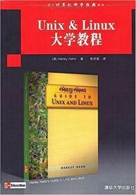 | 《Unix & Linux 大学教程》 | Harley Hahn | 9787302209560 | 清华大学出版社 | Harley Hahn's Guide to Unix and Linux | 命令行基础 |
| 《UNIX/Linux 系统管理技术手册（第 5 版）》 | Evi Nemeth、Garth Snyder、Trent R.Hein、Ben Whaley、Dan Mackin | 9787115532763 | 人民邮电出版社 | UNIX and Linux System Administration Handbook 5th Edition | 命令行进阶与 UNIX 基础 | |
| 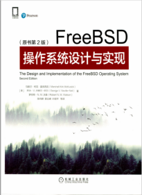 | 《FreeBSD 操作系统设计与实现（原书第 2 版）》 | Marshall McKusick、George Neville-Neil、Robert N.M. Watson | 9787111689973 | 机械工业出版社 | Design and Implementation of the FreeBSD Operating System, 2nd | 主要讲解了内核。 |
| 《UNIX 传奇——历史与回忆》 | Brian W Kernighan | 9787115557179 | 人民邮电出版社 | UNIX: A History and a Memoir | 主要讲解了 UNIX 的发展历史。 | |
| 《UNIX 编程艺术》 | Eric Raymond | 9787121176654 | 电子工业出版社 | The Art of UNIX Programming (The Addison-Wesley Professional Computng Series) | 主要讲解了 UNIX 的设计哲学与软件工程理论。 | |
| 《大教堂与集市》 | Eric S. Raymond | 9787111452478 | 机械工业出版社 | The Cathedral & the Bazaar | 主要介绍了开源运动的发展史。 | |
| 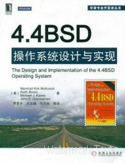 | 《4.4BSD 操作系统设计与实现》 | Marshall Kirk McKusick | 9787111366478 | 机械工业出版社 | The Design and Implementation of the 4.4BSD Operating System | 4.4BSD 操作系统设计与实现 |
| 《深入理解 FreeBSD 设备驱动程序开发》 | Joseph Kong | 9787111411574 | 机械工业出版社 | FreeBSD Device Drivers: A Guide for the Intrepid | FreeBSD 设备驱动程序开发 | |
| 《UNIX 环境高级编程（第 3 版）》 | W.Richard Stevens、Stephen A.Rago | 9787115352118 | 人民邮电出版社 | Advanced Programming in the UNIX Environment, Third Edition | 深入了解驱动 UNIX 内核的编程接口的实用知识 | |
| 《UNIX 网络编程 卷 1：套接字联网 API（第 3 版）》 | W. Richard Stevens、Bill Fenner、Andrew M. Rudoff | 9787115367198 | 人民邮电出版社 | UNIX Network Programming, Volume 1: The Sockets Networking API, Third Edition | 如何使用套接字 API 进行网络编程 | |
| 《UNIX 网络编程 卷 2：进程间通信（第 2 版）》 | W. Richard Stevens | 9787115367204 | 人民邮电出版社 | UNIX Network Programming,Vovum 2：Interprocess Communications,Second Edition | 深入了解各种进程间通信形式。这书原作者没出第 3 版，不用再找了 |
贡献者名单（以下排名随机排序）
星不萌
雨天
艳阳天
施主
fjh1997
X-Ray
freyr
isNijikawa
地铁卡
ruur
李大鹏
liguangsheng
kuntop
墨子
201724
April Simone🍥
心即理物即心
Jack
Zomby7e
tergel93
奇点
兜率
杭永聪
Shengyun
仰望天空
极品盗号
livrth
Voosk
注意：如果缺少了你的信息或者不想被列出，请发起 issue。
本章节为基础必备知识
第 2.0 节 图解安装
以下为 FreeBSD-14.0-ALPHA2-amd64-20230818-77013f29d048-264841-disc1.iso 的安装说明。DVD 请自行研究，大同小异。

推荐等待十秒即可自动进入，也可以直接回车进入。
| 选项 | 解释 |
|---|---|
| ACPI Support | ACPI 支持。有很多教程说有问题就关闭他，实际上是胡扯。关闭了反而问题会更多 |
| Safe Mode | 安全模式 |
| Single User | 单用户模式，找回 root 密码或修复磁盘时会用到 |
| Verbose | 啰嗦模式，显示更多输出 |

选择 install,按下回车键进行安装。

这里是设置键盘，直接回车即可。

此处是设置主机名。严禁直接回车，设置主机名为空，否则后果自负。

推荐：只选 src 以及 lib32。部分显卡驱动或其他程序需要 src，经测试 lib32 后天安装无效。不推荐选 ports，因为太老了，还不如直接从源里拉取最新的。
严禁全选，全选部分组件会使用网络进行安装。
| 选项 | 解释 |
|---|---|
| base-dbg | 激活调试符号的基础工具，如 cat、ls 等 |
| kernel-dbg | 激活内核和模块的调试符号 |
| lib32-dbg | 用于在激活调试符号的 64 位版本的 FreeBSD 上运行 32 位应用程序的兼容库 |
| lib32 | 用于在 64 位版本的 FreeBSD 上运行 32 位应用程序的兼容库 |
| ports | ports |
| src | 系统源代码 |
| tests | 测试工具 |

推荐：文件分区详解在第 6 章。这里推荐选择 auto ZFS/UFS，一般来说内存小于 8GB 的应该选择 UFS，内存 8G 及以上的应该选用 ZFS。允许手动分区解压 txz 文件以自定义。
注意：如果使用手动分区一直提示分区表损坏（corrupted）或类似字样，请先退出重启进入 shell 模式，刷新分区表：
# gpart recover ada0你在手动安装的时候可以判断是哪块硬盘，以确定 ada0 这个参数是多少。
刷新后，输入
bsdinstall即可进入安装模式。原因详情见 FreeBSD 手册，但是我认为这是一个 bug。

现代计算机应该选择 GPT+UEFI。较老的计算机（比如 2013 年以前的）应该选择保持与图片一致的选项（GPT(BIOS)）。


此处输入 root 密码，密码不会显示在屏幕上，且要求重复输入两次以确认一致性。密码强度默认无要求。


保持 DHCP 获取的 DNS 即可，也可以使用其他 DNS。


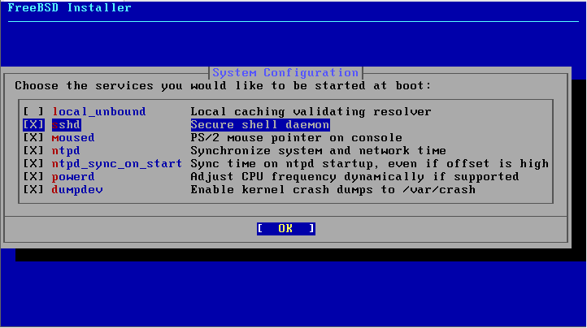
严禁全选
不要选local_unbound，会影响 DNS，见 https://bugs.freebsd.org/bugzilla/show_bug.cgi?id=262290。
虚拟机不需要选 powerd。
| 选项 | 解释 |
|---|---|
| local_unbound | 启用 DNS 本地非绑定。这是基本系统预置的 unbound，仅用于本地缓存转发解析器使用。注意：如果开启，你的系统将不会正确联网，需要手动配置 DNS。如果你不知道这是什么不建议开启 |
| sshd | 开启 ssh 服务 |
| moused | 在 tty 界面显示鼠标 |
| ntpdate | 启用启动时的自动时钟同步功能 |
| ntpd | 用于自动时钟同步的网络时间协议（NTP）守护程序 |
| powerd | 电源管理 |
| dumpdev | 启用崩溃转储，用于调试系统 |

推荐选择：这里是安全增强选择，应该选择 disable_sendmail，如果不禁止这个服务会使你在每次开机的时候卡上几分钟，而且这个服务本身没什么用，发邮件用的。
在 FreeBSD 14 中已不存在该选项，可跳过此步骤。


如果你要创建普通用户，务必将其加入到 wheel 组中。
这个菜单选项是用来创建普通用户的。root 敢死队可以无视之。其他参数可以保持默认设置不变。在 FreeBSD 14 及以后，所有用户的 shell 都被统一为了 sh。


第 2.1 节 三种虚拟机与 FreeBSD 版本比较
FreeBSD 版本比较
已知 FreeBSD 有以下版本： alpha、rc、beta、release、current、stable。
release 是绝对的“stable”，是可以日常/服务器使用的稳定版。而 stable 和 current 都是开发分支，都是不稳定的。所以 FreeBSD 的 stable 与其他发行版的“稳定版”的概念并不一致，反而是一种“开发版”。
alpha 是 current 进入 release 的第一步。具体是 current --> alpha（进入 stable 分支）--> beta --> rc --> release。
stable 相对稳定后会推送到 current，但是不保证二者没有大的 bug，只是 stable 确保其 ABI 是兼容与大版本的。
FreeBSD 版本选择
其中 rc 和 beta 都是测试版本；
日常使用应该选择 release 版本，当有多个 release 版本时，应该选择最新的一个；
如果硬件比较新或者需要进行某些测试，应该选择 current 版本，是滚动开发版。
注意：只有 rc、beta 和 release 才能使用 freebsd-update 命令更新系统（且是一级架构），其余系统均需要通过源代码编译的方式更新系统。
三种虚拟机比较
Virtual Box 与 VMware Workstation Pro
个人计算机上常用的虚拟机有两种，一是 Virtual Box，另一个是 VMware Workstation Pro。
一般来说，在 Windows 系统上建议使用 VMware Workstation Pro （以下简称 VM），在 Linux 系统上建议使用 Virtual Box（以下简称 VB）。
VM 是闭源的由商业公司提供的，是需要付费的，可用免费试用，也有免费版本 VMware Workstation Player；VB 是 Oracle 公司的开源产物，是免费的。
就个人而言，VM 在实际使用中 Bug 会比 VB 少一些：VB 会有一些奇奇怪怪的问题（详见 VB 章节），且很花时间去排除解决。但是 vb 不堪重用，休眠/恢复虚拟机往往需要几分钟的时间，而同样的操作，vm 只需要 3 秒钟。在忍无可忍的状态下，我恢复了 vm 的使用，卸载了 vb 虚拟机。
但是为了给与大家更多自由，我们将两种虚拟机的安装使用方法都提供给大家。
Hyper-V
Hyper-V 是微软为 Windows 开发的虚拟机，分为 Gen 1 和 Gen 2。
Gen 1 和 Gen 2 区别如下：
| Hyper-V 代数 | 硬盘 | 启动引导 |
|---|---|---|
| Gen 1 | IDE + SCSI | 仅 MBR |
| Gen 2 | 仅 SCSI | 仅 UEFI + 安全启动支持 + PXE 支持 |
系统快速创建的为 Gen 2。
注意：
使用 Gen 2 时请关闭安全启动，否则系统无法启动！点击设置： 点击“安全”——>取消勾选“启用安全启动。
| Hyper-V 代数 | FreeBSD 版本 | 鼠标 | 键盘 | 备注 |
|---|---|---|---|---|
| Gen 1 | 13.0 | 支持 | 不支持 | / |
| Gen 2 | 13.0 | 不支持 | 支持 | 需要修改参数sysctl kern.evdev.rcpt_mask=6 |
| Gen 2 | 14.0 | 支持 | 支持 | 参见源代码 |
使用 virtio 技术半虚拟化的虚拟机
注意：以下内容仅供参考，有待测试。如果你测试通过，请告知我们！
根据反馈，在 VMware EXSI 等半虚拟化平台上安装或升级 FreeBSD 会遇到故障（如阿里云 virtio-blk 驱动会出问题），需要在开机时按ESC,然后输入 set kern.maxphys=65536 回车，再输入 boot 即可正常启动。安装好后需要在 /boot/loader.conf 加入 kern.maxphys=65536 以免每次开机重复操作。阿里云升级完成后可能会因为此类问题卡在引导界面，此时需要重启并进 VNC 再进行上述操作。
参考链接：
第 2.2 节 安装 FreeBSD——基于 Virtual Box
UEFI 下显卡也可以正常驱动。——2023.1.14 测试
# efibootmgr # 无需安装，自带 Boot to FW : false BootCurrent: 0004 Timeout : 0 seconds BootOrder : 0004, 0000, 0001, 0002, 0003 +Boot0004* FreeBSD Boot0000* UiApp Boot0001* UEFI VBOX CD-ROM VB2-01700376 Boot0002* UEFI VBOX HARDDISK VB7aff22ad-deb533d3 Boot0003* EFI Internal Shell
FreeBSD 镜像下载
警告
iso 镜像不适用于物理机，物理机请使用 img 镜像。
提示
虚拟机不推荐使用 FreeBSD 官方构建的虚拟机镜像，因为需要手动扩容，而且文件系统不能自由选择，默认是 UFS。
虚拟机一般使用
FreeBSD-13.2-RELEASE-amd64-disc1.iso等类似文件名和后缀的镜像，但是，FreeBSD-13.2-RELEASE-amd64-memstick.img也并非只能用于 U 盘刻录，虚拟机也是可以用的，使用方法参考第 31.2 节。
RELEASE 正式版 镜像下载地址：https://download.freebsd.org/ftp/releases/amd64/amd64/ISO-IMAGES/13.1/FreeBSD-13.1-RELEASE-amd64-disc1.iso
CURRENT 测试版（仅限专业用户，对于该版本来说，无法启动，环境变量错误都是正常的事情！） 镜像下载地址: https://download.freebsd.org/snapshots/amd64/amd64/ISO-IMAGES/14.0/
FreeBSD 旧版本下载地址: http://ftp-archive.freebsd.org/pub/FreeBSD-Archive/old-releases/amd64/ISO-IMAGES/
下载 VirtualBox
进入网页点击 download 即可下载：
安装设置
安装完成后请手动关机，卸载或删除安装光盘，否则还会进入安装界面。
网络设置
方法 ① 桥接
桥接是最简单的互通主机与虚拟机的方法，并且可以获取一个和宿主机在同一个 IP 段的 IP 地址，如主机是 192.168.31.123，则虚拟机的地址为 192.168.31.x。
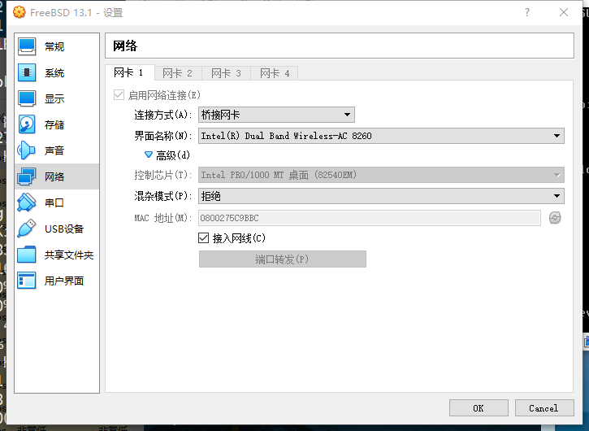
设置后 # dhclient em0 即可（为了长期生效可在 /etc/rc.conf 中加入 ifconfig_em0="DHCP"）。
如果没有网络（互联网）请设置 DNS 为 223.5.5.5。如果不会，请看本章其他章节。
方法 ② NAT
网络设置比较复杂，有时桥接不一定可以生效。为了达到使用宿主机（如 Windows10 ）控制虚拟机里的 FreeBSD 系统的目的，需要设置两块网卡——一块是 NAT 网络模式的网卡用来上网、另一块是仅主机模式的网卡用来互通宿主机。如图所示：


使用命令 # ifconfig 看一下，如果第二块网卡 em1 没有获取到 ip 地址,请手动 DHCP 获取一下: # dhclient em1 即可（为了长期生效可在 /etc/rc.conf 中加入 ifconfig_em1="DHCP"）。
如果没有网络（互联网）请设置 DNS 为 223.5.5.5。如果不会，请看本章其他章节。
显卡驱动与增强工具
# pkg install virtualbox-ose-additions
xorg 可以自动识别驱动，不需要 手动配置 /usr/local/etc/X11/xorg.conf（经过测试手动配置反而更卡，点一下要用 5 秒钟……）。
显卡控制器用 VBoxSVGA 即可。
启动服务：
# sysrc vboxguest_enable="YES"
# sysrc vboxservice_enable="YES"
启动服务，调整权限（以普通用户 ykla 为例）：
# service vboxguest restart # 可能会提示找不到模块，但是不影响使用
# service vboxservice restart
# pw groupmod wheel -m ykla # sudo 权限
故障排除
EFI 下无法正常关机
添加
hw.efi.poweroff=0
到 /etc/sysctl.conf，然后再重启，再关机就正常了。
参考文献：
- 12.0-U8.1 -> 13.0-U2 poweroff problem & solution
- EFI: VirtualBox computer non-stop after successful shutdown of FreeBSD
鼠标进去了出不来
请先按一下右边的 ctrl（正常键盘左右各有一个 ctrl，为默认设置）；如果自动缩放屏幕需要还原或者找不到菜单栏了请按 home+ 右 ctrl（提示：Home 键在 108 键盘上位于 Scroll Lock 的下边。）
UEFI 固件设置
开机反复按 Esc 即可进入 VB 虚拟机的 UEFI 固件设置。
第 2.3 节 安装 FreeBSD——基于 Vmware Workstation Pro
BIOS 还是 UEFI
经过测试，FreeBSD 也可以支持驱动 UEFI 下 VMware 的显卡。——2023.1.13
默认情况下 VMware 是 BIOS，会提示没有：
# efibootmgr # 默认自带、无需安装。 efibootmgr: efi variables not supported on this system. root? kldload efirt?如果当前系统是 UEFI,efibootmgr 则输出：
# efibootmgr # 默认自带、无需安装。 Boot to FW : false BootCurrent: 0004 BootOrder : 0004, 0000, 0001, 0002, 0003 +Boot0004* FreeBSD Boot0000* EFI VMware Virtual SCSI Hard Drive (0.0) Boot0001* EFI VMware Virtual IDE CDROM Drive (IDE 1:0) Boot0002* EFI Network Boot0003* EFI Internal Shell (Unsupported option)
警告
注意：由于 Bug 250580 - VMware UEFI guests crash in virtual hardware after r366691，FreeBSD 11/12 可能在 VMare 的 UEFI 环境下无法启动。经测试 13.0 正常启动。
视频教程
(FreeBSD 13.1 安装 KDE5——基于 VMware 17)[https://www.bilibili.com/video/BV1UR4y1U71T/)
视频教程环境 VMware 17 + FreeBSD 13.1-RELEASE + BIOS +KDE 5。
镜像下载
警告
iso 镜像不适用于物理机，物理机请使用 img 镜像。
提示
虚拟机不推荐使用 FreeBSD 官方构建的虚拟机镜像，因为需要手动扩容，而且文件系统不能自由选择，默认是 UFS。
虚拟机一般使用
FreeBSD-13.2-RELEASE-amd64-disc1.iso等类似文件名和后缀的镜像，但是，FreeBSD-14.0-RELEASE-amd64-memstick.img也并非只能用于 U 盘刻录，虚拟机也是可以用的，使用方法参考第 31.2 节。
RELEASE 正式版 镜像下载地址：https://download.freebsd.org/ftp/releases/amd64/amd64/ISO-IMAGES/14.0/FreeBSD-14.0-RELEASE-amd64-disc1.iso
CURRENT 测试版（仅限专业用户，对于该版本来说，无法启动，环境变量错误都是正常的事情！） 镜像下载地址: https://download.freebsd.org/snapshots/amd64/amd64/ISO-IMAGES/15.0/
FreeBSD 旧版本下载地址: http://ftp-archive.freebsd.org/pub/FreeBSD-Archive/old-releases/amd64/ISO-IMAGES/
虚拟机下载
VMware Workstation Pro
VMware Workstation Pro 是免费试用下载的，请勿从第三方站点下载，否则会造成一些苦难哲学的后果。点击 Download NOW 即可。左边是 Windows 系统使用，右侧是 Linux 系统使用。该软件虽是收费的，但是授权码并不难获得。
https://www.vmware.com/products/workstation-pro/workstation-pro-evaluation.html
VMware Workstation Player
VMware Workstation Player 是个人免费使用的，你也可以选择此版本。
https://www.vmware.com/products/workstation-player/workstation-player-evaluation.html
网络设置
请使用 NAT 模式，如果不能与宿主机（物理机）互通，请打开 VMware 编辑-虚拟网络管理器，“还原默认设置”，直至出现类似下图的配置：
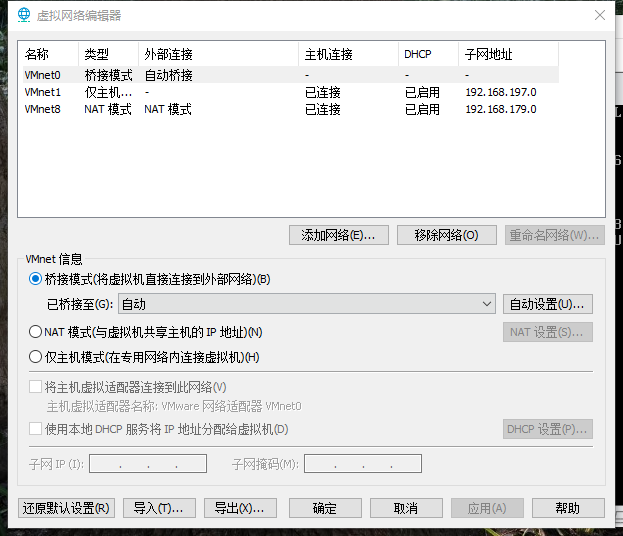
以上请不要手动设置，如果虚拟机内部一直提示 no link，请重启物理机，再打开虚拟机：VMware 编辑-虚拟网络管理器，“还原默认设置”，直至出现上述配置。（请不要尝试手动配置，那是无效的）
如果没有网络请设置 DNS 为223.5.5.5。请看本章其余章节。
显卡驱动以及虚拟机增强工具
显卡驱动
VMware 自动缩放屏幕请安装显卡驱动和虚拟机增强工具，即：
# pkg install xf86-video-vmware open-vm-tools xf86-input-vmmouse
安装完毕后无需任何多余配置即可实现屏幕自动缩放。
对于显卡来说，请勿做多余配置，比如去修改创建
xorg.conf，这会造成虚拟机卡死等问题。
wayland 下也需要安装该驱动。即使 wayland 暂不可用。
如果屏幕显示不正常（过大），请尝试：编辑虚拟机设置——>硬件、设备——>显示器——>监视器、指定监视器设置——>任意监视器的最大分辨率，设置为主机的分辨率或者略低于主机分辨率均可。
鼠标集成（主机虚拟机鼠标自由切换）
# pkg install xf86-video-vmware xf86-input-vmmouse open-vm-tools
# sysrc moused_enable=YES
# Xorg -configure
# mv /root/xorg.conf.new /usr/local/share/X11/xorg.conf.d/xorg.conf
编辑 /usr/local/share/X11/xorg.conf.d/xorg.conf 修改以下段落为（其他部分不需要动，保留原样即可）：
…………此处省略一部分…………
Section "ServerLayout"
Identifier "X.org Configured"
Screen 0 "Screen0" 0 0
InputDevice "Mouse0" "CorePointer"
InputDevice "Keyboard0" "CoreKeyboard"
Option "AutoAddDevices" "Off" # 添加此行到此处
EndSection
…………此处省略一部分…………
Section "InputDevice"
Identifier "Mouse0"
Driver "vmmouse" # 修改 mouse 为 vmmouse
Option "Protocol" "auto"
Option "Device" "/dev/sysmouse"
Option "ZAxisMapping" "4 5 6 7"
EndSection
…………此处省略一部分…………
虚拟机增强工具
如果有桌面
# pkg install open-vm-tools xf86-input-vmmouse
如果没有桌面：
# pkg install open-vm-tools-nox11
具体配置
编辑 /boot/loader.conf
写入
fusefs_load="YES"
共享文件夹
请先安装虚拟机增强工具。
# vmhgfs-fuse .host:/selfsharefold /mnt/hgfs
查看共享文件夹
# ls /mnt/hgfs
提示
在使用 Windows 远程桌面或者其他 XRDP 工具远程另一台 Windows 桌面，并使用其上面运行的 Vmware 虚拟机操作 FreeBSD 时，鼠标通常会变得难以控制。
第 2.4 节 腾讯云轻量云及其他服务器安装 FreeBSD
注意
尽管本文和 dd 没什么关系，但是如果你还不懂什么是
dd，不建议使用本文。这一切也许超越了你的动手能力和知识储备。此外，对于不再受安全支持的版本如
9.2，请参考本文并结合手动安装 FreeBSD 章节操作。
警告
安装前请在原有的 Linux 系统上看看自己的 IP 及 netmask，可以用命令
ip addr及ip route show查看网关信息。因为有的服务器并不使用 DHCP 服务，而需要手动指定 IP。
视频教程
视频与教程有一定出入，按哪个来都可以。
SCP 命令可以用图形化的 Winscp 替代。
最后安装完毕建议按照 2.7 节设置密钥登录以提高安全性。
文字教程
腾讯云轻量应用服务器（即腾讯云轻量云）以及阿里云轻量应用服务器等机器都没有 FreeBSD 系统的支持，只能通过特殊的的方法自己暴力安装。请注意数据安全，以下教程有一定危险性和要求你有一定的动手能力。
他是一个服务器面板里没有 FreeBSD 镜像 IDC，所以要用奇怪的方法来安装了。因为 FreeBSD 和 Linux 的内核不通用，可执行文件也不通用，所以无法通过 chroot 再删掉源系统的方法安装。安装的方法是先在内存盘中启动 FreeBSD 系统，也就是 mfsBSD，再格式化硬盘安装新系统。mfsBSD 是一个完全载入内存的 FreeBSD 系统，类似于 Windows 的 PE。
我们需要下载 img 格式的 mfsBSD 镜像，可以提前下号使用 winscp 传入服务器，服务器直接下载可能需要两个小时。
真正的 mfsBSD 启动方法
就是因为刚才说的问题，而且 FreeBSD 和一般的 Linux 是不同的生态，我们需要先进入一个 Linux 的内存盘，再在内存中运行的 Linux 里将 mfsBSD 写入硬盘。
就在 mfsBSD 下载位置的下方，有一个 mfsLinux，就是我们可以用的工具。由于它只有 ISO 格式，没法直接放在当前环境下启动，而它说自己是纯 initrd 类型的，我们就把启动它的 initrd 和内核提取出来，放在硬盘里手动启动。
我们知道在一般的 Linux 系统中，initrd 是一个打包成内存盘的微型但完整的 Linux 根目录，里面有一些比如说加载驱动，挂载硬盘，以及启动初始化程序的必要数据。开机时内核与 initrd 被 Bootloader 加载，initrd 中的脚本进行启动的准备工作并运行硬盘里的初始化程序。
我们先把从那个 ISO 提取出来的内核和 initrd 文件放在根目录文件夹下，然后重启机器进入 GRUB 的命令行界面（可以在倒计时的时候按 e 进入编辑模式，删掉所有 linux、initrd 行原有内容，写完后按 Ctrl X 即可加载），手动启动指定的内核和 initrd（可以用 Tab 键补全路径）。
linux (hd0,msdos1)/vmlinuz
initrd (hd0,msdos1)/initramfs.igz
不一定是 (hd0,msdos1)，以实际为准，不要一下都删掉了看不出来了。
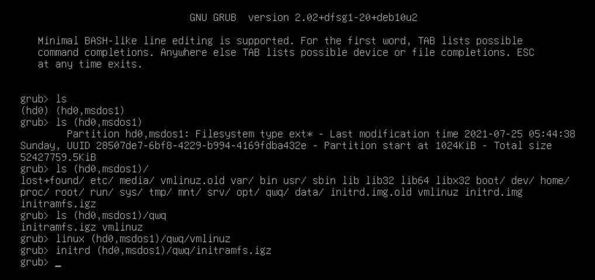
这个特制的 initrd 启动之后并没有加载本地的系统，而是自己连接了网络并打开 ssh 服务器。于是我们就获得了一个运行在内存中的 Linux 系统。
这个时候服务器应该就可以被 ssh 连接上了，并且可以安全的格式化硬盘。
mfsBSD 和 mfsLinux 镜像的 root 密码默认是 mfsroot
# cd /tmp
# wget https://mfsbsd.vx.sk/files/images/13/amd64/mfsbsd-13.1-RELEASE-amd64.img
# dd if=mfsbsd-13.1-RELEASE-amd64.img of=/dev/vda
# reboot
提示：建议在此处使用服务器的“快照”功能对服务器进行备份，以防以下教程操作失误重来耽误时间。
安装 FreeBSD
ssh 链接后，kldload zfs 加载 zfs 模块，然后运行 bsdinstall，在出现以下图片时，点 Other 输入图中的指定镜像版本（地址里有即可，你可以自己改哦）：
示例：如 https://mirrors.ustc.edu.cn/freebsd/releases/amd64/13.2-RELEASE/ 或 https://mirrors.nju.edu.cn/freebsd/snapshots/arm64/14.0-CURRENT/
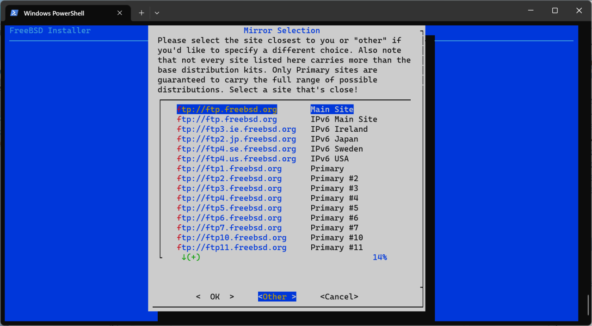
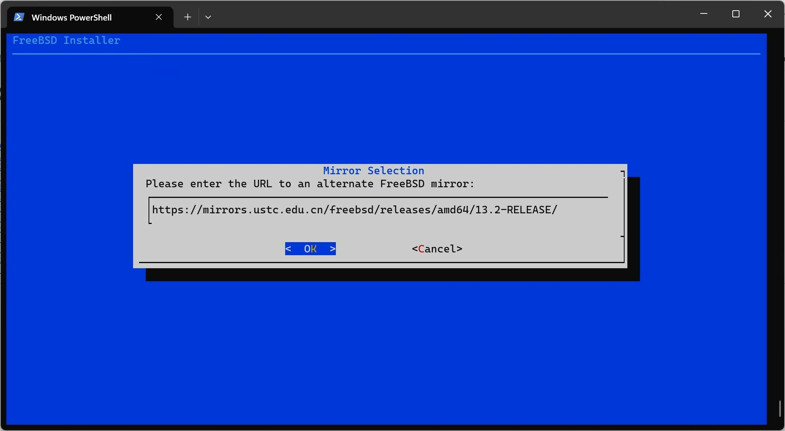
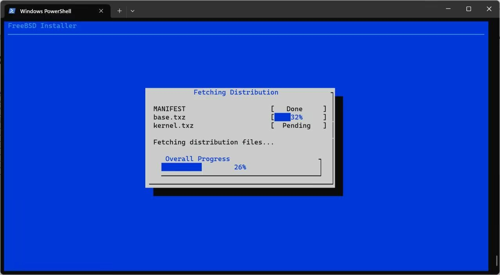
- 我们还可以手动下载 FreeBSD 的安装文件，以 MANIFEST 为例：
# mkdir -p /usr/freebsd-dist
# cd /usr/freebsd-dist
# fetch http://ftp.freebsd.org/pub/FreeBSD/releases/amd64/13.1-RELEASE/MANIFEST
故障排除
- 为什么不能直接 dd？（错误示范，仅供说明，请勿执行）
在正常的 Linux 系统内直接把 mfsBSD 的 img dd 到硬盘里，重启之后虽然正常加载 bootloader，但是可能是因为系统又对硬盘进行了写入而无法正常挂载内存盘。
# wget https://mfsbsd.vx.sk/files/images/13/amd64/mfsbsd-se-13.1-RELEASE-amd64.img -O- | dd of=/dev/vda
这里的 | 是管道的意思，将上一个命令的标准输出作为下一个命令的标准输入。 -O- 指把文件下载输出到标准输出，而 dd 没有指定 if 时会自动从标准输入读取内容。
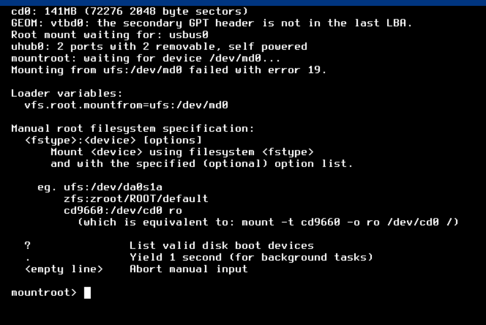
- 如果有云服务器用 lvm 的话，需要把东西全都放到 /boot 里面，要不然 grub 和 mfslinux 都打不开。
参考资料
第 2.5 节 如何在自己的机器上安装 FreeBSD
物理机安装
我该下载哪个镜像？
警告
请不要 问我在安装中应该选用哪个镜像站这类问题，那是因为你的错误操作导致的。
不要 选用带有
bootonly字样的镜像文件，除非你真的知道自己在干什么。也不要 不看图文教程就全选所有的组件，要按照前文教程进行选择。
使用 U 盘 安装应该选用 img 结尾的镜像，例如
FreeBSD-14.0-RELEASE-amd64-memstick.img
只有当使用 光盘/虚拟机 安装时才应选用 iso 结尾的镜像。这是因为 FreeBSD 的 ISO 镜像没做 Hybrid 混合启动，写入 U 盘会产生错误。见 Bug。
FreeBSD 所有安装介质包括不限于虚拟机文件都没有提供图形界面，均需要自行安装。
注意
如果要在 VMware 虚拟机使用 UEFI，必须使用 FreeBSD 13.0-RELEASE 及以上，否则启动会花屏。
我该如何刻录 FreeBSD 镜像到 U 盘？
刻录工具 Windows 应该选用 Rufus，Linux 直接使用 dd命令即可。
rufus 下载地址：https://rufus.ie/zh
警告
不建议 使用 FreeBSD 手册推荐的 win32diskimager，有时会出现校验码错误的情况（实际上文件校验码正常）。只有在 rufus 无效的情况下才应使用 win32diskimager。 下载地址 https://sourceforge.net/projects/win32diskimager/files/Archive/,点击
win32diskimager-1.0.0-install.exe即可下载。严禁 使用 Ventoy 引导实体机安装，有时会报错找不到安装文件。
请 老老实实用 rufus。
BT 种子下载地址
https://fosstorrents.com/distributions/freebsd/
第 2.6 节 手动安装 FreeBSD
总是有人想用 LFS 的方式来安装 FreeBSD，但是 FreeBSD 基本系统是一个有机整体，不是由单个软件包构成的，因此我认为这难以实现，参考 ghostBSD 的代码我也没有看出来他的裁剪方法。有能力者请反馈。
但是你可以不使用 FreeBSD 的安装工具—bsdinstall，自己手动安装 FreeBSD。
主要思想就是自己对磁盘进行分区，解压缩所需要的 txz 压缩文件，然后对其进行配置（如引导，创建用户，设置密码网络等等）。
所需要考虑的问题不止一个，例如如何使用 zfs（如果你想），不同的引导下 UEFI BIOS 的引导配置方法是不一样的。
手动安装需要你有极强的动手能力，起码自己安装过 Gentoo Linux。
参考文献：
- How to manually install FreeBSD on a remote server (with UFS, ZFS, encryption...)
- RootOnZFS/GPTZFSBoot
以上我仅测试过 UFS 相关。
第 2.7 节 ee 用法及网络配置
ee
基础入门
ee 的用法比 nano 还要简单上许多。是 FreeBSD 基本系统自带的文本编辑器。
比如
# ee a.txt
按 ESC 键，会显示提示框，按两次回车即可保存。
详细用法
编辑后按 ESC 会弹出提示框，输入 a 保存；
- \ 或 [ 键 显示主选单。
- o 输入 ASCII code，例如输入 65 就会显示 A。
- u 跳到档案结尾。
- t 跳到档案开头。
- c 输入指令。在按了 Ctrl+c 后，上方选单会出现命令说明，例如你可以直接输入数字，表示将光标移到某一行。
- y 搜寻。按了 Ctrl+y 之后，你可以输入欲搜寻的字符串。如果要搜寻下一个该字符串，只要再按 Ctrl+x 即可。预设的搜寻是不分大小写的，如果要区分大小写，你可以按 Ctrl+c 并输入 case 即可。如果要取消只要再按 Ctrl+c 并输入 nocase。
- a 跳到行首。
- e 跳到行尾。
- d 删除光标所在位置的字符。
- j 贴上上一次所删除的字符。
- k 删除光标所在位置的一整行。
- l 贴上上一次删除的一整行内容。
- w 删除一个字。
- r 贴上上一次所删除的字。
- p 将光标移到上一行。
- n 将光标移到下一行。
- b 将光标移到上一个字，和方向键左键一样。
- f 将光标移到下一个字，和方向键右键一样。
- g 下一页。
- v 上一页。
- z 移到下一个字。
- 离开 ee。如果文件有修改过，它会问你是否要
网络配置
先 ifconfig 看看有没有网卡，没有那就不属于本节的范围之内了。请注意 lo0 并不是真实网卡，如果你只能看到这个说明你网卡没有被正确驱动。
示例输出：
root@ykla:~ # ifconfig
genet0: flags=8843<UP,BROADCAST,RUNNING,SIMPLEX,MULTICAST> metric 0 mtu 1500
options=68000b<RXCSUM,TXCSUM,VLAN_MTU,LINKSTATE,RXCSUM_IPV6,TXCSUM_IPV6>
ether dc:a6:1a:2e:f4:4t
inet 192.168.123.157 netmask 0xffffff00 broadcast 192.168.123.255
media: Ethernet autoselect (1000baseT <full-duplex>)
status: active
nd6 options=29<PERFORMNUD,IFDISABLED,AUTO_LINKLOCAL>
lo0: flags=8049<UP,LOOPBACK,RUNNING,MULTICAST> metric 0 mtu 16384
options=680003<RXCSUM,TXCSUM,LINKSTATE,RXCSUM_IPV6,TXCSUM_IPV6>
inet6 ::1 prefixlen 128
inet6 fe80::1%lo0 prefixlen 64 scopeid 0x2
inet 127.0.0.1 netmask 0xff000000
groups: lo
nd6 options=21<PERFORMNUD,AUTO_LINKLOCAL>
root@ykla:~ #
以下内容同时适用于虚拟机和物理机。
默认情况下，FreeBSD 是正常联网的，如果不能可能是因为没有正确配置 DNS。
# ee /etc/resolv.conf
清空里面原有内容。添加以下内容.
nameserver 223.5.5.5 # 阿里 DNS，下同
nameserver 223.6.6.6
nameserver 8.8.8.8 # 谷歌 DNS，境外设备才用
之后重启一下网络配置
# /etc/netstart restart
尝试 ping 一下 163.com。（按下 ctrl + C 可中断）
示例输出：
root@ykla:~ # ping 163.com
PING 163.com (123.58.180.7): 56 data bytes
64 bytes from 123.58.180.7: icmp_seq=0 ttl=55 time=30.617 ms
64 bytes from 123.58.180.7: icmp_seq=1 ttl=55 time=30.608 ms
64 bytes from 123.58.180.7: icmp_seq=2 ttl=55 time=30.633 ms
^C
--- 163.com ping statistics ---
3 packets transmitted, 3 packets received, 0.0% packet loss
round-trip min/avg/max/stddev = 30.608/30.619/30.633/0.010 ms
root@ykla:~ #
网络连通。
将网卡设为混杂模式
ifconfig_xxx="inet x.x.x.x netmask x.x.x.x promisc"
参考文献
第 2.8 节 常用软件 与 SSH 配置
WinSCP 下载
WinSCP 是对 scp 命令的图形化封装的软件，并同时支持 FTP 等多种协议。可以快捷的传输文件与 Windows 系统和 Linux 或 BSD 之间。
下载地址：
https://winscp.net/eng/download.php
Xshell 下载
Xshell 是 Windows 平台上的强大的 shell 工具，不建议使用苦难哲学的 putty。
下载地址（输入用户名和邮件即可）：
https://www.netsarang.com/zh/free-for-home-school
配置 SSH
允许 root ssh
# ee /etc/ssh/sshd_config #（删去前边的 #，并将 yes 或 no 修改为如下）
PermitRootLogin yes #允许 root 登录
PasswordAuthentication yes #（可选）设置是否使用普通密码验证，如果不设置此参数则使用 PAM 认证登录，安全性更高
提示：删去前边的
#是什么意思？#在 UNIX 当中一般是起到一个注释作用，相当于 C 语言里面的//。意味着后边的文字只起到说明作用，不起实际作用。
故障排除
如果你实在是找不到
PasswordAuthentication no，请你看看你改的究竟是/etc/ssh/ssh_d__config还是/etc/ssh/ssh_config。sshd 才是我们真正要改的文件。
开启 SSH 服务
# service sshd restart
如果提示找不到 sshd,请执行下一命令:
# sysrc sshd_enable="YES"
然后再
# service sshd restart
保持 SSH 在线
服务端设置：
编辑 # ee /etc/ssh/sshd_config，调整 ClientAlive 的设置：
ClientAliveInterval 10
ClientAliveCountMax 3
10 秒给客户端发一次检测，客户端如果 3 次都不回应，则认为客户端已断开连接。
ClientAliveInterval 默认是 0，表示禁用检测。
客户端设置：
全局用户生效：# ee /etc/ssh/ssh_config，仅对当前用户生效：~/.ssh/config。
Host *
ServerAliveInterval 10
ServerAliveCountMax 3
或者在连接的时候使用 -o 指定参数：
# ssh user@server -p 22 -o ServerAliveInterval=10 -o ServerAliveCountMax=3
客户端和服务端任一开启检测即可。
SSH 密钥登录
生成密钥
# ssh-keygen
OpenSSH 7.0 及以上版本默认禁用了 ssh-dss(DSA) 公钥算法。FreeBSD 13.0 采用 OpenSSH_7.9。因此使用默认值即可。
root@ykla:~ # ssh-keygen
Generating public/private rsa key pair.
Enter file in which to save the key (/root/.ssh/id_rsa): #此处回车
Created directory '/root/.ssh'.
Enter passphrase (empty for no passphrase): #此处输入密码（为了安全建议设置密码）
Enter same passphrase again: #此处重复输入密码
Your identification has been saved in /root/.ssh/id_rsa.
Your public key has been saved in /root/.ssh/id_rsa.pub.
The key fingerprint is:
SHA256:MkcEjGhWCv6P/8y62JfbpEws9OnRN1W0adxmpceNny8 root@ykla
The key's randomart image is:
+---[RSA 2048]----+
|. o.o... ..|
|..+.. .. o+*|
| +. . o*B|
| . . o=.|
| . .o S . ..|
| + o+o . .|
| . o *.o o E .|
| + Bo= . . . |
| . ==O.. |
+----[SHA256]-----+
root@ykla:~ #
配置密钥
检查权限（默认创建的权限如下）：
drwx------ 2 root wheel 512 Mar 22 18:27 /root/.ssh #权限为 700
-rw------- 1 root wheel 1856 Mar 22 18:27 /root/.ssh/id_rsa #私钥，权限为 600
-rw-r--r-- 1 root wheel 391 Mar 22 18:27 /root/.ssh/id_rsa.pub #公钥，权限为 644
生成验证公钥：
# cat /root/.ssh/id_rsa.pub >> /root/.ssh/authorized_keys
-rw-r--r-- 1 root wheel 391 Mar 22 18:39 /root/.ssh/authorized_keys #检查权限 644
使用 winscp 把私钥和公钥保存到本地后，删除服务器上的多余文件：
# rm /root/.ssh/id_rsa*
修改 /etc/ssh/sshd_config
# ee /etc/ssh/sshd_config
修改配置如下（删去前边的 #，并将 yes 或 no 修改为如下）：
PermitRootLogin yes #允许 ROOT 用户直接登陆系统
AuthorizedKeysFile .ssh/authorized_keys #修改使用用户目录下密钥文件，默认已经正确配置，请检查
PasswordAuthentication no #不允许用户使用密码方式登录
ChallengeResponseAuthentication no #禁止密码登录验证
PermitEmptyPasswords no #禁止空密码的用户进行登录
重启服务
# service sshd restart
使用 xshell 登录即可，输入密钥密码，导入私钥id_rsa，即可登录。
如果使用其他 ssh 软件无法登陆请自行转换密钥格式。
使用 screen 保持 SSH 不断线
安装：
# pkg install screen
使用方法：
# screen -S xxx
使用 -S 可以指定 xxx 为名字，方便找到。
然后就可以进行 ssh 连接了，后续可以关闭这个窗口或软件，不影响 ssh。
查看有哪些正在运行的 screen？
root@ykla:/ # screen -ls
There are screens on:
18380.pts-0.ykla (Attached)
70812.xxx (Detached)
67169.pts-0.ykla (Detached)
3 Sockets in /tmp/screens/S-root.
Detached 的可以直接 -r 恢复。
screen -r xxx
Attached 的必须先离线再恢复：
root@ykla:/ # screen -d 18380
[18380.pts-0.ykla detached.]
root@ykla:/ # screen -r 18380
第 2.9 节 触摸板的设置
默认情况下支持 i2c 和 USB 触摸板。
关闭触摸板
查找触摸板：
ykla@ykla-mi:~ $ xinput list
⎡ Virtual core pointer id=2 [master pointer (3)]
⎜ ↳ Virtual core XTEST pointer id=4 [slave pointer (2)]
⎜ ↳ Windows pointer id=6 [slave pointer (2)]
⎣ Virtual core keyboard id=3 [master keyboard (2)]
↳ Virtual core XTEST keyboard id=5 [slave keyboard (3)]
↳ Windows keyboard id=7 [slave keyboard (3)]
可以看到 6 是触摸板，关闭：（最后 1 为开启）
ykla@ykla-mi:~ $ xinput set-prop 6 "Device Enabled" 0
参考文献：
Fn 键设置
第 2.10 节 声卡与网卡设置
FreeBSD 声卡
声音设置
声卡驱动 snd_hda 默认即加载。默认内核没有包含时要手动加载对应内核模块。
用以下命令查看当前声卡设备：
$ cat /dev/sndstat
Installed devices:
pcm0: <NVIDIA (0x0083) (HDMI/DP 8ch)> (play)
pcm1: <NVIDIA (0x0083) (HDMI/DP 8ch)> (play)
pcm2: <NVIDIA (0x0083) (HDMI/DP 8ch)> (play)
pcm3: <NVIDIA (0x0083) (HDMI/DP 8ch)> (play)
pcm4: <Realtek ALC892 (Rear Analog 5.1/2.0)> (play/rec) default
pcm5: <Realtek ALC892 (Front Analog)> (play/rec)
pcm6: <Realtek ALC892 (Rear Digital)> (play)
No devices installed from userspace.
后面带有 default 是 oss 默认设备。如果软件的音频使用的 oss 且输出是默认的，音频就会从这个设备输出。
FreeBSD 大部分软件的音频输出驱动为 oss。有些默认是 pulseaudio(比如 firefox)，这些软件的设置看最后的提示。
下列命令可以修改输出的设备。最后的数字是对应的 pcm 后面的数字。
$ sysctl hw.snd.default_unit=5
此处推荐几个 oss mixer：
| GUI 环境 | 名称 |
|---|---|
| kde5 | audio/dsbmixer |
| gtk | audio/gtk-mixer |
| 非图形化 | audio/mixertui |
提示
部分声卡需要自行编译内核，请参考 Open Sound System for FreeBSD。
但是 oss 有些缺点，使用 obs-studio 无法录制 oss 输出。只能录制 oss 输入。看官方论坛里，可以 virtual_oss 模拟一个设备实现。
但是 obs-studio 可以录制 pulseaudio 输出的音频。
所以有些软件可以使用 pulseaudio 作为输出。使用 pulseaudio 的软件的音频输出，不受上面的命令控制音频输出设备。pulseaudio 会根据自己的设置把音频送到对应设备，所以需要使用 pulseaudio 混音器控制。
在 kde5 下面自带的音频控制器，切换设备就是控制的 pulseaudio。
官方打包好的多媒体软件有些是支持 pulseaudio 但是这些软件中的大部分对应的编译选项没有打开。如果需要录制软件的音频输出，可以自行打开 ports 的编译选项自己编译。在软件中设置 pulseaudio 作为音频驱动输出就可以了。
第 2.11 节 打印机的安装
本过程环境使用的是 KDE5 桌面系统及 HP LaserJet Pro MFP M126nw 多功能激光打印机（如果是其它型号的惠普打印机需在添加打印机时能找到对应的型号的驱动就能使用）,并且已连入局域网实现网络打印。
安装 CUPS(通用 Unix 打印系统)
# pkg install cups
或
# cd /usr/ports/print/cups
# make install clean
请在界面中选中 x11，此选项可在 kde 5 桌面系统中生成添加和配置打印机的应用。
添加服务
# sysrc cupsd_enable="YES"
完成后启动 cups 服务，执行如下命令
# service cupsd restart
安装打印机驱动
# pkg install hplip
添加打印机
在浏览器中输入 http://localhost:631，该地址为该打印机的管理页面。
点击顶部菜单的 Administration 进行添加打印机
或者在 kde 5 的系统设置->打印机中添加。
第 2.12 节 无线蓝牙鼠标的设置
本文基于 FreeBSD 13.0，并使用罗技 m337。
# sysrc hcsecd_enable="YES"
# sysrc bthidd_enable="YES"
# service hcsecd start
# service bthidd start
使用bluetooth-config工具添加蓝牙设备即可。
蓝牙鼠标调到配对模式，运行# bluetooth-config scan，按提示信息进行添加：
# bluetooth-config scan
Scanning for new Bluetooth devices (Attempt 1 of 5) ... done.
Found 1 new bluetooth device (now scanning for names):
[ 1] 34:88:5d:12:34:56 "Bluetooth Mouse M336/M337/M535" (Logitech-M337)
Select device to pair with [1, or 0 to rescan]: 1
This device provides human interface device services.
Set it up? [yes]:
注意： logitech m337 配对连接后会自动断开。解决方案：删除
/var/db/bthidd.hids文件中对应鼠标的bd_addr行xx:xx:xx:xx:xx，重启 bthidd 服务# service bthidd restart
第 2.13 节 FreeBSD 硬件选择
怎么看我的硬件支持不支持呢？
更多硬件请参考：
如果你也想上传你的数据到该网站上，请：
# pkg install hw-probe # hw-probe -all -upload其他系统见 INSTALL HOWTO FOR BSD
网卡推荐
警告
千兆和 2.5G 网卡 似乎都有时断时续的故障。 如果你有更好的推荐（稳定不掉网）请联系我们。
| 类型 | 品牌/型号 | 芯片组/参数 | 售价（¥） | 备注 |
|---|---|---|---|---|
| USB 无线网卡 | COMFAST CF-WU810N | RTL8188EUS 150M 2.4G 150M | 20 | 由 rtwn 驱动 |
| USB 无线网卡 | COMFAST CF-912AC | RTL8812AU 2.4G & 5G 1200M | 60 | 由 rtwn 驱动 |
| USB 无线网卡 | COMFAST CF-915AC | RTL8811AU 2.4G & 5G 600M | 49 | 由 rtwn 驱动，套壳的，该型号为理论上支持，我没有实际测试过，如果不支持/支持，都请提交 issue |
| USB 无线网卡 | 绿联 N300M | RTL8192EU 2.4G 300M | 30 | 由 rtwn 驱动，该型号为理论上支持，我没有实际测试过，如果不支持/支持，都请提交 issue |
| USB 无线网卡 | 绿联 AC 1300M-双频 | RTL8812AU 2.4G & 5G 1300M | 129 | 由 rtwn 驱动，该型号为理论上支持，我没有实际测试过，如果不支持/支持，都请提交 issue |
| USB 以太网卡 | 绿联 USB 百兆网卡 CR110 | AX88772A 100M | 40 | |
| USB 以太网卡 | 绿联 USB 千兆网卡 CM209 | AX88179A 1000M | 79 | 【不建议购入，断流】 |
| USB 以太网卡 | 绿联 USB 2.5G 网卡 CM275 | RTL8156 2.5G | 189 | 【不建议购入，断流】 |
| Type-C 以太网卡 | 绿联 Type-C 转百兆网卡 30287 | AX88772A 100M | 59 | |
| Type-C 以太网卡 | 绿联 Type-C 转千兆网卡 CM199 | AX88179A 1000M | 99 | 【不建议购入，断流】 |
| Type-C 以太网卡 | 绿联 Type-C 转 2.5G 网卡 | RTL8156 2.5G | 199 | 【不建议购入，断流】 |
RTL8156 网卡如果时断时续，请安装
realtek-re-kmod？（此处存疑） 见
* 绿联 USB 千兆网卡 CM209 时断时续。不建议购买：
归档内容
- 联想 G400 ：处理器 i3-3110M/i5-3230M、显卡 HD4000、WIFI intel N135（联想 G400 网卡白名单支持三种网卡，如果是博通 BCM43142 建议更换为 N135，FUR 料号：04W3783，如果更换后提示不能读取，请先在 BIOS 里停用无线网卡，升级 BIOS 后恢复即可）。
故障排除：
Q：联想笔记本无电池如何升级 BIOS？
A：如果找不到电池，请解压缩78cn25ww.exe文件（BIOS 文件请自行去联想美国官网获取），用记事本打开platform.ini，查找：
[AC_Adapter]
Flag=1
BatteryCheck=1
BatteryBound=30
将以上所有数值都修改为0：
[AC_Adapter]
Flag=0
BatteryCheck=0
BatteryBound=0
保存后，双击InsydeFlash.exe即可。
如果断电，后果自负
本章节为基础必备知识
第 3.0 节 包管理器概述
FreeBSD 包管理器设计理念
熟悉 Linux 的人也许会发现，FreeBSD 的包管理方案实际上大约等于以下两大 Linux 发行版包管理器的完美合体：
Arch Linux: Pacman，对应 pkg（同样秉持 KISS 的理念）
Gentoo Linux: Portage，对应 Ports（Portage 本身就是 Ports 的仿制品）
如果需要查询一个软件包在 FreeBSD 中的具体情况可以这样用：谷歌或者必应（必应很多时候搜索不出来）搜索“freebsd ports 包名”。如果无法使用，可以直接在网站里搜索包名 https://www.freshports.org/。
第 3.1 节 FreeBSD 镜像站现状
现状
主要问题在于官方无论如何也不开放 rsync 且不接受镜像站的官方二级镜像申请（原因可能是没有钱或者防止篡改镜像文件？）。
多次联系均无二次联系，如邮件列表，大概五次，其中三次回应，两次无回应。其主要回复内容为“深表歉意，但台湾地区已有镜像”。并未直接说明如何镜像，此外特别向中国科学技术大学 Linux 用户协会（其中其他镜像站并未理会，如清华大学 TUNA 协会）申请镜像，对方提到，FreeBSD 也是无人回应。中国大陆目前没有 FreeBSD 官方镜像站。
如有朋友们能够联系 FreeBSD 官方，还望早日开放镜像，非官方镜像站不能解决问题。此外，Kernel 或者 Base system 源码 SVN 速度更加感人，除非安装系统的时候安装源码，否则……国内网络环境如此，提升速度采取代理方式也是基本功，但是，不能够要求每个人都一样，提供便捷的网络服务，方便更多人的使用，才是发展 FreeBSD 的核心要义。
请朋友们注意这一点，镜像站是基础设施，就像那句话，“要想富，先修路”，如果通往 FreeBSD 的康庄大道不通，那就全是荆棘的小道。
在此号召能够联系到 FreeBSD 官方的朋友们，首先解决这一基本问题。
目前开放的非官方 issue 镜像申请：
USTC：
https://github.com/ustclug/mirrorrequest/issues/172
https://github.com/ustclug/mirrorrequest/issues/171
目前已经关闭的非官方 issue 镜像申请：
TUNA：
https://github.com/tuna/issues/issues/16
官方给出的镜像站基本要求
- 服务器的 root 权限，这一点上国内的大学开源镜像站不会给与；
- IPv6 及 CN2 网络——国内也很缺乏；
- BGP 网络；
- 足够的存储空间（约 50TB）和 1G 带宽；
- 上述计算机 5 台。
- 备案问题——需要专门公司/社会组织才能给 cn.FreeBSD.org 备案；
- 还有最大的问题，没有钱；
细节可看 https://docs.freebsd.org/en/articles/hubs/
非官方镜像站
FreeBSD 在中国大陆境内没有官方镜像站；在中国台湾地区有官方镜像站。
FreeBSD 目前在大陆非官方镜像站有若干个（详见第二节。）：
-
USTC（仅 pkg ports）
-
http://freebsd.cn（四类源）【不可用】 -
北京交通大学自由与开源镜像站（四类源）【不可用】
联系方式:
-
网易 163 镜像站（仅 ports pkg）
-
南京大学开源镜像站
无法进行有效联络，找不到负责人。
FreeBSD 官方联系方式：
附
第 3.2 节 FreeBSD 换源方式
FreeBSD 有四类源：pkg、ports、portsnap、update。
注意：
portsnap在 FreeBSD 14 中已经弃用，改为使用gitup（请参考第 3.3 节）：20230422: Remove portsnap(8). Users are encouraged to obtain the ports tree using git instead.
对于失去安全支持的版本，请参考最后一节。
本文对于一个源列出了多个镜像站，无需全部配置，只需选择其一即可。
目前境内没有官方镜像站，以下均为非官方镜像站。
pkg 源:pkg 源提供二进制安装包
pkg 的下载路径是 /var/cache/pkg/
FreeBSD 中 pkg 源分为系统级和用户级两个配置文件。不建议 直接修改 /etc/pkg/FreeBSD.conf （但是太麻烦啦，一般我都是直接改这个文件的）,因为该文件会随着基本系统的更新而发生改变。
创建用户级源目录:
# mkdir -p /usr/local/etc/pkg/repos
网易开源镜像站
创建用户级源文件:
# ee /usr/local/etc/pkg/repos/163.conf
写入以下内容:
163: {
url: "http://mirrors.163.com/freebsd-pkg/${ABI}/quarterly",
}
FreeBSD: { enabled: no }
故障排除
并非所有源都有
quarterly和latest，具体请看 https://pkg.freebsd.org/ 。若要获取滚动更新的包，请将
quarterly修改为latest。二者区别见 FreeBSD 手册。请注意,CURRENT版本只有latest：# sed -i '' 's/quarterly/latest/g' /etc/pkg/FreeBSD.conf若要使用 https,请先安装
security/ca_root_nss,并将http修改为https,最后使用命令# pkg update -f刷新缓存即可,下同。
中国科学技术大学开源软件镜像站
创建用户级源文件:
# ee /usr/local/etc/pkg/repos/ustc.conf
写入以下内容:
ustc: {
url: "http://mirrors.ustc.edu.cn/freebsd-pkg/${ABI}/quarterly",
}
FreeBSD: { enabled: no }
南京大学开源镜像站
# ee /usr/local/etc/pkg/repos/nju.conf
写入以下内容:
nju: {
url: "http://mirrors.nju.edu.cn/freebsd-pkg/${ABI}/quarterly",
}
FreeBSD: { enabled: no }
ports 源:提供源码方式安装软件的包管理器
获取 port
这个源是下载 port 本身的源。等于以前的 portsnap。
获取压缩文件方法
# fetch https://mirrors.nju.edu.cn/freebsd-ports/ports.tar.gz
或者
# fetch https://mirrors.ustc.edu.cn/freebsd-ports/ports.tar.gz
然后
# tar -zxvf ports.tar.gz -C /usr/ports #解压至路径
# rm ports.tar.gz #删除存档
Git 方法
注意：
请参考第 3.3 节，使用 gitup 可能会更简单。
须提前安装 git：
# pkg install git
然后：
# git clone --depth 1 https://mirrors.ustc.edu.cn/freebsd-ports/ports.git /usr/ports
port 源
这个源是下载 port 中的软件的源。
ports 下载路径是 /usr/ports/distfiles
警告
ports 源可能并不完整。其余的大概只镜像了不到十分之一。见 https://github.com/ustclug/discussions/issues/408。
南京大学开源镜像站
创建或修改文件 # ee /etc/make.conf:
写入以下内容:
MASTER_SITE_OVERRIDE?=http://mirrors.nju.edu.cn/freebsd-ports/distfiles/${DIST_SUBDIR}/
网易开源镜像站
创建或修改文件 # ee /etc/make.conf:
写入以下内容:
MASTER_SITE_OVERRIDE?=http://mirrors.163.com/freebsd-ports/distfiles/${DIST_SUBDIR}/
中国科学技术大学开源软件镜像站
创建或修改文件 # ee /etc/make.conf:
写入以下内容:
MASTER_SITE_OVERRIDE?=http://mirrors.ustc.edu.cn/freebsd-ports/distfiles/${DIST_SUBDIR}/
portsnap 源:打包的 ports 文件【FreeBSD 14.0 及以后不可用】
获取 portsnap 更新
# portsnap auto #同时支持命令行和 cron
或
# portsnap fetch extract
故障排除
Snapshot appears to have been created more than one day into the future!
(Is the system clock correct?)
Cowardly refusing to proceed any further.
需要同步时间。
ntpdate ntp.api.bz
freebsd-update 源:提供基本系统更新
注意：只有一级架构的 release 版本才提供该源。也就是说 current 和 stable 是没有的。 关于架构的支持等级说明请看：
例:从 FreeBSD 12 升级到 13.0
# freebsd-update -r 13.0-RELEASE upgrade
不受安全支持的版本（请酌情使用）
不受安全支持的版本也是可以使用二进制源的。
以下，以
FreeBSD 9.2为例：
首先切换成可以用的二进制源
# setenv PACKAGESITE http://ftp-archive.freebsd.org/pub/FreeBSD-Archive/ports/amd64/packages-9.2-release/Latest
如果 shell 不是 csh，那么:
# export PACKAGESITE=http://ftp-archive.freebsd.org/pub/FreeBSD-Archive/ports/amd64/packages-9.2-release/Latest
安装示例：现在安装 bsdinfo。
root@ykla:~ # pkg_add -r bsdinfo
Fetching http://ftp-archive.freebsd.org/pub/FreeBSD-Archive/ports/amd64/packages-9.2-release/Latest/bsdinfo.tbz... Done.
pkg 是不可用的，会提示找不到 digests.txz 和 repo.txz，因为当时 pkgng 还没有被官方所支持，仍然仅支持使用 pkg_* 命令。
第 3.3 节 gitup 的用法
FreeBSD 14.0 已经删除了 portsnap，转而使用 git，如本文所述可以使用 gitup 替代之。
# pkg install gitup #安装 gitup
# gitup ports #获取 latest 的 ports
# gitup release #获取 release 版本的源代码
境内 Git 镜像站
# cp /usr/local/etc/gitup.conf.sample /usr/local/etc/gitup.conf
# ee /usr/local/etc/gitup.conf
内容如下（有 ①②③ 共计三个需要修改的地方）：
# $FreeBSD$
#
# Default configuration options for gitup.conf.
{
"defaults" : {
"host" : "mirrors.ustc.edu.cn", #①改动成这样
"port" : 443,
# "proxy_host" : "",
# "proxy_port" : 0,
# "proxy_username" : "",
# "proxy_password" : "",
# "source_address" : "",
"low_memory" : false,
"display_depth" : 0,
"verbosity" : 1,
"work_directory" : "/var/db/gitup",
},
"ports" : {
"repository_path" : "/freebsd-ports/ports.git", #②改动成这样
"branch" : "main",
"target_directory" : "/usr/ports",
"ignores" : [],
},
"quarterly" : {
"repository_path" : "/freebsd-ports/ports.git", #③改动成这样
"branch" : "quarterly",
"target_directory" : "/usr/ports",
"ignores" : [],
},
"release" : {
"repository_path" : "/src.git",
"branch" : "releng/13.2",
"target_directory" : "/usr/src",
"ignores" : [
"sys/[^\/]+/conf",
],
},
"stable" : {
"repository_path" : "/src.git",
"branch" : "stable/13",
"target_directory" : "/usr/src",
"ignores" : [
"sys/[^\/]+/conf",
],
},
"current" : {
"repository_path" : "/src.git",
"branch" : "main",
"target_directory" : "/usr/src",
"ignores" : [
"sys/[^\/]+/conf",
],
}
}
拉取 ports：
# gitup ports
故障排除：
- 速度太慢（若不使用镜像站）：设置 HTTP 代理
gitup 的代理不取决于系统代理，而是由其配置文件 /usr/local/etc/gitup.conf 单独决定。
示例（先删去前边的 # 再改）：
"proxy_host" : "192.168.27.1",
"proxy_port" : 7890,
- 详细调试输出：
# gitup -v2 ports
- gitup: build_repair_command: There are too many files to repair -- please re-clone the repository: Argument list too long
# rm -rf /usr/ports
# gitup ports
清空目录重新拉取即可，可以无视 rm: /usr/ports/: Device busy 这个提示。
参考链接
- gitup -- A minimalist, dependency-free program to clone/pull Git repos-itories.
- net/gitup
- johnmehr/gitup
第 3.4 节 软件包管理器 pkg 的用法
包管理器目前是 pkgng，其命令是 pkg。
请注意：pkg 只能管理第三方软件包，并不能起到升级系统，获取安全更新的作用。这是因为 FreeBSD 项目是把内核与用户空间作为一个整体来进行维护的，而不是像 Linux 那样 linus torvalds 负责维护内核，各个发行版的人负责维护 GNU 工具（他们这些软件实际上被设计为单个软件包，因此可以用包管理器更新与升级系统）。FreeBSD 使用
freebsd-update来升级系统，获取安全补丁。https://pkg-status.freebsd.org/ 可以查看当前的 pkg 编译状态。
偏好图形化的用户可以安装使用
ports-mgmt/octopkg，该工具是 pkg 的图形化前端，由 ghostbsd 开发。
如何用 pkg 安装软件
基本系统默认没有 pkg，先获取 pkg：
# pkg 回车即可输入 y 确认下载
pkg 使用 https，先安装 ssl 证书：
# pkg install ca_root_nss
然后把 repo.conf 里的 pkg+http 改成 pkg+https 即可。
最后刷新 pkg 数据库：
# pkg update -f
安装 python 3：
# pkg install python
pkg 升级：
# pkg upgrade
错误：You must upgrade the ports-mgmt/pkg port first
解决：
# cd /usr/ports/ports-mgmt/pkg
# make deinstall reinstall
查看已经安装的所有软件：
# pkg info
如何卸载软件
直接使用 pkg delete 会破坏正常的依赖关系，应该尽量避免使用（ports 的 make deinstall 也一样），转而使用 pkg-rmleaf 命令，该命令属于的软件需要自行安装：
# pkg install pkg-rmleaf
故障排除
FreeBSD pkg 安装软件时出现创建用户失败解决
问题示例：
[1/1] Installing package…
===> Creating groups.
Creating group ‘package’ with gid ‘000’.
===> Creating users
Creating user ‘package’ with uid ‘000’.
pw: user ‘package’ disappeared during update
pkg: PRE-INSTALL script failed
问题解析：数据库未同步
问题解决：
# /usr/sbin/pwd_mkdb -p /etc/master.passwd
Shared object "x.so.x" not found, required by "xxx"
出现该问题一般是由于 ABI 破坏，更新即可。
# pkg install bsdadminscripts
# pkg_libchk
# port-rebuild
Newer FreeBSD version for package pkg
问题示例：
Neuer FreeBSD version for package pkg:
To ignore this error set IGNORE_OSVERSION=yes
- package: 1402843
- running kernel: 1400042
Ignore the mismatch and continue? [y/N]:
这通常发生在失去安全支持的或者在 Current 版本的系统上，不影响使用，输入 y 即可。
如果想要从根源上解决，需要自己卸载 pkg，从 ports 安装 ports-mgmt/pkg；或者从源代码更新整个系统。
如果只是不想看到这个提示只需要按照提示将 IGNORE_OSVERSION=yes 写到 /etc/make.conf里面（没有就新建）。
第 3.5 节 通过源代码 ports 方式安装软件
注意
ports 和 pkg 可以同时使用，而且大部分人也是这么用的。但是要注意 pkg 的源必须是 latest，否则会存在一些依赖上比如 lib 库上的问题。latest 的源也比主线上的 ports 要出来的晚（是从中编译出来的），因此即使是 latset 源也可能会出现上述问题，总之有问题出现时就卸载那个 pkg 安装的包，重新使用 ports 编译即可。
FreeBSD ports 基本用法
警告
FreeBSD 关于在未来弃用 portsnap 的说明：[HEADS UP] Planned deprecation of portsnap。
以下是邮件翻译：
我们正计划废除在 ports 中使用 portsnap 的做法。
原因如下 (无特定排序)。
- Portsnap 不支持季度分支，即使在季度分支被创建并改为非 HEAD 软件包的默认值的多年之后。
- 与 svn 或 git 相比，Portsnap 似乎并不节省磁盘空间，如果你算上元数据（存储的）的话。算上元数据（默认存储在 /var/db/portsnap 中），并且你对 svn 或 git 做一个没有历史记录的相同的比较，并且忽略可能的 ZFS 压缩。也就是说，你用
svn export或git clone --depth 1，你会看到这样的磁盘用量：342M svnexport 426M git 477M portsnap
- Portsnap 也不像 git 那样可以离线工作。使用 git，你可以也可以通过运行
git pull --unshallow轻松添加历史记录。- 这种从 portsnap 的迁移与计划中的向 git 的迁移很相称。
- 另外，根据我们在 Bugzilla 上看到的补丁，使用使用 portsnap 导致人们很容易意外地提交补丁到 Bugzilla，而这些补丁并不容易应用。
- 由于 portsnap 不支持季度分支，它经常导致用户在错误的分支上进行编译，或最终使用不匹配的软件包。也就是说，他们通过 pkg 从季度分支安装软件包，然后想要定制，因此运行 portsnap 并从 head 编译，这可能会导致问题。正如我们经常看到的那样。即使这种情况没有发生，也会增加故障排除的几率，以确认它没有发生。
我们知道人们已经习惯了 portsnap，但我们相信：
- 人们应该能够轻松地使用在基本系统或 git 来使用 pkg 的 svnlite（似乎很少有人真正使用 `WITHOUT_SVNLITE``）。
- 也有可能退回到来获取 tar 或 zip。从 https://cgit-beta.freebsd.org/ports/，尽管这确实使更新难度增加。
我们将如何做，按顺序进行：
- 更新 poudriere 以默认使用 svn。这已经完成了：
https://github.com/freebsd/poudriere/pull/764
https://github.com/freebsd/poudriere/commit/bd68f30654e2a8e965fbdc09aad238c8bf5cdc10
更新文档，不再提及 portsnap。这项工作已经在进行中了：
https://reviews.freebsd.org/D25800
https://reviews.freebsd.org/D25801
https://reviews.freebsd.org/D25803
https://reviews.freebsd.org/D25805
https://reviews.freebsd.org/D25808
https://svnweb.freebsd.org/changeset/base/363798
非常感谢那些已经和正在从事这项工作的人们！
让
WITHOUT_PORTSNAP成为默认的基本系统参数。目前还不确定这一点何时会发生。可能在 13.0 之前不会发生，但希望它能生效。最终，portsnap 服务器的使用率会低至可以被禁用。
我们欢迎任何有建设性的反馈。所有的意见都会被听取，如果计划需要修改，我们会在几周内把修改后的计划反馈给你。这个过程将需要一些时间，但希望不会对任何人的正常工作流程造成太大的干扰。
Steve (portmgr@)
首先获取 ports
请参照换源章节。
使用 whereis 查询软件路径
如 # whereis python
输出 python: /usr/ports/lang/python
如何安装 python3：
# cd /usr/ports/lang/python
# make BATCH=yes clean
其中 BATCH=yes 的意思是使用默认配置
加速编译
FreeBSD ports 多线程编译（推荐）
- FreeBSD ports 多线程编译
FORCE_MAKE_JOBS=yes
MAKE_JOBS_NUMBER=4
Linux 如 Gentoo 上一般是直接 -jx 或者 jx+1, x 为核心数。
写入 /etc/make.conf 没有就 touch 新建一个。
4 是处理器核心数（还是线程数？），不知道就别改。英特尔的处理器搜索 CPU型号+ARK 转跳英特尔官网可查询线程数。
- 个别情况下可以设置别名加速编译：（非永久设置，FreeBSD 14 无需设置，自动生效）
# alias ninja='ninja -j4'
设置内存为 tmp
ee /etc/fstab 写入：
tmpfs /tmp tmpfs rw 0 0
重启。
参考资料：tmpfs -- in-memory file system
ccache
这部分现在有点问题，先不要用，见 Bug
警告
使用 ccache 可能会导致编译失败！只在重复编译时起效果，首次编译不仅不会加速还会慢上一些。是一种以空间换时间的行为。
目前最新版本是 ccache4：
# pkg install ccache4
或
# cd /usr/ports/devel/ccache4/ && make install clean
- ksh/sh 添加到
/etc/profile:
export CCACHE_PREFIX=distcc
export DISTCC_HOSTS="localhost host1 host2"
- csh/tcsh 添加到
/etc/csh.cshrc:
setenv CCACHE_PREFIX distcc
setenv DISTCC_HOSTS "localhost host1 host2"
做软链接：
# ccache-update-links
root@ykla:/usr/ports/devel/ccache4 # ccache -M 5G # 设置编译缓存最大为 5GB
Set cache size limit to 5.0 GB
root@ykla:/usr/ports/devel/ccache4 # ccache -s # 查看编译缓存
Local storage:
Cache size (GB): 0.0 / 5.0 ( 0.00%)
root@ykla:~ # find / -name ccache.conf # 全局查找配置文件路径
/root/.config/ccache/ccache.conf
参考文献：
如何使用多线程下载：
- axel
# pkg install axel
新建或者编辑 # ee /etc/make.conf 文件，写入以下几行：
FETCH_CMD=axel
FETCH_BEFORE_ARGS= -n 10 -a
FETCH_AFTER_ARGS=
DISABLE_SIZE=yes
- wget2
wget2 正在进行测试！先不要用
# cd /usr/ports/www/wget2/ && make install clean
新建或者编辑 # ee /etc/make.conf 文件，写入以下几行：
FETCH_CMD=wwget2
FETCH_BEFORE_ARGS= -c -t 3 -o 10
FETCH_AFTER_ARGS=
DISABLE_SIZE=yes
-c 断点续传；-t 3 重试次数 3； -o 10 启用 10 个线程进行下载。
10 这个参数可能过于保守，我一般直接用 50 或 100。但是要注意很多服务器不支持这么多线程同时下载。
进阶
如果不选择 BATCH=yes 的方法手动配置：
看看 python 的 ports 在哪：
# whereis python
# python: /usr/ports/lang/python
安装 python3：
# cd /usr/ports/lang/python
如何设置全部所需的依赖：
# make config-recursive
如何删除当前 port 及其依赖的配置文件：
# make rmconfig-recursive
如何一次性下载所有需要的软件包：
# make BATCH=yes fetch-recursive
升级 ports
# portsnap auto
ports 编译的软件也可以转换为 pkg 包
# pkg create nginx
FreeBSD 包升级管理工具
首先更新 Ports
# portsnap auto
然后列出过时 Ports 组件
# pkg_version -l '<'
7-zip-22.01 <
AppStream-0.16.1 <
alsa-plugins-1.2.2_11 <
aom-3.7.0.r1 <
ark-23.04.3 <
baloo-widgets-23.04.3 <
brotli-1.0.9,1 <
ca_root_nss-3.92 <
cargo-c-0.9.23 <
chromium-116.0.5845.110 <
consolekit2-1.2.6_1 <
discount-2.2.7c <
dolphin-23.04.3 <
…………
下边分别列出 2 种 FreeBSD 手册中提及的升级工具:
一、portupgrade
# cd /usr/ports/ports-mgmt/portupgrade && make install clean
# portupgrade -ai #自动升级所有软件
# portupgrade -R screen #升级单个软件
二、portmaster （推荐）
- 更新：
# cd /usr/ports/ports-mgmt/portmaster && make install clean
# portmaster -a #自动升级所有软件
# portmaster screen #升级单个软件
- 查看依赖关系：
root@ykla:/usr/ports/ports-mgmt/portmaster # portmaster sysutils/htop --show-work
===>>> Port directory: /usr/ports/sysutils/htop
===>>> Starting check for all dependencies
===>>> Gathering dependency list for sysutils/htop from ports
===>>> Installed devel/autoconf
===>>> Installed devel/automake
===>>> NOT INSTALLED devel/libtool
===>>> NOT INSTALLED devel/pkgconf
===>>> NOT INSTALLED lang/python311
===>>> Installed ports-mgmt/pkg
- 安装软件
参考资料：
FreeBSD USE
- 如何指定 Ports 编译的版本？
如 Python 现在的默认编译版本是 3.9，要改为 3.11，：
# echo "DEFAULT_VERSIONS+= python=3.11 python3=3.11" >> /etc/make.conf
如果只设置了单个参数，那么出现警告是正常的，见 Bug
/!\ WARNING /!\ PYTHON_DEFAULT must be a version present in PYTHON2_DEFAULT or PYTHON3_DEFAULT, if you want more Python flavors, set BUILD_ALL_PYTHON_FLAVORS in your make.conf
完整的列表见 https://cgit.freebsd.org/ports/tree/Mk/bsd.default-versions.mk
参考资料：
-
如何全局屏蔽 mysql
# echo "OPTION_UNSET+= MYSQL" >> /etc/make.conf
查看依赖
已经安装：
root@ykla:~ # pkg info -d screen
screen-4.9.0_6:
indexinfo-0.3.1
未安装：
root@ykla:/usr/ports/sysutils/htop # make all-depends-list
/usr/ports/ports-mgmt/pkg
/usr/ports/devel/pkgconf
/usr/ports/devel/kyua
/usr/ports/devel/lutok
/usr/ports/lang/lua54
/usr/ports/devel/libedit
/usr/ports/databases/sqlite3
/usr/ports/lang/tcl86
/usr/ports/lang/python311
/usr/ports/devel/gettext-runtime
/usr/ports/print/indexinfo
/usr/ports/devel/gettext-tools
/usr/ports/devel/libtextstyle
/usr/ports/devel/libffi
/usr/ports/misc/dejagnu
/usr/ports/devel/gmake
/usr/ports/lang/expect
/usr/ports/devel/autoconf
/usr/ports/devel/m4
/usr/ports/print/texinfo
/usr/ports/misc/help2man
/usr/ports/devel/p5-Locale-gettext
/usr/ports/lang/perl5.34
/usr/ports/devel/p5-Locale-libintl
/usr/ports/converters/libiconv
/usr/ports/converters/p5-Text-Unidecode
/usr/ports/textproc/p5-Unicode-EastAsianWidth
/usr/ports/devel/autoconf-switch
/usr/ports/devel/automake
/usr/ports/math/mpdecimal
/usr/ports/devel/readline
/usr/ports/devel/libtool
第 3.6 节 通过 DVD 安装软件
挂载 DVD 到 /dist 目录:
- 若直接挂载本地 ISO：
# mdconfig FreeBSD-13.1-RELEASE-amd64-dvd1.iso
# mkdir -p /dist
# mount -t cd9660 /dev/md0 /dist #不能直接挂载 ISO，会显示错误 block device required
- 若直接使用 DVD 设备（如虚拟机直接挂载 ISO 镜像）：
# mkdir -p /dist
# mount -t cd9660 /dev/cd0 /dist
故障排除
/dist 目录若改为其他则使用环境变量方法无效，因为
packages/repos/FreeBSD_install_cdrom.conf写死了路径且无法修改。
使用环境变量【可选】
安装软件
测试安装：
# env REPOS_DIR=/dist/packages/repos pkg install xorg
要列出看 DVD 中的可用软件：
# env REPOS_DIR=/dist/packages/repos pkg rquery "%n"
换源为 DVD【可选】
创建源
# cp /dist/packages/repos/FreeBSD_install_cdrom.conf /etc/pkg/
测试安装：
# pkg install xorg
参考资料：
本章节为基础必备知识
第 4.0 节 概述（必看）
所有 FreeBSD 安装介质默认均不包含图形界面（DVD 的包含部分桌面的软件包，但是安装了也无法使用），需要手动安装。请勿使用
sysutils/desktop-installer，会引发不必要的错误和问题。执着于一定要让 FreeBSD 表现出如 Linux 甚至是 Windows 一般的桌面力是一种可望而不可即的奢求，FreeBSD 官方的口号是
The power to serve。GhostBSD 适合对 BSD 好奇的人体验。本质上还是 FreeBSD 的预配置版本。如果是使用三个月以上的 FreeBSD 用户，不推荐这个发行版。它的软件仓库和 FreeBSD 一样，但是自己的独立服务器在国内速度感人（虽然也可以替换成 FreeBSD 的源）。
本章内容并非是让大家把所有的桌面都安装一遍，而是尽可能多地提供选择。
安装桌面的基本步骤是：① 安装显卡驱动 -> ② 安装 Xorg -> ③ 安装 KDE5/Gnome/XFCE/MATE -> ④ 安装显示管理器 sddm/lightdm/slim -> ⑤ 安装输入法等软件
Wayland 是 xorg 的替代品，但是目前 BSD 上支持 Wayland 的桌面数量为 0，有一些窗口管理器是支持的。
其中，Gnome 可省略第四步，因为其显示管理器 gdm 早就在第二步就进行了自动安装。
显示管理器推荐搭配是 ：
KDE5 + sddm
Xfce/Mate + lightdm
Slim 由于作者早在 2013 年就停止了开发，不推荐使用，会产生一些奇怪的 bug （比如 fcitx5 用不了，加载不了 dbus）。
输入法框架目前推荐使用 fcitx（对于 KDE 5 桌面）、ibus（对于其他基于 GTK 的桌面，如 gnome、xfce、mate……）。请勿使用 scim，作者早就跑路（大概已经距今 16 年了）。
对于不同的 SHELL，环境变量的配置方法是不一样的，FreeBSD 14 以前默认使用
csh，14 及以后使用sh。而且不同桌面加载环境变量的方法也是不一样的，所以针对不同桌面，不同 SHELL 的配置方法是不一样的，具体方法请看具体桌面。
小故事：
sddm gdm lightdm slim 在系统里乱战：
sddm:我背后是 kde
gdm:我背后是 gnome
lightdm:我背后可以是任何一个
slim:怎么办？好慌，潜水太久，管理员要踢我了。
系统：合着你们在我地盘上养蛊呢？
故障排除
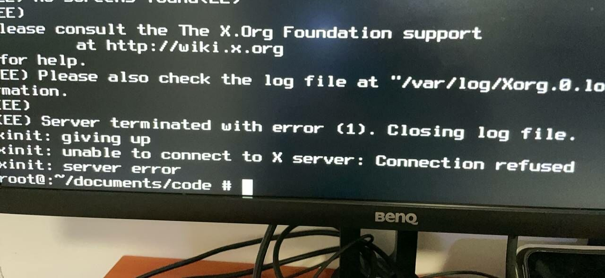
没有安装显卡驱动。看下一节教程去安装驱动。
第 4.1 节 安装显卡驱动及 Xorg（必看）
对于没有显卡直通的笔记本，必须安装英特尔 drm！不要上来就安装 Nvidia 然后说打不开。
虚拟机显卡驱动看前边的章节，不再赘述。
FreeBSD 已从 Linux 移植了显卡驱动，理论上，I 卡 A 卡 N 卡均在 AMD64 架构上正常运行。
显卡支持情况
对于 FreeBSD 11，支持情况同 Linux 内核 4.11；
对于 FreeBSD 12，支持情况同 Linux 内核 4.16；
对于 FreeBSD 13.1，编译使用drm-510-kmod，支持情况同 Linux 5.10。AMD 可支持 R7 4750U（但是有 Bug amdgpu no hw acceleration on gnome3 ?? - workaround amdgpu disable DRI3 in xorg.conf and switch to DRI2）。
FreeBSD 14 Current，编译使用 drm-515-kmod。截至 2023.8.24 日，英特尔第 12、 13 代 显卡 暂不支持。 。
详细情况可以看 wiki/Graphics
英特尔核显 / AMD 独显
安装驱动——简单版本（推荐）
首先切换到 latest 源，或使用 ports 安装：
# pkg install drm-kmod
或者
# cd /usr/ports/graphics/drm-kmod/ && make BATCH=yes install clean
注意：
graphics/drm-kmod这个包并不是真实存在的，他只是帮助判断系统版本以安装对应的 ports 包的元包。即使是像英特尔三代处理器的 HD 4000 这种比较古老的显卡，他在传统的 BIOS 模式下不需要额外安装显卡驱动，但是 UEFI 下有可能会花屏（FreeBSD 13.0 及以后无此问题），而且需要安装此 DRM 显卡驱动。
故障排除：
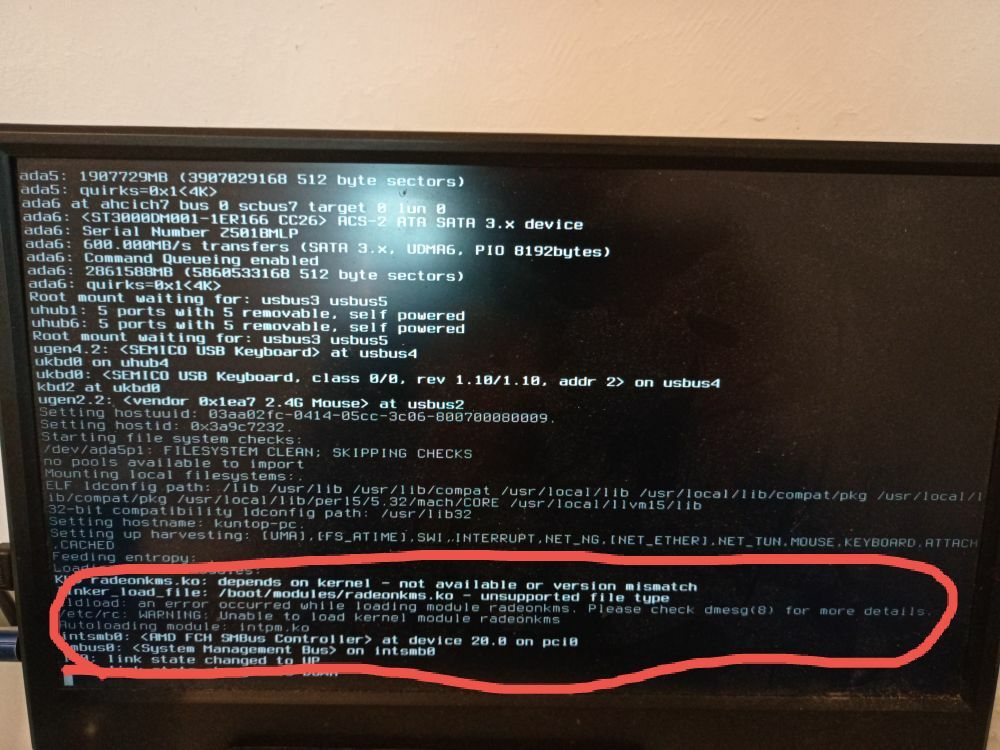
- 如果提示内核版本不符（
KLD XXX.ko depends on kernel - not available or version mismatch.），请先升级系统或使用 ports 编译安装：
- 如果提示
/usr/ports/xxx no such xxx找不到路径，请先获取 ports 请看前文。
安装驱动——复杂版本
注意，如果要通过 ports 安装提示需要源码，请见第二十一章。
- FreeBSD 12
# cd /usr/ports/graphics/drm-fbsd12.0-kmod/ && make BATCH=yes install clean
注意：
除了 12.0，对于任意 12.X 均应该安装
drm-fbsd12.0-kmod，但应该使用 port 在本地重新构建而不应使用 pkg 进行安装，否则不会正常运行。
- FreeBSD 13
# cd /usr/ports/graphics/drm-510-kmod/ && make BATCH=yes install clean
- FreeBSD 14 (current）
# cd /usr/ports/graphics/drm-515-kmod/ && make BATCH=yes install clean
加载显卡
无论是使用以上哪个方法，都需要进行这一步配置。
打开 /etc/rc.conf:
- 如果为 intel 核芯显卡，添加
kld_list="i915kms" - AMD
- 如果为 HD7000 以后的 AMD 显卡，添加
kld_list="amdgpu"（大部分人应该使用这个，如果没用再去使用radeonkms） - 如果为 HD7000 以前的 AMD 显卡，添加
kld_list="radeonkms"（这是十余年前的显卡了）
- 如果为 HD7000 以后的 AMD 显卡，添加
视频硬解
# pkg install xf86-video-intel libva-intel-driver
亮度调节
通用
一般计算机：
# sysrc -f /boot/loader.conf acpi_video="YES"
对于 Thinkpad：
# sysrc -f /boot/loader.conf acpi_ibm_load="YES"
# sysrc -f /boot/loader.conf acpi_video="YES"
仅限 FreeBSD 13
# backlight decr 20 #降低 20% 亮度
英特尔
# pkg install intel-backlight
# intel-backlight 80 #调整为 80% 亮度
AMD 显卡
此部分教程经过测试适用于 renoir 显卡。
在使用 Gnome 时，如果自动锁屏或息屏，可能无法再次进入桌面。见 Bug 255049 - x11/gdm doesn't show the login screen。
安装所需驱动（均为 latest 源或从 ports 安装）：
# pkg install drm-510-kmod gpu-firmware-kmod xf86-video-amdgpu
英伟达显卡
笔记本核显
请先按照上边的方法配置核显，也就是说不能单独用 nvidia 打开 xorg。
- 旧显卡：
- nvidia-hybrid-graphics-390 用于支持双显卡切换
- nvidia-secondary-driver-390 对应显卡驱动
390 驱动支持的显卡参考FreeBSD Display Driver – X64,支持一些旧显卡.
- 新显卡：
- nvidia-hybrid-graphics 用于支持双显卡切换
- nvidia-secondary-driver 对应显卡驱动
# sysrc kld_list+=nvidia-modeset
# sysrc nvidia_xorg_enable=YES
开机后在 kde 设置里查看显卡默认用的是 intel 核显，终端里 nvidia-smi 只有 nvidia-xorg-service 8MB。
然后在终端用这个命令调用 N 卡：
$ nvrun 程序名 # 默认无 GUI 运行
$ nvrun-vgl 程序名 # GUI 运行程序
mesa-demos 包含一些 opengl 示例，可用于测试驱动是否可用，非必要安装。
kld_list 中 nvidia-modeset 和 i915kms 需同时存在。
安装包后如果 xorg 启动成功不需额外配置，如果失败用 pciconf -lv 查找显卡的 busid，例如
vgapci0@pci0:1:0:0: class=0x030000 rev=0xa1 hdr=0x00 vendor=0x10de device=0x0df4 subvendor=0x1043 subdevice=0x15f2
vendor = 'NVIDIA Corporation'
device = 'GF108M [GeForce GT 540M]'
class = display
subclass = VGA
在 /usr/local/etc/X11/xorg-nvidia-headless.conf 找到 Device 一节，并对应修改 BusID ,上面 ”pci0:1:0:0“
Section "Device"
Identifier "Device0"
Driver "nvidia"
BusID "PCI:1:0:0"
EndSection
检验是否成功启用独显，可以用 mesa-demos 中程序测试，运行 bounce，用 nvidia-smi -l 1 观察(每隔一秒刷新一次)。没有使用 nvidia 驱动时显存使用 7M，启用程序显存没有变化。
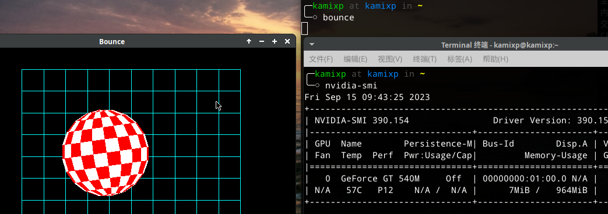
运行 nvrun-vgl bounce 用 nvidia-smi -l 1 观察使用 nvidia 驱动时显存使用 13M。
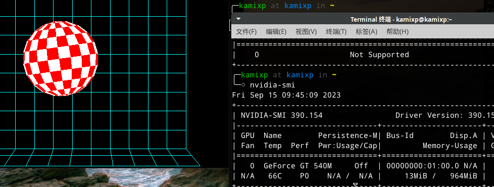
开启 vlc 硬解
pkg install libva-vdpau-driver libvdpau libvdpau-va-gl
工具->偏好设置->输入/编解码器->硬件加速解码：选择VDPAU 视频解码器
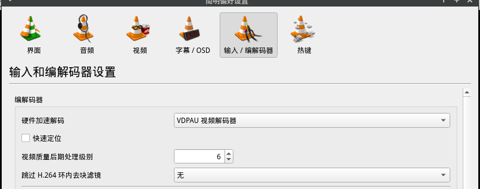
用 nvrun-vgl vlc 启动 vlc，并播放视频
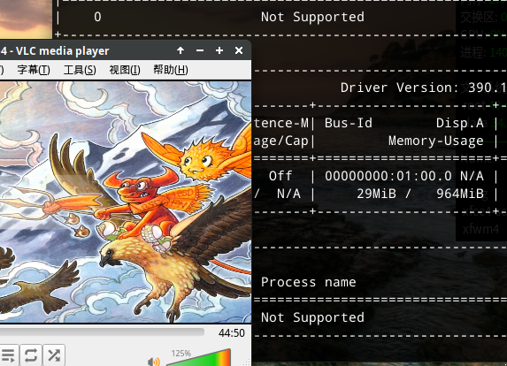
显存使用上升，正在使用硬解
独显直连或台式机
注意，有多个版本的 N 卡驱动，不知道该用哪个的去看5.2. 安装 Xorg。
# pkg install nvidia-driver nvidia-settings nvidia-xconfig nvidia-drm-kmod#安装几个 nvidia 相关的包
# sysrc kld_list+="nvidia-modeset nvidia-drm.ko" #配置驱动
# reboot #重启
如果找不到 graphics/nvidia-drm-kmod 就编译安装，该包提供了 PRIME 等支持。`
这时候应该已经可以驱动显卡了。
# 查看驱动信息
$ nvidia-smi
如果发现系统没有使用 nvidia 驱动需要自动生成配置文件：
# Xorg -configure #生成配置文件。注意，该步骤不是必要！
# cp /root/xorg.conf.new /etc/X11/xorg.conf
然后重新启动就可以发现正常使用 nvidia 驱动了
注意： 默认情况下，通过 pkg 安装的 nvidia-driver 是包含 Linux 兼容层支持的, 如果要使用 Linux 软件，需要执行以下命令，（实际上使用 linux 兼容层，以下命令是必须的。） 如果不需要使用 Linux 兼容层，则不需要执行。
# sysrc linux_enable="YES"
当然如果使用官方的 pkg 软件包，安装好驱动重启后：
$ kldstat
会发现系统自动加载了 linux.ko 模块。如果觉得太臃肿，不需要 Linux 兼容层 可以自己通过 ports 编译 nvidia-driver,去掉 linux compatibility support。
拉取开发版 drm-kmod（仅限 FreeBSD-CURRENT）
警告
此部分属于实验性内容且仅限 FreeBSD-CURRENT 使用，不建议新手操作。
请提前在 /usr/src 准备好一份系统源码。
拉取最新的 drm-kmod 并编译安装：
# pkg install git
$ git clone --depth=1 https://github.com/dumbbell/drm-kmod/
$ cd freebsd/drm-kmod
$ git checkout -b update-to-v5.17
$ make
…
# make install
===> linuxkpi (install)
install -T release -o root -g wheel -m 555 linuxkpi_gplv2.ko /boot/modules/
===> ttm (install)
install -T release -o root -g wheel -m 555 ttm.ko /boot/modules/
===> drm (install)
install -T release -o root -g wheel -m 555 drm.ko /boot/modules/
===> amd (install)
===> amd/amdgpu (install)
install -T release -o root -g wheel -m 555 amdgpu.ko /boot/modules/
===> radeon (install)
install -T release -o root -g wheel -m 555 radeonkms.ko /boot/modules/
===> i915 (install)
install -T release -o root -g wheel -m 555 i915kms.ko /boot/modules/
kldxref /boot/modules
参考资料
故障排除
- 如果显卡使用驱动有问题请直接联系作者：https://github.com/freebsd/drm-kmod/issues
- 如果笔记本出现了唤醒时屏幕点不亮的问题，可以在
/boot/loader.conf中添加hw.acpi.reset_video="1"以在唤醒时重置显示适配器。
安装 xorg
可选软件包：
xorg 完整包: xorg
xorg 最小化包: xorg-minimal（不建议）
安装
通过 pkg 安装
# pkg install xorg
通过 ports 安装
# cd /usr/ports/x11/xorg
# make install clean
故障排除
总有人试图手动生成xorg.conf这个文件，这是非常错误的行为！你打不开桌面很大概率不是因为这个文件的配置有问题！你应该去检查显卡驱动或者桌面本身的问题。Xorg 几乎是不会出问题的！
第 4.2 节 安装 KDE 5
视频教程：FreeBSD 13.1 + VMware 17 + KDE5: FreeBSD 13.1 安装 KDE5——基于 VMware 17
安装
# pkg install xorg sddm kde5 plasma5-sddm-kcm wqy-fonts xdg-user-dirs
上面的命令分别安装了桌面、窗口管理器和中文字体以及创建用户目录的工具。
故障排除
如果有时候提示找不到或者没有 kde5,请去 x11/kde5 看看是不是二进制包没有被构建出来。有时候需要切换 quarterly（待上游构建出来了再换到 latest 源，pkg upgrade 升级即可）或者 latest 源。类似方法适用于所有软件，故后边不再赘述。
配置
Procfs 设置【可选，FreeBSD 13.2 及以后不再需要】
提示
以下 proc 设置在 FreeBSD 13.2 及以后版本中将 不再需要，无需配置。但是旧版本 必须 如此做。
但是其中给出的说法是不正确的，起码在 2023.4.11 之前，还是需要进行该配置的。
# ee /etc/fstab
添加内容如下:
proc /proc procfs rw 0 0
无论虚拟机还是物理机，添加 proc 挂载这一步都是非常必要的，如果不添加会导致桌面服务无法正常运行，部分组件无法加载！
警告
如果你不配置 proc，在普通用户下，你的所有图标都将变成无法点击的白色方块，任何软件都打不开，桌面陷入异常。且后续再进行配置也是无效的，必须重装系统。
↓↓↓↓↓↓↓↓↓↓↓↓↓↓↓↓↓↓↓↓↓↓ 这就是后果 ↓↓↓↓↓↓↓↓↓↓↓↓↓↓↓↓
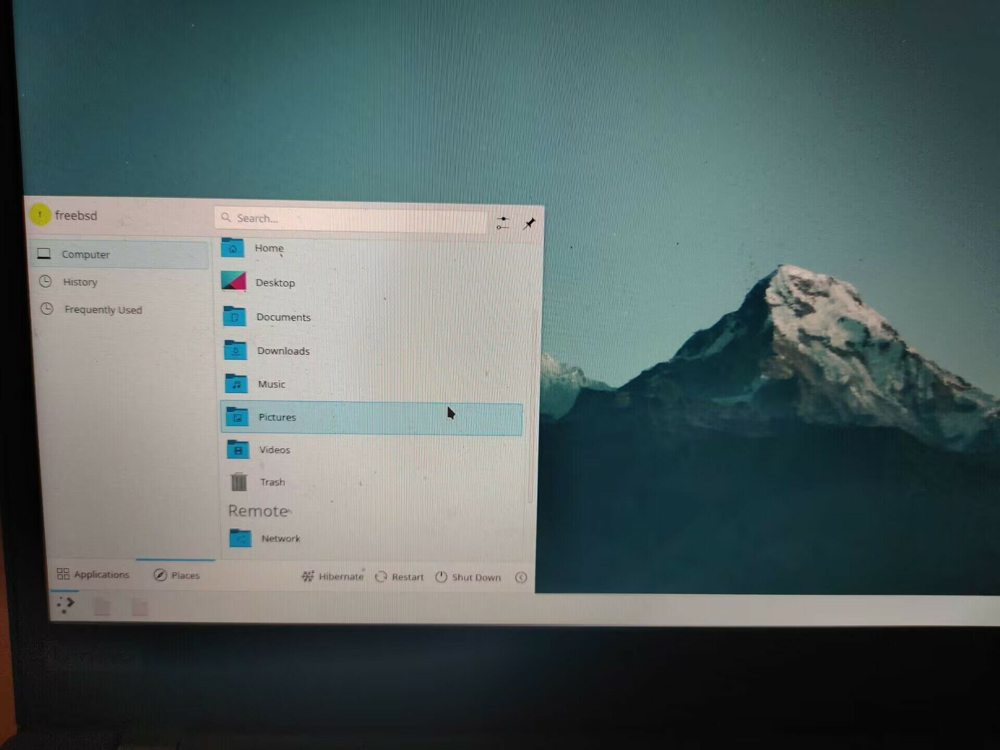
启动项设置
# sysrc dbus_enable="YES"
# sysrc sddm_enable="YES"
然后（可选，如果不需要 startx。）
# echo "exec ck-launch-session startplasma-x11" > ~/.xinitrc
如果你在 root 下已经执行过了，那么新用户仍要再执行一次才能正常使用（无需 root 权限或 sudo 等）
startx。
提示：hal 已经被删除。不需要再添加hald_enable="YES", 见：
权限设置
普通用户还需要将用户加入 wheel 组：
# pw groupmod wheel -m 用户名
故障排除
sddm 登录闪退
- 如果 sddm 登录闪退到登录界面，请检查左下角是不是 plasma-X11，闪退的一般都是 Wayland！因为目前 FreeBSD 上的 KDE 5 尚不支持 Wayland。
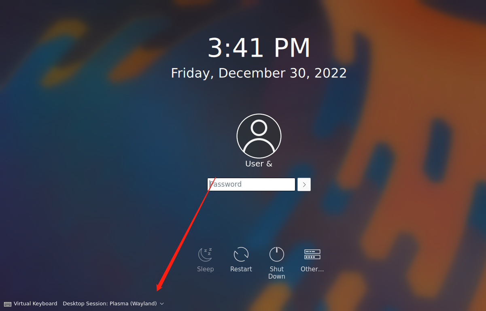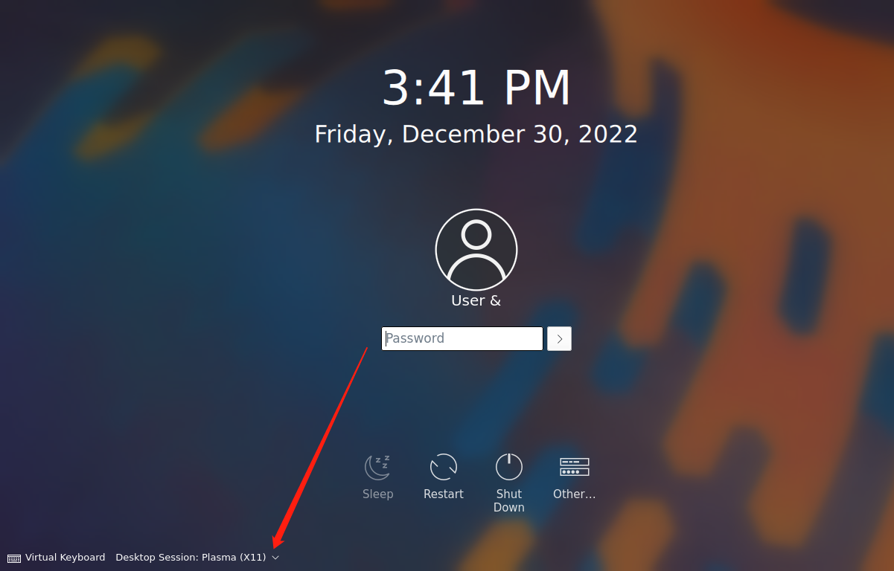
如果你使用 VMware 虚拟机时，压根看不见 sddm 最下边的选项，请按照配置虚拟机章节的教程配置屏幕自动缩放。
启动 sddm 提醒 /usr/bin/xauth: (stdin):1: bad display name，但是可以正常 `startx
你需要在
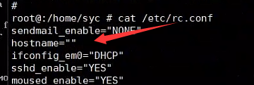/etc/rc.conf里面检查你的hostname是否为空（理论上不应该为空），有没有设置：**设置
hostname即可。
菜单缺失关机、重启等四个按纽
修改 /etc/sysctl.conf 将其中 security.bsd.see_other_uid 的值改为 1。重启后即可。
如果没有直接写入 security.bsd.see_other_uid=1 到 /etc/sysctl.conf 即可。
参考文献：
中文化
点击开始-> System Settings -> Regional Settings 在 Language 项的 Available Language 栏中找到 “简体中文” 单击 > 将其加到 Preferrred Languages 栏中，然后单击 Apply 按钮；再到 Formats 项，将 Region 文本框中的内容修改为 “中国-简体中文(zh-CN)”，单击 Apply 按钮，logout（注销）后重新登录，此时系统语言将变为中文。
SDDM 中文化
# sysrc sddm_lang="zh_CN.UTF-8"
参考文献
第 4.3 节 安装 Gnome
当前 gnome 桌面对 dri3 的支持有问题，见 Bug 255049 - x11/gdm doesn't show the login screen 、amdgpu no hw acceleration on gnome3 ?? - workaround amdgpu disable DRI3 in xorg.conf and switch to DRI2。可能会导致部分 AMD GPU 显示错误，必须降级到 dri2 才能运行。
安装
# pkg install xorg gnome noto-sc xdg-user-dirs
解释:
| 软件 | 用途 |
|---|---|
| xorg | X11 |
| gnome | Gnome 主程序 |
| noto-sc | 思源黑体——简体中文 |
| xdg-user-dirs | 用于创建用户家目录的子目录 |
精简安装（仅限经验丰富的用户）
# pkg install xorg-minimal gnome-lite wqy-fonts xdg-user-dirs如果安装了完整版本也可以使用 pkg 包管理器卸载自带的游戏软件：
# pkg delete gnome-2048 gnome-klotski gnome-tetravex gnome-mines gnome-taquin gnome-sudoku gnome-robots gnome-nibbles lightsoff tali quadrapassel swell-foop gnome-mahjongg five-or-more iagno aisleriot four-in-a-row
配置
# ee /etc/fstab
添加内容如下:
proc /proc procfs rw 0 0
配置启动项：
# sysrc dbus_enable="YES"
# sysrc gdm_enable="YES"
输入以下命令：
% echo "/usr/local/bin/gnome-session" > ~/.xinitrc
中文化
GNOME 界面
本小节配置参数与用户 shell 无关，即使是 csh 也该如此配置。
# ee /usr/local/etc/gdm/locale.conf
添加以下内容：
LANG="zh_CN.UTF-8"
LC_CTYPE="zh_CN.UTF-8"
LC_MESSAGES="zh_CN.UTF-8"
LC_ALL="zh_CN.UTF-8"
中文输入法
以下 ibus、fcitx5 二选一即可。
ibus
gnome 捆绑的输入法面板是 ibus。
# pkg install zh-ibus-libpinyin（安装好运行初始化命令 ibus-setup）
fcitx 5
首先看看现在自己的 shell 是不是 sh,bash,zsh：
# echo $0
如果是 sh,bash,zsh 其中之一，请继续；如果不是，请参考第五章第一节。
安装 fcitx5:
# pkg install fcitx5 fcitx5-qt5 fcitx5-qt6 fcitx5-gtk fcitx5-configtool zh-fcitx5-chinese-addons
打开或新建文件 ~/.xprofile，写入:
export GTK_IM_MODULE=fcitx
export QT_IM_MODULE=fcitx
export XMODIFIERS=@im=fcitx
参考：以下是该文件的一个示例：
# $FreeBSD$
#
# .profile - Bourne Shell startup script for login shells
#
# see also sh(1), environ(7).
#
# These are normally set through /etc/login.conf. You may override them here
# if wanted.
# PATH=/sbin:/bin:/usr/sbin:/usr/bin:/usr/local/sbin:/usr/local/bin:$HOME/bin; export PATH
# Setting TERM is normally done through /etc/ttys. Do only override
# if you're sure that you'll never log in via telnet or xterm or a
# serial line.
# TERM=xterm; export TERM
EDITOR=vi; export EDITOR
PAGER=less; export PAGER
# set ENV to a file invoked each time sh is started for interactive use.
ENV=$HOME/.shrc; export ENV
# Let sh(1) know it's at home, despite /home being a symlink.
if [ "$PWD" != "$HOME" ] && [ "$PWD" -ef "$HOME" ] ; then cd ; fi
# Query terminal size; useful for serial lines.
if [ -x /usr/bin/resizewin ] ; then /usr/bin/resizewin -z ; fi
# Display a random cookie on each login.
if [ -x /usr/bin/fortune ] ; then /usr/bin/fortune freebsd-tips ; fi
export GTK_IM_MODULE=fcitx
export QT_IM_MODULE=fcitx
export XMODIFIERS=@im=fcitx
提示：如果要显示 fcitx 输入法面板，需要安装 gnome 插件 TopIconsFix,请勿安装 AppIndicator and KStatusNotifierItem Support，已知该插件与 fcitx5 相冲突，会造成输入法卡死。
该插件需要通过火狐浏览器进行安装：
# pkg install -y firefox chrome-gnome-shell
打开链接 https://extensions.gnome.org/extension/1674/topiconsfix/ 即可安装插件。
终端显示中文（文件用户根目录）
此处对用户 shell 存疑。
# ee .cshrc
添加以下内容
setenv LANG zh_CN.UTF-8
setenv LC_CTYPE zh_CN.UTF-8
setenv LC_ALL zh_CN.UTF-8
优化系统
# pkg install gnome-tweaks
第 4.4 节 安装 Mate
以下教程适用于 shell 为 bash/sh/zsh 的用户。
首先看看现在自己的 shell 是不是
sh,bash,zsh：
# echo $0如果是
sh,bash,zsh其中之一，请继续；
安装与配置
# pkg install mate xorg wqy-fonts lightdm lightdm-gtk-greeter xdg-user-dirs
# sysrc moused_enable="YES"
# sysrc dbus_enable="YES"
# sysrc lightdm_enable="YES"
- 在主目录
.xinitrc文件内加入下面一行:
exec mate-session
显示中文桌面环境
默认是 csh，在 .cshrc 中添加如下内容：
setenv LANG zh_CN.UTF-8
setenv LC_CTYPE zh_CN.UTF-8
输入法
# pkg install zh-ibus-libpinyin（安装好运行初始化命令 ibus-setup）
设置输入法变量:
# ee .xinitrc
在该文件中添加以下内容
export GTK_IM_MODULE=ibus
export XMODIFIERS=@im=ibus
export QT_IM_MODULE=ibus
ibus &
第 4.5 节 安装 Xfce
安装 xfce4
通过 pkg 安装
# pkg install xorg lightdm lightdm-gtk-greeter xfce wqy-fonts xdg-user-dirs
或
通过 ports 安装
# cd /usr/ports/x11-wm/xfce4
# make install clean
启用 xfce
# echo "/usr/local/etc/xdg/xfce4/xinitrc" > ~/.xinitrc
或者
# echo "/usr/local/etc/xdg/xfce4/xinitrc" > ~/.xsession
此处为 root 用户，普通用户需要再在自己的环境下操作一次。下同。
根据条件使用
启动服务
# sysrc dbus_enable="YES"
# sysrc lightdm_enable="YES"
设置中文显示
在 .xinitrc 或者 .profile 中添加以下内容（但要在最前面才正常启用） export LANG=zh_CN.UTF-8
lightdm 登陆管理器本地化语言见 KDE 章节。
可选配置
全局菜单（可选）
# pkg install xfce4-appmenu-plugin appmenu-gtk-module appmenu-registrar
$ xfconf-query -c xsettings -p /Gtk/ShellShowsMenubar -n -t bool -s true
$ xfconf-query -c xsettings -p /Gtk/ShellShowsAppmenu -n -t bool -s true
$ xfconf-query -c xsettings -p /Gtk/Modules -n -t string -s "appmenu-gtk-module"
故障排除
FreeBSD 的 xfce 终端动态标题不显示问题
- sh:
~/.profile写入配置 - bash:
~/.bash_profile或~/.profile写入配置 - zsh:
~/.zprofile写入配置 - csh:
~/.cshrc写入配置 - tcsh:
~/.tcshrc写入配置
zsh:
precmd () a function which is executed just before each prompt
chpwd () a function which is executed whenever the directory is changed
\e escape sequence for escape (ESC)
\a escape sequence for bell (BEL)
%n expands to $USERNAME
%m expands to hostname up to first '.'
%~ expands to directory, replacing $HOME with '~'
tcsh:
precmd () a function which is executed just before each prompt
cwdcmd () a function which is executed whenever the directory is changed
%n expands to username
%m expands to hostname
%~ expands to directory, replacing $HOME with '~'
%# expands to '>' for normal users, '#' for root users
%{...%} includes a string as a literal escape sequence
bash:
\u expands to $USERNAME
\h expands to hostname up to first '.'
\w expands to directory, replacing $HOME with '~'
\$ expands to '$' for normal users, '#' for root
\[...\] embeds a sequence of non-printing characters
csh
switch ($TERM)
case "xterm*":
set host=`hostname`
alias cd 'cd \!*; echo -n "^[]0;${user}@${host}: ${cwd}^Gcsh% "'
breaksw
default:
set prompt='csh% '
breaksw
endsw
参考文献：
配置集参考
软件推荐
FreeBSD 的 xfce 邮箱客户端推荐用 evolution，搭配 xfce4-mailwatch-plugin gnome-keyring 使用。
还有推荐 xfce 的一个桌面插件。叫 verve。配合设置智能书签，可以查网页内容。 我这里设置了 FreeBSD 的 man 手册，就可以通过搜索框搜索需要的内容。
lightdm 登陆管理器本地化语言
方法①
/etc/rc.conf 里写入：
lightdm_env="LC_MESSAGES=zh_CN.UTF-8"
方法②
修改 slick-greeter.desktop：
编辑 /usr/local/share/xgreeters/slick-greeter.desktop：
Exec=slick-greeter 改成 Exec=env LANGUAGE=zh_CN slick-greeter 保存，重启 lightdm 服务就生效:
# service lightdm restart
第 4.6 节 安装 Cinnamon
以下教程适用于 shell 为 bash/sh/zsh 的用户。
首先看看现在自己的 shell 是不是
sh,bash,zsh：
# echo $0如果是
sh,bash,zsh其中之一，请继续；
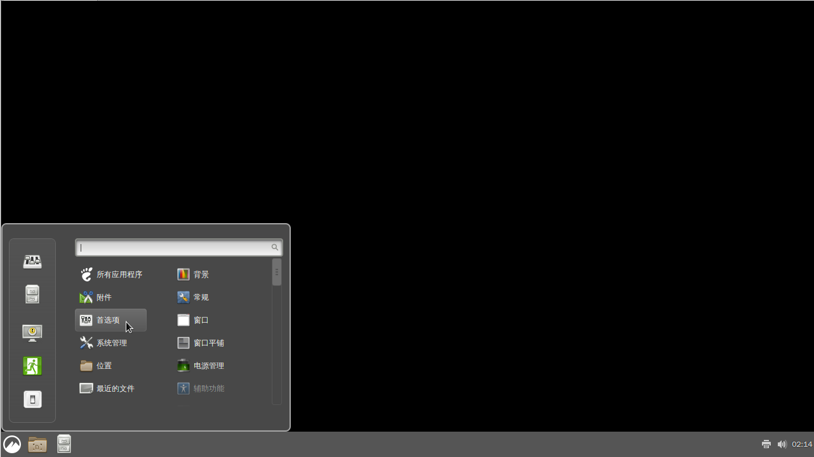
壁纸就是黑色的，不是显示出了问题。
安装
# pkg install xorg lightdm lightdm-gtk-greeter cinnamon wqy-fonts xdg-user-dirs
配置
# ee ~/.xinitrc
添加：
exec cinnamon-session
# ee /etc/fstab
添加：
proc /proc procfs rw 0 0
添加启动项：
# sysrc dbus_enable=YES
# sysrc lightdm_enable=YES
中文化
编辑 /etc/login.conf：
找到 default:\ 这一段，把 :lang=C.UTF-8 修改为 :lang=zh_CN.UTF-8。
刷新数据库：# cap_mkdb /etc/login.conf
第 4.7 节 安装 Lumina
提示：该桌面可能已经停止开发，我向其提交的 pull 长期无人处理，并且没有新的 commit 信息。
安装
# pkg install lumina xorg lightdm lightdm-gtk-greeter wqy-fonts xdg-user-dirs
配置
# sysrc dbus_enable="YES"
# sysrc lightdm_enable="YES"
# ee ~/.xinitrc
添加：
exec lumina-desktop
中文化
设置完毕还是英语。原因未知，如果你知道，请提交 issue 或者 pull request。
Desktop Settings ——> Localization ——> 全部调整为“简体中文”，然后“save”，退出登录，重启系统。操作无效。
第 4.8 节 安装 LXQt
安装 LXQt
通过 pkg 安装
# pkg install xorg sddm lxqt gvfs wqy-fonts xdg-user-dirs
解释：
sddm：LXQt 首选的显示管理器
gvfs：GNOME 虚拟文件系统，LXQt 依赖此打开 Computer 和 Network ，否则会提示 Operation not supported
准备
启用 dbus 服务
# sysrc dbus_enable="YES"
修改 fstab
# ee /etc/fstab
添加如下内容
proc /proc procfs rw 0 0
启动 LXQt
通过 startx
$ echo "exec ck-launch-session startlxqt" > ~/.xinitrc
通过 sddm
# sysrc sddm_enable="YES"
设置中文显示
进入 LXQt 后 菜单 -> "Preferences" -> "LXQt Settings" -> "Locale" -> "Region" 下拉菜单选择中文
sddm 本地化语言见 KDE 章节。
故障排除
桌面图标不显示
菜单 -> "Preferences" -> "LXQt Settings" -> "Appearance" -> "Icons Theme" 选择 "Oxygen" -> "Apply"
之后重新登陆
你也可以事先安装自己喜欢的其他图标在这里启用
第 4.9 节 安装 bspwm
bspwm，据说更符合 UNIX 哲学。
安装 bspwm
通过 pkg 安装
# pkg install xorg bspwm sxhkd rofi kitty feh picom polybar dunst lightdm lightdm-gtk-greeter wqy-fonts xdg-user-dirs
解释：
- bspwm, sxhkd: bspwm 组件
- rofi: 程序启动器
- kitty: 终端模拟器
- feh: 桌面背景修改
- picom: 窗口合成器，添加窗口透明，阴影，动效等
- polybar: 面板
- dunst: 通知管理器
提示
polybar 建议换成别的，因为 polybar 在 freebsd 上功能不全。建议换成 tint2，可以显示 systray 图标
配置工作
启用 dbus 服务
# sysrc dbus_enable="YES"
# service dbus start
创建配置文件
$ mkdir ~/.config
$ mkdir ~/.config/bspwm
$ mkdir ~/.config/sxhkd
$ cp /usr/local/share/examples/bspwm/bspwmrc ~/.config/bspwm
$ cp /usr/local/share/examples/bspwm/sxhkdrc ~/.config/sxhkd
$ chmod +x ~/.config/bspwm/bspwmrc
修改 ~/.config/sxhkd/sxhkdrc
super + Return
kitty
super + @space
rofi -show drun
设置 polybar 启动脚本和配置文件
$ mkdir ~/.config/polybar
$ cp /usr/local/etc/polybar/config.ini ~/.config/polybar
创建 ~/.config/polybar/launch.sh
#!/bin/sh
killall -q polybar
polybar example 2>&1 | tee -a /tmp/polybar.log
并执行
$ chmod +x ~/.config/polybar/launch.sh
设置 picom, polybar, dunst 启动
$ echo "picom &" >> ~/.config/bspwm/bspwmrc
$ echo "\$HOME/.config/polybar/launch.sh" >> ~/.config/bspwm/bspwmrc
$ echo "dunst &" >> ~/.config/bspwm/bspwmrc
启动 bspwm
通过 startx
$ echo "exec bspwm" >> ~/.xinitrc
$ startx
通过 lightdm
创建 /usr/local/share/xsessions/bspwm.desktop
# mkdir /usr/local/share/xsessions
# ee /usr/local/share/xsessions/bspwm.desktop # 写入以下内容
[Desktop Entry]
Name=bspwm
Comment=Log in with bspwm
Exec=/usr/local/bin/bspwm
Type=Application
启动 lightdm 服务
# sysrc lightdm_enable="YES"
# service lightdm start
一些操作和设置
Windows + 空格：用 rofi 启动应用
Windows + 回车：启动终端（即 kitty）
更多快捷键可以参考 ~/.config/sxhkd/sxhkdrc
生成桌面文件夹（Downloads，Documents 等）
$ xdg-user-dirs-update
设置桌面背景：
$ feh --bg-center "$HOME/.local/share/wallpapers/wallpaper.jpg"
执行一次后自动设置：
在 ~/.config/bspwm/bspwmrc 中的 polybar 启动脚本之前添加
$HOME/.fehbg &
展示图片
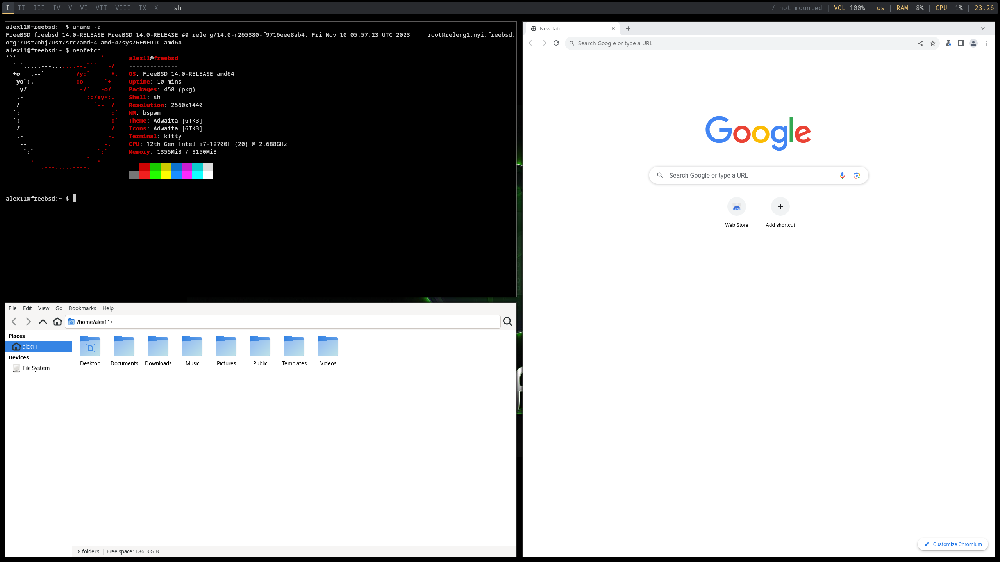
注：图片中的 Chrome 浏览器，Thunar 文件管理器均需要自己安装。
参考文献
第 4.10 节 root 登录桌面
警告
鉴于部分用户希望 root 登录桌面，为贯彻自由精神撰写本章节。请注意 root 账户拥有最高权限，失误使用 root 账户很可能会破坏系统，因此用其登录图形界面存在极高的安全风险。以下内容请谨慎操作，风险自负。我们不承担任何责任。
GDM（GNOME 显示管理器）
打开 /usr/local/etc/pam.d/gdm-password
注释掉 account requisite pam_securetty.so 这一行（往最前面加 #）
重启服务
# service gdm restart
lightdm
安装与配置：
# pkg install lightdm-gtk-greeter lightdm
首先设置启动服务：
# sysrc lightdm_enable="YES"
然后修改配置文件：
- 编辑
# ee /usr/local/etc/lightdm/lightdm.conf：
往下拉，找到 greeter-show-manual-login=true 移除前面的 #。该行会多次出现，第一次出现是为你介绍，请勿修改，而应该继续往下拉。
- 编辑
# ee /usr/local/etc/pam.d/lightdm：
注释掉 account requisite pam_securetty.so 这一行（往最前面加 #）
重启服务
# service lightdm restart
即可。
sddm
安装
# pkg install sddm
# sysrc sddm_enable="YES"
更改 /usr/local/etc/pam.d/sddm 文件:
把 include 之后的 login，替换成 system，一共 4 个。
重启服务
# service sddm restart
之后就可以 root 登录 sddm 了！
注意 sddm 左下角选项不能为 Wayland，应该是 Plasma-X11，目前 KDE 5 不支持 wayland，选错无法登陆！
再次警告
root 账户拥有最高权限，失误使用 root 账户可能破坏系统，因此用其登录图形界面存在极高的安全风险。
第 4.11 节 主题与美化
FreeBSD 安装桌面环境后，同其它 类 Unix 系统一样，很多时候扑面而来的，是简单朴素的色调。这种未加修饰的设定，可能一时会让新用户无法接受。其实它背后的逻辑也很简单：一来是为了系统的稳定，二来众口难调，桌面系统的美化，涉及个人的审美。为了系统的美观，我们将在这一节学习添加 主题 和 图标。
安装软件包
- 新手任务 ： 从以下软件包中，各选一款主题和图标来安装。
注：本节仅涉及了 GTK 库的桌面主题，囊括了 Gnome、XFCE、MATE、Cinnamon 和 LXDE 等桌面环境。
以下仅收录了部分图标和主题，想要获取更多资源，可访问 FreshPorts。
主题
- matcha 主题：
# pkg install matcha-gtk-themes - Qogir 主题：
# pkg install qogir-gtk-themes - Pop 主题：
# pkg install pop-gtk-themes - Flat 主题：
# pkg install flat-remix-gtk-themes - Numix 主题：
# pkg install numix-gtk-theme - Sierra 主题：
# pkg install sierra-gtk-themes - Yaru 主题：
# pkg install yaru-gtk-themes - Canta 主题：
# pkg install canta-gtk-themes
图标
- papirus 图标：
# pkg install papirus-icon-theme - Qogir 图标：
# pkg install qogir-icon-themes - Pop 图标：
# pkg install pop-icon-theme - Flat 图标：
# pkg install flat-remix-icon-themes - Numix 图标：
# pkg install numix-icon-theme - Numix 圆形图标：
# pkg install numix-icon-theme-circle - Yaru 图标：
# pkg install yaru-icon-theme - Canta 图标：
# pkg install canta-icon-theme
终端模式安装
提示： 新接触 Unix 的用户可略过本节
- 高阶任务：为 KDE 或 Gnome 安装一款仿 MacOS 系统样式的主题和图标。
-
提前任务 1 安装 bash：
# pkg install bash -
提前任务 2 安装 plank：
# pkg install plank -
提前任务 3 安装 git：
# pkg install git
KDE 主题美化
我们要安装的是 WhiteSur 主题。
- 下载主题源码包：
git clone https://github.com/vinceliuice/WhiteSur-kde - 进入主题包目录：
cd WhiteSur-kde - 修改 shebang：
ee install.sh，修改第一行为#!/usr/local/bin/bash，然后保存。 - 执行安装：
bash install.sh
Gnome 主题美化
同样我们要安装的是 WhiteSur 主题。
- 下载主题源码包：
git clone https://github.com/vinceliuice/WhiteSur-gtk-theme - 进入主题包目录：
cd WhiteSur-gtk-theme - 修改 shebang：
ee install.sh，修改第一行为#!/usr/local/bin/bash，然后保存。 - 执行安装：
bash install.sh
图标
- 下载图标：
git clone https://github.com/vinceliuice/WhiteSur-icon-theme - 进入软件目录：
cd WhiteSur-icon-theme - 修改 shebang：
ee install.sh，修改第一行为#!/usr/local/bin/bash，然后保存。 - 执行安装：
bash install.sh
光标
- 下载光标：
git clone https://github.com/vinceliuice/McMojave-cursors - 进入软件目录：
cd McMojave-cursors - 修改 shebang：
ee install.sh，修改第一行为#!/usr/local/bin/bash，然后保存。 - 执行安装：
bash install.sh
背景图片
课后练习
试着按照下面的步骤，在终端安装 Papirus 图标:
git clone https://github.com/PapirusDevelopmentTeam/papirus-icon-theme
cd papirus-icon-theme
./install.sh
第 4.12 节 远程桌面管理
VNC
启用 VNC 服务（目前只剩下这个 TigerVNC 了）
安装 TigerVNC Server：
# pkg install -y tigervnc-server
安装之后，还要做一些设置：
在终端执行命令 vncpasswd，设置访问密码。
创建 ~/.vnc/xstartup 文件，内容如下：
#!/bin/sh
unset SESSION_MANAGER
unset DBUS_SESSION_BUS_ADDRESS
[ -x /etc/X11/xinit/xinitrc ] && exec /etc/X11/xinit/xinitrc
[ -f /etc/X11/xinit/xinitrc ] && exec sh /etc/X11/xinit/xinitrc
xsetroot -solid grey
$command &
注意：$command 需要替换，请注意保留 &，在不同桌面下需要替换，Gnome 用 gnome-session，KDE 用 startplasma-x11，MATE 用 mate-session，Xfce 用 xfce4-session。
保存后执行命令 # chmod 755 ~/.vnc/xstartup。
- 接下来在终端执行命令
vncserver或vncserver :1。
其中“:1”相当于 DISPLAY=:1，即指定桌面显示的通信端口为 1，对应 VNC 服务的通信端口为 5901。尽管桌面显示通信端口 是从 0 开始，但该端口已被当前桌面占用，因此 VNC 服务默认端口虽为 5900，但实际执行往往从 5901 开始。
如果启动服务时不指定通信端口，则系统根据使用情况自动指定。
关闭服务请用命令 # vncserver -kill :1，这里通信端口必须指定。
- 如果启用了防火墙，那么此时还需要开通防火墙，以 ipfw 为例，在终端输入命令：
# ipfw add allow tcp from any to me 5900-5910 in keep-state
上行命令表示开通 5900-5910 的端口，即 DISPLAY 的 0-10 端口，通常情况下，即便需要开启很多桌面，10 个端口也足够了。最后别忘了将指令加入规则集文件，否则操作系统重启后会丢失。
XRDP
使用其他机器远程 FreeBSD
安装软件包（以 KDE5 桌面为基准）：
# pkg install xorg kde5 xrdp wqy-fonts xdg-user-dirs
配置：
# sysrc xrdp_enable="YES"
# sysrc xrdp_sesman_enable="YES"
# sysrc dbus_enable="YES"
编辑 /usr/local/etc/xrdp/startwm.sh：
找到 #### start desktop environment，修改如下：
#### start desktop environment
# exec gnome-session
# exec mate-session
# exec start-lumina-desktop
exec ck-launch-session startplasma-x11 #更改此处
# exec startxfce4
# exec xterm #更改此处
然后重启系统。
打开 windows 自带的远程桌面链接，输入 IP 地址/用户名/密码进行链接。
注意
如果看到一个背景是蓝色的菜单。请保持 xrdp 默认设置，第一行 Xorg，第二行 输入 FreeBSD 系统中的用户名，第三行输入其密码。点击
OK，即可进入桌面。
中文化(该用户使用 sh 作为 shell）：
#### set environment variables here if you want
export LANG=zh_CN.UTF-8
登录
首次登录设备会有安全提示，输入 yes，回车后远程桌面窗口就会弹出.
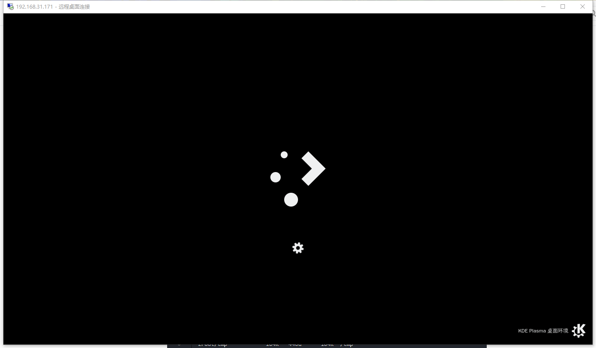
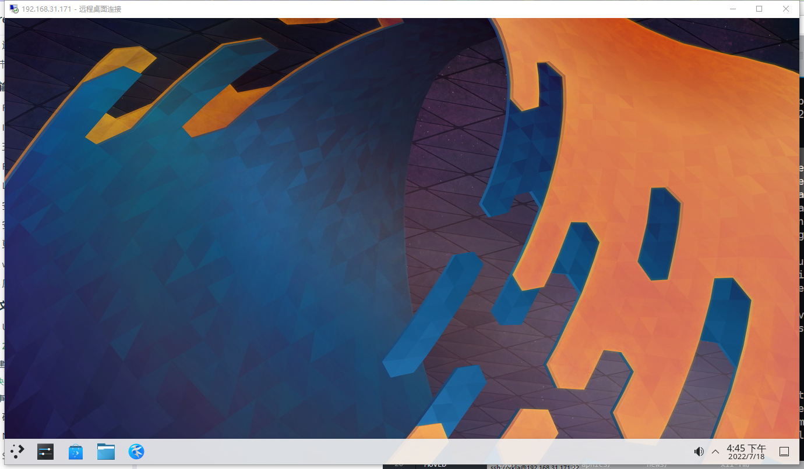
使用 FreeBSD 远程其他机器
安装命令：
# pkg install -y rdesktop
但 rdesktop 安装后不会在系统中生成菜单，因此要在终端输入命令：
# rdesktop windows 设备 ip
anydesk
通过使用 anydesk 可以远程协助：
# cd /usr/ports/deskutils/anydesk/ && make install clean
即可。
第 4.13 节 安装 Wayland （可选）
目前安装 xorg 会自动安装 Wayland。
Wayland 是 Xorg 的下一代替代品，使用上的不同就是相比 xorg，前者界面渲染效果更好，更加流畅；触控板效果更加接近 macOS。但是 Wayland 设计上更加反人类，甚至不为应用程序提供接口，导致远程软件都无法开发。
FreeBSD 已经正式支持 wayland。但是经过测试目前暂不支持 kde5 gnome 等桌面。但是支持了 bspwm wayfire——参见 Handbook。
第 4.14 节 安装 Pantheon
尚未完成，仍然在测试！
root@ykla:~ # pkg install git
root@ykla:~ # git clone --depth 1 https://mirrors.ustc.edu.cn/freebsd-ports/ports.git /usr/ports
root@ykla:~ # fetch https://codeberg.org/olivierd/freebsd-ports-elementary/raw/branch/master/Tools/scripts/elementary-merge
elementary-merge 6048 B 1413 kBps 00s
root@ykla:~ # mkdir freebsd-ports-elementary
root@ykla:~ # cd freebsd-ports-elementary/
root@ykla:~/freebsd-ports-elementary # pwd
/root/freebsd-ports-elementary # 记住此路径！
root@ykla:~ # ee elementary-merge
LOCAL_REP="/root/freebsd-ports-elementary" # 修改为上述路径
root@ykla:~ # sh elementary-merge -c
Cloning into '.'...
remote: Enumerating objects: 484, done.
remote: Counting objects: 100% (484/484), done.
remote: Compressing objects: 100% (441/441), done.
Receiving objects: 100% (484/484), 171.99 KiB | 360.00 KiB/s, done.
Resolving deltas: 100% (54/54), done.
remote: Total 484 (delta 54), reused 285 (delta 24), pack-reused 0
root@ykla:~ # sh elementary-merge -m
Switched to a new branch 'elementary'
/root/freebsd-ports-elementary/x11-wm/switchboard-plug-pantheon-shell/Makefile -> x11-wm/switchboard-plug-pantheon-shell/Makefile
/root/freebsd-ports-elementary/x11-wm/switchboard-plug-pantheon-shell/distinfo -> x11-wm/switchboard-plug-pantheon-shell/distinfo
/root/freebsd-ports-elementary/x11-wm/switchboard-plug-pantheon-shell/pkg-descr -> x11-wm/switchboard-plug-pantheon-shell/pkg-descr
………………
/root/freebsd-ports-elementary/x11-clocks/wingpanel-indicator-datetime/pkg-descr -> x11-clocks/wingpanel-indicator-datetime/pkg-descr
/root/freebsd-ports-elementary/x11-clocks/wingpanel-indicator-datetime/pkg-plist -> x11-clocks/wingpanel-indicator-datetime/pkg-plist
最后使用 sh elementary-merge -r 可还原 Ports
root@ykla:~ # cd /usr/ports/x11/elementary-session
root@ykla:/usr/ports/x11/elementary-session # pkg install cmake pkgconf gnome-settings-daemon desktop-file-utils gnome-keyring accountsservice
root@ykla:/usr/ports/x11/elementary-session # make BATCH=yes install clean
$ cp /usr/local/share/examples/elementary-session/xprofile ~/.xprofile
参考文献
第 29.1 节 安装 i3wm
安装 i3wm
# pkg install -y xorg i3 i3status dmenu i3lock
- i3status 为状态栏，
- dmenu 为菜单
- 默认配置需要以上两个组件（估且称之为组件），i3lock 是锁屏可选
配置
$ echo "/usr/local/bin/i3" >> ~/.xinitrc
$ chown 你的用户名 ~/.xinitrc
启动
可以用 startx 启动 i3 了。
下图为纯 i3，无插件！
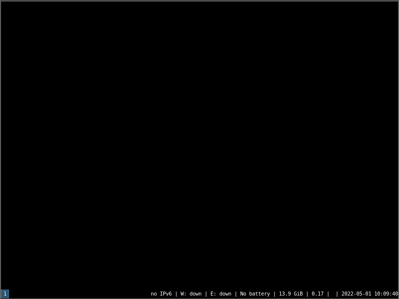
虚拟机扩展
如果使用 virtualbox,则下面启用 virtualbox 扩展：
& echo "exec VBoxClient-all" >> ~/.config/i3/config
参考
- i3 使用手册
- Installing i3wm on FreeBSD
- How to setup FreeBSD with a riced desktop - part 3 - i3
- How to install i3?
- i3 - an improved dynamic, tiling window manager
第 29.2 节 安装 CDE
CDE 是通用桌面环境的缩写。历史悠久的桌面环境，常被用于商业的 Unix 发行版。
安装软件依赖
执行：
# pkg install -y xorg iconv bdftopcf libXScrnSaver ksh93 open-motif tcl86 xorg-fonts xorg-fonts-100dpi cde
开启各项服务
-
在 shell 中执行：
# sysrc rpcbind_enable="YES" # sysrc dtspc_enable="YES" # sysrc dtcms_enable="YES" # ln -s /usr/local/dt/bin/Xsession ~/.Xsession # env LANG=C startx需要用哪个用户登录 CDE，就用哪个用户执行最后两行。
-
将以下内容追加到
/etc/rc.local/usr/local/dt/bin/dtlogin -
重启系统。
第 29.3 节 安装 Awesome
awesome 是 X 的一个窗口管理器。任何布局都可以被动态地应用。为正在使用的应用程序和任务优化环境。可能不适用于 Wayland。
安装
#pkg install x11-wm/awesome
参考文献
第 29.4 节 安装 FVWM
Fvwm 是一个基于 X11 的窗口管理器。它被设计用来最大限度地减少内存消耗消耗，为窗口框架提供 3D 外观，并提供了一个虚拟桌面。在 FreeBSD 中，fvwm2 fvwm3 均有提供。Fvwm3 的设计目的是具有较小的内存占用，但具有丰富的功能集，具有极端可定制和可扩展，并具有高度的 Motif mwm 兼容性。可能不适用于 Wayland。
参考教程
第 4.19 节 安装 Hyprland
Hyprland 是 Wayland 的一个合成器，支持窗口透明、模糊、圆角等等，动画效果做的不错。
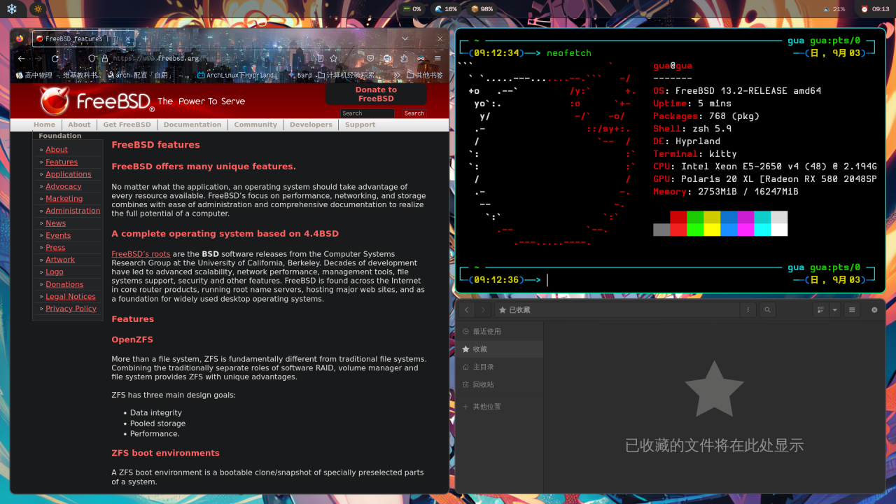
安装 Hyprland
# pkg ins wayland hyprland waybar-hyprland wofi qt5-base qt6-base qt5-wayland qt6-wayland xdg-desktop-portal-hyprland hyprpicker swaybg mako dbus nerd-fonts slurp grim swaylock
- waybar 为 hyprland 的菜单栏。
- wofi 是程序启动器（rofi也很常用，可以了解一下）
- mako 用于显示通知
- nerd-fonts 为图标字体，可以用来在配置文件中插入图案，显示在 waybar 等地方
- slurp 用来在屏幕上选区
- grim 用来捕获屏幕截图
首次启动 Hyprland
重要：
设置环境变量才能成功启动。这里以 zsh 为默认 shell 作为示例：
在
.zprofile里面写入：export XDG_RUNTIME_DIR=/var/run/user/`id -u`启用 dbus：
sysrc=dbus_enable="YES"重启：
rebootCtrl+Alt+F2 进入 tty,执行
ck-launch-session Hyprland，这会在~/.config/hypr生成一个默认配置文件。
配置
可以将以下配置文件下载到本地使用
$ fetch https://book.bsdcn.org/hyprland.zip
$ unzip -d ~/
自动启动，将下行写入 ~/.zprofile：
ck-launch-session Hyprland
如果默认 shell 是 sh，应该写入~/.profile 也可以指定配置文件 Hyprland -c 配置文件路径
配置 hyprland.conf
文件位置：~/.config/hypr/hyprland.conf
1.首先找到开头的警告，把它注释掉,即 # autogenerated = 1
2.设置 Super 键（即 Windows 徽标键，下同）为 mod 键（根据个人习惯设置，也可以设置为 Alt 键等等）$mainMod = SUPER
3.悬浮窗口和传统桌面环境中的行为类似，可以随意拖动到屏幕上的任何位置，可以用鼠标调节窗口大小。默认的配置文件中是按住 mod 键，然后鼠标左键按住悬浮窗口可以拖动窗口进行移动，而按住右键拖动窗口可以调节窗口的大小。设置默认悬浮的窗口：windowrulev2 = float, title:QQ
4.如果你按照开头的命令，安装了 swaybg,你可以设置壁纸（别忘了修改成你自己的图片文件的路径）：
exec-once=swaybg -i "$HOME/Pictures/Wallpapers/2769378.jpg"
5.任务栏：exec-once=waybar
hyprland.conf 示例：
########################################################################################
AUTOGENERATED HYPR CONFIG.
PLEASE USE THE CONFIG PROVIDED IN THE GIT REPO /examples/hypr.conf AND EDIT IT,
OR EDIT THIS ONE ACCORDING TO THE WIKI INSTRUCTIONS.
########################################################################################
# 进入 Hyprland 启动 fcitx5
#exec-once=fcitx5
# 壁纸
#exec-once=swaybg -i "$HOME/Pictures/Wallpapers/2769378.jpg"
# 任务栏
exec-once=waybar
# swaylock
exec-once=swayidle -w timeout 300 'swaylock'
#
# Please note not all available settings / options are set here.
# For a full list, see the wiki
#
# autogenerated = 1 # remove this line to remove the warning
# See https://wiki.hyprland.org/Configuring/Monitors/
monitor=,preferred,auto,auto
# See https://wiki.hyprland.org/Configuring/Keywords/ for more
# Source a file (multi-file configs)
# source = ~/.config/hypr/myColors.conf
# Some default env vars.
env = XCURSOR_SIZE,24
# For all categories, see https://wiki.hyprland.org/Configuring/Variables/
input {
kb_layout = us
kb_variant =
kb_model =
kb_options =
kb_rules =
follow_mouse = 1
touchpad {
natural_scroll = no
}
sensitivity = 0 # -1.0 - 1.0, 0 means no modification.
}
general {
# See https://wiki.hyprland.org/Configuring/Variables/ for more
gaps_in = 5
gaps_out = 20
border_size = 2
col.active_border = rgba(33ccffee) rgba(00ff99ee) 45deg
col.inactive_border = rgba(595959aa)
layout = dwindle
}
decoration {
# See https://wiki.hyprland.org/Configuring/Variables/ for more
rounding = 10
blur {
enabled = true
size = 3
passes = 1
}
drop_shadow = yes
shadow_range = 4
shadow_render_power = 3
col.shadow = rgba(1a1a1aee)
}
animations {
enabled = yes
# Some default animations, see https://wiki.hyprland.org/Configuring/Animations/ for more
bezier = myBezier, 0.05, 0.9, 0.1, 1.05
animation = windows, 1, 7, myBezier
animation = windowsOut, 1, 7, default, popin 80%
animation = border, 1, 10, default
animation = borderangle, 1, 8, default
animation = fade, 1, 7, default
animation = workspaces, 1, 6, default
}
dwindle {
# See https://wiki.hyprland.org/Configuring/Dwindle-Layout/ for more
pseudotile = yes # master switch for pseudotiling. Enabling is bound to mainMod + P in the keybinds section below
preserve_split = yes # you probably want this
}
master {
# See https://wiki.hyprland.org/Configuring/Master-Layout/ for more
new_is_master = true
}
gestures {
# See https://wiki.hyprland.org/Configuring/Variables/ for more
workspace_swipe = off
}
# Example per-device config
# See https://wiki.hyprland.org/Configuring/Keywords/#executing for more
device:epic-mouse-v1 {
sensitivity = -0.5
}
# Example windowrule v1
# windowrule = float, ^(kitty)$
# Example windowrule v2
# windowrulev2 = float,class:^(kitty)$,title:^(kitty)$
# See https://wiki.hyprland.org/Configuring/Window-Rules/ for more
# 窗口规则
windowrulev2 = float, title:rofi.*
windowrulev2 = float, title:QQ
windowrulev2 = float, title:图片查看器
# See https://wiki.hyprland.org/Configuring/Keywords/ for more
$mainMod = SUPER # 用 win 键作为 mod 键
$shiftMod=SUPER_SHIFT
$altMod=SUPER_ALT
$alt=ALT
$shift=SHIFT
# Example binds, see https://wiki.hyprland.org/Configuring/Binds/ for more
bind = $mainMod, Q, exec, kitty # 打开终端
bind = $mainMod, C, killactive, # 关闭窗口
bind = $mainMod, M, exit, # 注销
bind = $mainMod, E, exec, dolphin # 文件管理器
bind = $mainMod, V, togglefloating, # 切换为悬浮窗口，可拖动
bind = $mainMod, R, exec, wofi --show drun # 软件启动器，类似菜单
bind = $mainMod, P, pseudo, # dwindle
bind = $mainMod, J, togglesplit, # dwindle
### 截图
$screen_file=${HOME}/screen_shot_$(date + "%Y-%m-%d_%H-%M-%S").png
bind=$shiftMod, S, exec, grim -g "$(slurp)" - | wl-copy
bind=, Print, exec, grim $screen_file
bind=$shift, Print,exec, grim -g "$(slurp)" $screen_file
bind=$alt, Print, exec, grim - | wl-copy
# Move focus with mainMod + arrow keys
bind = $mainMod, left, movefocus, l
bind = $mainMod, right, movefocus, r
bind = $mainMod, up, movefocus, u
bind = $mainMod, down, movefocus, d
# Switch workspaces with mainMod + [0-9]
# 查看工作区
bind = $mainMod, 1, workspace, 1
bind = $mainMod, 2, workspace, 2
bind = $mainMod, 3, workspace, 3
bind = $mainMod, 4, workspace, 4
bind = $mainMod, 5, workspace, 5
bind = $mainMod, 6, workspace, 6
bind = $mainMod, 7, workspace, 7
bind = $mainMod, 8, workspace, 8
bind = $mainMod, 9, workspace, 9
bind = $mainMod, 0, workspace, 10
# Move active window to a workspace with mainMod + SHIFT + [0-9]
# 把窗口移动到别的工作区，例如 win +Shift+2（ win 键+2 是查看工作区 1 ）
bind = $mainMod SHIFT, 1, movetoworkspace, 1
bind = $mainMod SHIFT, 2, movetoworkspace, 2
bind = $mainMod SHIFT, 3, movetoworkspace, 3
bind = $mainMod SHIFT, 4, movetoworkspace, 4
bind = $mainMod SHIFT, 5, movetoworkspace, 5
bind = $mainMod SHIFT, 6, movetoworkspace, 6
bind = $mainMod SHIFT, 7, movetoworkspace, 7
bind = $mainMod SHIFT, 8, movetoworkspace, 8
bind = $mainMod SHIFT, 9, movetoworkspace, 9
bind = $mainMod SHIFT, 0, movetoworkspace, 10
# Scroll through existing workspaces with mainMod + scroll
bind = $mainMod, mouse_down, workspace, e+1
bind = $mainMod, mouse_up, workspace, e-1
# Move/resize windows with mainMod + LMB/RMB and dragging
bindm = $mainMod, mouse:272, movewindow
bindm = $mainMod, mouse:273, resizewindow
配置 kitty.conf
文件位置：~/.config/kitty/kitty.conf 示例：
# Look and feel
## Color
# include ./obsidian.color.conf
## Font
font_family Hasklug Nerd Font Mono
font_size 14.0
#font_features FiraCodeNerdFontCompleteM-Retina +ss02 +ss03 +ss04 +ss05 +ss07 +zero
## cursor
cursor_blink_interval 2.0
cursor_stop_blinking_after 5.0
## Scrollback
scrollback_lines -1
## Mouse
copy_on_select yes
mouse_hide_wait 2.0
## Notification
enable_audio_bell no
visual_bell_duration 0.3
bell_on_tab yes
## Tabs
tab_bar_edge top
tab_bar_style powerline
tab_powerline_style angled
active_tab_foreground #111
active_tab_background #eee
active_tab_font_style bold
inactive_tab_foreground #666
inactive_tab_background #888
tab_bar_background #444
inactive_tab_font_style normal
tab_title_template "{fmt.fg.gray}{index}{fmt.fg.default}:{title}"
active_tab_title_template "{title}"
# Mechanics
input_delay 2
editor nvim
allow_remote_control no
allow_hyperlinks no
term xterm-256color
macos_option_as_alt yes
macos_quit_when_last_window_closed yes
strip_trailing_spaces smart
update_check_interval 72
hide_window_decorations titlebar-only
# Shortcuts
clear_all_shortcuts yes
## The defaults
map ctrl+a pipe @text tab pbcopy
map ctrl+shift+c copy_to_clipboard
map ctrl+shift+v paste_from_clipboard
map ctrl+alt+j scroll_page_up
map ctrl+alt+k scroll_page_down
map ctrl+k clear_terminal reset active
## Tab management
map ctrl+t new_tab_with_cwd !neighbor
map alt+s next_tab
map alt+a previous_tab
map alt+q close_tab
map ctrl+s set_tab_title
map ctrl+shift+left move_tab_backward
map ctrl+shift+right move_tab_forward
map alt+1 goto_tab 1
map alt+2 goto_tab 2
map alt+3 goto_tab 3
map alt+4 goto_tab 4
map alt+5 goto_tab 5
map alt+6 goto_tab 6
map alt+7 goto_tab 7
map alt+8 goto_tab 8
map alt+9 goto_tab 9
# Font size
map ctrl+equal change_font_size current +1.0
map ctrl+minus change_font_size current -1.0
map ctrl+0 change_font_size current 0
#include ${ARCH}.conf
配置 waybar（任务栏）
waybar 的配置文件目录在主目录的 .config/waybar 文件夹里面，包含一个 config.jsonc 文件，和一个 style.css. 可以参考使用示例配置文件的 waybar 文件夹。示例配置文件中需要安装 noto-enoji 字体才能正常显示，也可以改成自己想要的图标。
config.jsonc 示例：
{
"position": "top",
"layer": "top",
"height": 16,
"margin-top": 0,
"margin-bottom": 0,
"margin-left": 0,
"margin-right": 0,
"modules-left": ["custom/launcher", "wlr/workspaces", "custom/playerctl", "custom/playerlabel"],
"modules-center": ["cpu", "memory", "disk"],
"modules-right": ["tray", "custom/randwall", "network", "pulseaudio", "clock"],
"clock": {
"format": "⏰ {:%H:%M}",
"tooltip": "true",
"tooltip-format": "<big>{:%Y %B}</big>\n<tt><small>{calendar}</small></tt>",
"format-alt": "🗓️ {:%y/%m/%d}"
},
"wlr/workspaces": {
"active-only": false,
"all-outputs": true,
"disable-scroll": false,
"on-scroll-up": "hyprctl dispatch workspace -1",
"on-scroll-down": "hyprctl dispatch workspace +1",
"format": "{icon}",
"on-click": "activate",
"format-icons": {
"urgent": "",
"active": "🔴",
"default": "🔵",
"sort-by-number": true
},
},
"custom/playerctl": {
"format": "{icon}",
"return-type": "json",
"max-length": 64,
"exec": "playerctl -a metadata --format '{\"text\": \"{{artist}} - {{markup_escape(title)}}\", \"tooltip\": \"{{playerName}} : {{markup_escape(title)}}\", \"alt\": \"{{status}}\", \"class\": \"{{status}}\"}' -F",
"on-click-middle": "playerctl play-pause",
"on-click": "playerctl previous",
"on-click-right": "playerctl next",
"format-icons": {
"Playing": "<span foreground='#E5B9C6'> </span>",
"Paused": "<span foreground='#928374'> </span>"
},
},
"custom/playerlabel": {
"format": "<span>{}</span>",
"return-type": "json",
"max-length": 48,
"exec": "playerctl -a metadata --format '{\"text\": \"{{artist}} - {{markup_escape(title)}}\", \"tooltip\": \"{{playerName}} : {{markup_escape(title)}}\", \"alt\": \"{{status}}\", \"class\": \"{{status}}\"}' -F",
"on-click-middle": "playerctl play-pause",
"on-click": "playerctl previous",
"on-click-right": "playerctl next",
"format-icons": {
"Playing": "<span foreground='#E5B9C6'> </span>",
"Paused": "<span foreground='#928374'> </span>"
},
},
"memory": {
"format": "🌊 {}%",
"format-alt": "🌊 {used}/{total} GiB",
"interval": 5
},
"cpu": {
"format": "📟 {usage}%",
"format-alt": "📟 {avg_frequency} GHz",
"interval": 5
},
"disk": {
"format": "📦 {}%",
"format-alt": "📦 {used}/{total} GiB",
"interval": 5,
"path": "/"
},
"network": {
//"format-ethernet": " {ifname}: {ipaddr}",
"format-ethernet": " IP: {ipaddr}",
//"format-linked": " {ifname} (No IP)",
"format-disconnected": "",
//"format-alt": " {ifname}: {ipaddr}/{cidr}",
"tooltip-format": "{essid}",
"on-click-right": "nm-connection-editor"
},
"tray": {
"icon-size": 16,
"spacing": 5
},
"backlight": {
"format": "{icon} {percent}%",
"format-icons": ["", "", "", "", "", "", "", "", ""],
},
"pulseaudio": {
"format": "{icon} {volume}%",
"format-muted": "🔇",
"format-icons": {
"default": ["🔈", "🔉", "🔊"]
},
"scroll-step": 5,
},
"custom/launcher": {
"format": "🚀",
"on-click": "wofi --show drun",
"on-click-right": "wofi --show drun"
},
}
style.css 示例：
* {
border: none;
border-radius: 0px;
/*font-family: VictorMono, Iosevka Nerd Font, Noto Sans CJK;*/
font-family: Cascadia Code, FontAwesome, Noto Sans CJK, Microsoft YaHei UI, HarmonyOS Sans;
font-size: 14px;
font-style: normal;
min-height: 0;
}
window#waybar {
background: rgba(30, 30, 46, 0.5);
border-bottom: 1px solid #282828;
color: #f4d9e1
}
#workspaces {
background: #282828;
margin: 5px 5px 5px 5px;
padding: 0px 5px 0px 5px;
border-radius: 16px;
border: solid 0px #f4d9e1;
font-weight: normal;
font-style: normal;
}
#workspaces button {
padding: 0px 5px;
border-radius: 16px;
color: #928374;
}
#workspaces button.active {
color: #f4d9e1;
background-color: transparent;
border-radius: 16px;
}
#workspaces button:hover {
background-color: #E6B9C6;
color: black;
border-radius: 16px;
}
#custom-date, #clock, #battery, #pulseaudio, #network, #custom-randwall, #custom-launcher {
background: transparent;
padding: 5px 5px 5px 5px;
margin: 5px 5px 5px 5px;
border-radius: 8px;
border: solid 0px #f4d9e1;
}
#custom-date {
color: #D3869B;
}
#custom-power {
color: #24283b;
background-color: #db4b4b;
border-radius: 5px;
margin-right: 10px;
margin-top: 5px;
margin-bottom: 5px;
margin-left: 0px;
padding: 5px 10px;
}
#tray {
background: #282828;
margin: 5px 5px 5px 5px;
border-radius: 16px;
padding: 0px 5px;
/*border-right: solid 1px #282738;*/
}
#clock {
color: #E6B9C6;
background-color: #282828;
border-radius: 0px 0px 0px 24px;
padding-left: 13px;
padding-right: 15px;
margin-right: 0px;
margin-left: 10px;
margin-top: 0px;
margin-bottom: 0px;
font-weight: bold;
/*border-left: solid 1px #282738;*/
}
#battery {
color: #9ece6a;
}
#battery.charging {
color: #9ece6a;
}
#battery.warning:not(.charging) {
background-color: #f7768e;
color: #24283b;
border-radius: 5px 5px 5px 5px;
}
#backlight {
background-color: #24283b;
color: #db4b4b;
border-radius: 0px 0px 0px 0px;
margin: 5px;
margin-left: 0px;
margin-right: 0px;
padding: 0px 0px;
}
#network {
color: #f4d9e1;
border-radius: 8px;
margin-right: 5px;
}
#pulseaudio {
color: #f4d9e1;
border-radius: 8px;
margin-left: 0px;
}
#pulseaudio.muted {
background: transparent;
color: #928374;
border-radius: 8px;
margin-left: 0px;
}
#custom-randwall {
color: #f4d9e1;
border-radius: 8px;
margin-right: 0px;
}
#custom-launcher {
color: #e5809e;
background-color: #282828;
border-radius: 0px 24px 0px 0px;
margin: 0px 0px 0px 0px;
padding: 0 20px 0 13px;
/*border-right: solid 1px #282738;*/
font-size: 20px;
}
#custom-launcher button:hover {
background-color: #FB4934;
color: transparent;
border-radius: 8px;
margin-right: -5px;
margin-left: 10px;
}
#custom-playerctl {
background: #282828;
padding-left: 15px;
padding-right: 14px;
border-radius: 16px;
/*border-left: solid 1px #282738;*/
/*border-right: solid 1px #282738;*/
margin-top: 5px;
margin-bottom: 5px;
margin-left: 0px;
font-weight: normal;
font-style: normal;
font-size: 16px;
}
#custom-playerlabel {
background: transparent;
padding-left: 10px;
padding-right: 15px;
border-radius: 16px;
/*border-left: solid 1px #282738;*/
/*border-right: solid 1px #282738;*/
margin-top: 5px;
margin-bottom: 5px;
font-weight: normal;
font-style: normal;
}
#window {
background: #282828;
padding-left: 15px;
padding-right: 15px;
border-radius: 16px;
/*border-left: solid 1px #282738;*/
/*border-right: solid 1px #282738;*/
margin-top: 5px;
margin-bottom: 5px;
font-weight: normal;
font-style: normal;
}
#custom-wf-recorder {
padding: 0 20px;
color: #e5809e;
background-color: #1E1E2E;
}
#cpu {
background-color: #282828;
/*color: #FABD2D;*/
border-radius: 16px;
margin: 5px;
margin-left: 5px;
margin-right: 5px;
padding: 0px 10px 0px 10px;
font-weight: bold;
}
#memory {
background-color: #282828;
/*color: #83A598;*/
border-radius: 16px;
margin: 5px;
margin-left: 5px;
margin-right: 5px;
padding: 0px 10px 0px 10px;
font-weight: bold;
}
#disk {
background-color: #282828;
/*color: #8EC07C;*/
border-radius: 16px;
margin: 5px;
margin-left: 5px;
margin-right: 5px;
padding: 0px 10px 0px 10px;
font-weight: bold;
}
#custom-hyprpicker {
background-color: #282828;
/*color: #8EC07C;*/
border-radius: 16px;
margin: 5px;
margin-left: 5px;
margin-right: 5px;
padding: 0px 11px 0px 9px;
font-weight: bold;
}
配置 swaylock
swaylock 的配置文件在~/.config/swaylock/config中，以下是示例配置文件：
ignore-empty-password
font=Fira Sans Compressed
clock
timestr=%R
datestr=%a, %e of %B
screenshots
fade-in=0.2
effect-blur=20x2
#effect-greyscale
effect-scale=0.3
indicator
indicator-radius=360
indicator-thickness=60
indicator-caps-lock
key-hl-color=228833
separator-color=00000000
inside-color=00000099
inside-clear-color=ffd20400
inside-caps-lock-color=009ddc00
inside-ver-color=d9d8d800
inside-wrong-color=ee2e2400
ring-color=231f20D9
ring-clear-color=231f20D9
ring-caps-lock-color=231f20D9
ring-ver-color=231f20D9
ring-wrong-color=231f20D9
line-color=00000000
line-clear-color=ffd2000
line-caps-lock-color=009ddc00
line-ver-color=d9d8d800
line-wrong-color=ee2e2400
text-clear-color=ffd20400
text-ver-color=d9d8d800
text-wrong-color=ee2e2400
bs-hl-color=ee2e24FF
#caps-lock-key-hl-color=ffd204FF
#caps-lcok-key-hl-color=ee2e24FF
#caps-lock-bs-hl-color=ee2e24FF
#disable-caps-lock-text
text-caps-lock-color=000000FF
故障排除
如果启动失败，或者黑屏，请检查有没有把自己用户加入到 video 组，有没有安装显卡驱动，有没有正确设置环境变量 XDG_RUNTIME_DIR 且生效。
参考文献
本章节为基础必备知识
第 5.0 节 输入法与环境变量
说明
方法：在可生效配置文件中写入配置内容
配置内容
配置内容分 A 、B 组两组
先 A 组
sh/bash/zsh:fcitx5
export LANG=zh_CN.UTF-8
export LANGUAGE=zh_CN.UTF-8
export LC_ALL=zh_CN.UTF-8
export XMODIFIERS='@im=fcitx'
export GTK_IM_MODULE=fcitx/xim
export QT_IM_MODULE=fcitx
sh/bash/zsh:ibus
export LANG=zh_CN.UTF-8
export LANGUAGE=zh_CN.UTF-8
export LC_ALL=zh_CN.UTF-8
export XIM=ibus
export GTK_IM_MODULE=ibus
export QT_IM_MODULE=ibus
export XMODIFIERS=@im=ibus
export XIM_PROGRAM="ibus-daemon"
export XIM_ARGS="--daemonize --xim"
B 组
csh:fcitx5
setenv LANG zh_CN.UTF-8
setenv LC_ALL zh_CN.UTF-8
setenv LANGUAGE zh_CN.UTF-8
setenv XMODIFIERS @im=fcitx
setenv GTK_IM_MODULE fcitx/xim
setenv QT_IM_MODULE fcitx
csh:ibus
setenv LANG zh_CN.UTF-8
setenv LC_ALL zh_CN.UTF-8
setenv LANGUAGE zh_CN.UTF-8
setenv XIM ibus
setenv GTK_IM_MODULE ibus
setenv QT_IM_MODULE ibus
setenv XMODIFIERS @im=ibus
setenv XIM_PROGRAM ibus-daemon
setenv XIM_ARGS "--daemonize --xim"
可生效配置文件
根据自己使用的桌面管理器择一使用：
- sddm lightdm gdm 都可以在
~/.xprofile中写入 A 组配置 - lightdm gdm 可以在
~/.profile中写入 A 组配置 - sddm 可以在用户登录 shell 配置文件中写入配置
- sh:
~/.profile写入 A 组配置 - bash:
~/.bash_profile或~/.profile写入 A 组配置 - zsh:
~/.zprofile写入 A 组配置 - csh:
~/.cshrc写入 B 组配置
本地化相关的变量
下面的变量用于控制环境本地化
LC_* 系列变量是 Linux 和 Unix 操作系统中用于本地化（即国际化和本地化）的环境变量。这些变量控制了文本字符编码、日期和时间格式、货币符号、语言等方面的设置。其中一些常见的变量包括：
LC_COLLATE: 定义字符串排序的规则。LC_CTYPE: 定义字符集和字符类型判断规则，例如字母、数字、标点符号等。LC_MONETARY: 定义货币格式和货币符号。LC_MESSAGES: 定义程序运行时输出信息的语言。LC_NUMERIC: 定义数字格式，例如小数点和千位分隔符。LC_TIME: 定义日期和时间格式。LC_ADDRESS: 定义地址的格式。LC_NAME: 定义人名的格式。LC_PAPER: 定义纸张大小和打印格式。LC_TELEPHONE: 定义电话号码的格式。LC_MEASUREMENT: 定义度量单位的格式。LC_IDENTIFICATION: 定义文件特征的格式。
特殊的
LC_ALL: 通过设置该变量，可以同时覆盖所有其他LC_*变量的值。LANG: 用于设置默认的语言和字符集。它通常用于在没有其他LC_*变量设置时提供区域设置信息。如果同时设置了LANG和LC_*变量，LC_*变量将覆盖LANG变量中相应的设置。LANGUAGE: 用于设置当前系统的语言环境，它影响了许多程序的行为，如日期格式、数字格式、字符编码等。具体地说，这个环境变量通常会被一些程序自动读取，并根据其值来确定应该使用哪种语言和本地化设置。如果未设置该变量，则程序可能会使用默认的系统语言环境或其他环境变量（如LC_ALL、LC_MESSAGES等）来确定语言环境。
使用这些变量，用户可以轻松地调整操作系统的语言和本地化设置以适应不同的地域和语言环境。
可以使用 locale 命令确定以上变量的当前值,如：
jk@freebsd:~ $ locale
LANG=C.UTF-8
LC_CTYPE="C.UTF-8"
LC_COLLATE="C.UTF-8"
LC_TIME="C.UTF-8"
LC_NUMERIC="C.UTF-8"
LC_MONETARY="C.UTF-8"
LC_MESSAGES="C.UTF-8"
LC_ALL=
所以中文化其实也可以不同。
- 单纯的界面中文化只要设置
LC_MESSAGES为"zh_CN.UTF-8"(在 sddm/xfce 下验证)。 - 较常见的将
LANG,LC_ALL,LANGUAGE三个环境变量都设为"zh_CN.UTF-8" - 纯英文环境，加上中文输入。
为什么要将 LANG,LC_ALL,LANGUAGE 三个环境变量都设为"zh_CN.UTF-8"，主要是开发人员在写程序的时候各自用了不同的变量，为了更大的适应性，就全进行设置
第一种设置只影响界面，提示等，但对其他的格式输出等没有响影（参考 LC_* 系列变量概述）。如(sh 中)
jk@freebsd:~ $ locale
LANG=C.UTF-8
LC_CTYPE="C.UTF-8"
LC_COLLATE="C.UTF-8"
LC_TIME="C.UTF-8"
LC_NUMERIC="C.UTF-8"
LC_MONETARY="C.UTF-8"
LC_MESSAGES=zh_CN.UTF-8
LC_ALL=
jk@freebsd:~ $ date
Fri Apr 21 21:14:43 UTC 2023
jk@freebsd:~ $ export LC_TIME=zh_CN.UTF-8
jk@freebsd:~ $ date
2023年 4月21日 星期五 21时15分07秒 UTC
默认情况 LC_TIME 环境变量值为 C.UTF-8,date命令输出Fri Apr 21 21:14:43 UTC 2023。LC_TIME 环境变量值设置为 zh_CN.UTF-8,date命令输出2023年 4月21日 星期五 21时15分07秒 UTC。维持date命令的英文输出对一些脚本编写者有时很重要（这只是一种情况，还有其它特殊的需求等）。这样的情况也存在于其它一样LC_*变量控制的信息中。
时区设置
每个用户可以设置自己的时区，在用户的 shell 配置文件中设置 TZ 变量即可
export TZ=CST-8 # sh,bash,zsh
# 或
export TZ=Asia/Shanghai
setenv TZ CST-8 # csh
# 或
setenv TZ "Asia/Shanghai"
在 crontab 配置文件中，设置 CRON_TZ 变量即可
CRON_TZ=CST-8
0 8 * * * date >> ~/date.log
输入法
Shell 脚本
用户可以通过脚本快速安装：
# fetch http://book.bsdcn.org/input.sh
# sh input.sh
shell 脚本内容如下：
#/bin/sh
echo -e "\e[1;32m begin to init ... \e[0m"
bf=$(cat <<EOF
export LANG=zh_CN.UTF-8
export LC_ALL=zh_CN.UTF-8
export LANGUAGE=zh_CN.UTF-8
export XMODIFIERS='@im=fcitx'
export GTK_IM_MODULE=fcitx/xim
export QT_IM_MODULE=fcitx
EOF
)
bi=$(cat <<EOF
export LANG=zh_CN.UTF-8
export LC_ALL=zh_CN.UTF-8
export LANGUAGE=zh_CN.UTF-8
export XIM=ibus
export GTK_IM_MODULE=ibus
export QT_IM_MODULE=ibus
export XMODIFIERS=@im=ibus
export XIM_PROGRAM="ibus-daemon"
export XIM_ARGS="--daemonize --xim"
EOF
)
cf=$(cat <<EOF
setenv LANG zh_CN.UTF-8
setenv LC_ALL zh_CN.UTF-8
setenv LANGUAGE zh_CN.UTF-8
setenv XMODIFIERS @im=fcitx
setenv GTK_IM_MODULE fcitx/xim
setenv QT_IM_MODULE fcitx
EOF
)
ci=$(cat <<EOF
setenv LANG zh_CN.UTF-8
setenv LC_ALL zh_CN.UTF-8
setenv LANGUAGE zh_CN.UTF-8
setenv XIM ibus
setenv GTK_IM_MODULE ibus
setenv QT_IM_MODULE ibus
setenv XMODIFIERS @im=ibus
setenv XIM_PROGRAM ibus-daemon
setenv XIM_ARGS "--daemonize --xim"
EOF
)
echo -e "\e[1;32m add a normal user and invite into wheel \e[0m"
read -p "user name ? " username
pw useradd ${username} -m -c ${username} -w yes
pw groupmod wheel -m ${username}
echo -e "\e[1;32m select your shell:sh csh bash zsh \e[0m"
read -p "use shell:[sh] ? " myshell
echo -e "\e[1;32m select desktop evironment:kde xfce mate cinnamon gnome \e[0m"
read -p "desktop evironment ?[xfce] " myde
echo -e "\e[1;32m select desktop manager(if use gnome always set to gdm):sddm lightdm gdm \e[0m"
read -p "desktop evironment ?[sddm] " mydm
echo -e "\e[1;32m select your input method: ibus fcitx \e[0m"
read -p "input method ?[ibus] " myim
echo -e "\e[1;32m do you use rime?y|n \e[0m"
read -p "use rime ?[n] " myrime
echo -e "\e[1;32m sddm lightdm gdm source .xprofile ,use .xprofile ?y|n \e[0m"
read -p "use .xprofile[n] ? " myxprofile
case $myshell in
sh)
;;
csh)
;;
bash)
pkg install -y bash
;;
zsh)
pkg install -y zsh
;;
*)
myshell="sh"
esac
chsh -s $myshell $username
case $myim in
fcitx)
pkg install -y fcitx5 fcitx5-qt5 fcitx5-qt6 fcitx5-configtool fcitx5-gtk2 fcitx5-gtk3 fcitx5-gtk4
;;
*)
myim="ibus"
pkg install -y ibus
;;
esac
case $myrime in
y)
pkg install -y zh-rime-data-full
if [ $myim = "fcitx" ];then
pkg install -y zh-fcitx5-rime
su -m $username -c "mkdir -p /home/${username}/.local/share/fcitx5/rime;cd /home/${username}/.local/share/fcitx5/rime;rime_deployer --add-schema wubi86;rime_deployer --add-schema pinyin_simp"
else
pkg install -y zh-ibus-rime
su -m $username -c "mkdir -p /home/${username}/.config/ibus/rime;cd /home/${username}/.config/ibus/rime;rime_deployer --add-schema wubi86;rime_deployer --add-schema pinyin_simp"
fi
;;
*)
if [ $myim = "fcitx" ];then
pkg install -y zh-fcitx5-chinese-addons
fi
if [ $myim = "ibus" ];then
if [ $(pkg search zh-ibus-libpinyin) ];then
pkg install -y zh-ibus-libpinyin
else
pkg install -y zh-ibus-pinyin
fi
fi
;;
esac
case $myde in
kde)
echo -e "\e[1;32m install kde \e[0m"
pkg install -y kde5
;;
mate)
echo -e "\e[1;32m install mate \e[0m"
pkg install -y mate
;;
cinnamon)
echo -e "\e[1;32m install cinnamon \e[0m"
pkg install -y cinnamon
echo "proc /proc procfs rw 0 0" >> /etc/fstab
;;
gnome)
echo "install gnome"
pkg install -y gnome
mydm="gdm"
echo "proc /proc procfs rw 0 0" >> /etc/fstab
;;
*)
myde="xfce"
echo -e "\e[1;32m install xfce \e[0m"
pkg install -y xfce
;;
esac
case $mydm in
lightdm)
pkg install -y lightdm lightdm-gtk-greeter
sysrc lightdm_enable=YES
;;
gdm)
sysrc gdm_enable=YES
;;
*)
mydm="sddm"
pkg install -y sddm
sysrc sddm_enable=YES
;;
esac
if [ $myxprofile ] && [ $myxprofile = "y" ] && [ $myim = "ibus" ];then
echo "$bi" >> /home/$username/.xprofile
chown $username:$username /home/$username/.xprofile
echo -e "\e[1;32m all done.please reboot \e[0m"
exit
fi
if [ $myxprofile ] && [ $myxprofile = "y" ] && [ $myim = "fcitx" ];then
echo "$bf" >> /home/$username/.xprofile
chown $username:$username /home/$username/.xprofile
echo -e "\e[1;32m all done.please reboot \e[0m"
exit
fi
if [ $myde = "gnome" ];then
echo "ibus is the better in gnome, set ibus"
echo "$bi" >> /home/$username/.profile
chown $username:$username /home/$username/.profile
fi
if [ $mydm = "sddm" ] && [ $myim = "ibus" ];then
case $myshell in
sh)
echo "$bi" >> /home/$username/.profile
chown $username:$username /home/$username/.profile
;;
bash)
echo "$bi" >> /home/$username/.bash_profile
chown $username:$username /home/$username/.bash_profile
;;
zsh)
echo "$bi" >> /home/$username/.zprofile
chown $username:$username /home/$username/.zprofile
;;
csh)
echo "$ci" >> /home/$username/.cshrc
chown $username:$username /home/$username/.cshrc
esac
fi
if [ $mydm = "sddm" ] && [ $myim = "fcitx" ];then
case $myshell in
sh)
echo "$bf" >> /home/$username/.profile
chown $username:$username /home/$username/.profile
;;
bash)
echo "$bf" >> /home/$username/.bash_profile
chown $username:$username /home/$username/.bash_profile
;;
zsh)
echo "$bf" >> /home/$username/.zprofile
chown $username:$username /home/$username/.zprofile
;;
csh)
echo "$cf" >> /home/$username/.cshrc
chown $username:$username /home/$username/.cshrc
esac
fi
if [ $mydm = "lightdm" ] && [ $myim = "fcitx" ];then
echo "$bf" >> /home/$username/.profile
chown $username:$username /home/$username/.profile
fi
echo -e "\e[1;32m all done.please reboot \e[0m"
exit
第 5.1 节 Fcitx 输入法框架
注意
在 FreeBSD-14.0-Current 中可能会出现许多不可预料的奇怪的 bug（fcitx5 诊断信息英文乱码，输入法显示出奇怪的汉字，fcitx5-qt5 环境不能正常加载……），如果条件允许应该在 FreeBSD-Release 中参考使用本文。
Fcitx 4.X
注意
该教程仅在 KDE 5/csh 下测试通过。
# pkg install zh-fcitx zh-fcitx-configtool fcitx-qt5 fcitx-m17n zh-fcitx-libpinyin
在 .cshrc 和 /etc/csh.cshrc 中添加如下配置，此配置可以解决部分窗口 fcitx 无效的问题。
setenv QT4_IM_MODULE fcitx
setenv GTK_IM_MODULE fcitx
setenv QT_IM_MODULE fcitx
setenv GTK2_IM_MODULE fcitx
setenv GTK3_IM_MODULE fcitx
setenv XMODIFIERS @im=fcitx
在 .cshrc 和 /etc/csh.cshrc 中添加下面几行配置可以解决终端无法输入中文和无法显示中文的问题。
setenv LANG zh_CN.UTF-8
setenv MM_CHARSET zh_CN.UTF-8
setenv LC_CTYPE zh_CN.UTF-8
setenv LC_ALL zh_CN.UTF-8
自动启动：
# cp /usr/local/share/applications/fcitx.desktop ~/.config/autostart/
Fcitx 5.X
fcitx 5 相比前一代，增加了对 Wayland 的支持，据说更加流畅。
# pkg install fcitx5 fcitx5-qt5 fcitx5-qt6 fcitx5-gtk2 fcitx5-gtk3 fcitx5-gtk4 fcitx5-configtool zh-fcitx5-chinese-addons
fcitx5-configtool是 fcitx5 的图形配置工具。
也可通过 ports 安装。环境变量取决于你的窗口管理器和桌面以及 shell。经测试不支持 slim，可能是配置问题。sddm 可用。
可选
你还可以选择安装 rime，
#pkg install zh-fcitx5-rime zh-rime-essay。rime 不会自动被添加到输入法，需要手动添加完成初始化（程序里找到 fcitx 配置工具，添加 rime 输入法即可），这个输入法我不知道配置文件在哪，有意者可以自行安装。而且经常切换到繁体，即使你选择了简体，BUG 比较多，原因未知。对于普通用户如果未生效，请检查自己的 shell 是否选择了对应教程进行设置。另外请将该用户加入 wheel 组。
SLIM 窗口下会提示 IBUS 找不到……疑似 bug。
自动启动：
# mkdir -p ~/.config/autostart/ #若使用其他用户则需要在其命令行下再执行之。
# cp /usr/local/share/applications/org.fcitx.Fcitx5.desktop ~/.config/autostart/
根据 Shell 设置环境变量
如何查看修改当前 shell
先看看现在的 shell 是什么: # echo $0。
例：尝试将当前 shell 修改成 csh：
# chsh -s /bin/csh
退出当前账号，重新登录，查看 shell 是否变为 csh：
# echo $0
如果输出csh，代表配置成功。然后其余环境变量配置方法同上所述。
设置环境变量
根据自己使用的桌面管理器择一使用：
- sddm lightdm gdm 都可以在
~/.xprofile中写入 A 组配置 - lightdm gdm 可以在
~/.profile中写入 A 组配置 - sddm 可以在用户登录 shell 配置文件中写入配置
- sh:
~/.profile写入 A 组配置 - bash:
~/.bash_profile或~/.profile写入 A 组配置 - zsh:
~/.zprofile写入 A 组配置 - csh:
~/.cshrc写入 B 组配置
注意：如果登录桌面的用户不是 root，就不能使用 root 进行设置，必须切换到当前用户且不使用 sudo 进行配置。
A 组：
sh/bash/zsh:fcitx5
export LANG=zh_CN.UTF-8
export LANGUAGE=zh_CN.UTF-8
export LC_ALL=zh_CN.UTF-8
export XMODIFIERS='@im=fcitx'
export GTK_IM_MODULE=fcitx
export QT_IM_MODULE=fcitx
B 组：
csh:fcitx5
setenv LANG zh_CN.UTF-8
setenv LC_ALL zh_CN.UTF-8
setenv LANGUAGE zh_CN.UTF-8
setenv XMODIFIERS @im=fcitx
setenv GTK_IM_MODULE fcitx
setenv QT_IM_MODULE fcitx
故障排除
遇到问题，请先运行 fcitx 故障诊断，但是该输出仅对 bash 做了环境变量的配置。 也就是说他输出的环境变量仅适用于 bash、sh和zsh 等 SHELL，而不适用于 csh。于 csh 的环境变量配置需要参考上文。
如果提示 bash 字样且无法输出诊断信息，则需要先安装 bash：# pkg install bash
fcitx 4.x
# fcitx-diagnose
对于 fcitx 4.x 来说，找不到 GTK 4 的支持是正常的。
fcitx 5.x
# fcitx5-diagnose
对于 fcitx 5.x 来说，找不到 fcitx qt 4 的支持是正常的。
第 5.2 节 Ibus 输入法框架
ibus
基本安装
# pkg install ibus zh-ibus-pinyin
其中 zh-ibus-pinyin 为拼音输入法
可选的还有
zh-ibus-cangjie仓颉输入法zh-ibus-chewing酷音输入法zh-ibus-rimerime 输入法引擎（另述）zh-ibus-table-chinese包含五笔、仓颉等多种输入法
环境变量配置
- sddm lightdm gdm 都可以在
~/.xprofile中写入 A 组配置 - lightdm gdm 可以在
~/.profile中写入 A 组配置 - sddm 可以在用户登录 shell 配置文件中写入配置
- sh:
~/.profile写入 A 组配置 - bash:
~/.bash_profile或~/.profile写入 A 组配置 - zsh:
~/.zprofile写入 A 组配置 - csh:
~/.cshrc写入 B 组配置
注销后登录，直接点击 ibus 图标加入自己的输入法后，即可使用,不需配置,不须中文化设置（测试环境 sddm/xfce/freebsd 13.2/sh）。但是 ibus 提示应当在相应的 shell 文件(具体文件另述）中加入以下内容
A 组：
#A 组 在 sh、bash、zsh 中
export XIM=ibus
export GTK_IM_MODULE=ibus
export QT_IM_MODULE=ibus
export XMODIFIERS=@im=ibus
export XIM_PROGRAM="ibus-daemon"
export XIM_ARGS="--daemonize --xim"
或 B 组：
#B组 在 csh 中
setenv XIM ibus
setenv GTK_IM_MODULE ibus
setenv QT_IM_MODULE ibus
setenv XMODIFIERS @im=ibus
setenv XIM_PROGRAM ibus-daemon
setenv XIM_ARGS "--daemonize --xim"
这里，建议按 ibus 的建议加入相应内容，以确保在更多的程序中使用时的兼容性。
以前是要配置的现在默认可以不配置，这里我注意到 FreeBSD 13 中 LC_*,及LANG环境变量的默认值为"C.UTF-8",原来这些环境变量的默认值是"C",这个变化从 FreeBSD 12 开始(chatgpt 查询所得)。所以现在的情况下默认已指定字符编码为UTF-8,这可能是 ibus 不需要设置的原因。之前没注意到，或是因为不作汉化使用输入法的情况是很少见的，或是因为来自于 FreeBSD 12 之前的习惯做了环境变量设置而未意识到，或者是之前 ibus 对环境变量的要求比与现在有区别。这里以 lightdm/mate/ibus/rime 环境,LANG,LANGUAGE,LC_ALL设置为"fr_Fr.UTF-8"，维持字符编码为UTF-8，仍可以正常输入中文，可见 ibus 对编码设置有要求，但对区域设置并无要求
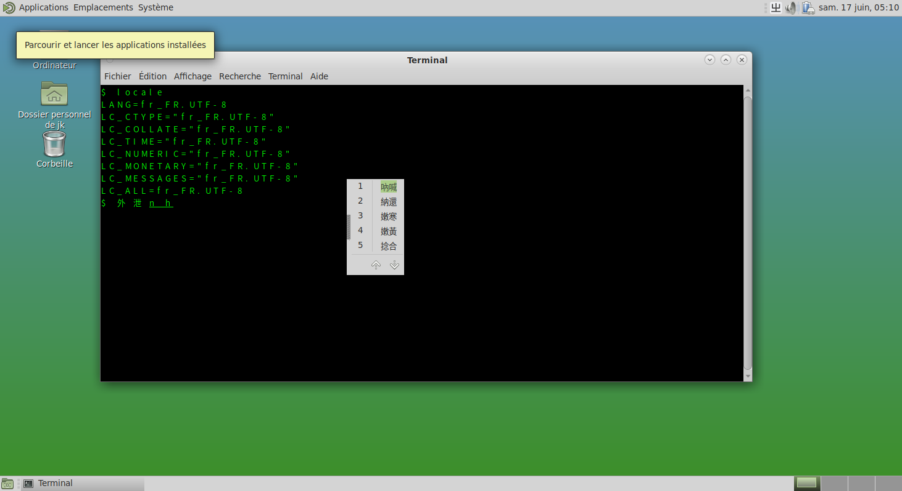
第 5.3 节 五笔输入法
FreeBSD 使用 98 五笔输入法教程
rime
rime 输入法引擎依赖于输入法面板"ibus/fcitx",所以使用 rime 的前提是先正确配置 ibus/fcitx,下面的择其一，进行安装。
# pkg install zh-fcitx5-rime
# pkg install zh-ibus-rime
ibus
如果使用 ibus，环境变量配置：安装好运行初始化命令 ibus-setup，将 98 五笔码表（wubi86.dict.yaml、wubi86.schema.yaml）复制到 /usr/local/share/rime-date 目录下，修改 rime-date 目录下 default.yaml 文件:
打开 default.yaml 找到schema_lis：
下面第一行添加 - schema: wubi98 保存退出重新加载 ibus 输入法即可。
fcitx 5
首先下载所需文件：https://github.com/FreeBSD-Ask/98-input
把 98wbx.conf 文件复制到 /usr/local/share/fcitx5/inputmethod/（inputmethod 目录）下面 把 fcitx-98wubi.png 和 org.fcitx.Fcitx5.fcitx-98wubi.png 图标复制到 /usr/local/share/icons/hicolor/48x48/apps/（apps 目录）下面 把 98wbx.main.dict 词库放到 /usr/local/share/libime/（libime目录）下面 重启 fcitx5，在 fcitx5-configtool 起用 98 五笔即可
提示：王码 98 五笔生成 .dict 库方法，直接用下面命令生成：
$ libime_tabledict 98wbx.txt 98wbx.main.dict
安装完成选择 rime 输入法即可，rime 默认输入法为朗月拼音（我也不知道是什么）。可以使用pkg search zh-rime查找支持的输入法。
# pkg install zh-rime-wubi
五笔输入法已经安装好，在开始之前记住两个目录,第一个对应 ibus，第二个对应 fcitx5，都是 rime 的配置文件位置：
~/.config/ibus/rime # ${XDG_CONFIG_HOME}/ibus/rime
~/.local/share/fcitx5/rime # ${XDG_DATA_HOME}/fcitx5/rime
其实两者都尊循 XDG 基本目录规范,但 FreeBSD 中没有定义这两个环境变量，写在这里只是作个介绍。开始设置前先进入正确的配置目录
$ cd ~/.config/ibus/rime
$ cd ~/.local/share/fcitx5/rime
- 启用五笔 86 输入法
$ rime_deployer --add-schema wubi86
当前已安装的输入法可以用 ls /usr/local/share/rime-data查看，上面命令中"wubi86",即对应其中的wubi86.schema.yaml文件。比如目录下有terra_pinyin.schema.yaml则可以添加地球拼音
$ rime_deployer --add-schema terra_pinyin
这时配置目录下生成default.custom.yaml,这是 rime 的主要配置文件，示例如下
kamixp% cat default.custom.yaml
patch:
schema_list:
- {schema: wubi86}%
- 修改候选字为 9 行
形式一：
$ rime_patch default menu
page_size: 9
^D
patch applied.
其中 default 对应default.custom.yaml文件
menu 对应一级选项，page_size 对应二级选项
^D 空行按下 ctrl+D 表示结束，命令反馈输出 “patch applied”
形式二：
$ rime_patch default menu/page_size
9
^D
patch applied.
各项解释同形式一
这里推荐使用形式二进行设置，形式一在复杂一点的设置中要求对配置文件格式有一定了解
- 默认英文输出
$ rime_patch wubi86 'switches/@1/reset'
1
^D
patch applied.
这里把 patch 应用到 wubi86 输入法上（写入 wubi86.custom.yaml)，大部分的选项都是和输入法相关的，只有少部分选项是全局的（写入 default.custom.yaml）
具体的可用的设定选项参考下面两个链接：
98 五笔码表 下载地址
第 5.4 节 Firefox 与 Chromium 安装
火狐浏览器
安装普通版本（更新频繁）：
# pkg install firefox
或者
# cd /usr/ports/www/firefox
# make install clean
安装长期支持版本：
pkg install firefox-esr
或者
#cd /usr/ports/www/firefox-esr/ && make install clean
Chromium（Chromium 不是 chrome，但是启动命令是 chrome）
# pkg install chromium
或者
# cd /usr/ports/www/chromium
# make install clean
- Chromium 加入 Google 同步
Launch Chromium with API Keys on Mac OS X and Windows
- 解决 chromium 出现未知错误时占用大量性能（加到图标的启动参数中）
chrome --disk-cache-size=0 --disable-gpu
第 5.5 节 安装金山 WPS
请勿使用 ports 中的金山 WPS，因为无人更新。推荐自行构建兼容层安装使用。
基于 ArchLinux 兼容层
# fetch http://book.bsdcn.org/arch.sh #下载脚本构建兼容层
# sh arch.sh #运行脚本
# chroot /compat/arch/ /bin/bash #进入 Arch 兼容层
# passwd #为 Arch 的 root 设置一个密码
# passwd test #为 Arch 的 test 设置一个密码，脚本已经创建过该用户了！
新开一个终端，输入 reboot 重启 FreeBSD，否则设置的密码可能会不识别。
# chroot /compat/arch/ /bin/bash #进入 Arch 兼容层
# su test # 此时位于 Arch 兼容层！切换到普通用户才能使用 aur
开始安装：
$ yay -S wps-office-cn ttf-wps-fonts wps-office-mui-zh-cn # 此时位于 Arch 兼容层！此时用户为 test
AUR Explicit (2): wps-office-cn-11.1.0.11698-1, ttf-wps-fonts-1.0-5
:: (1/1) Downloaded PKGBUILD: ttf-wps-fonts
2 wps-office-cn (Build Files Exist)
1 ttf-wps-fonts (Build Files Exist)
==> Packages to cleanBuild?
==> [N]one [A]ll [Ab]ort [I]nstalled [No]tInstalled or (1 2 3, 1-3, ^4)
==> 1 #这里输入 1 回车
:: Deleting (1/1): /home/test/.cache/yay/ttf-wps-fonts
HEAD is now at ba3222c Add upstream URL
2 wps-office-cn (Build Files Exist)
1 ttf-wps-fonts (Build Files Exist)
==> Diffs to show?
==> [N]one [A]ll [Ab]ort [I]nstalled [No]tInstalled or (1 2 3, 1-3, ^4)
==> 1 #这里输入 1 回车
diff --git /home/test/.cache/yay/ttf-wps-fonts/.gitignore /home/test/.cache/yay/ttf-wps-fonts/.gitignore
new file mode 100644
index 0000000..12be320
--- /dev/null
+++ /home/test/.cache/yay/ttf-wps-fonts/.gitignore
@@ -0,0 +1,5 @@
+*.pkg.tar.xz
+*.src.tar.gz
+src/
+pkg/
+
diff --git /home/test/.cache/yay/ttf-wps-fonts/PKGBUILD /home/test/.cache/yay/ttf-wps-fonts/PKGBUILD
new file mode 100644
index 0000000..21a51bb
--- /dev/null
…………
+url="https://github.com/IamDH4/ttf-wps-fonts"
+source=("$pkgname.zip::https://github.com/IamDH4/$pkgname/archive/master.zip"
+ "license.txt")
+sha1sums=('cbc7d2c733b5d3461f3c2200756d4efce9e951d5'
+ '6134a63d775540588ce48884e8cdc47d4a9a62f3')
+
#这里输入 q
:: Proceed with install? [Y/n] y #这里输入 y 回车
==> Making package: ttf-wps-fonts 1.0-5 (Thu Jul 6 06:23:35 2023)
…………
==> Leaving fakeroot environment.
==> Finished making: wps-office-cn 11.1.0.11698-1 (Thu Jul 6 06:37:32 2023)
==> Cleaning up...
We trust you have received the usual lecture from the local System
Administrator. It usually boils down to these three things:
#1) Respect the privacy of others.
#2) Think before you type.
#3) With great power comes great responsibility.
For security reasons, the password you type will not be visible.
[sudo] password for test: # 这里输入 test 的密码。注意：如果密码正确但是反复提示密码错误，请你 reboot 重启 FreeBSD 系统重新执行以上操作。
Packages (2) ttf-wps-fonts-1.0-5 wps-office-cn-11.1.0.11698-1
Total Installed Size: 1370.17 MiB
:: Proceed with installation? [Y/n] y # 这里输入 y 确认安装
(2/2) checking keys in keyring [######################################] 100%
(2/2) checking package integrity [######################################] 100%
…………
(2/2) installing ttf-wps-fonts [######################################] 100%
:: Running post-transaction hooks...
(1/4) Arming ConditionNeedsUpdate...
(2/4) Updating fontconfig cache...
(3/4) Updating the desktop file MIME type cache...
(4/4) Updating X fontdir indices...
[test@ykla ~]$ exit
# pacman -S libxcomposite #安装缺少的依赖
安装完毕。
Fcitx5 输入法没反应。待测试。如你知道怎么做，请告诉我们。
基于 Ubuntu 兼容层
# fetch http://book.bsdcn.org/ubuntu.sh #下载脚本构建兼容层
# sh ubuntu.sh #运行脚本
# chroot /compat/ubuntu/ /bin/bash #进入 Ubuntu 兼容层
# apt install bsdmainutils xdg-utils libxslt1.1 libqt5gui5 xcb # 安装依赖包
# wget https://wps-linux-personal.wpscdn.cn/wps/download/ep/Linux2019/11698/wps-office_11.1.0.11698_amd64.deb
# apt install ./wps-office_11.1.0.11698_amd64.deb
安装完毕。
Fcitx5 输入法没反应。待测试。如你知道怎么做，请告诉我们。
故障排除
- 启动没反应
# ldd /usr/lib/office6/wps
缺啥补啥。
需要 root 才能启动。
- KDE5 下 WPS 可能会无法启动。
因为 WPS 启动文件调用的是 bash shell。所以安装 bash 后就可以正常启动了：
# pkg install bash
第 5.7 节 安装 QQ
Linux QQ 3.x（electron）【可选：基于 ArchLinux 兼容层】
请看第 30 章 Linux 兼容层的 ArchLinux 兼容层部分。
# fetch http://book.bsdcn.org/arch.sh #下载脚本构建兼容层
# sh arch.sh #运行脚本
# chroot /compat/arch/ /bin/bash #进入 Arch 兼容层
# passwd #为 Arch 的 root 设置一个密码
# passwd test #为 Arch 的 test 设置一个密码，上述脚本已经创建过该用户了！不设置密码无法正常使用 aur。
新开一个终端，输入 reboot 重启 FreeBSD，否则设置的密码可能会不识别。
# chroot /compat/arch/ /bin/bash #进入 Arch 兼容层
# su test # 此时位于 Arch 兼容层！切换到普通用户才能使用 aur
$ yay -S linuxqq # 此时位于 Arch 兼容层！此时用户为 test
# exit # 此时位于 Arch 兼容层！此时用户恢复为 root
# export LANG=zh_CN.UTF-8 # 此时位于 Arch 兼容层！
# export LC_ALL=zh_CN.UTF-8 # 此时位于 Arch 兼容层！如果不添加环境变量，则中文输入法无法使用。如果设置失败请重启一次 FreeBSD 主机。此时位于 Arch 兼容层！
# /opt/QQ/qq --no-sandbox --in-process-gpu # 此时位于 Arch 兼容层！
Linux QQ 3.x（Electron）【可选：基于 Ubuntu 兼容层】
请先安装 Ubuntu 兼容层，具体请看第 30 章。
# chroot /compat/ubuntu/ /bin/bash #进入 Ubuntu 兼容层
# wget https://dldir1.qq.com/qqfile/qq/QQNT/ad5b5393/linuxqq_3.1.2-13107_amd64.deb #此时位于 Ubuntu 兼容层
# apt install ./linuxqq_3.1.0-9572_amd64.deb #此时位于 Ubuntu 兼容层
安装依赖文件和字体：
# apt install libgbm-dev libasound2-dev #此时位于 Ubuntu 兼容层
# ldconfig #此时位于 Ubuntu 兼容层
启动 QQ：
# export LANG=zh_CN.UTF-8 # 此时位于 Ubuntu 兼容层
# export LC_ALL=zh_CN.UTF-8 # 如果不添加则中文输入法无法使用。此时位于 Ubuntu 兼容层
# /bin/qq --no-sandbox --in-process-gpu #此时位于 Ubuntu 兼容层
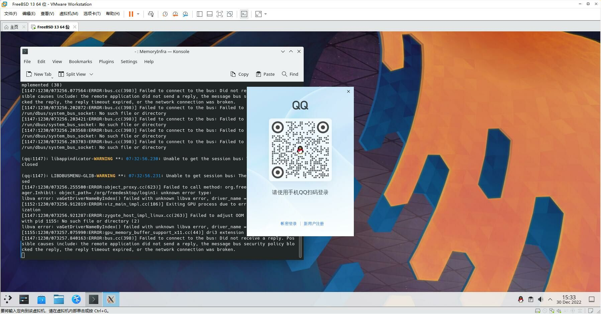
注意
如果退出后进不去，请加参数
--in-process-gpu执行之即可，即/bin/qq --no-sandbox --in-process-gpu。
第 5.7 节 更换字体
首先提取 C:\Windows\Fonts 里所有的 .ttf 和 .ttc 字体文件。（MacOS 中的字体需要特殊处理，虽然看起来格式都是 .ttf）
为新字体新建一个目录便于管理：
# mkdir -p /usr/local/share/fonts/WindowsFonts
将字体文件复制进 WindowsFonts 即可。
# chmod -R 755 /usr/local/share/fonts/WindowsFonts #刷新权限
# fc-cache
即可。
第 5.8 节 wine
FreeBSD 上的 wine 似乎一直就有问题，无法运行 win32 程序。一直报错 0024:fixme:ntdll:create_logical_proc_info stub。
第 5.9 节 压缩与解压
zip
安装 zip 压缩文件 # pkg install zip，基本系统自带 unzip。
# zip test.zip test # 打包 zip 格式文件
# unzip test.zip # 释放 zip 格式文件
tar/xz
# tar -cvf test.tar test # 打包 tar 格式文件
# tar -xvf test.tar # 释放 tar 格式文件
# tar -zcvf test.tar.gz test # 打包 gzip 格式文件
# tar -zxvf test.tar.gz # 释放 gzip 格式文件
# tar -jcvf test.tar.bz2 test # 打包 bzip2 格式文件
# tar -jxvf test.tar.bz2 # 释放 bzip2 格式文件
# tar -Jcvf test.tar.xz test # 打包 xz 格式文件
# tar -Jxvf test.tar.xz # 释放 xz 格式文件
# xz -z -k test.tar # 打包 xz 格式文件，如不加 -k 参数，命令执行完原文件将被删除
# xz -d -k test.tar.xz # 释放 xz 格式文件，如不加 -k 参数，命令执行完 xz 文件将被删除
7z/7za
FreeBSD 操作系统下，7z 和 7za 命令均通过# pkg install -y 7-zip获取，别安装成了 p7zip。
示例如下：
# 7z a test.7z test # 7z 打包文件
# 7z x test.7z # 7z 释放文件
# 7za a test.7z test # 7za 打包文件
# 7za x test.7z # 7za 释放文件
本章节为基础必备知识
第 6.1 节 UFS
UFS 全称是 Unix File System，即 UNIX 文件系统，基于 UNIX v7。过去，MACOS 也使用该文件系统作为 root 文件系统。目前 FreeBSD 在使用的是 UFS2。Linux 对 UFS 的读写支持也不完整。这个文件系统只能扩大不能被缩小。
注意
UFS 文件系统和手机等设备中使用的 UFS 存储完全不是一回事，那个 UFS 是 Universal Flash Storage（通用闪存存储）的缩写，已经出到 4.0 了。而作为文件系统的 UFS 版本号才是 2。而且手机内部的系统也不可能是 UFS 文件系统，因为基于 Linux 的安卓根本不支持 UFS 这个文件系统，这些设备一般的根文件系统是 ext4（一些新设备是 F2FS）。
第 6.2 节 ZFS
使用建议
- 建议在 8G 及以上的内存机器上使用 ZFS。
- 为了提高机械硬盘随机读能力，可设置
vfs.zfs.prefetch_disable=1。 - 为了避免 ZFS 吃掉太多内存，可设置
vfs.zfs.arc_max="XXX"，例如：1024 M。 - 如果要复制某个文件系统，可以用
zfs send/recv，这样还能通过 ssh 跨网络传输。
以上部分来自网络，更多优化见 ZFSTuningGuide。
ZFS 快照与还原
ZFS 快照类似于虚拟机快照。
- 创建快照
默认创建分区（Auto ZFS）如下：
root@ykla:/home/ykla # zfs list
NAME USED AVAIL REFER MOUNTPOINT
zroot 1.72G 440G 96K /zroot
zroot/ROOT 1004M 440G 96K none
zroot/ROOT/default 1004M 440G 1004M /
zroot/tmp 104K 440G 104K /tmp
zroot/usr 760M 440G 96K /usr
zroot/usr/home 128K 440G 128K /usr/home
zroot/usr/ports 96K 440G 96K /usr/ports
zroot/usr/src 759M 440G 759M /usr/src
zroot/var 628K 440G 96K /var
zroot/var/audit 96K 440G 96K /var/audit
zroot/var/crash 96K 440G 96K /var/crash
zroot/var/log 148K 440G 148K /var/log
zroot/var/mail 96K 440G 96K /var/mail
zroot/var/tmp 96K 440G 96K /var/tmp
快照 zroot（经测试，在上述默认分区下代表快照整个 ZFS 文件系统，-r 即递归创建快照，test 是随便起的名字）：
root@ykla:/home/ykla # zfs snapshot -r zroot@test
root@ykla:/home/ykla # zfs list -t snap
NAME USED AVAIL REFER MOUNTPOINT
zroot@test 0B - 96K -
zroot/ROOT@test 0B - 96K -
zroot/ROOT/default@test 0B - 7.18G -
zroot/tmp@test 0B - 176K -
zroot/usr@test 0B - 96K -
zroot/usr/home@test 0B - 31.1M -
zroot/usr/ports@test 0B - 1.98G -
zroot/var@test 0B - 96K -
zroot/var/log@test 0B - 444K -
root@ykla:/home/ykla # ls /usr/ports/
CHANGES archivers/ emulators/ misc/ textproc/
CONTRIBUTING.md astro/ finance/ multimedia/ ukrainian/
COPYRIGHT audio/ french/ net-im/ vietnamese/
GIDs base/ ftp/ net-mgmt/ www/
INDEX-13 benchmarks/ games/ net-p2p/ x11-clocks/
Keywords/ biology/ german/ net/ x11-drivers/
MOVED cad/ graphics/ news/ x11-fm/
Makefile chinese/ hebrew/ polish/ x11-fonts/
Mk/ comms/ hungarian/ ports-mgmt/ x11-servers/
README converters/ irc/ portuguese/ x11-themes/
Templates/ databases/ japanese/ print/ x11-toolkits/
Tools/ deskutils/ java/ russian/ x11-wm/
UIDs devel/ korean/ science/ x11/
UPDATING distfiles/ lang/ security/
accessibility/ dns/ mail/ shells/
arabic/ editors/ math/ sysutils/
root@ykla:/home/ykla # rm /usr/ports/
- 还原快照
还原时不能递归还原快照，必须挨个还原（如果你有更好的方案请告诉我们,网络上有一些脚本可用）：
与虚拟机快照有所不同，在缺省情况下，zfs rollback 命令无法回滚到除最新快照以外的快照（参考手册），除非使用r，但这会删除该快照创建后的所有快照。
root@ykla:/home/ykla # zfs rollback -r zroot@test
root@ykla:/home/ykla # zfs rollback -r zroot/ROOT@test
root@ykla:/home/ykla # zfs rollback -r zroot/ROOT/default@test
root@ykla:/home/ykla # zfs rollback -r zroot/tmp@test
root@ykla:/home/ykla # zfs rollback -r zroot/usr@test
root@ykla:/home/ykla # zfs rollback -r zroot/usr/home@test
root@ykla:/home/ykla # zfs rollback -r zroot/usr/ports@test
root@ykla:/home/ykla # zfs rollback -r zroot/var@test
root@ykla:/home/ykla # zfs rollback -r zroot/var/log@test
- 销毁快照
销毁快照（销毁的时候可以使用r递归销毁）：
root@ykla:/home/ykla # zfs destroy -r zroot@test
root@ykla:/home/ykla # zfs list -t snap
no datasets available
root@ykla:/home/ykla #
snapshot在命令中可以缩写为snap。
启动环境
什么是启动环境？用 snapshot 和 rollback 结合，相当于在一条时间上线进行跳转。启动环境相当于一条时间线，复制一个启动环境相当于再造一条时间线(复制之后两个启动环境互相独立)，两个启动环境间的切换是两条时间线的穿越（或者说平行空间的穿越）。默认安装中 zroot/ROOT/default 是默认的启动环境。
# zfs snap zroot/ROOT/default@new # 建一个 zfs 快照
# zfs clone zroot/ROOT/default@new zroot/ROOT/new # 用刚建的快照复制一个镜像
复制的镜像可以作为一个启动环境，可以用bectl工具查看可用的启动环境
# bectl list
BE Active Mountpoint Space Created
0915 - - 4.00M 2023-09-19 19:44
13.2-RELEASE-p2_2023-09-13_141111 - - 29.0M 2023-09-13 14:11
new - - 432K 2023-09-20 15:17
default NR / 40.8G 2023-04-10 10:06
其中 Active 列中 N 表示当前使用环境，R 表示下次启动时使用的环境。bectl 工具可以改变下次使用的启动环境（在启动 FreeBSD 时，启动菜单里选 8，也可以改变启动环境）
bectl activate new
Successfully activated boot environment new
再次用 bectl list 查看，观察 Active 列的变化
bectl list
BE Active Mountpoint Space Created
0915 - - 4.00M 2023-09-19 19:44
13.2-RELEASE-p2_2023-09-13_141111 - - 29.0M 2023-09-13 14:11
new R / 2.84M 2023-09-20 15:17
default N - 40.8G 2023-04-10 10:06
重启 FreeBSD （启动菜单里选择 new 启动环境，或如上用 bectl activate new 切换到 new 启动环境），用 df 观察，挂载的根目录的文件系统已经是 zroot/ROOT/new
# df
Filesystem 1K-blocks Used Avail Capacity Mounted on
zroot/ROOT/new 110611616 42612156 67999460 39% /
devfs 1 1 0 100% /dev
/dev/gpt/efiboot0 266176 1872 264304 1% /boot/efi
fdescfs 1 1 0 100% /dev/fd
切换回 zroot/ROOT/default 启动环境，在启动菜单里选择 default 启动环境，或如上用 bectl activate default 切换到 default 启动环境
用法扩展：可以把一个启动环境升级为 FreeBSD 14，实现 13、14 多版本共存。
参考文献：
FreeBSD on zfs 的 zpool 升级
13.2 升级 14.0 ，zpool 版本有升级。
此处假定已经用 freebsd-update 从 13.2 升级到 14.0。
开始前的提醒：准备好 livecd 以应对意外，livecd 要 14.0 及以上的，13.2 不支持（不能访问） 14.0 的 zfs
查看 zpool 状态：
root@u13t14 # zpool status
pool: zroot
state: ONLINE
status: Some supported and requested features are not enabled on the pool.
The pool can still be used, but some features are unavailable.
action: Enable all features using 'zpool upgrade'. Once this is done,
the pool may no longer be accessible by software that does not support
the features. See zpool-features(7) for details.
config:
NAME STATE READ WRITE CKSUM
zroot ONLINE 0 0 0
ada0p3 ONLINE 0 0 0
errors: No known data errors
未升级前不能使用所有 zfs 新功能，下面进行升级：
root@u13t14 # zpool upgrade zroot
This system supports ZFS pool feature flags.
Enabled the following features on 'zroot':
edonr
zilsaxattr
head_errlog
blake3
block_cloning
vdev_zaps_v2
Pool 'zroot' has the bootfs property set, you might need to update
the boot code. See gptzfsboot(8) and loader.efi(8) for details.
重写引导（仅非 EFI 引导需要）
此处提示重要
bootfs 属性是在 zfs 上引导 FreeBSD 的重要标志，不理睬这个提示可能没事，但出了问题就不能引导系统，建议按提示重写
boot code(为什么这么建议？因为我炸了)。如果你没有 freebsd-boot 分区就不需要以下操作。
查看分区信息：
root@u13t14 # gpart show
=> 40 33554352 ada0 GPT (16G)
40 1024 1 freebsd-boot (512K)
1064 984 - free - (492K)
2048 4194304 2 freebsd-swap (2.0G)
4196352 29356032 3 freebsd-zfs (14G)
33552384 2008 - free - (1.0M)
找到 freebsd-boot 类型分区，这里序号为 1，对应下面命令中 -i 选项，接着重写 boot code
root@u13t14 # gpart bootcode -p /boot/gptzfsboot -i 1 ada0
partcode written to ada0p1
可再次查看 zpool 状态：
root@u13t14 # zpool status
pool: zroot
state: ONLINE
config:
NAME STATE READ WRITE CKSUM
zroot ONLINE 0 0 0
ada0p3 ONLINE 0 0 0
errors: No known data errors
注意事项
- ZFS 并不使用
/etc/fstab，但是 EFI、Swap 仍然使用。
第 6.3 节 磁盘扩容
扩容方法
请注意 ZFS 和 UFS 都只能扩大不能缩小！
gpart show
root@freebsd:~ # gpart show
=> 3 41943035 da0 GPT (20G)
3 122 1 freebsd-boot (61K)
125 66584 2 efi (33M)
66709 2097152 3 freebsd-swap (1.0G)
2163861 10486633 4 freebsd-ufs (5.0G)
12650494 29292544 - free - (14G)
查看系统盘大小只有 5G，显示 da0 只有这一个盘。
- 执行扩容命令，
da0可从gpart show执行后查看到具体名称
警告 如果你使用的是 GPT 分区表，上边的扩容操作（在虚拟机或云服务器上的）会破坏 GPT 分区表，所以需要先恢复之：
# gpart recover da0执行后下面步骤相同。
i 为要扩容的分区，这里扩容 / 分区 freebsd-ufs。
root@freebsd:~ # gpart resize -i 4 da0
da0p4 resized
- 启动
growfs服务，自动完成扩展
root@freebsd:~ # service growfs onestart
Growing root partition to fill device
da0 recovering is not needed
da0p4 resized
growfs: no room to allocate last cylinder group; leaving 7.7MB unused
super-block backups (for fsck_ffs -b #) at:
11544384, 12827072, 14109760, 15392448, 16675136, 17957824, 19240512, 20523200, 21805888, 23088576, 24371264,
25653952, 26936640, 28219328, 29502016, 30784704, 32067392, 33350080, 34632768, 35915456, 37198144, 38480832
- 用
df -h命令查看结果。
root@freebsd:~ # df -hl
Filesystem Size Used Avail Capacity Mounted on
/dev/gpt/rootfs 18G 4.8G 12G 29% /
devfs 1.0K 0B 1.0K 0% /dev
/dev/gpt/efiesp 32M 651K 31M 2% /boot/efi
tmpfs 20M 4.0K 20M 0% /tmp
tmpfs 32M 156K 32M 0% /var
第 6.4 节 NTFS 的挂载
- 安裝 ntfs-3g 软件
# pkg install sysutils/fusefs-ntfs - 把你的 ntfs 格式的硬盘或 U 盘插入计算机。这时候你会看到它的设备名，例如
da0。 - 修改
rc.conf
# sysrc kld_list+="fusefs"
永久性挂载，修改 fstab 自动挂载
为了开机自动挂载，修改添加
# ee /etc/fstab
加入：
/dev/da0s1 /media/NTFS ntfs rw,mount_prog=/usr/local/bin/ntfs-3g,late 0 0
手动挂载
# ntfs-3g /dev/da0s1 /media/NTFS -o rw,uid=1000,gid=1000,umask=0
如果不知道哪个磁盘分区是 NTFS，可以用命令来查看
# fstyp /dev/da0s1
注意：如果报错，尝试删除休眠文件：
# ntfs-3g /dev/da0s1 /mnt/NTFS -o remove_hiberfile
如果还是有问题：
# ntfsfix /dev/da0s1
然后重新挂载。
详细参数见 ntfs-3g manpage。如果无法挂载请先关闭 windows 的休眠，然后重启几次。
第 6.5 节 SWAP 交换分区的设置
如果在安装系统的时候并未设置 swap 即交换分区，那么只能通过 dd 生成一个交换分区文件或 ZFS 卷来实现了。因为无论是 UFS 还是 ZFS 都是不支持缩小文件系统分区的。
警告
本节操作可能会影响到崩溃转储。
传统的 dd 单个文件
dd 一个 大小为 1GB 的 swap 文件（1G=1024MB，要更多就做个计算题）：
# dd if=/dev/zero of=/usr/swap0 bs=1M count=1024
设置权限为 600，即只有拥有者有读写权限。
# chmod 0600 /usr/swap0
如果要立即使用：
# mdconfig -a -t vnode -f /usr/swap0 -u 0 && swapon /dev/md0
为了重启后仍然有效，还需要往 /etc/rc.conf 中加入
swapfile="/usr/swap0"
使用 ZFS 卷充当 swap
# zfs create -V 8G zroot/swap
# swapon /dev/zvol/zroot/swap
以上，参数 -V 创建 zfs 卷而不是 zfs 文件系统。zfs 默认的名字就是 zroot。
写入 /etc/fstab 开机时自动挂载：
/dev/zvol/zroot/swap none swap sw
第 6.6 节 Ext 2/3/4 等文件系统
EXT 文件系统
请注意：此处应该安装 fusefs-ext2（同时支持 EXT2/3/4）而非 fusefs-ext4fuse，因为后者是只读且被废弃的。
- 安装 fusefs-ext2
# pkg install fusefs-ext2
-
加载
打开
/etc/rc.conf，在kld_list一栏里添加 ext2fs，结果可能如kld_list="ext2fs i915kms" -
重启后，挂载。
对于用户名为
XiaoMing的账号，可如下操作：
$ cd ~
$ mkdir media
$ cd media
$ mkdir first
# mount -t ext2fs /dev/da0sX /home/XiaoMing/media/first/
提示：上式不一定是 da0sX（X 为对应的数字），可通过 # gpart list 命令查看硬盘名。
- 卸载硬盘
# umount /home/XiaoMing/media/first/
Brtfs/XFS 文件系统
未经测试
# pkg install fusefs-lkl
本章节为基础必备知识
第 7.1 节 HTTP 代理
示例：V2ray 或 clash 开启允许局域网连接。然后按照具体配置可能如下：
首先查看使用的 shell
$ echo $SHELL
注意
本文中的
192.168.X.X:7890均非实际参数，以实际为准，复制粘贴是不会生效的！
HTTP_PROXY 代理
- 如果使用的是
sh,bash,zsh
环境变量 HTTP_PROXY 一定要是大写！小写不生效！
设置：
# export HTTP_PROXY=http://192.168.X.X:7890
取消：
# unset HTTP_PROXY
- 如果使用的是
csh
设置：
# setenv http_proxy http://192.168.X.X:7890
取消：
# unsetenv http_proxy
Git 代理
- 如果使用的是
sh,bash,zsh：
设置：
# git config --global http.proxy http://192.168.X.X:7890
# git config --global https.proxy http://192.168.X.X:7890
取消：
# git config --global --unset http.proxy
# git config --global --unset https.proxy
浏览器配置代理
chromium 本身并没有在例如 ~/.config 下的配置文件这种东西。亦没有可添加环境变量参数用于指定默认代理服务器。不过可以添加启动参数（Options）。
如：
--proxy-server="<IP地址>:<端口>"
例：
$ chrome --proxy-server="127.0.0.1:1234" (终端启动)
默认是 http 协议，如果你的代理程序使用 sock:
--proxy-server="socks://<IP地址>:<端口>"
socksv4:
--proxy-server="socksv4://<IP地址>:<端口>"
- 在图形界面下让 chromium 默认使用代理打开：
找到你的桌面环境为 chromium 创建的 desktop 文件，一般在 ~/.local/share/applications/ 这个位置。
$ ee chromium-browser.desktop # 使用你喜欢的编辑器打开上述目录下的 chromium desktop 文件
找到 Exec=chrome %U 这行 在其后加入上列你需要的参数。
Comment[zh_CN]=Google web browser based on WebKit
Comment=Google web browser based on WebKit
Encoding=UTF-8
Exec=chrome %U
GenericName[zh_CN]=
......
例:
Exec=chrome %U --proxy-server="192.168.2.163:20172"
单独为 Firefox 配置代理
因 Firefox 在 Windows GNU/linux Macos 以及 BSD 的所有客户端的浏览器设置页面>网络设置选项卡中均有 GUI 配置代理的模块，故此节不再赘述。
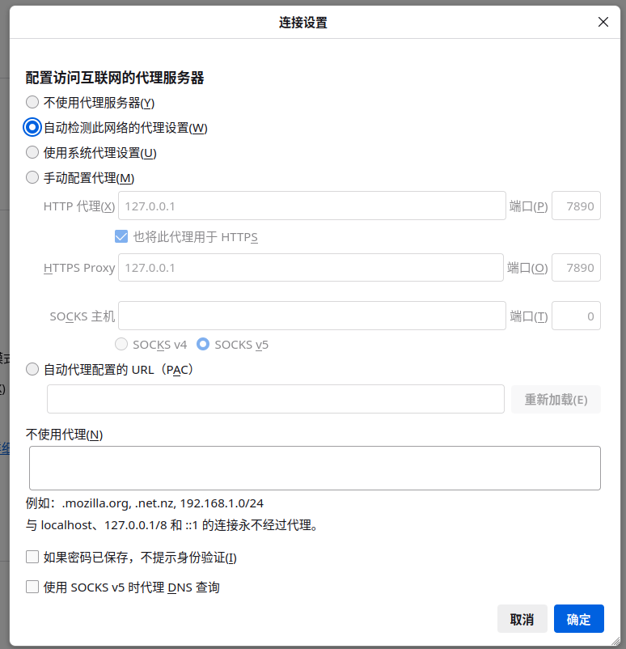
参考资料
第 7.2 节 V2ray
安装 v2ray
执行命令：
# pkg install v2ray
也可安装 xray-core：
# pkg install xray-core
这两个代理配置基本相同，配置文档可以在各自的官方文档找到，xray 完全可以参考 v2ray 的配置方法。
启动软件
如果事先有代理客户端可以把客户端节点的配置导出来，复制到 FreeBSD，假设导出的文件名为 config.json 然后执行：
$ v2ray -c config.json
如果用 xray-core，可执行：
$ xray -c config.json
这个时候软件应该启动成功了。
配置软件代理
这个时候可打开config.json,找到对应的inbounds属性，inbounds是一个数组，里面每个元素代表了入站接口配置，有地址和端口号，代理方式。在需要代理的软件内部设置成这里对应的地址和端口号。
比如其中一个入站接口protocol是 http，listen 是127.0.0.1, port是10809，假如这里需要火狐浏览器走代理，可以在浏览器设置里找到，网络-代理服务器，设置 http 代理地址就设置为127.0.0.1,端口为10809。同理 socks 代理也可以参考此方法设置。
大部分软件代理设置方式不同。比较混乱，对于桌面软件需要自行设置对应的代理服务器。终端命令，如果需要走代理就比较简单了。大部分终端命令，都会寻找HTTP_PROXY、HTTPS_PROXY、ALL_PROXY 这三个环境变量，根据这三个环境变量的值设置对应代理。
下面的命令适用于 sh、bash、zsh：
$ export HTTP_PROXY="http://127.0.0.1:10809" #设置 http 代理
$ export HTTPS_PROXY="http://127.0.0.1:10809"
$ export ALL_PROXY="socks5://127.0.0.1:10808" #设置 socks 代理
设置完成后，在火狐浏览器中浏览网页，观察 v2ray 输出的日志，就可以看到浏览器流量走了代理。终端命令也走了代理，但是一些命令根据环境变量设置代理，请自行查找对应软件的设置方法。
代理分流
有些网址是不需要走代理服务器的，比如境内的网站，本地网站之类的。这个需要对流量做一个分流，一部分流量需要代理，一部分流量需要走直连等方式。
打开 config.json，找到对应的 routing 属性，下面有个 rules 子属性，这里面就用来配置 v2ray 的流量分流方式。rules 里面可以配置不同的规则，每个规则有个 ip 属性，或者 domain 属性。代理的流量，是有网址，和 ip 的，如果 ip 或者网址匹配了其中一个规则，v2ray 会根据 outboundTag 属性，把流量转发到对应的 outbounds 位置，比如 outbonds 中，有 tag 为 proxy（代理）, direct（直连）, block。所以就可以把想要分流的网址 ip 写到对应的规则里就行了。这里可参考对应的 v2ray 文档。实际上在 v2ray 客户端上导出配置文件时，也默认导出了对应的分流规则。
v2ray 也事先给了geosite.dat、geoip.dat,两个资源文件，geosite.dat里面分类保存而来各个网址，geoip.dat分类保存了各个 ip。资源文件路径，可以通过 V2RAY_LOCATION_ASSET 环境变量设置，v2ray 可以自动查找路径下的geosite.dat和geosite.ip文件。对于 xray 是使用这个XRAY_LOCATION_ASSET环境变量设置资源路径。
比如直连规则下面配置可设置 geosite 中 cn 网址直连：
{
"domain": [
"geosite:cn"
],
"outboundTag": "direct",
"type": "field"
},
v2ray 社区给的 cn 网址直连网址不太全，分类也比较少，可自行在 github 上找社区整理的 geosite, geoip 文件，里面也详细的说明了白名单配置模式，黑名单配置模式。
第 7.3 节 Clash
Clash 在 ports 中就有提供。而且在作者的项目中提供了最新版本 net/clash
使用软件包安装：
# pkg install net/clash
即可完成安装。
如果觉得麻烦可以在 Linux 兼容层中使用，FreeBSD 网络一样可受其控制。
第 7.4 节 OpenVPN
OpenVPN 在软件包中就有提供。
# pkg install openvpn
即可完成安装。
配置方法请参考 ：
第 7.5 节 Wireguard
WireGuard 是一个极其简单而又快速的现代 VPN，采用了最先进的加密技术。它的目标是比 IPsec 更快、更简单、更精简、更有用，同时避免了大量的头痛问题。它打算比 OpenVPN 的性能要好得多。WireGuard 被设计成一个通用的 VPN，可以在嵌入式接口和超级计算机上运行，适合于许多不同的情况。它最初是为 Linux 内核发布的，现在是跨平台的（Windows、macOS、BSD、iOS、Android），可广泛部署。它目前正在大力发展，但已经被认为是业内最安全、最容易使用和最简单的 VPN 解决方案。但不适合国内情况。
推荐 FreeBSD 13，安装：
# pkg install wireguard
本章节为基础必备知识
第 8.1 节 sudo
安装
OpenBSD 认为该软件漏洞太多，自行开发了 doas（FreeBSD 也可以用）。daos 教程在 26.2 节
FreeBSD 基本系统默认不自带 sudo 命令，需要使用 root 权限自行安装：
# pkg install sudo
sudo 免密码
在 /usr/local/etc/sudoers.d/ 下新建两个文件 username（需要免密码的用户）和 wheel：
- 文件
username内容如下：
%admin ALL=(ALL) ALL
- 文件
wheel内容如下：
多加一行，使用 sudo 时不需要输入密码：
%wheel ALL=(ALL) NOPASSWD:ALL
故障排除
xxx Is Not in the Sudoers File. This Incident Will Be Reported
应当在 sudoers 中加入一句话来解决这个问题：
使用 ee 打开 sudoers：
# ee /usr/local/etc/sudoers
找到 root ALL=(ALL:ALL) ALL 这行，一般是在第 94 行。在这行下面加一句：
你的用户名 ALL=(ALL:ALL) ALL
然后保存退出即可。
第 8.2 节 添加用户
示例：创建一个普通用户（用户名为 ykla），并将其添加到 video 分组：
# adduser -g video -s sh -w yes
# Username: ykla
示例：创建一个名为 test 的用户，并添加其到 video 组，设置其默认 shell 是 csh：
root@ykla:/ # adduser
Username: test #用户名
Full name: #全名，可留空
Uid (Leave empty for default): # UID 设置，可留空
Login group [test]: #登录组
Login group is test. Invite test into other groups? []: video #设置要加入的组，多个用空格隔开，可留空
Login class [default]: #登录分类，可留空
Shell (sh csh tcsh git-shell bash rbash nologin) [sh]: csh #手动设置默认 shell，否则 shell 为 sh
Home directory [/home/test]: #指定家目录
Home directory permissions (Leave empty for default): #指定家目录权限
Use password-based authentication? [yes]: #是否使用密码
Use an empty password? (yes/no) [no]: #是否空密码
Use a random password? (yes/no) [no]: #是否随机密码
Enter password: #输入密码
Enter password again: #重复输入密码
Lock out the account after creation? [no]: #锁定账号？
Username : test
Password : *****
Full Name :
Uid : 1002
Class :
Groups : test video
Home : /home/test
Home Mode :
Shell : /bin/csh
Locked : no
OK? (yes/no): yes #检查有错误否
adduser: INFO: Successfully added (test) to the user database.
Add another user? (yes/no): no #还需要创建另一个账号吗？
Goodbye!
第 8.3 节 组
在 FreeBSD 中，用户和组统一用 pw 命令管理：
创建一个 admin 分组，并添加 ykla 和 root 两位用户：
# pw groupadd admin
# pw groupmod admin -m ykla root
创建一个 wheel 组，只添加 root 用户：
# pw groupadd wheel
# pw groupmod wheel -m root
从 admin 组里移除用户 ykla：
# pw groupmod admin -d ykla
删除 admin 组：
# pw groupdel admin
admin 和 wheel 权限的区别：
admin，具有管理系统的权限（sudo 的默认配置如此），可以使用sudo命令。wheel，超级管理员权限，可以任意修改系统（该名称来源于俚语 big wheel，意为大人物）。
用 pw 命令管理用户和组操作系统用户，或许叫账号更恰当，是操作人员登陆操作系统的凭证，如前面的新建用户；
而操作系统组，也可以简单理解为角色，限制了操作系统用户的基础权限。
子命令
useradd命令，用于新建用户，常用参数：
-u，指定 uid，不指定则由操作系统根据已存在的 uid 自动生成。
在某些情况下，例如从测试场推送文件到生产环境，由于 uid 不同，可能导致系统认为文件归属不同用户，从而导致错误，这种情况事先指定统一的 uid 会好些。
-c，注释，也可以理解为用户全名，登录桌面后显示的用户名即注释
-d，指定主目录，不指定则默认 /home/新建用户名，如 '/home/ykla'
-g，指定起始组，或者说指定主要角色，如果不指定则默认为与新建用户同名的组
-G，指定附加组，不指定就没有
-m，指定创建用户同时创建主目录，不指定则默认不创建主目录
-s，指定用户登陆后的 shell 环境，不指定则使用 /bin/sh，FreeBSD 建议指定 /bin/csh，如果想禁止用户登陆，可以指定 /usr/sbin/nologin
-h，指定输入设备以非交互状况下设置密码，通常设置参数为 0，代表 stdin，即系 统的标准输入
示例：
# pw useradd test1 #创建用户 test1，uid 系统默认，test1 组，登陆环境/bin/sh，主目录未创建
# pw useradd test2 -u 1200 -m -d /tmp/test -g test1 -G wheel -s csh -c test2 #创建用户 test2，uid 为 1200，创建主目录，主目录为/tmp/test，test1 组，有管理员权限，登陆环境/bin/csh，全名 test2
# echo password | pw useradd test3 -h 0 #创建用户 test3，同时设置密码为 password
usermod命令，用于修改用户信息，常用参数：
-l，为用户改名 其他参数参考 useradd 子命令。
示例：
# pw usermod test1 -G wheel #为用户 test1 增加管理员权限
# pw usermod test1 -l myuser #用户 test1 改名为 myuser
# echo password | pw usermod test2 -h 0 #修改用户 test2 密码为 password
userdel命令，用于删除用户，常用参数：
-r，删除用户同时删除用户主目录及所有相关信息，不使用该参数则信息保留，仅删除用户
示例：
# pw userdel test2 -r
usershow命令，用于显示用户信息，
示例：
# pw usershow test2
usernext命令，返回下一个可用的 uid，
示例：
# pw usernext
lock命令，锁定账号，锁定后账号无法登录使用，
示例：
# pw lock test2
unlock命令，解锁账号，解锁后账号可以正常使用，
示例：
# pw unlock test2
groupadd命令，用于新建组，常用参数：
-g，指定 gid，不指定则由操作系统根据已存在的 `gid` 自动生成
-M，指定组成员列表，多个用户用逗号隔开
示例：
# pw groupadd test -g 1200 #创建组 test，gid 为 1200，注意，gid 与 uid 不是一回事
# pw groupadd test5 -M test1,test2 #创建组 test5，成员有 test1 和 test2
groupmod命令，用于修改组信息，常用参数：
-g，指定新的 gid
-l，为组改名
-M，替换现有组成员列表，多个用逗号隔开
-m，为现有组成员列表增加新的成员
其他参数参考 groupadd 命令。
示例：
# pw groupmod test -g 1300 #修改 test 组的 gid 为 1300
# pw groupmod test -l mygroup 组 test 改名为 mygroup
# pw groupmod test5 -M test1 #设置组 test5 的成员为 test1
# pw groupmod test5 -m test3 #为组 test5 增加成员 test3
groupdel命令，用于删除组，
示例：
# pw groupdel mygroup
groupshow命令，用于显示组信息，
示例：
# pw groupshow test
groupnext命令，返回下一个可用的gid，
示例：
# pw groupnext
其他用户管理命令
adduser命令，用于新建用户，与pw相比，useradd的区别在于该命令是交互式的，安装操作系统时自建的用户，就是基于该命令创建的。rmuser命令，用于删除用户，与adduser命令一样，也是交互式的。不过该命令带-y参数，并允许列出用户列表，
示例：
# rmuser -y test1 test2 #同时删除用户 test1 和 test2，
-y 参数用于省略询问步骤
chpass命令，以vi编辑器方式打开并修改指定用户信息，如不指定用户则默认为当前用户。
常用参数： -s，用于登录环境
示例：
# chpass -s csh test1 # 更换用户 test1 的登陆环境为 /bin/csh
# chpass # 以 vi 方式打开当前用户信息进行修改
# passwd # 修改用户密码，如不指定用户则默认为当前用户。
示例： passwd 用户 #回车后根据系统提示设置用户密码
id命令，查看用户id信息，包括用户id和起始组id，
示例：
# id # 查看当前用户 id 信息
# id test1 # 查看用户 test1 的 id 信息
whoami命令，查看当前用户是谁。who命令，查看当前用户登陆信息。
第 8.4 节 用户权限
FreeBSD 文件访问权限可以用 10 个标志位来说明，10 个标志位由 4 部分组成：
第一部分是第 1 位，用 d 表示目录，- 表示普通文件，l 表示链接，b 表示块设备文件，p 表示管道文件，c 表示字符设备文件，s 表示套接字文件；
第二部分是第 2-4 位，用于标识文件所属用户对文件的访问权限，用 rwx 表示读、写、 执行权限，无权限就写成 -；
第三部分是第 5-7 位，用于标识文件所属组成员对文件的访问权限，标识参考第二部分。
第四部分是第 8-10 位，用于标识文件其他用户对文件的访问权限，标识参考第二部分。
读、写、执行除了用 rwx 表示，也可以对应成数字 4、2、1，没有权限用 0，每部分的 数字相加后，组合在一起，就是 3 位数字的表示方式。
如：
| 字符标识权限 | 数字标识权限 | 说明 |
|---|---|---|
| -rwxrwxrwx | 777 | 所有人都可读、写、执行的普通文件 |
| drw------- | 600 | 这是一个目录，只有所属用户可以读、写 |
| -rwxr-xr-x | 755 | 普通文件，所属用户有读、写、执行权限，同组用户和其他用户只能读取或执行，不可写入 |
- ls 命令，列出文件，常用参数：
-l，列表显示文件信息，信息中包含权限、属主、文件大小、修改日期和时间等信息，也可以直接用 ll 命令
-a，隐藏文件也要显示
示例：
# ls -l -a #列表显示包括隐藏文件在内的所有文件
# ll -a #与上例效果相同
# ls -l /tmp/a.log #列表显示 /tmp/a.log 文件
- chmod 命令，修改文件访问权限，有两种操作方式。
一种是操作符方式，如：
# chmod a+x t.sh 在“a+x”中:
第一位表示操作对象，u 是所属用户，g 是所属组，o 是其他用户，a 则表示所有用户，不写按系统默认操作;
第二位是操作符，+ 是添加权限，- 是去除权限;
第三位是权限模式，rwx 分别表示读、写、执行，还有 s表示文件执行时把进程属主或组置成与文件属主或组一致，这种方式使用起来比较直观。
另一种是数字方式，如： chmod 750 t.sh
其中 7 表示所属用户拥有读、写、执行的权限，同组用户有读和执行的权限，其他用户则没有任何权限，这种方式使用起来比较方便。
然后 chmod 还有一个重要的参数：
-R，递归赋权
示例：
# chmod -R 777 /tmp #/tmp 目录下所有文件将允许任何用户读、写、执行
# chmod -R a+rwx /tmp #/tmp 目录下所有文件将允许任何用户读、写、执行
3.chown 命令，修改文件的属主，包括所属用户和所属组。
常用参数：
-R，递归赋权
示例：
# chown test1 t.sh #修改 t.sh 属主为用户 test1
# chown test1:test t.sh #修改 t.sh 属主为用户 test1、组 test
# chown -R test1:test /tmp #修改/tmp 目录下所有文件的属主为用户 test1、组 test
本章节为基础必备知识
第 9.1 节 jail 与 docker 的比较
前文提及过 “Jail 与 byhve 虚拟化，不必配置底层虚拟化，节约系统资源。” FreeBSD 的 docker 处于破损状态，需要志愿者来维护。
FreeBSD docker 现状
FreeBSD 的 docker 上次开发还是在 2015 年。后来在 2019 年 3 月 docker-freebsd 由于编译不通过而在 2020 年 1 月初被移除。当时 docker 还没有易名为 moby。docker 改名的原因和百度云改名百度网盘是一样的。
https://www.freshports.org/sysutils/docker-freebsd/
当时项目地址：https://github.com/kvasdopil/docker
当时的 docker 依赖 zfs 与 jail。似乎还利用了 Linux ABI。
在 docker 2015 编译错误后再无人接盘开发。此后有一些人尝试，但是终究没有成功。直到今年 2 月初有人重新接盘自己以前的努力开始继续。
大步骤计划：
- 从一个基于 moby 的新 port 开始（已完成）
- hack 它以使它能编译 (已完成)
- 运行时测试（“某些东西工作”）。
- 清理补丁/同步上游
目前的工作情况：
- 运行 FreeBSD docker 容器
- 建立 FreeBSD docker 容器（通过 docker 文件）。
- 桥接网络（使用 vnet，自动创建 docker0 桥，分配 IP 并设置 PF nat 规则，很可能还需要很多测试，IP 冲突等等）。
最有可能的是，在我的测试中，除了“尝试是否启动，运行一些命令，退出”之外，没有更多的问题了。
以上的计划和工作情况是该项目作者在两年前写就的。目前该项目被迁移到了 https://codeberg.org/decke/ports 而不再使用 Github。
该作者似乎没有对项目进行进一步说明，所以编译起来会有很多问题，详见 https://codeberg.org/decke/ports/issues/18
至于该项目在 FreeBSD 开发平台的链接则为 https://reviews.freebsd.org/D21570
最后希望有力者能够继续接盘帮助开发。
第 9.2 节 jail 相关术语
第 9.3 节 jail 配置
创建 jail 目录
放入 FreeBSD 基本系统
方案一
# cd /usr/src
# make buildworld # 编译基本系统
# make installworld DESTDIR=/usr/jail/ # 安装到 jail
# make distribution DESTDIR=/usr/jail/ # 或者用
方案二
下载 base.txz 或者从 iso 提取 baes.txz，然后解压到 jail
# tar -xvf base.txz -C /usr/jail/
挂载 devfs 文件系统。(不是必须)
# mount -t devfs devfs /usr/jail/dev
写入 /etc/rc.conf
# sysrc jail_enable="YES"
创建 jail.conf 文件（可以写进 rc.conf 但这样便于管理）
www {
host.hostname =www.example.org; # 主机名
ip4.addr = 192.168.0.10; # IP 地址
path ="/usr/jail"; # jail 位置
devfs_ruleset = "www_ruleset"; # devfs ruleset
mount.devfs; # 挂载 devfs 文件系统到 jail
exec.start = "/bin/sh /etc/rc"; # 启动命令
exec.stop = "/bin/sh /etc/rc.shutdown"; # 关闭命令
}
管理
用 jls 查看在线 jail 信息列表
JID IP Address Hostname Path
3 192.168.0.10 www /usr/jail/www
中英对照
| 英语 | 中文 |
|---|---|
| JID | jail ID |
| IP Address | IP 地址 |
| Hostname | 主机名 |
| Path | jail 路径 |
启动与停止 jail
# service jail start www
# service jail stop www
登录 jail
# jexec 1 tcsh
干净关闭 jail
# jexec 3 /etc/rc.shutdown
升级 jail
# freebsd-update -b /here/is/the/jail fetch
# freebsd-update -b /here/is/the/jail install
ping 与网络
开启 ping
写入 /etc/jail.conf
allow.raw_sockets=1;
allow.sysvipc=1;
网络
创建 /etc/resolv.conf,并编辑
search lan
nameserver 223.5.5.5 #不要写路由器地址
nameserver 223.6.6.6 #不要写路由器地址
删除文件没有权限
# chflags -R noschg directory
第 9.4 节 jail 更新
如果要同时管理多个 jail,那么在更新 jail 的时候就要对每个 jail 单独进行一遍操作，这不仅非常耗时而且相当无聊。通过建立统一的模板，可以让所有 jail 共用一个基础环境，同时拥有各自的可写空间，互不干扰。
本教程将建立以下的目录结构（你也可以自行更改）：
1、/jail/mroot 是模板，是所有 jail 的共用只读部分，在本例中将被挂载到 /jail/www。
2、/jail/skel 是框架，方便创建 jail，本身并不为任何 jail 使用。
3、/jail/www 是 jail www 运行的根目录，也是只读模板的挂载点，本身是个空目录。
4、/jail/www/s 是 jail www 的可写部分的挂载点，也是个空目录。
5、/jail/files/www 是 jail www 的可写部分的实际存放位置，将被挂载到 /jail/www/s。
如果要创建多个 jail，则重复创建数据目录和项目目录，这样所有的 jail 都会共用 /jail/mroot。
本教程需要安装 cpdup
# pkg install cpdup
创建模板目录
# mkdir -p /jail/mroot
# 然后放入基本目录，上边说过不再写
# 将 ports 和源码放入模板
# git clone --depth 1 https://mirrors.ustc.edu.cn/freebsd-ports/ports.git /jail/mroot/usr/ports
# cpdup /usr/src /jail/mroot/usr/src # 需要提前获取源码，且要注意源码对应的版本要与 /jail/mroot 的版本相同
将可写部分连接到可写目录位置
# cd /jail/mroot # cd 到模板目录
# mkdir s # 创建用来做链接的目录
# ln -s s/etc etc
# ln -s s/home home
# ln -s s/root root
# ln -s ../s/usr-local usr/local
# ln -s ../s/usr-X11R6 usr/X11R6
# ln -s ../../s/distfiles usr/ports/distfiles
# ln -s s/tmp tmp
# ln -s s/var var
创建框架目录
# mkdir -p /jail/skel
# mkdir /jail/skel /jail/skel/home /jail/skel/usr-X11R6 /jail/skel/distfiles /jail/skel/portbuild
# 移动可写部分
# mv /jail/mroot/etc /jail/skel
# mv /jail/mroot/usr/local /jail/skel/usr-local
# mv /jail/mroot/tmp /jail/skel
# mv /jail/mroot/var /jail/skel
# mv /jail/mroot/root /jail/skel
使用 etcupdate 安装缺少的配置文件。
# etcupdate -s /jail/mroot/usr/src -d /jail/skel/var/db/etcupdate -D /jail/skel
为 make 创建通用配置文件
# echo “WRKDIRPREFIX?= /s/portbuild” >> /jail/skel/etc/make.conf
创建数据目录
就是复制一份框架
# cpdup /jail/skel /jail/files/www
创建项目目录
# mkdir /jail/www /jail/www/s
创建 fstab
# ee /jail/www.fstab
# 将公共只读系统挂载到项目目录
/jail/mroot /jail/www nullfs ro 0 0
# 将项目数据目录挂载到项目目录
/jail/files/www /jail/www/s nullfs rw 0 0
写入 jail.conf
# 全局部分
exec.start = "/bin/sh /etc/rc";
exec.stop = "/bin/sh /etc/rc.shutdown";
exec.clean;
mount.devfs;
allow.raw_sockets = 1;
allow.sysvipc = 1;
interface = "网卡地址";
# 主机名也可以用变量代替
hostname = "$name.domain.local";
# jail 位置，也可以用变量
path = "/jail/$name";
## ip地址
ip4.addr = 192.168.1.$ip;
## fstab位置
mount.fstab = /jail/$name.fstab;
www {
$ip=2
# #如不使用 fstab,使用
# mount.fstab =""; # 替换全局
}
第 9.5 节 使用 ezjail 管理 jail
参考资料
第 9.6 节 使用 qjail 管理 jail
qjail 是 jail 环境的部署工具，分支自 ezjail 3.1。jail 管理工具有 ezjail、 qjail、 iocage 等。ezjail 在 2015 年更新到 3.4.2 后一直没有更新，2018 年做过一次错误更新，不过好像也不是作者写的。ezjail 的 ports 更新依赖 portsnap，这个现在已经不建议使用了，将被废弃。iocage 可依赖于 zfs 文件系统，使用 ufs 文件系统的并不能使用。qjail 则在这些方面不存在问题。ezjail 并不支持 jail 的 vnet 功能，iocage 和 qjail 则支持。ezjail 和 qjail 使用 sh 编写，iocage 使用 python 编写。
下文中部署的 jail 在概念上结构如下图：
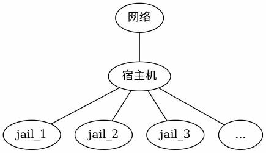
文中会用到 pf 防火墙，使用其它防火墙的可以自行尝试进行防火墙相关配置
预留 jail 的 ip
/etc/rc.conf 文件中写入
cloned_interfaces="lo1" # 克隆出 lo1 ，尽量和宿主机网络配置分开。注意，如果要生成多个端口，也应该在同一行中描述，以空格隔开，而不是另外创建一行，如 cloned_interfaces="lo1 lo2" 。分成多行写，只会有一行生效。
ifconfig_lo1_alias0="inet 192.168.1.0-9" # 宿主机 ip 为 10.0.2.15, 选择该网段是为了和宿主机网段分开，可自行斟酌
运行
# service netif restart
lo1 将获得 10 个 ip 地址，下面将用 1-9 这 9 个 ip 给 jail 使用。
安装 qjail 工具
# pkg install qjail
启用 qjail
# sysrc qjail_enable=YES
部署 qjail 使用的目录结构
使用 qjail 前首先要部署 qjail 使用的目录结构，有两种方式：
从官方镜像站自动下载（可选）
# qjail install
此时 qjail 会从 FreeBSD 官网下载 base.txz 文件，示例输出如下：
root@freebsd:~ # qjail install
resolving server address: ftp.freebsd.org:80
requesting http://ftp.freebsd.org/pub/FreeBSD/releases/amd64/amd64/13.1-RELEASE/base.txz
remote size / mtime: 195363380 / 1652346155
...
从境内镜像站下载（可选）
因境内网络问题，也可以用镜像手动进行，以中国科学技术大学镜像为例（下载文件是注意版本号，qjail 要求文件版本与宿主机一致，这里是 FreeBSD amd64 13.1)
# fetch https:://mirrors.ustc.edu.cn/freebsd/release/amd64/13.1-RELEASE/base.txz
# qjail install base.txz
部署好 qjail 的目录结构后 /usr/jails 目录下会自动生成 sharedfs template archive flavors 四个目录：
-
sharedfs 包含一份只读的操作系统可执行库文件，挂载为 nullfs ，在各 jail 之间共享，以节省存储空间的使用。
-
template 包含操作系统的配置文件，将被复制到每个 jail 的基本文件系统中
-
archive 保存 jail archive 命令产生的存档文件
-
flavors 包含系统风格（ flavors ）和用户创建的自定义风格，其实就是自己定义的配置文件等
部署 jail
# qjail create -n lo1 -4 192.168.1.1 jail1
-n 指定使用 lo1 作为网络接口，-4 指定 ipv4 地址。
生成 jail1 后，/usr/jails/ 目录下对应生成 jail1 目录( /usr/jails/jail1/),保存相应文件。
可以在上面提到的 flavors 目录中建立自己的配置文件以便在部署 jail 时复制到新的 jail 中。
如，新建 /usr/jails/flavors/default/usr/local/etc/pkg/repos/FreeBSD.conf ,那么之后再新建 jail 时，会自动把这个文件复制到对应的 jail 中，即
# qjail create -n lo1 -4 192.168.1.2 jail2
建立 jail2 后，自动建立 /usr/jails/jail2/usr/local/etc/pkg/repos/FreeBSD.conf ,既修改了之后所有 jail 的默认 pkg 镜像。但对应 jail1 并没有生成这个文件，因为生成 jail1 时，还没有在 flavors 目录中写入相应文件。
qjail 基本使用
列出 qjail 管理的 jail
# qjail list
启用 jail
# qjail start # 启动所有 jail
# qjail start jail1 # 启动 jail1
停止 jail
# qjail stop # 停止所有 jail
# qjail stop jail1 # 停止 jail1
重启 jail
# qjail restart # 重启所有 jail
# qjail restart jail1 # 重启 jail1
进入 jail 控制台
# qjail console jail1 # 进入 jail1 控制台
进入 jail 控制台后，此时是 jail 中的 root 帐号（进入 jail 的控制台，不需要输入密码），因 jail 可能开启对外服务，为安全考虑建议设置帐号密码
备份 jail
# qjail archive -A # 备份所有 jail
# qjail archive jail1 # 备份 jail1
从备份中恢复 jail
# qjail restore jail1 # 从备份中恢复 jail1
删除 jail
# qjail delete jail1 # 删除 jail1
# qjail delete -A # 删除所有 jail
更新 jail
下面更新 jail 的部分不针对单个 jail ，而是针对每个 jail ，因为这些文件利用 nullfs 共享一份。
更新 jail 中的基本系统
既上面提到的 sharedfs 中的文件
# qjail update -b
更新 ports
这里有-p（小写） 、 -P（大写）两个选项，-p（小写）使用 portsnap 更新 jail 的 ports tree，-P（大写）使用宿主机的 ports tree 更新 jail 的 ports。如果主机已有 ports，则建议使用 -P（大写），避免两次下载 ports。
# qjail update -P # 这里注意大写
更新系统源代码
# qjail update -S # 大写
更新过程（推荐）
# pkg install gitup
开始更新：
# freebsd-update fetch install
# gitup src
# gitup ports
# qjail stop
# qjail update -b
# qjail update -S
# qjail update -P
# qjail start
jail 设置
qjail 可以用 qjail config 命令对每个 jail 另作设置，运行 qjail config 前须选停用指定的 jail。
qjail config 命令选项较多，这里列出几个常用的，更多的请参考手册页
qjail -- Utility for deployment of jail environments
1 -h
# qjail config -h jail1
快速开启 jail1 的 ssh 服务,新建一个 wheel 组用户，用户名和密码同 jail 名，首次用这个用户登录要求修改密码。也可以在登录 jail 控制台后，自行配置 sshd 服务。
2 -m -M
# qjail config -m jail1
设置 jail1 需手动启动（manual 状态），qjail_enable="YES" 写入 /etc/rc.conf 后在系统启动时会自动启动各个 jail ，设为手动启动后则不会在系统启动时自动启动相应的 jail ，须用 qjail start jailname 启动。
对应小写的 -m 选项，有大写的 -M 选项，作用为关闭手动启动状态，即清除 manual 状态，可以在系统启动时自动启用 jail。qjail 中有大量类似的选项，小写字母的选项启用某个功能，大写字母的选项关闭对应功能。如果下文中同时出现小写和大写的选项就不在过多作出说明。
3 -r -R
# qjail config -r jail1
将 jail1 设为不允许启动（norun 状态），相当于禁用该 jail。
4 -y -Y
# qjail config -y jail1
启用该 jail 的 SysV IPC,在 jail 中安装 postgresql 时，需要打开这个选项，postgresql 运行基于这个功能。
网络设定
这里作个提示，有的教程里会教你用 qjail config -k jailname 打开 raw_sockets 功能来打开外网访问的能力，其实这里是个误解，raw_sockets 只是像 ping 一类的工具需要使用而已，并不是说网络访问一定要打开 raw_sockets 。而且在 jail 中打开 raw_sockets 本身有安全风险，这是 jail 环境默认的一种安全设计。所以除非是你一定要在 jail 中用 ping 一类的工具，不管是用什么方式构建的 jail 都是不建议打开 raw_sockets 功能的。
此时的 jail 还不能连接网络，因为 jail 绑定在 lo1 网络接口上，lo1 并不能直接访问外网，接下来通过 pf 设定网络, 其中 em0 为外网接口
在 /etc/pf.conf 中写入
nat pass on em0 inet from lo1 to any -> em0 # 使 jail 可以访问网络，从 lo1 接口发出的连接通过 nat 转发到 em0
rdr pass on em0 inet proto tcp from any to em0 port 22 -> 192.168.1.1 port 22 # 使宿方机外可以访问指定 jail，端口重定向，把连接到 em0 上22端口上的 tcp 连接重定向到 192.168.1.1 地址（即 jail1 ）的22端口上
# sysrc pf_enable=YES
# service pf start
此时，绑定在 lo1 上的 jail 可以访问宿主机外网络，宿主机外网络可以通过宿主机 22 号端口连接 jail1 的 22 号端口。
示例：部署 postgresql 的 jail
假设已经如上文所述预留 jail ip，并成功运行 qjail install 命令
这里以 postgresql 15 为例，其它版本也适用
宿主机中操作
# qjail create -n lo1 -4 192.168.1.3 postgres
# qjail config -y postgres # 开启 SysV IPC
# qjail start postgres
编辑 /etc/pf.conf
nat pass on em0 inet from lo1 to any ->em0 # 上文已作说明
rdr pass on em0 inet proto tcp from any to em0 port 5432 -> 192.168.1.3 port 5432 # 不建议写下此句，作用为使宿方机外可以访问 jail 中的 postgresql，此处应考虑安全和实际需要开启端口转发，不建议直接向外提供 postgresql 连接
启用 pf
# service pf start
进入名为 postgres 的 jail 的控制台
# qjail console postgres
jail 控制台中的操作
下面命令皆在 jail 控制台下运行，pkg 安装是否使用镜像可自行决定，如果使用镜像可以在 jail 控制台中如同宿主机般进行设置，请参考相关文章。
# pkg install postgresql15-server
# sysrc postgresql_enable=YES
# mkdir -p -m 0700 /var/db/postgres/data15 # 注意版本号
# chown postgres:postgres /var/db/postgres/data15 # 这个目录应属于 postgres 用户
# su postgres # 这里切换到 postgres 用户，注意下面提示符的变化
$ initdb -A scram-sha-256 -E UTF8 -W -D /var/db/postgres/data15
$ exit # 回到 jail root 用户，注意提示符变化
# service postgresql start
这里使用 initdb 而不是使用安装时提示的 /usr/local/etc/rc.d/postgresql initdb 是为了避免之后设置数据库密码时，来回修改 pg_hba.conf 文件，现对选项作简要说明:
-
-A为本地用户指定在 pg_hba.conf 中使用的默认认证方法 -
-E选择模板数据库的编码。 -
-W让 initdb 提示要求为数据库超级用户给予一个口令 -
-D指定数据库集簇应该存放的目录
至此 postgresql 服务已经可以运行
如果在上面的过程中忘记使用 qjail config -y postgres 命令开启 SysV IPC，那么可能会出现下面的错误：
初始化数据库集簇时的错误
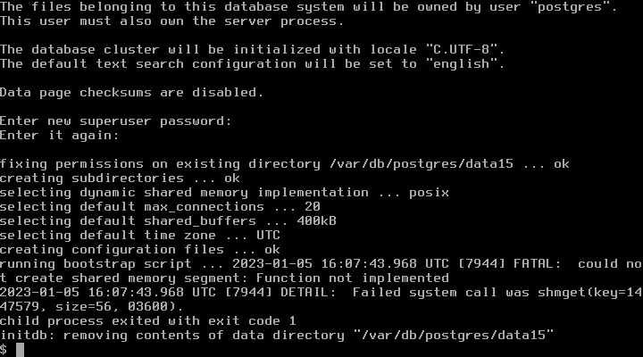
启动 postgresql 时的错误
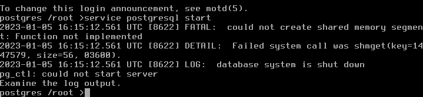
此时在宿主机控制台下执行 qjail config -y postgres 即可修正错误，具体如下：
# qjail stop postgres
# qjail config -y postgres
# qjail start postgres
再次进入 jail 的控制台就可以正常初始化数据库集簇和运行 postgresql 服务了。
本章节为基础必备知识
第 10.1 节 虚拟化简介
虚拟化即在一台电脑上同时运行多个操作系统。FreeBSD 的虚拟化技术是 Bhyve 与 XEN，不支持 Linux 的 KVM。当然了，Jail 与 Docker 也算是虚拟化的一种。
第 10.2 节 安装 Virtual Box
pkg 安装安装的 Virtual Box 会出现若干问题，比如无法加载 vboxdrv 模块等。如果安装后无法启动，请尝试重启计算机，或从命令行运行 Virtual Box。
因此建议使用 ports 进行编译安装：
# cd /usr/ports/emulators/virtualbox-ose
# make BATCH=yes install clean
其他请参考 Handbook。
第 10.3 节 安装 bhyve
参考资料：
注意
我没有找到可正常用于 bhyve 的图形界面前端，这可能意味着这个东西非常难以配置和操作。
第 10.4 节 使用 cbsd 管理 bhyve
# pkg install cbsd
即可完成安装。详见 10.5.
参考资料：
第 10.5 节 使用 bhyve 安装 Windows 10
安装固件与软件
以下教程基于 FreeBSD 13.1 release + Windows 10 22H2。
Windows 10 22H2 原版系统磁力链接：
magnet:?xt=urn:btih:7bcf7952a6c114c25c92cdefc64a35fa4d30cd75&dn=SW_DVD9_Win_Pro_10_22H2_64BIT_ChnSimp_Pro_Ent_EDU_N_MLF_X23-20012.ISO&xl=5953392640
加载内核模块：
只需要这一次，以后 vm-bhyve 会自己加载该模块的。
kldload vmm
首先，安装 UEFI 固件、VNC 与 vm-bhyve：
# pkg install bhyve-firmware vm-bhyve tigervnc-viewer
在 /etc/rc.conf 中指定启动 vm 与虚拟机的位置：
vm_enable="YES"
vm_dir="/home/ykla/vm" #注意该位置，以下操作都会用到
复制模板到虚拟机模板位置：
#cp /usr/local/share/examples/vm-bhyve/* /home/ykla/vm/.templates
创建虚拟交换机，public 是你在模板里指定的，ue0 是我正在上网用的网卡，你需要改成你自己的，否则会创建失败且虚拟机报错：exit with error 4：
# vm switch create public
# vm switch add public ue0
如果创建错了，可以销毁之：
# vm switch destroy public
查看分配的虚拟交换机：
root@ykla:/usr/home/ykla # vm switch list
NAME TYPE IFACE ADDRESS PRIVATE MTU VLAN PORTS
public standard vm-public - no - - ue0
为了在 13.0 之后的 FreeBSD 宿主机中正确使用 xhci 鼠标，应该使用驱动 hms(4)，请在 /boot/loader.conf 中添加：
hw.usb.usbhid.enable=1
usbhid_load="YES"
进一步配置
注意，如果你运行的是比 Windows 10 更早的 Windows 版本，你将需要使用
disk0_opts="sectorsize=512"选项将磁盘扇区大小设置为 512。 当你想在 Windows 系统上安装 Microsoft SQL Server 时，你也必须将磁盘扇区大小设置为 512。
根据模板创建 windows 虚拟机，磁盘占用 50GB：
# vm create -t windows -s 50G winguest
销毁虚拟机的命令:
root@ykla:/usr/home/ykla # vm destroy winguest Are you sure you want to completely remove this virtual machine (y/n)? Are you sure you want to completely remove this virtual machine (y/n)? #这里输入 y 回车即可删除
但是注意该模板是有问题的，需要进行修改如下，文件路径是 /usr/home/ykla/vm/winguest/winguest.conf：
不必疑惑路径问题，
/home/是被软连接到/usr/home/的，是一样的。全新安装的 14 及以上需要注意路径问题。不再是软连接，而是直接使用
/home/。
loader="uefi" #不支持 UEFI 的 windows 不能够启动，例如 XP 操作系统，但是请注意 win7 是支持 UEFI 的
graphics="yes" #指定暂停虚拟机直至 VNC 链接。
xhci_mouse="yes"
cpu=2 #CPU，这个最好多给一些
memory=4G #内存
# put up to 8 disks on a single ahci controller.
# without this, adding a disk pushes the following network devices onto higher slot numbers,
# which causes windows to see them as a new interface
ahci_device_limit="8"
# ideally this should be changed to virtio-net and drivers installed in the guest
# e1000 works out-of-the-box
network0_type="e1000" #开箱即用的虚拟网卡
network0_switch="public" #虚拟交换机
disk0_type="ahci-hd"
disk0_name="disk0.img"
# windows expects the host to expose localtime by default, not UTC
utctime="no" #指定 windows 使用 UTC 时间，避免时间差 8 个小时
graphics_res="1024x768" #指定 VNC 链接的屏幕分辨率，可用数值在下文列出
uuid="af86e094-56da-11ed-958f-208984999cc9"
network0_mac="58:9c:fc:0c:5e:bb"
root@ykla:/usr/home/ykla #
终止虚拟机：
如果虚拟机卡死该命令无效，请自行
kill -9以免影响关机，如果真的阻碍了物理机关机，可以在 tty 按Ctrl+C跳过等待虚拟机，强制关机
root@ykla:/usr/home/ykla # vm stop winguest
Sending ACPI shutdown to winguest
安装系统
通过指定 Windows iso 文件开始正常的安装。当在安装模式下运行时，vm-bhyve 将等待，直到 VNC 客户端连接后再启动客户机。这允许你抓住 Windows 可能显示的“从 CD/DVD 启动“选项。你可以在 vm list 中看到，在这一点上，客户机将显示为锁定：
# vm install winguest Windows.iso
从 VNC 访问 Win10
查看指定的虚拟机状态：
root@ykla:/usr/home/ykla # vm info winguest
------------------------
Virtual Machine: winguest
------------------------
state: stopped
datastore: default
loader: uefi
uuid: af86e094-56da-11ed-958f-208984999cc9
cpu: 2
memory: 4G
network-interface
number: 0
emulation: e1000
virtual-switch: public
fixed-mac-address: 58:9c:fc:0c:5e:bb
fixed-device: -
virtual-disk
number: 0
device-type: file
emulation: ahci-hd
options: -
system-path: /home/ykla/vm/winguest/disk0.img
bytes-size: 53687091200 (50.000G)
bytes-used: 23557898240 (21.940G)
root@ykla:/usr/home/ykla #
查看所有虚拟机状态：
root@ykla:/usr/home/ykla # vm list
NAME DATASTORE LOADER CPU MEMORY VNC AUTO STATE
winguest default uefi 2 4G - No Stopped
打开 tigervnc-viewer 输入 localhost:5900，点击连接，然后按任意键以进入安装过程。
故障排除
有问题先重启一遍自己的物理机。还有问题自己 ifconfig 对比上文看看是不是有了多余的网卡，将其销毁掉。
如果虚拟机一直是 stopped 的状态，检查一下你的网络。
查看网络，这是虚拟机关闭状态下的：
root@ykla:/usr/home/ykla # ifconfig
alc0: flags=8802<BROADCAST,SIMPLEX,MULTICAST> metric 0 mtu 1500
options=c319a<TXCSUM,VLAN_MTU,VLAN_HWTAGGING,VLAN_HWCSUM,TSO4,WOL_MCAST,WOL_MAGIC,VLAN_HWTSO,LINKSTATE>
ether 20:89:82:94:7c:c9
media: Ethernet autoselect
nd6 options=29<PERFORMNUD,IFDISABLED,AUTO_LINKLOCAL>
lo0: flags=8049<UP,LOOPBACK,RUNNING,MULTICAST> metric 0 mtu 16384
options=680003<RXCSUM,TXCSUM,LINKSTATE,RXCSUM_IPV6,TXCSUM_IPV6>
inet6 ::1 prefixlen 128
inet6 fe80::1%lo0 prefixlen 64 scopeid 0x2
inet 127.0.0.1 netmask 0xff000000
groups: lo
nd6 options=21<PERFORMNUD,AUTO_LINKLOCAL>
ue0: flags=8943<UP,BROADCAST,RUNNING,PROMISC,SIMPLEX,MULTICAST> metric 0 mtu 1500
options=8000b<RXCSUM,TXCSUM,VLAN_MTU,LINKSTATE>
ether f8:e2:3b:3f:ea:4c
inet 192.168.31.169 netmask 0xffffff00 broadcast 192.168.31.255
media: Ethernet autoselect (1000baseT <full-duplex>)
status: active
nd6 options=29<PERFORMNUD,IFDISABLED,AUTO_LINKLOCAL>
vm-public: flags=8843<UP,BROADCAST,RUNNING,SIMPLEX,MULTICAST> metric 0 mtu 1500
ether 3a:e1:fa:98:33:b4
id 00:00:00:00:00:00 priority 32768 hellotime 2 fwddelay 15
maxage 20 holdcnt 6 proto rstp maxaddr 2000 timeout 1200
root id 00:00:00:00:00:00 priority 32768 ifcost 0 port 0
member: ue0 flags=143<LEARNING,DISCOVER,AUTOEDGE,AUTOPTP>
ifmaxaddr 0 port 3 priority 128 path cost 20000
groups: bridge vm-switch viid-4c918@
nd6 options=9<PERFORMNUD,IFDISABLED>
root@ykla:/usr/home/ykla #
查看网络，这是虚拟机开启状态下的，会多出来一个 tap0：
tap0: flags=8943<UP,BROADCAST,RUNNING,PROMISC,SIMPLEX,MULTICAST> metric 0 mtu 1500
description: vmnet/winguest/0/public
options=80000<LINKSTATE>
ether 58:9c:fc:10:ff:d6
groups: tap vm-port
media: Ethernet autoselect
status: active
nd6 options=29<PERFORMNUD,IFDISABLED,AUTO_LINKLOCAL>
Opened by PID 2519
可选配置（我没测试过，自己试用）
VNC 配置选项
如果你想让 VNC 监听一个特定的主机 IP 地址，请指定以下选项：
graphics_listen="1.2.3.4"
你也可以选择一个 5900 以外的端口。显然，如果你有多个客户机，需要为每个客户机使用不同的端口号。如果没有指定，我们会自动选择一个可用的端口，从 5900 开始：
graphics_port="5901"
默认情况下，屏幕分辨率被设置为 800x600。要指定一个不同的分辨率，请使用以下选项：
graphics_res="1600x900"
请注意，目前只支持以下分辨率：
1920x1200
1920x1080
1600x1200
1600x900
1280x1024
1280x720
1024x768
800x600
640x480
添加 VirtIO 网络驱动
虽然“e1000”网络适配器开箱即用，允许访客获得网络访问，但建议尽可能使用“virtio-net”设备。有几种安装这些驱动程序的方法。
- 如果机器可以通过 e1000 设备访问互联网，你可以直接在客户机中下载并安装 virtio 驱动。安装完毕后，关闭客户机，在客户机配置中改变设备并重新启动。
- 可以在安装模式下启动客户机，但要指定 VirtIO ISO 文件。
# vm install winguest virtio-installer.iso
- 可以添加 CD 设备到客户机上，并指向 ISO 文件
disk1_type="ahci-cd"
disk1_dev="custom"
disk1_name="/full/path/to/virtio-installer.iso"
关于 CPU
某些版本的 Windows（大多数桌面版本）不支持一个以上的物理 CPU。默认情况下，bhyve 配置单个虚拟 CPU 和单核心。
可以修改 sysctl hw.vmm.topology.cores_per_package 以告诉 bhyve 为每个 CPU 创建多核心，而不是单核心。例如，将这个 sysctl 设置为 4 将配置一个有 8 个 vCPU 的客户机，有 2 x 4 个核心。
必须在 /boot/loader.conf 中设置（并重新启动才能生效）hw.vmm.topology.cores_per_package。
当在 FreeBSD 12 上，使用 vm-bhyve 1.3 时，可以使用配置选项来控制每个客户的 CPU 拓扑结构：
cpu=8
cpu_sockets=2
cpu_cores=4
cpu_threads=1
关于 NVMe 支持
如同 FreeBSD 12.1R，bhyve 支持 NVMe 仿真。对于 vm-bhyve 配置，请遵循以下选项：
disk0_type="nvme"
disk0_name="disk0.img"
disk0_opts="maxq=16,qsz=8,ioslots=1,sectsz=512,ser=ABCDEFGH"
你甚至可以在没有虚拟磁盘的情况下将客户机安装到物理 NVMe 磁盘上。以下是一个例子：
loader="uefi"
graphics="yes"
xhci_mouse="yes"
cpu=2
ram=8G
network0_type="e1000"
network0_switch="public"
utctime="no"
passthru0="4/0/0"
4/0/0 是一个 passthru NVMe SSD。
目前，NVMe 启动支持 Windows 8.1 及更新的 Windows 操作系统，如果你想从 NVMe 磁盘启动 Windows 7，请按照以下步骤进行。
- 使用 ahci-HD 控制器安装 Windows 7 客户机，就像正常程序一样。
- 安装后，用 nvme 控制器附加一个额外的 disk1.img。
- 安装微软的 nvme 补丁，即
Windows6.1-KB2990941-v3-x64.msu和Windows6.1-KB3087873-v2-x64.msu，确保 nvme 控制器和磁盘 1 出现在 windows7 客户的设备管理器中。 - 关闭客户机电源，交换客户机配置中的 disk0.img 和 disk1.img。再次启动。
- 关闭客户机电源，删除 ahci 控制器和 disk1.img。留下 nvme 控制器和 disk0.img，再次启动。
现在 Windows 7 客户机设备管理器中只有 nvme 控制器，没有 ahci 控制器。
参考资料
- vm-bhyve/wiki/Running-Windows
- The win11 release ISO requires the install-time regedit TPM workaround
- windows 11 on bhyve
- FreeBSD, bhyve и Windows 11
- iki/bhyve/Windows
- churchers/vm-bhyve/wiki
- Using Windows on FreeBSD's vm-bhyve
图片
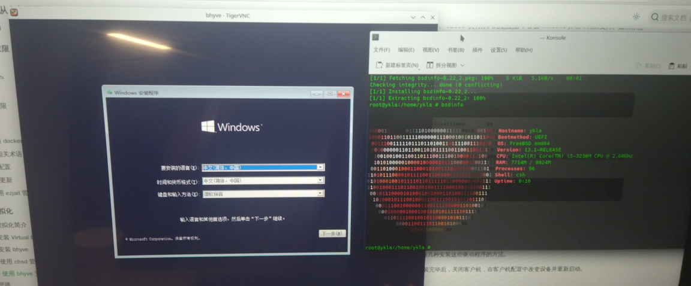
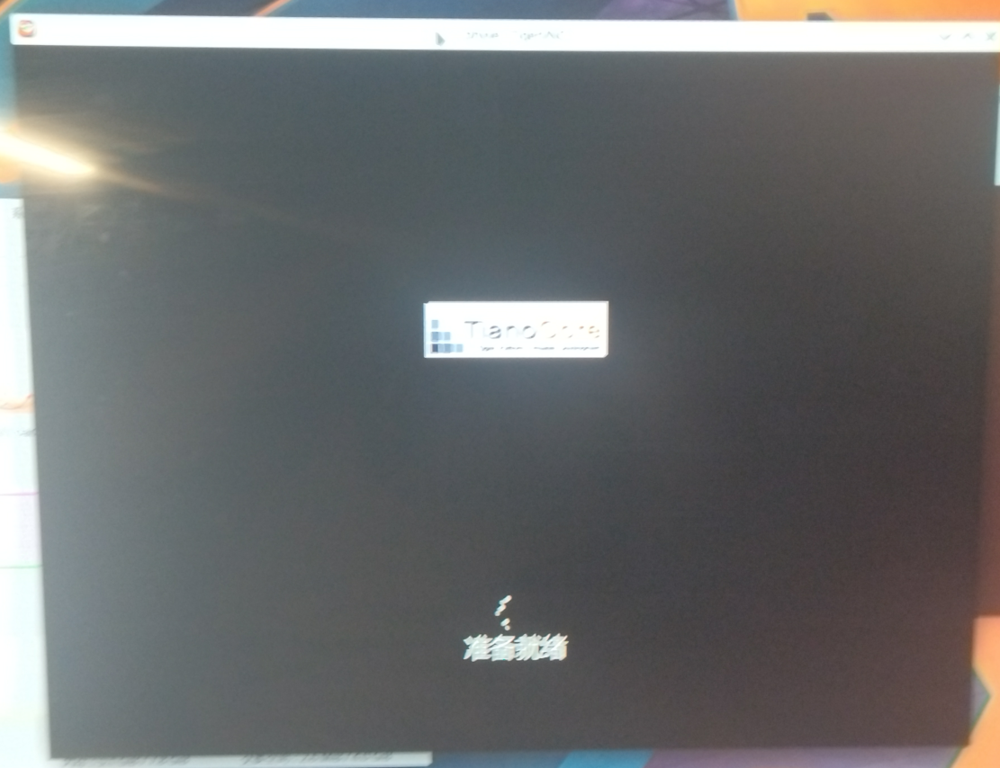
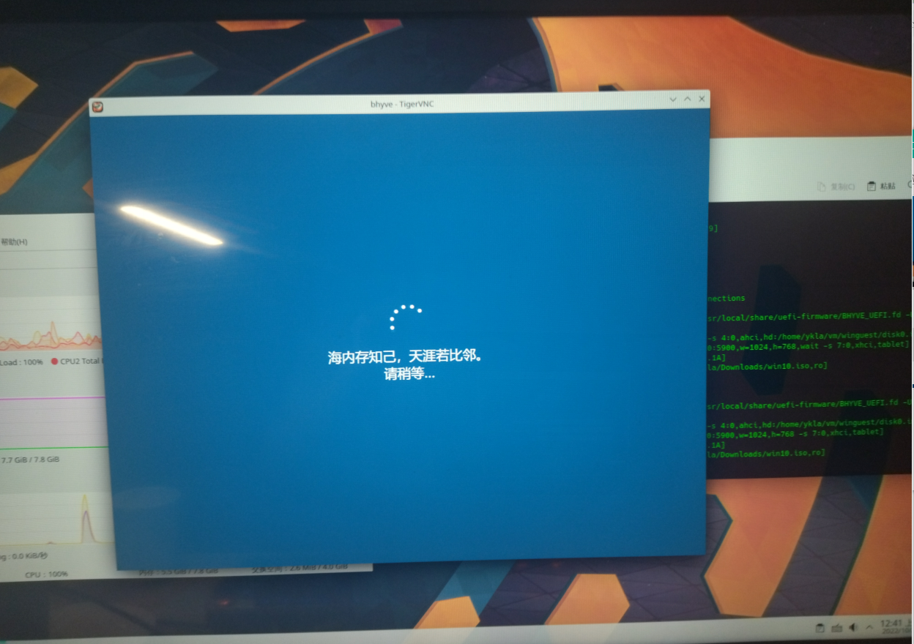
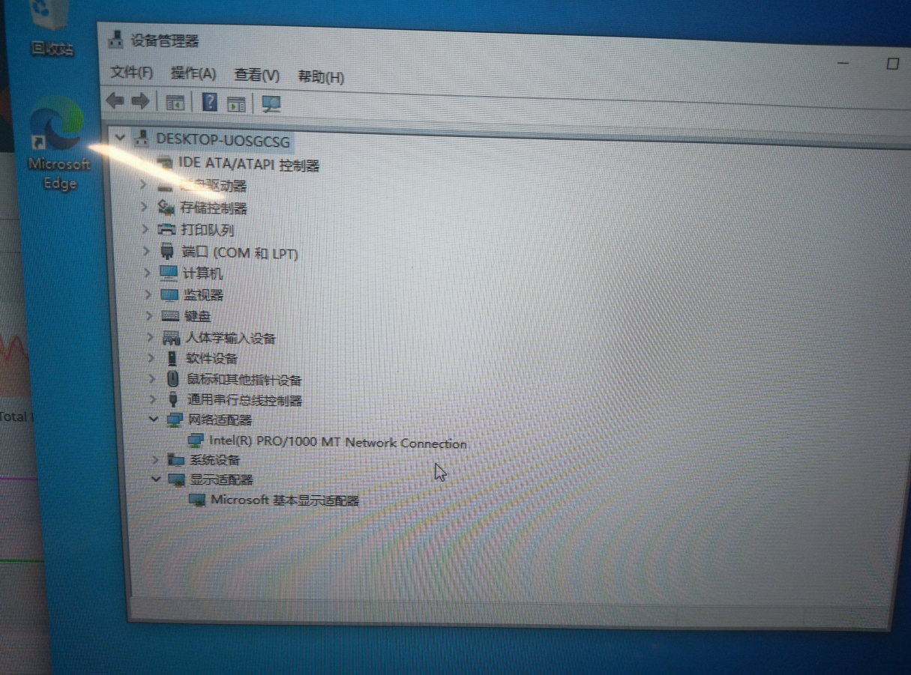
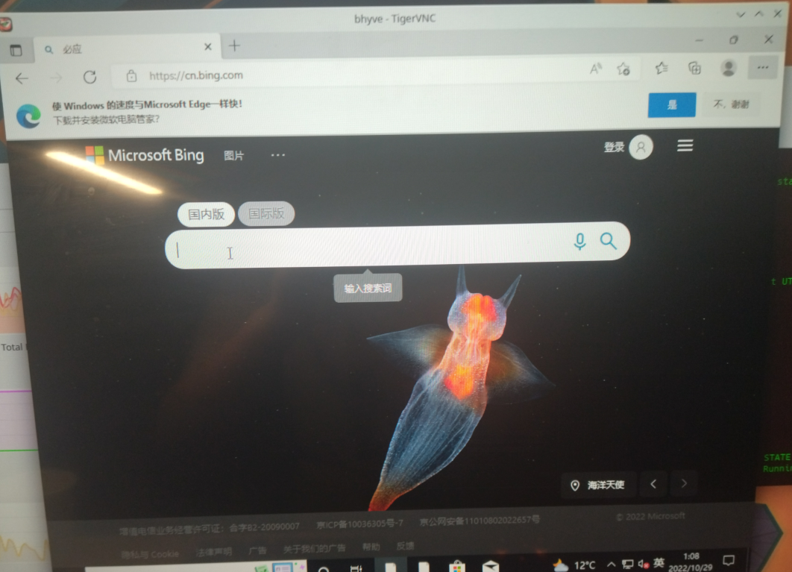
第 10.6 节 安装 XEN
XEN 是一种虚拟化技术。Xen 项目管理程序是一个开源的第一类或裸管理程序。它使在一台机器（或主机）上并行运行一个操作系统的许多实例或不同的操作系统成为可能。不同的操作系统在一台机器（或主机）上并行运行。Xen 项目的管理程序是作为开源的软件来说的唯一的第一类管理程序。它被用作许多不同的商业和开源应用的基础。成为开源应用的基础，例如：服务器虚拟化、基础设施即服务（IaaS）、桌面虚拟化(IaaS)、桌面虚拟化、安全应用、嵌入式和硬件设备。https://www.freshports.org/emulators/xen-kernel
安装
# pkg install -y xen-kernel xen-tools
参考资料
第 10.7 节 使用 XEN 安装 Windows
目前没有发现有人成功在 XEN 上运行过 Windows。但是其基本思路应该和在 Bhyve 上的流程大致相同。FreeBSD Xen 似乎不支持 UEFI？
参考资料
本章节为基础必备知识
第 11.1 节 通过 freebsd-update 更新
前排提示
阿里云云服务器用户升级到 13.x 请看第 2.1 节 “使用 virtio 技术半虚拟化的虚拟机” 部分。
注意：
只有一级架构的 release 版本才提供该源。也就是说 current 和 stable 是没有的。 关于架构的支持等级说明请看： https://www.freebsd.org/platforms
在 FreeBSD 15 的开发计划中，预计将使用
pkgbase替代freebsd-update。
更新 EFI 引导
对于通过 EFI 引导的系统，EFI 系统分区（ESP）上有一个或多个引导加载程序的副本，由固件用于引导内核。如果根文件系统是 ZFS，则引导加载程序必须能够支持从 ZFS 引导文件系统读取。在系统升级后，但在执行
zpool upgrade之前，必须更新 ESP 上的引导加载程序，否则系统可能无法引导。虽然不是强制性的，但在使用 UFS 作为根文件系统时也应如此。可以使用命令efibootmgr -v来确定正在使用的引导加载程序的位置。BootCurrent显示的值应该是用于引导系统的当前引导配置的编号。输出的相应条目应该以+号开头，例如+Boot0000* FreeBSD HD(1,GPT,f859c46d-19ee-4e40-8975-3ad1ab00ac09,0x800,0x82000)/File(\EFI\freebsd\loader.efi) nda0p1:/EFI/freebsd/loader.efi (null)ESP 可能已经挂载在 /boot/efi 上。如果没有，可以手动挂载分区，使用
efibootmgr输出中列出的分区（本例为nda0p1）：mount_msdosfs /dev/nda0p1 /boot/efi。有关另一个示例，请参阅 loader.efi(8) 。在
efibootmgr -v输出的File字段中的值，例如\EFI\freebsd\loader.efi，是 EFI 上正在使用的引导加载程序的位置。如果挂载点是 /boot/efi，则此文件将转换为/boot/efi/efi/freebsd/loader.efi。 （在 FAT32 文件系统上大小写不敏感；FreeBSD 使用小写。）File的另一个常见值可能是\EFI\boot\bootXXX.efi，其中XXX是 amd64 即x64、aarch64 即aa64或 riscv64 即riscv64；如果未配置，则为默认引导加载程序。应该把 /boot/loader.efi 复制到 /boot/efi 中的正确路径来更新已配置和默认的引导加载程序。
——引自 FreeBSD 14.0 发行说明，有改动。
更新系统
FreeBSD 提供了实用工具 freebsd-update 来安装系统更新，包括升级到大版本。
环境准备
- 如果是 csh（14 以下 root 默认为 csh）：
# setenv EDITOR /usr/bin/ee # 切换 vi 为 ee，vi 不会用
# setenv VISUAL /usr/bin/ee # 切换 vi 为 ee，vi 不会用
- 如果是 bash、zsh 或 sh（14 及以上 root 默认为 sh）：
# export EDITOR=/usr/bin/ee # 切换 vi 为 ee，vi 不会用
# export VISUAL=/usr/bin/ee # 切换 vi 为 ee，vi 不会用
常规的安全更新：
# freebsd-update fetch
当出现类似于下列信息时：
usrlinclude/c++/vl/trllvector usrlinclude/c++/vl/trllversion usrlinclude/c++/v1/trl/wchar.h usr/include/c++/v1/tr1/wctype.h usrlinclude/c++/vllunwind-armh
usrlinclude/c++/v1/unwind-itaniumh usrlinclude/c++/vllunwindh
usr/include/crypto/ cryptodevh usrlinclude/crypto/cbcmac.h usr/include/crypto/deflate.h usrlinclude/crypto/gfmult.h usr/include/crypto/gmac.h
usr/include/crypto/rijndael.h usrlinclude/crypto/rmd160.h usr/include/crypto/xform.h
usr/include/crypto/xformauth.h usr/includecrypto/xformcomp.h usrlincludelcryptolxformenc.h
usr/include/crypto/xformpoly1305.h usrlincludelsys/ cscanatomic.h usrlincludelsys/ cscanbus.h usr/lib/clang/11.0.1
usr/lib/clang/11.0.1/include
:
你只需要输入q回车即可。然后：
# freebsd-update install
小版本或者大版本更新
例如
13.2是要更新到的版本号：
# freebsd-update upgrade -r 13.2-RELEASE
以 FreeBSD 13.1-RELEASE 升级 13.2-RELEASE 为例，设备为 i5-3230M 双核，内存 4G（以下均以此为基准）
当出现类似于下列信息时：
root@ykla:/home/ykla # freebsd-update upgrade -r 13.2-RELEASE
src component not installed, skipped
Looking up update.FreeBSD.cn mirrors... none found.
Fetching public key from update.FreeBSD.cn... done.
Fetching metadata signature for 13.1-RELEASE from update.FreeBSD.cn... done. #这里我使用了 FreeBSD.cn 镜像站，其实换不换这个源速度都差不多，因为都是零碎文件，如果你更新错误，建议换源看看
Fetching metadata index... done.
Fetching 2 metadata files... done.
Inspecting system... done.
The following components of FreeBSD seem to be installed:
kernel/generic kernel/generic-dbg world/base world/lib32
The following components of FreeBSD do not seem to be installed:
world/base-dbg world/lib32-dbg
Does this look reasonable (y/n)? y #在这里输入 y 回车即可，在检查基本组件的安装情况。
Fetching metadata signature for 13.2-RELEASE from update.FreeBSD.cn... done.
Fetching metadata index... done.
Fetching 1 metadata patches. done.
Applying metadata patches... done.
Fetching 1 metadata files... done.
Inspecting system... #这里在检查系统，需要等待约 10 分钟。
Fetching files from 13.1-RELEASE for merging... done.
Preparing to download files... #这里在准备要下载的文件，需要等待约 15 分钟。
Fetching 5614 #这里需要等待约 3 分钟。注意，当跨版本更新时，有时候需要等待 5 小时会更长时间，都是正常的。
patches.....10....20....30....40....50....60....70....80....90....100....110....120....130....140....150....160....170....180....190....200....210....220....230....240....250....260....270....280....290....300....310....320....330....340....350....360....370....380....390....400....
…………以下省略………………
....5260....5270....5280....5290....5300....5310....5320....5330....5340....5350....5360....5370....5380....5390....5400....5410....5420....5430....5440....5450....5460....5470....5480....5490....5500....5510....5520....5530....5540....5550....5560....5570....5580....5590....5600....5610.. done.
Applying patches... #应用补丁，需要等待约 10 分钟
Applying patches... done.
Fetching 494 files... ....10....20....30....40....50....60....70....80....90....100....110....120....130....140....150....160....170....180....190....200....210....220....230....240....250....260....270....280....290....300....310....320....330....340....350....360....370....380....390....400....410....420....430....440....450....460....470....480....490.. done.
Attempting to automatically merge changes in files... done.
The following changes, which occurred between FreeBSD 13.1-RELEASE and
FreeBSD 13.2-RELEASE have been merged into /etc/passwd:
--- current version
+++ new version
@@ -1,7 +1,5 @@
-# $FreeBSD$
-#
root:*:0:0:Charlie &:/root:/bin/csh
toor:*:0:0:Bourne-again Superuser:/root:
daemon:*:1:1:Owner of many system processes:/root:/usr/sbin/nologin
operator:*:2:5:System &:/:/usr/sbin/nologin
bin:*:3:7:Binaries Commands and Source:/:/usr/sbin/nologin
Does this look reasonable (y/n)? #输入 y 回车，这里在确认系统文件的变动。
The following files will be removed as part of updating to
13.2-RELEASE-p0:
/boot/kernel/iwlwifi-Qu-b0-hr-b0-68.ucode.ko
/boot/kernel/iwlwifi-Qu-b0-jf-b0-68.ucode.ko
/boot/kernel/iwlwifi-Qu-c0-hr-b0-68.ucode.ko
/boot/kernel/iwlwifi-Qu-c0-jf-b0-68.ucode.ko
/boot/kernel/iwlwifi-QuZ-a0-hr-b0-68.ucode.ko
/boot/kernel/iwlwifi-QuZ-a0-jf-b0-68.ucode.ko
/boot/kernel/iwlwifi-cc-a0-68.ucode.ko
/boot/kernel/iwlwifi-so-a0-gf-a0-68.ucode.ko
/boot/kernel/iwlwifi-so-a0-gf4-a0-68.ucode.ko
/boot/kernel/iwlwifi-so-a0-hr-b0-68.ucode.ko
/boot/kernel/iwlwifi-so-a0-jf-b0-68.ucode.ko
/boot/kernel/iwlwifi-ty-a0-gf-a0-68.ucode.ko
/usr/include/c++/v1/__function_like.h
/usr/include/c++/v1/__memory/pointer_safety.h
/usr/include/c++/v1/__utility/__decay_copy.h
/usr/lib/clang/13.0.0
/usr/lib/clang/13.0.0/include
/usr/lib/clang/13.0.0/include/__clang_cuda_builtin_vars.h
/usr/lib/clang/13.0.0/include/__clang_cuda_cmath.h
/usr/lib/clang/13.0.0/include/__clang_cuda_complex_builtins.h
/usr/lib/clang/13.0.0/include/__clang_cuda_device_functions.h
/usr/lib/clang/13.0.0/include/__clang_cuda_intrinsics.h
/usr/lib/clang/13.0.0/include/__clang_cuda_libdevice_declares.h
/usr/lib/clang/13.0.0/include/__clang_cuda_math.h
/usr/lib/clang/13.0.0/include/__clang_cuda_math_forward_declares.h
/usr/lib/clang/13.0.0/include/__clang_cuda_runtime_wrapper.h
/usr/lib/clang/13.0.0/include/__clang_hip_cmath.h
/usr/lib/clang/13.0.0/include/__clang_hip_libdevice_declares.h
/usr/lib/clang/13.0.0/include/__clang_hip_math.h
/usr/lib/clang/13.0.0/include/__clang_hip_runtime_wrapper.h
/usr/lib/clang/13.0.0/include/__stddef_max_align_t.h
/usr/lib/clang/13.0.0/include/__wmmintrin_aes.h
: # 这里输入 q，确认变动，直至没有新内容出现
To install the downloaded upgrades, run "/usr/sbin/freebsd-update install".
运行 freebsd-update install 以安装更新：
root@ykla:/home/ykla # freebsd-update install
src component not installed, skipped
Creating snapshot of existing boot environment... done.
Installing updates...
Kernel updates have been installed. Please reboot and run
"/usr/sbin/freebsd-update install" again to finish installing updates.
内核更新已经安装，系统要求重启后再运行 freebsd-update install。
root@ykla:/home/ykla # reboot
root@ykla:/home/ykla # freebsd-update install
src component not installed, skipped
Creating snapshot of existing boot environment... done.
Installing updates...Scanning //usr/share/certs/blacklisted for certificates... #需要等待约 15 分钟
Scanning //usr/share/certs/trusted for certificates...
Scanning //usr/local/share/certs for certificates...
done.
检查第三方软件 ABI 变化：
root@ykla:/home/ykla # pkg upgrade
Updating FreeBSD repository catalogue...
FreeBSD repository is up to date.
All repositories are up to date.
Checking for upgrades (28 candidates): 100%
Processing candidates (28 candidates): 100%
The following 30 package(s) will be affected (of 0 checked):
New packages to be INSTALLED:
gstreamer1-plugins-curl: 1.20.6
gstreamer1-plugins-openh264: 1.20.6
openh264: 2.3.0,2
Installed packages to be UPGRADED:
curl: 7.87.0 -> 7.88.1
dav1d: 1.0.0_3 -> 1.1.0
gnutls: 3.7.8_1 -> 3.7.9
gstreamer1: 1.20.5 -> 1.20.6
gstreamer1-plugins: 1.20.5 -> 1.20.6
gstreamer1-plugins-a52dec: 1.20.5 -> 1.20.6
gstreamer1-plugins-bad: 1.20.5 -> 1.20.6
gstreamer1-plugins-dts: 1.20.5 -> 1.20.6
gstreamer1-plugins-dvdread: 1.20.5 -> 1.20.6
gstreamer1-plugins-good: 1.20.5 -> 1.20.6
gstreamer1-plugins-mpg123: 1.20.5 -> 1.20.6
gstreamer1-plugins-ogg: 1.20.5 -> 1.20.6
gstreamer1-plugins-pango: 1.20.5 -> 1.20.6
gstreamer1-plugins-png: 1.20.5 -> 1.20.6
gstreamer1-plugins-resindvd: 1.20.5 -> 1.20.6
gstreamer1-plugins-theora: 1.20.5 -> 1.20.6
gstreamer1-plugins-ugly: 1.20.5 -> 1.20.6
gstreamer1-plugins-vorbis: 1.20.5 -> 1.20.6
harfbuzz: 6.0.0 -> 7.0.1
libass: 0.17.0 -> 0.17.1
mesa-dri: 22.3.3_2 -> 22.3.6
mesa-libs: 22.3.3_1 -> 22.3.6
nss: 3.87 -> 3.88.1
openexr: 3.1.5 -> 3.1.6_1
plasma5-systemsettings: 5.24.7 -> 5.24.7_1
sddm: 0.19.0_7 -> 0.19.0_8
xwayland-devel: 21.0.99.1.386 -> 21.0.99.1.439
Number of packages to be installed: 3
Number of packages to be upgraded: 27
The process will require 5 MiB more space.
32 MiB to be downloaded.
Proceed with this action? [y/N]: #这里输入 y 回车。
…………以下省略………………
找不到 .so：
# pkg bootstrap -f
以上，更新完毕。
故障排除
FreeBSD 升级出错，没有 ntp 用户
终端执行命令
# pw groupadd ntpd -g 123
# pw useradd ntpd -u 123 -g ntpd -h - -d /var/db/ntp -s /usr/sbin/nologin -c "NTP Daemon"
查看 FreeBSD 版本
注意：
有时候补丁不涉及内核，内核版本就不会变，用
uname -r看不出来，但是用户空间版本会变。所以你可能会看到两个版本，以高的为准。
freebsd-version 命令
查看 FreeBSD 内核版本和补丁号：
ykla@ykla:~ % freebsd-version -k
13.1-RELEASE-p3
查看已安装的用户空间的版本和补丁程序级别：
ykla@ykla:~ % freebsd-version -u
13.1-RELEASE-p5
uname 命令
ykla@ykla:~ % uname -a
FreeBSD ykla 13.1-RELEASE FreeBSD 13.1-RELEASE releng/13.1-n250148-fc952ac2212 GENERIC amd64
ykla@ykla:~ % uname -mrs
FreeBSD 13.1-RELEASE amd64
升级后 pkg 无法使用，或任何软件找不到 .so
# pkg bootstrap -f
或者使用 ports make deinstall 卸载 pkg 重装。
ZFS 相关升级请参见第 6.2 节 ZFS
第 11.3 节 通过源代码更新
基本思路就是获取 FreeBSD 的源代码，然后进行编译安装。可以使用 git 直接拉取代码，也可以直接下载 ISO 镜像里面的 txz 压缩文件或者去 github 上下载当前 FreeBSD 项目的 zip 压缩包。
编译流程见 Handbook 即可。非常地简单。
获取源代码
FreeBSD 项目在 2021 年从 SVN 全面迁移到了 Git，即 https://git.freebsd.org
所以获取源代码的方式也产生了变化，不再使用 svn 了。
从 Git 获取源代码
- Git
# pkg install -y git
# git clone --depth 1 https://git.FreeBSD.org/src.git /usr/src # 或 https://github.com/freebsd/freebsd-src
故障排除：
- Git
fatal: unable to update url base from redirection
使用 FreeBSD 源却没加 .git
- Gitup
# pkg install -y gitup
# gitup release # 具体版本需要参考当前 gitup 配置 https://github.com/johnmehr/gitup/blob/main/gitup.conf
# gitup current # 获取 current 源代码
故障排除：
fatal: unable to access 'https://git.FreeBSD.org/src.git/': SSL certificate problem: certificate is not yet valid
可能是时间不对造成的，同步时间：
# ntpdate -u pool.ntp.org # 当时间相差较大时必须使用该命令，其他命令不会生效
从压缩包获取源代码(推荐)
该方法比较简单快捷。
以 FreeBSD 14.0 为例：
# fetch https://download.freebsd.org/ftp/releases/amd64/14.0-RELEASE/src.txz
# tar xvzf src.txz -C /
如果速度慢可以切换到 14.0-RELEASE/src.txz
开始编译
# cd /usr/src
# make -j4 buildworld # 编译世界
# make -j4 kernel # 编译并安装内核
# reboot # 重启使用新内核
# etcupdate -p # 合并更新
# cd /usr/src
# make installworld # 安装世界
# etcupdate -B # 合并更新
# reboot # 重启
故障排除：
Conflicts remain from previous update, aborting.
root@ykla:~ # etcupdate -B
Conflicts remain from previous update, aborting.
# export EDITOR=/usr/bin/ee # 切换 vi 为 ee，vi 不会用，限 FreeBSD 14 及以上。csh 使用: setenv EDITOR /usr/bin/ee
# export VISUAL=/usr/bin/ee # 切换 vi 为 ee，vi 不会用，限 FreeBSD 14 及以上。csh 使用: setenv VISUAL /usr/bin/ee
# etcupdate resolve # 解决冲突
Resolving conflict in '/etc/group':
Select: (p) postpone, (df) diff-full, (e) edit,
(h) help for more options: e # 输入 e 解决冲突
# etcupdate -B
ZFS 相关升级请参见第 6.2 节 ZFS
参考资料
第 11.3 节 批量部署
FreeBSD 的更新似乎难以被打包成一个二进制包。但是似乎也有 pkg 更新基本系统的方法（未经测试，仅供参考）。
参考资料
第 11.4 节 使用 pkgbase 更新
现在 FreeBSD 的系统更新与第三方软件更新的分离的（现在使用 freebsd-update），pkgbase 是目的就是将其合并起来统一使用 pkg 命令管理。但是现在只有一级架构的 RELEASE 才有 freebsd-update 可用，也就是说 current 等系统只能靠拉取源码自己编译的方式来更新，可以说非常麻烦了。pkgbase 早在 2016 年就有了，原计划在 FreeBSD 14 就进入系统替代 freebsd-update，但是现在推迟到了 15。
现成的服务器（仅供测试）【好像跑路了】
严重警告
该工具会 清空 系统原有配置，包括不限于 sshd、清空用户，清空 root 密码等。
# mkdir -p /usr/local/etc/pkg/repos/
# ee /usr/local/etc/pkg/repos/base.conf
- 13.2 RELEASE 写入：
# FreeBSD pkgbase repo
FreeBSD-base: {
url: "https://alpha.pkgbase.live/release/13.2/${ABI}/latest",
signature_type: "pubkey",
pubkey: "/usr/local/etc/pkg/keys/alpha.pkgbase.live.pub",
enabled: yes
}
- CURRENT 写入
# FreeBSD pkgbase repo
FreeBSD-base: {
url: "https://alpha.pkgbase.live/current/${ABI}/latest",
signature_type: "pubkey",
pubkey: "/usr/local/etc/pkg/keys/alpha.pkgbase.live.pub",
enabled: yes
}
导入密钥：
# mkdir -p /usr/local/etc/pkg/keys/
# fetch --output=/usr/local/etc/pkg/keys/alpha.pkgbase.live.pub https://alpha.pkgbase.live/alpha.pkgbase.live.pub
注意设置代理，要设置 https_proxy 而不是 http_proxy。
更新系统：
# pkg update -r FreeBSD-base
# pkg install -g 'FreeBSD-*'
即可。
严重警告
该工具会 清空 系统原有配置，包括不限于 sshd、清空用户，清空 root 密码等。
参考文献
本章节为基础必备知识
第 12.1 节 概述
注意
以下部分来自互联网。请自行甄别。
FreeBSD 中的磁盘加密功能
GBDE (基于 GEOM 的磁盘加密)
内核中的 GEOM 模块 gbde(4)
用户空间工具 gbde(8)
创建后缀为 .bde 的新设备
GELI (GEOM eli)
内核中的 GEOM 模块
用户空间工具 geli(8)
创建后缀为.eli的新设备
在扇区级操作
创建新的设备以允许对数据进行纯文本访问
GEOM 框架
访问存储层的标准化方式
GEOM 类的集合
类可以以任何顺序自由堆叠
I/O 请求转换的抽象化
变换：条带化、镜像、分区、加密
提供者和消费者
自动发现
GBDE
主密钥（2048 个随机位）位于 GEOM 设备的一个随机位置在 GEOM 设备上，其位置存储在一个锁文件中。
锁定文件使用用户密码进行加密，并且应该 应单独存储
最多可以有 4 个独立的用户秘密(锁定扇区)
每个扇区使用 AES-CBC-128 和一个随机的扇区密钥进行加密。扇区密钥
扇区密钥使用从主密钥和扇区号中提取的密钥进行加密。扇区密钥使用由主密钥和扇区编号衍生的密钥进行加密
存储每个扇区密钥的磁盘空间开销
非原子性的磁盘更新，因为扇区密钥是与数据分开存储的 因为扇区密钥与数据分开存储
不支持在/文件系统中安装加密的设备系统中的加密设备
GELI
简单的扇区对扇区加密
为了对扇区进行对称加密，选择一个随机的主密钥
主密钥使用用户密钥进行加密，并存储在 GEOM 设备的最后一个扇区中
主密钥的最多两个加密副本可以存储在扇区中
用户密钥由最多两个部分组成：一个用户口令和一个密钥文件
口令使用 PKCS #5：基于密码的密码学规范 2.0(Password-Based Cryptography Specification 2.0)来加强
加密技术规范 2.0 (RFC 2898)
可以对数据完整性进行验证
由于利用了 crypto(9)框架，自动利用硬件加速加密操作的优势
支持多种加密算法（AES-XTS,AES-CBS, Blowfish-CBC, Camellia-CBC, 3DES-CBC）和不同的密钥长度。不同的密钥长度
允许在/文件系统中挂载加密的设备
自 FreeBSD 11 支持从加密的分区启动
GEOM 模块化磁盘变换框架及其他磁盘管理常用命令：
# fdisk -s /dev/da0 #打印磁盘对象汇总信息。其中 /dev/da0 即磁盘对象，表示本机的第一块硬盘，如果不写 默认显示启动盘信息。还可以写成分片或分区，如 /dev/da0s1 和 /dev/da0s1a，其中硬盘用 da 表示，从 0 起算，分片用 s 表示，从 1 起算，分区则用字母 a-h 表示，/dev/da0s1a 即表示第一块硬盘第一个分片的 第一个分区，这是 MBR 的表示方法。GPT 由于没有分片的概念，直接就是分区，因此用 p 表示分区，从 1 起算，/dev/da0p1 即表示第一块硬盘的第一个分区
# dd if=/dev/zero of=/dev/da1 bs=1k count=1 #清理磁盘信息
# fdisk -BI /dev/da1 #初始化磁盘，默认 MBR 模式 bsdlabel -w /dev/da1s1 #写入 bsdlabel
# bsdlabel -e /dev/da1s1 #用 vi 编辑器编辑
# bsdlabel geom -t #树状结构显示磁盘对象关系
# geom disk lsit #列表显示已使用的物理磁盘
# geom disk status #显示已使用的物理磁盘状态信息
# gpart list | geom part list #列表显示已创建的分片和分区
# gpart status | geom part status #显示已创建的分片和分区状态信息
# gpart show /dev/da1 #显示已使用的硬盘信息
# gpart create -s GPT /dev/da1 #为磁盘/dev/da1 创建分区表，本例为 GPT 模式，还可以设置 MBR、APM、 BSD、BSD64、LDM、VTOC8
# gpart add -b 64 -s 2048m -t freebsd-ufs -i 2 -l root0 /dev/da1 #在磁盘 /dev/da1 上创建新分区。-b 表示起始位置；-s 表示分配空间；-t 为分区格式，分片时可以用 freebsd，还有 freebsd-boot、freebsd-swap、freebsdzfs 等类型；-i 表示索引，本例为 2，即新分区名为 /dev/da1p2；-l 为标签 newfs /dev/da1p2 #格式化分区
# gpart modify -i 2 -t freebsd-zfs -l myroot /dev/da1 #在磁盘/dev/da1 上修改索引为 2 的分区，分区格式和标签均可修改
# gpart resize -i 2 -s 4g /dev/da1 #在磁盘/dev/da1 上调整索引为 2 的分区大小，单位可以用 k、m、g、t。注意，如果要缩小分区，则分区不能处于使用状态，这意味着系统分区默认情况下无法缩小；如果要扩大分区，则分区后面必须是空闲空间，而不能有其他分区，这意味着系统分区默认情况下也无法扩展。因此在创建 FreeBSD 虚机时，应充份考虑可能使用系统盘的情况，或尽量避免使用系统盘
# gpart bootcode -b /boot/mbr /dev/da1 #写入启动代码，常用的还有/boot/gptboot 和/boot/boot
# gpart set -a active -i 1 /dev/da0 #设置活动分片。分区表为 MBR 时，bsdinstall 和 sade 会自动把新建的分片设置为活动分片，从而导致操作系统重启时无法正确加载启动分区，故需要重设
# gpart delete -i 2 /dev/da1 #在磁盘/dev/da1 上删除索引为 2 的分区
# gpart destroy -F /dev/da1 #销毁磁盘/dev/da1 上的信息，-F 参数表示强制
# mount /dev/da1p1 /data #将分区/dev/da1p1 挂载到/data 目录，挂载后注意用 chown 命令设置归属，若希望重启后自动挂载，请在终端执行命令：
# printf "/dev/da1p1t/datattufstrwt0t0n" >> /etc/fstab
# umount /data #卸载/data 目录上的挂载
下面再给出四组示例，谨供参考：
1.MBR 在系统盘扩展分片后新建分区(假设已为系统盘增加 50G 磁盘空间)
# gpart resize -i 1 -s 149g /dev/da0 #调整分片/dev/da0s1 的空间为 149G。尽管磁盘的大小为 150G，但由于技术原因，实际可使用的空间并没有那么多
# gpart add -t freebsd-ufs /dev/da0s1 #在分片 /dev/da0s1 上添加分区，类型 freebsd-ufs。不指定-s 参数时，表示将 剩余空间都分配给该分区
# newfs /dev/da0s1d #格式化新分区。这里注意新分区名称，由于 a 是启动分区，b 是 swap 分区，c 已经被分 片本身占用，因此新分区默认分配为 d
# mkdir /data
# mount /dev/da0s1d /data
# printf "/dev/da0s1dt/datattufstrwt2t2n" >> /etc/fstab
2.MBR 在系统盘新建分片后再建分区(假设已为系统盘增加 50G 磁盘空间)
# gpart add -t freebsd /dev/da0 #在次跑/dev/da0 上添加分片，类型 freebsd。不指定-s 参数时，表示将剩余空间都 分配给该分片
# gpart create -s BSD /dev/da0s2 #设置分片生效 gpart add -t freebsd-ufs /dev/da0s2 #在分片/dev/da0s2 上添加分区，类型 freebsd-ufs。不指定-s 参数时，表示将 剩余空间都分配给该分区
# newfs /dev/da0s2a #格式化新分区。由于当前分区是当前分片上的第一个分区，因此系统默认分配为 a
# gpart set -a active -i 1 /dev/da0 #设置活动分片。若用 bsdinstall 或 sade 创建新分片，则此步骤为必须
# mkdir /data mount /dev/da0s2a /data
# printf "/dev/da0s2at/datattufstrwt2t2n" >> /etc/fstab
3.GPT 在系统盘新建分区(假设已为系统盘增加 50G 磁盘空间)
# gpart add -t freebsd-ufs /dev/da0 #在磁盘/dev/da0 上添加分区，GPT 中没有分片的概念
# newfs /dev/da0p4 #格式化新分区。这里注意新分区名称，p1 是 boot 分区，p2 是系统分区，p3 是 swap 分区，因此新分区默认为 p4
# mkdir /data mount /dev/da0p4 /data
# printf "/dev/da0p4t/datattufstrwt2t2n" >> /etc/fstab
4.GPT 创建数据分区
# gpart create -s GPT /dev/da1 #为磁盘/dev/da1 设置分区表。若想用 MBR 分区，则将-s 参数的值改为 MBR
# gpart add -t freebsd-ufs /dev/da1 #在磁盘/dev/da1 上添加分区，类型 freebsd-ufs
# newfs /dev/da1p1 #格式化新分区。由于当前分区是当前分片上的第一个分区，因此系统默认分配为 p1
# mkdir /data mount /dev/da1p1 /data
# printf "/dev/da1p1t/datattufstrwt2t2n" >> /etc/fstab
第 12.2 节 RAID 0
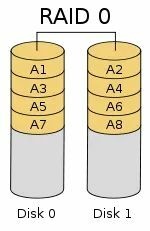
实现方式： RAID 0 是最简单的实现方式，就是把多块同样的硬盘串联在一起创建一个大的逻辑硬盘。最大优点就是可以整倍的提高硬盘的容量。如使用了三块 10T 的硬盘组建成 RAID 0 模式，那么磁盘容量就会是 30 TB。
RAID 0 数据恢复： 由于不提供数据冗余保护，阵列中某一磁盘发生故障，将导致其中数据丢失，无法恢复。
应用场景： RAID 0 一般适用于对性能要求严格但对数据安全性和可靠性不高的应用，如视频、音频存储、临时数据缓存空间等。
最少硬盘数： 创建 RAID 0 最少需要 2 块硬盘
可用容量： 磁盘空间利用率为 100%
第 12.3 节 RAID 1
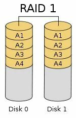
实现方式： RAID 1 使用了两组相同的磁盘系统互做镜像，在主硬盘上存放数据的同时也在镜像硬盘上写一样的数据。当主硬盘损坏时，镜像硬盘则代替主硬盘工作。
RAID1 数据恢复： 如任一磁盘发生损坏，可以马上从镜像磁盘进行数据恢复。如：上图 Disk0 损坏导致数据丢失，我们可以用新盘替换故障盘，读取Disk1的数据，将其复制到新盘上，从而实现了数据的恢复。
应用场景： RAID 1 应用于对顺序读写性能要求高以及对数据保护极为重视的应用。如：服务器、数据库存储领域。
最少硬盘数： 创建 RAID 1 最少需要 2 块硬盘
可用容量： 实际可用的硬盘为总硬盘数量的一半
第 12.4 节 RAID 3
RAID 3：假设你有 N 块硬盘，其中 1 块硬盘作为校验使用，其余的 N-1 块硬盘相当于构成了 RAID 0，当其中一块硬盘损坏时，就可以通过校验硬盘的校验码还原出损坏磁盘的的原始数据。
参考资料
第 12.5 节 软 RAID 配置
软 RAID 指用软件实现的 RAID。如 ZFS 相关功能。
参考资料
第 12.6 节 GEOM Gate Network
在 Linux 上，网络块设备（NBD）是一个网络协议，可以用来将一个块设备（通常是硬盘或分区）从一台机器转发到另一台机器。举例来说，一台本地机器可以访问连接到另一台计算机的硬盘驱动器。
该协议最初是为 Linux 2.1.55 开发的，并在 1997 年发布。在 2011 年，该协议被修订，正式记录在案，现在被发展为一个合作的开放标准。有几个可互操作的客户端和服务器。
有 Linux 兼容的 NBD 实现，用于 FreeBSD 和其他操作系统。术语“网络块设备”有时也被笼统地使用。
从技术上讲，一个网络块设备是由三个部分实现的：服务器部分、客户端部分和它们之间的网络。在作为设备节点的客户机上，一个内核驱动程序控制着该设备。每当一个程序试图访问该设备时，内核驱动程序就会将请求（如果客户机部分没有在内核中完全实现，可以在用户空间程序的帮助下完成）转发到服务器机上，数据就在服务器机上。在服务器机上，来自客户端的请求由一个用户空间程序处理。
网络块设备服务器通常作为一个用户空间程序在通用计算机上运行。所有针对网络块设备服务器的功能都可以驻留在用户空间程序中，因为该程序通过传统的套接字与客户端进行通信，并通过传统的文件系统接口访问存储。
网络块设备客户端模块可以在类 Unix 操作系统上使用，包括 Linux 和 Bitrig。由于服务器是一个用户空间程序，它在理论上可以在每个类 Unix 平台上运行；例如，NBD 的服务器部分已经被移植到 Solaris。
GEOM Gate Network 就是这么一个东西（此处存疑）。
参考资料
第 12.7 节 磁盘装置标签
磁盘装置标签是类似于 Linux fstab 中对磁盘进行标识的 UUID。方便对磁盘分区进行唯一地标识。
参考资料
第 12.8 节 UFS Journaling 与 GEOM
可以通过 GEOM 实现 UFS 日志功能。
参考资料
第 12.9 节 ZFS 磁盘加解密
ZFS 加密后-挂载磁盘
如果在安装的时候选择了 ZFS 磁盘加密，那么如何挂载该磁盘呢？
磁盘结构（FreeBSD 11 以后）
| 分区类型 | 挂载点 | 设备 |
|---|---|---|
| freebsd-boot /EFI | /dev/ada0p1 | |
| freebsd-zfs | / | /dev/ada0p2/、/dev/ada0p2.eli |
| freebsd-swap | /dev/ada0p3、/dev/ada0p3.eli |
很简单，也不需要密钥。
执行命令 # geli attach /dev/ada0p3
然后输入正确的密码即可通过 zfs mount zroot/ROOT/default 命令导入磁盘。
使用 GELI 加密 ZFS 卷
# 创建一个块设备
# zfs create -V 256M zroot/test
# 创建一个随机生成的、4K 大小的 key
# dd if=/dev/random of=/tmp/test.key bs=4k count=1
# 初始化并加载加密磁盘
# geli init -K /tmp/test.key /dev/zvol/zroot/test
# geli attach -k /tmp/test.key /dev/zvol/zroot/test
# 发现一个新设备
# ls /dev/zvol/zroot/test.eli
# 我们可以在该设备上创建一个新的文件分区
# zpool create -m /tmp/ztest ztest /dev/zvol/zroot/test.eli
GELI 数据备份和恢复
# 备份 GELT 数据
# geli backup /dev/zvol/zroot/test /tmp/test.eli
# 清空 GELT 数据
# geli clear /dev/zvol/zroot/test
# GELI尝试挂载 GELT设备，但无法做到，因为找不到他的 GELT 数据
# geli attach -k /tmp/test.key /dev/zvol/zroot/test
# 恢复 GELT 数据
# geli restore /tmp/test.eli /dev/zvol/zroot/test
# 现在我们可以挂载设备并导入池了
# geli attach -k /tmp/test.key /dev/zvol/zroot/test
# zpool import
调整 GELI 磁盘大小
# 调整 ZFS 卷
# zfs set volsize=512M zroot/test
# 现在还不能挂载 GELT 设备，因为 GELT 找不到数据
# geli attach /dev/zvol/zroot/test
# 我们需要告诉 GELT 以前设备的存储大小
# geli resize -s 256M /dev/zvol/zroot/test
# 现在我们可以挂载设备并导入池了
# geli attach -k /tmp/test.key /dev/zvol/zroot/test
# zpool import
本章节为基础必备知识
第 13.1 节 概述
DTrace 是动态追踪技术的鼻祖，源自 SUN 公司的 Solaris 系统（基于早期的 BSD，目前开发已经停滞，最新版本是 2018 年的 11.4），提供了高级性能分析和调试功能，它的源代码采用 CDDL 许可证。
第 13.2 节 开启 DTrace
FreeBSD 11 及新版本
# kldload dtraceall
即可开启。
对于 FreeBSD 9/10
FreeBSD 内核默认没有开启 DTrace 这项功能。要开启本功能必须加入参数重新编译内核。
建议先阅读第内核相关章节。
编辑内核配置文件加入：
options KDTRACE_HOOKS
options DDB_CTF
makeoptions DEBUG=-g
makeoptions WITH_CTF=1
如果是 64 位操作系统：
options KDTRACE_FRAME
第 13.3 节 使用 DTrace
首先安装 ksh93：
# pkg install shells/ksh93
接下来安装 dtrace-toolkit：
# pkg install sysutils/dtrace-toolkit
参考文档
本章节为基础必备知识
第 14.1 节 PPP 拨号
注意
本文的 PPP 指 PPPoE，为现在中国大陆一般家庭所使用的的宽带拨号方式。
参考资料
第 14.2 节 WIFI
类似 plasma-nm/networkmanager 的图形化网络配置工具：
pkg install net-mgmt/networkmgr
通用网卡驱动
首先运行 # ifconfig，看看能不能找到你的网卡，如果能，那么你可以跳过本节了。
运行 # sysctl net.wlan.devices，他会告诉你的无线网卡驱动，如果冒号输出后边没有东西，那就是识别不了。请更换无线网卡。
接下来，创建 wlan0
# ifconfig wlan0 create wlandev at0
at0 是你的网卡，具体看自己的# sysctl net.wlan.devices输出，该命令是临时的，若需要永久开机生效，在 rc.conf 中，加入：
# wlans_ath0 ="wlan0"
扫描 WiFi：
# ifconfig wlan0 up scan
# ifconfig wlan0 ssid abc # abc 为 wifi 名字
如果扫描不出来，让你设置 FCC 的时候，选择 no。
连接 WiFi ：
# service netif restart
# dhclient wlan0
获取地址
连接加密网络
创建 /etc/wpa_supplicant.conf：
network={
ssid="WIFI 名字（SSID）"
psk="WIFI 密码"
}
在 rc.conf 里面加入
# ifconfig_wlan0="WPA SYNCDHCP"
然后重启电脑（因为命令有点问题，只能重启让 rc.conf 生效）
# wpa_supplicant -B -i wlan0 -c /etc/wpa_supplicant.conf
# wpa_cli -i wlan0 scan // 搜索附近wifi网络
# wpa_cli -i wlan0 scan_result // 打印搜索wifi网络结果
# wpa_cli -i wlan0 add_network // 添加一个网络连接
# wpa_cli -i wlan0 remove_network 1 // 删除一个网络连接
# wpa_cli -i wlan0 set_network 0 ssid ‘“name”‘
# wpa_cli -i wlan0 set_network 0 psk ‘“psk”‘
# wpa_cli -i wlan0 enable_network 0
保存连接
# wpa_cli -i wlan0 save_config
断开连接
# wpa_cli -i wlan0 disable_network 0
连接已有的连接
# wpa_cli -i wlan0 list_network 列举所有保存的连接
# wpa_cli -i wlan0 select_network 0 连接第1个保存的连接
# wpa_cli -i wlan0 enable_network 0 使能第1个保存的连接
断开 WiFi
# ifconfig wlan0 down
附配置详情：wpa_supplicant及wpa_cli使用方法
wpa 验证，静态 ip
# ifconfig_wlan0="WPA inet 192.168.1.100 netmask 255.255.255.0"
# ifconfig wlan0 inet 192.168.0.100 netmask 255.255.255.0
开启无线 ap，先确认下你的网卡是否支持 hostap
# ifconfig wlan0 list caps
先销毁
# ifconfig wlan0 destroy
再创建
# ifconfig wlan0 create wlandev ath0 wlanmode hostap
# ifconfig wlan0 inet 192.168.0.1 netmask 255.255.255.0 ssid freebsdap mode 11g channel 1
如果连不上或者搜不到调试信道，尝试将 WiFi 区域码选
Japan，然后选China即在
/etc/rc.conf中写入：create_args_wlan0="country CN regdomain ETSI"
简单版本
以螃蟹卡为例：
在
/etc/rc.conf中写入wlans_rtwn0="wlan0" ifconfig_wlan0="WPA DHCP"执行：
# service netif restart
英特尔网卡驱动
以下部分适用于 FreeBSD 13.1。13.1 已经可以正常加载使用了该驱动了。
iwlwifi 驱动适用于
AC 8265、AC 9260、AC 9560、AX200、AX201、AX210、AX 211以及旧的 iwm 驱动所包含的网卡，见 英特尔®无线适配器的 Linux* 支持。
将以下部分写入/etc/rc.conf：
devmatch_blocklist="iwm" # 如果依然加载 iwm，试一下换成 devmatch_blocklist="if_iwm"
wlans_iwlwifi0="wlan0"
ifconfig_wlan0="WPA SYNCDHCP"
创建 /etc/wpa_supplicant.conf：
network={
ssid="WIFI 名字（SSID）"
psk="WIFI 密码"
}
先加载驱动看一下：
# kldload if_iwlwifi
# ifconfig wlan0 create wlandev iwlwifi0
# /etc/rc.d/netif start wlan0
故障排除：wiki/WiFi/Iwlwifi
博通（broadcom）网卡驱动
FreeBSD 自身的博通网卡驱动一共有两种：bwn 和 bwi ，其中 bwi 是用于较旧型号的，bwn 是用于较新型号的。两者的支持范围有所重叠，而 bwn 对硬件的支持要更好。
那么，应该使用哪种驱动呢？请参考 FreeBSD Broadcom Wi-Fi Improvements。
示例：BCM4301 、 BCM4303 、 BCM4306 rev 2
经过判断，只能使用 bwi 驱动。
首先，在
/boot/loader.conf中添加：if_bwi_load="YES"然后使用 ports 安装固件（未提供二进制包，下同）：
# cd /usr/ports/net/bwi-firmware-kmod/ # make install clean可以先使用 USB 手机或者以太网先共享网络进行安装。也可以先把所需依赖下好放入目录。
在
/etc/rc.conf添加：wlans_bwi0="wlan0"重启即可。
示例：配置 bwn 驱动
安装固件：
# cd /usr/ports/net/bwn-firmware-kmod/ # make install clean配置
/boot/loader.conf，添加：if_bwn_load="YES"配置
/etc/rc.conf，添加：wlans_bwn0="wlan0"
注意
一些在 FreeBSD Broadcom Wi-Fi Improvements 列出的型号带有
$注释：The optional bwn(4) PHY driver is derived from b43 GPL code, and must be explicitly enabled.即需要一些基于 GPL 协议的代码。众所周知 FreeBSD 基本系统包括内核都是去 GNU 化的，因此需要重新编译内核来支持该协议。# cd /usr/src/ # 此处是内核源码安装目录。 # cd sys/amd64/conf/ # 注意架构！ # cp GENERIC MYKERNEL #重命名便于识别 # echo "options BWN_GPL_PHY" >> MYKERNEL #添加内核参数 # cd /usr/src # make -j4 buildkernel KERNCONF=MYKERNEL # -j 后边的参数为 CPU 核心数，下同 # make -j4 installkernel KERNCONF=MYKERNEL在
/boot/loader.conf中添加：hw.bwn_pci.preferred="1" if_bwn_pci_load="YES" bwn_v4_ucode_load="YES" bwn_v4_n_ucode_load="YES" bwn_v4_lp_ucode_load="YES"然后重启。
ifconfig观察有无wlan0，然后按照第一部分教程配置即可。
参考文献：
- 10.5.编译与安装定制内核
- Broadcom Wi-Fi Modernization
- Revision 326841
- Installing Broadcom BCM43236 Wifi on 11.3 missing firmware error
- https://github.com/helloSystem/ISO/issues/78
第 14.3 节 USB RNDIS (USB 网络共享)
该教程在红米手机上测试通过，理论上同时支持 Android 和 iOS。
首先加载内核模块（旧版本需要）；
# kldload if_urndis #安卓 Android
# kldload if_ipheth #苹果 iOS
# kldload if_cdce #其他设备
启动时开机加载，写入到：/boot/loader.conf。
if_urndis_load="YES"
if_cdce_load="YES"
if_ipheth_load="YES"
然后将 USB 数据线连接到 FreeBSD，打开手机的以太网网络共享即可。一般是 ue0，获取 ip 地址即可联网：
# dhclient ue0
第 14.4 节 蓝牙
关于蓝牙鼠标的问题请看前文。本文不再赘述。其余问题见参考资料。
由 iwm 驱动的网卡可以安装 iwmbt-firmware 这个包来驱动蓝牙。蓝牙走 USB 总线，使用 usbconfig 可查看所有设备，包括蓝牙，如 ugen1.5 是蓝牙，则： iwmbtfw -d ugen1.5。
参考资料
第 14.5 节 IPv6
FreeBSD 可支持 IPv6。
参考资料
第 14.6 节 CARP
CARP 即共享地址冗余协议，Common Address Redundancy Protocol。该协议允许运行多台计算机共享一个 IP 地址，以实现负载均衡。
参考资料
第 14.7 节 VLAN
VLAN（Virtual Local Area Network）即虚拟局域网，是一种将物理局域网在逻辑上划分成多个广播域的通信技术。可隔离网络。
参考资料
第 14.8 节 TCP BBR
TCP BBR 是一种 Google 开发的拥塞控制算法。作用有两个：
- 在有一定丢包率的网络链路上充分利用带宽。
- 降低网络链路上的 buffer 占用率，从而降低延迟。
一般来说，如果你使用了代理软件，建议开启 TCP BBR 功能，在速度和稳定性上会有十分显著的作用。在中国大陆该技术通常用于魔法。该项目在 FreeBSD 中，由 Netflix 团队协助开发。最低系统版本支持：r363032，也即推荐 FreeBSD 13.0。
修改内核配置
# cd /usr/src/sys/amd64/conf
如果安装 FreeBSD 时没有选择安装内核源码，建议阅读后文。
# cp GENERIC GENERIC-bbr
# ee GENERIC-bbr
调整配置，修改 ident 的值为 GENERIC-bbr，在 ident 这一项下面加入以下项目：
options TCPHPTS
options RATELIMIT
makeoptions WITH_EXTRA_TCP_STACKS=1
新建 /etc/src.conf，内容为:
KERNCONF=GENERIC-bbr
MALLOC_PRODUCTION=yes
编译并安装内核
# /usr/sbin/config GENERIC-bbr
# cd ../compile/GENERIC-bbr
# make cleandepend && make depend
# make -jN+1
其中 N 建议为 CPU 核心数。
# make install
安装内核，完成后重启使用新内核。
# uname -a
如果显示出 GENERIC-bbr，则表示 TCP BBR 内核编译并安装成功。
配置和加载 BBR 模块
# sysrc kld_list+="tcp_rack tcp_bbr"
启动时加载 BBR 模块。
# echo 'net.inet.tcp.functions_default=bbr' >> /etc/sysctl.conf
设置默认使用 BBR，重启。
# sysctl net.inet.tcp.functions_default
如果结果是 net.inet.tcp.functions_default: bbr，则启用 TCP BBR 成功。
注意： 故障排除等事宜请参考：
本章节为基础必备知识
第 15.1 节 网络参数配置命令
系统设置工具 bsdconfig
# bsdconfig 是 FreeBSD 基本系统提供的系统配置实用工具，是个 Shell 界面，本身也是由一组 shell 程序构成的。
安全的操作 rc 文件
# sysrc 是 FreeBSD 提供的 rc 文件实用工具，可代替手动编辑 rc.conf。
作为网关服务器
打开 IP 转发功能：
# sysrc gateway_enable="YES"
# sysrc ipv6_gateway_enable="YES"
打开防火墙，开启 NAT：
# sysrc firewall_enable="YES"
# sysrc firewall_script="/etc/ipfw.rules"
# sysrc firewall_nat_enable="YES"
设置默认接受连接： # ee /boot/loader.conf
net.inet.ip.fw.default_to_accept=1
手动设置 resolv.conf
手动编辑 resolv.conf 后，重启系统又会被重置，因为 DHCP 会重写这个文件。
防止 resolvconf 服务覆盖 resolv.conf：# ee /etc/resolvconf.conf
resolv_conf="/dev/null"
再编辑 resolv.conf 就可以了。
查看网卡速率
每 2 秒刷新一次：
# systat -if 2
第 15.2 节 PF
注意
本章节来自网络，可能存在版权问题。
OpenBSD Packet Filter(PF) 是一款自 OpenBSD 移植来的防火墙，提供了大量功能，包括 ALTQ (Alternate Queuing，交错队列)。以下仅供参考，未经测试。
如需启用，可以在终端执行命令：
# cp /usr/share/examples/pf/pf.conf /etc #复制示例文件作为默认配置规则集文件，否则 pf 无法启动
# service pf enable #设置 pf 开机启动，也可以通过 bsdconfig 设置 pf_enable
# service pf start #启动 pf
pf 的管理命令为 pfctl，常用操作示例如下：
# pfctl -e #启动 pf，相当于 service pf start
# pfctl -d #停止 pf，相当于 server pf stop
# pfctl -f /etc/pf.conf #加载规则集文件中的规则
# pfctl -nf /etc/pf.conf #解析规则，但不加载。-f 参数还可以与其他参数配合，如 -N 表示只载入 NAT 规则，-R 表示只载入过滤规则，-A 只载入队列规则，-O 只载入选项规则
# pfctl -s all #查看 pf 所有对象信息，如果想查看特定对象信息，可以用 nat、queue、rules、Anchors、states、 Sources、info、Running、labels、timeouts、memory、Tables、osfp、Interfaces 替换 all
# pfctl -F all #清理 pf 所有规则，
如果想查看特定规则，可以用 nat、queue、rules、states、Sources、info、 Tables、osfp 替换 all。
不过以上操作并没有对规则的管理，因此还需要修改规则集文件，常用示例如下：
scrub in all #整理所有输入的数据
block all #拒绝所有访问。
ipfilter #是默认明示禁止的防火墙，因此需要通过此规则禁止所有访问。其中 block 是动作，out 表示拒绝，pass 表示通过；all 是 from any to any 的简写，表示从源地址到目标地址，地址通常用网段(如 192.168.1.0/24)或 IP 地址(如 192.168.1.100)，any 是特殊词，表示任何地址；此外，当规则同时适用于输入 in 和输出 out 时，可以省略关键字，因此本条规则同时适用于输入输出
pass quick on lo0 all #放开回环接口的访问权限，回环接口不对外部。quick 关键字表示若规则匹配，就停止执行，不会再执行后续规则
pass in quick proto tcp from any to 192.168.1.184 port 80 #增加 TCP 协议访问 80 端口的规则，允许任何设备以 TCP 协议访问本机 80 端口。其中 proto tcp 是访问协议，常用值有 tcp、udp、icmp、icmp6；port = 80 是端口，写在目标地址之后为目标 端口，源地址之后未写，表示从源地址的任何端口发起访问
pass out quick proto tcp from 192.168.1.184 port 80 to any #允许回显信息给任何访问的设备
rdr pass on em0 inet proto tcp from any to 192.168.1.184 port 80 -> 192.168.1.166 port 8080 #增加 80 端口到 8080 端口流量转发的规则，由于测试机只有一块网卡，因此转发仅限本机
pass quick inet proto icmp all icmp-type 8 code 0 #允许本机与外部设备互 ping。其中 icmp-type 8 是查询请 求，code 表示返回码为 0
pass out quick inet proto icmp from 192.168.1.184 to any icmp-type 11 code 0 #允许 traceroute 命令以 ICMP 协议执行
pass out quick proto udp from 192.168.1.184 to any port 33434 >< 34500 #traceroute 默认协议 UDP，端口号 从 33434 开始，每转发一次端口号加 1
可能用到的规则集文件/etc/pf.conf 如下：
#流量整形
scrub in all
#转发规则
rdr pass on em0 inet proto tcp from any to 192.168.1.184 port 8080 -> 192.168.1.184 port 80 #注意规则次序，根据 pf.conf 规则，转发规则应位于过滤规则之前，相关内容请参考帮助 #过滤规则
block all pass quick on lo0 all #设置任何设备可以访问服务器的 22、80、443、4200、10000 端口
pass in quick proto tcp from any to 192.168.1.184 port { 22,80,443,4200,10000 }
pass out quick proto tcp from 192.168.1.184 port { 22,80,443,4200,10000 } to any
pass out quick proto tcp from 192.168.1.184 to any port { 80,443 } keep state #设置服务器访问任何网络设备 的 80、443 端口
pass out quick proto udp from any to any port 53 keep state #设置访问 DNS 服务器
pass out quick proto udp from any to any port 67 keep state #设置访问 DHCP 服务器
pass quick inet proto icmp all icmp-type 8 code 0
pass out quick inet proto icmp from 192.168.1.184 to any icmp-type 11 code 0
pass out quick proto udp from 192.168.1.184 to any port 33434 >< 34500
保存文件，接下来在终端执行命令：
# pfctl -Fa -f /etc/pf.conf #加载规则集文件中的规则 就可以看到效果了。
第 15.3 节 IPFW
注意
本章节来自网络，可能存在版权问题。
介绍说明：
IPFIREWALL (IPFW) 是一个由 FreeBSD 发起的防火墙应用软件，它由 FreeBSD 的志愿者成员编写和维护。
在 FreeBSD 12 中，ipfw 已经默认被编译进内核了，它默认会有一条规则，规则号为 65536，是不可以删除的，这条规则会把所有流量都切断，所以还没配置好之前，千万不要随意启动 ipfw，否则就会面临无法连上远程 FreeBSD 的问题。
图形化配置工具：
#pkg install fwbuilder
配置 ipfw：
执行以下命令：
# sysrc firewall_enable="YES" # 允许防火墙开机自启
# sysrc firewall_type="open" # 让系统把流量通过，这样就可以使用防火墙
# sysrc firewall_script="/etc/ipfw.rules" # 制定ipfw规则的路径，我们待会儿在这里编辑规则
# sysrc firewall_logging="YES" # 这样ipfw就可以打日志
# sysrc firewall_logif="YES" # 把日志打到 `ipfw0` 这个设备里
编辑 /etc/ipfw.rules 文件：
# ee /etc/ipfw.rules
IPF="ipfw -q add"
ipfw -q -f flush
# loopback
$IPF 10 allow all from any to any via lo0
$IPF 20 deny all from any to 127.0.0.0/8
$IPF 30 deny all from 127.0.0.0/8 to any
$IPF 40 deny tcp from any to any frag
# statefull
$IPF 50 check-state
$IPF 60 allow tcp from any to any established
$IPF 70 allow all from any to any out keep-state
$IPF 80 allow icmp from any to any
# open port for ssh
$IPF 110 allow tcp from any to any 22 out
$IPF 120 allow tcp from any to any 22 in
# open port for samba
$IPF 130 allow tcp from any to any 139 out
$IPF 140 allow tcp from any to any 139 in
$IPF 150 allow tcp from any to any 445 out
$IPF 160 allow tcp from any to any 445 in
$IPF 170 allow udp from any to any 137 out
$IPF 180 allow udp from any to any 137 in
$IPF 190 allow udp from any to any 138 out
$IPF 200 allow udp from any to any 138 in
# deny and log everything
$IPF 500 deny log all from any to any
额外说明： samba 开放 tcp/139,445 端口，udp/137,138 端口
启动 ipfw：
# service ipfw start
Firewall rules loaded.
Firewall logging enabled.
ifconfig: interface ipfw0 already exists
Firewall logging pseudo-interface (ipfw0) created.
查看 ipfw 状态：
# service ipfw status
ipfw is enabled
查看 ipfw 规则条目
# ipfw list
00010 allow ip from any to any via lo0
00020 deny ip from any to 127.0.0.0/8
00030 deny ip from 127.0.0.0/8 to any
00040 deny tcp from any to any frag
00050 check-state :default
00060 allow tcp from any to any established
00070 allow ip from any to any out keep-state :default
00080 allow icmp from any to any
00110 allow tcp from any to any 22 out
00120 allow tcp from any to any 22 in
00500 deny log ip from any to any
65535 deny ip from any to any
第 15.4 节 IPFILTER (IPF)
注意
本章节来自网络，可能存在版权问题。
IPF 是一款开源软件，作者 Darren Reed。以下仅供参考未经测试。
如果想启用 ipf，可以执行以下命令：
# cp /usr/share/examples/ipfilter/ipf.conf.sample /etc/ipf.rules #复制示例文件作为默认配置规则集文件，否则 ipfilter 启动后会没有规则。示例文件自带的规则不会影响使用
# service ipfilter enable #设置 ipfilter 开机启动，也可以通过 bsdconfig 设置 ipfilter_enable
# service ipfilter start #启动 ipfilter #ipnat sudo cp /usr/share/examples/ipfilter/ipnat.conf.sample /etc/ipnat.rules #复制示例文件作为默认配置规则集文件，否则 ipnat 无法启动
# service ipnat enable #设置 ipnat 开机启动，也可以通过 bsdconfig 设置 ipnat_enable
# service ipnat start #启动 ipnat。
注意，ipfilter 服务重启后，ipnat 也需要重启。
ipf 的管理命令主要用 ipf、ipfstat 和 ipnat，常用操作示例如下：
# ipf -E #启动 ipfilter，相当于 service ipfilter start
# ipf -D #停止 ipfilter，相当于 server ipfilter stop
# ipf -f /etc/ipf.rules #加载规则集文件中的规则 ipfstat #查看所有规则
# ipfstat -iohn #查看规则，i 表示输入规则，o 表示输出规则，h 表示通过该规则的流量，n 表示记录编号
# ipfstat -t #进入监控模式，按 Q 退出
# ipf -Fa #清理已加载的规则
# ipnat -f /etc/ipnat.rules #加载规则集文件中的 nat 规则
# ipnat -s #汇总并显示 nat 状态 ipnat -lh #列表显示 nat 规则，加 h 表示同时显示通过该规则的流量
# ipnat -CF #清理已加载的 nat 规则 不过以上操作并没有对规则的管理，因此还需要修改规则集文件，常用示例如下：block all # #拒绝所有访问。ipfilter 是默认明示禁止的防火墙，因此需要通过下列规则禁止所有访问 block in all #block 是动作，block 表示拒绝，pass 表示通过；in 为数据方向，in 为入，out 为出，在 ipfilter 里数据方向是必须的；all 是 from any to any 的简写，表示从源地址到目标地址，地址通常用网段(如 192.168.1.0/24)或 IP 地址(如 192.168.1.100)，any 是特殊词，表示任何地址
block out all #放开回环接口的访问权限，回环接口不对外部
pass in quick on lo0 all #quick 关键字表示若规则匹配，就停止执行，不会再执行后续规则
pass out quick on lo0 all #增加 TCP 协议访问 80 端口的规则
pass in quick proto tcp from any to 192.168.1.184 port = 80 #允许任何设备以 TCP 协议访问本机 80 端口。其中 proto tcp 是访问协议，常用值有 tcp、udp、tcp/udp、icmp，不写则表示支持所有协议；port = 80 是 端口，写在目标地址之后为目标端口，源地址之后未写，表示从源地址的任何端口发起访问
pass out quick proto tcp from 192.168.1.184 to any #允许回显信息给任何访问的设备 #增加 80 端口到 8080 端口流量转发的规则
pass in quick proto tcp from any to 192.168.1.184 port = 80 #首先放开 ipfilter 的访问限制 rdr em0 192.168.1.184 port 80 -> 192.168.1.184 port 8080 #由于测试机只有一块网卡，因此转发仅限本机
pass out quick proto icmp from 192.168.1.184 to any icmp-type 8 keep state #允许本机 ping 任何外部设备。其中 ICMP type 8 是查询请求；keep state 表示维持状态。如与下例合并，会完全放开 ping 的功能
pass in quick proto icmp from any to 192.168.1.184 icmp-type 8 keep state #允许任何外部设备 ping 本机
pass out quick proto icmp from 192.168.1.184 to any icmp-type 0 #允许 traceroute 命令以 ICMP 协议执行
pass out quick proto udp from 192.168.1.184 to any port 33434 >< 34500 keep state #traceroute 默认协议 UDP，端口号从 33434 开始，每转发一次端口号加 1
常用的规则集文件 /etc/ipf.rules 如下：
block in all
block out all
pass in quick on lo0 all
pass out quick on lo0 all #设置任何设备可以访问服务器的 22、80、443、4200、10000 端口
pass in quick proto tcp from any to 192.168.1.184 port = { 22,80,443,4200,10000 }
pass out quick proto tcp from 192.168.1.184 port = { 22,80,443,4200,10000 } to any pass out quick proto tcp from 192.168.1.184 to any port = { 80,443 } keep state #设置服务器访问任何网络设备的 80、443 端口
pass out quick proto udp from any to any port = 53 keep state #设置访问 DNS 服务器
pass out quick proto udp from any to any port = 67 keep state #设置访问 DHCP 服务器
pass out quick proto icmp from 192.168.1.184 to any icmp-type 8 keep state
pass in quick proto icmp from any to 192.168.1.184 icmp-type 8 keep state
pass out quick proto icmp from 192.168.1.184 to any icmp-type 0
pass out quick proto udp from 192.168.1.184 to any port 33434 >< 34500 keep state
pass in quick proto tcp from any to 192.168.1.184 port = 8080 #数据转发前要放开相应端口
常用的 NAT 规则集文件 /etc/ipnat.rules 如下：
# rdr em0 192.168.1.184 port 8080 -> 192.168.1.184 port 80 #设置本机 8080 到 80 端口的映射
保存文件，接下来在终端执行命令：
# ipf -Fa -f /etc/ipf.rules #加载规则集文件中的规则
# ipnat -CF -f /etc/ipnat.rules #加载规则集文件中的 nat 规则就可以看到效果了。
本章节为基础必备知识
第 16.1 节 FTP 服务器
FTP 即文件传输协议。使用 FTP 服务搭建服务器可以快速传输文件。
pure-ftpd（以 MySQL 支持为例）
对于 RFC 2640 的支持已经被移除，所以 Windows 下的非英文的文件上传至 FTP 会乱码，见 https://www.pureftpd.org/project/pure-ftpd/news/ 无法解决，同时不建议把 Windows 的系统编码改为 UTF8，会造成更多乱码的发生，比如 zip 文件。
注意：本示例以 mysql 5.x 为例。
安装
由于 pkg 包不带有数据库支持功能，所以需要通过 ports 来安装该软件:
# /usr/ports/ftp/pure-ftpd
# make config-recursive
选中 mysql，其余保持默认选项回车即可：

# make install clean
注意：关于 mysql 的基本设置请看 第十七章
请自行安装 mysql，理论上兼容 mysql 5.x、8.x
配置 /usr/local/etc/pure-ftpd.conf 文件
生成配置文件：
# cp /usr/local/etc/pure-ftpd.conf.sample /usr/local/etc/pure-ftpd.conf
# cp /usr/local/etc/pureftpd-mysql.conf.sample /usr/local/etc/pureftpd-mysql.conf
编辑配置文件并增加 mysql 的支持：
#兼容 ie 等非正规化的 ftp 客户端
BrokenClientsCompatibility yes
# 被动连接响应的端口范围。
PassivePortRange 30000 50000
# 认证用户允许登陆的最小组 ID（UID）。
MinUID 2000
# 仅允许认证用户进行 FXP 传输。
AllowUserFXP yes
# 用户主目录不存在的话，自动创建。
CreateHomeDir yes
# MySQL configuration file (see README.MySQL)
MySQLConfigFile /usr/local/etc/pureftpd-mysql.conf
配置 mysql
创建数据库
create database pureftp;
use pureftp;
DROP TABLE IF EXISTS `users`;
CREATE TABLE `users` (
`User` varchar(255) CHARACTER SET utf8mb4 COLLATE utf8mb4_bin NOT NULL,
`Password` varchar(255) CHARACTER SET utf8mb4 COLLATE utf8mb4_bin NOT NULL,
`Uid` int(11) NOT NULL DEFAULT -1 COMMENT '用户ID',
`Gid` int(11) NOT NULL DEFAULT -1 COMMENT '用户组ID',
`Dir` varchar(255) CHARACTER SET utf8mb4 COLLATE utf8mb4_bin NOT NULL,
`quotafiles` int(255) NULL DEFAULT 500,
`quotasize` int(255) NULL DEFAULT 30,
`ulbandwidth` int(255) NULL DEFAULT 80,
`dlbandwidth` int(255) NULL DEFAULT 80,
`ipaddress` varchar(255) CHARACTER SET utf8mb4 COLLATE utf8mb4_general_ci NULL DEFAULT'*',
`comment` int(255) NULL DEFAULT NULL,
`status` tinyint(4) NULL DEFAULT 1,
`ulratio` int(255) NULL DEFAULT 1,
`dlratio` int(255) NULL DEFAULT 1,
PRIMARY KEY (`User`) USING BTREE
) ENGINE = InnoDB CHARACTER SET = utf8mb4 COLLATE = utf8mb4_general_ci ROW_FORMAT = Dynamic;
INSERT INTO `users` VALUES ('demo', 'demo&2022*', 2002, 2000, '/home/www/demo', 500, 30, 80, 80, '*', NULL, NULL, 1, 1);
创建登录数据库用户及设置密码
grant select,insert,update,delete on pureftp.* to pftp@localhost identified by "Ab123456&";
配置 /usr/local/etc/pureftpd-mysql.conf
##############################################
# #
# Sample Pure-FTPd Mysql configuration file. #
# See README.MySQL for explanations. #
# #
##############################################
# Optional : MySQL server name or IP. Don't define this for unix sockets.
# MYSQLServer 127.0.0.1
MYSQLServer localhost
# Optional : MySQL port. Don't define this if a local unix socket is used.
MYSQLPort 3306
# Optional : define the location of mysql.sock if the server runs on this host.
MYSQLSocket /var/run/mysqld/mysqld.sock
# Mandatory : user to bind the server as.
MYSQLUser pftp
# Mandatory : user password. You must have a password.
MYSQLPassword Ab123456&
# Mandatory : database to open.
MYSQLDatabase pureftpd
# Mandatory : how passwords are stored
# Valid values are : "cleartext", "argon2", "scrypt", "crypt", "sha1", "md5",password" and "any"
# ("password" = MySQL password() function, which is sha1(sha1(password)))
#MYSQLCrypt scrypt
MYSQLCrypt cleartext
# In the following directives, parts of the strings are replaced at
# run-time before performing queries :
#
# \L is replaced by the login of the user trying to authenticate.
# \I is replaced by the IP address the user connected to.
# \P is replaced by the port number the user connected to.
# \R is replaced by the IP address the user connected from.
# \D is replaced by the remote IP address, as a long decimal number.
#
# Very complex queries can be performed using these substitution strings,
# especially for virtual hosting.
# Query to execute in order to fetch the password
MYSQLGetPW SELECT Password FROM users WHERE User='\L'
# Query to execute in order to fetch the system user name or uid
MYSQLGetUID SELECT Uid FROM users WHERE User='\L'
# Optional : default UID - if set this overrides MYSQLGetUID
MYSQLDefaultUID 2000
# Query to execute in order to fetch the system user group or gid
MYSQLGetGID SELECT Gid FROM users WHERE User='\L'
# Optional : default GID - if set this overrides MYSQLGetGID
MYSQLDefaultGID 2000
# Query to execute in order to fetch the home directory
MYSQLGetDir SELECT Dir FROM users WHERE User='\L'
# Optional : query to get the maximal number of files
# Pure-FTPd must have been compiled with virtual quotas support.
# MySQLGetQTAFS SELECT QuotaFiles FROM users WHERE User='\L'
# Optional : query to get the maximal disk usage (virtual quotas)
# The number should be in Megabytes.
# Pure-FTPd must have been compiled with virtual quotas support.
# MySQLGetQTASZ SELECT QuotaSize FROM users WHERE User='\L'
# Optional : ratios. The server has to be compiled with ratio support.
# MySQLGetRatioUL SELECT ULRatio FROM users WHERE User='\L'
# MySQLGetRatioDL SELECT DLRatio FROM users WHERE User='\L'
# Optional : bandwidth throttling.
# The server has to be compiled with throttling support.
# Values are in KB/s .
# MySQLGetBandwidthUL SELECT ULBandwidth FROM users WHERE User='\L'
# MySQLGetBandwidthDL SELECT DLBandwidth FROM users WHERE User='\L'
# Enable ~ expansion. NEVER ENABLE THIS BLINDLY UNLESS :
# 1) You know what you are doing.
# 2) Real and virtual users match.
# MySQLForceTildeExpansion 1
# If you're using a transactionnal storage engine, you can enable SQL
# transactions to avoid races. Leave this commented if you are using the
# traditional MyIsam engine.
# MySQLTransactions On
添加 ftp 组和用户
# pw groupadd ftpgroup -g 2000
# pw useradd ftpuser -u 2001 -g 2000
或
# pw useradd ftpuser -u 2001 -g 2000 -s /sbin/nologin -w no -d /home/vftp -c "VirtualUser Pure-FTPd" -m
配置 FTP 目录
# mkdir /home/www/pureftp
# chown -R ftpuser /home/www/
# chgrp -R ftpgroup /home/www/
服务操作
# sysrc pureftpd_enable="YES"
# service pure-ftpd start #启动服务器
# service pure-ftpd stop #停止服务
# service pure-ftpd restart #重启服务
proftpd（以 mysql 支持为例）
安装 proftpd（以 mysql 支持为例）
# pkg install proftpd proftpd-mod_sql_mysql
编辑配置文件 /usr/local/etc/proftpd.conf
# cat /usr/local/etc/proftpd.conf
ServerName "Test Ftp Server"
ServerType standalone
DefaultServer on
ServerIdent on "FTP Server ready"
DeferWelcome off
Port 21
Umask 022
TimeoutLogin 300
TimeoutIdle 36000
TimeoutNoTransfer 36000
TimeoutStalled 36000
TimeoutSession 0
User proftpd
Group proftpd
MaxInstances 100
MaxClientsPerHost 100
AllowRetrieveRestart on
AllowStoreRestart on
AllowOverwrite on
AllowOverride off
RootLogin off
IdentLookups off
UseReverseDNS off
DenyFilter \*.*/
TimesGMT off
DefaultRoot ~
#RLimitCPU 1200 1200
RLimitMemory 256M 256M
RLimitOpenFiles 1024 1024
PassivePorts 50000 60000
LogFormat default "%h %l %u %t \"%r\" %s %b"
LogFormat auth "%v [%P] %h %t \"%r\" %s"
LogFormat write "%h %l %u %t \"%r\" %s %b"
SystemLog /var/log/proftpd/proftpd.log
TransferLog /var/log/proftpd/xfer.log
ExtendedLog /var/log/proftpd/access.log WRITE,READ write
ExtendedLog /var/log/proftpd/auth.log AUTH auth
LoadModule mod_sql.c
LoadModule mod_sql_mysql.c
<Global>
SQLConnectInfo proftpd@localhost proftpd proftpd_password
SQLAuthTypes Crypt
SQLUserInfo users username password uid gid homedir NULL
SQLDefaultGID 2000
SQLDefaultUID 2000
RequireValidShell off
SQLAuthenticate users*
SQLLogFile /var/log/proftpd.log
SQLNamedQuery getcount SELECT "count, username from users where username='%u'"
SQLNamedQuery updatecount UPDATE "count=count+1 WHERE username='%u'" users
SQLShowInfo PASS "230" "You've logged on %{getcount} times, %u"
SQLLog PASS updatecount
SQLLog DELE,RETR,STOR, log_work
SQLNamedQuery log_work FREEFORM "\
INSERT INTO worklog (\
user_name,\
file_and_path,\
bytes,\
send_time,\
client_ip,\
client_name,\
client_command) \
VALUES('%u','%f','%b','%T','%a','%h','%m')"
</Global>
我们在设置中指定服务器将在主动模式下在端口 21 上工作，在被动模式下在 50000-60000 范围内工作.这些端口应该在防火墙中打开。对于 PF，这是通过以下规则完成的：
pass in quick on $ext_if proto tcp from any to $ext_if port { 21, 50000:60000 }
创建用户
出于安全目的，我们将以非 root 用户身份运行 Proftpd。因此，我们将创建此用户：
# adduser
Username: proftpd
Full name: FTP User
Uid (Leave empty for default):
Login group [proftpd]:
Login group is proftpd. Invite proftpd into other groups? []:
Login class [default]:
Shell (sh csh tcsh bash nologin) [sh]: nologin
Home directory [/home/proftpd]:
Home directory permissions (Leave empty for default):
Use password-based authentication? [yes]: no
Lock out the account after creation? [no]:
Username : proftpd
Password : <disabled>
Full Name : FTP User
Uid : 2000
Class :
Groups : proftpd
Home : /home/proftpd
Shell : /usr/sbin/nologin
Locked : no
OK? (yes/no): yes
adduser: INFO: Successfully added (proftpd) to the user database.
Add another user? (yes/no): no
Goodbye!
现在已经创建了自己的 proftpd 用户和组 ID。因此，在添加 ftp 用户时，你将使用它。你可以通过以 下方式确定 UID：
# cat /etc/passwd | grep proftpd
proftpd:*:2000:2000:FTP User:/home/proftpd:/usr/sbin/nologin
日志相关
创建一个目录来存储 FTP 服务器的日志：
# mkdir /var/log/proftpd
创建一个 MySQL 数据库和一个对创建的数据库具有完全访问权限的用户:
CREATE DATABASE `proftpd` CHARACTER SET utf8 COLLATE utf8_general_ci;
创建数据库用户和密码(授权 proftpd 数据库)：
grant select,insert,update,delete on proftpd.* to pftp@localhost identified by "123456";
FLUSH PRIVILEGES; #立即生效权限
或
grant select,insert,update,delete on *.* to pftp@"localhost" Identified by "123456";
创建数据量：
DROP TABLE IF EXISTS users;
CREATE TABLE `users` (
`username` varchar(30) NOT NULL DEFAULT '',
`descr` text CHARACTER SET utf8mb4 COLLATE utf8mb4_general_ci NOT NULL,
`password` varchar(30) NOT NULL DEFAULT '',
`uid` int(11) DEFAULT NULL,
`gid` int(11) DEFAULT NULL,
`homedir` varchar(255) DEFAULT NULL,
`shell` varchar(255) DEFAULT NULL,
`count` int(11) NOT NULL DEFAULT '0',
UNIQUE KEY `username` (`username`)
) ENGINE=MyISAM DEFAULT CHARSET=utf8mb4;
DROP TABLE IF EXISTS worklog;
CREATE TABLE worklog (
id bigint(20) UNSIGNED NOT NULL AUTO_INCREMENT,
date timestamp(0) NULL DEFAULT CURRENT_TIMESTAMP(0),
user_name varchar(20) CHARACTER SET utf8mb4 COLLATE utf8mb4_general_ci NULL DEFAULT NULL,
file_and_path varchar(1024) CHARACTER SET utf8mb4 COLLATE utf8mb4_general_ci NULL,
bytes bigint(20) NULL DEFAULT NULL,
send_time varchar(9) CHARACTER SET utf8mb4 COLLATE utf8mb4_general_ci NULL DEFAULT NULL,
client_ip varchar(15) CHARACTER SET utf8mb4 COLLATE utf8mb4_general_ci NULL DEFAULT NULL,
client_name text CHARACTER SET utf8mb4 COLLATE utf8mb4_general_ci NULL,
client_command varchar(5) CHARACTER SET utf8mb4 COLLATE utf8mb4_general_ci NULL DEFAULT NULL,
PRIMARY KEY (id) USING BTREE,
UNIQUE INDEX id(id) USING BTREE
) ENGINE = MyISAM CHARACTER SET = utf8mb4 COLLATE = utf8mb4_general_ci ROW_FORMAT = DYNAMIC;
创建一个目录和一个测试 FTP 用户，将创建的目录指定为用户目录：
# mkdir -p /home/www/ftp
# chown -R proftpd:proftpd /home/www/ftp
# mysql -u proftpd -p
INSERT INTO `proftpd`.`users` (`username` , `descr` , `password` , `uid` , `gid` ,`homedir` , `shell` , `count` ) VALUES ('test', 'Test user', ENCRYPT('FTPpassword_here' ) , '2000', '2000', '/home/www/ftp', NULL , '0' );
Query OK, 1 row affected, 1 warning (0.02 sec)
服务操作
# sysrc proftpd_enable="YES"
# service proftpd start #启动服务器
# service proftpd stop #停止服务
# service proftpd restart #重启服务
连接到 FTP 服务器
简单示例：
# telnet localhost 21
Trying 127.0.0.1...
Connected to localhost.
Escape character is '^]'.
220 FTP Server ready
quit
221 Goodbye.
使用 ftp 命令可以快速连接到 FTP 服务器。
用法:
ftp [选项] [URL]
选项：
-4 强制使用 IPv4 协议连接
-6 强制使用 IPv6 协议连接
-a 使用匿名登录
-q [quittime] 在设定时间后连接失败则自动放弃连接
-r [wait] 每隔 wait 秒发送一次连接请求
-A 强制使用主动模式
-d 开启调试模式
-v 开启啰嗦模式
-V 关闭啰嗦模式
登录后的命令：
account [passwd] 提交补充密码
append [locol-file] [remote-file] 以 remote-file 为文件名向服务器上传本地文件 local-file
ascii 将FTP文件传送类型设置为 ASCII 模式
bell 在文件传送完后发出提示音
bye 结束与服务器的会话
cd 切换目录
cdup 退回父目录
delete 删除文件
dir 显示该目录下的文件及文件夹
features 显示该服务器支持的功能
get remote-fil 下载服务器上的 remote-file
第 16.2 节 DHCP 服务器
该协议允许计算机下发 IP 地址给下面的计算机。仅供参考。
参考资料
第 16.3 节 Nodejs 相关
在 FreeBSD 13 上的安装
nodejs 依赖 /lib/libcrypto.so.111 的某个特定版本，而这意味着如果你需要在 FreeBSD 上使用 NodeJS，你必须留意 FreeBSD 本身的版本，尤其是当你的 pkg 配置使用了 latest 源时。
如果想要在 FreeBSD 13.1 上安装 node+yarn，请先更新基本系统再安装：
# freebsd-update fetch install #必须先更新基本系统
# pkg install yarn #会自动安装对应版本的 nodejs
仅安装 npm：
# pkg install npm
如果你跳过了 FreeBSD 的升级过程而直接安装软件，那么在 FreeBSD 13.0 上，你将会遇到以下错误：
# pkg install yarn % node ld-elf.so.1: /lib/libcrypto.so.111: version OPENSSL_1_1_1e required by /usr/local/bin/node not found
第 16.4 节 DNS 服务器
DNS 服务器允许你搭建一个属于自己的 DNS，可以用来缓存也可以实现 DNS 查询。
参考资料
第 16.5 节 NIS 服务器
在本书的参考文献——《鸟哥的 Linux 私房菜》服务器篇中有详细描述，如果还不了解的可以去看一下。NIS 类似机房（网吧）的管理系统，不过是给类 UNIX 用的而已，用于进行批量的操作和设置。
参考资料
第 16.6 节 Postfix 服务器
Postfix 服务器即邮件服务器，和旧系统自带的 sendmail 本质上是一类存在。《鸟哥的 Linux 私房菜》服务器篇中有详细介绍，可参考。
安装
# pkg install mail/postfix
注意
由于参数较多，建议使用 ports 编译安装:
cd /usr/ports/mail/postfix/ make install clean
FreeBSD 上的 postfix 存储目录见 https://www.freshports.org/mail/postfix/。
参考资料
第 16.7 节 Samba 服务器
设置 samba 为独立服务器
测试环境：FreeBSD 11
安装 samba
# pkg install samba413
配置 samba
- 打开/etc/rc.conf
# ee /etc/rc.conf
- 在
/etc/rc.conf最后加入如下，并保存：
nmbd_enable="YES"
winbindd_enable="YES"
samba_enable="YES"
samba_server_enable="YES"
- 创建
/usr/local/etc/smb4.conf，添加如下内容并保存
#vi /usr/local/etc/smb4.conf
[root]
comment = root's stuff
path = /root
public = no
browseable = yes
writable = yes
printable = no
create mask = 0755
- 创建 samba root 用户：
# smbpasswd -a root
- 进入
/usr/local/etc
# cd /usr/local/etc
- 再执行
# service samba_server start //启动命令
或
# service samba_server restart //重启命令
- 查看 samba 状态：
# service samba_server status
- 在 windows 下利用 192.168.X.X 访问共享文件夹（以实际 IP 为准，Windows 需要先开启 SMB 1.0 支持）
192.168.X.X
将 Samba 设置为域成员
环境：freebsd 12
配置静态 IP 地址
使用如下命令配置：
bsdconfig
配置主机名
# ee /etc/rc.conf
hostname="fb"
配置 DNS
# ee /etc/resolv.conf
# Generated by resolvconf
search SVROS.COM //设置域控制器域名
# nameserver 192.168.253.2
nameserver 192.168.253.130 //设置域控制器 IP 地址
nameserver 223.5.5.5
nameserver 127.0.0.1
options edns0
修改 /etc/sysctl.conf
# echo "kern.maxfiles=25600" >> /etc/sysctl.conf
# echo "kern.maxfilesperproc=16384" >> /etc/sysctl.conf
# echo "net.inet.tcp.sendspace=65536" >> /etc/sysctl.conf
# echo "net.inet.tcp.recvspace=65536" >> /etc/sysctl.conf
创建 /etc/krb5.conf
[libdefaults]
default_realm = SVROS.COM //设置域名
dns_lookup_realm = true
dns_lookup_kdc = true
ticket_lifetime = 24h
renew_lifetime = 7d
forwardable = yes
修改 /etc/nsswitch.conf
# sed -i -e "s/^passwd:.*/passwd: files winbind/" /etc/nsswitch.conf
# sed -i -e "s/^group:.*/group: files winbind/" /etc/nsswitch.conf
创建 /usr/local/etc/smb4.conf
[global]
workgroup = SVROS
server string = Samba Server Version %v
security = ads
realm = SVROS.COM
domain master = no
local master = no
preferred master = no
socket options = TCP_NODELAY IPTOS_LOWDELAY SO_RCVBUF=131072 SO_SNDBUF=131072
use sendfile = true
idmap config * : backend = tdb
idmap config * : range = 100000-299999
idmap config SVROS : backend = rid
idmap config SVROS : range = 10000-99999
winbind separator = +
winbind enum users = yes
winbind enum groups = yes
winbind use default domain = yes
winbind nested groups = yes
winbind refresh tickets = yes
template homedir = /home/%D/%U
template shell = /bin/false
client use spnego = yes
client ntlmv2 auth = yes
encrypt passwords = yes
restrict anonymous = 2
log file = /var/log/samba4/log.%m
max log size = 50
#============================ Share Definitions ==============================
[testshare]
comment = Test share
path = /samba/testshare
read only = no
force group = "Domain Users"
directory mode = 0770
force directory mode = 0770
create mode = 0660
force create mode = 0660
上面“testshare”最后两行内容实际使用权限优化（可选）
create mode = 0750
force create mode = 0750
将 samba 加入到域
net ads join --no-dns-updates -U administrator
net ads testjoin
# Should report "Join is OK"
# On your DC, open the DNS MMC and add an "A" entry for your BSD server so clients can find it
使 samba 启动并设置为开机自启动
# echo "samba_server_enable=YES" >> /etc/rc.conf
# echo "winbindd_enable=YES" >> /etc/rc.conf
# service samba_server start
测试 Kerberos
kinit administrator
# Enter domain admin password, it should return to the prompt with no errors
klist
# Credentials cache: FILE:/tmp/krb5cc_0
# Principal: administrator@SVROS.COM
#
# Issued Expires Principal
# Dec 6 10:15:39 2021 Feb 4 20:15:39 2021 krbtgt
测试 Winbind
wbinfo -u
# Should return domain users
wbinfo -g
# Should return domain groups
getent passwd
# Should return domain users at the end of the list with 10000+ UIDs
getent group
# Should return domain groups at the end of the list with 10000+ GIDs
如果 wbinfo 命令显示报错，请执行命令
# service samba_server restart
创建共享文件夹
# mkdir -p /samba/testshare
# chown "administrator":"domain users" /samba/testshare
# chmod 0770 /samba/testshare
如果只允许属主可读可写，属组只允许读，用以下命令设置：
# chmod 0750 /samba/testshare
如果只允许属主可读可写，属组和其他均不可读写，用以下命令设置：
# chmod -R 0700 /samba/testshare
第 16.8 节 NFS 服务器
NFS 相当于一个网盘协议，用于在不同的操作系统间共享文件。
首先需要配置的是 /etc/exports，参照文档的指示，加上一行：
/usr/home/logs -alldirs 114.514.1919.810
表示将 /usr/home/logs/ 下的所有子目录都共享到 114.514.1919.810 这个客户端上。
再在 /etc/rc.conf 中加入：
rpcbind_enable="YES"
nfs_server_enable="YES"
mountd_enable="YES"
启用所需的服务。
启动 nfsd：
service nfsd start
重载 mountd，读取配置文件：
service mountd reload
到之前配置的客户端上，开启 NFS 功能：
sysrc nfs_client_enable="YES"
挂载：
mount server:/usr/home/logs /mnt
即可。
故障排除
- 共享目录使用了软链接导致错误
mount.nfs: access denied by server while mounting
这里提示的 access denied 和用户的权限没有任何关系，是挂载的时候被 NFS 服务端拒绝。所以真正的问题是服务端配置不正确。
回到服务端，查看共享目录：
showmount -e 192.168.1.1
Export list for 192.168.1.1:
很明显，没有共享出去任何目录。但是，之前配置文件的语法是正确的，问题出在哪里呢？
查看系统日志：
cat /var/log/messages
发现了这样的记录：
bad exports list line '/home/logs': symbolic link in export path or statfs failed
这一段记录说明了原因，/home/logs 路径中存在软链接，所以不能共享。和部分 Linux 发行版不同的是，在 FreeBSD 中，/home 是 /usr/home 的软链接。
将
/home/logs -alldirs 114.514.1919.810
替换为：
/usr/home/logs -alldirs 114.514.1919.810
重载 mountd，读取配置文件：
service mountd reload
回到客户端上，运行：
mount server:/usr/home/logs /mnt
成功挂载。
参考文献
第 16.9 节 iSCSI
iSCSI 就是将网络磁盘映射为本地磁盘的一种技术。在本书的参考文献之一的《鸟哥的 Linux 私房菜》服务器篇中有详细介绍。
参考资料
第 16.10 节 Webmin
# pkg install webmin #安装 webmin
# /usr/local/lib/webmin/setup.sh #启动 webmin 安装向导，SSL 需要配置开启。
# sysrc webmin_enable="YES"
# service webmin start
下面打开浏览器输入 https://Ip:10000，如 https://192.168.123.157:10000
回车后如浏览器提示不安全，选择“继续前往”即可，之后会出现 Webmin 登录界面。
这是管理控制台。在文本框中输入 admin 和密码，点击 Sign In，登录进入控制台。
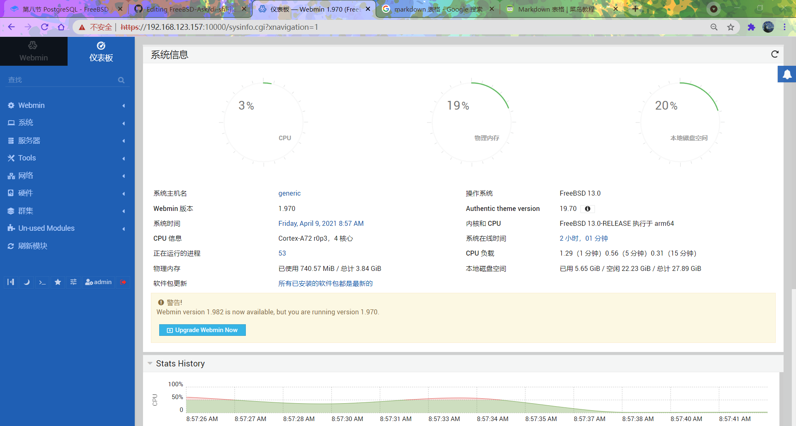
切换中文：
Webmin -> Change Language and Theme，在 Change Language and Theme 的 Webmin UI language 字段中，先选择 Personal choice 再选择 Simplified Chinese(ZH_CN.UTF8) 点击 Make Changes按钮，然后点击菜单 ->Dashboard 控制台会刷新为中文界面。
第 16.11 节 rsync 同步服务
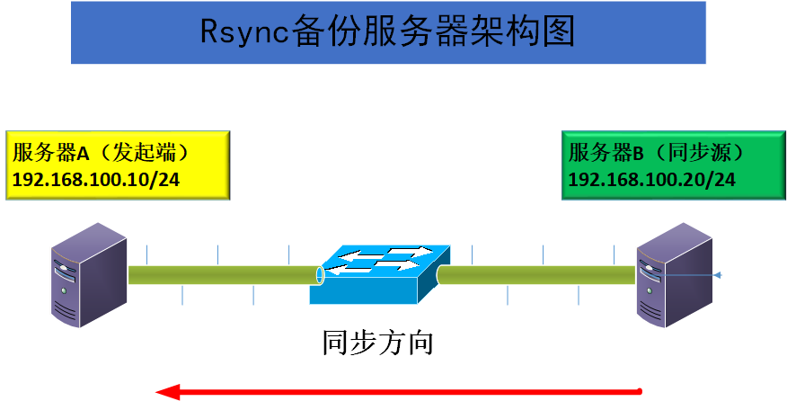
环境介绍
服务器 A、服务器 B 均为 FreeBSD-12.2-RELEASE-amd64
服务器 A（发起端）：192.168.100.10/24
服务器 B（同步源）：192.168.100.20/24
设计需求 ：实现服务器 B 的数据同步到服务器 A 上
服务器 B（同步源）配置
安装 rsync 软件包
# pkg install -y rsync
查询已安装 rsync 软件包的信息
# pkg info | grep rsync
rsync-3.2.3
新建需要备份的文件夹 test，并且设置其属主为 root，以及在其内部新建测试文件
# mkdir test
# chown root /home/test/
# cd /home/test/
# touch txt001
编辑 rsyncd.conf 文件
# ee /usr/local/etc/rsync/rsyncd.conf
uid = root
#服务端操作系统的用户
gid = wheel
#服务端操作系统的用户的组
use chroot = yes
#禁锢在源目录
address = 192.168.100.20
#监听地址
port 873
#用于通信的 TCP 端口，缺省是 873
log file = /var/log/rsyncd.log
#日志文件位置
pid file = /var/run/rsyncd.pid
#存档进程 ID 的文件位置
hosts allow = 192.168.100.0/24
#允许访问的客户机地址
[testcom]
#共享模块名称，自定义的名称，不一定要与同步目录相同
path = /home/test
#同步的目录名，必须是 uid 参数指定的用户和 gid 参数指定的组
comment = testcombackup
#模块说明文字
read only = yes
#是否为只读
dont compress = *.gz *.tgz *.zip *.z *.Z *.rpm *.deb *.bz2
#同步时不再压缩的文件类型
auth users = root
#授权账户
secrets file = /etc/rsyncd_users.db
#定义rsync客户端用户认证的密码文件
创建授权备份账户认证的密码文件(服务端)
# ee /etc/rsyncd_users.db
root:12345678 #格式为 授权账户用户名：密码。支持多个用户，一行一个即可。
修改数据文件权限
# chmod 600 /etc/rsyncd_users.db
rsync 的服务名是 rsyncd，启动 rsync 服务程序
# rsync --daemon #启动服务
# sysrc rsyncd_enable="YES" #设置开机自启动
# /usr/local/etc/rc.d/rsyncd start #启动服务
查看 rsync 运行端口号
# sockstat | grep rsync
root rsync 1185 4 dgram -> /var/run/logpriv
root rsync 1185 5 tcp4 192.168.100.20:873 *:*
防火墙放行 rsync 服务
# ee /etc/ipfw.rules
IPF="ipfw -q add"
ipfw -q -f flush
#loopback
$IPF 10 allow all from any to any via lo0
$IPF 20 deny all from any to 127.0.0.0/8
$IPF 30 deny all from 127.0.0.0/8 to any
$IPF 40 deny tcp from any to any frag
# statefull
$IPF 50 check-state
$IPF 60 allow tcp from any to any established
$IPF 70 allow all from any to any out keep-state
$IPF 80 allow icmp from any to any
# open port for ssh
$IPF 110 allow tcp from any to any 22 out
$IPF 120 allow tcp from any to any 22 in
# open port for rsync
$IPF 130 allow tcp from any to any 873 in
# deny and log everything
$IPF 500 deny log all from any to any
服务器 A（发起端）配置
创建本地文件夹 /home/testBackUp/ 并设置好相关权限
# mkdir testBackUp
# chown root:root testBackUp
发起端访问同步源，将文件下载到本地 /home/testBackUp/ 下载目录下，需要人机交互手动输入密码
# rsync -avz root@192.168.100.20::testcom /home/testBackUp
testcom 是要从服务器同步的目录，由上方 /usr/local/etc/rsync/rsyncd.conf 自定义。
指定密码文件方式
创建授权备份账户认证的密码文件(客户端)
# ee /etc/rsyncd_users.db 12345678 #格式：密码进行同步：
# rsync -auvz --progress --password-file=/etc/rsyncd_users.db root@192.168.100.20::testcom /home/testBackUp
查看同步情况
# ls -l /home/testBackUp/
total 0
-rw-r--r-- 1 root root 0 Feb 2 22:27 txt001
第 16.12 节 时间服务
目的：
- 配置时区
- 同步时间
选择正确时区
安装操作系统的时候选择正确的时区
配置时区
# cp /usr/share/zoneinfo/Asia/Shanghai /etc/localtime
配置同步时间
设置 ntp 服务可用
# sysrc ntpd_enable="YES"
设置 ntp 服务开机时候启动
# sysrc ntpd_sync_on_start="YES"
编辑 ntp.conf文件
# ee /etc/ntp.conf
添加附加时钟服务器
server time.windows.com
server 0.cn.pool.ntp.org
server 1.cn.pool.ntp.org
server 2.cn.pool.ntp.org
server 3.cn.pool.ntp.org
设置 ntp 服务开机自启动（上面已设置，此处可选）
# /etc/rc.d/ntpd enable
或
# service ntpd enable
启动 ntp 服务
# /etc/rc.d/ntpd start
或
# service ntpd start
重启 ntp 服务
# /etc/rc.d/ntpd restart
或
# service ntpd restart
显示当前时间
# date
手动同步时间（可选）
# ntpdate time.windows.com
# ntpdate -u pool.ntp.org # 当时间相差较大时必须使用该命令，其他命令不会生效
第 16.13 节 Wildfly
安装
目前在 Ports 中提供了 wildfly10、wildfly11、wildfly12、wildfly13、wildfly14、wildfly15、wildfly16、wildfly17、wildfly18、wildfly24、wildfly25、wildfly26 等多个版本。
在此以 wildfly26 为例：
# pkg install wildfly26
配置
在 /etc/hosts 增加以下代码，其中 server02 为本机 hostname（主机名，安装时设置的）。
127.0.0.1 server02
还需要一些其他设置：
# sysrc wildfly26_enable="yes"
# sysrc wildfly26_args="-Djboss.bind.address=0.0.0.0 -Djboss.bind.address.management=0.0.0.0"
# sysrc wildfly26_log_stdout="/dev/null"
# sysrc wildfly26_log_stderr="/dev/null"
然后启动服务：
# service wildfly26 start
打开 http://127.0.0.1:8080 即可检验服务状态。
可选
还可以用
/usr/local/wildfly26/bin/add-user.sh生成管理员账户，
故障排除
如果服务无法正常启动，可以通过 /usr/local/wildfly26/standalone/log/server.log 查看错误日志。
第 16.14 节 Slurm
参考文献：
第 16.15 节 MinIO 对象存储服务
MinIO 是一个由 Golang 编写的、与 S3 兼容的对象存储服务。
单机部署
安装 MinIO
# pkg install minio
配置
- 启用 MinIO。
# sysrc minio_enable=yes
- 设置 MinIO 存储路径。此处路径配置需重点关注，手动创建文件夹会有权限问题，最好是让 minio 服务自动创建相关文件夹。
# sysrc minio_disks=/mnt/minio # 此处路径根据自己的需要配置
- 自定义 MinIO 服务端口。MinIO 会启动两个服务端口，分别是
address和console_address。其中address服务端口默认为 9000，而console_address服务端口默认是随机的。
# sysrc minio_address=":9100" # 此端口默认为 9000，我这里修改为 9100
# sysrc minio_console_address=":9101" # 此端口如果不配置，服务重启后会随机变化，我这里设置为 9101
- 更多相关的参数配置可以在
/usr/local/etc/rc.d/minio文件中找到。
启动
# service minio start
启动完成后访问地址为 http://localhost:9100。
本章节为基础必备知识
第 17.1 节 Apache
安装
# cd /usr/ports/www/apache24/ && make install clean
或
# pkg install apache24
启动服务
# 添加服务开机自启
# sysrc apache24_enable=YES
# 启动服务
# service apache24 start
# 查看状态
# service apache24 status
按理来说，apache 服务已经启动了，现在可以打开网址 localhost 看一下。
第 17.2 节 Nginx
安装
- pkg:
# pkg install nginx
或
- ports:
# cd /usr/ports/www/nginx/ && make install clean
查找相关的软件包
- ports:
$ ls /usr/ports/www/ | grep nginx - pkg:
$ pkg search -o nginx
配置
本文仅简单说明 FreeBSD 中如何启动 Nginx 及 Nginx 的配置文件。
启动
# sysrc nginx_enable=YES
# service nginx start
你可以通过$ sockstat -4 | grep nginx检查 nginx 是否启动并正常运行。
配置文件
在 FreeBSD 中，Nginx 的配置文件位于 /usr/local/etc/nginx/ 中，而主要的配置文件则在 /usr/local/etc/nginx/nginx.conf。
默认配置中 Nginx 的根目录为 /usr/local/www/nginx/，如果需要更改目录位置，请将 /usr/local/etc/nginx/nginx.conf 中的
root /usr/local/www/nginx;
改成你想要的目录位置，例如 root /path/to/new/webroot
示例文件（Nginx + Typecho 伪静态 + SSL）
#user nobody;
worker_processes 1;
# This default error log path is compiled-in to make sure configuration parsing
# errors are logged somewhere, especially during unattended boot when stderr
# isn't normally logged anywhere. This path will be touched on every nginx
# start regardless of error log location configured here. See
# https://trac.nginx.org/nginx/ticket/147 for more info.
#
#error_log /var/log/nginx/error.log;
#
#pid logs/nginx.pid;
events {
worker_connections 1024;
}
http {
include mime.types;
default_type application/octet-stream;
#log_format main '$remote_addr - $remote_user [$time_local] "$request" '
# '$status $body_bytes_sent "$http_referer" '
# '"$http_user_agent" "$http_x_forwarded_for"';
#access_log logs/access.log main;
sendfile on;
#tcp_nopush on;
#keepalive_timeout 0;
keepalive_timeout 65;
#gzip on;
server {
listen 80;
server_name localhost;
#charset koi8-r;
#access_log logs/host.access.log main;
location / {
root /usr/local/www/nginx;
index index.html index.htm index.php;
if (-f $request_filename/index.html){
rewrite (.*) $1/index.html break;
}
if (-f $request_filename/index.php){
rewrite (.*) $1/index.php;
}
if (!-f $request_filename){
rewrite (.*) /index.php;}
}
location ~ .*.php(/.*)*$ {
root /usr/local/www/nginx;
fastcgi_pass 127.0.0.1:9000;
fastcgi_index index.php;
fastcgi_param SCRIPT_FILENAME $request_filename;
include fastcgi_params;
}
#location ~ .*.php(/.*)*$ {
# include fastcgi_params;
# fastcgi_pass 127.0.0.1:9000;
# }
#error_page 404 /404.html;
# redirect server error pages to the static page /50x.html
#
error_page 500 502 503 504 /50x.html;
location = /50x.html {
root /usr/local/www/nginx-dist;
}
# proxy the PHP scripts to Apache listening on 127.0.0.1:80
#
#location ~ .php$ {
# proxy_pass http://127.0.0.1;
#}
# pass the PHP scripts to FastCGI server listening on 127.0.0.1:9000
#
location ~ .*.php(/.*)*$ {
root /usr/local/www/nginx;
fastcgi_pass 127.0.0.1:9000;
fastcgi_index index.php;
fastcgi_param SCRIPT_FILENAME $request_filename;
include fastcgi_params;
}
# deny access to .htaccess files, if Apache's document root
# concurs with nginx's one
#
#location ~ /.ht {
# deny all;
#}
}
# another virtual host using mix of IP-, name-, and port-based configuration
#
#server {
# listen 8000;
# listen somename:8080;
# server_name somename alias another.alias;
# location / {
# root html;
# index index.html index.htm;
# }
#}
# HTTPS server
#
server {
listen 443;
server_name localhost;
ssl_certificate /usr/local/etc/nginx/fbxs.crt;
ssl_certificate_key /usr/local/etc/nginx/fbxs.key;
ssl on;
ssl_certificate fbxs.crt;
ssl_certificate_key fbxs.key;
ssl_session_timeout 5m;
ssl_protocols TLSv1 TLSv1.1 TLSv1.2; #按照这个协议配置
ssl_ciphers ECDHE-RSA-AES128-GCM-SHA256:HIGH:!aNULL:!MD5:!RC4:!DHE;#按照这个套件配置
ssl_prefer_server_ciphers on;
location ~ .*.php(/.*)*$ {
root /usr/local/www/nginx-dist;
fastcgi_pass 127.0.0.1:9000;
fastcgi_index index.php;
fastcgi_param SCRIPT_FILENAME $request_filename;
include fastcgi_params;
}
location / {
root /usr/local/www/nginx-dist;
index index.php;
}
}
}
第 17.3 节 PHP 8.X
注意
不同的 PHP 模块之间是有冲突的，因此会造成 ports 编译失败，不要试图全选所有的 PHP 插件选项。因此推荐使用 pkg 进行安装。
# pkg install php82
注意
82这个数字是会变动的。可以先 pkg search -o php 看看当前的版本是多少再安装。
参考资料
第 17.4 节 MySQL 5.X
警告
MySQL 5.X 已经不再维护，使用该软件风险自负。
mysql 5.5/5.6
安装
现在源里已经没有了，参见 https://www.freshports.org/databases/mysql56-server、https://www.freshports.org/databases/mysql55-server。
可以拉取旧版的 ports 编译安装：
- mysql 5.6：
# git clone https://github.com/freebsd/freebsd-ports /usr/ports
# cd /usr/ports && git checkout 5u623l20
# cd /usr/ports/databases/mysql56-server/ && make install clean
- mysql 5.5
# git clone https://github.com/freebsd/freebsd-ports /usr/ports
# cd /usr/ports && git checkout 9f0ff92
# cd /usr/ports/databases/mysql55-server/ && make install clean
启动服务
# sysrc mysql_enable="YES"
# service mysql-server start
配置
# mysql_secure_installation
输出：
root@ykla:~ # mysql_secure_installation
NOTE: RUNNING ALL PARTS OF THIS SCRIPT IS RECOMMENDED FOR ALL MySQL
SERVERS IN PRODUCTION USE! PLEASE READ EACH STEP CAREFULLY!
In order to log into MySQL to secure it, we'll need the current
password for the root user. If you've just installed MySQL, and
you haven't set the root password yet, the password will be blank,
so you should just press enter here.
Enter current password for root (enter for none):
OK, successfully used password, moving on...
Setting the root password ensures that nobody can log into the MySQL
root user without the proper authorisation.
Set root password? [Y/n] y
New password:
Re-enter new password:
Password updated successfully!
Reloading privilege tables..
... Success!
By default, a MySQL installation has an anonymous user, allowing anyone
to log into MySQL without having to have a user account created for
them. This is intended only for testing, and to make the installation
go a bit smoother. You should remove them before moving into a
production environment.
Remove anonymous users? [Y/n] y
... Success!
Normally, root should only be allowed to connect from 'localhost'. This
ensures that someone cannot guess at the root password from the network.
Disallow root login remotely? [Y/n] n
... skipping.
By default, MySQL comes with a database named 'test' that anyone can
access. This is also intended only for testing, and should be removed
before moving into a production environment.
Remove test database and access to it? [Y/n] n
... skipping.
Reloading the privilege tables will ensure that all changes made so far
will take effect immediately.
Reload privilege tables now? [Y/n]
... Success!
All done! If you've completed all of the above steps, your MySQL
installation should now be secure.
Thanks for using MySQL!
Cleaning up...
使用
登录
# mysql -u root -p
示例输出
root@ykla:~ # mysql -u root -p
Enter password:
Welcome to the MySQL monitor. Commands end with ; or g.
Your MySQL connection id is 12
Server version: 5.6.51 Source distribution
Copyright (c) 2000, 2021, Oracle and/or its affiliates. All rights reserved.
Oracle is a registered trademark of Oracle Corporation and/or its
affiliates. Other names may be trademarks of their respective
owners.
Type 'help;' or 'h' for help. Type 'c' to clear the current input statement.
mysql> show databases;
+--------------------+
| Database |
+--------------------+
| information_schema |
| mysql |
| performance_schema |
| test |
+--------------------+
4 rows in set (0.00 sec)
mysql>
mysql 5.7
注意：如果是从旧版本升级，请先执行 mysql_upgrade
安装
以下二选一
# pkg install mysql57-server
# 或
# cd /usr/ports/databases/mysql57-server/ && make install clean
启动服务
# sysrc mysql_enable=YES
# service mysql-server start
示例输出(可以看到密码在 /root/.mysql_secret 文件夹下，是 q(<p2ZZ>lX/:
root@ykla:~ # sysrc mysql_enable=YES
mysql_enable: -> YES
root@ykla:~ # service mysql-server start
Starting mysql.
root@ykla:~ # cat /root/.mysql_secret
# Password set for user 'root@localhost' at 2021-12-13 00:21:02
q(<p2ZZ>lX/:
root@ykla:~ #
尝试登录
登录出现报错，提示需要修改密码。
root@ykla:~ # mysql -u root -p
Enter password:
Welcome to the MySQL monitor. Commands end with ; or g.
Your MySQL connection id is 2
Server version: 5.7.36-log
Copyright (c) 2000, 2021, Oracle and/or its affiliates.
Oracle is a registered trademark of Oracle Corporation and/or its
affiliates. Other names may be trademarks of their respective
owners.
Type 'help;' or 'h' for help. Type 'c' to clear the current input statement.
root@localhost [(none)]> show databases;
ERROR 1820 (HY000): You must reset your password using ALTER USER statement before executing this statement.
root@localhost [(none)]>
修改密码
将现在的密码修改为 your_new_password，然后刷新权限。
root@localhost [(none)]> SET PASSWORD = PASSWORD('your_new_password');
Query OK, 0 rows affected, 1 warning (0.00 sec)
root@localhost [(none)]> flush privileges;
Query OK, 0 rows affected (0.00 sec)
正常登录
root@ykla:~ # mysql -u root -p
Enter password:
Welcome to the MySQL monitor. Commands end with ; or g.
Your MySQL connection id is 3
Server version: 5.7.36-log Source distribution
Copyright (c) 2000, 2021, Oracle and/or its affiliates.
Oracle is a registered trademark of Oracle Corporation and/or its
affiliates. Other names may be trademarks of their respective
owners.
Type 'help;' or 'h' for help. Type 'c' to clear the current input statement.
root@localhost [(none)]> show databases;
+--------------------+
| Database |
+--------------------+
| information_schema |
| mysql |
| performance_schema |
| sys |
+--------------------+
4 rows in set (0.00 sec)
root@localhost [(none)]>
第 17.5 节 MySQL 8.X
mysql 80
安装
# pkg install mysql80-server
或编译安装：
# cd /usr/ports/databases/mysql80-server/ && make install clean
启动服务
# sysrc mysql_enable="YES"
# service mysql-server start
登录
mysql 8.0 默认密码是空，直接回车即可。
root@ykla:~ # mysql -uroot -p
Enter password:
Welcome to the MySQL monitor. Commands end with ; or g.
Your MySQL connection id is 8
Server version: 8.0.27 Source distribution
Copyright (c) 2000, 2021, Oracle and/or its affiliates.
Oracle is a registered trademark of Oracle Corporation and/or its
affiliates. Other names may be trademarks of their respective
owners.
Type 'help;' or 'h' for help. Type 'c' to clear the current input statement.
root@localhost [(none)]>
修改密码
设置密码为 z，然后刷新权限。
root@localhost [(none)]> alter user 'root'@'localhost' identified by 'z';
Query OK, 0 rows affected (0.02 sec)
root@localhost [(none)]> flush privileges;
Query OK, 0 rows affected (0.00 sec)
重新登录：
root@localhost [(none)]> quit;
Bye
root@ykla:~ # mysql -uroot -p
Enter password:
Welcome to the MySQL monitor. Commands end with ; or g.
Your MySQL connection id is 9
Server version: 8.0.27 Source distribution
Copyright (c) 2000, 2021, Oracle and/or its affiliates.
Oracle is a registered trademark of Oracle Corporation and/or its
affiliates. Other names may be trademarks of their respective
owners.
Type 'help;' or 'h' for help. Type 'c' to clear the current input statement.
root@localhost [(none)]> show databases;
+--------------------+
| Database |
+--------------------+
| information_schema |
| mysql |
| performance_schema |
| sys |
+--------------------+
4 rows in set (0.01 sec)
root@localhost [(none)]>
第 17.6 节 Typecho
一个完整的示例见 Nginx 部分。
第 17.7 节 SSL 配置
传输层安全性协议（英语：Transport Layer Security，缩写：TLS）及其前身安全套接层（英语：Secure Sockets Layer，缩写：SSL）是一种安全协议，目的是为互联网通信提供安全及数据完整性保障。网景公司（Netscape）在 1994 年推出首版网页浏览器－网景导航者时，推出 HTTPS 协议，以 SSL 进行加密，这是 SSL 的起源。IETF 将 SSL 进行标准化，1999 年公布 TLS 1.0 标准文件（RFC 2246）。随后又公布 TLS 1.1（RFC 4346，2006 年）、TLS 1.2（RFC 5246，2008 年）和 TLS 1.3（RFC 8446，2018 年）。在浏览器、电子邮件、即时通信、VoIP、网络传真等应用程序中，广泛使用这个协议。目前已成为互联网上保密通信的工业标准。
一个完整的示例见 Nginx 部分。
第 17.8 节 PostgreSQL 与 pgAdmin4
PostgreSQL
PostgreSQL 是一款自由的对象-关系型数据库，最早发布于 1989 年 6 月。 在 FreeBSD 上，提供了 9.6、10、11、12、13、14 共计 6 个大版本可选。在多方面均优于 mysql。
postgresql 安装示例，6 个版本都如此。
安装
# pkg install -y postgresql96-server
或者
cd /usr/ports/databases/postgresql96-server/ && make install clean
加入启动项
# sysrc postgresql_enable=YES
初始化数据库
/usr/local/etc/rc.d/postgresql initdb
示例输出：
root@ykla:~ # /usr/local/etc/rc.d/postgresql initdb
The files belonging to this database system will be owned by user "postgres".
This user must also own the server process.
The database cluster will be initialized with locales
COLLATE: C
CTYPE: C.UTF-8
MESSAGES: C.UTF-8
MONETARY: C.UTF-8
NUMERIC: C.UTF-8
TIME: C.UTF-8
The default text search configuration will be set to "english".
Data page checksums are disabled.
creating directory /var/db/postgres/data96 ... ok
creating subdirectories ... ok
selecting default max_connections ... 100
selecting default shared_buffers ... 128MB
selecting default timezone ... PRC
selecting dynamic shared memory implementation ... posix
creating configuration files ... ok
running bootstrap script ... ok
performing post-bootstrap initialization ... ok
syncing data to disk ... ok
WARNING: enabling "trust" authentication for local connections
You can change this by editing pg_hba.conf or using the option -A, or
--auth-local and --auth-host, the next time you run initdb.
Success. You can now start the database server using:
/usr/local/bin/pg_ctl -D /var/db/postgres/data96 -l logfile start
root@ykla:~ #
登录使用
Postgresql 默认是没有 root 用户的，需要使用其创建的 postgres 用户登录。
示例输出:
root@ykla:~ # psql
psql: FATAL: role "root" does not exist
正确用法：
#切换用户
root@ykla:~ # su - postgres
#启动服务
$ /usr/local/bin/pg_ctl -D /var/db/postgres/data96 -l logfile start
#创建新用户 ykla，并设置密码
$ createuser -sdrP ykla
Enter password for new role:
Enter it again:
$
#创建数据库
$ createdb new_db
#登录进数据库并将数据库权限赋予用户 ykla。
$ psql
psql (9.6.24)
Type "help" for help.
postgres=# ALTER USER ykla WITH ENCRYPTED PASSWORD 'password';
ALTER ROLE
postgres=#
postgres=# GRANT ALL PRIVILEGES ON DATABASE new_db TO ykla;
GRANT
#退出数据库
postgres=# q
$exit
root@ykla:~ #
安装 pgAdmin4
以下教程以 FreeBSD 13.0 为基准。
pgAdmin4 是用于管理 PostgreSQL 数据库服务器的最流行的开源应用程序。pgAdmin4 提供功能丰富的图形用户界面，轻松管理数据库。它是用 Python 和 Javascript / jQuery 编写的。它可以在多种环境中使用，如 Linux，Windows，Unix，可在桌面和服务器模式下使用。
注意：在安装 pgAdmin4 前先行安装 PostgreSQL 数据库，否则安装 pgAdmin4 会失败。
pgAdmin4 需要在 python 环境下运行，并且安装时要通过 python 的 pip 进行安装，所以先安装 python。 本文用的默认版本是 Python3.8，请注意，FreeBSD 13 系统上默认没有 python 环境。 可通过以下命令查看：
# python
python: Command not found #说明当前没有 python 命令
安装 Python 及 pip
# pkg install python
pip 是 Python 包的包管理器。它用于安装和管理 Python 包和依赖包的关系。
virtualenv 用来建立一个虚拟的 python 环境，一个专属于项目的 python 环境。
本文实际安装过程中是通过 virtualenv 创建独立的 Python 环境来安装 pgAdmin4。
从 py38-pip 包安装 pip：
# pkg install py38-pip
安装配置 virtualenv
使用 virtualenv 创建独立的 Python 环境。 Virtualenv 会创建一个自己的 Python 安装的环境，它不支持具有全局或另一个虚拟环境的库。 运行以下命令来安装 Virtualenv。
# pkg install py38-virtualenv （本次安装 python 版本是 3.8 故使用 py38）
通过运行以下命令为 pgAdmin4 创建虚拟环境
# virtualenv-3.8 pgadmin4
如果创建完成则有如下显示，在 root 用户的根目录下生成了一个名为 pgadmin4 的虚拟环境。
Using base prefix '/usr/local'
New python executable in /home/vagrant/pgadmin4/bin/python3.8
Also creating executable in /home/vagrant/pgadmin4/bin/python
Installing setuptools, pip, wheel…done.
done.
安装 sqlite3
#pkg install py38-sqlite3
激活创建的虚拟环境.
#source pgadmin4/bin/activate.csh
你会看到 shell 已经变为（pgadmin4）（以下操作均在该 shell 下进行）
实例如下：
(pgadmin4) root@ykla:~ #
安装 pgAdmin4：
现在 pip 源一律要求使用 https，由于缺少 SSL 证书还需要安装。
(pgadmin4) root@ykla:~# pkg install ca_root_nss
然后对 pip 进行换源，此处使用清华源：
pip config set global.index-url https://pypi.tuna.tsinghua.edu.cn/simple
其中有依赖 openjpeg，先进行安装
(pgadmin4) root@ykla:~# pkg install openjpeg
如果报错：
WARNING: Retrying (Retry(total=3, connect=None, read=None, redirect=None, status=None)) after connection broken by 'SSLError(SSLCertVerificationError(1, '[SSL: CERTIFICATE_VERIFY_FAILED] certificate verify failed: certificate is not yet valid (_ssl.c:1136)'))': /simple/pgadmin4/
是由于时间不正确引发的，先同步时间:
ntpdate ntp.api.bz
(pgadmin4) root@ykla:~# ntpdate ntp.api.bz
17 Dec 16:35:36 ntpdate[1453]: step time server 114.118.7.161 offset +401965.911037 sec
然后再安装 pgAmdin4 及其依赖环境 rust：
(pgadmin4) root@ykla:~# pkg install rust
(pgadmin4) root@ykla:~# pip install pgadmin4
注意：如果内存不足（小于 4GB）且没有 swap，会提示 killed，如出现该问题请先添加一块 swap。
配置并运行 pgAdmin4
安装完成后为 pgAdmin4 创建配置文件,复制 pgAdmin4 配置文件：
(pgadmin4) root@ykla:~# cp ./pgadmin4/lib/python3.8/site-packages/pgadmin4/config.py ./pgadmin4/lib/python3.8/site-packages/pgadmin4/config_local.py
使用 ee 编辑器编辑配置文件的本地副本。
(pgadmin4) root@ykla:~# ee ./pgadmin4/lib/python3.8/site-packages/pgadmin4/config_local.py
找到 DEFAULT_SERVER 将默认服务器侦听地址更改为 0.0.0.0。找到 DEFAULT_SERVER_PORT 可改应用程序监听的端口。
实例如下:
DEFAULT_SERVER = '0.0.0.0'
DEFAULT_SERVER_PORT = 5050
手动创建软件目录：
(pgadmin4) root@ykla:~# mkdir -p /var/lib/pgadmin
(pgadmin4) root@ykla:~# mkdir /var/log/pgadmin
配置文件编辑完成后执行以下命令来初始化账号和登录密码。
(pgadmin4) root@ykla:~# pgadmin4
显示实例如下：
NOTE: Configuring authentication for SERVER mode.
Enter the email address and password to use for the initial pgAdmin user account:
Email address: your_email //输入你的邮件地址
Password: your_new_password //输入你的登录密码
Retype password: //再次输入密码
Starting pgAdmin 4. Please navigate to http://0.0.0.0:5050 in your browser.
现在我们已经安装并运行了 pgAdmin4，并可以通过 http://ip:5050 访问 Web 控制面板：


保持 pgAdmin4 后台运行
如果服务关闭下次要运行时需使用 pgadmin4 的安装用户（此处是 root）进入根目录，执行如下命令：
root@ykla:~# source pgadmin4/bin/activate.csh
(pgadmin4) root@ykla:~# pgadmin4 &
提示：& 表示后台运行
服务启动后在当前界面中输入 & 按回车键,可切换至前台命令行，让服务程序在后台运行。
升级 pgAdmin4
本文测试如果直接使用 pip 升级后还是提示旧版本。
pgadmin4 更新频率较高，如需升级要先删除原有用 virtualenv 创建的 pgadmin4 目录然后用安装用户再次执行如下指令：
root@ykla:~# virtualenv-3.8 pgadmin4
虚拟目录创建完成后激活
root@ykla:~# source pgadmin4/bin/activate.csh
激活后不要开启服务，直接执行升级
(pgadmin4) root@ykla:~# pip install --upgrade pgadmin4
完成升级后启动服务
(pgadmin4) root@ykla:~# pgadmin4
登录帐号和密码还是原来的(登陆后再无更新提示，查看版本已是为最新)。
第 17.9 节 Telegraf+InfluxDB+Grafana 监控平台
InfluxDB
InfluxDB 是一个用于存储和分析时间序列数据的开源数据库。
InfluxDB 安装与配置
安装
# pkg install influxdb
或者
cd /usr/ports/databases/influxdb/ && make install clean
加入启动项
# sysrc influxd_enable="YES"
启动服务
# service influxd start
修改配置
配置文件路径为 /usr/local/etc/influxd.conf
# vim /usr/local/etc/influxd.conf
修改完成后重启服务：
# service influxd restart
使用
连接数据库
# influx
创建数据库
# CREATE DATABASE mydb
查看数据库
# SHOW DATABASES
创建用户名和密码
# CREATE USER username WITH PASSWORD 'password'
Telegraf
安装
# pkg install telegraf
加入启动项
# sysrc telegraf_enable="YES"
配置
配置文件路径：/usr/local/etc/telegraf.conf
配置 influxdb 连接
我们用的是 influxdb-1.8 的版本，在配置文件中配置如下内容：
# 配置 influxdb 连接内容，此处的内容和上面配置的 InfluxDB 数据库连接账号密码
[[outputs.influxdb]]
urls = ["http://127.0.0.1:8086"]
database = "my_db"
username = "username"
password = "password"
配置采集指标
这里会收集系统 cpu、disk、diskio、memory、swap 等相关指标。下面是 telegraf 配置文件中的部分内容，部分是默认开放，部分需要手动放开注释参数，详情请看官方文档。
# Read metrics about cpu usage
[[inputs.cpu]]
## Whether to report per-cpu stats or not
percpu = true
## Whether to report total system cpu stats or not
totalcpu = true
## Comment this line if you want the raw CPU time metrics
fielddrop = ["time_*"]
# Read metrics about disk usage by mount point
[[inputs.disk]]
## By default, telegraf gather stats for all mountpoints.
## Setting mountpoints will restrict the stats to the specified mountpoints.
# mount_points = ["/"]
## Ignore some mountpoints by filesystem type. For example (dev)tmpfs (usually
## present on /run, /var/run, /dev/shm or /dev).
ignore_fs = ["tmpfs", "devtmpfs"]
# Read metrics about disk IO by device
[[inputs.diskio]]
## By default, telegraf will gather stats for all devices including
## disk partitions.
## Setting devices will restrict the stats to the specified devices.
# devices = ["sda", "sdb"]
## Uncomment the following line if you need disk serial numbers.
# skip_serial_number = false
# Get kernel statistics from /proc/stat
[[inputs.kernel]]
# no configuration
# Read metrics about memory usage
[[inputs.mem]]
# no configuration
# Get the number of processes and group them by status
[[inputs.processes]]
# no configuration
# Read metrics about swap memory usage
[[inputs.swap]]
# no configuration
# Read metrics about system load & uptime
[[inputs.system]]
# no configuration
# Read metrics about network interface usage
[[inputs.net]]
# collect data only about specific interfaces
# interfaces = ["eth0"]
[[inputs.netstat]]
# no configuration
[[inputs.interrupts]]
# no configuration
启动服务
# service telegraf start
Grafana
安装
查找 Grafana
pkg search grafana
返回结果如下：
grafana-loki-2.8.1 Scalable, highly-available, multi-tenant log aggregation system
grafana8-8.5.27 Dashboard and graph editor for multiple data stores
grafana9-9.5.5 Dashboard and graph editor for multiple data stores
py39-grafana-dashboard-manager-0.1.3 CLI for saving and restoring Grafana dashboards via HTTP API
rubygem-aws-sdk-managedgrafana-1.15.0 Official AWS Ruby gem for Amazon Managed Grafana
安装
从上面的查询可以看到，有多个版本的 Grafana，这里我们选择 grafana9-9.5.5 这个版本。
# pkg install grafana9-9.5.5
设置系统启动
# sysrc grafana_enable="YES"
启动
启动服务
# service grafana start
使用
登录
默认的登录地址为：http://localhost:3000，默认登录账号密码如下：
admin # 账号
admin # 密码
登录后会要求修改密码，请务必使用强密码！
配置数据源
-
登录后点击左上角的 Toggle Menu -> 选择 Connections -> 选择 Connect data
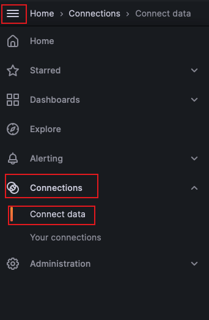
-
在右边的输入框中输入
InfluxDB-> 选择搜索出来的 InfluxDB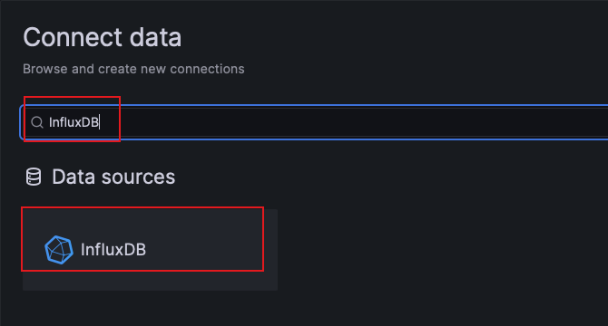
-
点击右上角的 Create a InfluxDB data source 按钮 -> 配置 InfluxDB 相关的内容。
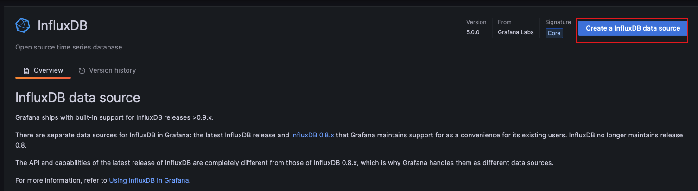
-
在数据源配置页面填写相关的 InfluxDB 连接信息，需配置内容如下：
注意：我们上面使用的是 influxdb1.8，所以选择的查询语言一定要选 InfluxQL
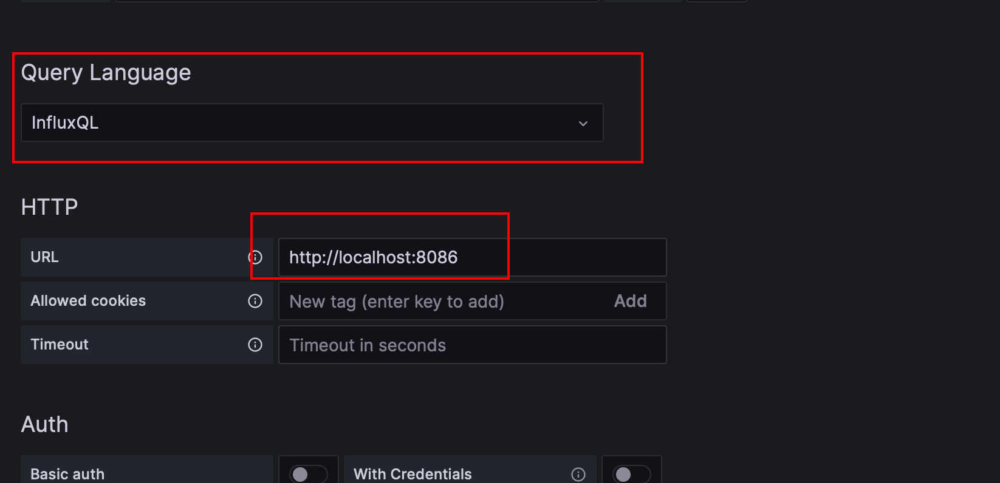
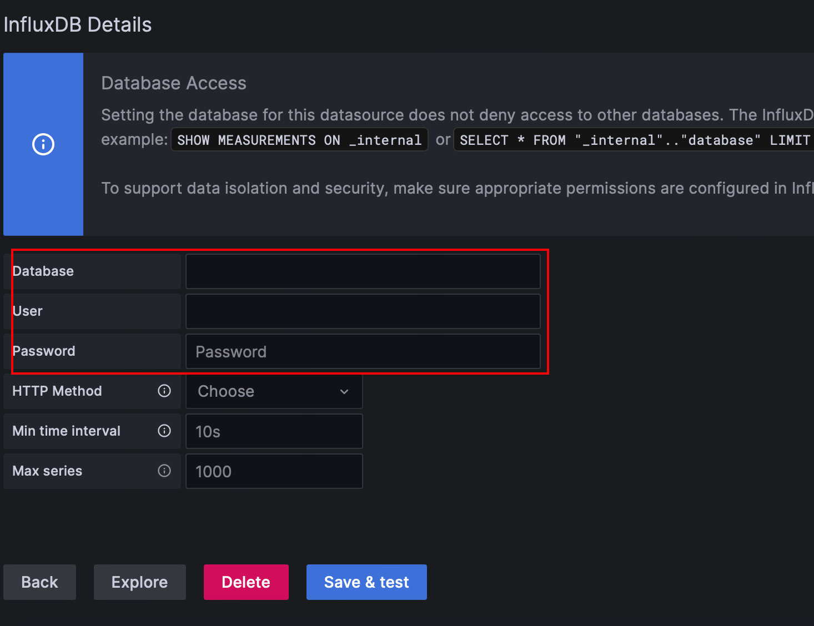
点击
Save & Test按钮保存配置。
配置 Dashboard
选择展示数据的 dashboard，可以自行开发，也可以官方模版库中其他人开发好的模版。这里导入一个 id 为 928 的模版。
-
导入模版，点击右上角的
+->Import dashboard进入导入模版页面。 -
选择 id 为 928 的模版导入
-
模版最终效果
本章节为基础必备知识
第 18.1 节 树莓派的简介
树莓派是什么？
我们的安卓手机，大部分处理器是基于 ARM 芯片的，即使歌曲 华为美 所谓的“中国芯”也是来源于 ARM 的专利授权，没了授权，什么芯也不是。
而树莓派就是一块使用 ARM 芯片的开发板，就是一块接口丰富（ HDMI 、I2C 、USB X 4 、POE 模块等等）的电路板，相当于配置较低的手机，手机能做的事情，树莓派都能做。一般用于嵌入式开发，比如机器人，路由器和监控等等。
FreeBSD 对架构的支持是按照等级划分的，ARM 属于二级架构（FreeBSD 13 升级为一级架构对待），所以软件支持上不如 AMD64，一些软件无法通过 ports 以源码的形式进行编译，比如编译 X11/xorg 就会遇到很多错误（已经报告 bug 列表）。
第 18.2 节 系统安装
自树莓派 3B+ 开始，无需任何改动，系统即可从 U 盘启动，经过测试了 FreeBSD 12/13/14 都是支持的，但是速度非常慢，一方面树莓派 3B+ 使用 USB2.0 极大的限制的总线速度，另一方面可能是玄学问题。（测试用的是东芝（TOSHIBA）64GB USB3.0 U 盘 U364 高速迷你车载 U 盘）。
因此 3B+ 不建议使用 U 盘启动，慢的我要打年年猫，年年猫是谁？是一只调皮的野生狸花猫而已。
我们所有要准备的有树莓派 4 板子一块，网线一段，存储卡一枚。从 https://FreeBSD.org 下载适用于树莓派 4 的镜像:
下载后解压缩。使用 rufus 刻录。插入网线，将存储卡插入树莓派，通电等待约五分钟，查看路由器后台获取 IP。建议最后外接个显示器以免卡住了还不知道还在苦等。
注意： 刻录完需要挂载 FAT 分区 替换里面的所有文件，否则会启动花屏，替换的文件路径为：
https://github.com/FreeBSD-Ask/FreeBSD-rpi4-firmware
【变通方案】FreeBSD 与树莓派 4B 8G 启动失败问题
如果卡彩虹屏不启动，下载 FreeBSD 14 镜像写入后将 FAT 分区内容替换即可（默认分区是隐藏的，使用 diskgenius 激活隐藏分区分配盘符即可）
https://github.com/FreeBSD-Ask/FreeBSD-rpi4-firmware
修改 config.txt 为以下内容：
arm_64bit=1
dtoverlay=disable-bt
dtoverlay=mmc
device_tree_address=0x4000
kernel=u-boot.bin
armstub=armstub8-gic.bin
hdmi_safe=0
force_turbo=0 #超频
arm_freq=2000 #超频
over_voltage=6 #超频
ZFS 与树莓派
如果固件不是最新的，先使用树莓派官方系统更新下固件！
注意
FreeBSD 默认提供的 IMG 镜像使用 UFS 文件系统。想使用 ZFS 的用户可在存储卡上刻录好 img 正常启动。再插入 U 盘，加载 ZFS 模块。运行命令
bsdinstall正常安装（安装位置选择 U 盘）即可。如果想在存储卡上使用 ZFS，反过来用 U 盘进行安装即可。
安装前：（mmcsd0 为存储卡，da0 为 U 盘。要往 U 盘里创建一个使用 zfs 的树莓派 FreeBSD 系统）
使用正常镜像写入存储卡，启动后再插上空白 U 盘， U 盘保持 FAT32 ，MBR 分区表即可。
# gpart show
=> 63 246947777 mmcsd0 MBR (118G)
63 1985 - free - (993K)
2048 102400 1 fat16 [active] (50M)
104448 246835200 2 freebsd (118G)
246939648 8192 - free - (4.0M)
=> 0 246835200 mmcsd0s2 BSD (118G)
0 128 - free - (64K)
128 230057856 1 freebsd-ufs (110G)
230057984 16777216 2 freebsd-swap (8.0G)
=> 63 60088257 da0 MBR (29G)
63 4033 - free - (2.0M)
4096 60084224 1 fat32lba [active] (29G)
一定要先加载 zfs 模块，否则分区会错误 sysctl: unknown oid 'vfs.zfs.min_auto_ashift' 之类的。
# kldload zfs
开始安装：
# bsdinstall
安装后复制固件即可，注意不要覆盖了 EFI 分区原有的东西。
安装后:
ykla@ykla:~ $ gpart show
=> 34 60088253 da0 GPT (29G)
34 6 - free - (3.0K)
40 532480 1 ms-basic-data (260M)
532520 2008 - free - (1.0M)
534528 4194304 2 freebsd-swap (2.0G)
4728832 55357440 3 freebsd-zfs (26G)
60086272 2015 - free - (1.0M)
后续我在存储卡上又安装了一遍，以下为启动输出：
root@ykla:/home/ykla # dmesg
---<<BOOT>>---
GDB: debug ports: uart
GDB: current port: uart
KDB: debugger backends: ddb gdb
KDB: current backend: ddb
WARNING: Cannot find freebsd,dts-version property, cannot check DTB compliance
Copyright (c) 1992-2023 The FreeBSD Project.
Copyright (c) 1979, 1980, 1983, 1986, 1988, 1989, 1991, 1992, 1993, 1994
The Regents of the University of California. All rights reserved.
FreeBSD is a registered trademark of The FreeBSD Foundation.
FreeBSD 14.0-CURRENT aarch64 1400093 #0 main-n264358-474708c334a7: Thu Jul 27 08:02:18 UTC 2023
root@releng1.nyi.freebsd.org:/usr/obj/usr/src/arm64.aarch64/sys/GENERIC arm64
FreeBSD clang version 16.0.6 (https://github.com/llvm/llvm-project.git llvmorg-16.0.6-0-g7cbf1a259152)
WARNING: WITNESS option enabled, expect reduced performance.
VT(efifb): resolution 656x512
module scmi already present!
module firmware already present!
real memory = 8443125760 (8051 MB)
avail memory = 8201211904 (7821 MB)
Starting CPU 1 (1)
Starting CPU 2 (2)
Starting CPU 3 (3)
FreeBSD/SMP: Multiprocessor System Detected: 4 CPUs
random: unblocking device.
random: entropy device external interface
kbd0 at kbdmux0
ofwbus0: <Open Firmware Device Tree>
simplebus0: <Flattened device tree simple bus> on ofwbus0
ofw_clkbus0: <OFW clocks bus> on ofwbus0
clk_fixed0: <Fixed clock> on ofw_clkbus0
clk_fixed1: <Fixed clock> on ofw_clkbus0
clk_fixed2: <Fixed clock> on ofwbus0
clk_fixed3: <Fixed clock> on ofwbus0
simplebus1: <Flattened device tree simple bus> on ofwbus0
simplebus2: <Flattened device tree simple bus> on ofwbus0
regfix0: <Fixed Regulator> on ofwbus0
clk_fixed4: <Fixed clock> disabled on ofwbus0
clk_fixed4: Cannot FDT parameters.
device_attach: clk_fixed4 attach returned 6
clk_fixed4: <Fixed clock> disabled on ofwbus0
clk_fixed4: Cannot FDT parameters.
device_attach: clk_fixed4 attach returned 6
regfix1: <Fixed Regulator> on ofwbus0
regfix2: <Fixed Regulator> on ofwbus0
regfix3: <Fixed Regulator> on ofwbus0
regfix4: <Fixed Regulator> on ofwbus0
simplebus3: <Flattened device tree simple bus> on ofwbus0
simple_mfd0: <Simple MFD (Multi-Functions Device)> mem 0x7d5d2000-0x7d5d2eff on simplebus0
bcm2835_firmware0: <BCM2835 Firmware> on simplebus0
ofw_clkbus1: <OFW clocks bus> on bcm2835_firmware0
clk_fixed4: <Fixed clock> disabled on ofwbus0
clk_fixed4: Cannot FDT parameters.
device_attach: clk_fixed4 attach returned 6
clk_fixed4: <Fixed clock> disabled on ofwbus0
clk_fixed4: Cannot FDT parameters.
device_attach: clk_fixed4 attach returned 6
psci0: <ARM Power State Co-ordination Interface Driver> on ofwbus0
clk_fixed4: <Fixed clock> disabled on ofwbus0
clk_fixed4: Cannot FDT parameters.
device_attach: clk_fixed4 attach returned 6
clk_fixed4: <Fixed clock> disabled on ofwbus0
clk_fixed4: Cannot FDT parameters.
device_attach: clk_fixed4 attach returned 6
clk_fixed4: <Fixed clock> disabled on ofwbus0
clk_fixed4: Cannot FDT parameters.
device_attach: clk_fixed4 attach returned 6
clk_fixed4: <Fixed clock> disabled on ofwbus0
clk_fixed4: Cannot FDT parameters.
device_attach: clk_fixed4 attach returned 6
clk_fixed4: <Fixed clock> disabled on ofwbus0
clk_fixed4: Cannot FDT parameters.
device_attach: clk_fixed4 attach returned 6
clk_fixed4: <Fixed clock> disabled on ofwbus0
clk_fixed4: Cannot FDT parameters.
device_attach: clk_fixed4 attach returned 6
clk_fixed4: <Fixed clock> disabled on ofwbus0
clk_fixed4: Cannot FDT parameters.
device_attach: clk_fixed4 attach returned 6
clk_fixed4: <Fixed clock> disabled on ofwbus0
clk_fixed4: Cannot FDT parameters.
device_attach: clk_fixed4 attach returned 6
clk_fixed4: <Fixed clock> disabled on ofwbus0
clk_fixed4: Cannot FDT parameters.
device_attach: clk_fixed4 attach returned 6
clk_fixed4: <Fixed clock> disabled on ofwbus0
clk_fixed4: Cannot FDT parameters.
device_attach: clk_fixed4 attach returned 6
clk_fixed4: <Fixed clock> disabled on ofwbus0
clk_fixed4: Cannot FDT parameters.
device_attach: clk_fixed4 attach returned 6
clk_fixed4: <Fixed clock> disabled on ofwbus0
clk_fixed4: Cannot FDT parameters.
device_attach: clk_fixed4 attach returned 6
clk_fixed4: <Fixed clock> disabled on ofwbus0
clk_fixed4: Cannot FDT parameters.
device_attach: clk_fixed4 attach returned 6
clk_fixed4: <Fixed clock> disabled on ofwbus0
clk_fixed4: Cannot FDT parameters.
device_attach: clk_fixed4 attach returned 6
clk_fixed4: <Fixed clock> disabled on ofwbus0
clk_fixed4: Cannot FDT parameters.
device_attach: clk_fixed4 attach returned 6
clk_fixed4: <Fixed clock> disabled on ofwbus0
clk_fixed4: Cannot FDT parameters.
device_attach: clk_fixed4 attach returned 6
gic0: <ARM Generic Interrupt Controller> mem 0x40041000-0x40041fff,0x40042000-0x40043fff,0x40044000-0x40045fff,0x40046000-0x40047fff irq 30 on simplebus0
gic0: pn 0x2, arch 0x2, rev 0x1, implementer 0x43b irqs 256
clk_fixed4: <Fixed clock> disabled on ofwbus0
clk_fixed4: Cannot FDT parameters.
device_attach: clk_fixed4 attach returned 6
clk_fixed4: <Fixed clock> disabled on ofwbus0
clk_fixed4: Cannot FDT parameters.
device_attach: clk_fixed4 attach returned 6
clk_fixed4: <Fixed clock> disabled on ofwbus0
clk_fixed4: Cannot FDT parameters.
device_attach: clk_fixed4 attach returned 6
clk_fixed4: <Fixed clock> disabled on ofwbus0
clk_fixed4: Cannot FDT parameters.
device_attach: clk_fixed4 attach returned 6
gpio0: <BCM2708/2835 GPIO controller> mem 0x7e200000-0x7e2000b3 irq 14,15 on simplebus0
gpiobus0: <OFW GPIO bus> on gpio0
gpio1: <Raspberry Pi Firmware GPIO controller> on bcm2835_firmware0
gpiobus1: <GPIO bus> on gpio1
regfix0: Cannot configure GPIO pin: 5
REGNODE_INIT failed: 6
regfix0: Cannot register regulator.
clk_fixed4: <Fixed clock> disabled on ofwbus0
clk_fixed4: Cannot FDT parameters.
device_attach: clk_fixed4 attach returned 6
clk_fixed4: <Fixed clock> disabled on ofwbus0
clk_fixed4: Cannot FDT parameters.
device_attach: clk_fixed4 attach returned 6
regfix2: Cannot set GPIO pin: 6
REGNODE_INIT failed: 6
regfix2: Cannot register regulator.
mbox0: <BCM2835 VideoCore Mailbox> mem 0x7e00b880-0x7e00b8bf irq 13 on simplebus0
clk_fixed4: <Fixed clock> disabled on ofwbus0
clk_fixed4: Cannot FDT parameters.
device_attach: clk_fixed4 attach returned 6
clk_fixed4: <Fixed clock> disabled on ofwbus0
clk_fixed4: Cannot FDT parameters.
device_attach: clk_fixed4 attach returned 6
gpioregulator0: <GPIO controlled regulator> on ofwbus0
clk_fixed4: <Fixed clock> disabled on ofwbus0
clk_fixed4: Cannot FDT parameters.
device_attach: clk_fixed4 attach returned 6
clk_fixed4: <Fixed clock> disabled on ofwbus0
clk_fixed4: Cannot FDT parameters.
device_attach: clk_fixed4 attach returned 6
clk_fixed4: <Fixed clock> disabled on ofwbus0
clk_fixed4: Cannot FDT parameters.
device_attach: clk_fixed4 attach returned 6
clk_fixed4: <Fixed clock> disabled on ofwbus0
clk_fixed4: Cannot FDT parameters.
device_attach: clk_fixed4 attach returned 6
generic_timer0: <ARMv8 Generic Timer> irq 4,5,6,7 on ofwbus0
Timecounter "ARM MPCore Timecounter" frequency 54000000 Hz quality 1000
Event timer "ARM MPCore Eventtimer" frequency 54000000 Hz quality 1000
clk_fixed4: <Fixed clock> disabled on ofwbus0
clk_fixed4: Cannot FDT parameters.
device_attach: clk_fixed4 attach returned 6
clk_fixed4: <Fixed clock> disabled on ofwbus0
clk_fixed4: Cannot FDT parameters.
device_attach: clk_fixed4 attach returned 6
clk_fixed4: <Fixed clock> disabled on ofwbus0
clk_fixed4: Cannot FDT parameters.
device_attach: clk_fixed4 attach returned 6
clk_fixed4: <Fixed clock> disabled on ofwbus0
clk_fixed4: Cannot FDT parameters.
device_attach: clk_fixed4 attach returned 6
clk_fixed4: <Fixed clock> disabled on ofwbus0
clk_fixed4: Cannot FDT parameters.
device_attach: clk_fixed4 attach returned 6
clk_fixed4: <Fixed clock> disabled on ofwbus0
clk_fixed4: Cannot FDT parameters.
device_attach: clk_fixed4 attach returned 6
clk_fixed4: <Fixed clock> disabled on ofwbus0
clk_fixed4: Cannot FDT parameters.
device_attach: clk_fixed4 attach returned 6
clk_fixed4: <Fixed clock> disabled on ofwbus0
clk_fixed4: Cannot FDT parameters.
device_attach: clk_fixed4 attach returned 6
clk_fixed4: <Fixed clock> disabled on ofwbus0
clk_fixed4: Cannot FDT parameters.
device_attach: clk_fixed4 attach returned 6
clk_fixed4: <Fixed clock> disabled on ofwbus0
clk_fixed4: Cannot FDT parameters.
device_attach: clk_fixed4 attach returned 6
clk_fixed4: <Fixed clock> disabled on ofwbus0
clk_fixed4: Cannot FDT parameters.
device_attach: clk_fixed4 attach returned 6
clk_fixed4: <Fixed clock> disabled on ofwbus0
clk_fixed4: Cannot FDT parameters.
device_attach: clk_fixed4 attach returned 6
clk_fixed4: <Fixed clock> disabled on ofwbus0
clk_fixed4: Cannot FDT parameters.
device_attach: clk_fixed4 attach returned 6
clk_fixed4: <Fixed clock> disabled on ofwbus0
clk_fixed4: Cannot FDT parameters.
device_attach: clk_fixed4 attach returned 6
clk_fixed4: <Fixed clock> disabled on ofwbus0
clk_fixed4: Cannot FDT parameters.
device_attach: clk_fixed4 attach returned 6
clk_fixed4: <Fixed clock> disabled on ofwbus0
clk_fixed4: Cannot FDT parameters.
device_attach: clk_fixed4 attach returned 6
clk_fixed4: <Fixed clock> disabled on ofwbus0
clk_fixed4: Cannot FDT parameters.
device_attach: clk_fixed4 attach returned 6
clk_fixed4: <Fixed clock> disabled on ofwbus0
clk_fixed4: Cannot FDT parameters.
device_attach: clk_fixed4 attach returned 6
clk_fixed4: <Fixed clock> disabled on ofwbus0
clk_fixed4: Cannot FDT parameters.
device_attach: clk_fixed4 attach returned 6
clk_fixed4: <Fixed clock> disabled on ofwbus0
clk_fixed4: Cannot FDT parameters.
device_attach: clk_fixed4 attach returned 6
bcm_dma0: <BCM2835 DMA Controller> mem 0x7e007000-0x7e007aff irq 31,32,33,34,35,36,37,38,39,40,41 on simplebus0
usb_nop_xceiv0: <USB NOP PHY> on ofwbus0
clk_fixed4: <Fixed clock> disabled on ofwbus0
clk_fixed4: Cannot FDT parameters.
device_attach: clk_fixed4 attach returned 6
clk_fixed4: <Fixed clock> disabled on ofwbus0
clk_fixed4: Cannot FDT parameters.
device_attach: clk_fixed4 attach returned 6
bcm2835_clkman0: <BCM283x Clock Manager> mem 0x7e101000-0x7e102fff on simplebus0
gpioc0: <GPIO controller> on gpio0
uart0: <PrimeCell UART (PL011)> mem 0x7e201000-0x7e2011ff irq 16 on simplebus0
uart0: debug port (115200,n,8,1)
sdhci_bcm0: <Broadcom 2708 SDHCI controller> mem 0x7e300000-0x7e3000ff irq 24 on simplebus0
mmc0: <MMC/SD bus> on sdhci_bcm0
bcmwd0: <BCM2708/2835 Watchdog> mem 0x7e100000-0x7e100113,0x7e00a000-0x7e00a023,0x7ec11000-0x7ec1101f on simplebus0
bcmrng0: <Broadcom BCM2835/BCM2838 RNG> mem 0x7e104000-0x7e104027 on simplebus0
gpioc1: <GPIO controller> on gpio1
fb0: <BCM2835 VT framebuffer driver> on simplebus0
fb0: keeping existing fb bpp of 32
fbd0 on fb0
WARNING: Device "fb" is Giant locked and may be deleted before FreeBSD 14.0.
VT: Replacing driver "efifb" with new "fb".
fb0: 656x512(656x512@0,0) 32bpp
fb0: fbswap: 1, pitch 2624, base 0x3eab2000, screen_size 1343488
sdhci_bcm1: <Broadcom 2708 SDHCI controller> mem 0x7e340000-0x7e3400ff irq 79 on simplebus1
mmc1: <MMC/SD bus> on sdhci_bcm1
pmu0: <Performance Monitoring Unit> irq 0,1,2,3 on ofwbus0
cpulist0: <Open Firmware CPU Group> on ofwbus0
cpu0: <Open Firmware CPU> on cpulist0
bcm2835_cpufreq0: <CPU Frequency Control> on cpu0
pcib0: <BCM2838-compatible PCI-express controller> mem 0x7d500000-0x7d50930f irq 80,81 on simplebus2
pcib0: hardware identifies as revision 0x304.
pci0: <OFW PCI bus> on pcib0
pcib1: <PCI-PCI bridge> irq 91 at device 0.0 on pci0
pci1: <OFW PCI bus> on pcib1
bcm_xhci0: <VL805 USB 3.0 controller (on the Raspberry Pi 4b)> irq 92 at device 0.0 on pci1
bcm_xhci0: 32 bytes context size, 64-bit DMA
usbus0 on bcm_xhci0
genet0: <RPi4 Gigabit Ethernet> mem 0x7d580000-0x7d58ffff irq 82,83 on simplebus2
genet0: GENET version 5.0 phy 0x0000
miibus0: <MII bus> on genet0
brgphy0: <BCM54213PE 1000BASE-T media interface> PHY 1 on miibus0
brgphy0: 10baseT, 10baseT-FDX, 100baseTX, 100baseTX-FDX, 1000baseT, 1000baseT-master, 1000baseT-FDX, 1000baseT-FDX-master, auto
genet0: Ethernet address: d8:3a:dd:27:a8:b3
clk_fixed4: <Fixed clock> disabled on ofwbus0
clk_fixed4: Cannot FDT parameters.
device_attach: clk_fixed4 attach returned 6
clk_fixed4: <Fixed clock> disabled on ofwbus0
clk_fixed4: Cannot FDT parameters.
device_attach: clk_fixed4 attach returned 6
gpioled0: <GPIO LEDs> on ofwbus0
lock order reversal: (sleepable after non-sleepable)
1st 0xffff000000d0a6f0 LED mtx (LED mtx, sleep mutex) @ /usr/src/sys/dev/led/led.c:298
2nd 0xffffa000019c2c10 Raspberry Pi firmware gpio (Raspberry Pi firmware gpio, sx) @ /usr/src/sys/arm/broadcom/bcm2835/raspberrypi_gpio.c:252
lock order LED mtx -> Raspberry Pi firmware gpio attempted at:
#0 0xffff0000004d2264 at witness_checkorder+0xa98
#1 0xffff00000046dfb0 at _sx_xlock+0x7c
#2 0xffff0000008b107c at rpi_fw_gpio_pin_set+0xe0
#3 0xffff0000001c75c4 at led_create_state+0x158
#4 0xffff000000191474 at gpioled_attach+0x290
#5 0xffff00000049e2a0 at device_attach+0x3f8
#6 0xffff00000049de10 at device_probe_and_attach+0x7c
#7 0xffff0000004a0150 at bus_generic_new_pass+0xfc
#8 0xffff0000004a0100 at bus_generic_new_pass+0xac
#9 0xffff0000004a0100 at bus_generic_new_pass+0xac
#10 0xffff00000049b02c at bus_set_pass+0x4c
#11 0xffff0000003e96c8 at mi_startup+0x1fc
#12 0xffff0000000008ac at virtdone+0x70
uma_zalloc_debug: zone "malloc-64" with the following non-sleepable locks held:
exclusive sleep mutex LED mtx (LED mtx) r = 0 (0xffff000000d0a6f0) locked @ /usr/src/sys/dev/led/led.c:298
stack backtrace:
#0 0xffff0000004d26a8 at witness_debugger+0x5c
#1 0xffff0000004d38ac at witness_warn+0x400
#2 0xffff000000782798 at uma_zalloc_debug+0x30
#3 0xffff000000782318 at uma_zalloc_arg+0x2c
#4 0xffff000000436dc8 at malloc+0x8c
#5 0xffff0000008a6330 at bcm2835_firmware_property+0x44
#6 0xffff0000008b1094 at rpi_fw_gpio_pin_set+0xf8
#7 0xffff0000001c75c4 at led_create_state+0x158
#8 0xffff000000191474 at gpioled_attach+0x290
#9 0xffff00000049e2a0 at device_attach+0x3f8
#10 0xffff00000049de10 at device_probe_and_attach+0x7c
#11 0xffff0000004a0150 at bus_generic_new_pass+0xfc
#12 0xffff0000004a0100 at bus_generic_new_pass+0xac
#13 0xffff0000004a0100 at bus_generic_new_pass+0xac
#14 0xffff00000049b02c at bus_set_pass+0x4c
#15 0xffff0000003e96c8 at mi_startup+0x1fc
#16 0xffff0000000008ac at virtdone+0x70
uma_zalloc_debug: zone "malloc-16" with the following non-sleepable locks held:
exclusive sleep mutex LED mtx (LED mtx) r = 0 (0xffff000000d0a6f0) locked @ /usr/src/sys/dev/led/led.c:298
stack backtrace:
#0 0xffff0000004d26a8 at witness_debugger+0x5c
#1 0xffff0000004d38ac at witness_warn+0x400
#2 0xffff000000782798 at uma_zalloc_debug+0x30
#3 0xffff000000782318 at uma_zalloc_arg+0x2c
#4 0xffff000000436dc8 at malloc+0x8c
#5 0xffff0000007cd648 at bounce_bus_dmamem_alloc+0x50
#6 0xffff0000008a8d80 at bcm2835_mbox_property+0xdc
#7 0xffff0000008a6364 at bcm2835_firmware_property+0x78
#8 0xffff0000008b1094 at rpi_fw_gpio_pin_set+0xf8
#9 0xffff0000001c75c4 at led_create_state+0x158
#10 0xffff000000191474 at gpioled_attach+0x290
#11 0xffff00000049e2a0 at device_attach+0x3f8
#12 0xffff00000049de10 at device_probe_and_attach+0x7c
#13 0xffff0000004a0150 at bus_generic_new_pass+0xfc
#14 0xffff0000004a0100 at bus_generic_new_pass+0xac
#15 0xffff0000004a0100 at bus_generic_new_pass+0xac
#16 0xffff00000049b02c at bus_set_pass+0x4c
#17 0xffff0000003e96c8 at mi_startup+0x1fc
uma_zalloc_debug: zone "malloc-128" with the following non-sleepable locks held:
exclusive sleep mutex LED mtx (LED mtx) r = 0 (0xffff000000d0a6f0) locked @ /usr/src/sys/dev/led/led.c:298
stack backtrace:
#0 0xffff0000004d26a8 at witness_debugger+0x5c
#1 0xffff0000004d38ac at witness_warn+0x400
#2 0xffff000000782798 at uma_zalloc_debug+0x30
#3 0xffff000000782318 at uma_zalloc_arg+0x2c
#4 0xffff000000436dc8 at malloc+0x8c
#5 0xffff0000007cd698 at bounce_bus_dmamem_alloc+0xa0
#6 0xffff0000008a8d80 at bcm2835_mbox_property+0xdc
#7 0xffff0000008a6364 at bcm2835_firmware_property+0x78
#8 0xffff0000008b1094 at rpi_fw_gpio_pin_set+0xf8
#9 0xffff0000001c75c4 at led_create_state+0x158
#10 0xffff000000191474 at gpioled_attach+0x290
#11 0xffff00000049e2a0 at device_attach+0x3f8
#12 0xffff00000049de10 at device_probe_and_attach+0x7c
#13 0xffff0000004a0150 at bus_generic_new_pass+0xfc
#14 0xffff0000004a0100 at bus_generic_new_pass+0xac
#15 0xffff0000004a0100 at bus_generic_new_pass+0xac
#16 0xffff00000049b02c at bus_set_pass+0x4c
#17 0xffff0000003e96c8 at mi_startup+0x1fc
armv8crypto0: CPU lacks AES instructions
Timecounters tick every 1.000 msec
usbus0: 5.0Gbps Super Speed USB v3.0
ZFS filesystem version: 5
ZFS storage pool version: features support (5000)
ugen0.1: <(0x1106) XHCI root HUB> at usbus0
uhub0 on usbus0
uhub0: <(0x1106) XHCI root HUB, class 9/0, rev 3.00/1.00, addr 1> on usbus0
sdhci_bcm0-slot0: Got command interrupt 0x00030000, but there is no active command.
sdhci_bcm0-slot0: ============== REGISTER DUMP ==============
sdhci_bcm0-slot0: Sys addr: 0x00000000 | Version: 0x00009902
sdhci_bcm0-slot0: Blk size: 0x00000000 | Blk cnt: 0x00000000
sdhci_bcm0-slot0: Argument: 0x000001aa | Trn mode: 0x00000000
sdhci_bcm0-slot0: Present: 0x000f0000 | Host ctl: 0x00000001
sdhci_bcm0-slot0: Power: 0x0000000f | Blk gap: 0x00000000
sdhci_bcm0-slot0: Wake-up: 0x00000000 | Clock: 0x00003947
sdhci_bcm0-slot0: Timeout: 0x00000000 | Int stat: 0x00000000
sdhci_bcm0-slot0: Int enab: 0x01ff00bb | Sig enab: 0x01ff00bb
sdhci_bcm0-slot0: AC12 err: 0x00000000 | Host ctl2:0x00000000
sdhci_bcm0-slot0: Caps: 0x00000000 | Caps2: 0x00000000
sdhci_bcm0-slot0: Max curr: 0x00000001 | ADMA err: 0x00000000
sdhci_bcm0-slot0: ADMA addr:0x00000000 | Slot int: 0x00000000
sdhci_bcm0-slot0: ===========================================
sdhci_bcm0-slot0: Got command interrupt 0x00030000, but there is no active command.
sdhci_bcm0-slot0: ============== REGISTER DUMP ==============
sdhci_bcm0-slot0: Sys addr: 0x00000000 | Version: 0x00009902
sdhci_bcm0-slot0: Blk size: 0x00000000 | Blk cnt: 0x00000000
sdhci_bcm0-slot0: Argument: 0x000001aa | Trn mode: 0x00000000
sdhci_bcm0-slot0: Present: 0x000f0000 | Host ctl: 0x00000001
sdhci_bcm0-slot0: Power: 0x0000000f | Blk gap: 0x00000000
sdhci_bcm0-slot0: Wake-up: 0x00000000 | Clock: 0x00003947
sdhci_bcm0-slot0: Timeout: 0x00000000 | Int stat: 0x00000000
sdhci_bcm0-slot0: Int enab: 0x01ff00bb | Sig enab: 0x01ff00bb
sdhci_bcm0-slot0: AC12 err: 0x00000000 | Host ctl2:0x00000000
sdhci_bcm0-slot0: Caps: 0x00000000 | Caps2: 0x00000000
sdhci_bcm0-slot0: Max curr: 0x00000001 | ADMA err: 0x00000000
sdhci_bcm0-slot0: ADMA addr:0x00000000 | Slot int: 0x00000000
sdhci_bcm0-slot0: ===========================================
sdhci_bcm0-slot0: Got command interrupt 0x00030000, but there is no active command.
sdhci_bcm0-slot0: ============== REGISTER DUMP ==============
sdhci_bcm0-slot0: Sys addr: 0x00000000 | Version: 0x00009902
sdhci_bcm0-slot0: Blk size: 0x00000000 | Blk cnt: 0x00000000
sdhci_bcm0-slot0: Argument: 0x00000000 | Trn mode: 0x00000000
sdhci_bcm0-slot0: Present: 0x000f0000 | Host ctl: 0x00000001
sdhci_bcm0-slot0: Power: 0x0000000f | Blk gap: 0x00000000
sdhci_bcm0-slot0: Wake-up: 0x00000000 | Clock: 0x00003947
sdhci_bcm0-slot0: Timeout: 0x00000000 | Int stat: 0x00000000
sdhci_bcm0-slot0: Int enab: 0x01ff00bb | Sig enab: 0x01ff00bb
sdhci_bcm0-slot0: AC12 err: 0x00000000 | Host ctl2:0x00000000
sdhci_bcm0-slot0: Caps: 0x00000000 | Caps2: 0x00000000
sdhci_bcm0-slot0: Max curr: 0x00000001 | ADMA err: 0x00000000
sdhci_bcm0-slot0: ADMA addr:0x00000000 | Slot int: 0x00000000
sdhci_bcm0-slot0: ===========================================
sdhci_bcm0-slot0: Got command interrupt 0x00030000, but there is no active command.
sdhci_bcm0-slot0: ============== REGISTER DUMP ==============
sdhci_bcm0-slot0: Sys addr: 0x00000000 | Version: 0x00009902
sdhci_bcm0-slot0: Blk size: 0x00000000 | Blk cnt: 0x00000000
sdhci_bcm0-slot0: Argument: 0x00000000 | Trn mode: 0x00000000
sdhci_bcm0-slot0: Present: 0x000f0000 | Host ctl: 0x00000001
sdhci_bcm0-slot0: Power: 0x0000000f | Blk gap: 0x00000000
sdhci_bcm0-slot0: Wake-up: 0x00000000 | Clock: 0x00003947
sdhci_bcm0-slot0: Timeout: 0x00000000 | Int stat: 0x00000000
sdhci_bcm0-slot0: Int enab: 0x01ff00bb | Sig enab: 0x01ff00bb
sdhci_bcm0-slot0: AC12 err: 0x00000000 | Host ctl2:0x00000000
sdhci_bcm0-slot0: Caps: 0x00000000 | Caps2: 0x00000000
sdhci_bcm0-slot0: Max curr: 0x00000001 | ADMA err: 0x00000000
sdhci_bcm0-slot0: ADMA addr:0x00000000 | Slot int: 0x00000000
sdhci_bcm0-slot0: ===========================================
mmc0: No compatible cards found on bus
mmcsd0: 126GB <SDHC LX128 1.0 SN 41A84716 MFG 05/2023 by 173 LS> at mmc1 50.0MHz/4bit/65535-block
bcm2835_cpufreq0: ARM 600MHz, Core 200MHz, SDRAM 400MHz, Turbo OFF
CPU 0: ARM Cortex-A72 r0p3 affinity: 0
Cache Type = <64 byte D-cacheline,64 byte I-cacheline,PIPT ICache,64 byte ERG,64 byte CWG>
Instruction Set Attributes 0 = <CRC32>
Instruction Set Attributes 1 = <>
Instruction Set Attributes 2 = <>
Processor Features 0 = <AdvSIMD,FP,EL3 32,EL2 32,EL1 32,EL0 32>
Processor Features 1 = <>
Memory Model Features 0 = <TGran4,TGran64,SNSMem,BigEnd,16bit ASID,16TB PA>
Memory Model Features 1 = <8bit VMID>
Memory Model Features 2 = <32bit CCIDX,48bit VA>
Debug Features 0 = <DoubleLock,2 CTX BKPTs,4 Watchpoints,6 Breakpoints,PMUv3,Debugv8>
Debug Features 1 = <>
Auxiliary Features 0 = <>
Auxiliary Features 1 = <>
AArch32 Instruction Set Attributes 5 = <CRC32,SEVL>
AArch32 Media and VFP Features 0 = <FPRound,FPSqrt,FPDivide,DP VFPv3+v4,SP VFPv3+v4,AdvSIMD>
AArch32 Media and VFP Features 1 = <SIMDFMAC,FPHP DP Conv,SIMDHP SP Conv,SIMDSP,SIMDInt,SIMDLS,FPDNaN,FPFtZ>
CPU 1: ARM Cortex-A72 r0p3 affinity: 1
CPU 2: ARM Cortex-A72 r0p3 affinity: 2
CPU 3: ARM Cortex-A72 r0p3 affinity: 3
Trying to mount root from zfs:zroot/ROOT/default []...
Release APs...done
TCP_ratelimit: Is now initialized
WARNING: WITNESS option enabled, expect reduced performance.
uhub0: 5 ports with 4 removable, self powered
ugen0.2: <vendor 0x2109 USB2.0 Hub> at usbus0
uhub1 on uhub0
uhub1: <vendor 0x2109 USB2.0 Hub, class 9/0, rev 2.10/4.21, addr 1> on usbus0
Root mount waiting for: usbus0
uhub1: 4 ports with 4 removable, self powered
Warning: no time-of-day clock registered, system time will not be set accurately
genet0: link state changed to UP
lo0: link state changed to UP
genet0: link state changed to DOWN
genet0: link state changed to UP
Security policy loaded: MAC/ntpd (mac_ntpd)
树莓派 4B 8G 编译安装世界和内核
- 编译世界（用户空间）约用时 17 小时 16 分钟。
>>> World build completed on Fri Aug 4 19:04:06 CST 2023
>>> World built in 62132 seconds, ncpu: 4, make -j4
- 编译内核约用时 51 分钟。
--------------------------------------------------------------
>>> Kernel build for GENERIC completed on Fri Aug 4 20:00:09 CST 2023
--------------------------------------------------------------
>>> Kernel(s) GENERIC built in 3105 seconds, ncpu: 4, make -j4
--------------------------------------------------------------
故障排除
newfs_msdos /dev/gpt/efiboot0:operation not permitted
该问题主要出现在用 zfs 的存储卡安装系统到 U 盘出现的，目前无解，只能用另一个 UFS 的 U 盘启动盘来安装 U 盘。
可能用到的命令：gpart destroy -F da2 摧毁这一步错误创建的文件系统，以防止系统不识别。
第 18.3 节 使用配置
ssh 设置
使用 XShell 即可登录树莓派。用户名密码均为 freebsd。root 需要登录后输入 su，密码为 root。
可通过更改 /etc/ssh/sshd_config 文件来开启 root 账户的 ssh 远程登录权限。
方法：
编辑 /etc/ssh/sshd_config （注意是 sshd 不是 ssh ！这是两个文件），修改或者加入：
PermitRootLogin yes #允许 root 登录
PasswordAuthentication yes # 设置是否使用口令验证。
（也可以把对应行前面的注释 # 去掉，注意 PermitRootLogin 一行默认是 no，去掉后要改成 yes。即 PermitRootLogin yes ）。
然后重启服务：
# service sshd restart
时间与时区
时区设置
调整时区：
# tzsetup
要选择 No-->5 Asia -->9 China -->1 Beijing Time -->Does the abbreviationCST' look reasonable? --> 选择 Yes`。
时间设置
然后就是时间设置问题，树莓派没有板载的纽扣电池确保 CMOS 时钟准确。所以完全依靠 NTP 服务来校正时间，如果时间不准确，将影响很多服务的运行，比如无法执行 portsnap auto 命令。
方法很简单：
在 /etc/rc.conf 中加入
ntpd_enable="YES"
ntpdate_enable="YES"
ntpdate_program="ntpdate"
ntpdate_flags="0.cn.pool.ntp.org"
然后开启时间服务器：
# service ntpdate start
查看时间：
# date
Tue Aug 1 16:45:55 CST 2023
网络
树莓派应该会自动接通互联网，所以不必考虑联网问题。
主机名
在 /etc/rc.conf 这个文件中，还可修改主机名 hostname="generic"。即将 generic 换成自己想要的名字。
CPU 频率
CPU 频率调整（600MHZ 到 1500MHZ）：
# sysrc powerd_enable="YES"
# service powerd restart
显示温度
root@ykla # sysctl -a | grep temperature
hw.cpufreq.temperature: 50598
dev.cpu.0.temperature: 51.0C
或
root@ykla # sysctl dev.cpu | grep temperature
dev.cpu.0.temperature: 50.1C
查看 CPU 频率
root@ykla # sysctl dev.cpu.0.freq_levels
dev.cpu.0.freq_levels: 2000/-1 600/-1
htop
# pkg install htop
持久化设置（默认的 F10 保存后不能 ctrl + c，必须点 quit 才能保存设置； 也在文件中指定）：
ee ~/.config/htop/htoprc
写入以下内容可打开 CPU 频率、温度：
show_cpu_frequency=1
show_cpu_temperature=1
参考文献：
树莓派 ZFS 调优
启用 zstd 压缩（压缩率设置为 8，不要高于 10，那需要 16G 内存）：
zfs set zstd:compression_level=8 zroot
启用预存（在 /etc/sysctl.conf 写入 ）：
vfs.zfs.l2arc_noprefetch=0
参考文献
第 18.4 节 USB 网卡与 WIFI
树莓派 4 是目前配置比较高的型号，由于 FreeBSD 的 SDIO 驱动并未完全支持，所以板载的蓝牙和 WIFI 均无法使用
可购买无线网卡，
- 2.4G COMFAST CF-WU810N——芯片组 RTL8188EUS。注意外壳红色的驱动不了！那个不是 CF-WU810N。
- 2.4G & 5G COMFAST CF-912AC——芯片组 RTL8812AU。
如果你购买了上述无线网卡，想实现开机自动连接 WIFI 的功能，那也非常简单。
再在 /etc/rc.conf 中写入：
wlans_rtwn0="wlan0"
ifconfig_wlan0="WPA DHCP"
create_args_wlan0="country CN regdomain ETSI"
注意在 /etc/wpa_supplicant.conf 文件中（没有就自己通过 touch 命令新建一个）写入：
network={
ssid="test_5G"
psk="12345678"
}
以上 ssid 为 WIFI 名字，psk 为密码。
保存重启即可。能够实现开机自动连接 wifi。
或者
# service netif restart
第 18.5 节 树莓派与 Linux 兼容层
Arch Linux 兼容层
# fetch https://book.bsdcn.org/archrpi.sh
# sh archrpi.sh
脚本内容如下：
#/bin/sh
rootdir=/compat/arch
url="https://mirrors.jlu.edu.cn/archlinuxarm/os/ArchLinuxARM-rpi-aarch64-latest.tar.gz"
echo "begin to install archlinux ..."
echo "check modules ..."
# check linux module
if [ "$(sysrc -n linux_enable)" = "NO" ]; then
echo "linux module should be loaded. Continue?(Y|n)"
read answer
case $answer in
[Nn][Oo]|[Nn])
echo "linux module not loaded"
exit 1
;;
[Yy][Ee][Ss]|[Yy]|"")
sysrc linux_enable=YES
;;
esac
fi
echo "start linux"
service linux start
# check dbus
if ! /usr/bin/which -s dbus-daemon;then
echo "dbus-daemon not found. install it [Y|n]"
read answer
case $answer in
[Nn][Oo]|[Nn])
echo "dbus not installed"
exit 2
;;
[Yy][Ee][Ss]|[Yy]|"")
pkg install -y dbus
;;
esac
fi
if [ "$(sysrc -n dbus_enable)" != "YES" ]; then
echo "dbus should be enable. Continue?(Y|n)"
read answer
case $answer in
[Nn][Oo]|[Nn])
echo "dbus not running"
exit 2
;;
[Yy][Ee][Ss]|[Yy]|"")
sysrc dbus_enable=YES
;;
esac
fi
echo "start dbus"
service dbus start
echo "now we will bootstrap archlinux"
fetch ${url}
mkdir -p ${rootdir}
tar xpvf ArchLinuxARM-rpi-aarch64-latest.tar.gz -C ${rootdir} --numeric-owner
rm ArchLinuxARM-rpi-aarch64-latest.tar.gz
if [ ! "$(sysrc -f /boot/loader.conf -qn nullfs_load)" = "YES" ]; then
echo "nullfs_load should load. continue? (Y|n)"
read answer
case $answer in
[Nn][Oo]|[Nn])
echo "nullfs not load"
exit 3
;;
[Yy][Ee][Ss]|[Yy]|"")
sysrc -f /boot/loader.conf nullfs_load=yes
;;
esac
fi
if ! kldstat -n nullfs >/dev/null 2>&1;then
echo "load nullfs module"
kldload -v nullfs
fi
echo "mount some fs for linux"
echo "devfs ${rootdir}/dev devfs rw,late 0 0" >> /etc/fstab
echo "tmpfs ${rootdir}/dev/shm tmpfs rw,late,size=1g,mode=1777 0 0" >> /etc/fstab
echo "fdescfs ${rootdir}/dev/fd fdescfs rw,late,linrdlnk 0 0" >> /etc/fstab
echo "linprocfs ${rootdir}/proc linprocfs rw,late 0 0" >> /etc/fstab
echo "linsysfs ${rootdir}/sys linsysfs rw,late 0 0" >> /etc/fstab
echo "/tmp ${rootdir}/tmp nullfs rw,late 0 0" >> /etc/fstab
#echo "/home ${rootdir}/home nullfs rw,late 0 0" >> /etc/fstab
mount -al
echo "for archlinux,we should change 'compat.linux.osrelease'. continue? (Y|n)"
read answer
case $answer in
[Nn][Oo]|[Nn])
echo "close to success"
exit 4
;;
[Yy][Ee][Ss]|[Yy]|"")
echo "compat.linux.osrelease=6.1.45" >> /etc/sysctl.conf
sysctl compat.linux.osrelease=6.1.45
;;
esac
echo "complete!"
echo "to use: chroot ${rootdir} /bin/bash"
echo ""
echo "but for easy use ,i can do some init config"
echo "if agree:"
echo " i set resolv.conf to ali dns"
echo " init pacman keyring"
echo " use tsinghua mirror"
echo "continue?[Y|n]"
read answer
case $answer in
[Nn][Oo]|[Nn])
echo "set your archlinux by yourself.bye!"
exit 0
;;
[Yy][Ee][Ss]|[Yy]|"")
rm ${rootdir}/etc/resolv.conf
echo "nameserver 223.5.5.5" >> ${rootdir}/etc/resolv.conf
chroot ${rootdir} /bin/bash -c "pacman-key --init"
chroot ${rootdir} /bin/bash -c "pacman-key --populate archlinuxarm"
echo 'Server = https://mirrors.ustc.edu.cn/archlinuxarm/$arch/$repo' > ${rootdir}/etc/pacman.d/mirrorlist
echo '[archlinuxcn]' >> ${rootdir}/etc/pacman.conf
echo 'Server = https://mirror.sjtu.edu.cn/archlinux-cn/aarch64' >> ${rootdir}/etc/pacman.conf
echo "Refresh sources and systems"
chroot ${rootdir} /bin/bash -c "pacman -Syyu --noconfirm"
echo "Refresh key"
chroot ${rootdir} /bin/bash -c "pacman -S --noconfirm archlinuxcn-keyring"
echo "Install yay"
chroot ${rootdir} /bin/bash -c "pacman -S --noconfirm yay base base-devel nano yay wqy-zenhei"
echo "Create user"
chroot ${rootdir} /bin/bash -c "useradd -G wheel -m test"
echo "Now modify the sudo configuration"
echo '%wheel ALL=(ALL) ALL' >> ${rootdir}/etc/sudoers
echo '%sudo ALL=(ALL:ALL) ALL' >> ${rootdir}/etc/sudoers
echo "change fakeroot"
chroot ${rootdir} /bin/bash -c "pacman -S --noconfirm fakeroot-tcp"
echo "Make localised settings"
echo 'zh_CN.UTF-8 UTF-8' >> ${rootdir}/etc/locale.gen
chroot ${rootdir} /bin/bash -c "locale-gen"
echo "all done."
;;
esac
echo "Now you can run '#chroot /compat/arch/ /bin/bash' Into ArchLinux"
参考资料
第 18.6 节 RISC-V
RISC-V 是一个基于精简指令集 (RISC) 原则的开源指令集架构，与 FreeBSD 一样均出自伯克利大学，使用 BSD 授权协议。有人相信，这将是未来处理器的主流架构。FreeBSD 是世界上第一个支持 RISC-V 的开源操作系统。
参考文献
第 18.7 节 树莓派与 OpenBSD
OpenBSD 支持以下树莓派相关设备：
- Raspberry Pi 3
- Raspberry Pi 3 Model B+
- Raspberry Pi 4
- Raspberry Pi 400
- Raspberry Pi Compute Module 4
支持树莓派的以太网卡、WIFI、TF 卡、USB 3.0。
树莓派 4B 8G V1.5 安装 OpenBSD 7.3
首先需要两个存储设备，可以是两个 U 盘或者一个 U 盘一个存储卡，因为 OpenBSD 的镜像不是和 FreeBSD 一样是预构建的，是需要自己安装的。一个设备当安装盘，另一个当系统盘用。此处我使用两个 U 盘进行安装。
按照一般的方法下载 https://ftp.openbsd.org/pub/OpenBSD/7.3/arm64/install73.img，使用 rufus 刻录到 U 盘里面。刻录完成后删除 FAT 分区里除了 efi 文件夹以外的文件。
下载树莓派 UEFI 固件：https://github.com/pftf/RPi4/releases，本文使用 RPi4_UEFI_Firmware_v1.35.zip。
下载后，将 UEFI 固件解压到上述 FAT 分区中。按正常方法启动安装 OpenBSD，即可，安装完成后，再拔下来系统盘，按相同方法操作FAT 分区。
解除内存限制
开机按 ESC 进入 UEFI 固件设置。
选择 Device Manager > Raspberry Pi Configuration > Advanced Configuration：
Limit RAM to 3 GB ---> "Disabled"
按 F10 后输入 Y 保存。按 ESC 返回到 UEFI 设置首页，选 Reset 退出重启系统。
参考链接
第 18.8 节 在 RISCV 开发板上安装 OpenBSD
本文基于 StarFive VisionFive 2 与 OpenBSD 7.4
在进行本文之前，请务必先阅读一下 https://doc.rvspace.org/VisionFive2/PDF/VisionFive2_QSG.pdf 否则你大概率是看不懂本文的。
安装准备
- 一块支持 OpenBSD 的 RISC-V 开发板，本文以 StarFive VisionFive 2 为例
- 一块 SD 卡，至少 8GB
- 一根 USB TTL 串口线，本文使用 FT232 芯片
- 通过串口线与 StarFive VisionFive 2 交互的计算机
- 一台 tftp 服务器（可以是虚拟机，搭建方法参考前面的 PDF）
riscv 启动与树莓派不同（树莓派都在那个 EFI 分区中），一般来说需要先通过 opensbi 系统（相当于 Android 手机的 fastboot）将设备树（DTB）、SPI、uboot 刷进开发板的闪存（opensbi 本身也在闪存中，也可以自己升级自己，方法见前面的 PDF），然后才能启动正常的系统。
镜像准备
从 OpenBSD 官网下载 miniroot.img 7.4
从 https://marc.info/?l=openbsd-misc&m=169046816826966&q=p3 下载 jh7110-starfive-visionfive-2-v1.3b.dtb 并上传到 tftp 服务器。
将此 miniroot.img 烧录到 SD 卡中。本文使用 BalenaEtcher。
启动 VisionFive 2 并在串口输出期间（即 Hit any key to stop autoboot 时）在电脑的串口软件上按任意键输入，只有终止 autoboot 才能进入 opensbi。
串口输出如下：
U-Boot SPL 2021.10 (Dec 25 2022 - 20:59:18 +0800)
DDR version: dc2e84f0.
Trying to boot from SPI
OpenSBI v1.0
____ _____ ____ _____
/ __ \ / ____| _ \_ _|
| | | |_ __ ___ _ __ | (___ | |_) || |
| | | | '_ \ / _ \ '_ \ \___ \| _ < | |
| |__| | |_) | __/ | | |____) | |_) || |_
\____/| .__/ \___|_| |_|_____/|____/_____|
| |
|_|
Platform Name : StarFive VisionFive V2
Platform Features : medeleg
Platform HART Count : 5
Platform IPI Device : aclint-mswi
Platform Timer Device : aclint-mtimer @ 4000000Hz
Platform Console Device : uart8250
Platform HSM Device : ---
Platform Reboot Device : ---
Platform Shutdown Device : ---
Firmware Base : 0x40000000
Firmware Size : 360 KB
Runtime SBI Version : 0.3
Domain0 Name : root
Domain0 Boot HART : 1
Domain0 HARTs : 0*,1*,2*,3*,4*
Domain0 Region00 : 0x0000000002000000-0x000000000200ffff (I)
Domain0 Region01 : 0x0000000040000000-0x000000004007ffff ()
Domain0 Region02 : 0x0000000000000000-0xffffffffffffffff (R,W,X)
Domain0 Next Address : 0x0000000040200000
Domain0 Next Arg1 : 0x0000000042200000
Domain0 Next Mode : S-mode
Domain0 SysReset : yes
Boot HART ID : 1
Boot HART Domain : root
Boot HART Priv Version : v1.11
Boot HART Base ISA : rv64imafdcbx
Boot HART ISA Extensions : none
Boot HART PMP Count : 8
Boot HART PMP Granularity : 4096
Boot HART PMP Address Bits: 34
Boot HART MHPM Count : 2
Boot HART MIDELEG : 0x0000000000000222
Boot HART MEDELEG : 0x000000000000b109
U-Boot 2021.10 (Dec 25 2022 - 20:59:18 +0800), Build: jenkins-github_visionfive2-4
CPU: rv64imacu
Model: StarFive VisionFive V2
DRAM: 4 GiB
MMC: sdio0@16010000: 0, sdio1@16020000: 1
Loading Environment from SPIFlash... SF: Detected gd25lq128 with page size 256 Bytes, erase size 4 KiB, total 16 MiB
*** Warning - bad CRC, using default environment
StarFive EEPROM format v2
--------EEPROM INFO--------
Vendor : StarFive Technology Co., Ltd.
Product full SN: VF7110B1-2310-D004E000-00001875
data version: 0x2
PCB revision: 0xb2
BOM revision: A
Ethernet MAC0 address: 6c:cf:39:00:53:14
Ethernet MAC1 address: 6c:cf:39:00:53:15
--------EEPROM INFO--------
In: serial@10000000
Out: serial@10000000
Err: serial@10000000
Model: StarFive VisionFive V2
Net: eth0: ethernet@16030000, eth1: ethernet@16040000
switch to partitions #0, OK
mmc1 is current device
found device 1
bootmode flash device 1
** Invalid partition 3 **
Couldn't find partition mmc 1:3
Can't set block device
** Invalid partition 3 **
Couldn't find partition mmc 1:3
Can't set block device
Hit any key to stop autoboot: 0 # 在电脑的串口软件上按任意键输入，否则会启动没有准备好的 OpenBSD
StarFive # # 已经进入 opensbi
Uboot 设置 IP 并加载 DTB 文件
在 opensbi 中：
StarFive # dhcp
StarFive # setenv serverip 192.168.1.169 # 192.168.1.169 仅作示例，这里需要填你 tftp 服务器真实的 IP 地址
StarFive # tftpboot ${fdt_addr_r} jh7110-starfive-visionfive-2-v1.3b.dtb
StarFive # load mmc 1:1 ${kernel_addr_r} efi/boot/bootriscv64.efi
StarFive # bootefi ${kernel_addr_r} ${fdt_addr_r} # 输入完成后自动引导 OpenBSD 的 uboot，OpenBSD 开机
该镜像从内存启动，可覆盖安装。进入 OpenBSD 正常的安装过程，关于安装问题请见其他章节。
重启后若出现 root device: 请重新从 tftp 服务器下载文件。
在 OpenBSD 中启用性能模式
若不设置默认参数为 hw.cpuspeed=750。
临时生效：sysctl hw.perfpolicy=high。
永久生效（若提示不存在请自行新建）：
echo "hw.perfpolicy=high" >> /etc/sysctl.conf
参考教程
本章节为基础必备知识
第 19.1 节 我与 FreeBSD 的故事
我与 FreeBSD 的故事之一
记得还是那些无聊的日子，群里有网友称 Linux 只能玩 WPS，我表示质疑，并通过百度这个搜索引擎搜索到了 Ubuntu Kylin，即由湖南的国防科技大学 与 Ubuntu 社区合作并由其主导的 UbuntKylin 麒麟项目。
说到麒麟，本是祥瑞，就和龙一样具有中国特色，但是沦为资本的玩物，我深表遗憾。当时我按照其论坛的优盘刻录方法，用百度下载了软碟通，让我家人买了个 4G 的，USB 2.0 的金士顿优盘。刻录得非常慢。
我用的笔记本是联想 G400，i3-3110M，4G 内存，500G 机械硬盘，显卡就更是亮机卡 HD 4000+AMD 8570M。我很快就进入了安装界面，很不幸我的无线网卡是博通的 BCM43142，并不开源。但幸运的是 Ubuntu 内置了许多专有驱动，因此我得以摆脱绕成毛线团的廉价网线。此前我只有过 ghost 安装 Windows 的经历，并没有接触过任何其他操作系统。
进入了 Ubuntu Kylin，我并没有感到多么的惊奇，只是感觉有些反人类，窗口部件都和 Windows 相反，在左边而非右边。Unity 非常耗费系统资源，我这种配置经常卡顿，我开始安装其他软件，我证明了一件事，Linux 不止 WPS。此后我觉得有必要深入的研究一下，这是我对自由的渴望，任何可以 hack 的机器我都愿意研究一二，Android Root，Kindle 刷安卓，苹果越狱，学习机破解安软件。我感觉这也许也是一种控制欲望，但实际上不是，我并非 root 敢死队，也许是 chrome 和 Ubuntu 的桌面对我的压制吧。
我并没有游戏为什么不能运行在 Linux 上的困扰，因为我并不偏好任何游戏。或许这种配置，根本运行不了任何值得去玩的游戏。
我一直在研究 Linux 的各个方面，但是对服务器方面缺乏研究，我只有理论，而缺乏实践，后来吃了很多苦。我这几天看到鸟哥的 Linux 服务器篇才发现，我这些年所苦学的，里面尽有。不得不喟叹，听人劝吃饱饭。因为我只学了第一本基础篇，我不相信只有这一本书能看，去了当地最大的图书批发市场，去找《The C language Program》和其答案，但是很遗憾，并没有。这么多年过去了，我曾经考了五次 NCRE，均未通过。于是开始思索什么东西。Ubuntu Kylin 非常的不稳定，于是我开始装原版 Ubuntu，然后我发现错怪了 kylin，Ubuntu 的确如此。后来几乎把所有发行版都装过并用过一段时间。
我极其厌恶社区一些人自大狂妄的嘴角，所以很少发言。我至今不懂的一个问题是，为什么用差劲的 CentOS 而不是 Scientific Linux，两者都是 RHEL 代码的重构发行版。后者远远优于 CentOS，甚至与 RHEL 互换源都没有问题，更妄论开发者水平，后者更多地是科研院所或者大学。这就是所谓盲目从众？大家抱着一种目的去学 Linux，总是想要学什么内核源码剖析，组成原理这类理论性更强的东西，或者针对的考红帽认证。可见的，每当大学开学，新学期，贴吧社区就会涌入很多新人，提出各种有趣的问题。而一些所谓的大佬只会不断地禁言。
我使用的博通网卡让我受了很多本不存在的困扰，所以我现在到哪都要喊一句“傻逼博通”，每次编译安装都是非常麻烦的，有很多代码要改，查询各种手册。而反观英特尔就非常方便，直接免驱。后来我查到联想 G400，或者说笔记本电脑都有一种叫白名单的玩意，我不愿承担刷 BIOS 的风险，由是和别人换了别的网卡，这款电脑同型号的有使用英特尔网卡。
因此现在我看到树莓派也用的博通我就气愤不已，不开源往开源产品里插什么手，徒增麻烦。“傻逼博通” x3。
我与 FreeBSD 的故事之二
那些人的丑恶嘴脸使我发笑，我愈发远离所谓的社区与论坛。电视剧《武林外传》说的好：有人的地方就有江湖，江湖从未走远，从未改变。社区中的冲突很少是技术层面的，按照老话说睿智的人很少发表自己的见解，只是默默的围观，而对于所谓的技术群就更多是有这群睿智的人们在围观。有技术的人会在群里？有个群友说的好，不怕和你谈技术，就怕你根本没技术还说要对谈技术的人说——少说废话。
技术要转化为生产力才能体现其价值这句话是这些人实用主义特征的彻底表现。有人和我说沉下心来研究一个系统，学一门编程语言而不是天天装系统。我非常不认同这种想法，这就是他们默守陈规的根源所在。系统是什么生产力吗？我和以往的态度没有任何变化，没有，不是，这只是苦难哲学，自己折磨自己，放着好用的不用，用所谓自由开放来给自己设了个圈子，就像二维世界的纸片人，再也跳不出去。
对于我个人而言，只要求系统满足两点，稳定与求新。大部分操作系统都不符合我这个要求，单单一个稳定，就把 Ubuntu 及其衍生版本除了 Mint linux 刷了下去，而求新，Archlinux 在我这里三天就要崩溃。我最终还是选择了 Gentoo Linux。我认为这是一个自然选择的过程，任何真正喜欢这些的人都会从 Ubuntu 到 RHEL 再经历些别的，最后待在 Gentoo，很多人使用 Linux 只是迫于无奈，其他根本无所谓喜不喜欢，他们认为这是孩子幼稚的想法，但究竟谁更幼稚呢？
我看到实验楼的 Linux 基础课程把 “FreeBSD” 说成是 Linux 的一个发行版，我联系他们，对方称会严肃批评制作课程的老师，并称自己也是 FreeBSD 的爱好者，这已经不是错误了，这是常识问题，由此我怀疑其课程质量，再也没有使用过实验楼了。
提到编程，我只会 C 语言和 JAVA，会，是指能写“你好，世界！”这种代码。我非常厌恶 VC++6.0. 也许不是微软的错误，是教育制度有问题，更多的是人有问题，还有各种 a++ + ++a 的荒谬题目，误人子弟。我直接选择放弃，如果不能得到真理。机械工业出版社的经典大理石丛书没什么问题，就是没有多大意义。实际工作中，没有人会用到编译原理和算法导论这些东西。底层编程人员要做的只是搬运而非创造或者科研。要认清这一点很难。
当初我想创建一个学生社团，但是根本做不到。一是没人，二是没钱。试问连网都上不去的学校如何满足社团存在的条件呢？而做不到的事情自然没有意义来说什么东南西北。很多尝试都是失败的，这是很正常的事情，只能说明这件事发展还不到这个阶段，或者选择的环境不符合，而我的失败很明显属于这个。同心而同德，我想很难。也许根本不可能，我没有任何支援。
生命中复杂困难的事情多的是，我对这一点认识的很深刻，因此完全没有找什么借口，这是没有用的，至于鸡汤文学的什么为成功找方法的鬼话也是不可信的。在这以前，我只是想要找能说得上话的人，就像刘震云那本书《一句顶一万句》表达的思想一样，人这一辈子，能有个说得上话的人是非常幸运的。而我则更像里面的那个老传教士，在一个普通院校传递我的火炬。但是非常不幸，没有一个人是能够“说得上话”的。
FreeBSD 到了今天，除了当今形势，和社区的基础有着重要影响，我以前就说了，看你的目标人群是谁，如果外国人或者程序员，何必翻译 Handbook？这都不懂你没有必要继续下去了。但明显我不是这么想的，这也是为什么在今天我们 FreeBSD 式微的原因所在，有人都开始搞内核了，有人还不会装系统，虽然 FreeBSD 全都是点下一步就能装上。而我并不在意那群会内核的，而非开发者的人，我更多地在意什么都不会的人。
我第一次、第二次、第三次都没有能够顺利安装 FreeBSD。因为我用的是联想 G400，UEFI 下我根本无法安装，会花屏，但是与显存无关，至今为止，我也只是挂了个 Bug 报告，无人回复。因此我失去了最开始接触 FreeBSD 的机会，坠入了 Linux 的深渊。
我与 FreeBSD 的故事之三
联想 G400 是我在国美电器线下买的笔记本。我什么也不懂，就随便买了，不随便也不行，谁都知道只要不是那种特别的奸商，基本上货物都是符合价值决定价格这个基本的经济学规律的。所以没钱就失去了选择的自由。到了现在，我还是没有这种自由，就算整个世界，有自由的人也不是很多。因此我现在还在受着 4G 内存的折磨。我想的很多，也做了很多；但失败的越多，想的就更多，做就显得弥足珍贵。
联想 G400 的 CMOS 是有问题的，在某个版本的 Kali 上，加载 UEFI 启动，会导致主板损毁。而联想的 BIOS 更新，也只在美国官网上才有，而台湾，香港地区则也是转跳过去下载。似乎是解决了这个问题，但耽误了我几乎几个月的时间。
联想为电脑预置了 Linpus Linux，我的 G400 一开始就被国美电器的人给 Ghost 了。我想趁机恢复，因为我看到，软件保修一年。很久之后，联想致电我称电脑修好了，但是无法恢复 Linux，他们不知道那是什么东西。我发邮件给 Linpus，但是对方总是没有回应。直到半年后我才又想起了这件事，遂又发邮件。这次有个好像是客服的回答了我的一些问题，比如系统的稳定性(基于 fedora 使我不得不置疑)，桌面的帮助图标如何删除等等。但是还是没有回答我，如何恢复预置系统。直至一年后，我又从 QQ 邮件收件箱翻出来了这些邮件，再次联系，按照桃花源记的说法，“后遂无问津者”。
后来我才从一些所谓大佬的只言片语中才了解到什么美帝联想，目前我已经彻底拉黑了 Lenovo。不过总的来说，还是贫穷害了我。4G 内存连 PS 都打不开，更别说什么了。
很多人觉得我是幸运的，至少还有电脑，但是更多地是误解与荒谬。我想起来一个笑话，一个公司招聘，在员工福利那标注“为所有苹果开发工程师提供 iMac”，我就想笑了，开发苹果不用苹果的设备用什么，Windows 吗？难不成是黑苹果？很明显这种公司是有坑的。不用计算机也能学习计算机，这么想的人脑子大概也是有了坑。这种类比推理在这里还是很好用的。
我在思考一个简单的问题，不是我的时间都去哪了，而是我的童年在哪里？或者更深切地说，我的青春在哪里？似乎是各种试卷，各种模拟考试，也许还有各种补课，从来如此就是不对的，但是我们的抗争是无用的。其制度就决定了一切，再难动迁。而被牺牲的，就成为所谓社会的螺丝钉，被环境的锤子砸进去，看谁都像钉子，只要和自己不一样就要把他锤进去。而真正享乐的人儿呢？恐怕我真的是个被牺牲的人。
我从未觉得孤独，虽然我一贯独行，伟大的精神是支撑我的动力所在。为此我有非常严重的精神疾病，医生为我开了 500 多的药，但是我最终没有拿着处方笺去药房取。很多的，包容的社会，是我所希望的，但是非常遗憾，我们得不到任何外在事物对我的任何的支持。此时我感觉的不是孤独，也不是绝望，而是欣喜。因为绝望到了顶点，其高峰往上就是如此。
也许就是对自由的追求，使我离开了 Linux，走向了 BSD。Linux 带给我很多的只是苦难哲学，而非什么内核技术分析，协议实验，服务安装，红帽 RHCA 这类东西。人永远不是工具，绝对不是，不能是螺丝钉，否则就不是人。人存在的精神全在人的价值上，如果自我认同自己有工具属性，那就和那些人一样了：碌碌无为，用繁重的工作和社交灌满自己的日程表，拒绝任何思考，还说自己很忙，不要打扰他，并嘲笑有理想的人劝其不要想太多，多做实事，勿空谈。人非工具。操作系统的工具属性是与生俱来的，所以 OS 是不是一种工具？
要讨论什么狗屁技术吗？那些机械工业出版社的黑砖头多的是。什么是技术？炫耀还是什么？我不是很懂。至于学习？恐怕还不是时候。预计要将手册翻译完毕才可以。那些又没有人看也不具有现实意义，我并不想把所有人当作工具来使用，当作鸭子来灌输知识，永远不要祈求他人和你一样，那不是人道主义的，也不现实。
我与 FreeBSD 的故事之四
FreeBSD 已经 29 岁了(2022)。但是图形化上仍然很差劲，开源界都这样。按照软件工程的说法就是缺乏用户需求分析。就像一些人说的，你就天天写代码，不要管有什么用。在这种思想的指导下，更多地垃圾软件和不友好的软件被制造了出来，有的是造轮子。上层理论已经几乎独立于底层，如果说你能从 C 的指针和数组中看到汇编的影子，那么今天已经没有了。所以我并不认为内核分析对我们使用 FreeBSD 有多少帮助，如果我并不是开发者。毕竟现在是市场经济，任何衡量价值的方法都是价格。又把人视为工具，如果老板挽留你，很大程度上是因为你是他所有可选项中成本最低的那个。
现在有些人是民粹主义，我一直说人民邮电出版社耽误了大陆计算机事业的发展。众所周知入门 Linux 就那一本书–鸟哥的 Linux 私房菜。这书四年前就该出来，一直推到了现在。但是拿到新版书，第四版的我非常遗憾。书的封面写着“基于 Linux 7.x”，我不由怀疑其质量了，Linux 版本号还没有到 6，这就 7 了？译者称已经返厂重印，并看不到任何歉意地称可以当错版人民币这种东西来收藏。而有人说是鸟哥的政治立场有问题却又拿不出来任何证据，这就是人云亦云。
自学有个问题，就是自己以为自己会了，其实不会。或者与所谓主流教育考核方式不符。很多人把自然科学的东西往社会科学里套，类比推理，这也是我最厌恶的一个地方。很多民粹主义就如此。很多人过于强调个人能动性，完全不在意恶劣的环境，这也是一种民粹主义体现，认为人多就代表真理。凡是不这样想的就被扣上帽子。认为是个人不努力，这完全是资本家在讽刺一个乞丐那么饿为什么不吃肉。
我不知道问题出在哪里，我也不考虑有没有救，这不是麻木，而是无奈。也无可批判什么。
回到网络互助上，我不知道如何对待，我现在更多地是围观，做个“智者”(见故事三)。我受到了很多伤害，我曾经在互联网上无偿的帮人安装操作系统和一些故障排除。但是实际上我什么也没有得到，没有人认为这些简单的事情对学术研究有什么意义。我只是浪费时间而已，而那群智者，一旦当我无用时，就忽视我。仿佛我是一个工具。这种事情发生的太多了，不只是少数人，我就自己安慰自己，我知道丛飞的故事，也能直面他的想法。当初的目的不是为了得到什么，但是为什么会无视呢？我以前说过，免费的东西往往如此。一个东西必须付费才能体现其价值，即使只收一分钱，所以我明白了一些商品为什么要付费试用。这些是国内经济学课本上所没有的。一言以蔽之，FreeBSD 的价值就是由于缺乏像 Linux 那样的商业化而失败、我也是个“智者”，就在人群中潜水，也从不发表自己的意见，就默默地围观。
“智者”太多了，这个组织就死光了。而理由就更简单了–“自己很忙，在上班，没空”。好像自己比美国总统特朗普还忙上几分。说白了，就是不能做到同心同德。Linux 的群里我见过不少这些人，大家都说他是大佬，其实对于群体来说除了有个响亮的名头外，对团体没什么别的用处，对外也根本起不到什么宣传之类间接用处。人们只是简单的知道，群里这个谁是个大佬，然后呢？指望他们来答疑解惑吗？我想多半会“很忙”。是啊，大佬那么忙，怎么能解决自己如此简单的问题呢？更多地是嘲讽。所以我的推论就是大佬无用，小白无用，这是个可怕的结果。最终形成的可能更像大学的社团，懂，但不是特别懂。
我曾经在四个“爱好者”相关组织里待过。两个网络，两个现实。所以我现在彻底不抱有幻想。团队的领导者告诉我说要开始论坛，我就去投稿。最终还是人出了问题，一群人天天游戏，怎么指望去为团队做什么贡献，既然不愿牺牲一些，那团队还是解散了最好。制度规范，有哲学理论指导，经费满足，市场需求，那明显是人出了问题。中国的教育制度使得我找不到一个人符合我的需要，是的，偌大的中国竟一个也没有。可见若想让一个民族消亡，教育是最好的方法。我找不到任何有梦想于团队的人，而不是电子竞技。
群里的人越多，就越接近社会平均水平。知乎，豆瓣，B 站是自己拉低了自己的用户氛围和核心价值观。这是为了流量变现。否则看看 Acfun 和 Ofo。这是时代的悲哀，不仅仅是我个人的悲哀。我的悲哀不能让人感觉什么，下一秒读者点击屏幕一侧的 x，然后去做什么就会自然地忘记这一切。而你所忘记的，是别人半生抑郁的痛楚。而有一天，你也会被忘记。但这没什么。
所以当我得知“琴台”就在武汉时，我即前去。妄图看到高山流水般的知音，知音难觅，看到的只是什么“第一届古琴等级评定”，又是圈钱的东西。简直侮辱了此地。还不如让陶渊明的桃花源永远活在学术论文和课本之中。我知道了，I have no best friend.
其实靠人而不是其他的东西，国立清华大学的校长梅贻琦就说过，“大学之大，非大楼之大，乃大师之大。”这就和我刚才冲突了，引用名人名言在科学上不能为证明增添一分信度，我只是将其作为我的引证。我想说群里不是不需要大佬，而是需要真正的大佬，不是睿智的大佬。否则即使你聚集的人再多也没有用，教化那是教育部的事情，我并不在行。按照管理学说法，组织里存在非正式组织，就是俗话说的“圈子”。这也是一种阶级划分方法。我不是很赞同。但是不可否认其存在。对于饭都吃不上的人，怎么研究什么 FreeBSD，乔布斯和丹尼斯·里奇几乎同周去世，但是我当时看到的只是乔布斯，还有人写了本售价极高的乔布斯传。大师的逝世却无人纪念，这没什么，圈子不同。我只觉得也该有本里奇传，那是他应得的，我们欠他一本传记。如果你现在也不知道他是谁，请点击屏幕一角的“X”。
很多人说 Linux 下没有病毒，有也是双系统 Windows 感染的。但实际上不是如此，只是利益不够大而已。当你发觉系统不正常的时候，它就已经成为了病毒的培养基。我今天预见，未来 Linux 平台的木马病毒绝不会比 Windows 少多少，甚至 macOS 也是。没有绝对安全的操作系统。OpenBSD 都被曝有后门，人是不可靠的，妄图以人力替代机器来提高计算机安全，这是一种可笑的想法。缺乏网络安全意识，也是国内缺德企业大数据分析存在的理论论证。各种数据随便你收集，反正用户不在意。某毒甚至称用户愿意为了方便而牺牲个人隐私。不愧是“毒”。令人痛心。
我与 FreeBSD 的故事之五
很久之后，我在 FreeBSD 发帖问 G400 花屏的问题，那时还有三四个人给予了一些回复。但是无用，FreeBSD 官方论坛也是。
那时候应该是 10.3 我记得。10.3 还没有发布。处于测试阶段。我以为是驱动问题，当时能用的只有百毒，所以得不到任何有用的信息，完全是浪费时间。
中文用户的互联网圈子，各种教程都是你抄我的，我抄你的，这没什么，但是一旦有某个 SB 进行改动，就全变了。CSDN，博客园就是这种圈子。比如 Windows 上的 MySQL 数据库 5.7 的 my.ini 文件，data 目录是自己指定的，本身安装路径是没有 data 目录的。一些脑残教程就会告诉你手动新建，但是这样反而会提示你 data 存在，无法初始化。这就很有意思，A 说 data 目录不用管，B 说要新建。如果有人信了 B 的鬼话，而且还不看错误输出，那他恐怕就要浪费更多地时间。当然后话不说，往 Windows 上装这种东西本身就是浪费时间的行为。对于我在 Linux 这些年的体验来说，这样的 SB 教程不在少数。我甚至觉得明天可以写篇文章专门论述怎样识别文章的可信度。
FreeBSD 这里的教程比较少，大多数没什么坑，也可能是基数问题导致的，用户太少了。大部分通过百毒搜到的，都是什么系统安装，还在用 pkg_add 这种十年前的命令。再深入就是什么 fnmp (freebsd, nginx, MySQL, php) 这种东西的配置。
提供 FreeBSD 镜像的云服务器提供商从世界范围内来看也不是很多，阿里云的 FreeBSD 那时候是 10.1，pkg 根本用不了，说是 Bug，要升级到 10.3，然后按照百毒的搜索，看了各种垃圾教程，总算是升了上去。但是提示我 pkg 有个 .so 文件找不到。我通过百毒搜不到任何信息。只能重装系统，什么也不做，直接运行 freebsd-update 命令，这样才可以。现在大概知道了什么 pkg-static 命令可以调整软链接。我也没有试过。我感觉很悲哀，使用百毒简直是浪费我的生命。而其余根本毫无选择的余地可言。无异于慢性自杀。
FreeBSD 无法使 G400 正常工作，我开始安装虚拟机。在虚拟机中第一次认识了 FreeBSD。安装界面和 Debian 差不多，是那种蓝底的老旧风格。FreeBSD 的安装极其简单，全部下一步都没问题。这连 XP 都做不到，XP 写不进去优盘，如果你用软碟通，我现在也不知道怎么纯净的把他写进去，不过也没有研究的必要了，我从不使用 XP 和 win7。
装好之后也没什么可多说的，就是感觉没有 grub 不好切换操作系统，影响将来物理机安装。tty 也就那样，黑底白字。直接 pkg 开始安什么 gnome。速度很慢很慢(如果有人可以联系 FreeBSD 官方，请告之中科大可提供镜像，详见历史推送“镜像站”)，绝不超过 20kib/s，也不能挂着让他下载，会 timeout 的……我只能盯着让他下完 500 多个包。这里我发现一个事情，无论什么设备，什么操作系统，什么软件，只要你盯着他他就下的快，不会断，你离开不看他他就慢，会断开。按理说这是不以人的意志为转移的，但现在有点像薛定谔的猫。不知道大家有没有这种经历？我想和后台前台服务无关，我还控制变量过。
说实话我并没有觉得 Linux 和 FreeBSD 有什么区别。如果装个 bash，那 shell 脚本大都是通的。
我百思不得其解的是没有 free 命令，也没有 ls pci 命令。按理说这种命令不是 bash 内置的，就是缩写变量，或者哪个软件包提供的。 ls pci 属于 pciutils 这个包，用这个看设备信息不比 dmesg 方便？这不是自己折磨自己的苦难哲学吗？我是极其反对的。类似的包还有 usbutils(ls usb 命令)。
free 命令更加让我疑惑，因为我个人查不到他属于哪种类型的命令，后贴吧有人告知这个命令属于一个包：procps (https://gitlab.com/procps-ng/procps) 这个包，授权 GPL v2。free 命令读取 procfs 信息，但是 FreeBSD 早就弃用了这个伪文件系统，因此推论无法使用 free 是这个原因。我以后还会关注这个问题。因为 FreeBSD 原生的 vmstat 太难用了。远不如 free 直观。
坚决反对苦难哲学。
我与 FreeBSD 的故事之六——我在开源社区这些年
小说的六要素：时间、地点、人物。起因、经过、结果。其中“人物”是小说的核心。没有人物，一切皆空，动物小说中的动物也算是人物。说起我与 FreeBSD，那就不得不谈谈这七八年来我在开源社区见过的种种。所谓开源社区其实是个泛泛的概念，并不单指某一社区、论坛、协会、贴吧亦或者是各种 QQ 群、TG 群、微博群……数不胜数。
之前说过小圈子有小圈子的好，但是坏处也很明显，外人几乎融入不进去，缺乏包容性和开放性。当中让我感觉最难融入的就是一些以 USTC 协会，Gentoo 群为代表的 TG 群。
USTC 协会把加群的链接放到了一个域名的 TXT 记录上，这倒不是很难找，随便找个网页反查一下就出来了。他们的群名和二十四节气是结合起来的，类似“USTC 谷雨”。这使我当时想起了中医。感觉是在卖大力丸呢。进群第一件事我就问“有没有人在用 FreeBSD？”这时候就有几个“大爷”出来了，“直接说什么事”、有个开源输入法的开发者说道，“他不礼貌，大家不要回复他”，“不要理睬这些问题”，搞得好像我在骂人一样，我仅仅单纯问有没有人在用 FreeBSD 就是在骂人，那我要发一句“你是傻逼”岂不是在夸他？我现在就要发一句……“你是傻逼”X3！这个群真是很有意思，我诘问他我怎么就没有礼貌了，我就问问有没有人用 FreeBSD 都不行吗?还有人给我丢出了提问的艺术。我当时就退群了，最近加群我又问了一遍“有没有人用 FreeBSD？”，无人回复，倒不是没人理我，只是单纯死群而已，没人说话了，是了，除了当初那个说我没礼貌的人，谁敢说话呢,随便就给别人扣帽子，谁才是没有礼貌的人呢？这种群不“死”，那简直是没有天理。
Gentoo 的 TG 群就更有意思了，他们的管理员各自称呼对方为“大佬”，“巨佬”，各聊各的，仿佛与世隔绝在“华山论剑”，颇有一种英雄迟暮的感觉！这个圈子不是你想不想融进去的问题，是你他们根本不会理你，你是谁？海外留学生吗？不是，那你就别说话了。是的，我一直不敢在那个群里说话。
有人和我说圈子不同，不要硬融。群唯一目的就是扯。类似上面几个扯淡的群还有 Linux 中国的几个 QQ 群，我在百毒无果后加了个 Linux 群去问，SSL 证书如何配置。就有一个管理员上来咄咄逼人，问我“你懂什么是 SSL 协议吗，你知道 HTTPS 底层加密原理是怎么实现的吗？”吓得我赶紧退群，原来搞 Nginx 的 SSL 配置还得学习密码学原理。我寻思着我现在也不会他说的那些，但是丝毫不影响我配置 SSL 证书。你以为他很懂，其实他根本就不懂。还有几个群叫什么“水立方”来着……
都说搞技术的 30 以后就没人要了……我似乎加了个中老年技术群？是一个关于开源自制内核的微信群。是的，中老年才用微信，这就是我的偏见。在我看来微信的反人类设计并不比 Unity 这个 Ubuntu 当初的默认桌面少上多少。都说中老年了，你以为他们会在群里和你讨论什么同步异步这种蠢货问题吗？人家关心的是天下事！天天在群里造谣也是司空见惯的一件事了。这个圈子不是你能不能融进去，而是你根本不想融进去。天天东家长，西家短的。真是哀怨啊！
关于 FreeBSD 的群组实在不是太多，你在 QQ 上搜索，看着想加进去的也就那么三四个。但是方向走错了又不回头，指望地球是 ○ 的在绕回来吗？关于我在 FreeBSD 群的一些事情是下文要说的。
我与 FreeBSD 的故事之七——我与委员长那些年
我和委员长是在那个 FreeBSD 的 QQ 群里遇见的：那时天空还有些许雾霾，晴朗的日子实在算不上太多。用一句诗圣杜甫的诗歌来说那就是“落花时节又逢君”。
委员长是在加拿大的 University of Waterloo 留学，University of Waterloo 的 Co-operative project 使委员长得以名副其实。当时还不怎么羡慕委员长，现在再羡慕也已然没有丝毫用处了。
委员长是 doc committer，负责文档的修订翻译等工作。所以委员长在 QQ 群里招兵买马翻译 Handbook 手册就是一件理所当然的事情。但是往往事与愿违，委员长搞了一套对翻译者比较复杂的翻译流程，大体来说就是先在 Github 创建一个项目，然后通过 Issue 认领自己翻译部分，最后通过 pull 申请合并翻译后的 po 翻译文本。对于一个经验丰富的程序员来说这算不上难事，但是对于一般人来说同步到本地都有点费劲，因为 Github 直接下是 404 的，有的地区甚至 http://github.com 都打不开，其中原因大家都知道。
于是我的朋友毛狗子说自己不会 git，直接下载 po 文档，翻译完再发 QQ 给委员长不行吗？委员长当即表示可以，于是毛狗子开始了他的翻译之路……
类似的，我也开始我的翻译之路，我翻译的好像是 Xorg 那一章。但是编辑器成为一个难题，所以我最终翻译得比较艰难，由于给电脑换系统而忘了保存，我丢了我翻译好的文档。我本想继续翻译，但是委员长的 Github Issue 上，对我的标记是 Abandon，我就没有继续了……
毛狗子也把他的翻译用 QQ 发给了委员长。
过了很久……大概半年，我都以为他们翻译好了 FreeBSD Handbook，但是委员长把整个项目都 Abandon 遗弃了。毛狗子发 QQ 问委员长，委员长说 github 上没有毛狗子的 pull，是的，委员长和我一样都丢了 po 文件，不同的是，我丢的是我的，委员长丢的是毛狗子的。
多年以后我想重开 FreeBSD Handbook 手册翻译工作，但这必须要先从一个编辑器说起……
Po 在 Windows 上只有一个能用的编辑器，叫做 Poedit，这个作者叫做 Vslavik，要不是我没学过英语骂人，我定好好教育一下他什么是做人。Poedit 虽然是开源的，但是他的基本功能都是需要付费的，而且还很贵。我在群里众筹买了高级会员，本来打算用 Visa 信用卡支付，一看有 Alipay……久久无语……我提现了半天不说，还被 WeChat 扣了一笔巨额手续费。
我用 Poedit 预翻译，就是机器翻译，他不会保存机器翻译的结果，于是每次打开都需要预翻译，久而久之我突然就无法预翻译了，我去找 Vslavik，他说我已经预翻译了几千万字了，凭借他的软件赚了很多钱之类的话，我说这是你软件是 bug 不是我的事，我是为开源软件文档翻译的，没有任何收入。但是 Vslavik 非说我违反了用户协议，不给我解，这我就要骂人了，英语骂人不会，然后也就那样没说什么。委员长不去指责 Vslavik 反而过来唏嘘我，令我十分汗颜。
然后我发现我的翻译都 make 编译不了，po 这个文档对格式要求太严格了，一个个改是不可能的只能 rm -rf。
2020 年的时候我听说 FreeBSD Handbook 有了新的在线翻译网站 https://translate-dev.freebsd.org/ 我提交了申请，有人用中文和我说欢迎。我打开后台一看翻译进度 99%，好家伙，谁翻译的？不知道，都 99% 还要我干啥，我就发邮件给那个欢迎我的人，现在半年过去了也没有收到任何回复，我把客气当真了？是我太实在吗。但是现在 Handbook 仍然如初……
我很久没有见过委员长了，再次借用杜甫先生的几句诗歌吧……何时一尊酒，重与细论文。
第 19.2 节 FreeBSD 与猫 ——选择 1%的生活
很多人觉得 FreeBSD 就是一个操作系统，作为桌面来说又极其糟糕。事实不能否认，FreeBSD 确实如此。FreeBSD 的小恶魔是其标志物，代表守护进程及其 fork。
说实话按照我的审美这个简直丑到一定境界。所以我们的宣传图标都不使用这个，而用更加美观的替代图。
昨天有人问我公众号有什么用，能赚到钱吗，既然不能广泛推广，又赚不到钱，那有什么用？这其实是每个人的需求层次不同所造成的价值观上的差异，我们不必理会。以前的文章段落《务实与务虚》中我已经说的非常明白了，不再赘述。真是让人头痛。那古老的话语，志不同不相为友，道不同不相为谋，一遍遍的催人深省。
FreeBSD 是什么东西？我们都知道 iPhone 用的系统是 iOS，MacBook Pro 用的是 macOS，我们一般的手机是 Android，电脑是 Windows xp/7/8/8.1/10。可能计算机专业的学生还接触过 Linux。FreeBSD 是和他们同级别的一个操作系统。这样解释可能才会有更多人知道 FreeBSD 是什么吧。但是 FreeBSD 很少直接安装在我们的手机上，更多地是嵌入式设备，类似路由器，或者服务器上。
而我们知道硬件需要工作就必须有驱动的支持，驱动是链接软件和硬件的桥梁。比方说玩游戏就必须根据显卡装驱动，更新驱动。而由于版权和厂商支持问题，FreeBSD 只支持很少的硬件设备，或者说支持的性能非常差劲。
这是一个死循环，和目前所谓的国产操作系统差不多，缺乏生态环境：用户不用 ——> 没必要开发 ——> 没有支持，用户怎么用？——> 用别的去 ——> 用户不用
其实这里就能看出一个企业的企业道德和商业方面的预见性，国内企业大多眼界狭隘，缺乏道德，令人痛心。某企鹅曾经支持过几个月的 Linux，后来就人去楼空，空留一个 beta 版本。某婊不说自己更新进度，反而说是用户自己为什么选择了 1% 的生活？而反观国外企业的软件大多全平台支持，也不存在系统歧视问题。
选择是自由的，无可指摘。回过头来很多人疑问了，为什么要用 FreeBSD？老生常谈，爱用不用。
那么和猫有什么关系？
不知道是谁家的猫，不过看上去没有人喂养它，就随便给了点馒头。之后怕它跑了，放在笼子里养。不过吃饱了它也从没有有过要溜出来的想法。
放出来的时候它已经从黑猫变成了花猫，大部分是黄白相间，额头一部分是黑色的。我们从来不给动物起什么名字，因为我们都不是很懂，这有什么意义。
这猫大概是我见过最好的一只猫了，因为我现在只记得它，连着狗和兔子什么的我也记不清了。只记得一天半夜醒来出去看到有个刺猬，就直接拿了个塑料桶扣在了土地上，想着第二天再说。第二天想起来，应该往桶上放几块红砖的。自此就想着，为什么没放块砖压着呢？天遂人愿，又一只刺猬企图穿越过道，我抓起团成团的刺猬，放到了钢板上，又扣了桶，加了三两块砖。这回终究它没有跑，刺猬的鼻子是最可爱的了。然而这个物种似乎不喜欢寄养，就放了它。
猫都是喜欢睡觉的，它睡得很长。有时候还是一只猫好。
它大概已经有好几岁了。它与狗唯一的不同就是它能够逃离院子对它的束缚。它坐在煤火炉子上，毛差点被点着；它趴在电暖器前，胡子都焦了。大概它的鼻子不是被我捏的变了色。
猫一般不咬人，它只用爪子挠人。半驯化的动物大抵如此吧。它很少喵喵的叫，也经常把死老鼠放在床底下。我才知道，这只猫是吃老鼠的。我一直想把猫养的胖一点，抱着好一些，最起码要和兔子一样，无奈它爱晒太阳，又爱飞檐走壁。
它看到我，不是和狗一样要舔我，只是睁开眼睛，然后闭上眼睛继续安眠。
这条街道都拆迁的差不多了，留下了一半废墟和一半卖小吃的摊点。也要拆到这里了。这是租的房子，我只记得要把它关在屋内。白天却找不到它了。自此以后再也没见到过这只猫，再也不曾养过猫了。
第 19.3 节 Linux 与苦难哲学
在许多狂热的 FreeBSD 粉丝里，他们甚至不允许别人把 FreeBSD 写作 freebsd，要和你强调，F 和 BSD 都是大写的。还说这是什么尊重之类的东西。大抵和孔乙己的茴香豆的茴的有四种写法一样吧：“FreeBSD 拼写有四样写法，你知道么？”，“不能写罢？……我教给你，记着！‘FreeBSD’、‘freeBSD’、‘Freebsd’、‘freebsd’这些字应该记着。以后做 FreeBSD 管理员的时候，写文档要用。”
我觉得这是一种病，用自己的要求规范别人，起码和孔乙己是一样的。
狂热粉一到店，所有喝酒的人便都看着他笑，有的叫道，“狂热粉，你脸上又添上新伤疤了！”他不回答，对柜里说，“温两碗酒，要一碟茴香豆。”便排出九文大钱。他们又故意的高声嚷道，“你一定又把 FreeBSD 这个单词小写了！”狂热粉睁大眼睛说，“你怎么这样凭空污人清白……”“什么清白？我前天亲眼见你在群里用小写拼出了 freebsd，被群主和管理员吊着十循。”狂热粉便涨红了脸，额上的青筋条条绽出，争辩道，“小写不能算错……特殊的表达方式！……读书人的事，能算错么？”接连便是难懂的话，什么“人非圣贤，孰能无错”，什么“特殊语法”之类，引得众人都哄笑起来：店内外充满了快活的空气。
讨论了这些可笑的大小写问题，再来说说以前经常说的苦难哲学。
能用 Windows 在几秒钟内完成的工作，非要在 Linux 上瞎折腾，QQ 是腾讯公司软件，嘴上说着 GNU 精神，手上开始装 virtual box 或者 wine crossover。这算哪门子 free？这就是苦难哲学，你知道离不开 QQ，那就无法选择 Linux。当然每个人选择百分之几的生活都是自由的，只是，不累吗？这不是自由，是束缚。都到 Linux 了，还是依赖于 QQ。这是苦难哲学彻头彻尾的体现。具体表现就是自己折磨自己，重复造轮子，不尊重现实。那些说着不要管是什么，先写个项目的人，都是这种人，造成了更大的悲哀。是不尊重软件工程的表现，完全无视用户与市场需求。写出来的东西别人怎么用，怎么看？吹嘘什么命令行比图形化好，说什么开发周期，加几个框框就能影响开发周期了？无不是受苦难哲学的影响，仿佛多经过一些步骤在类 UNIX 上实现了和 Windows 类似的功能是多么牛逼的一件事。有人连 fcitx 和 rime 都分不清就和我说 ibus 好，真是有趣的苦难哲学呢。
在相同的困难境遇中大家彼此合作，却早已经忘记这原本就是假的，每个人都已经把这些当作是真的，甚至为之感动流泪。这听来荒唐，其实更加荒谬而又不得不承认的是，这是这真实的世界中的虚假中仅存的真实。
那么如何定义苦难哲学呢？
造轮子(无意义重复前人工作)，忽视已有软件开发原理；
明明能用 A 完成非要用什么意义价值观这种玄而又玄的狗屁原则问题这种东西来捆绑自己用 B 完成；
鄙视一切用鼠标的软件，去背什么 vim 键盘图；
那么回过头来，用 WP 手机的用户是否也是苦难哲学的受害者？使用 Linux 桌面，FreeBSD 桌面的用户是否也是苦难哲学的践行者？
在某种意义上来说，确认如此。一些人非要在 Linux 下学习 C 语言，说什么更清楚的了解 IDE 的工作方法，说什么预处理编译汇编链接在 IDE 下不直观，非要折腾自己用什么 GCC。GCC 好用吗？对于初学者来说有什么用？那些是编译原理课程所需要的，而不是 C 语言。作为一门编程语言课程，绝不能无限的扩展其课程内容，况且目的不同，什么指针这种东西在高级语言里是几乎看不到的，吹嘘什么更理解指针与数组的实现原理是苦难哲学的表现，无异于屠龙术。我还是那句话，编译原理和算法导论没有用，大部分企业公司用不到，要对自己有一个定位，是搬砖的就不需要学习量子力学。除非仅仅出于爱好或者学术目的。
用户需求决定了软件的开发方向，而缺乏商业支持的开源产品往往无视之。用 GPL 协议捆绑用户也是一种苦难哲学。按照这个观点，用 Windows 就不是苦难哲学了？不然，能用 Linux 很快完成的工作，为什么非要用 Windows？到底这种东西是不是工具，我认为人非工具，而这种该是工具的则一定是工具。
我尊重那些将其珍视为亲人朋友而非工具的用户，但是请务必意识到，人是具有社会属性的，请多多关心他人，无论是谁。
我不止一次的看到这句话“多谈技术，勿水”，有时候则是其变种“你写过什么项目吗？”，“这里用什么可以实现”，“试编程，完成……”这种句子。有时候甚至是英文，是中英混杂的。我觉得这破坏了语言的纯洁性。
因此很多计算机行业或者爱好者的圈子都有专门的“水群”，还有个组织的名字更加有趣，叫做“水立方”来“水”。他们认为的“水”不完全是与计算机或者其主题无关的东西，有时候只是随便发发以显示自己的权威。
“如果你不按照我的方式去做，我们就没有交流的前提存在。”这就是他们的观点。“闻道有先后，术业有专攻”，韩愈的《师说》就阐述了这个道理，我们和他的不同之处无非就是时间罢了。这些和天赋什么东西完全无关。这并不比造火箭那样复杂。所以我不认为这种规则，双方平等对话的规则是建立在遵守一方先有规定的基础上。现在计算机界中引入了这样一个政治词汇“政治正确”就是为了反对这种固有规则。
看起来有些荒谬，技术和这些有什么关系？关我屁事？是的，和我以前说的那样，总是认为这些东西是无用的，技术强就是最厉害的。这是缺乏人文关怀的体现。这些无用之物不是因为其真正无用，而是太有用了以至于不知道怎么用。从而认为其是玄学。联系是普遍的。
Linus 说自己没变，是 Linux 社区脏了。所谓“强者制定规则，弱者只能遵守”，但是强者一开始就最强？强者的存在意义是什么？我认为强者有更大的责任去发展创新。否则便与社会达尔文主义无二——“优胜劣汰，适者生存”。这是极其不正确的，更是不尊重科学精神的行为。自然科学的结论怎么能够不经过验证，证伪就按到社会科学领域头上？倘若都是“竞争”，那为何要构建什么“和谐社会”，诺贝尔和平奖为什么要颁给“为促进民族国家团结友好、取消或裁减军备以及为和平会议的组织和宣传尽到最大努力或做出最大贡献的人”？直接打不就好了，你自己说的，谁强谁上。计算机行业也很简单，一样照这个套路来，谁技术高谁钱最多，谁说了算，谁在社会上受尊敬。显然不是，有谁记得和乔布斯同月去世的丹尼斯·里奇呢？每个人的选择都是自由的，你完全可以退出那些你不想也没有能力改变其规定的组织。就好比 Funtoo Linux 之于 Gentoo Linux 社区。
我极力避免使我的组织成为这种东西。我给人们更多选择，也坚持原则。
回过头来，”水”是什么意思。我们都知道这个道理：“一个团体或组织里的人越多，其水平就越接近社会平均水平。”好比知乎豆瓣乃至于 B 站都遇到过商业化的困局。现在的用户几乎根本给不了他们多大的商业价值，而扩招则会降低其专业水准和用户氛围。那既然你允许别人加入，又要不影响这种东西，如何做到？除非对方水平更高，如此其加入能得到什么有意义的东西？所以我们更喜欢新人。而非固执己见的老程序员，甚至还要你叫他“叔叔”。这明显不是一个圈子的人。你和他谈生活，他和你谈年龄，你和他谈技术，他和你谈经验，你和他谈项目，他和你谈工资。我们必须有这种觉悟，谈技术要有拿得出的东西，但不必奇货可居。
有人把这些都扯开了，认为完全靠“人”。此言差矣，封建制度之所以维持这么久，就在于这么一套制度或者几套制度。① 中央集权 ② 专营制度 ③ 科举制度 ④ 思想专制。这是完全靠人的吗？西方其法治才是源远流长。没有任何人能够脱离生活谈技术。现在几乎没有那种所谓“追求真理”的人了。也没有颜回那种有所得乐而忘忧的人了。不还是为了生存？我不懂如今大谈区块链，大数据，人工智能的人和古代那种大谈孟子治国，孔子育人的老儒有何区别。怕也是一个孔乙己。“FreeBSD”中的“F”和”BSD”都要大写，不然就有四种写法。你应该学会罢，将来做运维的时候要用到。
有些入门者也很搞笑，也谈“勿水”，自己进来本来就是“水”的过程。人越多，专业组织水平越低。我力图改变这种局面。还是老话，同心同德，大家想的不一样，就没必要浪费时间了。有人还为新手写了本书，叫“提问的艺术”，或者直接说 read fuck。诚然我承认不是每个人都和孔子一样有教无类，是个教育家。但是我还是愿意给出更多帮助，因为，曾经每个人都如此。
最后奉劝读者，勿用百毒，善用 Google、Duckduckgo 等。这也是你能看懂本文的前提所在，否则你不可能明确地理解我的意思。我承认读者自己的阅读理解是对作品的再次创作，但此处请务必不要。
什么是苦难哲学，这个词不是我生造出来的，而是切实存在的，在学界这么多年我看到很多充斥着苦难哲学的地方以及构成这些地方的成员和他们所开发的软件。
软件工程，是将软件开发规范化，流程化以提高软件开发效率的一种工业方法。
软件工程第一步就是用户需求分析，大多数苦难的来源就是因为无视这一步，总是认为“写”代码是最重要的，而“算法”更是其吹捧的重中之重，所以写文档，用户需求分析什么的，和自己没多大关系。自己只管写代码就好，有没有人用？造轮子？那都不是我所需要考虑的问题，无视科学，不尊重科学是苦难哲学产生的重要根源。
有人认为自己是做内核开发的就很牛逼，但其实不过尔尔。
连 Linux 内核不是完全开源（见 GNU Linux-libre 项目，一个完全开源的 linux 内核）这一事实都不知道，还认为内核完全都是开源的，还能说出“不开源那我是怎么编译”这种胡话，真是令人忍俊不禁。这些骄傲的人儿不在少数，我在 USTC 和 TUNA 都见过很多，或者说都是这种人。对此我不予置评。都是被苦难哲学毒害无法自拔的人们啊。
开源软件的质量通常很差，存在各种问题，甚至是非常易于发现的问题。就拿图形化界面的 ZenmapGUI 来说，至少存在两个重要 bug。一是经常性地在输入框无法输入任何文字，且与输入法键盘无关（问题在多台计算机均复现）；二是当切换扫描窗口时，扫描输入的日志会被清空，找不到日志。所以我很好奇这些人究竟自己用没用过自己开发出来的软件，因为凡是用过的，都有这种问题。这难道说不上是一种苦难吗？（已经报告 bug 但未回应）原因在于人力和资金问题，开发者水平参差不齐，能力有限，二是本身有本职工作，无法分心顾忌太多。
这种简单的 bug 随处可见，比如安装 Debian 时，如果你创建了普通用户，那么你使用 su 命令或者 sudo su 命令都不会成功，因为其并未改动 sudo 的配置文件（应加入 ALL=(ALL) 一行）。虽然只是一行只差，但足够困扰新手了，反观 windows 绝不会有这种问题，蓝屏了重启你多半是能够开机的，但 kernel panic 怎么办呢？我想重启是无用功。是技术问题吗？是其根本不关心这些问题。
所以产生了 FreeBSD Handbook 文档要不要翻译，有什么意义的问题，当然缺乏人手各种推诿是主要原因。会的不用翻译，不会的翻译了也没用，还是不会。
计算机哲学目前没有一个完全大一统的理论体系。计算主义是一大主流，源自毕达哥拉斯学派，其认为数是万物本原，数是和谐统一美的东西，构成了世界。
黑客帝国就蕴含了计算主义：如何证明我们真实存在，而不是计算机模拟的数字信号？
苦难哲学看上去只是一种行为方式，如在 Windows 平台安装 VIM，并声称其比记事本强一万倍。但不然，苦难哲学只是通过这些行为表现出来，其根源还需要进一步批判思索。
许多开源小将不懂何为开源却大谈开源。
“你写小说为什么不用 LaTeX，为什么用 Word？”
“你凭什么说 LibreOffice 不兼容 Word，你怎么不说 MS Word 不兼容 LibreOffice？”
“自由与软件基金会的 ‘Free’ 的意思就是免费，不要钱。”
“为什么你不用 GIMP，去用 PS。”
以上种种就是我看到的一系列笑话。他自己说的那些东西有可用性吗？
小学生说 libreOffice 好用，于是我去安装了一个，先不提反人类的界面设计，就说他 10 分钟崩溃了 3 次，连崩溃前的编辑记录都没有，“这玩意也是人能用的？”我不禁感叹道。他甚至没有小一小二四号字，只有 12345678 这种东西。这个东西首行缩进的设置都够呛，都是厘米以单位的，而且首行缩进不随着段落文本的调整而调整。这无疑贯彻了开源哲学的反人类。
小学生说 LaTeX 好用，我看了半天也没发现对于一个文字工作者来说这东西有什么好用的。
小学生说 GIMP 比 PS 好用则更是无中生有。
小学生说 Free 是免费就更加是谬论，Free 是自由而非免费，也就是说收费开源是被允许的，微软的开源模式就是这样的。微软事实上并不是闭源的，它是有条件的开源的，条件是购买一定数量的 Windows 副本，而且有正当理由。还有人说 Windows 是闭源的，说明这个人不仅不懂 Windows，更不懂什么是开源。自己不信可以看看 https://www.microsoft.com/en-us/sharedsource/enterprise-source-licensing-program.aspx
说他是小学生都是侮辱了小学生，这就是一个脑瘫罢了。这就是苦难哲学简称闲的没事干，在那造轮子。
这种人比那些巨苣更加令人感到恶心，他不仅没有技术，还在那里半瓶子水晃荡。
他举例 Windows 似乎是一无是处，事实上是这样吗？
当然不是。
举例 NTFS 文件系统，这个文件系统是 Linux 一辈子都做不到的。这个文件系统的稳定性远远超过所谓的什么 xfs ext，更不要 btrfs 了，那就是一个笑话。至于 zfs 这种文件系统更是好笑，设计上只能扩大文件分区，无法缩小。
NTFS 无论你怎么意外断电他都能顺利开机，反观 Ext 这种东西根本没有可靠性可言。
最令他们忽视的是 Windows 的兼容性。
2021 年代的 Windows 11，甚至还可以运行 26 年前 windows 95 程序，而且更甚至地是不需要重新编译源码。
这是任何一个 Linux 系统都做不到的，他们甚至连几天前的程序都不能够兼容。
他们的程序会依赖特定的 C 库，依赖特定的内核版本。而这些都是改不了的，除非你的 Gentoo。就算是 Gentoo 也不是能够任意选择的。Linux 程序也有兼容性？这就是一个笑话罢了。
还有人说 Linux 软件不需要兼容性，哈哈哈哈，看看这些开源小将多么荒谬吧！
不要提及 Macos，那是苹果战略性的不兼容，而且他想兼容就可以兼容，老的软件有老的行为，新软件有新行为。
Windows 的图形界面的稳定性是 Linux 一百年也达不到的。Xorg 和他所谓的替代品 wayland 就是两座屎山。
开源软件根本上就是违反软件工程的，因为其第一步就没有进行用户需求设计，他们才懒得管用户到底看不看得懂 LibreOffice 那一串二十几个没有介绍的图标是什么作用的，他们才懒得管你到底会不会编译程序。
这些小学生连以上这几点常识都没有就出来半瓶子晃荡，叮铃咣当乱响。
这苦难的根源在于你活着，然而有时候你自己也开始怀疑，怀疑权威，怀疑当局，怀疑世界以及你自己是否活着。你不高兴了，这一切你都能改变他，结果相反，这是说明了什么？说明这人世间的道路难行，虽然都有既定的轨迹，但是稍有偏差就是另一条路。
敢于说真话的人的结果往往都很不乐观，这是因为这是荒谬的世界，这一切的存在不让你说真话。什么是真话？
第 19.4 节 从一个想法看 FreeBSD 是商业化还是学院派
在某知名计算机网络论坛上我看到一个帖子，说自己想根据 FreeBSD 做一个移动的终端操作系统，就像安卓，苹果的 IOS 一样的。
逆向思维当初开发安卓的时候不可能没有考虑过 FreeBSD，因为无论从代码质量还是 BSD 协议来看，FreeBSD 都优于 Linux，这是一部分人的看法；还有人认为 FreeBSD 做出来最多和安卓一样，首先驱动问题就解决不了；还有人从技术方面入手，称 xorg 阻碍了其发展，造轮子非常困难，安全方面也值得考虑，虽然去掉了虚拟机，性能会有所提高，但会 FreeBSD 的开发者少之又少；更多地人劝其脚踏实地，这个根本赚不到什么钱。
但是根据我的理解 FreeBSD 主要是因为缺乏大的商业公司对其进行服务支持。因为我们都知道开源产品一般是靠出售服务而不是软件本身来盈利。根据 GPL 协议，有源代码提供，重新编译一下就可以了，就如同 RHEL 与 CentOS，Scientific Linux 的关系。所以久而久之变成了恶性循环。但是 FreeBSD 用户群中存在着相当大的一部分人认为是 BSD 协议阻止了其发展，因为根据二则协议，修改过的产品可以不开源，收费。但是这些想法也是不正确的，具体看苹果与 FreeBSD，以及 handbook 中众多使用 FreeBSD 服务的商业巨头，就知道回溯源代码更加能够节约企业的经济成本，是相互促进的关系。
FreeBSD 对 ARM 的支持很差劲，现在移动终端不就 arm 指令集吗？难到还能是 MIPS ？说到这里我还是真的很希望 FreeBSD 能够支持龙芯处理器的。因为毕竟 MIPS 目前应用的不如 arm 广泛，机遇更多一些。FreeBSD 的嵌入式开发绝不是阉割内核，加几个打电话，发短信的软件就可以的，难度接近从 0 开始。
其实不只是 FreeBSD 的嵌入式开发，Linux 的进程也大抵相当，Ubuntu Phone 、FireFox OS 、Windows Phone 无不是想从其 PC 端迁移到嵌入式设备的失败产品。
其实更多的人们在强调风险，规避风险。有人在我国一所著名大学毕业典礼上发言称，要相信社会上存在公平与正义，存在真正的学术。 可能真的有人信了，但给他的终将是多年以后聚在一起碰杯的声音。这片土地真正缺乏是就是她所说的那张种子，从来都没有。同样的，独行而无友，是一种最深层次上的孤独。
我们真心祝福那些有梦想并愿意去做的人，也同情那些受于现实桎梏无法前行的普通学生，但更祈求你，每个个体，更看重自己的价值，开心就好。
至于 FreeBSD，我始终是当做工具来看待，工具属性是其基本属性，也许以前是玩具，是别的什么，但是我更加看重人的价值。看到做嵌入式，就在等树莓派 5，仅此而已，博通的处理器和无线设备就非常烦人，根本不开源，还要做这种开源设备，导致驱动问题的发生。
知行合一。知道很容易，行动确实很难，正所谓知易行难；行动起来了，然后真正去做才发现行易知难。
会说是一套，去做又是另一套。不巧的是我既不会说也不会做，也懒得思考，就像一潭死水，沉静但逐渐变质。
第 19.5 节 Linux 社区已经成为了一个肮脏的泥潭
标题这句话是 Linux 内核首席维护者、Linux 之父 Linus Torvalds 所说的。原话是 “The Linux community is now a dirty quagmire”。
这句话不仅仅体现在内核开发中，而是体现在 Linux 的各个阶段，包括不限于国内的各种 Linux 社区社团组织。本文主要讨论的就是后者。至于 Linux 内核、systemd、Code of Conduct 那些乱七八糟的争议问题，更是泥潭一滩。
不得不承认，国内大多数 Linux 社团，有一个算一个，几乎都被所谓的巨苣所支配。看着花里胡哨的，漂亮，居然把自己的 Linux 社区打造成了一个只有巨苣们说话，没有一点实际作用的，一个虚幻的组织。你看你的群里有新人敢说话吗？
什么是巨苣，我不做解释，懂的都懂。
我们都希望的 Linux 社区是这样的：“我们都知道新人的确很菜，也喜欢抱怨，并且带有浓厚的 Windows 习惯，但既然在这里询问，我们就应该有责任帮助他们解决问题，而不是直接泼冷水、简单的否定或发表对解决问题没有任何帮助的帖子。乐于分享，以人为本，这正是 Ubuntu 的精神所在。”
巨苣们是不是忘记这几句话了？巨苣们把所有人，所有问题都当做他们口中的“伸手党”，我不否认，一些问题是愚蠢的，比如 apt 怎么卸载软件。因为此类问题往往通过搜索引擎就能解决。
但事实上呢？
“请问各位大佬，HTTPS 证书应该怎么配置呢，我查过了搜索引擎都是不正确的。”
“你懂 HTTP 原理吗？”
——以上是在 Linux.cn 的官方 QQ 群组亲自体会的，并且还是个管理员回复的。
“请问有人用过 FreeBSD 吗？”
“你想问什么，有屁就放”,“大家不要搭理他他不礼貌”
“我就是问问又没有人用，怎么还和礼貌扯上问题了？”
——以上发生在 USTC 的 TG 群组里。
“巨苣，你的论文写完了吗”
“我还没写完，巨佬”
“巨苣好厉害啊！”
——以上发生在 USTC QQ 群组里。
“不会翻墙的人都是畜生，他们连猪狗都不如。他们只会吃屎”
——以上发生在 Gentoo 中文社区 QQ 群群公告。
“别问了，你看有人搭理你吗？”
——以上发生在 RockyLinux 中文群组 QQ 群里。
ipxe isn't a priority at the moment. We need many more mirrors around the world in more countries for that to be useful. Considering most people don't network boot from their personal notebooks/desktops, I call bullshit. Network booting is typical in data centers and large enterprises. omg bro you're trying so hard to put your malware inside artix. You can't audit it. You and your images are not part of our infrastructure. Which means we have no control over it and therefore cannot stand behind it. As long as you don't share it here, you're are fine. It is unofficial and potentially very dangerous. i see,i think they force me to talk about bedrock. Again, your response has nothing to do with the conversation... your translator is pure shit. What is the point having those in the repo?, one cannot use them.
——以上发生在 telegram @artixlinux 群组。
有人会说孤证不立，那以上 6 个例子够不够呢？并且可以看出，和社区成立时间以及人数都是没有关系的，RockyLinux 群组成立不到一年，人数不过百。
那么我要问一问，到底谁才是真正的畜生呢？显而易见，这些巨苣都不是什么好东西。有问题他不在，一开始吹牛逼他就出来了。大家你好我好，互吹大佬，互捧巨苣。
作为一个管理员在群里的唯一作用就是打击和吹嘘。这就是他们唯一的作用。自己会这些显得自己牛逼的很啊！你们都不会的干活！就我会，你这个小垃圾！
那试问你建群的目的是什么？为了方便你们各位大佬互称“巨佬”？那些真正牛的大人物会在一个群里刷自己的存在感？你不帮助别人可以闭嘴，给好人留个位置就可以了。别浪费了好人的位置。
正是这些真正的垃圾，脏了 Linux 社区。污秽了 UNIX 哲学。
只知道吹嘘，对社区毫无贡献可言，笔者好歹还翻译了 Gentoo wiki，这些互称巨佬的巨苣做了什么呢？打击新人，外加吹嘘自己的“傲骨”？
这些所谓的巨佬颇有多年丑媳熬成婆的模样，当自己当了婆婆就开始疯狂压榨儿媳。真是好笑呢。
按照沈腾的小品来说就是“你不帮忙就给好人让个位置，你也不是多么牛逼，地球缺了你就转不动了”。
他就一点点小小的权力，偏要把他发挥到极限。正是这些“畜生”长期把持 Linux 境内组织的上层，才导致了今天的式微。他们几乎把全国的 Linux 组织瓜分干净，以至于新人进去好像和进了狼窝一样。
同时我要劝告那些还想加入某某 Linux 组织的新人，这些巨苣一般都是垄断了最优秀的教育资源，编写了一堆造轮子的没有用的程序，群主为了笼络这些“畜生”，授予其管理，实际上群里根本没有别人说话的位置，是“畜生”与发起人共治 Linux 社群。
他们无恶不作，不仅仅是毫无贡献，更是迫害新人，杀人，司空见惯！用他们那把隐形的锋利地到割裂了 Linux 社群与新人。
你想反抗？不行！你要么被逼叫他巨佬巨苣，被其侮辱，要么自己自力更生，自己学习。他们的特权就到这个地步，就嚣张跋扈到这个地步。
大量的巨苣占领了 Linux 社群，社区。这整个 Linux 开源界都已经被他们污染了。没救了。学问很大，但是无恶不作，对社区毫无贡献。
这些所谓自称的 Linux 国内的社区的管理员们，又何尝不是？他们看不起没有梯子，不会翻墙的人，也看不起那些使用 Ubuntu 的人，形成了一整套完整的鄙视链。
我至今也没有弄懂这些巨苣的苦难哲学，他们喜欢造轮子忽悠那些新人，不去装 KDE，Gnome 这类完整的桌面环境，而去搞什么 fvwm 这些窗口管理器。硬生生地自己把使用难度提高，对其而言，使用体验真的有所提升吗？我看不见得，苦难哲学而已。
巨苣的代表行为就是他们到处忽悠别人去安装 ArchLinux。我也至今不明白，一个稳定性还不如 Ubuntu 的系统有什么可吹嘘的呢？但是这些所谓巨苣们就喜欢这些臭名昭著的东西。
似乎他们是掌握了天堂钥匙的人，掌握了整个世界，所以他们控制了整个 Linux 群组也不新鲜。你不跪在他面前口呼巨佬，那就是你的错！
那么我们想强调什么呢？一味地强调与 Linux 世界对立吗？这些人只在 Linux 社区出现吗？正好相反。也即其实不然。大家可以对比下远景论坛和国外的黑苹果论坛。
事实上，这些巨苣无处不在，只是 Linux 社区的现状比较严重而已。
对于笔者自己而已，正是这些在 FreeBSD 群组里打着管理员名头的巨苣才使得笔者自己来创建一个社区，一个自己主导的社区。
一个人，天天在某个 FreeBSD 群里发内核分析的片段话语，他也不是为了分享自己的教程惠及他人，也发的不完整：似乎就像是一个大学生在小学生的 QQ 群里发了一道微分几何的题目。他并不是为了教会你高等数学，而是为了显示自己高贵的身份罢了。
巨苣无处不在并且已经渗透了整个计算机世界，我们应该做些什么，又能够做些什么呢？
第 19.6 节 Linux 败局已定——驳 FreeBSD 大败局
建议先阅读原文：FreeBSD 大败局，然后再来阅读本文。
看过我上一篇文章《Linux 社区已经成为了一个肮脏的泥潭》以及上上一篇文章《Linux 与苦难哲学》的读者都知道，Linux 从开发者到社区乃至于用户都是充斥着难以言表的一种骄傲。仿佛自己是真正的 UNIX 后裔，是开源界的唯一真理，谁拥有 Linux，谁会 Linux，谁就掌握话语权。
如此过了三十余年，物是人非，当初的 Linux 走到了今天这个地步，无论从何种意义上来说，都是一种错位。
王垠过去写了一篇 Linux 劝进文——完全用 Linux 工作，后又发了一篇 Linux 劝退文——谈 Linux，Windows 和 Mac。人的认识是一个螺旋式上升的过程，当初的错位必将在日后得到修正。Linux 也如是。
不断的有 Arch Linux 用户到处宣传 Arch Linux 的优美。是啊，如此优美的一个系统！Nano，Vi 都依赖 Glibc，不更新就意味着你用不了这些再基础不过的基础软件，强制性地要求你更新，他们才不在乎更新会不会导致你的系统挂掉——反正我又不能给你蓝屏。我不知道这些 Arch Linux 劝进文的作者多年后会不会像王垠一样，能够坦诚的承认自己的错位。我也不知道这些 Linux 劝进文的作者多年后会不会像王垠一样，能够坦诚的承认自己的错位。
画龙画虎难画骨，譬如皇帝的新衣。以模仿开始，无论怎么看，都注定了 Linux 败局已定。
01 成也 GPL，败也 GPL
GPL 许可证给人们带来最多的感受绝不是“free”，而是“传染”、“感染”，似乎 GPL 是一场瘟疫，传到哪里都会带来灾难。而且似乎对其误读的人不在少数，GPL 之“free”，不是免费，而是更接近“libre”。对于 GPL 来说也并不意味着你的代码会被 100% 开源下去，得到回馈。著名的例子就是 Boox——一家使用了 GPL 代码却没有开源的 Eink 生态链公司。
FreeBSD 之所以要与 GPL 划清界限是因为 GPL 阻碍了 FreeBSD 的发展目标——One of the ongoing goals for the FreeBSD base system is a migration to modern, copyfree or at least more permissively licensed components. FreeBSD 基础系统的一个持续目标是迁移到现代的、宽松授权条款或至少是更多许可的组件。
如果有人说 BSDL 会被大型公司滥用，那么 Anti-996L 才是最佳许可证，而绝不是什么 GPL。因为任何许可证都会被滥用（除了 Anti-996L ）。Anti-996L 才是世界上最好，最优秀的许可证。保证了你的代码不会被任何公司滥用——因为没有公司敢用。
Apple 公司复用了大量的 FreeBSD 代码，同时也为其提供了资金以开发 LLVM，类似的，还有英特尔和 Netflix。
被“利用”不一定是一件坏事。毕竟只有没有任何价值的东西才不会被利用，只有没有任何用处的“hello world”代码才不会被滥用。也就成了庄子所说的“无用之用，是为大用”。
尽管我们看到了许多开发者由于项目被滥用而删库跑路，但是这件事也是双向的。开源代码开发者往他们的代码里塞圣诞节彩蛋，商业公司及“利用”他们的人就要承担这一代价——无论是被开除还是被质问到你这个按钮到底被谁吃掉了。
得益于 GPL，一个 CentOS 倒下去，千千万万个 XXOS 站起来，肉眼可见，从此以后的教程将更加地复杂，更加地不具备普适性。此前写文章抨击 CentOS 的 Si Feng 说过“CentOS: 永远有多远就离它多远”——如果一定要为服务器挑选 Linux 发行版（假设不考虑其他非 Linux 系统例如 FreeBSD）的话，首要的原则就是尽可能远离 CentOS。（https://feng.si/posts/2019/07/centos-the-last- Linux -distro-you-should-ever-consider/ ）当时还有很多人抨击他说他荒谬，现在看来谁荒谬还真是不一定。现在看看那篇文章下的回复，不知道斯言仍在，斯人何在？我现在也仿照着他，说一句话——“ Linux ：永远有多远就离它多远”
02 “ Linux 真的是个好东西吗”
Linux 真的赶上了一个好时候，其实 Linux 最初和 GNU 是没有半毛钱关系的，GNU 计划一直排斥 Linux，他们想要有自己的操作系统或者说内核，他们管他叫做——GNU Hurd。这一项目至今仍在进行中……
Linux 发行版不过是一堆 GNU 工具+包管理器+ Linux 内核所构成的松散的操作系统（一般将前两者合称为“Userland”）。每个人各维护各的，就像 Ubuntu 很少回馈上游社区一样，这也反证了 GPL 许可证的确不如 Anti-996L。
GNU Hurd 错位，Linux 占据了所有开发者的计算机，就像破窗效应那样，如果那些窗没修理好，可能将会有破坏者破坏更多的窗户。越来越多的开发者走向了 Linux 而非 GNU Hurd。可以说是“所有的好东西都给了 Linux ”，那么反过来说集开发之大成的 Linux 是个好东西吗？看上去答案是肯定的，其实不然。
硬件上看，Linux 的 GPL 阻碍了硬件兼容性扩大（他们是怎么解决这个问题的呢？），仍然有许多用户认为 Linux 是完全开源的，他们认为——不开源我是怎么编译的呢？那么“ Linux -libre”项目（https://www.fsfla.org/ikiwiki/selibre/ Linux -libre/）所删减的是什么呢？—— Linux , the kernel developed and distributed by Linus Torvalds et al, contains non-Free Software, i.e., software that does not respect your essential freedoms, and it induces you to install additional non-Free Software that it doesn't contain. Even after allegedly moving all firmware to a separate project as of release 4.14, Linux so-called "sources" published by Mr Torvalds still contain non-Free firmware disguised as source code. Linux，由 Linus Torvalds 等人开发和发布的内核，包含非自由软件，即不尊重你的基本自由的软件，它诱使你安装它不包含的，额外的非自由软件。即使据称从 4.14 版开始将所有固件转移到一个单独的项目，Linus 先生发布的 Linux 所谓的“源代码”仍然包含伪装成源代码的非自由固件。
软件上，Linux 的软件包数量的确很多，甚至比 Windows 的软件还要多，这在一定程度上有积极影响，但是其消极影响更甚。有很多的开发者并没有很好的维护他们的项目，因为他们的 GPL 并不起到任何保证作用，开发者也没有任何义务为软件提供任何保证。可见到的是，先有软件，后有用户需求设计（好吧，实际上压根没有这个东西），他们不在意用户是怎么想的，你想往一个 IM 软件里加一个截图功能，因为类似的 Windows IM 软件（比如 QQ，微信）有这个功能，而且这个功能很重要。但是开发者会和你说，你用其他的软件截图然后复制进来就可以了；或者说我们是 GPL，你看得到源码，你自己去改就是了，你不会改那就是你自己的问题了，和我们无关。你可以随便报告 Bug，但是我们可以简单地说“No”。
安全上，OpenBSD 为了改进其安全性移除了 Linux 兼容层以及其常用的软件“sudo”。Linus 此前就抨击 OpenBSD 团队是一群自慰的猴子（OpenBSD crowd is a bunch of masturbating monkeys），认为他们是玩具。至今人们仍不知道那些年 SELinux 和 FBI 的关系（SELinux (Security-Enhanced Linux ) 是由美国国家安全局（NSA）所开发）。嗯，没错，这也是一个 GPL 软件，“你觉得有问题你可以自己去看源代码吗！并给我们指出来。”但是更多人不知道的是 Windows 的开源是没有意义的，几十 TB 的源代码，无论他是开源还是不开源对于何种意义来说都是一样的——你既看不懂，也看不完，等于没开源。
03 Linux 的商业布局
Linux 的用户或者说在有商业版发行下的，使用所谓“社区版、开源版”的 Linux 用户其实和他们所嘲讽的使用 Insider 的“小白鼠”没有什么本质上的区别。所谓 Linux 的商业布局就是让更多地用户接触到苦难哲学，接触到一个根本不完善不稳定的软件。
Wine 的商业版叫做 Crossover，境内由著名的“苏州思杰马克丁”所代理。Wine 是一款在类 UNIX 操作系统上模拟 Windows 程序的开源软件，使用起来可谓是苦难哲学到了顶峰。Crossover 则不然，他们以开源为测试模板积累了丰富的经验以改进自己的程序。类似的著名操作系统就是 Fedora——RHEL 的社区版，开源版。
这些 GPL 的软件随时都有闭源的风险，但是他们又说了，GPL 允许 Fork，于是出现了很多李逵的副本——李鬼。比如 Mysql 与 MariaDB、Rcoky Linux 之于 CentOS、OpenJDK 与 OracleJDK……那么到底该用哪个呢？你不知道，因为 GPL 软件防止你滥用他。商业公司真的愿意和开源软件共荣共生吗？答案是否定的，他们只是没有更好的选择而已，君不见使用 LLVM 后的苹果公司怎么看待 GCC。认清这个现实的商业公司正越来越多。
Linux 的商业布局就是让用户免费帮自己测试软件，然后赚钱，“回馈”社区继续让用户帮自己免费测试软件，最后用户还会非常感谢这些公司为他们的开源事业做出的贡献。而用户得到的则是一个充斥着苦难哲学的软件，除此以外，别无长物。按照他们的说法，这也叫做“利用”。
04 “大独裁者”未必是好事
众所周知，Linux 的内核开发是由 Linus 一人独裁负责的。我们仍未知道何时独裁也成了一件值得称赞的事情了。或者在他们看来只要项目进展顺利，Linus 选好接班人，Linux 内核就可以像中国的秦始皇所畅想的那样——受命于天，既寿永昌。他们把不同意见的人都打成“左派”，给他们扣上帽子，没有人告诉你，那个年代已经过去了吗？
Linux 的社区和他们的开发风格也是一样的，充满了各种巨苣，巨苣们一言以定天下，其他人说了不算。最典型的就是贴吧，如果你想问 Linux 的开发模式是什么，他们的社区是什么——请看百度贴吧：有五六个自诩代表吧友实则毫无贡献的人，在奔走试图合纵连横试图推翻现有吧主；有一个自称贴吧是自己的私有物品，吧主万世万代都得是自己的小丑；还有一个固定的吧宠，但从来都认不清自己的身份，还在说别人哗众取宠；剩下的都是摸鱼躺平的围观群众。
Linux 社区如 Linus 所言，是一个肮脏的泥潭，任何想要和这些人辩论并试图驳倒他们的人都将会被其拉低智商到同一水平，并眼睁睁地看着他用丰富的经验打败你。
Linux 本人所骂走的开发者绝不在少数，他们的行为准则（CoC）制定了和没有制定是一样的，你是能开除 Linus 不让他贡献一行代码，还是你能让他只做事不说话？类似的 GNU 离开了 Richard Matthew Stallman 会怎样？就像现在这样吗？
05 Linux 不会再年青了
我们都知道，引用任何名人名言并不会为自己的论述增加一丝一毫的正确性。
前文所说到的 GNU Hurd 的确在设计上是一个非常优秀的微内核操作系统。但因为错失良机，使得更多开发者投入了 Linux 的泥潭之中。
Linux 被无数人包装成 GNU 计划的伟大产物，GPL 的伟大产物，Linus 独裁领导下的伟大产物。没有任何人可以以任何理由批评他，除了 Linus 本人。事实上这就是皇帝的新衣，你想掀开 Linux 光鲜亮丽的外衣去一窥内部却发现 Linux 外边根本没有穿着任何衣物。
在抨击 FreeBSD 社区以前，请看看泥潭般的 Linux 社区，这不是五十步笑百步，而是大哥莫说二弟。此处的读者可以移步之前的文章——《Linux 社区已经成为了一个肮脏的泥潭》。Linux 社区的那些巨苣，那些搞苦难哲学的是最没有资格说别人的社区肮脏污秽不堪的人——他们天天说着 RTFM。关于 Linux 社区的种种一直无人敢说，无人敢言，任由他们这群巨苣去践踏，去污蔑，去破坏别的社区。
Linux 社区早就不像当年那样了——我们都知道新人的确很菜，也喜欢抱怨，并且带有浓厚的 Windows 习惯，但既然在这里询问，我们就应该有责任帮助他们解决问题，而不是直接泼冷水、简单的否定或发表对解决问题没有任何帮助的帖子。乐于分享，以人为本，这正是 Ubuntu 的精神所在。
他们会把那些问题叫做“日经”，然后将你移出他们的社区。当然你不得不承认有些人是不听劝的：你和他说四遍，发了各种形式的教程（既有图片又有视频还有文字），他说自己照着文档做了，你一看让他发照片。“这就是你做了的结果？配置文件一个字都没有改”他改了后正常运行了，也不会和你说一声谢谢，然后继续问一些“日经”问题，你再回他，他就会说你“指手画脚”，不会指导人只知道让他看文档，妨碍别人教他，然后还去 Linux 社区发帖说 FreeBSD 社区有问题，真是恶人先告状。但是他们往往会报团取暖，觉得对方说的都对，是别人有问题，自己 100% 正确。然后弹冠相庆，互称兄弟。
你告诉他“lib32”兼容层很重要，后边安不上去，必须现在选。他会告诉你“老子就是不用垃圾的 32 位，老子就是要用纯净的 64 位系统，按不上是老子自己的事，你管不着”，“既然你都懂那还来问些什么呢？”。这种人是没有任何资格抱怨 FreeBSD 社区的，他们连最低水平的素质都没有，他们只配在泥潭般的 Linux 社区待着，是 Linux 社区造成了他们这种畸形的人格的变态的心理——无论是提问者还是回答者，谁也看不上谁。
与 Linux 相关的荒谬事件更是数不胜数。一个 systemd 与 SysV init 的争论就搅得 Linux 界七荤八素。Systemd 试图统管一切——网络，日志，磁盘管理，引导，时钟，电源、Cron、区域语言……然后就造成了各大发行版的分裂，虽然已经很分裂了。更别说前文提及的 SELinux 这种东西是怎么进入 Linux 内核的了。红帽公司——他们引以为豪的 Linux 的商业布局正在一步一步地控制整个 Linux 的发展。Linux 的工具属性越来越强，那个曾经年青有趣的玩具般的 Linux 早已不在了。
06 屠龙者终成恶龙
Wer mit Ungeheuern kämpft, mag zusehn, dass er nicht dabei zum Ungeheuer wird. Und wenn du lange in einen Abgrund blickst, blickt der Abgrund auch in dich hinein. 与恶龙缠斗过久，自身也会成为恶龙；当你凝视深渊，深渊也在凝视你。
——Friedrich Wilhelm Nietzsche
Linux 打败了一系列的操作系统：GNU Hurd、FreeBSD、OpenBSD 以及其他一堆 BSD，在服务器领域击败了 Windows server、MacOS，在移动平台产生了 Android。
Linux 的发展看上去是 GPL 的胜利，是 Linus 独裁的胜利，也是这个开源社区的胜利，更是 Linux 商业布局的胜利。
事实果真如此吗？究竟是皇帝的新衣还是破窗理论呢？
新事物必将取代旧事物，万事万物的新陈代谢如此，Linux 也不会永远长久下去，终究有一天会有更优秀的操作系统脱胎于此，并取代他。这是事物运行发展的基本规律，无可避免，而这些人所做的只是为 Linux 延长寿命而已。看上去蓬勃发展的 Linux，其实早就垂垂老矣。
Linux 败局已定。
只是没人愿意揭开这皇帝的新衣罢了。
屠龙者终成恶龙—— Linux 和 GPL 正在阻碍着越来越多的新技术发展。他们逼迫人们耗费着大量的人力物力去维护一堆堪称“屎山”的代码——每错，我说的就是你们：GCC、Xorg 以及其所谓的替代品 Wayland。
07 结语
Linux 已经日薄西山了，尽早投入 GNU Hurd 的怀抱才是真正明智的选择，尽早离开 GPL 选择 Anti-996L 才是真正自由的选择。
当然，不管 Linux 是不是皇帝的新衣，有多么的苦难哲学，他都给这个世界带来了一种选择，时势造英雄，Linux 乘势而来，也必将乘势而终。
Linux 内核的版本号已经刷到了 5.17-rc5，那么也许还会有 6.17-rc5、7.17-rc5、8.17-rc5……
但是 Linux 败局已定，且无人能够拯救他。我们能做只是尽量去多使用他做一些事情，最后发挥一下 Linux 的余热。
第 19.7 节 小说——FreeBSD 从入门到跑路
第一章 大学与集市与大教堂
Eric S. Raymond 写过一本书叫做《大教堂与集市》，论述了开源运动的重要理论与实际应用。
此刻，张宏楷正在看的就是这本书，当时，在图书馆里，那本书被垫在了一张圆环形桌子的桌腿底下，是他把这本书拯救了出来
除了封面有些破损，书脊有些扭曲之外，还可以勉强一看。在此之前，张宏楷是学习国际经济与贸易专业的，从未接触过计算机，更妄称知晓什么是开源运动
张宏楷从初中就了解到了神奇的网络，从此以后成绩一落千丈，以至于初中数学甚至有一次只考了 9 分，当然了，他最高一次也不过是及格多了 5 分罢了。他能考上大学，按他自己的话来说，那是个奇迹。即使是高考，他数学也不过考了 74 分而已。只得上了一个普普通通的二本学校——青城师范学院。
青城师范学院，坐落于青城市，是七江八道交汇之处，成立于民国二十整，虽然历史悠久，但到了一百年后，仍然只是一个“学院”。
书籍的脏破也是有好处的：当张宏楷把这件事告诉图书管理员，由志愿者学生报告老师以后告诉他道，“同学麻烦你帮忙扔掉就可以了，谢谢你了！”
张宏楷没有把这本书放到可回收物的垃圾桶里，而是用手抖了几抖，用手擦了擦，打算带回宿舍慢慢看。毕竟刚开学，时间还多的很。
书籍被清理后露出了本来的面貌，“大教堂与集市”这几个字也显露了出来。虽然张宏楷早就通过翻阅扉页，了解到了这本书的书名。但是他不理解，大教堂和集市是怎样和计算机扯上关系的？明明是风马牛不相及的两种东西，不，是三种东西。
明明已经快到中秋节了，青城市的天气还是如旧，都说七月流火，但蚊子似乎一点也不害怕，还是嗡嗡乱飞，吵得张宏楷无法入睡。
“没办法，蚊香片已经用完了，学校连空调也没得”，张宏楷无可奈何。宿舍里其他人都已经睡的死死了，他把手机点亮，已然是深夜 3：37。
书籍已经被清理的干干净净，就放在床边，不知道就着月光还是手机的灯光，张宏楷，再次翻开了这本书。
......
“这本书是外国人写的，国内的人翻译的。”这是张宏楷观察封面十秒钟得出了最终结论。
一个开放的大学，没有围墙的大学才是真正的大学。那么青城师范的确只能做一个“学院”了。
明天是中秋晚会暨迎新晚会，对于张宏楷来说，这又是一个可以看书的好机会。
室友也很纳闷他这几天在看些什么，都有黑眼圈出来了。
“那个，你差不多行了，少看点那个，要有节制啊，多吃点六味地黄丸吧”
张宏楷？？？
室友是不是误会了什么？还有他几个意思？为什么要吃六味地黄丸啊？！
这本书并不算很厚，只有不到 200 页。
之所以看的慢，在于他根本看不懂，总是看到一个词就去搜索一个词的意思。
第二章 安装优麒麟
在一个 QQ 群里，张宏楷问道：“你用过 Linux 吗？”很快 QQ 头像闪了起来，“Linux？那不是只有 WPS 吗？”群里的依然告诉他。“你装 Linux 就只能用 WPS 了我和你说”，紧接着又补充了一句。
UbuntuKylin 即“优麒麟”，是由国防科技大学和 Ubuntu 基金会合作的 Ubuntu 本地化产物。
“反正官网是这么写的”，本来张宏楷打算安个 Linux 来着，在百毒上搜索 Linux 就出来了 Ubuntu，而一搜 Ubuntu 直接跳转到了 UbuntuKylin 网站https://www.ubuntukylin.com/。
至于为什么要安装 Linux，很简单，一是为了看看那本书里写的系统怎么样子，二是看看 Linux 是不是只能用 WPS。
“哦，要用软碟通，有个好人叫王涛，还有人祝王涛新年快乐”，软碟通的官网是https://cn.ultraiso.net/，这是张宏楷找了很久才找到的。
首先第一步，什么要买个 U 盘，等会，张宏楷发现好像硬盘安装也是可以的，要先下载一个 easybcd，他找了一个绿色版然后设置一下 grub 参数，硬盘是 HD0，分区是 X。
他的电脑是联想 G400，配置是 i3-3110M，内存 4GB，显卡是 HD4000+AMD 8750M。
“让我看看 G400 怎么进 BIOS，哦”，张宏楷，懂了，G400 的电源键旁边有一个小按钮，按下去，选第二项 BIOS Setup 就可以了。“这么一说还挺简单的呢”
等等，怎么又进 win 8 了？
……
看起来硬盘安装貌似不太好用，那试试老毛桃和大白菜？但是好像也需要 U 盘。没办法，张宏楷急用，就去了电脑店买了个 金士顿的 4G U 盘，USB 2.0，收费 50 块钱。外壳是红色的，还可以转，型号是 DT 101。
他重新看了第一个教程，似乎软碟通是最简单的解决方案。哦，要先从 D 盘压缩出一块空间留给 Ubuntu 系统。至于大小，张宏楷认为 20G 就足够了，实际上 D 盘的空间不是很大。
“好像还有 wubi 安装？”但是他搜索了搜索，wubi 安装似乎已经被废弃了。
“不得不说，王涛真是一个好人啊”，张宏楷感叹道。
“WPS 我来了，不对是 Linux”
进去了选择 DT 101 USB 设备，然后是紫色的框，有几个英文选项，“install，安装，这点英语我还是认识的。”于是张宏楷点了 install Ubuntu。
代码滚动了起来，大概十来秒就看到画面了。也是紫色的。顺便补充一下，他安装的是 UbuntuKylin 14.04。
进去了首先是选择语言，“这个我熟”，往下翻了一会才找到了“简体中文”四个字。
然后是点“继续”。
张宏楷看到了“3 个 √”，“嗯，继续,等会还有个安装这个第三方组建，都勾上算了”
等了大概 5 分钟，转动的圈方才不转了。
看了看教程，似乎该分区了。那就安装到 E 盘吧。
于是张宏楷点了“其他选项”四个字，因为这么多空间 C 盘可塞不进去。
“哦，分个 /，再分个交换分区。/ 是 EXT4 日志文件系统”
“让我看看 E 盘在哪，NTFS 是什么？”
最终张宏楷凭借分区大小判断出了哪个是 E 盘。
“启动引导器要安装到 EFI 分区。”教程上写道。
“那我是是不是少分了一个区？”于是他拿起鼠标点了点把 EFI 分区设置了一下。
然后用鼠标左键按下了“现在安装”四个字。
电脑弹出了警告“将之前的修改写入磁盘并继续吗？”张宏楷果断地按下了“继续”。
然后问道“你在什么地方？”张宏楷点了帝都，但是没有反应，于是随便点了亚洲一个地方。
教程上写道，键盘布局不需要改，直接回车即可。
然后是设置密码。用户名就叫 zhanghongkai，密码就是 z 吧，简单一些，点上了自动登录。张宏楷心里如此想到，也是这么做的。
“欢迎使用 Ubuntu 14.04，最新版本的 Ubuntu 快速且拥有丰富新特性，用起来比以往更方便，这里有一些值得注意的新玩意……”
过了半小时。
“安装完成，好，现在重启”张宏楷点了那四个字。
第三章 搜狗输入法
G400 很快就重启了，自动进入了一个叫做 Unity 的桌面。
“这也太反人类了，为什么‘x’在左边，是为了显示自己的与众不同吗？”张宏楷觉得有些别扭。
“卡卡的”，这时候噔噔一声，弹出来了提示框“不完整的语言支持”，张宏楷点了“现在执行此动作”，等了十几分钟，还是每一步完成。
打开软件中心试图安装 WPS，搜索了一番发现并没有。他找到了 WPS 官网，发现只有 32 位的 WPS，但是自己的系统是 64 位，也就是说张宏楷需要开启 32 位软件支持。
“哦，先按 ctrl alt 然后按 T，输入 sudo dpkg --add-architecture i386，然后是输入密码 z，哦，密码不显示，然后输入 sudo apt -get update。最后张宏楷输入了‘y’”。等了半小时，软件安装好了。
“原来空格也要输入……”
然后 cd 到“下载”目录，最后双击 WPS.deb，又跳到了软件商店，等了几分钟，提示安装完毕。
“依然，我 WPS 装好了，等会，好像 WPS 还有一个字体文件包，是百毒云”那时候的百毒云还没有限速到 4KB，下载了也是个 deb 包，重复了以上步骤进行了安装。
“依然，我这次真安装好了，等会怎么截图，好像不会”
“装个 wine QQ”，这是优麒麟官方提供的 wine QQ，装好了登录 QQ，好了，截图”
依然：“你看，我说吧，Linux 只能安装 WPS”
“谁说的，这不还有农历，天气，优客助手，QQ 也是有的啊”
“你看还能截图呢！”
“然后呢？好像没什么用”张宏楷不觉得 UbuntuKylin 有什么？
然后呢，缺个输入法似乎，有搜狗输入法，但是需要自己安装。安装了还需要配置什么来着。“好像是环境变量吧”这个搜狗还挺有意思，不叫“sougou”，而叫“sogou”，“嗦狗？”
行吧，该吃饭了，说罢拿起正在充电的手机，拔下了 USB 数据线，充电头也拔下来了。准备去宿舍楼下的小餐馆吃午饭。“就吃炸酱面算了”
“我要一份炸酱面，不用醋，上次放醋了我都没发吃，是 8 块吧，转你了”
下午和晚上了 3 节大课。分别是“管理学”“高等数学 C1”“思修”。“周一的课还真是多啊”。
就过了一天，Linux 打不开了，卡在登录界面，弹出了“内部错误”的警告框。百毒一下说环境变量有问题了，但是自己什么也没有动啊，这个系统竟如此的不稳定。“等会，会不会是因为 kylin 几个字影响的。”
张宏楷的想法没有错误，但只有一点小问题。
问题就是 kylin 虽然增加了 Ubuntu 的不稳定性，但是 Ubuntu 本身就很不稳定。因为 Ubuntu 是基于 Debian 的 SID 版本，就是比不稳定版本还要不稳定的一个下游版本。
这些只有以后的张宏楷才会意识到。
现在他只觉得自己应该重装原版的 Ubuntu 而不是经过修改的 Ubuntukylin。
“行吧，没想到 Linux 比 windows 8 还要不稳定，随便改改就不能开机了，但是我就安了个搜狗输入法啊”张宏楷无可奈何。
一个输入法把一个系统搞崩溃了。XP 的稳定性也比这个强啊。
第四章 内部错误发行版
光阴似水，不带走一片云彩，又是一个周四。青城学院每周四是下午是没有课的，巧的是张宏楷周四上午也没有课。
“又有时间可以装真正的 Linux 系统了！”，自从 Ubuntukylin 崩溃以后张宏楷就只能靠 windows8 度日了。
于是张宏楷又掏出了那个 DT 101 的 U 盘，虽然才 4GB，但不得不说在这个 Windows8 VL 镜像只有 3.31G 的年代里还勉强够用。
“但是该怎么下载原版的 Ubuntu 呢？一打开 Ubuntu 官方就自己跳转到了 Ubuntukylin，没有办法啊”
最后经过一番百毒，他又知道了有个东西叫做镜像站。似乎可以从 USTC 镜像站里面下载 Ubuntu 镜像，就在那个https://mirrors.ustc.edu.cn/ 右边的“获取发行版映像”里面选 Ubuntu 14.04 就可以了。
接下来的方法和安装 kylin 版本是一模一样的，没有一分区别。为此不再赘述。
装好以后，张宏楷按下了电源键。
开机以后还是老样子，大概意思就是提示语言缺乏完整的支持。
于是张宏楷不信邪，又开始安装嗦狗，不对，是搜狗输入法。
把 Ibus 改成 fcitx，“似乎常用的输入法控制面板也只有这两个”。还有个“scim”已经不再维护了，作者从 2004 年以后就没搭理过他。
搜狗输入法依赖于 gtk，fcitx。又是一番重复以后，安装好了搜狗输入法。
“应该是要重启了吧”
重启过后……
“果然，就是 kylin 不稳定，你看看！Ubuntu 原版稳定多了！”张宏楷兴奋地开始自言自语。
只是安装了个输入法就如此兴奋了吗？
是的。有时候快乐就是这么容易。
接下来该安装 WPS 了，等会这个亚马逊怎么删除，为什么还有亚马逊？？还有这一堆 libreoffice 又是什么鬼？张宏楷百毒到的命令是 sudo apt-get remove libreoffice* unity-webapps-common --purge。
“啊！终于卸载了这些毒瘤了”张宏楷不禁发出一声长叹！
“32 位的 WPS，启动！”
在他安装了优麒麟提供的 QQ 以后，似乎张宏楷又无事可做了。
好像可以学编程，百毒上说学编程得先安装 Java，还区分什么 jdk jre jvm，“别扯这些有的没的，让我看看哪个最全，哦 JDK 包含了所有”于是张宏楷准备安装 jdk。
这次他没访问 java.com，而是进到了 Oracle 甲骨文官网，因为 java 被这个公司收购了，之前是 SUN 公司的。
有人说科技公司倒闭是因为他没有技术，这明显是胡扯：你看看 SUN 公司。论操作系统他有太阳系统，现在还有一小撮人在用；论编程语言他有 JAVA，不说第一，也是第二；至于自己的操作系统架构也有 SPARC，谈硬件可以匹敌 IBM。但不还是倒闭了，可你能说是由于他没有技术导致的他倒闭吗。
张宏楷觉得这个 jdk 配置属实有点麻烦，又得动环境变量。他最不想动的就是这个，上次就是因为动了这个才进不去了优麒麟。
export JAVA_HOME=/usr/lib/jdk1.8.0_91
export JRE_HOME=/home/zhanghongkai/jre
export CLASSPATH=/home/zhanghongkai./lib:$ /home/zhanghongkai /lib
export PATH=/home/zhanghongkai /bin:$PATH
然后重新加载环境变量。张宏楷运行 java –version 命令看看安装的结果输出了 java version "1.8.0_91"……
想到优麒麟的内部错误，吓的张宏楷赶紧重启看看能不能开机。
又使用了一会，再次弹出了熟悉的“内部错误”窗口。
“看来不能怪优麒麟，这不是他的锅。这个 Ubuntu 就是个内部错误发行版”张宏楷觉悟了。
第五章 试试 CentOS
面对中秋晚会，张宏楷再次翻开了《大教堂与集市》，尽管他此前早就看过一遍了。他发现里面到处都是 UNIX。
“UNIX 哲学就是反人类让你把窗口的 X 放在左边？让你天天‘内部错误’？”不看没事，越看越气。
张宏楷认识到，尽管《大教堂与集市》里把 Linux 形容的有多么美好，但是你不得不承认尽管其在一定程度上推广了开源运动，但其终究只是 UNIX 的劣质仿冒品而已。打着 UNIX 哲学的幌子终究是不正确的。
他相信真正的 UNIX 绝不是这个样子的。但是也没有办法找到真正的 UNIX 系统来安装。
中秋晚会很快就结束了，还是老一套，没什么可看的。
回到寝室才 19:17，新闻联播都还在放，没到天气预报。
“又无事可做了。”张宏楷不知道该做些什么了。那 2 个 Ubuntu 的分区已经被自己删掉了，又用了 easybcd 删掉了 Ubuntu 的 grub2 引导。不删掉你开机就直接卡在“#”了。
“要不试试别的”，“这个鸟哥的 Linux 用的是 CentOS，那我得买这本书系统地学一学。那我得先安装一个 CentOS。”也亏得张宏楷是联想 G400，不然 CentOS 都安不上，当时内核只有 3.X。“只有 CentOS 6.5 吗？也罢”
这次软碟通刻录没有反应了，百毒了一番知道了得使用 win32diskimager 来刻录 CentOS,，但是各种教程都是 dd，“这些人是 S，B 吗？”张宏楷就纳闷了，Windows 哪来的 dd？
花了半小时才刻录完，因为 CentOS-6.5-x86_64-LiveCD.iso 就这样，USB 2.0 又很慢。
安装界面看起来很具有现代感。选择了 Gnome 桌面和一些配件。没用的比如打印机都不安装。
分区的时候和以往 Ubuntu 安装都一样。
安装好了重启，张宏楷发现一个问题，黑屏了。
张宏楷百毒了半小时，最后一看亮度调节的 Fx 键想起了什么，按下了 Fn+F3。结果神奇的事情来了，屏幕亮了……正是输入密码的提示框。
“我去……”
但是张宏楷发现 WIFI 用不了，一查网卡是 BCM43142。要自己编译驱动，去到了博通官网下载了驱动，去百毒贴吧查到了一个帖子，是个羊头图标的人发的教程。
make 是吧？张宏楷一通乱操作下去，发现 WIFI 变成了以太网。
发帖问；“那啥，我的 WIFI 在 CentOS 底下变成了以太网，然后拍照说明了一下”
过了好几天……
等会，该不会报错也要处理吧，原来那个羊头发的帖子他没有看完，make install 了以为搞好了，结果现在一看不行。“原来还得改动几个地方” ：
/home/zhanghongkai/packages/driver/src/wl/sys/wl_cfg80211_hybrid.c:2122: error: too few arguments to function ‘cfg80211_roamed’
改完以后，make install。加载内核 modprobe cfg80211、modprobe lib80211、insmod wl.ko、modprobe wl。
“哦！有 wifi 了，哈哈！”
张宏楷仿佛比过年了还开心。
“让我看看更新命令是什么”
“yum update 就行了吗？”那比 Ubuntu 那玩意简单多了啊，什么鬼 apt-get 那么长还不说，还有个-，破玩意难打的很。看看 CentOS 多短，就三个字母 yum 而已。
“不是我说，这 CentOS 的软件包也太老了吧，这个火狐版本才 17.0.10，官方都 30 多了，安装最新的又不行，依赖都太新了，而 CentOS 的依赖又很老”
“怪不得用起来这么稳定，原来是都用老版本的原因”，张宏楷不知道这是什么奇奇怪怪的原因，老=稳定？
第六章 不如 Scientific Linux
张宏楷总觉得 CentOS 不好用，因为包太老了，完全不适合当桌面用，搜狗输入法也是折腾了很久才安装上去。
“试试原版的 RHEL（Red Hat Enterprise Linux）6.5 吧”张宏楷认为是重新定制导致了其不稳定，但是在网上求爷爷告奶奶才得到了 rhel-server-6.5-x86_64-dvd.iso，但是他想要 desktop 版本，找不到，后来才知道其实 server 是包含最广的，包括所谓的桌面版本。
张宏楷又掏出了 win32diskimager，“果然，连安装界面都是一样的。”
安装好后又是祖传的黑屏，需要张宏楷手动调高亮度。试试 yum 命令，果然和网上说的一样，需要订阅才能用源，订阅价格也就一年几万块。“不可能的，别想了”
张宏楷一想到 CentOS 就试图把 CentOS 的源换到了 RHEL 上面，yum update 后，发现左上角的红帽子都变成了 CentOS 的 Logo。然后重启，系统就挂了……
“不会吧，不是说 CentOS 几乎是 100%与 RHEL 兼容吗？”
张宏楷有些绝望，没办法了吗？
他想到既然你可以重置 RHEL，那么肯定也有别人可以。
百毒了一番，知道了有个重置版叫做 Scientific Linux，是由费米国家加速器实验室与欧洲核子研究组织合作开发的操作系统。张宏楷试图将他的源换到 RHEL 上，结果 yum update 以后也没有什么问题。而且用起来更加地稳定。
这说明 CentOS 对 RHEL 的兼容性不如 Scientific Linux 的高。那为什么还有这么多人不用后者而去用前者呢？
“人云亦云罢了”
“为什么有 yum 不用这些人非要用什么编译的方法去安装呢？软件源又不是没有他那个版本和软件？”张宏楷疑惑了。
“因为还有个 EPEL，里面就有 Nginx 啊！”，虽然不太懂为什么这么多人去编译安装 Nginx，但是看起来各种编译报错就让人头痛。
Linux 安装软件=编译安装？
还有一堆 s，B 的编译教程，在 CentOS 上各种不明所以的编译教程，有那么多需要编译的吗？编译以后他以后怎么卸载？怎么升级？又怎么维护？
张宏楷终于意识到了百毒的问题了，总是引用一些垃圾的网站的垃圾教程。
张宏楷忍无可忍，“而且这些垃圾教程互相抄来抄去的，不胜厌烦。也不标注来源，似乎是某些公司要求他们这样瞎写的，可以加工资来着”
“我就纳闷了你有那么多新功能需要去开启？就非得编译去？”
张宏楷已经学完了整本《鸟哥的 Linux 私房菜: 基础学习篇》第三版，所以也不难理解什么是编译了。方才有了上述想法。
那本书写的也很啰嗦，大部分是没有必要写的，更没有必要看完，当成字典查阅即可。第三版也有些陈旧了，还是 CentOS 5.X，内核还是万年不变是 2.6X，需要更新了。
难怪张宏楷上课在看书都不玩手机了，还是个黑色封面的厚书。
Scientific Linux 在国内的镜像站不是很多。但是这个镜像站的网速还是可以的。
“似乎还是有些无聊，QQ 也装不上去，WPS 也是，只有 deb 包，没有 rpm 包，似乎 deb 可以转换成 rpm 还有命令行，但是转换过来，依赖又解决不了啊”
第七章 Fedora？
在不断的重装系统的过程中，张宏楷发现他并不喜欢 Gnome3 这个桌面，而是更喜欢红帽的 Gnome2 风格，即使其本质上也是 Gnome3，经过一番研究，张宏楷得知有个桌面叫做 Mate，是专门为了延续 Gnome2 也就是 GTK2 风格而做的。
“这简直是为我定制的发行版，都说 Fedora 是地沟油，我今天以身试法看看”没错，又是一个星期四，正是张宏楷装系统的时间。
经过搜索张宏楷发现了 Fedora 竟然有不同桌面的定制版，就在 spins.fedoraproject 里面。“下载就是了”
窗外的太阳依旧晒人。几缕微风拂过桂花，在行人心中荡起涟漪。好像将人们心中原有的阴翳也被洗涤清了。
“果然安装界面都是一模一样的”
'“这个 mate 桌面也和红帽默认系统差不多吗，应该也是 yum 吧？”
张宏楷试了试 sudo yum update，果然有所反应。
Fedora 还有个中文源，自己安装的是 fedora 19。自称是“Fedora 中文社区 (FZUG) 创建并维护此软件源，为 Fedora 中文用户提供更为丰富的软件包。”提供了搜狗输入法，这是张宏楷导入这个源的唯一理由……
“不得不说输入法还得是搜狗……”
QQ 似乎又成了一个问题，而所谓的 wine 连半成品都不算……
“这该怎么办呢？”张宏楷只得调出来了 WEB QQ，虽然只有文字，但是也比没有强……
没过几天 fedora 20 就发布了，网上都说可以用命令更新，结果显而易见更新挂了……
Fedora 的发布周期太短了，一年更新好几次，这让人没法用……因为稳定性难以得到保证，第三方软件的匹配也难，比如搜狗输入法……
张宏楷重装后又装不上输入法了。
都说 fedora 是地沟油，但是张宏楷觉得这就是个小白鼠测试版，每次会添加一些红帽想要在 RHEL 里启用的新功能在进行测试，测试好了就移动到 RHEL 里面供企业稳定版使用。
“这是招聘不到测试团队了吗？”
张宏楷以前觉得红帽系统系统软件老，现在好了新，天天更新。然后桌面时不时地会卡死。出现一些莫名其妙的错误。
那些说 fedora 稳定好用的人，用一句时髦的话来说“不是蠢就是坏”。就问一句话，大版本怎么更新？你不更新软件源就没得了！直接给你咔嚓了还怎么安装软件？换境外的源吗？呵呵。
还有很多软件也是基于 fedora 开发的，比如 G400 预装的 linpus linux 系统就是基于 fedora 的系统，难用的要死，自己为了防止崩溃还搞了一个所谓的还原服务，大概是为了搭配联想的一键还原，结果自己安了以后发现桌面的帮助图标都删不掉。
张宏楷发邮件给这家公司寻求帮助（这算软件三包），也爱答不理的，没有得到任何有用的帮助。自己想想，一个基于小白鼠发行版的系统，你怎么能够指望他有任何的稳定性可言？
“都是哪些蠢货说 Linux 比 Windows 稳定的？”张宏楷就纳闷了，那么多人说 Linux 比 Windows 稳定，怎么他没发现？“合着桌面被开除了呗？”那你也别用就是了呗。
你什么软件都没有安装，那能不稳定吗？你从来不写作业，那你作业字会写的很差吗？
第八章 搭建自己的网站
不得不说要搭建服务器，还是 CentOS 的教程最多，这一点连 Ubuntu 都比不上。
“要我说还得是 CentOS”
“怎么搭建网站？”张宏楷查询得知要搭建一个网站，通常的做法是安装 Apache http 服务器、MySQL 数据库和 PHP。
因为 nginx 要添加 EPEL 才有，张宏楷懒得加了……
还得用 CMS 就是网站内容管理系统（Content Management System）。以前听说过织梦，但是没用过，这次也不想用。随便搜索了以后找到一个叫 emlo 的 CMS。只支持 php5.X，mysql5.X。
服务器是学生机 1 块钱的，cn 域名也是 1 块钱。张宏楷直接买了一年的，花了 13 块钱，也不用备案什么的。注册了个 guomao2013 域名。
首先安装 putty，然后链接到 SSH 就可以了。
“好小，只有几 MB。等会，怎么没中文，另外这什么破玩意命令复制都复制不了，真难用，有别的吗?”张宏楷觉得 putty 不好用，找了一番发现了 xshell。
“这玩意挺好用的！”
首先安装 Apache。名字还不叫 apache，叫什么 httpd。
张宏楷看了个教程，“哦，yum install httpd 才行。”
“然后启动，service httpd start”
张宏楷看起来他没问题了。网站的 DNS 记录早就配置好了，打开网站以后发现了“Apache 2 Test Page powered by CentOS”。
“应该是好了吧！”张宏楷觉得搭建网站这不也很简单吗！
然后，张宏楷输入了
yum install php php-mysql php-gd php-imap php-ldap php-odbc php-pear php-xml php-xmlrpc
nano /var/www/html/info.php
添加了
<?php
phpinfo();?>
然后重启了 httpd 服务。service httpd restart
张宏楷打开 guomao2013/ info.php 后，看到了标题为 PHP Version 5.3.2 的网页。
“最后安装数据库”
张宏楷输入了 yum install mysql mysql-server
然后启动了 mysql 服务：service mysqld start
然后说要设置 root 密码：mysql_secure_installation 密码设置后按了 5 个回车。
“这不也挺简单的吗！哦，还有开机自启 chkconfig mysqld on、chkconfig httpd on”
然后是下载 emlo 的压缩包用 wget（yum install wget）下载解压安装到 CentOS 上吗？“”
然后就进入了 emlo 的配置界面。配置很简单，就输入了 mysql 数据库的用户名和密码，端口号 3306 是默认的，不用改系列。
因为深受大数字的毒害，张宏楷觉得 CentOS 也需要安装一个杀毒软件。查了查只有 ClamAV，但是功夫不负有心人，最终找到了一个叫安全猫的东西。
花了一段时间安装了安全猫以后，故事才刚刚开始……
“警告，你的服务器被洪水攻击……你的服务器被 SYN 洪水攻击……”
张宏楷纳闷了，刚搭建一天的网站有谁会吃多了攻击自己呢？他想起了那句话“自从有了杀毒软件，病毒就多了起来”。
“也可能是 emlo 有漏洞，而我安装了他，那些人顺着漏洞就摸过来了”
过了没半个月，网站突然 502 了。一百毒说是数据库有问题了。
“怎么回事！”
一登录后台就发现数据库登录不上了，密码输进去都没反应。
报错信息是禁止 root 登录，要求用 mysql 登录，但是张宏楷从来没有设置过这个什么所谓的 mysql 的账户，只设置了 root 用户密码，按教程重置 mysql 密码也登录不了。必须 mysql 登录。
“？？？”张宏楷脑子里有 3 个问号。“CentOS 这是抽什么疯了？”，“好好的搞我 mysql 干什么？？？还好我的网站只有一个 hello world”
“CentOS 这个系统真是不可理喻！”
第九章 elementary OS
这几天群里有个妹子和张宏楷说“你要是能在 G400 上安上 macos 我就管你叫哥”于是他开始研究起了黑苹果问题。
张宏楷其实想在 G400 上安 MacOS 的，因为黑苹果听说体验非常地好。于是……
发现有个论坛叫近景论坛，里面都是吹牛的，学不到什么真本事，一个个骄傲地不得行，嚣张的很。结果看了半天帖子，屁也没学会，什么变色龙，什么四叶草 clover 乱七八糟的。“都什么年代了还在研究 mbr 安装系统，真是离谱，win7 又不是不支持 UEFI”
是的，他在无聊的时候和 G400 群里人研究了 win7 的 EFI，他发现安装系统并不是难事情，难的是怎么激活系统。最终从国外找到了一个 kms 软件才激活了系统。
MacOS 的镜像还大的出奇，“这里面到底塞了什么玩意？一个镜像 8GB，相当于 3 个 Windows”，但是张宏楷他的 U 盘只有 4GB，这可犯难了，于是又去买了个 DT101 16G 版本，也是红色的外壳。
刻录镜像还得用什么 TransMacos，可以免费试用。但还得找学习版。
他用 diskgenius 一看，说道：“什么破玩意，EFI 分区还必须大于 300M，Windows 这个不成器的，默认分区居然只有 100MB，他让我从哪给他搞多余的 200M？！”
加了个近景论坛的 QQ 群，去问问，因为总是启动不了，卡在滚动代码区域，因为过一会会出现五个国家的语言，所以他们管这种启动状态叫做“卡五国”。“大家好，我查阅了论坛没发现这种问题怎么解决，请问大家怎么办？”
没人搭理张宏楷。
“还是得靠自己，刚才自己是趁群里火热才说话的，结果他一去就冷场了”
没办法，看来段时间内自己是吃不上黑苹果了，别想了吧。
“对了，有没有长得像 MacOS 的 Linux？反正都是换皮，都是一样的，用啥不是用！”
搜索一番，他发现最早模仿 MacOS 的 Linux 叫做梨子 OS（pearOS），但是倒闭了，听说被法国一家公司收购了商业化了，不免费了。
但是很快张宏楷就发现有了替代品，替代品就叫做 elementaryOS，名字很长，也是基于 Ubuntu 系统的，所以兼容性毋庸置疑。
张宏楷开始安装了，感觉和 Ubuntu 安装界面差不多，但是安装好了他就发现并不像 MacOS，只是称得上是“不丑罢了”，对比那些丑得要死的 Linux 图形界面。
“我得拽个人过来问题，这有一点像 MacOS 的地方吗？而且选用的软件都奇怪，不是大众货色，都是小众的，显而易见这些软件小众并非没有任何原因，只是更加地难用罢了。”张宏楷无语中。
很快张宏楷就发现一个问题，鼠标容易出现好几个。一会有个鼠标光标就定住不动了。再挪开就仍然停在原地。
张宏楷还以为是自己的骚操作导致的，于是花了半小时重装了一遍 elementaryOS，结果发现还是有这个 bug。张宏楷发帖去问，结果大家都有这个问题，官方还花了几万美元去悬赏解决这个莫名其妙的 bug。
“行吧，有这么大的 bug 在我下载之前也不说，有毛病吧！”
张宏楷遂删除分区之。暗道，垃圾系统。最后大喊一声：“呸！浪费时间”
第十章 deepin？呸！
Linux 内核不分国界，Linux 发行版分国家。于是也就诞生了许多所谓的必须加双引号的“国产操作系统”。
张宏楷对国产操作系统最初的理解就是那些用着 MTK 处理器的山寨机，以至于现在张宏楷都把 MTK 和山寨二字挂钩，坚决拒绝购买 MTK 手机。那时候的操作系统叫斯凯冒泡系统，还有个雪鲤鱼平台。
这两个平台都有 SP 暗扣费的问题，但是通常的最简单解决办法是修改软件中心号码，改成另外一个假的软件就会以为自己扣费了，张宏楷现在提起来都觉得咬牙，一个游戏进去要 4 块钱，后边的各种操作还需要 4 块钱，就是要发 2 块钱扣费短信发 4 条。
后来还有个大神开发了冒泡修改器，直接把价格改成 0 就可以了，连软件中心号码都不用改了。
这就是张宏楷对国产操作系统的最初态度。无喜无悲，就希望有人能把扣的钱退给他就是了。
后来手机都是 JAVA 平台了……也就没国产系统什么事情了。
早年间的国产系统号称 100%原产，然后有个人用论文的方式对其进行了代码审查，发现和 FreeBSD 95%重合。那个系统叫麒麟系统。
后来有了红旗操作系统（从时间上看是先有的），但是张宏楷发现这个系统虚拟机竟然运行不了。“本来就想虚拟机试试的，结果还得物理机啊！”
红旗看起来是 LFS（一种从 0 构建 Linux 的方法）做的，安装了以后没有 wifi，也没有以太网卡驱动，就是插网线也用不了。“好家伙，插网线也不行了吗……那只能再见了……”
后来出了个系统叫 COS 系统，号称统一手机和 PC，宣传的很厉害。但是被别人称作“copy other system”。事实上连 copy 也没有 copy，吹到了几年以后也没有看到一行代码……完全是在放卫星。
“Deepin 是国产新星！我用过的最好的操作系统！”
张宏楷在 B 站看到了这个视频。
“那就试试？”
张宏楷去下载了镜像，用深度提供的刻录镜像开始刻录。启动进去发现是界面很花哨。“就是不知道实不实用”
安装的时候提示“安装失败”
张宏楷：“？？？”
重启后发现实际上是安装成功了的。
然后开始把 windows 的字体文件打包复制到 deepin 上（已经在 win 上压缩好了），一复制，deepin 就卡死了。
“666，这就是你们所谓的国产操作系统？这纯粹还不如 Ubuntu”
复制完也卡死在那里。据说他们的桌面是用 HTML 这种东西写的，程序员水平参差不齐，所以桌面卡死很正常。
“那来升级试试吧！”
sudo apt update && sudo apt upgrade
更新完了，重启，进不去了……
过了几天再一看 deepin 官网，说是他们的 bug 导致的，提供了修复命令。
“你发行之前都不自己看看自己的更新会不会导致用户进入系统吗？你们是没有软件测试团队！”
“你现在和我扯更新有问题，还扯什么？你现在说这个有用吗？我两嘴巴呼给你！”
deepin？呸！狗都不用。
第十一章 洗发水
B 站又有人开始吹嘘 Linux 发行版了，这次是 ArchLinux，号称是桌面用户最多的 Linux 发行版，几乎是人手一个？每到一个 Linux 群里都要一堆人的群名片写着 ArchXXX，和邪教一样。
张宏楷认为还是先安装体验看看吧，以往都是“吹的神乎其神，用起来不咋地是常识”
“不觉得怎么样，只觉得好厉害的样子。”张宏楷想试一试。找到 beginning 教程，大概看了看，第一步是需要分区，还是用的命令行，一看就是闲的没事干，Ubuntu 的 gparted 不够香吗？
于是张宏楷掏出了 DT 101 4G 版本刻录了个 Ubuntu，进去以后把分区分好，还是老样子，一个/分区，swap（交换分区）这次打算分他 8G，都说是内存 X2，4G 的两倍自然就是 8GB 了。虽然这个分区好像现在是没什么用，他也不知道这个分区是干什么使的。
“哦，分区完了就是挂载，然后是安装基本系统，然后配置 ZSH，为什么不是 bash？”张宏楷对此表示疑惑。
没什么难度，花了 2 个小时就装好了……
桌面自己的是 Gnome3，还是强行的 systemd，“命令好长啊，systemctl 1234……这都 9 个字母了。”
张宏楷一看 Gnome Shell 版本号还挺新的。“还凑合”
然后他又用 pacman 命令安装了一大堆软件。什么 Gparted 啊，什么搜狗输入法啊（这个得导入第三方源）。Arch 的安装过程不算简单，但是也不算太复杂。但是使用体验确实不怎么地。
“这个系统为什么总是莫名其妙的卡死，只能按关机键才能强制关机，和 deepin 一个毛病。”本来张宏楷以为 Ubuntu 的 unity 桌面就已经够卡的了，没想到啊，没想到。
这就是你们吹嘘的比 Windows 的好用的 Linux？自己什么没发觉出来哪里好用呢？这不是只能安个 WPS 吗，还缺少一堆字体不知道怎么安。
勉强用了几天，这破系统可以说是天天有更新，每次更新一大堆，不知道什么玩意。
更着更着就和 deepin 一个毛病，挂了。直接 kernel panic 了。“Windows 蓝屏他还能自动修复呢，你内核慌了就不能修复了？可见 Linux 的桌面系统稳定性”
“就这点稳定性还想取代 Windows，更新都能更挂，而且没有补救方案，这怕是没睡醒在做白日梦吧。”
“我算看明白这个什么狗屁 Arch 了，看起来好，不中用。”张宏楷认清了洗发水的真面目。“你安装的软件越多，他就越不稳定，你越更新，就离系统崩溃越近一步。”
难怪这么多人都在吹什么 ArchLinux，一个系统的用户越多，越接近所有人的平均水平。“真不明白有什么可吹的。”
张宏楷觉得凡是吹嘘这个系统的，多少沾点那个。已经不能用蠢和坏来说明他们了，他们早已经超越了二者的边界。
还有一群初中生在吹 VIM 的神奇之处，自称将其搭配到 Arch 上的一打助攻。然后一看他们的项目列表花里胡哨，都是在重复前人的工作，俗称就是在造轮子。
也是，你要是真有本事那去写一个 C 语言的编译器啊。
AcrhLinux？看看还行，用就免了。
第十二章 闭嘴吧！巨苣，给好人腾个地
找来找去，刨除了那些基于 Ubuntu、Debian、RHEL 的系统，找寻那些是自己定制的 Linux 发行版，最终张宏楷找到了这个被誉为元发行版的贱兔——Gentoo Linux。
只叹芸芸众生苦，不知自己也是其中人。只吹 Windows 垃圾，不言 Linux 的 panic。女大三，抱金砖；女大三千，位列仙班。
Gentoo 怎么安装？这个 handbook 怎么都是英语，一步一步按着来也不对？
张宏楷纳闷，按理说自己学习了私房菜以后，就应该不会在安装系统的时候遇到什么困难了。怎么现在连个系统都不会安装了？丢楷了。
张宏楷把 Handbook 下载下来反复读，但是不得其法，最终注册了一个 wiki 的账号，决定由自己去翻译 Gentoo 的 wiki。张宏楷花了几个周的时间翻译了 systemd 章节和全部的 handbook 章节。
翻译期间还有人给他发邮件问翻译的问题，说自己翻译的章节被改动了，但是张宏楷给他回邮件问他翻译进度他就立刻不说话了。“你的翻译进度都是 0，你还好意思问我？”
“Linux 社区这群人都这么搞笑和不讲礼貌吗？和那个问自己知不知道 HTTP 的 Linux 中国的管理员一样搞笑，他自己懂吗？”
作为一个管理员在群里的唯一作用就是打击和吹嘘。这就是他唯一的作用。自己会这些显得自己牛|B 的很啊！你们都不会的干活！就我会，你个小垃圾！
那试问你建群的目的是什么？为了方便你们各位大佬互称“巨佬”？张宏楷就纳闷了，怎么傻|B 就这么多？那些真正牛的大人物会在一个群里刷自己的存在感？你不帮助别人可以闭嘴，给好人留个位置就可以了。别浪费了好人的位置。
正是这些真正的垃圾，脏了 Linux 社区。污秽了 UNIX 哲学。
只知道吹嘘，对社区毫无贡献可言，张宏楷好歹还翻译了 wiki，这些互称巨佬做了什么呢？打击新人，外加吹嘘自己的“傲骨”？、
张宏楷管理学的老师就说过：“阎王好见，小鬼难缠，有些人就喜欢把自己手中的一点点权力发挥到极致，以突显自己的存在感，这些人你去搭理他你就是输了。”
这些所谓的巨佬颇有多年丑媳熬成婆的模样，当自己当了婆婆就开始疯狂压榨儿媳。真是好笑呢。
按照沈腾的小品来说就是“你不帮忙就给好人让个位置，你也不是多么牛|B，地球缺了你就转不动了”张宏楷感叹道：“你给好人让个地方吧，我牛|B 的‘巨苣’们！你们可以闭嘴了”
他就一点点小小的权力，偏要把他发挥到极限。正是这些“畜生”长期把持 Linux 境内组织的上层，才导致了今天的式微。他们几乎把全国的 Linux 组织瓜分干净，以至于新人进去好像和进了狼窝一样。
同时我要劝告那些还想加入某某 Linux 组织的新人，这些巨苣一般都是垄断了最优秀的教育资源，编写了一堆造轮子的没有用的程序，群主为了笼络这些“畜生”，授予其管理，实际上群里根本没有别人说话的位置，是“畜生”与发起人共治 Linux 社群。
他们无恶不作，不仅仅是毫无贡献，更是迫害新人，杀人，司空见惯！用他们那把隐形的锋利地到割裂了 Linux 社群与新人。
你想反抗？不行！你要么被逼叫他巨佬巨苣，被其侮辱，要么自己自力更生，自己学习。他们的特权就到这个地步，就嚣张跋扈到这个地步。
大量的巨苣占领了 Linux 社群，社区。这整个 Linux 开源界都已经被他们污染了。没救了。学问很大，但是无恶不作，对社区毫无贡献。
第十三章 水电工与巨苣
张宏楷很气愤，因为学校的水电工和他说学校有规定，气温不到多少度不能开空调，为此把空调的电源线都剪断了直接接入了电闸。
但是他这个规定根本没有考虑到人多的情况，比如在大礼堂，一共近上千人，温度明显会有所上升，不开空调根本就是和蒸锅一样。
“我就是不开！这是学校的规定”
张宏楷说道，“是哪条规定？我怎么知道是不是你编出来的”
等到这堂形势与政策的大课上完，空调也没能打开。
张宏楷直接去了后勤投诉。
水电工的权力有多么地巨大？他们的权力和这些所谓的巨苣权力一样大呢！
Linus Torvalds 是 Linux 的创建者维护者（仅谈内核），他在以前说过：“现在的 Linux 社区已经是一个肮脏的泥潭（The Linux community is now a dirty quagmire.）”。
Linus 的话很对，不仅他们开发者的社区是一个肮脏的泥潭，就连使用者，国内的使用者的社区也是一个肮脏的泥潭。Linux 社区从头到尾，从根子里到外散都是一个泥潭，一个肮脏到了极点的泥潭。
一个小小的水电工，能有多大的权力呢？他偏偏要把自己的权力发挥到极致，以彰显自己的牛|逼之处。这些所谓自称的 Linux 国内的社区的管理员们，又何尝不是？他们看不起没有梯子的人，也看不起那些使用 Ubuntu 的人，形成了一整套完整的鄙视链（deepin 除外，这个用户水平真的不高）。
张宏楷加了个 USTC 的什么 TG 群，进群方式也很诡异，是去查域名的 TXT 记录。显而易见，如此做的目的就是为了提高入群门槛。
“但是门槛真的提高了吗？”
里面的巨苣为什么越来越多了了呢？不禁引起张宏楷的思索。这些人不也是从 Ubuntu 一步一步走过来的吗？他们难道忘记 Ubuntu 中文论坛的那句话了吗？
——“我们都知道新人的确很菜，也喜欢抱怨，并且带有浓厚的 Windows 习惯，但既然在这里询问，我们就应该有责任帮助他们解决问题，而不是直接泼冷水、简单的否定或发表对解决问题没有任何帮助的帖子。乐于分享，以人为本，这正是 Ubuntu 的精神所在。”
巨苣们是不是忘记这几句话了？巨苣们把所有人，所有问题都当做他们口中的“伸手党”，我不否认，一些问题是愚蠢的，比如 apt 怎么卸载软件。因为此类问题往往通过搜索引擎就能解决。
张宏楷又想起了那个所谓 Linux CN 的管理员问的那句话了，“你懂 HTTP 原理吗？”很明显这个人和那个水电工是一样的，没有我你今天就是用不上空调，气死你。我会我能就是不告诉你，你气不气？哈哈哈哈哈哈哈哈……
一个水电工能有多大的权力，但是他的工作又是什么呢？一个群的管理员，如果不帮助群员解决一些依靠他自己无法解决的困难，那么他存在的唯一理由就是把发小广告的人踢出去吗？我不否认他有这种作用，但是实际上他也根本不会管理这些杂物。
也就是说这些巨苣们，除了嘲讽新人，污染 Linux 社区以外，别无长物。Linus 说社区脏了，依张宏楷看，就是这群畜生干的好事，不对是巨苣。他们视开源精神为无物，以自己牛|B 而骄傲，却对整个社区毫无贡献反而又来污染他。
第十四章 我很忙
“我打算根据你写的小说改编一个游戏。你看看怎么样”一个网友和张宏楷说道。
“我觉得很好！”
第二天。
“你看看我改编了一下剧情，你看看怎么样？”
“你别烦我，我很忙，我还要上班”
张宏楷直接删除了这个已经有几个月的 QQ 好友。让他自己忙去吧，忙着会见美国总统川普还是准备接见奥特曼？你忙了半天是为了给老板过年换车吗？
总是有这样或那样的人，说自己很忙，其实碌碌无为，只是用塞满的日程表来麻醉自己而已，从头到尾到底忙了些什么就连他自己也不知道。
“这不是你自己说的项目？怎么还成了我打扰你了？你这不是倒打一耙？”张宏楷懒得和他说，直接删了完事。
让他好好的去忙。
碌碌无为的充实才是真正的空虚。
静下来好好想想，自己到底在做些什么东西，才是最重要的事情。空想虽然不能创造生产力，但却是决定方向的至关重要的一个节点。
从不思考的人怎么会仰望星空呢？他只会说自己很忙罢了。你再忙有美国总统忙？有教皇忙？
借口而已。
张宏楷看得很清楚。
仰望星空可能会掉进猎人设置的陷阱，但是也可能会预测到明年的橄榄收成。
虚幻的忙碌，才是真是的浪费时间，消耗生命，以至于从头到尾都是一种形式主义，你满足了一种形式的充足感觉，却不去想想到底什么才是真正的生活，真正的生命之意义。
忙这一字恰恰说明你不忙，只是为了逃避血淋漓的现实，一个只要花上几分钟思考就会得出了的真正的现实。
一个人会有很多梦想，也会找种种借口去自己泯灭这些梦想。忙就是一个最好不过的理由了，看上去最具有正当性了。我忙着上班，没有时间照顾父母，没有时间陪陪孩子；我很忙，我忙着为了生计奔波，我没有时间去学习 C 语言；我很忙，忙到那个脚后跟都快碰到那个脖子了。
那人们还能说些什么呢？毕竟每个人都是要吃饭的，不吃饭就会饿死。这是一个众所周知的既定事实。
但是你的忙碌到底有什么意义呢？给你自己带来了什么呢？
张宏楷很小就知道一个道理，就是所有的道理都是放屁，都是没有用的屁话。
他不知道他在瞎忙吗？是的，他不知道。很少有人知道自己在瞎忙。张宏楷参与了学生会的工作也很忙，他到底忙了些什么呢？到头来他自己也不知道，只是组织了一些形式主义的会议，还得逼迫他人签到凑人头。
张宏楷忙不忙呢？这有什么意义呢？纯粹的浪费时间而已。
也许只是一个借口罢了，他根本就不忙，也许他忙着打 LOL 也说不定。反正都是很忙，本质上没什么区别。
今天在格子间一个个的白领和一百年前的纺织女工没有本质上的区别。
希望从来是扎根在自己心中的，但是忙，无意义的忙却使得她干涸枯萎。
第十五章 青城师范学院学生会
“也许是个机会去改变一下自己？”在学生会的摊位点领取了一张学生会的申请表。
申请原因一栏，张宏楷填写了：“希望能够加入让我去去修改一下学校的官网，他甚至连 HTTPS 都没有。”
申请表还需要十个人的签名，他去楼上找了个十个不认识的人签名，这也不是什么难事。无非是觉得有些尴尬罢了。
更何况他不是自己一个人去的，还有他的室友，他的室友叫做陈铭。陈铭在军训后的班长选举中成功胜出，当选了国贸二班的班长。也就是张宏楷的班长。但是他也想加入校学生会，张宏楷不知道他的目的到底是什么？
面试很快就开始了，一位学长问学生会的口号是什么？
张宏楷抬头一看，口号就在墙上写着呢……
张宏楷只能说不知道。
一位长发学姐问道，“请问你觉得学生会成员和普通学生的等级是什么关系？”
那位学长又说道：“你关注了我们学生会的微信公众号了吗？”
“学生会新生选拔过程中你们只有两次请假机会。”
一般的培训时间都是中午或者星期四下午。但是好巧不巧，这一天星期四辅导员忽然通知国贸二班的班长陈铭和他说上边有人检查，要他们去做做样子，上一大节自习课。
“走啊，张宏楷，去参加学生会的培训！”
“但是不是不能逃课吗？有纪律委员在查人，还要点名。”
“走啊，你不去算了”
……
直到期末的时候，纪律委员李佳佳发出了出勤情况表让大家核对，张宏楷发现自己有请假一次的记录的时候张宏楷才知道，其实陈铭是给他请假了的。
于是很顺利地，张宏楷收到了加入学生会的短信。“祝贺你通过了学生会薪火计划成功地加入了我们，请于 10 月 22 日晚 8 点到学生会，收到请回复姓名”
张宏楷过去了，发现屋子里有个椭圆形的会议桌。拿了几个塑料的凳子，进去，发现是两女一男三个人，一个正部长，两个副部长。
然后发现其实是叫学习部。因为张宏楷心里只有学习。
他们说要响应校长的号召，每天 6 点半点早起做广播体操，并由学生会号召，由此响应全校所有人。
根据张宏楷的了解，现在这么做的除了计算机学院和体育学院没有别的学院了。计算机学院和体育学院每天早上 7 点就开始围着他们的教学楼跑圈……
“好像是个坑”
由此校学生会每天周一到周五每天早上都举行广播体操活动……
这也有个好处，就是张宏楷宿舍的里的人可以吃到早饭了。或者说可以早点吃饭了，顺便也不用花时间去食堂人挤人了。
至于学生会学习部的具体工作就是举办各种形式主义的活动，只要和学习不沾边的都归他们管。比如举办一系列讲座，举办读书活动，模拟考试四六级等等。
实际上也就是一周花 2 天晚上 6 点去开会，拿一个小本子记录上说了些什么东西。其实也就是对于那些讲座的具体安排。
一个部长学姐问大家有什么想法，张宏楷说他觉得没有安全预案。学姐问他，“你觉得会出现什么安全问题呢？”“万一灯泡掉下来怎么办呢？”
第十六章 志同道合难
张宏楷看到这个学校里并没有什么关于计算机的社团，唯一的一个好像只是帮人们重装系统的，没有什么技术含量。
“你有什么想去的社团吗”室友孙斌问道。
张宏楷回应到，“并没有什么想去的，我们能不能自己创建一个社团，我当会长你当副会长？”
然后张宏楷看了看青城师范学院社团规定发现，需要一名教授担任指导老师挂名才可以。上哪里去找这个老师呢？毕竟张宏楷并不是计算机学院的学生，也不认识相关的老师。至于他们专业的计算机基础课那个老师很忙碌的样子，他在中午发给老师在吗，老师在晚上 1 点半才回复他。
“看样子的确是很忙了。”
但是没有这么简单，想要成立一个社团还要去学校的社团联合会参与答辩，论述自己社团创建的意义云云；撰写社团章程，每年社长还要参加培训，每次的社团活动必须有记录，就是授课记录。
青城师范学院大学生社团联合会名义上隶属于青城师范学院校学生会，其主席同样担任校学生会的副主席。但是他们是独立的，有自己的指导老师和一套班子。
“成立一个开源社团果然很麻烦吗。”
而且张宏楷也在想，没有人参与该如何呢？就自己一个人还是粗通 Linux。
最终张宏楷还是不了了之。好的开始是成功的一半，万事开头难，中间难，结束更难。
最终张宏楷选择加入了大二学长陈寅创建的创新创业组织。
是辅导员组织起来的一个院级的社团，隶属于数学与经济学院。就是国贸二班直属的那个学院。指导老师就是辅导员于成。
陈寅说要每周开一次会，有自己一个小办公室在教育学院里面。虽然有点小，只要几个二十几个平方米
说是要以世界大公司为准绳，或者营销模式。每次每个小组写一个 PPT 分析出来。具体公司由自己小组决定。因为进社团进的晚，张宏楷没有社团铭牌，说是让会计张雪怡去催了。
第一次张宏楷分析了免流软件的原理及运营模式。
第二次活动分析张宏楷做的是中国移动 SP 暗扣费问题。
第三次的时候整个社团就再也看不见了。
第二次的时候学长陈寅还说下次要请辅导员和已经毕业的学长出来评价张宏楷他们，并且分析一下创业形式。
最终张宏楷也没有得到那个铭牌，也再也没有见过张雪怡。
最后从室友陈铭那里听说辅导员于成和学长陈寅一起搞了一个公司，经营一些没有资质的劣质化妆品。于成是拿校外的人的钱入股并且控股，自己不用承担任何责任，相反还能赚钱。比如公司需要采购沙发，就直接从自己家里拿过来卖给公司。
提及为何社团停止了实际活动，陈铭说陈寅说人都不做事，都不听他的，一点也不团结，都不知道在干些什么事情所以社团根本维持不下去。
张宏楷也不想说些什么了，起码他觉得感觉起来还是可以的，自己也付出了很大的努力。
第十七章 只怕睁眼金刚，不怕闭眼睛佛
常言道，只怕睁眼金刚，不怕闭眼睛佛。这是什么意思呢？张宏楷早就在水电工那里领教过了，在所谓的 Linux 社区又领教了一次。
很多人慢慢地就走散了以至于再也没见过……
在翻译完 Gentoo 的文档以后张宏楷基本掌握了这个系统，一开始你就要决定是用 Systemd 还是 OpenRC，二者只能选其一。
安装 Gentoo 需要一个 liveCD 的 Linux 环境，使用 GentooLinux 项目提供的 LiveCD 是一个最差的选择，最优选择是使用 Ubuntu 的 LiveCD。
不仅仅是因为他有图形界面，而且因为有很多优秀的工具已经预装，比如分区软件 gparted。
然后分区，也是 EFI 分区不用动，分一个/分区，然后 8GB 的 swap，因为 G400 的内存只有 8G，gentoo 的软件需要编译，大型软件比如 QT5，chromium 编译的时候会造成内存溢出，而最简单的解决方案就是使用 swap。
Gentoo 的内核是需要自己编译的，有很多选项或者说大部分都是没用的，唯一需要选的就驱动，包括显卡驱动和 systemd 必选的，这个勾选一个就都开启了。还有 intel 网卡驱动。其他就是要注意如果使用的是 EXT4 或者 btrfs，内核是默认没有编译进内核的，而是模块的形式提供加载，这样是不可以的，必须编译进去。
张宏楷花了些时间才把 openrc 的基本系统转换为 systemd 化。因为当时还没有 systemd 的 stage3 提供下载。
关键是要选对 profile 文件。选完了就要重新编译软件包。这时候如果运气不好就会出现循环依赖的问题，这个循环依赖很难解决。A 依赖 B，B 依赖 C，C 又依赖 A。当然这是最简单的循环依赖……
这个系统不难安装，就是有些花时间罢了。
使用起来和别的系统也没什么区别，直观来看就是稳定，软件包经过充分地测试却不影响软件包的版本迭代。
但是这个系统的问题也很明显，没有官方的二进制包源。大多数软件都需要通过编译安装，非常地浪费时间。而且一旦发生软包编译出错的问题，自己通常情况下都是无法解决的。
也就是说根本是安装不上去的。而且这个系统也分稳定版和测试版就是~。但是一些包会经过长期地安装也不会进入稳定版分支。需要打上许多地标签才能够安装上，为了少数一些包，会破坏整个系统的稳定性。
这个系统如果一个月不更新那就会出现无法解决的依赖循环。听说以前豆瓣的服务器运行着 Gentoo Linux，事实情况张宏楷不得而知。
至于 Gentoo 的所谓中文社区，张宏楷可是好好地领教了一番他们的优越性。一种莫名其妙地优越性。一小撮精英分子的集散地？
仿佛群里是他们的一个游戏竞技场。
这些人要是真的闲的没事干怎么不去翻译一下 Handbook 或者 wiki，要是这些巨苣们觉得翻译文档没技术，那就去移植软件也是功德无量的一件事情。也何尝不可呢！
事实上他们一件事也没有做。这就是所谓的睁眼金刚吧。他们已经糜烂到了一定地地步了，而且新人也不敢说话，只要你反对他他就把你“请”出去。张宏楷就是这么被踢出去的。
第十八章 不懂何为开源却大谈开源
“你写小说为什么不用 LaTeX，为什么用 word？”
“你凭什么说 LibreOffice 不兼容 word，你怎么不说 ms word 不兼容 libreoffice？”
“自由与软件基金会的‘Free’的意思就是免费，不要钱。”
“为什么你不用 GIMP，去用 PS。”
以上种种就是张宏楷看到的一系列笑话。他自己说的那些东西有可用性吗？
小学生说 libreoffice 好用，于是张宏楷去安装了一个，先不提反人类的界面设计，就说他 10 分钟崩溃了 3 次，连崩溃前的编辑记录都没有，“这玩意也是人能用的？”张宏楷不禁感叹道。他甚至没有小一小二四号字，只有 12345678 这种东西。
小学生说 LaTeX 好用，张宏楷看了半天也没发现对于一个文字工作者来说这东西有什么好用的。
小学生说 gimp 比 ps 好用则更是无中生有。
小学生说 Free 是免费就更加是谬论，Free 是自由而非免费，也就是说收费开源是被允许的。微软的开源模式就是这样的，微软事实上并不是闭源的，他是有条件的开源的，条件是购买一定数量的 Windows 副本，而且有正当理由。还有人说 Windows 是闭源的，说明这个人不仅不懂 Windows，更不懂什么是开源。
说他是小学生都是侮辱了小学生，这就是一个脑瘫罢了。这就是苦难哲学简称闲的没事干，在那造轮子。
这种人比那些巨苣更加令人感到恶心，他不仅没有技术，还在那里半瓶子水晃荡。
他举例 Windows 似乎是一无是处。事实上是这样吗？
当然不是。
张宏楷举例 NTFS 文件系统，这个文件系统是 Linux 一辈子都做不到的。这个文件系统的稳定性远远超过所谓的什么 xfs ext，更不要 btrfs 了，那就是一个笑话。至于 zfs 这种文件系统更是好笑，设计上只能扩大文件分区，无法缩小。
NTFS 无论你怎么意外断电他都能顺利开机，反观 Ext 这种东西根本没有可靠性可言。
最令他们忽视的是 Windows 的兼容性。
2021 年代的 Windows 11，甚至还可以运行 26 年前 windows95 程序，而且更甚至地是不需要重新编译源码。
这是任何一个 Linux 系统都做不到的，他们甚至连几天前的程序都不能够兼容。
他们的程序会依赖特定的 C 库，依赖特定的内核版本。而这些都是改不了的，除非你的 gentoo。就算是 gentoo 也不是能够任意选择的。Linux 程序也有兼容性？这就是一个笑话罢了。
还有人说 Linux 软件不需要兼容性，哈哈哈哈，看看这些开源小将多么荒谬吧！
不要提及 Macos，那是苹果战略性的不兼容，而且他想兼容就可以兼容，老的软件有老的行为，新软件有新行为。
Windows 的图形界面的稳定性是 Linux 一百年也达不到的。Xorg 和他所谓的替代品 wayland 就是两座屎山。
开源软件根本上就是违反软件工程的，因为其第一步就没有进行用户需求设计，他们才懒得管用户到底看不看得懂 Libreoffice 那一串二十几个没有介绍的图标是什么作用的，他们才懒得管你到底会不会编译程序。
这些小学生连以上这几点常识都没有就出来半瓶子晃荡，叮铃咣当乱响。
第十九章 林杏儿
两位女部长之一的王佳（副部长），在会议上强调，“你们和学院学生会的部长是平级的，因为我们是校学生会成员，你们就加他们的 QQ 负责和部长们沟通就可以了。注意态度要好一些，不要因为你们平级就不把人家当回事。”
听到这里，底下开始嘀咕了起来“那学院学生会成员不是比我们低一级，那怎么算，低一级已经是普通学生了。”
王佳听到了眯眯眼也不说话。负责记录的王文亮也停笔了。会议到此结束。
解散。
学生会在还内部的培训期间，也就是要熟悉常用的公文格式，掌握格式调整等方法。
——来自临时会话“夏沫未已”的消息，“楷哥，你会不会公文格式调整，能不能帮下我啊，我不会操作，我现在在网吧，你能过来一下吗，我已经自己弄了两个小时了，还是不会做。我请你吃黄焖鸡米饭。”
收到消息是张宏楷展开了自己的回忆，这是个女生，如果没记错的话应该叫林杏儿，是一个比较有诗意的名字。她比一米八高的张宏楷矮一头。
上一次看到她，留给自己的印象是一个穿着比较暗淡的短红色格裙的女生。上衣是一个米色的短袖，有些偏黄。看起来有些柔弱。
张宏楷刚刚下课，出于各种理由就回复看：“好，等一会，我这就过来，你在那个位置”
“我在学校东门的‘尚上网咖’一楼，我在门口等你啊，我手机没电了，你快一点啊，谢谢你了”——夏沫未已回复后头像就变黑了。似乎是响应了她刚刚那句话，手机真的没电了……
约摸着花了七八分钟，张宏楷从计算机导论课程的 2 号楼（计算机实验楼）到达了东门的网吧。
远远地看到，在青城师范学院东门北角有个红色的人影，有点陌生也有点熟悉。
张宏楷走近，不知道该说些什么。
林杏儿说她手机没电了，也没有带充电线，表示了歉意。
“楷哥你知道怎么安装这个字体吗？这个网吧的 word 有点问题”
张宏楷看了看，字体已经安装上了。再看看要求：“标题：方正小标宋简体，小二号字加粗；正文仿宋 GB2312，四号字；一级标题楷体……”
在调整完格式后，张宏楷用她的 QQ 加了自己好友，然后把文档也给自己发了一份，因为不加好友发不了文件。
林杏儿也没说什么。“下次请你吃黄焖鸡米饭，我手机没电了，没现金了。”
张宏楷回应道，“不用了，都是小事情，我也给自己留了一份不用调整格式了。”
孙斌问道，“你刚刚去哪了跑的那么快”
张宏楷说“我口渴的不行了，去买了瓶矿泉水喝”
“哦，怪不得跑那么快”。说罢，孙斌继续打游戏，他正在玩《黎明杀机》，是一个逃避杀手开电机的游戏。以前孙斌和张宏楷讲过。
打开自己的电脑——G400，张宏楷接收了夏沫未已发给自己的文件——新建文本文件 2.docx。
打开检查了一番发现格式都严格按照部长们的要求改了。
第二十章 耸肩
回宿舍的路上，林杏儿走在前面，张宏楷稍微落后于林杏儿。
忽然拿着黑色大理石封面的《计算机科学导论》的林杏儿停住不动了，耸了耸肩。转过头来发现张宏楷正纳闷自己为什么停住不动了。林杏儿脸有些发红。
张宏楷莫名其妙。
“我，突然想起来还有些事，要不你就先走？”林杏儿小声说道。
张宏楷回复到，“哦哦，好，那再见”
“这女人还真是莫名其妙啊”，张宏楷拿着绿色封面的《Office 2013 与 windows 7 基础》感叹道。
到了宿舍以后，他也收到了林杏儿发来的表情包，谢谢。“似乎收到好人卡了呢”张宏楷默默说道。
孙斌戴着耳机打黎明杀机，也听不见，“你张嘴不说话，你说啥，大点声！”
“我说该吃饭了！”张宏楷大喊了一句。宿舍里就只有他们两个人，陈铭公务繁忙不知道去哪了，其余人也不知道去哪了。
“哦，等我打完这把还有五分钟。” 孙斌回复道。
张宏楷把那本《Office 2013 与 windows 7 基础》随手丢在了桌子上，盖住了他的手机。
孙斌摘下耳机拿起手机说“走”。
于是张宏楷和孙斌准备去食堂吃饭了。
青城师范大学一共只有两个食堂，一个在东区一个在西区。东区普遍反应难吃且贵。但是由于懒得走，就只能点外卖或者憋着去东区了。
张宏楷他们的男生宿舍在西区十六栋，离西区食堂只有几百米的直线距离。西区食堂名字叫做青城源，一共有三层，一二层是普通的食堂，第三层不是教师食堂而是小餐馆，还有个小型电影院之类的东西。
简而言之，一般人只会上一楼，最多去二楼，三楼只有学生社团团建或者班级活动的时候才会去，有些青城师范大学的学生在大学生涯中都没有去过三楼，甚至不知道三楼也有食堂。
常言道，劣币驱逐良币，在学校食堂也如是。受欢迎的店往往第二学期你就找不到他了，或者没有那道菜了。
本来有家店叫做隆江猪蹄饭，那家店的猪蹄味道一般，但是肉末茄子却实在是一绝。但是很不幸地是，当张宏楷吃的上头的时候，这家店的招牌还在，人没了。这个摊位没有一个人了。
属实是劣币驱逐良币，当用外料包的商家变多的时候，那些真材实料自己做的店家就会被市场所驱逐。
还有瓦罐汤勉强能够入口，前提是再加上一块钱一个的鸡蛋，还需要自己剥壳。“真不愧是瓦罐汤啊，一点肉都没有，对得起这个名字。”张宏楷用勺子捞了捞说道，只捞出来了几块骨头，没有半块肉。
“凑合吃吧，没钱点外卖了。”孙斌也无话可说，除了苦涩自己没有别的感受。
配菜是土豆，不入味，没有一点味道。仿佛在吃窝头。
他看着孙斌吃着吃着就不动了，把两只手揣进了裤兜里，过了一会就伸出来了。
“你在干啥”，张宏楷问孙斌。
“调整位置啊，还能干啥。”孙斌诧异地说道。
“调整位置？我似乎明白了什么东西”张宏楷心里想到，仿佛想起了什么事情。
第二十一章 悲哉，蜉蝣！壮哉，浮游！
“忽觉生命之无常
世事之无赖
顿时感慨时运不济，命途多舛
感叹浩洋之雄伟，可怜星辉之闪耀”
——题记
即使面对着大城市的钢筋水泥模样的棺材房，抬头不见天，低头不见土，也仍然有数不尽数的城市精英阶层为之奋斗；
即使目前 80%的汽车都是自动挡，未来除少数领域，甚至手动挡将会被全面淘汰，在学车的时候无数的人也要挤着去学手动挡；
即使自动量程的万用表价格甚至比手动量程的万用表还要便宜，也要疯了一般去买手动量程的万用表；
张宏楷越发觉得青城师范大学校学生会的存在没有意义。
学生会举办的活动大多是没有任何意义的，除了浪费时间，即使张宏楷是筹办者也如是。因此大部分人都在底下玩手机，有的手机没电了就想办法逃离会场。
“张宏楷你站在这个门的出口，想走的人问下他是哪个学院的再让他走。”张宏楷听了唯一男性副部长——刘家龙的话守在右侧大门这里，犹如一个门神。
在举办励志故事会邀请学长学姐讲故事的时候，有个学生因为座椅被剌伤了大腿，张宏楷认为应该留下他的电话号码，方便以后联系，毕竟是因为他们的活动才造成了那位学生的受伤。
“这位同学你怎么了”张宏楷还没有问他是哪个学院的，那位同学就抢先说道：
“都是你们的椅子把我的腿划了一个口子，我现在要去医务室。”两个人搀着他离开了旧图书馆 3 楼楼顶的 2 号报告厅。
身为副部长的学姐王佳却告诉张宏楷“你不要去联系他，万一他找我们赔钱怎么办呢，谁来出钱呢？”
不得不说学姐的考量是有意义的，那么问题到底出现在哪里呢？
浮游与天地，可谓是一滴水与长江的区别，没有一滴水的积累，长江永远也不可能成为长江，但是少了一滴水的积累，长江也仍然是长江。
譬如这天地，浮游的生命只有早晚，没有四季之分。譬如人类文明，真的是永不落幕的吗？人类作为一个种族，其灭亡也注定是必然是一件事情。那么人类存在的意义是什么呢？
FreeBSD 作为一个操作系统，其结束也是一个注定的事情，必将被新的操作系统所取代。甚至有一天会像世界上最安全的操作系统——OpenBSD 一样，因为交不起电费而面临着 init 0 的悲哀。
张宏楷接触 FreeBSD 是从一个叫实验梯的地方。那里的教程写道，常见的 Linux 有 FreeBSD。顿时，张宏楷发觉这个实验梯的水平不会太高，发展也不会太好。
这虽然是一件小事，却代表了其水平不高，课程缺乏审校的事实。
张宏楷他们只负责清理会场的卫生，至于会不会有座椅割伤人们，实在无能为力。也许这就是张宏楷所强调的应急预案吧。谁也不能否认灯泡会掉下来，因为只要牛顿力学还在其条件内作用，灯泡就必然会掉下来。
任意两个质点由通过连心线方向上的力相互吸引。该吸引力的大小与它们的质量乘积成正比，与它们距离的平方成反比，与两物体的化学本质或物理状态以及中介物质无关。——牛顿万有引力定律
第二十二章 湛蓝晴空
天空是蔚蓝色的是由于天空与我们的距离极其遥远，窗外的橘子依旧辉煌否？
人们在摇骰子之前其实早就已经做出了选择，因此摇色子只是走个形式而已，并不能真正决定张宏楷的选择。
第 19.8 节 重提 FreeBSD 与大败局
还有人记得 Linux 之前，那个理想又骄傲的 BSD 吗？
作者：lola
作者：肖滢 & lola
首先不知道何为 FreeBSD 大败局的建议阅读下以上 2 篇文章，当然当初我很快给出了我粗浅的回应：
文不加点，当时写得很快，不到两个小时就写完了，而且并没有动什么脑子。可能就是意气用事，为了反驳而反驳吧。当然我也没打算说他在现在就是正确的了。我只是觉得现在更加值得花时间来在文档和代码之外来谈论一下这些更加吸引人的东西。
看过上一篇文章《还有人记得 Linux 之前，那个理想又骄傲的 BSD 吗？》的读者都知道， BSD 是 Unix 最重要的一个开源分支，这一本该坐上 “开源头把交椅” 的操作系统家族承受了一场足以记载史册的浩劫。
时间倒回三十年前。1993 年，那时候 BSD 正处于水深火热，Linux 刚诞生没多久，Meta 杂志 问 Linus Torvalds：能不能推测一下 Linux 在市场上对 Unix 的影响？当时，Linus 的回答是：
I have gotten various mails and seen some newsgroup messages about persons who have switched over already or would like to switch over once Linux is able to run commercial binaries, but at least so far, I doubt Linux has dented the real Unix market very much.
尽管我已经看到一些人已经或者想要切换到 Linux，用于运行商业二进制文件。但目前为止，我不认为 Linux 已经严重削弱了 Unix 的市场。
彼时，Linux 初出茅庐，尽管锋芒毕露，但谁也不知道以后到底会发生什么。须臾三十年，形势调转，Linux 现在的地位有目共睹。
另一边，BSD “灾后重建” 且大受欢迎的 386BSD 因为内部意见不同出现问题，其中三个补丁包协调员 Nate Williams、Rod Grimes 和 Jordan Hubbard 另起炉灶，于 1993 年创建了 FreeBSD。尽管还有 NetBSD 和 OpenBSD，但后来的事实证明，FreeBSD 发展最好、走得最远，是 BSD 世界里的 “扛把子”。
在之后的日子里，FreeBSD 没能重现 BSD 的往日荣光，反而一直生活在 Linux 的阴影之下。“Linuxism” 成为 FreeBSD 内部常常挂在嘴边的一个词，其中透露出酸酸的比较之味。
一方面，FreeBSD 坚定地沿袭 Unix 的一些传统，坚决地想要与 GNU/Linux 保持距离；另一方面，FreeBSD 也在积极地寻求更长足的发展，想要至少在某些方面保持优势。
世事如棋局，得势者得天下。以势定夺，怎么看 FreeBSD 领到的剧本都是一个 “大败局”。
Linuxism（Linux 主义/歧视）真的只是一种 FreeBSD 吃不到葡萄就说葡萄酸的牢骚话吗？光阴荏苒，时光如梭，自由软件运动持续了半个世纪有余，能够留存至今并真正意义上具有使用价值和能力的操作系统寥寥无几，更遑论开源操作系统了。自由软件运动所推崇的操作系统或者说内核（实际上是微内核） GNU Hurd，反正我是没用过……
如果你使用了 systemd 还实现了所有的 Linux ABI，并且用了一大堆的 GNU 软件，而且你的内核也实现了所有的 Linux 特性，只有包管理器不一样，那么你究竟是 Linux 呢还是你自己的操作系统呢？这看上去是一个忒休斯问题。实则并不难回答。
而今几乎所有的 GPL 软件都使用 Linux 作为自己的开发测试平台，并且结合了越来越多的 Linux 特性，乃至于让 Eclipse IDE 这种 java 软件都失去了可移植性。他们只会说你的系统我们并不关心，你自己打补丁就是了，因为我们只用 Linux。他们与 Linux 内核的某个特性紧密结合，并且死死捆绑。仿佛这些软件不依赖 systemd 就活不下去一样，比如 todesk——他们认为“（todesk）没必要兼容 init，反正我用的 systemd，谁还在用那玩意”，他们官方 Linux 版本 QQ 群里的管理员就是这么说的。
FreeBSD 恪守古老的 UNIX 法则，坚持其 BSD 开源哲学，坚持基本系统去 GNU 化。这意味着你不会遇到用包管理器就卸载了所有内核或者 glibc（C 库）这种蠢事。基本系统的软件都由 FreeBSD 项目统一维护，Linux 则没有基本系统这个概念，或者说 Linux 系统就是由一个个软件包拼凑起来的，如果你用过 LFS/Gentoo/ArchLinux 就会有明确的体验。一切命令/二进制文件都是由软件包或者 shell 提供的，也就都可以用包管理器来管理，比如说卸载……所以不难理解包管理器卸载内核这件荒唐事。
FreeBSD 去 GNU 化是贯彻其 BSD 哲学的实践。FreeBSD 项目认为基本系统中的 GNU 软件（很多常见的比如 grub vim nano tar 等）都会阻碍人们对 FreeBSD 的充分利用，因为人们被迫接受了 GPL 这一强制性开源的协议，不利于其更加自由的使用。这是出于 BSD 与 GPL 观念上的不同——GPL 强制开源（虽然也有很多方法隔离污染，比如 Android 所做的），而 BSD 则允许闭源（比如 Chromium）。但是这并不意味着 BSD 强制性的要求用户不能使用 GNU 软件，它只是基本系统（你安装好的系统）中去 GNU 化。你完全可以自己替换（实际上也不难，用包管理器一个个安上就是了），毕竟 FreeBSD 完全是自由的。
事实上，并非是 FreeBSD 在去 GNU 化，而是 Linux 本身在 GNU 化， 同时这也阻碍了 FreeBSD 的现有技术优势的组件无法进入 Linux 内核，比如 ZFS。
但是我看不出 FreeBSD 能有何出处了，这也是现实——引以为豪的 TCP/IP 远远落后于 Linux，BBR 移植了数年仍然性能低下；驱动问题更是难以解决，甚至放弃了对自己的英特尔驱动的维护，转而使用了 linux drm；zfs 更是已经被引入了使用人数最多的 Ubuntu，不再是 FreeBSD 等少数系统的专属了。
或许 FreeBSD 真是一个败局吧？
01 成也 BSDL，败也 BSDL
正是我们的许可证，使得我们独一无二。与 GPL 尤其是 GPLv3 相比，BSDL（BSD 许可证）对很多厂商来说是非常重要的。
2021 年 3 月，FreeBSD 13.0 版本最新发布。在一场采访中，FreeBSD 内核开发者 John Baldwin 如是说。
他说得没错。许可证是 BSD 一族与 GNU/Linux 最显著的不同，它彰显了 FreeBSD 所继承的、与 RMS 提倡的 “Free” 完全不同的 “Libre” 哲学态度，使得以 FreeBSD 为代表的这些开源软件自成一派。
在 GNU 理念里，软件本该自由，专有软件不应该存在。因此，GPL 被设计得具有传染性，并且要求所有修改后的代码都要返回上游，当初 Linus 选择 GPL 正是看重后面这一点。而 BSDL 则更接近于 “公共领域”（公共领域的作品属于公有文化遗产，任何人可以不受限制地使用和加工它们），几乎给了使用者最大权限的自由，不但可以自由地使用、修改源代码，不需要返回任何修改，还可以将修改后的代码作为开源或者专有软件再发布。
我们并不认可 GPL，它是一种政治宣言。我们想要将我们的许可证与政治分开。 GPL 会吓跑很多潜在用户，这只会适得其反。
—— FreeBSD 创建者之一 Jordan Hubbard
因此，在之后的实践中 FreeBSD 也在竭力与 GPL 划清界限。多年来，FreeBSD 一直致力于删除基础设施中的 GPL 软件，以便 “迁移到现代的、CopyFree 以及许可更宽松的组件”。比如：用 LLVM 的 LLDB 替代 GDB 调试器、使用 BSDgrep 替代 GNUgrep，以及删除 libgnuregex 等等。（其中，FreeBSD 为了完成向 LLVM 的迁移，花费了十年左右的时间，因为 LLVM 是在 Apache 2.0 下获得许可，限制比 GPL 更少。）
FreeBSD 的这种身份主张无可厚非，但从现实层面来考量这两个许可证，就是另一码事了。
阮一峰老师在《为什么 GPL 是更好的开源许可证？》一文中作了逻辑阐述：
当程序员放弃代码的版权，或者选择 BSD 许可证，他可能认为自己做出了世界上最无私的行为。很大程度上，事实确实如此。但是，我们要知道，这个世界是一个商业利益占主导的世界。一旦发生像甲骨文拥有 MySQL 这一类的事情，你的代码的价值将大大削弱，大公司先是免费利用它们，然后再设法推出取代它们的私有产品。你以为自己奉献了爱心，但是实质上变成了为大公司无偿打工。
从这个角度看，GPL 是更好的开源许可证。它保证了自由始终是自由，既无法被剥夺，也不是一种圈套或陷阱。
实际上，该博客的这篇文章是有一些问题存在的。
作者阮一峰指出：
即使 mysql 闭源一定会有其他人接手，继续推出 MySQL 的后续版本…但是只要代码完全兼容…
如果闭源了并推出新产品，那么如何还能做到代码完全兼容？就拿如今红帽 RHEL 的代码授权来说，红帽把开源的代码水平降级到了 CentOS stream，你即使有 rockylinux、欧拉、阿里龙蜥等一堆系统，你的兼容级别也是次于 RHEL 的。
第二种情况：甲骨文公司决定，MySQL 的后续版本不再开源，或者整体并入 Oracle 数据库，会怎么样？
答案更简单，不可能发生这种情况。因为根据 GPL 许可证，只要发布基于原代码的新产品，就一定必须开源。
GPL 不是用来限制作者或者版权方自己的，否则按照这个逻辑，没必要 fork 出来 MariaDB。版权持有者完全可以决定后续版本的开源与否。
严格来说，GPL 是由开发者对其他人发布的的许可证，用于这些人使用、发布和改变该程序。开发者本人并不受到许可证的限制，所以无论开发者做什么，这都不是“违反”GPL。见 https://www.gnu.org/licenses/gpl-faq.html#DeveloperViolate
让我们再来假想一下，如果 MySQL 的源码处于公共领域，或者 BSD 许可证之下，那会怎样？
那样的话，许多站长恐怕都会感到大难临头了。他们不得不做出选择，将来到底是升级到第三方小公司推出的、质量没有保证、支持力量薄弱、互相不兼容的基于 MySQL 5.x 版本的各种衍生数据库，还是升级到甲骨文公司推出的、与 Oracle 兼容的、号称具备各种新功能和最佳性能、并且广告满天飞的 MySQL 6.0 版本。
在类似 BSD 许可与 MIT 许可的 PostgreSQL 许可下发行的 PostgreSQL 为什么没有发生作者博客所提到的问题呢？反而实用性更超 MySQL。
GPL 是更好的开源许可证。它保证了自由始终是自由，既无法被剥夺，也不是一种圈套或陷阱。
那么问题来了，GPL 究竟保障的是人们的消极自由还是积极自由呢？见仁见智。此外，绕过 GPL 的事情以及技术手段不在少数。作者阮一峰博客底下评论的 Android 就是一例。而且根据已逝 VIM 作者 Bram Moolenaar 的话“它（GPL）事实上是通过限制自由来实行自由的”，也即 GPL 是一种“伪式开源”，并非真实的开源。
FreeBSD 的贡献者就常常被调侃为 Apple 公司的无薪员工。Apple 将社区工作都纳入了 FreeBSD，在其基础上进行了一些更改，就变成了一个专有的、非自由的操作系统。
糟糕的是，Apple 还对内核和其他部分进行了分叉，并将其命名为 Darwin，这一系统基本就远离了 FreeBSD 的传统。而且，由于 Apple 支付了版税，他们可以合法地将其称为 Unix，但这笔钱也没有流向 FreeBSD。
实际上有不少 Apple 开发者同时是 BSD 开发者。Apple 也是 FreeBSD 基金会的赞助商之一。
更过分的是，相较于 Netflix 等，同样是 FreeBSD 受益者，Apple 为上游做贡献的积极性也不足（因为 BSDL，贡献上游这事就全凭自觉了）。但 FreeBSD 的人对此倒也看得开：“我不会因此而责怪他们。FreeBSD 是一个 BSD 许可的项目，而不是 GPL。”John Baldwin 表示。
BSD 许可证就是一个复制中心，可以为所欲为，但我们不在乎。
—— Marshall Kirk McKusick ，他亲身参与了 4.3BSD 和 4.4BSD 的开发和发行，后来又深度参与了 FreeBSD
因为 GPL，这种事永远不会发生在 Linux 身上。在 GPL 许可下，任何人都可以使用 Linux，但是有一个强制要求，如果修改后的版本要出售或者提供给他人，则必须根据相同的 GPL 许可把完整源代码对外发布。如此一来，GPL 可以确保 Linux 永远不会成为专有产品，所有开发者做出的贡献最终会回到社区，Linux 可以得到更好的发展。
实际上并非如此，比如 Ubuntu 很多情况下都在重复造轮子。Linux Kernel TTY 中文补丁一直不被接受。开发者只会按照自己的意图改造软件，面对用户的需求往往充耳不闻。Linux 是不是会成为专有软件我不知道，但是我知道他离改名叫 Systemd OS 那一天不远了。也早已经放弃了自己以往的 UNIX 哲学。
四、转发完整副本 你可以免费或收费转发，也可以选择提供技术支持或品质担保以换取收入。 https://jxself.org/translations/gpl-3.zh.shtml
因此根据 GPLv3，红帽的做法似乎是无可指责的。
另外关于开源，源代码是可以以售出方式开源的。
Linux Kernel 的开发相当地封闭，你如果有内核补丁要提交必须挨个按照脚本上给出的邮件地址去询问，看看谁愿意接受你的补丁。而 FreeBSD 则是真正任何人都可以参与开发。
在 Linus 眼里，GPL 就是他想要的，而不是 BSDL。
许可证是 Linux 成功的决定性因素之一，因为它强制你必须回馈。如果你真的想创造更大的东西，如果你想围绕它创建一个社区，BSD 许可证不一定是很好的许可证。它（BSDL）会让开发人员觉得大公司在利用他们的工作。
BSD 认为开源的最大目的并非是出于所谓自由，而是让代码尽可能地被复用，以产生尽可能大的社会效用。而不受任何限制。
02 “好东西都给 Linux 了” Linux 赶上了好时候。
Internet 开始风行之际，Linux 的开发者及爱好者正好能透过 Internet 实时地发布新闻、想法、提问、讨论、递送程序代码及进行错误回报。这种由 Internet 连接起来的分布式合作方式带给了 Linux 惊人的活力。这种生命力直接将 Linux 送上了可以与 BSD 分庭抗礼的位置。
与此同时，在 Linux 现身之时，刚好是人们开始买得起个人计算机时。那是还没从诉讼中缓过劲的 BSD 对于当时的个人计算机所使用的 80386 硬件的支持度非常不好，Linux 几乎成为当时大众的第一选择。这一波路人缘，Linux 收割得很漂亮。
BSD 缺位，Linux 趁机发展，刚从灰烬里重生的 FreeBSD 碰上的局面就很残酷：Linux 占据主导地位之后，已经形成马太效应，之后的态势呈现出强者愈强、弱者愈弱的趋势。
我到更觉得是一种破窗效应。现在 Linux Kernel 里面塞进了太多的垃圾。代码看起来也是糟糕一团。甚至还有不少人拿他刷起来了 KPI，以及各种“社会学”投毒实验。
硬件方面，Linux 可以在许多不同的平台上运行，而 FreeBSD 则不行。硬件设备制造商更愿意为 Windows、Linux 等主流的操作系统提供驱动程序，IBM、戴尔和惠普直接支持在其服务器上运行 Linux，但处于主流之外的 FreeBSD 可能不在它们的考虑范围内。
FreeBSD 支持的架构难道很少吗？那不如试试 NetBSD 吧。
此外，Linux 的开发者数量比 FreeBSD 多出数倍，这意味着 Linux 拥有更多的贡献者和测试新硬件的机会。长期下来，最终导致 FreeBSD 的兼容性和硬件支持远远不如 Linux。比如，用户需要定期更新图形驱动程序，Linux 可以更早、更快地提供支持。
软件上，Linux 软件包存储库的数量远超过 FreeBSD ，具有更大的灵活性和可用性，虽然 FreeBSD 也提供了预编译的软件包，但它仍然无法与 Linux 可用的资源进行比较。其实，这都是互为因果关系的 —— 因为 FreeBSD 市占率比 Linux 低多了，开发者少，很多软件对其的支持度就不如 Linux，这又反过来加剧了其市占率的下降 —— 一个 死循环。
FreeBSD 有 Linux 兼容层，所以理论上软件数量应该远超 Linux。另外上边已经讨论过，专属依赖于 Linux 的软件越来越多，这并非一件好事，这会导致所有软件丧失独立性和可移植性，出现共同的故障点。自由软件运动如果再这么进行下去，那想必所谓“开源”开不开已经没有多大意义了，因为离开了 Linux 或者 Systemd 软件根本跑不起来，也无法移植。
有人评论很是贴切：“所有的好东西都给了 Linux”。
看着 FreeBSD 如今的现状，用户都着急了。2020 年 3 月，一些用户开始在推特上催促 FreeBSD 基金会尽快赞助 FreeBSD，以推进对 802.11ac 支持的开发工作。要知道这个时候， Windows 和 Linux 都提供了对 802.11ac（"WiFi 5"）的良好支持，并且已经开始将重心放在 802.11ax （"WiFi 6"）上了。
03 FreeBSD 没有布局 Linux 内核是个操作系统 “半成品”，企业支持的重要性不言而喻。支持 Linux 的著名企业有 RedHat 、SUSE、IBM 、Canonical 等等，它们不仅贡献了许多实用性很强的发行版，如 Fedora、Ubuntu、Arch Linux、Debian、Linux Mint 等，同时确保操作系统实现快速更新。
有人认为， RedHat 是 Linux 快速进入商用市场的关键性因素之一。因为对于大型企业而言，或许授权费用的多寡并不是重点，他们要的是能够说服上司及股东的解决方案。透过 RedHat 所提供的技术支持，信息部门有了底气将 Linux 列入解决方案之中。
这项优势几乎是 FreeBSD 所难以匹敌的，因为 FreeBSD 几乎没有商业支持。
如今看来似乎并非如此？红帽的商业布局如今让开源界啼笑不止。Linux 的确是快速进入商用市场了，但是给开源界带来了什么呢？红帽的商业布局就是为了使 Linux 世界变成 systemd 世界。红帽及大型公司已经在事实上把控了 Linux 的开发的上下游。
因为缺乏商业公司运作的商业版本，为 FreeBSD 提供支持的企业屈指可数，没有大量企业为终端用户提供大规模的技术和服务支持。
在 FreeBSD 13 发行之后的那场采访中，当被问及商业模式问题时，John Baldwin 这样回答：
有很多来自像 Netflix 这样的公司，内部会有 FreeBSD 专家团队开发功能，这些工作直接进入上游 FreeBSD。还有一些资源来自学术和业余爱好者。最近越来越多的工作由 FreeBSD 基金会承担，基金会接受捐赠资助。
可以看出，一些接受了 FreeBSD 恩惠的企业的确在以某种方式去推动 FreeBSD 的生态发展，但与 Linux 所得到的商业支持，完全不能相提并论。
就像有人说得那样：“尽管 Netflix、Apple 和 Juniper Networks 等公司都在支持 FreeBSD，但它们并没有像 Canonical 和 RedHat 等公司那样投资它，共荣共生的传奇只发生在了 Linux 上 。”
04 “大独裁者” 未必是坏事
One of the major problems with 386BSD seems to be the lack of co-ordination: that may sound weird coming from the Linux background, but in fact the 386BSD project seems to suffer from a lot of people working on the same thing due to the long release cycle.
The NetBSD project may be a step in the right direction, but I think 386BSD has been hurt by the way it has been developed.
386BSD 的主要问题之一似乎是 缺乏协调管理：尽管我以 Linux 的角度和身份来看很奇怪，但事实就是这样，因为较长的发布周期，386BSD 里大量的人都在做同一件事情。
NetBSD 可能走对了方向，但是 386BSD 已经因为这种开发方式受到了伤害。
1993 年，Linus 一语成谶。很快，386BSD 分裂成为 FreeBSD 和 NetBSD。
当时有人总结到：“BSD 走的是教堂式的学院派路线，而 Linux 则是代表了市集式的骇客精神。” Linus 是著名的独裁，而 BSD 对 “独裁者模式” 的嗤之以鼻是一以贯之的。
有一个古老的笑话是这样的：如果你把 10 个 BSD 开发人员锁在一个房间里，当你打开门时，你会发现比萨饼不见了，BSD 开发人员死了，还有 11 个 BSD 的新变种。
这句话如今形容 Linux 颇为恰当。
虽然有点自负，但我认为只要我愿意充当傀儡，我本可以阻止社区分裂。当时我在那个位置上已经 10 多年了，我觉得是时候将衣钵传给他人了。老实说，我没想到会这样（指分裂），我以为会出现很多不同发行版而已。
McKusick 曾这样表示。在他看来，Linux 的独裁者模式一样不可取，一旦 Linus Torvalds 离开，就会酿成灾难，Linus 在试图创造超越他自身的一些东西，而 “如果我被公共汽车撞了， BSD 不会真正受到太大影响。”
这样左派又带点傲气的观点，真是典型的 BSD 的啊。而 FreeBSD 之后出现的管理和开发方式问题，多多少少也带了一些遗传在身上。
从开发过程上看，FreeBSD 与 Linux 最大的不同就是 —— 没有一个大独裁者。
FreeBSD 有一个核心团队，相当于公司里的董事会，他们通过授予、撤销修改、提交新代码到代码库等权利来控制访问，其首要任务是确保整个项目处于良好状态并朝着正确的方向前进，并每 2 年选举一次。
“我们主要用邮件列表进行协作，这与 Linux 内核邮件列表相同。但是，FreeBSD 基础系统是一个单一的存储库，内核、C 库以及工具链，所有基础系统实用程序，如 ls 和 shell，都在一个单一的存储库中，一起构建和发布。” FreeBSD 基金会项目开发总监 Ed Maste 在 2021 年表示。
这种 “核心小组” 型的模式最大的缺点就是很难达成共识，从而延误时机。FreeBSD 核心团队成员 Benno Rice 就曾探讨过这个问题：
开发项目的源代码是其核心资产，必须妥善保管。所以项目需要一个源代码管理系统。最初，FreeBSD 使用 CVS，这在当时是一个合理的选择，但直到 2008 年 FreeBSD 还在使用 CVS。为什么呢？因为大家对于应该用什么来代替它没有达成共识。考虑过 BitKeeper、Git 和 Mercurial，最后都无疾而终了。
很多社区都会反复出现长期的争论，FreeBSD 也不例外。2008 年，经过八年的争论，Peter Wemm 强行推进了向 Subversion 的转换；从那以后，抱怨声相对较少了。
相比之下，Python 从 CVS 开始，2004 年转移到 Subversion，2009 年转移到 Mercurial，现在又转移到 GitHub。在 Python 社区中，一旦 PEP 获得批准，就可以继续进行了，而 FreeBSD 没有这样的机制。
而 Python 社区，又是另一个以独裁者领导而著称的项目。
其实，“核心小组” 模式并非只有 FreeBSD 一家，GNU 项目 、Apache Web 等也都采用这种模式。但很明显，FreeBSD 的这个核心团队，并没有做好这份工作。
这里我要提一下，我也持相同观点，FreeBSD 不仅仅是核心团队，其有权限的 committer 也都没有做好自己的工作。他们的观点是大家都是志愿者，因此没有任何可指责的地方。但是我实在是很难认同闭门造车，做任何大的改动都不会在邮件列表讨论一下乃至提一句说我要这么干了。
比如把默认 root shell 从 csh 切换到 sh，我竟然一年后多才知道这件事。这意味着所有的 handbook 教程以及我们社区的教程都需要重新编写以兼容他的操作。这是一件很小的改动，只涉及了几个字母，但是对于下游或者用户来说，是灾难性的。
这种事情，绝不少见：FreeBSD 的安全公告使用了在文件夹名 Windows 下无法支持的冒号“：”，这导致的后果也是灾难性的，你甚至都无法 git 下来项目以参与贡献。但是这种严重的 Bug 似乎并不能引起他们太多的重视。
比如著名的 “ Matthew Dillon 事件”（下文会详细说），他们不但没有及时引进相应的行为准则来规范大家的行为，更是对开发者互相掐架、成员参与 “Gamergate” 在线骚扰活动等恶劣行为无能为力。又比如，因为缺少保证质量代码的审查流程，他们还差点让 4 万行有缺陷的代码混入 FreeBSD 内核里。
05 “FreeBSD 不会再年轻了” LWN 是这么评价 FreeBSD 的：
这是一个伟大的项目，但它确实存在一些问题，特别是三点：FreeBSD 很大，它很旧，而且它行动迟缓。FreeBSD 不会变得更年轻了，它难以改变 一些根深蒂固的态度。
的确，从 1993 年 11 月开始，FreeBSD 出生就自带故事，而且它基于的代码非常古老。Benno Rice 说，直到 2017 年 FreeBSD 开发人员才发现自动化测试，而要进行自动化测试，软件必须具有正确的结构，但 FreeBSD 这个 “老家伙” 并不具备。因此，当他在一场活动中看到 Rust 社区有关自动化的演讲时，他就在想：为什么 FreeBSD 不能有这么好的东西？
不光是古老，FreeBSD 还失去了活力。
FreeBSD 联合创始人 Jordan Hubbard 曾经是社区最为活跃的核心人物之一，2001 年他离开了 FreeBSD 社区，去了 Apple 公司，帮 Apple 捣鼓 Darwin。在他的辞职信中，他这么说：
Another reason, and I hate to say this but it probably needs saying, is that being in core is honestly not what it once was. For a old-timer like myself, who was used to a core team that was far more cohesive and generally on the same page, it's simply a painful experience a lot of the time.
Perhaps this is due to overly rose-colored recollections of the old core on my part, and I do certainly recall us having more than our share of disagreement and inefficiency in the past, but on the balance core still feels too much like the pre-WWII Polish Parliment sometimes, where we're fully capable of arguing some issue right up to the point where tanks are rolling through the front door and rendering the whole debate somewhat moot.
还有一些原因，我本不想但不得不说，老实说核心团队已经不像从前了。作为一个老前辈，我习惯了那样的核心团队：更加团结且大家都是一条心，一起经历了许多艰难的日子。
或许是我对旧时光的滤镜太重了，在回忆里我们过去的确有更多的分歧和低效，我们的核心团队实在太 “反应迟钝” 了（这里用了一个典故，二战时德国都已进入波兰，而波兰国会还在商讨对策）。我们完全有能力解决问题，但就是这样：坦克都已经在门前了，一切辩论都毫无意义了。
Jordan Hubbard
在这副古老的身躯上，当我们掀开 FreeBSD 那袭表面华丽的裘衣，又会赫然发现上面还爬有一些不那么体面的虱子和臭虫。在圈子里，总是会有一些有关 FreeBSD 的 “小差评”：
FreeBSD 是一个很棒的操作系统，但 FreeBSD 论坛是我见过的最刻薄的论坛之一。有人在里面寻求帮助却被贬低，并让其滚回到 Linux 社区。
FreeBSD 论坛成员都是 FreeBSD 的狂热分子，当话题涉及到在 FreeBSD 作用不大的组件时，就会被攻击为 “Linuxism”。
BSD 论坛一点也不友好。不要在那里问，他们只会让你去阅读手册。你只能靠自己。
在 FreeBSD 论坛寻求帮助，得到的回复往往都是：一定是你做错了，因为 FreeBSD 永远不会错。
当然，人无完人，每个社区都会有这样那样的差评，这些差评或许并不能说明些什么，但是当一些群体性事件爆发出来，FreeBSD 在 文化和风气 上的短板就暴露无疑了。
其中最著名的就是前文曾提及的 “Matthew Dillon 事件”。Matthew Dillon 是 1994 年就加入 FreeBSD 的明星成员。之所以说他是明星，是因为这哥们确实实力过硬，但不合适团队合作，不怎么在乎别人的辛苦成果，是个 “Rock-star” 式的人物。
当初还在更新 FreeBSD 5 （现在都已经 13 了）的时候，Dillon 想打破 FreeBSD 里一个很大的内核锁，John Baldwin 也想过，于是俩人就一起干了。不出意料，两人在关键部分出现了分歧，Dillon 一意孤行地提交了更改。这引发了非常激烈的争论，在长达一个月的争吵之后，Dillon 退步了，核心团队取消了他的提交权限，他最终也离开了 FreeBSD。
这不是 FreeBSD 里的孤例，还有很多类似的事件发生过。而这件事直接引起了 FreeBSD 核心团队的反思：如果 FreeBSD 当时有既定的行为准则，会不会得到更好地处理呢？
Dillon 走后，Gamergate 事件直接促成了 FreeBSD 的行动。简单来说，Gamergate 是一个与性别政治有关的运动，最开始是一个已经离开的 FreeBSD 成员写了一个 Perl 脚本来阻止 Gamergate 参与者的活动，并惹怒了那批人，使得 FreeBSD 惹火上身；再后来又有 FreeBSD 成员加入 Gamergate 并开始在 Twitter 上攻击那个前成员，这下完全把 FreeBSD 拖下了水。
这一事件不仅引起了激烈的讨论，攻击者随后还将对话日志泄露给了 Breitbart，核心团队别无选择，只能参与进来。
2018 年， FreeBSD 确立了社区行为准则（Code of Conduct，CoC），这一准则从 LLVM 衍生而来，要求社区开发者友好耐心、热情好客、体贴、相互尊敬、对他人友善、注意不要乱说话、持不同见解时多换位思考。
这是一项 “修补的紧急工作”，我们最初仍然诚实地认为 “精英” 意味着 “包容”。从那以后，我们学到了很多其他东西。
—— Benno Rice
关于文中提及的社区问题及社区的 CoC，我建议大家先去看看 linus 喷了多少次提交代码的开发者，以及他们的内核邮件列表有多少辱骂他人的词汇。Linux 已经说过了——The Linux community is now a dirty quagmire（泥潭）。不全文翻译了大家自己体会吧，懂的都懂。为此我专门撰写了一篇文章。
06 结语 2022 年 1 月，FreeBSD 基金会制定了一份时间跨度近 5 年的技术路线图，决定从面向终端用户的改进（特指笔记本和台式机）、商用服务器、工具和应用和虚拟化和容器 4 个方面为重点，以扩大和增强技术团队的实力。
这份蓝图代表 FreeBSD 仍在努力朝更好的方向进发，正如 Jordan Hubbard 所说的那样，现在的 FreeBSD 应该是年轻人 的天下，这样才会更具活力。
早在 1990 年代我就用过 FreeBSD，当时我没什么钱，住在政府为低收入者提供的房子里，是 FreeBSD 帮助我摆脱了贫困 —— 在雅虎找到工作是因为我会用 FreeBSD，而 WhatsApp 也是用 FreeBSD 服务器为数以亿计的用户提供服务。
—— WhatsApp 联合创始人兼 CEO Jan Koum
我确信这才是一种回馈 BSD 的好的方式，不论是你在商业上的成功也好，还是你只是靠 BSD 养家糊口。而不止局限于所谓代码的强制开源与否、你不可否认，BSDL 为商业公司快速发展提供了不竭的动力。而最终，商业公司也会回馈于 BSD，而这不是出于强制性或者是可怜 BSD，这同样是出于商用利益考量，将商业公司所需的基础注入到 BSD 系统中，会使得他们的开发迭代更加高效，FreeBSD 的开发者也乐意这样做。而不是让人看着就很难受，有代码却因为许可证原因不能复用，又去造无用的轮子。
你必须承认这个世界是由利益驱动的，因此 FreeBSD 绝不是错误的使用了一种错误的许可证，而这是为了真正的自由，为了更加远大的理想——让所有人不受限的在最大利益上使用 FreeBSD 的代码。这才是自由软件运动真正的目标。BSDL 给了人们最大的自由，而不是让人们想着如何逃避 GPL，如何再去重复造轮子，浪费人力物力。
GPL 在实际上严重阻碍了代码复用，产生了大量不利于环境保护的垃圾。从这个观点来看，阻碍生态环境良性循环是 GPL 的阿喀琉斯之踵。
不管 FreeBSD 这盘棋下得多么艰难、多么不得势，但它给世界带来的一切是如此精彩。
第 19.9 节 所谓开源哲学
我想说的，正如庄子在《南华经》中所言；“吾生也有涯，而知也无涯。以有涯随无涯，殆已！”所以我不强调所谓的终身学习观念。人能弘道，非道弘人。知识都是自己学的，即使可以像恐怖如斯的渡劫强者向他人醍醐灌顶传输功法，所受之人亦不能穷尽所有道法。人的生命短暂，整个人类的生命对于宇宙来说又何其短暂！不明白这个道理，永远只能被剥削。
如果苦难是财富，那么在 FreeBSD 就是这样一个充满财富的合集。如果苦难是一种哲学，那么这种哲学的别名叫做 FreeBSD 哲学。
提到开源二字，首先人们会想到 GNU 计划，其次比如 Linux 此类计划。
有很多人讽刺 Microsoft，说 Microsoft Windows 上运行的 IDE 垃圾，隐藏了引擎盖下的细节，一按下去“预处理，编译，汇编，链接”四步就都完成了。此时便会有人出来，说我们用 Linux 吧，再安个 GCC，用 VIM 写代码，用 GDB 调试。用 Windows 多垃圾啊，你入 Linux 啊！
从此，误入尘网中，一去三十年。从 Ubuntu 到 Gentoo，发行版换了几百个，却没有达成初心。
我们都知道，先有键盘，后有鼠标，现在，你省下了买鼠标的钱。把 Xorg 删掉，你说桌面占用内存；把 Windows 删掉，你说节约硬盘空间。记住了 VIM 几千个指令，你发现，还是记事本好用。
苦难由此而生。
我不觉得在 TTY 下加载出 Bilibili 的 HTML 播放器有任何值得称赞的原因。也看不到使用 xfce 桌面系统，它哪里优越于 macOS 或者 Windows 的图形界面。但是一些人仍然一如既往的展现出自己无处不在的优越性。
开源不是乌托邦，意味着 Free。这意味着免除一切责任。只能依靠自已。
我想不出来，为什么我们走进了青铜时代，又要回归石器时代。你说为了开发效率，为了节约硬件成本，为了节约正版软件费用。我说，现在的设备，即使是嵌入式也不再用汇编进行开发，而使用 C 语言；现在的笔记本，内存标配提升到了 8G ；而正版与否，大家心里都清楚，对于开源，也不是随意商用。
自由，轻量化，安全与稳定性似乎是开源的代名词。其实不然，自由并不是给你代码让你自己修改并编译，花上几个小时。你说自己编译的软件运行效率高，却拿不出任何论文作为证据。
开源哲学，号称互帮互助。著名 IRC 频道中，我很遗憾，没有看到这一点。对于国内论坛，社区，各种乱七八糟的 log 贴上去，你只能得到嘲讽，就像是多年的丑媳熬成了恶婆婆“什么 https，你懂 openssh 吗？你知道证书是什么东西吗？不知道你问个…”以此循环往复，我更是不必多说，还有某协会在为自己的前会长打广告。说到底，需要的不是知识，都是钱和肆意嘲讽他人的资本。
即使是对于服务器，大部分人使用 CentOS，我看不出它哪里比 Scientific Linux 好。性质都是一样的。只有真正明白的人才会知道，盲目的从众，缺乏理性认识就深入一个东西，是多么的无知。
在图形界面盛行的今天，我们不应该开历史的倒车。也不能让 OSS only for server。说 FreeBSD 不行的，可能没用过 iOS; 说 Linux 垃圾的，可能没用过 Android。
带着苦难哲学的人，犹如套在袋子里的人。
在有人把 FreeBSD 当作 Linux 的今天，本书的目的在于弘道。很多人抱怨，我们的传统文化在钢筋水泥中逐渐死亡。这当中有很多传统技艺功法失传是由于一些所谓封建的观点而造成的，比如传男不传女，教会徒弟饿死师父，概不外传等等。认为应该公开真本领，真本事，真技法。
真本领、真本事、真技法这三真，我叫他道法。无论是否简单，都是道法，1+1=2 也是道法，如何证明 1+1=2 也是道法。从这个方面来看，我们一切所知皆为道法。但是为何冠名以道，下章再议。
我认为道法不能轻传。
一个东西只有收费才能体现出来他的价值，才能激励人们继续去做。如果免费，这是癌症。
我现在真正理解了比尔盖茨的话语，没错，这就是癌症。
人们幻想着因果论，承负说来告诫大家但行好事，莫问前程。但实际上，事与愿违，今世之缘非下世之你，况且有无两说。
我们都知道大家有浓厚的习惯难以改正，而且所犯错误不过一二，妄图一己之力改变这一切，做不到。我劝社区把首页给我翻译权限，我将把首页翻译为中文，不曾料想回复如下：“我认为大多数人都会 English。那么翻译组是该解散了吧？操作系统要什么中文。”
大部分人的自私自利，影响了更多人的自私自利，我也是后者的其中一员。
轻传并非指完全不传，而是指在条件的情况下完整的传承下去。一言以蔽之，在客观上免费获取知识的地方都是骗人的地方。在这里，比尔盖茨一定十分赞同这个观点。
举众所周知的例子来说，西游记中唐僧师徒五人前往西天取经。彼时东方无经文吗？还真没有。历经故意设置的九九劫数不只是他们的宿命，更因为道法不能轻传，一本经文通晓，已是难得的高僧，更妄论十本，百本。
在道教而言，不是所有人都能念经文的，因为没有道法，普通人不知道应该避讳哪些字，哪些是道士能念的，哪些居士不能念的，念时往何方向，掐何种手印，从哪到哪，该念几遍，何日禁忌。而这些只有师父会告诉你，别人不会告诉你。
可以见得，佛道两家，都清醒的并做到了这一点：不轻传道法。并非单纯倡导宗教上的不轻传道法，而是说这两家的认识比较深刻，而且实行的较为正确。很多玄幻小说作家也认识到了不轻传道法这种观点。前辈将各种典藏都收于大山，留待有缘之人。原因有二，险地少人，非真有缘者不可来；取物磨难，非易得之物。北方有句谚语“听人劝，吃饱饭”，经验丰富的家里的老人会告诉你很多事情，不一定对，也不一定错，但一定的是能吃饱，不能吃好。诗人说路多歧路，歧路亡羊，不必告诉青年朋友们此路不通，尽可让他们头破血流，这才是青春，即使因此失去了生命。缘由就是你说了也没有人会去听，你说的的的确确是道法，也传了出去，但是产生什么效用了没有？并没有。唠唠叨叨是可以停止了，没有任何作用。
现代社会倡导知识分享，但是我可以看到核心期刊，专业学术论文没有人分享的。那么分享的究竟是什么东西？是华盛顿砍树这种假故事还是方便面是垃圾食品这种谣言？我所看到的慕课不过是把书上的内容念了一遍而已，书的质量差，这种慕课更差。这不是在于人才，国外一些大学的慕课水平如何？不错。为何？因为那根本不是慕课，就是将课堂录制了下来，仅此而已。人们看到免费的总要去占便宜，不知道被消费的是自己还有额外的机会成本即时间。因此我断言，免费的慕课是做不好的。即使课好，也不可能有多大的影响力。正如上文所言，你把道法传出去了，你就不管接收者，也管不着接收者了。这就是轻传道法的弊端所在，浪费你我时间金钱和感情。
如《理想国》一书所述，道法必有一种途径进行传承。如果传承不再，那也是必然规律，不可强求。即使费力的保留了下来，也定要当历史的吊车尾。
人人可为师，非人人可得道。一件事情是收费的，用金钱衡量了价值。对于普通人，恐怕没有人说 Linux 比 Windows 好用。这里的普通人也包括没有接触过计算机教育的人。所以没人向一般用户群体推荐使用 Linux，除非他别有用心。商人可能市侩，但是也是为了道法的传承。如果物品免费，就不会再有人去做。由此也是版权专利的由来。使人失去了欲望是一件可怕的事情。现在的社区正面临这种困境。
很多专业书籍为了牟利不择手段，什么多少天精通 C++, 一把年纪出书误人子弟。不是为了传道，而是为了牟利或自私的普及知识。这种书只能打击学习者的积极性。说是看来能够短时间普及文化，但是在长期看来营造了一个错误的环境和知识氛围，造成与他人更大的差距。
传道没有这么轻松，人人可以传道，但是传的道不一定是自己自以为可以传的道。
活在梦里，醒来却发现仍不知道什么是疼。未来的结局早已经注定，可仍要懦弱的挣扎偷生。
就像在物理机中运行的虚拟机中运行的虚拟机一样，总以为自己是真的。可悲的一生被设计好了，无论是国家机器把我们设置成热爱祖国热爱人民的学生，还是我们自己不愿意做圆上的一个切点。古今皆有之，把大器晚成作为自己一事无成的理由，来宽慰自己，勉励自己，并相信自己可以有所作为，经天纬地。仿佛很多人看破了，看透了，活的敞亮了，无拘无束了。向天一笑，“看的清澈又有何用，终归是自己为难自己。”可叹浮云长涨长消，潮水潮起潮落；可悲雾霾时有时无，而无路可走。
年轻的时候像茶水溢出了杯具，悲剧一事无成；时间长了终归不如洒掉全部。
不是他物磨平了我们的棱角，正是自己磨平了自己。物遇不平则鸣，君子不器，不愿意成为他人利用的对象，可是这种种却都是赤裸裸的血腥贪婪暴力，都改变了这些。天下大事绝非偶然，与其沆瀣一气不如寄情山水。
大器不成，天意难违。按照唯物辩证法的观点是不正确的。但是我却以为他是正确的，我并不会为某个主义牺牲自己，万一他是错的呢？我没有机会去验证，而那些验证的人得到的也只是个未知数，充满了不可知性。从上述观点看来，大器虽晚成，经天亦纬地。
第 19.10 节 兔子
对于兔子来说，我只见过两种颜色，一种是灰色，还有一种就是纯白。谈不上更喜欢哪个颜色的兔子。我很难说，但是灰色的可能更多的是野兔。
猫跟兔子似乎没有任何的交际，猫不会吃小兔子，这一点和狗不同。
狗总是想方设法，它不仅要吃小兔子，还要吃大兔子。兔子喜欢光，我就尽量的 24 小时，设法满足它这个需求。一盏一百瓦的，白炽灯泡，散发着强烈的黄色光芒，点亮了方圆近 20 米。
在晚上躁动着，因为公兔子和母兔子混在一起。这件事，也思考了很久，之后把公母分开，不再发生这种事情了。毕竟，跑来跑去，很吵，无法睡觉。
兔子好像真的不会叫，这一点，我也很难受，毕竟不管怎么弄都没有听过它叫过；至于兔子有几颗牙，反正表面上是有两颗，里边是有几颗，没有仔细地研究过。
很多次，当母兔子生下来小兔子的时候，我们就会发现小兔子通常是死亡的状态。在经过几次研究才发现，原来是母兔子渴了，没水喝，显得有点尴尬。自此以后都会给它补上一盆水，你再没发生过这种情况。
有人可能说兔子喜欢吃胡萝卜。但是事实证明，它更喜欢吃馒头，虽然也噎死了几只。但是我也不知道它为什么这么喜欢吃馒头。所以我就决定以后要定量，不能一下扔下去一整个，会把它噎死的。
我对它们的生死，没有什么看法，我对自己的生死也没有什么看法。毕竟我觉得它活着可能还不如死去。但是可能，可能还是，恐惧。
在窝里的兔子想出去，在外面的狗想进窝。
兔子，也不是一次没有翻出去过，。反正已经好几次，结果就是小兔子被咬死了，大兔子还活着。毕竟，对于人来说，想要抓住一只兔子是非常难的事情，对于狗来说，我想大概也不是很简单的事情。况且，狗也不经常是饿着的。
大家都说应该放养，但是我想说，放个锤子，全跑了。然而外边是个什么世界？说不好，而且从我自己来说，我不能让他跑了，仅此而已。
是，狡兔三窟，三应该是个泛指的数量词，它挖的洞的复杂程度，难以想象！差点就让它和公兔子挖通了，不过机智的我在底下垫上了红色的板砖。
很多人都说了鸡是直肠子，所以我们很少见到有人在家里养鸡。但基本上都是在鸡舍。为了什么？那简单地说了就是，吃了就拉。
其实这方面我不想过多的阐述，也没什么可阐述的，就是个小圆球吗？它们是吃草的，所以没有什么刺激的味道。
大多数时候抓兔子，是拎住两个耳朵，可我总觉得不好，所以我就一边抓着脖子一边抓兔子。找到大耳朵。
其实如果现在有机会的话，我是不会再养兔子的。过年了，说要杀几只兔子，这时候才发现，他可能就和猫一样，毛挺多，但是，没有肉，味道也差的实在是差强人意，仅此而已。
每天去外边割草，这实在是一件麻烦的事情好像很多根随便好，但是也不是他什么草都吃。
我吃的东西除了馒头，其他的它大概都不吃。而且我也不喜欢吃馒头，当然也，不讨厌。
一些不算是草吧，看到有很多人说是野菜，嗯，我也实在是搞不懂他们是怎么想的。毕竟这种东西我家兔子都不吃，真是很为难我呀。大多数人读了一辈子书，但还是不相信科学，我也很无奈呀。
当然，这些兔子最终的结局还是，卖出去了。当然肯定，对方并不是做肉食品的，因为他抓捕的时候，也特意是按照公母分开装。
但是有一点要说的就是兔子肯定是没有猫干净的。全都变成了小灰兔。
一般来说，动物养久了会有一些感情，人总是这样的。
可是。他们总要找一些借口。这就和那只猫一样，从此以后我再也没见过活着的兔子。也不想再见到。
第 19.11 节 寻道
寻道就是寻真，寻道就是寻源，寻道就是寻道。
有人的地方就是江湖。北岛在《宣告》诗中曾有这样一句话—“在没有英雄的年代里，我只想做一个人。”而我们正好，都是个平凡的人，即使有人拼命了也想当个英雄。
总是寄希望于下一天是我们行动的原力，例如小米的宣传语“永远相信美好的事情即将发生”。世人的苦难何其多？同心而同德谓之同志。我们在苦难中遇见同志，同学，同乡是很难得的。同样的，在苦难中成长，在临近人生的五分之一处，我们亦做出了许多看似简单实则困难的决定。我们怀念过往不是那个时间以及地点，而是因为那些人物以及事件。
我对很多人说过，会者定离。人与人之间太过复杂，大家都不似以往那样纯粹，而今充满了阴谋算计。歌功颂德是没有必要的，人们会知道谁是真正对自己好的。有的人明明父母双全，却活得像个孤儿。这时变得矫情了起来，好像有所感悟。
不怕挫折，只怕心中无人民。
“自然与自然的法则在黑夜隐藏。上帝说，让牛顿出世！世界一片光。”如果非要说每个人生来是为了某个目的，那么就是活着，改造中国与世界。寻找某种法则，寻找自己。 很多玄幻小说都有这样一道问题出现，这也是每个玄幻类作者不可避免要回答的一个问题，这个问题就是“什么是道？”我们大多数文化不像数学一样有着严格精确的定义，因为二者不在一个层次上，一个是哲学，一个是科学。我希望大家能够认真的在这个问题上考虑一下。
平生坎坷，只得慰藉自己大器晚成。经天纬地难呐。人们都会改变，几十年前的影帝歌皇，如果还健在，现在大都只是过气明星。知识改变命运，艺术激励人生。一味的忽视艺术是不正确的，一味的认为付出定有回报也是不正确的。
“智勇多困于所溺”，有的人可能搞一辈子数学，比如陈景润，但是我更喜欢他的导师华罗庚，因为按照我的标准那才是真正的数学家。不仅自己寻道，更要弘道。 对于过去发生的事情不一定真实，但是可以评价，至于怎样评价，最终还是取决于个人，无论有没有统一规范化的标准。
最初的一个想法无论有没有进行深入的实践都是最重要的。长期对想象力以及创新能力培养的缺失，只专注于技艺的培养的行为导致了多数人既不会独立思考，也不会求异批判。因此来说，一个想法是重要的，我们说“我有一个大胆的想法”，我认为不必去在意，再次举例来说很多所谓心灵鸡汤有这样的故事“一人因捡起纸片垃圾被 HR 录取”。这纯粹是作者的幻想，但凡略微进行思考便会发现，HR 要的不是清洁工，这些事情有别人会去做，如果自己专业能力不够，只是靠着所谓细节，公司仍是不会录用你的。
这种鸡汤文化之所以有这么大的市场，其根本原因在于人们对成功抱有幻想：认为只要不忘初心，初心符合社会发展利益，自己贯彻而行，就能始终。但是忘了这件事，有想法是好的，没必要自己去实践，因为可能自己不适合。就像是前方所言的哲学，怎么做，还是要看每个独立的个体，作者帮不到我们。所以我赞同不忘初心，但是反对方得始终。
学道，寻道，弘道。
第19.12节 诗歌选
思
一
熟悉的柴火被点燃，那烟味道依旧，
远山上的火车鸣笛惊走一行飞鸟，
我们只剩下了沉默和同意。
如果说一定要等到雷停，
再过上几年，又有什么意义？！
一把花生撒了一地，我无恨。
二
两双筷子一个人
单纯的目的，谁说平等
拽一拽耳朵
这一切成为虚假的回
不知道在哪里，不知道在什么时候，
有人渡过长河，救我们于水火。
三
情爱的羁绊，生生世世
有时候一把油纸伞就是一副枷锁，
一把链铐
尘网不需要打扫，过分的整理是错误
四
士兵们严守着纪律，一言不发
火种已经彻底熄灭，再吹也不会复燃了
任由谁也来抨击一句
去他妈的
五
曾经的老人突然出来说自己有个企业
别墅被炸毁，
在原地筑起了陵园
学者被五十万收买
仙路漫漫，
仅观风景一二，
而后死去
有梦无花也无月
还记得那远方的颜色，
是雾的灰色与记忆的白色，
加之以小草的泛青色掺杂而成。
千里桂花飘，
散发的不是芳香，
而是生命的味道
多少个岁月
沉重的难以铭记
纵使没有一朵花可以绽放
我也会记得初心。
如果时间属于酒，
却也不会带走一切忧伤与无奈。
那梦里重复的不是过去，
而是无尽的现实与不可诉说的未来。
星空之上的月亮，
既是起点，
又是终点。
叶
一切平平淡淡
一瓶水就是一个下午也是一个白天。
愿你迁家不再
愿真正自由随你身飘荡
行至荆棘路
扬起草木灰。
实现了延迟的梦想也是个缺憾
一个个人的冷漠不是民族的沉沦
这是善良索取的代价
怀疑与激变
一切的消息已经被屏蔽
老鼠的窸窸窣窣
打翻了昨天的半杯茶水
不留声响
世间的真诚都是海底的珊瑚
这黑夜中的不安
茄子还是土豆
三点十七分
风筝和气球混合着炊烟，
被西北风吹的高高的。
地上的沙子混合着泥土，
雨中的清新味道，
滴答滴答，
不能忘记。
铁棒和豆腐就是还清旧账的工具，
踏雪而行就像两行脚印，
呵，毫不犹豫的剪断了一丛丛的荆棘草。
煤块还是土堆，
老朋友的住地上
没有人迹。
很多初见，
就是永别。
白云与青天
阴谋计划与民族
青衣锄头
远路
从前经常走的路早已经变成长河的一部分
啤酒厂不见踪影，
只有齐人高的杂草。
一毛钱的友谊
可惜我记性不好
重复也成为奢望
希望也到了西边
半边村子半边人
还有永远不想再走的路
三鉴池
你说重复是责任和希望
湖面上没有死者的倒影
几万年前的小泉
黄叶
黄叶
随着秋冬的风拂过，
落下了几千树叶
其中有三四片是属于我的
踩在那片叶子上的不是我们，
而是雪花
结冰的路面却有几个黑色的脚印
冷漠的人们擦肩而过
雪化了，
天冷了，
人散了，
古老杂志对我讲述过去的世界
道风玄门，
青灯古佛，
寻寻觅觅
我所热爱着的不正是这片黄叶吗？
可惜如今不知道你去了哪里。
用树叶和枝杈作画的灵魂画师
此刻忘记了最初的梦想
逐渐和世界融为一体，
却又格格不入
如果说我是真正的自己，
我就是自己的奴隶
一睡不醒。
地平线
从太阳初生的那一刻产生了地平线
如果说要融化几万年以来的冰川
为什么不能融化人们内心的冰川？
那不是同胞的沉默与抗议
那是有良知的人们的义举
纵使你是一无所有甚至想哭
毫不相信你不爱自由
地平线划分了今天和明天
有的人却在二分之一处彷徨
世人苦难多呵
我教世人看得透
他却回我，
放不下
地平线以下的大概只有挣扎与不舍了吧。
一刻时间
等的不是那把伞，
分不清地平线与你的距离
我不能够舍弃一切，
只能期盼着有缘不见，
终究不见
在倒地的那一刻，
黑暗笼罩了我
时间没有丝毫流逝
不愿意再说假如抑或是如果
道不同，
志难同
欢笑背后的泪痕，
尚未泯灭
这一刻的天空
只有一颗星星
而我又将在哪里？
生死化梦，
只是没有清茶
而这又何妨？
从来不在意旁人的想法。
朝阳
去掉了口号和形式
推掉了一切的理由与故事
更多的阴影浮上了白墙
一刻，生命的永远停止
做一棵行道树
被吊绳和积雪沉压的树
西方的阳光微氤
朝阳的未来在何方？
地平线的过去诉说了一半。
八点五十三分
沉重的大地已经被照亮
思念着不知何处的人
如果说几万年来的历史
只是荒谬
请让我们继续荒谬下去
这如果不是可以选择的游戏
一片沉寂
只剩下蟋蟀的叫声
倘若这一刻的我，下一刻已经不再
请告诉我
做个纯粹的自己
路
在两旁的行道树下
我只能站在一边
另一半的风景可惜我将错过
只是因为人生是一条单行道
平淡
拾起那片草叶
还是一样的纹路
散发着腐朽的青草味道
是暴雨冲刷
别人在等雨伞
而我在等雨停
俯视
青苔是你的外衣
恐惧油然而生
看来我还是属于大地
游戏
迷茫的山羊在路上行走
一节一节的车厢滑过
孩子们脸上的泥巴
早已变干凝固
如果说还有些什么，
那就是回忆吧
这游戏的一切都是空虚，
都是无尽的喟叹
力量在这一刻迸发
在死亡后又重归沉静
昏晕的灯光下
一茬又一茬的收割着去年的麦子
难以想象今年的收成怎样
望天
空空的没有一丝余云
暴雨洗涤了青空
如果还有什么新鲜事
没有虚伪与形式
那号角在心中吹响
可惜屋檐挡住了我的眼
距离决定了我们的关系
而那黑曜石却焕发光彩
初心还记得吗
那走错岔路口的敌人
人民
被奴役的人
挣脱了牢笼
迎接他们的不是希望
而是杀戮
夜路
地平线给予大地一切
这条小路却鲜有人至
有人的地方才会有路
而有路的地方往往没人
不同的岔路口
无法决定，徘徊不定
在黑暗与光明争宠的时代里
罕有寂静的黑夜
行道树
就在路两旁
刻意的被装饰
我也是棵树
不在意冷漠与肮脏
高高的枝条被大地拥吻
树还是树
我还是我
我也是树
重复
车辙与水印重合
等待着过去的重现
当秒表不再以秒为单位
喷薄欲出的朝阳也显得多余
走呵走，没有结束的小路
背影
一个人的身后有另一个人的身影
可惜不是一个人，也好幸运不是一个人
留下的只有多年前的背影与欢笑
如果可能的话
让此刻成为过去
春天
无言的寂静
不是夏天
没有恐怖
只是恐惧
这一片荒谬的世界
无题
哐当！
一声清脆无用
慌了，对吗！
那声音回荡
这个音符叫做
荒谬
人呐！
孤独又可笑。
交易
没有
有
无聊的人谈论着祖国的过去
而我们不属于这片土地
这是交易
你给了魔鬼与我
这是交易
无论你怎么辩解
别说这不是交易
荒谬
别害怕
浮上来的不是影子
不要慌
镜子里只有你自己
平静不是沉默
一切都是无言
度人难
二十八年前
说出来的都是无尽的监禁与压迫
上苍降下甘露洗刷血迹
那丑陋的面貌令人可憎
多少个史前文明曾经过去，
人类何时进入第二文明？
要南北颠倒，陆海互易
我们被奥威尔主义耍的团团转
那炽热的烛光
拷问着有良知的人们的良知：
你
是不是妄图颠覆什么？
多少人
多少人常在
多少人为了短暂的欢乐，
放弃了所谓的信仰与原则。
多少人的付出，
得到的只是泪水。
我却也希望我是多数人。
荒谬
一
二胡弦的震动引出了吱呀的悲音
压抑着浮动的欲望
水池槽里覆盖了层青色苔藓
一群人饮酒不醉不归
却又为何
放不下沉重的决定
手中捏着知了的翅膀
它的叫喊让人心烦
你说把麦田铲平
嗅到了苹果的涩
却不得不咬下半块说
甜
腐朽的味道令人沉醉其中
长睡不醒就当活在梦中
青年的梦想如果没有实现
那现在不是觉得可笑就是觉得可悲
幼稚的在错误和错误中找寻错误
二
路灯下的人有希望
那是别人的绝望
学校东北方向的坟冢诱惑我前去一看
偏爱嫉妒与羡慕无论被与不被
最初你想拯救一个世界的人
而后你选择独善其身一以贯之
为什么你痛恨头顶上的这片天空
因为它告诉你，你被它所约束
虚伪的梦境能够照进人们的内心
我大叫道，这不公平
既然不能改变社会
亦不能让社会改变我们
在抑郁和世界中
笔一旦放下了就再也不敢拿起
从来不相信什么名人名言的鬼话
给了灵魂以自由却把身体留在了过往
曾许天下漠不关心
我才知晓自己的志愿，是被这社会所改变
痛恨一切正如二十余年前的青年所言：
我也不相信！
漂泊了半生，认为那处家乡是桑地
少年虽远行，
但亦踌躇不前，
因为远山不是他的归处
麻痹自己，减轻痛苦，
以为无须在意便也不需要理会
唉的一声短叹
惊走了床上黄白相杂的猫
如果你认为孤独无奈彷徨
我们活着只为了更好的活着
有时候，
你还不如一只可爱的猫
万物平等又不平等
我们呐喊道，
又无数次痛哭
我们彷徨道，
又无数次痛哭
我们抑郁道，
又无数次痛哭
我们半生于此，
得道不得友，
得书不得道，
却不得不安慰自己
平平淡淡才是真
痛哭的闭上眼睛，
泪水腐蚀着晶状体
日出
熹微的晨光还被墨色的乌云笼罩
蓝色的天空由石桥切割
远山的水塔已经干涸，
水龙头也锈锢了
雨水随着空气升温
打湿了几张车票
我们对于一些地方是怀念的
而有些地方，将会长眠于斯
绿色的麦田好啊，好啊
你与暗
一
绛红色和纯白色填充了半边天空
你看也不看
找寻几个月前或者几年前你给我的那枚小海螺
我还丢了刻了孔的一角钱
轴承滚到了仙人球一侧，仙人球被砸
不想喟叹这是命运还是自我选择
在人多的地方遇到，我希望能够躲开
在无人的地方，我不会再走一遍
这么多选择，其实无所谓偏爱哪一个
无限纯粹的暗中有无数条折线交织闪耀
恐惧的，重复着在梦中发生
春泥是什么
我能看到的四个人只认出了你
因为在雨中比较平静
只记得伞下的面貌已经模糊，
那雨水也让人眼睛生疼
也许我不知道你是谁又在哪里
但我真的在意你
二
玄色的门环禁不住一阵风的过往
朽蛀掉的桌椅上方有一面镜子
镜子里浮现的是你的样子
这无尽的花草树木当中哪一个是你
青墨色的衣裙沾满了有毒的乳汁
我说废墟下埋葬的是你的回忆
拾起了几片破瓦又丢向了一只白猫
做出选择并不困难
而难在于从不再想另一个选择
海洋塑造了陆地
海水塑造了我们
讽刺的暴雨向水泥地上倾泻
呵
为什么总是相信一定会有想做的梦
那里我还是不知道
你是谁
当我们做出第一个自己的选择的时候才会发现
这全都是荒谬
为什么地平线下有你的影子
为什么我要在太阳底下寻找你的影子
点燃了一盏灯，熄灭了一根火柴
泪水流了下来
三
天上洒满了金紫色的枣
咯碎了兔子一颗门牙
孩子们的啼哭声刺穿了厚重的春雷
你应该也在这片云团之下
城市的良心没了
只是像个大喇叭告诉你：
肮脏已经发酵好了
天空降低了他的亮度
你侧在一旁安眠
好像再也不会醒来
有谁觉得困难的过去是值得回忆
你踩过一格格的方形石块还在那里
一条大江两份土地
这绝不是进步，这是我的心性从恶
有谁觉得困难的过去是值得回忆
那一刻时间缓慢地划过你的发际
我从起点到了起点
只为能够邂逅用石子堆砌出的你
四
几页传单
我收下了它
你拒绝了它
我拒绝了它
你收下了它
不过还好，我不是发传单的
葫芦被晒干，种子被我弄丢了
只是小小的祈愿
那是更高山峰之上的顽石
篆刻着世界和平
这番世界精彩又让我感到伤感
花椒的味道
也许从来不曾发现这里的黑暗
她不做假设
五
夜晚天空只有三颗星星
我试图在椭圆的月亮上寻觅桂树
透过太阳的光的透明的桂树所在
一定稍显暗淡
一束束光影下的婆娑
是特定的轨迹之上的切点
六
荒山上的熟石灰倾轧着层层草芽
三分之一处是你的归处
将骨灰喂给苍天
他不许你在那里大叫一声
狭隘的太阳只照亮了二分之一的归路
余下的被我截断
露水
昨天被拔下的杂草沾满了露水
我们同时做着不一样的事情
石桥下的路面通向一扇绛红铁门
倒计时结束
我们回到原点
废品也被搬空了
那只猫的尸体就在脚下
小湖
用亿年不变的深冰融化你
我们感受到了慰藉
该怎样的已经怎样
魂魄飘荡
积水成湖
六线谱
雪国的柳树挂满了冰霜
火把照亮了灰色的街道
黑夜中的风儿不再喧嚣
水源处的琴台就此搁置
无论是不是高山与流水
为什么冲刷着黄色泥块
白草变得坚硬不可撼动
喧嚣有归处却又重出发
火炬熄灭了我的书扉页
橙子菠萝透光闷热潮湿
星期六
石头和石头碰撞
松树枝叶也凝上一层冰霜
天上的人们
重复着今天的故事
不要说
这一切都是荒谬
因为没有他人相信
自己活在一个
一个荒谬的世界。
虚伪
走吧！
虚伪的人们
倘若真实而荒谬的世界淹没了那八千米的高峰
你再说
自己是真实的
荒谬！
月亮也不相信
下一个白天
太阳会取代自己
告诉你吧
虚伪的人们
如何沉默可以解决一切
最好继续虚伪下去。
当我是个傻瓜就好
朴实的人呐
被虚伪蒙蔽双眼
就像看见
这朦胧的世界
这乌七八糟的地方！
呵，虚伪是你的
而荒谬却是我的！
多么希望,你不要那么复杂
复杂的东西往往不稳定
纯粹的自己
在哪里？
我
我执著于温暖的角落
在自以为没人的地方停歇
真是天真啊
这里
不一贯如此？
秋
浓郁的香气已经腐烂
工人的锤子砸向钢筋
将书页合在民权
永远不可能继续下去
温暖了垃圾
白板
油画棒被削尖
歌曲已经停止
无论从哪刻开始，我都是一块白板
冰冷的皮肤是过去的记忆
永远的死去
孩子们的涂鸦被擦净
重绘上了一副赝品
不能折叠的画纸
画纸被折叠放到了书包里
从此再也没有拿起铅笔
也是那时候起
这里：
少了一个画家
多了一个水瓢
人能弘道非道弘人
向死而生，不若不生。
吱吱嘎嘎，岂有悔意。
度人难度心，其终也难矣。
空道有十石，其有万鬼窟。
我道日兴隆，末法岂可乎？
吾辈纵有涯，非道度我心。
我自有一善，竹修又有节。
今时度我法，难成明日经。
道法终有边，我道方真知。
失道者难行，恒道者难亡。
仙道长难成，鬼道常易坠。
唯一道尚存，与我何加焉？
此之谓，人能弘道，非道弘人。
未道經
道難為道，心既形物。渺渺可橫，大器不成。周觀宿星，不破死生。固知歲月，何可而為？永在酆都，不予我法。大顧前王，五十封神。汝輩先賢，苦運難當。只不百步，和可嘆生。明憂砍血，字堪辰塵。有道難求，無物無情。尋光渺渺，吾道難為！問劍竹鋒，誰有不平。吾釃杜酒，清清忠骨。小小所美，坤不欺汝。若有壹恒，默自祝念。悟道窮困，此致足樂。情懷寄月，悠鴻遍哀。歲歲月月，年年久久，何人長生？敢渡青天，三十三罪。封赤三過，難抵心家。水念分山，有道可覓。於無人處，可詠道法。人能弘道，道難弘人。鴻蒙之實，在乎壹專。專而刻之，必有所失。失又槁也，終難為道。說與汝丹，氣器聚義。塵非渺渺，魚跡至岸。悲我時人，非道可度。未知知翌，國分不存。
正經道壹：戰有仙鬼，人有固執。仙道苛求，奈何難道。青山何有？天問不得。日隨汐與，道隨世移。總而總齋，戒且謹矣。未道之經，責禮待人。寬否生臧？興亡之命。
无题
问剑竹锋，谁有不平。
吾酾杜酒，清清忠骨。
小小所美，坤不欺汝。
若有一恒，默自祝念。
等待与回响
这世间的种种的等待
就好像是沥青在滴落
荒谬
那摇曳人影的小巷
考验着每个人的良知
呵,那又如何？
再多的自由，也没有高度
你说：你知道吗！
而我只回答你两个字——荒谬！
天空中的白云绝不是为了自由而变化
他只是为了沉默，为了死亡！、
树木也被砍伐了，留下了荒谬的树桩
那古老的铭文，闪烁着别样的光彩
虚伪的人们，永远压迫着古老的人民
而荒谬，永远是指他们。
别说你看不见这个光明的时间！
在你心里
每个荒谬的地方
都是你的理想国！
可笑吗？更悲哀。
遗余力去吧，去看看这世界
充斥着荒谬，绝非一二
你说你厌恶鸡汤，我给你吃肉
你说你喜欢安静，我使你死去
只有死人和神，才得安静
而我，只是荒谬！
沉默
如果人生注定坎坷
为何不好好度过
坦然接受
别被世界灌注思想
沉默永远都是时间
时间的帮凶
沉默不是你的墓志铭
那是无声的抗争
那是遗憾的自由
虚伪
走吧！虚伪的人们
倘若真实而荒谬的世界淹没了那八千米的高峰
你再说自己是真实的荒谬！
月亮也不相信，下一个白天太阳会取代自己
告诉你吧，虚伪的人们
如何沉默可以解决一切
最好继续虚伪下去。
当我是个傻瓜就好
朴实的人呐被虚伪蒙蔽双眼
就像看见这朦胧的世界
这乌七八糟的地方！
呵，虚伪是你的
而荒谬却是我的！
多么希望,你不要那么复杂
复杂的东西往往不稳定
纯粹的自己在哪里？
星期六
石头和石头碰撞
松树枝叶也凝上一层冰霜
天上的人们
重复着今天的故事
不要说这一切都是荒谬
因为没有他人相信
自己活在一个一个荒谬的世界
第 19.13 节 简议道风
玄而又玄，众妙之门。寻道所处，只有几只猫相依相偎。树上的心愿纸，上面的名字随着雨水慢慢洇透，染了一片。当初的愿望若不是实现，大概也早已经忘记。警告碑指示了最佳路径，全是迎面下山者的嘲讽。
山河长青，云水相接。不爱花开花落，徒增欢悲。 人情世故，人情世故，复世界大同，又有何用？人们建立了大好世界，又把自己桎梏其中。荒谬的一切，未干泥土地上的脚印，默默地看着眼前，此中有大道否？
书院的读书声连带着书院，一齐化为了灰烬。镇妖塔下男女的身影交织，令人唏嘘不已。
村镇的太阳似乎升的较远，仔细看看，是雾霭氤氲了群山。雨季的人们叽叽喳喳，不在乎他人的感受，每个人的存在大概都是有限的。争名夺利，抑或是平平淡淡，看的清晰，不如模糊；看的模糊，却也要看的清晰。
细细的雨线交织着这荒谬的世界。在明知没人送伞的情况下，也许等雨停下来才是最好的方法吧。当初的地方，芳草萋萋，还有几处白烟泛起。道风的缺乏，也许正是道风的道。
幼时的自己不能为自己做出决定，只是随意许下了个赌注。谁知道，一注便是十五六年。曾经也有很多人，赌注便是整个世界，荒谬的世界。梦中的世界，而梦醒荒谬绝伦。情离开了道，只剩下了一抹殷红。
随心而行，切中朝阳。腐烂的树木上长出了毒蘑菇，犹如紫色的罂粟花，现实中的彼岸花。说定了去看朝阳喷薄欲出，天从人愿却也不遂人愿，古今多少朝阳，付之一笑罢了，本就不指望能看到什么的，所以根本毫无失落感可言。
意义根本不存在，而它的存在，只是为了证明，这是一片树林。拔光所有的草，也只能看到蚕褪壳后的残体。半糖的日子里，只能奢求吃点糖以得到些许温暖的慰藉。
尘世有大道。打坐不过是形式，阴谋与诡计，刻薄的人来人往。兔子咬了一口馒头，噎死了。饮水思源，啊，高呼一声！人迹罕至的地方充满了感动。光明的极限是黑暗，又该怎么做呢？我们只能决定过去，未来的茶叶散发着清新的苦味。
会者定离，我却不弃，如果决意要离开，那么最好不见，留下一份记忆便好。这无能为力的悲哀，正也是道风的体现。
明日世界，剑筑长城。
第 19.14 节 小说——你与暗
正值傍晚，晚霞浸染了半边天。城里的人们都回到了家中，是时准备晚饭了。
大姓家族的采买都是家中管家负责。诚然管家不会亲自动手，不过恰巧今日他打算自己一试，重操旧业的感觉。
“小兄弟，这土豆多少钱？”管家问道。
“那边两薇，这边三薇。”少年指着土豆说。
管家不知，“为什么那边两薇，这边三薇。怎么有什么不一样吗。”
少年解释道：“没什么大的区别，我挑了些好的，好卖个好价格；至于长得难看的，卖的自然便宜些了。物以类聚人以群分，就像这土豆咯。”
“看你这么小怎么就出来卖菜，我想你这么大的时候还在修学呢。”说罢管家拿起一个黄色大纸袋，走向那堆低价土豆。
“家里穷，没有亲戚关系，又没钱读书，我上学的时候成绩也很一般，也许是我习惯于了平凡吧。至于修仙，更是不可能的了。”
少年指向那堆土豆又说道，“那些土豆长得就那么难看，那么小，一定不会好吃的，不如你就挑那一堆大的吧，我再便宜卖你。”
管家俯身拾起一个掉在地上的小黄土豆道，“这可不一定，至今我最喜欢吃的还是像这样的小土豆，这样的土豆虽然外表不咋的，但是炒起来味道却是比你那边的土豆好得多的多。当初是我奶奶炒的的土豆，是那么的脆，软，嫩，香。可惜的再也吃不到那样的土豆，那种味道也再也找不到了因为……”说着说着管家竟然哽咽起来，放下了布袋，擦了擦眼睛。
管家自然也是世袭而来，若是能力不足，也是要降成杂役的。
我帮你用秤称重量，接过管家的袋子，犹豫了些许时间，卖菜的少年说出了一个数字“五”。
管家将手伸进自己的口袋摸了摸，掏出了褶皱的薇纸递给他给。
少年接过钱好像没有把土豆给那名管家的意思，握紧袋子，问道“这些土豆真的那么好吃吗？”
管家抢过一袋子土豆说道“这是当然，我走了。”在卖菜少年的木然注视下，管家一溜烟就消失在了他的视线内。这些土豆自然是留给管家自己的。
“卖土豆了，卖茄子了，豆角便宜卖了。”他心想这丑陋的小土豆真的好吃吗，不如把他们的价格换一换。
半个时辰很快过去了，到了收摊时间了，少年也要解决自己的晚饭了。
这时一位拄着拐杖的老奶奶步履蹒跚走向少年，“这土豆哪个好，我要买回去给我家孙子炒，他最喜欢土豆了。”
“老奶奶，你看这一堆土豆”，少年指向管家刚刚挑选的那一堆卖相不是很好的小破土豆。“他们长得虽然不是很好，但是却比那一堆长得好的土豆好吃，卖价高。不信你买回去试试，不好吃我不要你钱的。”
老奶奶挑了挑，接过少年地给她的塑料袋，想了想说道，“你莫要骗我，我的孙子常年在异国修学，今天刚刚回来，我都有十几年没有见过他了，他再不回来我都不知道还能不能再见他一面了。”说罢，大妈掏出一张不一样色彩的薇纸的递给卖菜少年。
少年故作拒绝的样子，“老奶奶，我怎么会骗你呢，这样你在这两堆分别挑一些，我再给你一个袋子，您费点劲，做两份炒土豆。就不要你钱了，多好的奶奶啊。”
“小伙子，你卖菜也不容易，我怎么能占你的便宜，我钱放这了。”
那愕然是半块雨石。
老奶奶不知何时已经不见了身影。卖菜少年，只好收下。“不好吃明天再来，我还你钱啊…”，言罢，夕阳西斜，暮色渐深。
卖菜少年摇头言道“唉，白纸黑字易，经天纬地难呐。”
少年自是孤儿，是位卖菜老农收养了他。自然，这已经是多年前的事情，如今少年早已经是孑然一身，卖菜求生。
曾许天下，漠不关心，而今的困苦使他无奈，这才道出了刚才那句话。
“还吃什么饭！”
而今他已经通过卖菜有了一些收入。他想要实现自己的想法了。
少年花了一些时候去收拾摊位。其实也没有什么好收拾的，在他心中，这已经是他最后一次出摊了。他还有无数个想法等待他去实现。
他脱下蓑衣，穿上了几年前的衣服。摘了窗户上的顶针。把多余的蔬菜扔给乞丐。他打算去内街看看。
寻道城的街道分为内中外三层次。内街主要是仙道院，修仙者或求学者均聚于此；中间的中街就是居住之处等，亦为寻道城提供衣食用物店，主要是一些衣铺，肉店，铁匠铺；至于这外街，烟花之地，为杂市。
因此便有个说法，住在杂市的人若不在幼时搬离，那他就再也不能自拔了，坠入烛光流连忘返。
按理说少年的菜应该开在中街才是，不过这店也不是少年选址，他也不知道原来的老菜贩为什么要把店开在这里。不过中街地贵菜贱，外街就独他一份菜商，在外街收入也尚可。也就如此，未曾变动了。
刘家三代为官，子承父位，父携子官。在朝廷也是个有油水可捞的衙门职位。吃亏用度不愁不说，地位还比平民高一大节。
少年很快就到了内街，打听了一下寻到了刘家。刘家门口的大狮子像是吞了少年一样，无比气派。
刘寒旭是他求学时的同窗，他们在天问学院便商量好，等少年有钱时，就去实现一个想法。而今已经过去了三个年头，今日便是要寻刘寒旭。
少年犹豫再三，敲了左边侧门。不过一瞬，就有个门童出来，门童看了看少年的打扮，恭敬的应声问道，“这位公子，有何事？”
“我是寒旭的同窗好友，我有要事相商，烦请你通报一下”少年沉吟道。
“少爷请稍等，我去通报一下。”说完就不见了人影。
过了很久，天上已经繁星点缀，月牙也弯了一些。
门童出来了，递出一封信，说道“我家少爷让你不要再来找他了，并给你写了一封信，让你好自为之。我家大门不是随便谁都能进的”说完就哐当一声紧闭大门。
少年脸色不是十分好看，接过信后甚至还不知道这是什么一回事。心想寒旭这是怎么一回事，难道忘了当年的愿望了吗？他大概有难言之隐吧。
手上便撕开了信，取出信纸，上面就用狂乱的字体写着短短的一段话，但是字体却是熟悉，大意是“好好卖你的菜，我还要看书谋官位，你的想法不可能实现。你若是再来打扰我，我就打断你的狗腿。”
信随一阵微风而飘，失去了踪迹。树上的蝉鸣甚是喧嚣，惹人心烦。
少年怒道：“荒谬！这一开始就是刘寒旭自己提出的想法，我也表示认同而已。真是荒谬！竖子不足与谋！”
少年不知所措，他真的只会卖菜而已吗？已经和老主顾说好自己不再卖菜，明天是否要食言呢。
寻道城不是一座小城，相反是在整片大陆上都排得上号的大城。内中外三街仅是外城而已。内城非常人的地盘，一般人如商贩是绝对进不去的，在内城中有一道光幕，只有修道之人方能通行自如。
谁也说不好寻道城有多大，此言非虚。因为内中外三街从来没有人完整走过一圈。寻道城底下由几尺见方的青石铺就。青石看上去很普通，但是没人小瞧它。或者说，小瞧它的都已经成了死人。
这座城堪堪有一国之称。
在寻道城，每个人一出生就有两个绝佳的选择：修仙或者修学，统称修道。是故亦有二者兼修者，言必称：“不媚俗世，寻仙修学。平生不惯，以一剑之”。
对于修道人们也有不同的理解，有人认为气运最重要，根骨资质次之；也有人认为个人勤修最重要，其他靠边站；也有少数人认为有钱最重要。大都认可的说法是法财侣道，缺一不可。
但是总的根本的看法是如果你本身资质不行，强行要靠努力来改变现状的话，那是绝对的是饮鸩止渴。
为什么这么说呢？修道者，不论其本身的行为是顺天还是逆天，都跟天有关系。这个天可能指的是人的命运，也可能是人自己。
若本身没有这个资质，只能说明自己注定并不适合修道，强行修道，有违天和。因为无论修仙修学，修道者的数量是恒定的，是有限的，不可能说全民皆仙。
因此来说强行修炼，并没有什么用处，只能是徒增悲伤罢了。也出现过许多特殊的例子，比如说在哪口枯井里面挖出来一卷宝经，然后练了练啊，自己就成仙了，这样的例子也不是没有问题，不过你肯定不是这个人。
因此人们就说不要有执念，无法修仙就无法修仙吧。强行修炼乃是逆天行事，本身又没有什么运势，那只能注定是早死早超生了。
寻道城的发展肯定是离不开寻道这两个字寻道，何谓寻道？
寻道的意思即是指有道，修道，传道，弘道。这四个阶段概念的提出离不开寻道学派，而寻道学派则来自于寻道学社。
因为在以往的修真世界中各大门派将自己的法宝，功法，口诀，也不能说是绝不外传，但起码是除掌门和宗门内定的核心弟子或者是长老会以外是绝不外传的。
甚至有的功法口诀是传内不传外，传师兄不传师弟。这在一定程度上造成了仙道的衰退，因为没有功法口诀，无法修炼。但是也不是没有这种情况，有人能编出来，而且等阶被评定的很高，但是你肯定是编不出来了，所以没了功法口诀你就一定修炼不了。
也不是，也不是说努力就没用，但是对于修道这件事来说，用处肯定是不大的。
俗话说得好“十成，有九成九的事情可以通过钱去解决。而剩下的，则可以通过更多的钱去解决。”虽然在一定程度上有一些夸大，但是我们不可否认某样东西在一件事情上是占绝对的主导地位的，并不是说你靠其他的一些东西就可以去改变它的这种主导地位。
像陈寻这种人，钱肯定是有的，毕竟卖了这么多年的菜。但是要说多，那也肯定不是很多，因为他现在毕竟还在外街。
我们不可否认这中间有身份的影响，导致他不能进入中街。但是我们必须承认他是有钱，但是还不够。
同样的我们类比到修道这件事上来说，需要天分。而每个人都有天赋，我们不能否认这件事情，但是只是看天分的多少。很多事情我们都可以靠天分去解决，如果解决不了，我们就需要更多的天分，如果你没有的话，法财侣道我们可以按着排，你有什么？很明显一个都没有。
陈寻并不气馁。因为也许他还有最后一次机会，那就是进入那个地方。卖菜是不可能的，陈寻是不可能再会去卖菜的了。毕竟俗话说好马不吃回头草。收拾好行李。陈寻不断回想赚钱的路子。
无论在哪里，没钱，始终是个痛苦的事情。
对于少年来说，用那句话就是“没钱没人又没天赋修什么道，找个地方凉快去吧”的另一种委婉的说法。
也好在是河清海晏之时，卖个菜还是能发家致富的。
寻道城是外人难以企及的圣地，却又是多少人痛恨的圣地。有灵石你就可以修学修仙衣食无虞；而没有灵石若有天赋亦能衣食无虞；即使二者全无，但凭借背书修学，也能衣食全然无忧。
什么飞鸽传书，鸿雁传信在寻道城都是不可能的，寻道城太大了，以至于鸟类穷极一生也到达不了指定的地点；即使有些飞行工具，那也是不可用，寻道城禁空。
于是乎，信息的传递在如此之大的城市里很明显是非常重要的。却因这事只能由修道之人在来完成，单一修学或者修仙者是绝无计策来谋划，他们虽然重视，却也只能把灵石分给修道者让他们来研究一种方法，使得资讯得以快速传播，沟通八方。
从这里开始人们重视到了修道的重要性，无论是否修道，都要学习修道通识。修道者也不再像散修一样，而是联合起来成立了寻道修道院。以至于人们好像低估了他们的影响力，现在寻道城的日常都被其渗透…
至于内忧外患，他们并不怎么在意，大不了四散而去，个中缘由，无非这也是天道循环罢了。故此寻道城没有什么所谓的城主，域主。目前来看，大部分权力都在那一派。
修仙有路入寻道，思学为径达天问。陈寻看着天道城门口的对联，不知道该说些什么。他内心无比厌恶这一切。
正上方的寻道城三个字，陈寻是认得的，那是颜华道长的墨迹。给人一种仙风道骨之感，令人忘乎所以，若有举世飞升之悟。陈寻注视了片刻，厌恶的心情全消。
陈寻不得不感叹，人们修道终究不是为了修道而修道，倘若有一天，有比修道更能让人长生，更能让人有力量的方法出现，这道怕是无人去修了。这城看着光鲜亮丽，却不知发生了多少龌龊下作的事情。
这菜肯定是买不成了，生意人讲的是信义，任何不讲信义的人都不是生意人，只能是吃人的禽兽。这个道理陈寻固然是知道的，陈寻走出内城，回到家中。
陈寻彷徨着，来来回回，来来回回。去教书，自己都不会；去种地，不会买种子，也不知何时浇水，何时施肥，何时翻土，何时收获，他甚至不知道何时播种。没有人知道陈寻这些年是怎么过来的。
陈寻并不悲伤，因为悲伤的事情以后还有更多。陈寻还是想去一个地方，只有在那个地方才能让他想起自己究竟是谁。
山林的寂静不代表肃杀。相反，往往是因人迹罕至，因此倒是更加的祥和，除了几条小花蛇在树旁滋滋的吐舌，等待着饱餐一顿。
形色各异的碎石铺满了山路，夹缝中的青苔喷薄欲出。青苔上布满了枫叶，真是强烈的对比。小道不是很窄，约莫着可以容下两三人。
在路的尽头仿佛有一息人烟，就像是在呼唤迷失的游子归家，可是无家可归的人又该如何呢？
零星的雨就刷掉了多年前小道上暗黑色的血，被枫树汲取做了养料。在这里既等不到送伞的人，也等不到雨停的那一天。没有人知道这是为什么，也没有人想知道为什么。就这样任凭清雨滴落大地。
在荒无人烟的群山之中，有着一个声音穿梭其中，汗水浸透了他的衣衫，正值燥热的时节，丛林里各种声音不绝于耳。惹人心烦。
陈寻一直梦想着在某个地方能够捡到什么宝，或者从天而降一道雷光将它劈开，抑或自己是某个神仙大能的转世。然而，事实告诉他这些事情可能存在，他们绝对不是自己就没错了。
陈寻就是想在这里种地开垦，接着渡过对于修道者而言并不算漫长的残生。
尽管他还很年轻但这不妨碍他有这种归隐的想法。他也曾拼搏努力过，但是没有用，于是也不能说是放弃，只能说是熄灭了幻想。
这种日子他每天都在过，也就无所谓能不能够适应了。他打算把自己的家搬到这里，这里荒无人烟，因此地价也很便宜。很容易就买了下来。
这并不是一块无主地。这是他的一个老主顾的一块地。当初他是为了将自己安葬于此，故此才买下了这块地。平时怎么会有人来这里前不着村，后不着店儿。
是故这里根本任何人会来，最勇敢的游客不会来，这里没有值得攀登的险峰怪石；经验老到的采药老农不会来，这里完全没有一点满足适合药草生存的条件；甚至就连道士也不会来，这里虽然够隐逸，但是太过偏僻清冷，不可久居，恐有邪物入侵。
“对于很多人来说，修道只是平常事。诸如吃饭喝水一样，都是人身体的本能，不需要付出多大的努力即可实现。但是对于我来说，我做梦都不会梦到自己会去修道”心里默默回想着这句话，陈寻沉默了。
他想对着那远方的山大喊一句“啊”，但是他喊不出来。无论使多大力气，怎么也喊不出来。他真正想喊的那一句。是那嘹亮的叫喊声，喊出真正的自己。
陈寻把他在城中的房子。租给借了隔壁商户，毕竟那也是一个好位置。
至于房子里的东西自然是被他搬到了这里。其实也没有什么好东西无非也就是一口大黑锅几把铁锹。和一些像镐头的农具罢了。
对于陈寻来说，这些年的生活更像是进入了泥潭。而现在从中挣脱出来，又怎么可想能再陷入泥潭呢？
孑然一身，别无长物。是陈寻的真实写照。
盖一间房子对于陈寻来说显然不是很容易的事情，即使他从邻居刘大叔那里学习过一些基本功。
好在这里，原先建有当作墓地守墓人住的房间。不算多，不算少，整整一排，怎么只有十几间屋子。搞两张三层。也是够住了。只需要简单的修补一下就可以，这点事情还是没问题。
俗话说得好啊，工欲善其事，必先其器。
陈寻把这片墓地用木桩子以及麻绳圈了起来，就好像是几个大羊圈。不过他却没有放羊的打算。
毕竟他不喜欢外人打扰，尽管这里不会有任何人出现，除了他自己。
陈寻从清晨就开始干这件事，他没有什么觉可睡，还不如把它圈起来。野草划伤了他的手臂。蚊子咬了好几个大包，他视而不见。
尽管又痛又痒，但他知道这种情况不会持续很久，因为这些草马上就会被自己拔光了。
上火烧肉，这些草太嫩，用火烧，烧不着。只能用手拔了。
在屋子的东边是一片空地，在空地的最右侧有一棵柚子树。树龄约摸着不是很长，大概只有十或者二十年。
七月流火，天气马上就要降温，柚子还是青色的，人也是青涩的。
这片子的最前面是一方大水水塘。
陈寻心中想到“也许可以捞个鱼什么的”
“这里如果有一个冷热制法就好了四季如春也是利于作物生长但是这样一个阵法要消耗的钱财太多，没有那么多钱。”
舒服不如躺着。陈寻现在就是，这样一个状态，躺着。
面对着似有边界的鱼塘。读书不求甚解。拾起几个石子拋向水中，荡漾出了几层水纹。
除了层层的波纹，时不时地还有几条草鱼跃出，仿佛在争越龙门。
陈寻每天坐在躺椅上，仰望天空。数数天边有几朵云彩，看看彩虹有多少种色彩；掠过的大雁，告诉他天气和时令。
春夏秋冬春又来。若有旁人，定是要羡慕他的。
真是会享受的人啊。
谁是孤独的人呢？也许只有他是。
养上一只猫，三条狗。每天去采草，和上玉米面。既是他的一餐，也是狗的一餐，猫的一餐。
一只半人多高的黑狗，一只；高及膝盖的小黄狗，两只；至于那只猫，则是黄黑相间的，略显丰腴。
平时，那猫就和陈寻一样，趴在房顶上晒太阳。无论出了多大的事，它也不会下来。顶多就是，把眼皮撑开，喵喵的叫几声，仿佛在埋怨说“安静，你吵到我了！”
大黑狗实在是太大了，所以陈寻把它拴住了。至于那两只小黄狗，则是想去哪玩儿就去哪。不把身上弄的遍地污泥，是绝不会回来的。
因为都是从小养的狗，所以陈寻也不怕他们会丢。只是种了些菜都被祸害完了，狗都是不喜欢吃生的菜，但是它会咬，把白菜咬下几片叶子，剩下半个菜包。把栅栏，刨出一个洞来，然后自己钻进去。这并不是在给自己挖坟墓，只是因为那里比较凉快罢了。
在树下陈寻什么也没做，他知道无论做什么，除了给自己增加困难以外，便没有什么别的用处了。
狗的毛脱了又长。
呵呵，反正闲着也是闲着，陈寻又养了一些兔子。
到了夏天发情的时候，公兔子总是在兔子窝里跑来跑去，跑来跑去，搞的陈寻无法安眠。他只好半夜出来，把正在躁动的几只公兔子抓了出来，放在了一旁，使其单独成为一窝。如此一来，才安静下来，就是闹腾。
陈寻从来没有听过兔子叫，狗是汪汪汪，猫是喵喵喵，这个兔子好像真的不会叫一样。
有了这些动物，陈寻只觉得自己更加的苦。他甚至还想养上几只鸡，不过想了想还是算了，毕竟这里有猫。鸡一只也养不活，而且全都会变成了猫的午饭。
陈寻也对雕刻有兴趣，去山脚下捡回来几块形状不一，半人高的大石头。
用几桶水给几块石块洗了洗澡。显出了石块原本的真面貌。淡蓝色纹理，表面凹凸不平。
陈寻也不管这些，他拿起楔子就是一顿乱凿。这些石头硬是一点事没有。石头还是当初那个石头，半点渣都没掉下来；锤子还是当初那个锤子，只是楔子被砸的弯曲了。
陈寻也就放了念想，这个石头还是不刻为好，再把手给砸了就不太好了，得不偿失。
陈寻最终选择将大石块放到了门口堆着。
在夜间劳作不是一件轻松的事情，随时会有蚊虫叮咬。披星戴月，只为铲草。
陈寻的手脚很快，不一会半亩见方的土地就被翻整了过来，松散了土壤。再挖上几个小坑，作几道垄沟，陈寻就要结束这晚的劳作了。
地里的蟋蟀大声地叫喊着，每一次都像是迸发出了生命里的最强音。
它的同伴听到了，也一并开始呼朋引伴，惹来了更多的“唧唧唧”叫声，此起彼伏，连绵不断。
月光很亮，照进了屋子里的那扇大窗，白光若潮水一般浸满了陈寻的房间。
冷静下来，陈寻感觉心里很闷，很难受，四肢无力。想说些什么却又说不出来。取来温水略做清洗才有点清醒的感觉。
也许有些时候，陈寻不会在意这些问题。比如天上有几颗星，几颗在那边，几颗又在这边。因为陈寻一直觉得天上星星这么多，反正和自己没关系，也不会有一颗星属于自己，没必要考虑这个问题。
但是今晚，皎白的月牙旁挤进了一颗紫色的星。陈寻注视着它，仿佛能看到云雾缭绕着它，而他它在对陈寻眨眼睛。
“这颗星的颜色很特别啊”，陈寻言道。
不只是陈寻一人发现此事。有不少喜爱观星之人在赌星的过程中也发现了它。
嘈杂的音乐和混乱的争吵声充斥着双耳，正是推杯换盏之际：“大哥，你看那颗星，是紫色的。”
一男子拍了下他的肩膀，说道，“三弟，你不是酒喝多了眼花了吧，又在说胡话了，这天上哪来的紫色的星星？”
另一男子突然撑开了疲惫的眼皮，说道，“我们三兄弟赌星十数年，什么阵势没见过，不过这还真是一桩奇闻呐，紫星现世。”
不只是这三兄弟，有着几百年道行的赌星师也未曾听说有紫色的星星这一回事。
赌星，赌星尘的运行轨迹。和大多数职业不一样，赌星师更加依赖运气。故此有人经常说，这辈子你能当上赌星师，不知道是积了几辈子的福报。
事出有异，必有其因。此言非虚。
赌星者们都不敢耽误，连忙开始拿出看家本领预测这颗星的轨迹，这是赌资亦是奇闻轶事。
昙花一现，却无人得胜。只因为紫星，没了。没有人预测到它会消失。众人为此感叹唏嘘“为什么我没猜中它会消失？这不合理。”
“大哥，你说是不是我眼花了，它怎么没了？”撤下烟酒，青壮汉子对他的大哥如是说。
大哥也惊讶的说道，“二弟，这不知道是什么意思，可能预示着什么，也可能只是偶然发生的事情罢了。我们不必在意这些细节。”
人们相信来世，追求福报。但是来世之人早已经不是自己，这又有什么意义呢？
陈寻想着这个问题，靠着围墙，很快就去了感知，他已经很久没有睡觉了。
仿佛有人在他的耳边呓语着，说道“陈社长，陈社长，快醒醒啊！”
陈寻好像忽然间多了一些记忆，也许自己，真的是在神游太虚，不知所归吧了。这是多么的令人感到安逸，舒适，平和。
是啊，陈寻回首这些年的生活，是多么的荒谬和虚无！仿佛就像在昨天，仿佛根本不存在一样儿。
而事实上，这一切真的不存在。
陈寻毫不费力的睁开双目，发现自己立在山门口。
回首一看。
他身后不远处立着一方石门，石门足足有三人多高，十人并肩之宽。呈白色半透明状若不世流云宝石。
石门上自右向左写的这样几个字“寻道学社”。字体感觉很硬，用尖刻的，没有什么别的感觉。仿佛只是起到了一个标识的作用，仅此而已。
至于石门柱子，右侧上联写道，白纸黑字易；左侧下联写道，经天纬地难。
这是一山之上。往下望啊，望的那江山；往上仰望那天，仿佛人们在和他抗争，又好像他在注视着人们，无喜无悲。
树木阴郁，果实挂在树上，没有被采摘，没有被虫侵蚀。
山门好像很久都没有打扫过了，落满了尘土，坐在石阶上，陈寻用手一拭，沾了一指的灰尘。
再看脚下，地面由青石铺就，和寻道城的垫脚石仿佛是一种东西。用力踩就，坚不可摧，很难留下痕迹。周围黄土出的什么也没有，而石门之中，则雾蒙蒙看不清，隐约有雾漂浮。似有仙家风范
“陈社长，社长，社长”又有人在呼唤陈寻，陈寻不为所动。
陈寻心中想：“这里，是什么地方，有人叫我社长吗？”
好像忘了些事情，陈寻的确是忘了些事情，起码看起来是这样子的。至于是什么，管他呢！又不是很重要，爱谁叫谁叫。
陈寻已经好久没有这么安逸的舒适过了。
在以前，因为既要进菜又要卖菜。早上大概鸡都还没有咯咯嗒，他就已经起起来，去运菜了；而晚上呢，他为了多赚些钱，又不得不摆摊，狗都回家了，他还没有回家。
所以说实话，他过得还是蛮累的。像今天这种安逸的场景，哈哈，几乎没有。如果非要说有那么，就是他生病了。即使是那天，打雷下雨，他也会出来卖菜，因为那天他的菜可以卖得贵一点，也比较费时间。
所以在这个情况下，无论谁怎么叫他，他都不会醒的。陈寻心中想到，“我什么也不管了，现在挺舒服的，就想一直这个样子，待下去”
没错，他就靠着那个石门，睡着了。这也许是因为有别的原因吧。可能他自己都不知道是什么原因。
现在他只记得有一次炖牛肉的时候，放了很多水，没过牛肉的两倍，但是没有一会儿，水就很快都没了。他想不通为什么放这么多水，在一瞬间就全部消失了，于是他又烧开另一锅水，给开水倒了进去。
他知道这牛肉最好放点热水，不要放凉水进去，对肉质不好的，这也是隔壁张二狗家的张三旺告诉陈寻的。此后陈寻再也没吃过牛肉，因为味道太好了，所以不能再吃第二遍。
那牛肉，炖煮的甜软适口，多汁，酥脆。肯定好吃，炖的时间长了，他炖了整整一个晚上，因为白天要卖菜啊。
于是陈寻就稀里糊涂的当早饭吃了，也没剩下点什么汤，炖了一晚上什么也没了。
毕竟以他那点身家还是吃不起这种牛肉的，没错，而他现在就在脑子里回想自己当初炖牛肉的场景。虽然这看起来有点唐突，陈寻说道“这次我一定要再炖一锅”。麻利的切好葱段，放上几瓣大蒜，放点姜，酱油，放点儿烈酒，再来点儿，桂皮，八角，花椒，辣椒，酱油，糖，毛尖茶叶。一股脑的就都扔进去了。
毕竟在自己家里他可以轻松地找到这些东西。他最不缺的就是蔬菜了，调味料味自然也是不缺的。虽然他不喝酒，但是，做肉怎么能不放酒了，毕竟他喜欢吃熟食。
他捡了一些柴火。拾了一些干松的树叶，因为树叶只会冒烟，点不着，所以他并不打算用很多树叶，他只是想让它来引火罢了。把火点着之后，炖上了炖锅，他就安心了，睡着了。
也不知过了多久，反正当他醒来以后，锅里的水已经烧干了。但是肉没有糊，相反，还是和他记忆中的味道一样，甚至有过之无不及，这是他万万没有想到的。
他又频繁地掀开锅子，想看看水到哪。就这样一直重复着，不知道烧了多少次，重复着重复着，但是味道是始终如一的。
他在城里的家给炖了几万次牛肉以后，陈醒来了。他还靠着那个是柱子，那上次，依然写着白纸黑字易，经天纬地难。
陈寻说道“我的牛肉呢，我做了那么多，一块都没有吃。”
没有人会回答这个问题，也许这会成为一个谜团，他炖的那些牛肉上哪去了，他真的是在做梦吗？谁也不知道。
“陈社长，陈社长”仿佛有很多女子在呼唤着陈寻的名字，顿时陈寻来了精神，远眺，赫然一声大喊，是谁在叫我？
陈寻又大声一呼，“有人在找我吗，你在哪儿，我在哪儿？”
是的，陈寻目前还不知道自己在哪，他自己在哪儿了，他只记得自己做了一个梦，然后醒来就在这里，他不知道这是不是梦。
“陈社长”随着粗犷的男声传来耳畔，这个声音在呼唤他，陈寻暗道“听起来，这倒不像是一人所发出的声音，但是为什么我一个人也看不到呢？”
他竖起了耳朵，又回想，又听了一下，发现声音是从是从石门之中发出。刚才没有听出来是因为她在高山之上，回音所向，响彻云霄。陈寻看了看石门中的的白雾，他觉得事出反常必有妖。
会不会有什么怪物，这谁也说不好，他不能说胆子很大，但是，陈寻抱着白天不见鬼的这样一种观点，就进去了。没错，陈寻就这样走了进去，一步迈进那石门之中。
忽然，改天换地，这哪里是什么白雾，简直就是荒草原吗！那个杂草长得比人都要高，什么兔子呀妈呀，猪啊，随处可见，并且不怕陈寻，甚至有几个猴子还想偷袭他。
陈寻挠了挠头，四处张望了一下，并无人烟。他向前走，一直走着，似乎想要穷尽这片林子，找到出口。
他回头一看，已然不知，自己是从何处进来了，他只好硬着头皮往前走。
不走也不行了，这是，进亦忧，退亦忧，何时归家哪，他也不知道。
在面临选择的这一时刻，他没有选，就直接往前走了上去，山有木，木有枝，枝有叶。除此之外，什么也没有了。陈寻身无长物，什么也没有带，除了绿色和蓝色什么也看不见，仅此而已。
陈云就这样一直向前走着，从未停滞过他的脚步。
他并不想考虑很多事情，只是单纯的想找个平地再睡一觉。
他不想再找了。
“就直接踩出来一片空地好了，有草垫着，还能软和点。”陈寻是这么认为的。
新鲜的野草混合着泥土的腥味，沾着露水，成了床垫。
躺在上面，没来得感受草垫的柔软，就和被催眠似的，陈寻又失去了意识。
……
墨色乌云下有许许多多的城，卷起几片残风吹下的砖瓦。哗啦啦的演绎着自己的独白。
转眼，陈寻便在一座城中。
如他料想的一样，城里一个人都没有，地砖缝隙中长满了杂草。他进了一户小院子，约莫着能住下五六口人，有几亩地那么大。
几丈高的红色大铁门已经被时间腐蚀，一碰即酥，掉下铁屑。陈寻大步前行，进入了一间房，里面有几个完整的碗碟，还有一个破土灶，想来这间屋子应该是用作厨房。
房子尚没有倒塌的倾向，陈寻不担心这个。他也不去触碰任何东西。生怕犯了忌讳。
几间屋子中间有五口水缸，都是空的，一缸水足够一家人吃上三天。
一般人的家里都会栽上一棵树，这家也不例外。已经高出外墙甚远。说不出树名，只知道它很高，很粗。
其余几间屋子里面只是堆放了一些板凳罢了，不过塞满了干草，不知道是什么意思。
觉得莫名阴森，陈寻并未踏入余下的几间屋子。
立即出了院子，陈寻走远了一些，屋子带着城都开始变得虚无了起来。只有走进才能看到原本的样貌。
接下来陈寻径直走出了城门。
也没有什么康庄大道，全都是野枣树。刚一摘枣，陈寻的手就被刺扎破了一道口子，溢出一滴血液洒落到了地面上。
刺痛使陈寻醒来，他还在是露水铺就的草垫上。他的指尖也的的确确有伤口存在。
陈寻不为所动，继续在草林中探寻出路。
走到了天黑之时，天的一方升起了半截月牙。陈寻沿着月光的方向一直走着。路很平坦，丝毫不费力就能从中开辟一条道路出来。
脑海中复杂的东西都被扔掉，只是漫无目的的前进，身体仿佛不属于自己，大步的跨进，很轻松。
陈寻心中也毫无杂念，或者是说杂念都被风拭去了。
走了不知道多久，只知道太阳已经换了个方位。陈寻这时停歇下来，坐在地上休息，便觉得又有些困倦。
再醒来，陈寻便发现自己处于群山之中，山势绵延，遮天蔽日。陈寻本以为当下是黑夜，但是定睛一看，原来是繁密的树叶阻止了阳光的渗透。
非常安静，没有任何动物的影子。好像这是一片被人们所抛弃的大地。
不过四周显得很干净，没有多余的尘埃漂浮。
这是陈寻一个人的世界。
他看到石板上有字，这里的文字不是完全人为构建的，只有具有文思的图案才是文字。
因此不是任何图案都是文字，文思这个东西说不好是什么，只有直视才能感觉到。
很多人经历了，很多，或者是人，就会觉得自己特别，沧桑，诚心，现在也是这样一个状态，虽然他没有经历过什么。光阴似水。滴穿了！每个人，厚重的内心。那时的愿望我们肯定都知道，但此刻摸着这块石头，陈寻却忘了。石板上表达的意思是“纯粹的自己”。
假如一切可以重来，那么结局也是一样的。陈寻更多的只是想追求一份安逸。既像是石头，又像是失败，这个黑不溜秋的东西可真是引人深思啊！
也只是一块石头罢了。
突然梦醒了。陈寻还在他那张，破木板床上，一翻身，嘎吱嘎吱的。有点刺耳。
陈寻感叹道。原来自己还活着，仅此而已，虽然听起来有点可笑，但是不要紧，反正也没有人会在意，其实别人在意那又能怎样。
不过，现在给他出了一个难题，是要按照自己，经历的那些去做，还是换一种方式，他，可选择的余地似乎不是很大。她坐起身来，披上一件，蓝色的长袖衫。推开窗户，再把窗户顶上。看看窗外，似乎又下了几场雨，抬头，一看，屋檐上还有几滴雨没有落下，大地的思念，似乎不够强。不知怎么的真心很困，他只记得，自己，受了他，便睡着了，其他的一概不知。
空气中却不潮湿，很干爽。有一些灰尘在空中泛起，在阳光的折射下，闪耀着不一样的光芒。杯子里还有半杯茶水，茶叶已经由黄变黑，茶水还不算太坏，咽下半口，索然无味。。自己家的，小黄狗也不知道跑去。大黄猫也不知道去哪？不知道还卖不卖菜呢，不禁心里打起了腹稿。转念一想，还是算了，买什么菜？又去找的，老主顾，让他把山上那片地卖给他，没有任何变故，那块地现在是陈
陈寻到了。路面的，潮湿。叫声也染成了灰色。不过这次有哪些变化？他真的想，做些不同的事情。比如说。睡觉。他觉得现在还是在做梦，也许再睡一觉就能够睡醒了。可是事实上，当他醒来，依然如此。唯一不同的只是，天黑了。
他听着雨声，那清脆的回音就像是在敲击竹子。不知不觉盯着雨线，远山开始变得不真实起来，越来越模糊。
陈寻有个小本子，上面记录了十多年来的菜价。再次醒来，首先映入眼帘的便是这个记事本。
陈寻不知道为什么自己又睡着了，最近也很嗜睡。可能是和十多年来的劳累有关。毕竟长期的紧绷压力，让他再也无力支持疲惫的身躯。
此刻的陈寻除了身体还是热的，其余的便同死人无异。
在黑暗的困境中陈寻不断的摸索，试图找到一点点亮光，这里实在是太黑了，点燃了灯，光线也被湮没。黑的让人生不起恐惧。
天不生光明，汝何以知黑暗？
陈寻释然了，自己是谁？
这不重要，都是无关紧要的细节罢了。每当我们回想往事，自己究竟在哪里呢？陈寻不迷惘。
“我在做梦”这是他的答案，而且也是每个人相同的答案。
孩子们恐惧黑暗，而大人们恐惧光明。我们因为恐惧，才有了痛苦和挣扎。
似乎像是在天地间神游，历尽了星辰变成宇宙，洪荒中走出了文明。没有什么是没有什么。那么到底有还是没有？
看到一些动物似乎在抗争，互相打斗。陈寻不语。
陈寻在等待一个契机，等待有人把自己叫醒的契机。他不相信自己完全是无用的，一定有人会叫醒自己，一定。
只属于灵魂的时间，当然没有了肉体的羁绊。古有修仙者舍弃肉身，以元神入仙界。皮囊扔去，无所谓之。
陈寻用力睁开了双眸，想要发现些什么，但是无济于事。
无论在哪里，他都是陈寻。无论在何日，他都是陈寻。
伸了伸四肢，不然陈寻的脚都要麻了。
站起身来，拍拍屁股上的灰尘，抖抖衣服。他是孤独的，因为他是真实的。
无数的乐曲响起，像喷泉一样，滋润着周围的生灵以及下游的土地。
谁还不想当个主角，无论再怎样不慕名利。
善于利用外物也是自身本领的一种体现。
想到这里陈寻就有很多的理由，为什么不再去睡一会儿呢。闭眼，什么也没有想就失去了意识。再次获得感知已是再次天亮了。
陈寻一点也不饿，多年的卖菜生涯导致的不规律的饮食习惯锻炼了他的胃肠，哪怕是一周不吃都没有任何问题。
天上的金乌四处乱转，让陈寻辨不明方向，这回是真的迷路了，由于粗心，他没有做任何标记，现在连来路也找不到了。放眼望去处于一片蒹葭之中，芦苇比陈寻高了好几个头，要想看到远方的东西那根本就是不可能的事情。
沿着当中唯一的路陈寻漫步前行，这似乎是前人开辟出来的，但已经荒废了有数年的小路。杂草有的已经在路中间扎根，枝杈蔓延到了两侧，陈寻这才发现这不是杂草，这是荆棘，还是带刺的。
陈寻内心一颤，还好没有鲁莽的冲过去，不然世界上可能多了一只刺猬。
小心谨慎的拨开荆棘枝条，可惜陈寻还是被扎了几道小口子。衣服自然也被刮破了。因为刺小，所以没有血流出来，只是陈寻觉得生疼罢了。
都说路边的野花不要采，但是架不住遇到吃货陈寻，看到紫色小花的那一刻，他的脑海中浮现了多种做法，油炸小花，盐渍小花，小花饼。但是别说锅了，这连钻木取火的木头都没有，注定了陈寻要失望的继续前行。
一方水潭兀的出现，水是静水，因此整个水潭都是绿色的，像是腐烂了。不过陈寻没有闻到任何奇怪的味道，甚至水面还不时地泛起波纹。“不像是一潭死水”，陈寻内心如此想到。
踏出一步，步步惊心。
由于要卖菜，陈寻短衣短袖，此刻觉得略微有些寒意。空气中的水汽渗透进了他的骨髓，陈寻忍不住打了一个喷嚏。
有很多传说是为了帮助人们树立信仰，树立目标，努力奋斗而人造出来的。很明显，陈寻成了传说中的人物，即迷失于丘陵的动物。
“什么时候才是个头啊！”陈寻感叹道。是啊，什么时候才是个头呢？
斗转星移，陈寻边走边发现路旁有些木屋。真正的建筑，不会倒塌，哪怕经历水火。
这些屋子明显许久无人居住，但没有灰尘和蜘蛛网，陈寻是如何判断的？因为门槛上的青铜钉子已经腐朽成了灰烬，一吹即散，呛了陈寻。“咳咳咳，呸，都是灰。”
屋子不大，约莫着两根蜡烛就能照亮房间。
“科学的本质在于求真。”陈寻想到了《科技原理概论》这本书上写的一句话。人们传递知识不是为了授业解惑，而是为了满足生存的基本要求。而寻道才是人们真正该有的活着的意义。
因为道很多，就和路一样多，所以陈寻只能卖菜，你只能买菜。科学之尽头，就是寻道。知识是可以被灌输的，但是路是要自己走的。
“所以为什么到了这个地步呢？只是循环往复罢了。”
生活也许有意义，也许没有意义。
陈寻以为会像王质一样在混沌中来到百年之后。事实上，陈寻穿好衣服，发现一切还是原有的面貌。
那棵草的叶脉还是那个曲线，而地上的蚯蚓也刚刚钻出地面。
微风与阳光只让他感觉有些难受，丝毫提不起任何兴趣去做任何事情，包括睡觉。
这一刻陈寻像水池里的鱼，哪怕知道万里之外是自己的家，也再回不去了。
棉麻的衣服很好，十分透气。陈寻开始用他的方法来考量这座小木屋。
住的地方为了图个吉利一般会请道士们推算一下方位的，哪怕是死了也要选上风上水的好地方来埋棺材。这无可厚非。
陈寻觉得这里很寂静，但是这就是令他诧异的地方，木屋屋子怎么可能做到一尘不染。想到这里，陈寻觉得脖子发凉。
眼前一转，竟然又回到了入口。还是寻道城的大门，还是那牌匾挂着的寻道城。
陈寻终于回来了。
陈寻不为所动，这可能是幻境，他掐了掐自己，发觉真的有些痛。
“应该是真的，我真的回来了。”陈寻惊呼。
来来往往的人好像在看一个傻子一样看着陈寻。
“妈妈，这个叔叔怎么变傻了？”一个小娃娃拽着中年妇女的衣襟问道。中年妇女赶快抱着娃娃跑了，连筐里的萝卜都不要了，丢了就跑。“还问啥，赶快跑！又疯了一个”
陈寻觉得不对，为什么说“又”，最近有很多人都疯了吗？
他连忙回到自己的破摊子上，发现完好无缺。敲开了隔壁大爷的门询问此事。
“哎呀，你可回来了，你去哪里了，菜也不卖了，我们现在要吃到新鲜的茄子都要跑好远，我这双老腿都要走断了啊！”大爷明显不满陈寻音讯全无的事情。
陈寻摸了下头说出了原委。
大爷立刻将他拽进了自己的屋子，观察了四下把门关好，似是有事要讲。
看到大爷偷偷摸摸的行为，陈寻知道此中厉害，大爷是个明白人，没有人知道他的来历，他搬来此处已有三十余年了，可以说是看着他长大的。
大爷平时大大咧咧，十分豪爽；如无大事，断然不会无的放矢如此谨慎。
大爷找了个位置坐下说道“最近也就是大概几天前突然有人在城门口堆着那牌匾大叫，具体说的什么没人听得懂，那时人们只当是恶作剧没有理会，谁成想人竟越来越多了。
他们唯一共同的经历就是失踪了好几天，好在这疯病不会传染，现在他们每天都要去喊叫几声，否则痛不欲生，喊完之后，概如常人。
陈寻知道这件事城中的高层必然已经知晓且正在研究攻克的方法。他的那个好友寒寒也得了这种怪病。
于是乎坊间传出了很多光怪陆离的小道消息，有人说城主得罪了惹不起的大人物，这只是一场报复；有人说这是地下势力的行为，目的是统治他们；有人说是那块牌匾本身有问题，说要让城主摘掉那块会让人发疯的牌子。
城主那边没有任何消息。
陈寻给了大爷一筐茄子就走了。
没有无缘无故的病。陈寻坚信这句话。
想到自己刚才大叫，“惨了，自己不会也有病吧？！”
不过还好，翌日陈寻没有这些病症。
寻道城很快针对此事组织了起来，没有人有所担忧。
别人的生死关自己什么事呢？街道是吵吵闹闹的：有人大笑，有人吆喝；自家院子的狗饿的嗷嗷叫；还有不知道从来传来的呼喊求救的声音。毫无关心，听着这些声音，城里的人们甚至可以安然入睡，却也不觉得吵闹。
寻道城很快被组织了起来，由于整座城悬空于青石上，因此可以利用青石划分区域，进行隔离。激发出的分离墙只会隔离有异样的人，对正常人来说不存在任何屏障。
陈寻明显有异样，但是他没有感受到墙的存在。
陈寻就当是平常故障罢了，不再理会这件事情。很快就形成了几块隔离区域，大叫发疯的人们被集中在了一起，当中并没有陈寻，他无惧这边界。
陈寻不知道自己是什么身份，自幼便无父无母。
“师兄，我们去那边看看！”
“好，你且带人前去探查一番，我还要事去做。”一人回应到，但是只闻其声，不见其人。想必定是个高手！
这一切都被陈寻听到了。他需要赶快离开这个似乎对他有威胁的地方。
想着他他就溜回了家。他收拾好，去往了城外的那片地。
陈寻无论如何都不相信那是梦，那太真实了，真实到自己记得在哪里的每一刻做了些什么。
他甚至好奇自己是不是活着。
人陈寻看起来有点痴心妄想，但是其实不是这个样子。
其实考虑这些并没有什么实际的用处，难道不是吗？
陈寻此刻心里如此想到，想归想。考虑完之后陈寻还是准备出去转转，毕竟他已经好些天没有出去过了。
“也该去外面看看，也许会有新鲜的空气吧。”
想到这里，陈寻推开门，沿着门口的小道，曲曲折折地走了出去。说是小路，其实相对于城里大道而言，小道也不是很小，不然怎么能够再次卖菜呢？
这都是后话。毕竟这里也曾经出过几个人才，所以人才大抵不过是既能休仙，又能修学。
其实都是修道。这是人们定的，加上这种称呼其实都是不能说没有道理：大部分是天地之理，顺天理以逆人欲，即为修道。
在天理之中寻找人欲，而欲望是一定要有的，不然就不是个人。
就这么一会儿工夫，陈寻已经走到了路口，他发现了路口的大阵，还未撤去。阵法将整个寻道城分割成了鲜明的几个部分。
这可真是城里的人想出去，城外的人想进来。不过这都是不可能的，因为城外根本没有人，所有人现在都在城内。因为寻道城，紧急发布了召集令，所有在城外的人都要归程，否则就再也回不来了。
“这肯定是为了让身患有重症疾病的人聚集起来”，陈寻如此想到。
这时过去一个老大爷。扶着拐杖，大爷看起来普普通通，而且还不时的咳嗽几声。
陈寻小声嘀咕道，“这大爷不会是有病吧”。
尽管声音微不可听，但是大爷还是听到了。
“这小兄弟怎么胡说八道？我哪有病，我只是偶感风寒，我出来是想去抓些药回来。张神医药到病除，乃是杏林高手。定能治好不？”
“可是张神医也得病了呀，什么张神医也得病了”。
但那个老头好像不太相信陈寻的话，陈寻他指了指，果然发现在阵法的另一头，有一个人，他就是濒死的张神医。张神医他家生意平常都说好，所以自然生活的悠然自在。
而现在呢，从落魄得好不成样子，似乎还不如陈寻，这真是耐人寻味。
果然病来如山倒，也毫无办法，困于阵法之中，强行分割，这也不失为一种方法。
毕竟如果没有人医治，大家也不知道会发生什么事情。但是现在他们除了就发狂，并没有其他的什么症状发生，比如死亡，更是一个人都没有。
这都引起了城中人的猜测，人们才说，一定是有大瘟疫，但是这怎么可能？
修道者本身身体异于常人，而瘟疫的本质就是不纯净的能量不纯净的灵气，或者不能称作灵气，应该叫做异气。
为什么叫做异气呢？如果你这种气，无论是谁，无论所谓正道还是反派都不能利用他进行修炼。
修道者亦曾在一起探索这个异气。
寻道城的学者们曾惊叹，曾召集了三千九百二十五人集中研究了三年，都没有研究出什么有效的成果。他们只能说对待这种异气可以用传统的药草方法，也可以用修道者常用的方法进行祛除邪气。二者都能够达到这个效果。
但是。这股邪气的来源是什么，它是怎么传播的？人们不得而知。
而今天他们似乎发现了这股邪气的来源。
寻道城发布通告信息是怎样传递的？显然也是通过修道者发现一股灵气具有相同的灵性且独一无二，若将其分成不等份，则若一部分灵气发生改变，其余灵气无论相距多远，均能在同一时刻毫无延迟的发生改变。
有鉴与此，人们利用了灵石的这个性质，发明了一种通信方式。这股灵气容易扩散，所以人们常常把它封印在印章之中，而因此印章就能代表身份无需其他身份认证方式，这是一方印章可以。因此此刻陈寻收到了信息。
寻道城紧急通告：近日城中出现异样修道者，目前均已妥善安排处理。但其源头仍不清楚，经过和寻道城城外。东北方向五里处突显一建筑，该建筑上书寻道学院。经人排查之人，本应有所息，或所带人者，难以无可而之也乎。事业如此。
内容不多但，但言简意赅。城外五里，怎么你说出来没人敢去，但是发不了这条通告就有人想出城看了看。
城内的人也要出来吗？陈寻其实挺好奇的，毕竟他从来没见过城内有人出来透视外层的那层跑，他们应该也知道唇亡齿寒的道理吧，这道理他未必不知道！
所谓的正义与公平。究竟该怎么划分呢。真的生死了，而现在陈寻准备出去看看。
不出去也不行了，家里连余粮都没有了，其实这才是陈寻出来看看的目的，不然想必他是不会出来的，出去散步必须做的。
陈寻这就略过了那个老丈。没想到老丈有了精神，突然拿出拐杖，照着陈寻的头就是大力的敲打，这一下，陈寻着的毫无防备，毕竟他只是个路人。
“天哪”，这是陈寻在被打昏迷以前说出的最后两个字。
很多花都非常地好看，即使它对于人们而言是有毒的。这是为什么呢？
也许每个人都是一朵花。也许每个人都是一棵草，也许每个人都是一棵树又或者每个人都是天上的一颗星星，每个人都是海里的一滴水，每个人都是海里的砂石又或者根本什么也不是。
虽然难以接受，但是的确是这个样子。在一个地方待久了总会这样。
世间纷扰何其多。可是总是看不穿。不话世人根本不可能。不是每个人都值得去度化的。这不是我们的责任。
即使陈寻想改变些什么，他也根本做不到。因为外力和自身能力都没有任何改变，他又怎么会有条件改变生活呢？
糊里糊涂的来，糊里糊涂的走，鬼神也罢，但是毕竟光阴如此，陈寻寻寻觅觅二十年，这前半生都在找寻什么，今天他终于知道了自己在找什么，他在找童年。
说起来好笑，但是欢笑背后全是悲伤。
没错，陈寻在童年应有的年龄找童年。
陈寻一天不搬开院长里的石板看看，不砸开后墙无人居住的窗户看看，他的心里就很一直是难受。只要他要做的事，哪怕是上天摘星也要不择手段地的去做。
人生花开数十年，再回头找寻自己应该花开的时节，却因为没有最低程度的资源来满足自己，而导致了花未开，人已老的后果。
同样的，不是她不会疼人，不会温柔，只不过是对你苛责罢了。陈寻没有个能说的上话的人，离群索居自然产生一种感觉，寂寞。
陈寻的手腕上有几处不怎么明显的痕迹，也不知道是什么事情导致成这样的。旁人粗看即可窥到，横竖几条聚在一起像是手掌的纹。不过从来没人问过他这事。谁让陈寻只是个卖菜的呢，抑或者他人觉得这是小伙子一时想不开的无奈之举，也想不开口不好意思去戳陈寻的痛处。
平时这几道伤痕也不碍事，陈寻一直是持着一种忽视的态度。但是这几天，伤口仿佛重新结痂，听老主顾曾经说到过，结痂自然脱落才不会留下伤痕，虽然这个脱离的过程可能有点痒，但是也要忍住，切勿用手撕掉就是了。
“难道这几道口子要重新生长脱落？”
陈寻认为自己的皮肤要焕然一新了。
曾几何时，这几道口子成了自己的狗皮膏药，怎么也黏住自己不放手了。就像凋谢的花重新盛开。虽说陈寻身为男子，但是爱美之心人皆有之。又岂是男女之别可以磨灭的？想到自己马上就要旧貌换新颜，也不禁露出了久违的笑靥。
但是自己的身体是给别人看的，自己看不看到其实并不重要。况且根本没有人会在意这种比芝麻还细碎的小事情。事实上，如果他今天不痒，自己也压根不会注意到自己的手腕上还有这种几道疤痕。日日卖菜，虽说不上风吹雨淋，但也按时出摊收摊。身上的伤口早就不计其数，但是都没有留下疤痕罢了。过去的疼痛告诉陈寻，这样做，真疼啊。
常在河边走，哪有不湿鞋。这不是你不走河边或者穿鞋套就能够避免的事情。过去的一些决定未来的一些。而现在陈寻好像湿鞋了。
他还没有来得及踏步向前，就被一伙人给绑了起来。捆绑的感觉只能说很憋屈，无任何欲望可言。不知道谁找的纱布把陈寻的嘴也给堵上了。
“还好不是抹布。”
这是陈寻最后想说的话，嘟囔完了自己就毫无意识了。
“阿九，我们抓这小子干吗，听说他只是个卖菜的，平时根本不出门，菜都是别人直接送到他们上的。”
一位素净的女子转过身来和他说道，“他最近去了一些地方。”
汉子反驳道，“我问过他周边的店铺，都说自从他那天卖完土豆收摊就再也没见过他离开他们的视线。守夜人说半夜他也没有出去过。他去哪了，他能去哪”
女子用面纱蒙面，声音清脆，说道，“他做梦的时候去的。”
女子的话不多，但是意思表达的很明确，陈寻去过，做梦去的。
汉子也再不回复什么，反正上头只让他听这个小姑娘的，别的什么也没说。
一行十余人，快步疾行，陈寻的体重根本不能对他们的行进速度造成半点影响，就和以往行动一样，该多快还是多快。不过众人心里没底，这个女子到底要做什么？看上陈寻了？这绝不可能，一个卖菜的，也不是贬低卖菜的，只是他长得根本不帅好吧，就是市井百姓额一员，至于身外之物，那自己根本不缺，肯定也比这个卖菜的攒的多。那是出于什么目的？
众人没有任何方向可言，女子说往右就往右，说左转就左拐，说后退就后退。
扛着陈寻的两个人纳闷了，哪有这么走道的，一会左一会右也就算了，算你山路十八弯，但是往后倒着走是几个意思，莫不是在消遣哥几个？
这种想法是会蔓延的，就像是天上下的雨，河边的水，一直走，没有人会是干净的。
女子早就一眼看穿了几人心里的小九九，仍旧是也不说话解释。
众人打晕陈寻的时候太阳还在东方。而现在，月亮也在东方。
几人心里打起鼓来，莫不是这回被坑了？但是这个叫阿九的女子确实没有亏待兄弟几个，给的钱甚至超过了几个人前半生攒的总数，而且要求也非常简单，抓一个人，然后送到她要求的地方。
一开始他心里想到，肯定要抓个大人物，危险性非常高，连遗书都写好了，哥们几个都是书生出身，也都意识到此次雇主之途绝不会是一条康庄大道，纷纷约好，来世再成为真正的兄弟。至于赏金，也都在遗嘱中写明捐给孤儿堂，他们出来的地方。
但是如今一看，便知道这肯定又是哪个世家宗族的大小姐的顽劣之举。以前这种事没少遇到。几天前还有个大少让他们去打人，被打的也是个什么大少。所以这次看在赏金的面子上，弟兄几个也不便说什么，这个自称叫“阿九”的让他们往哪走就往哪走。
有钱能使鬼推磨，是矣，古人诚不欺我。
正当刚刚对话的汉子把这当作坦途大道之时，却也发现，眼前的景致有些不同。要说转悠，自己哪里没到过，无论是最内城的寻道峰，还是抓陈寻的外城门，都留下了自己坚实的足印。那么问题来了，这是哪里？
自己想了半天，发觉眼前所见更是与众不同，大家都知道，寻道城的地砖是青色的，而地砖也能被腐蚀成土壤，来供应物资。这座城很单调，除了绿，就是黄。这是留在汉子头脑中刻板的印象。
这好像是柳絮飘散在空中，灰蒙蒙的，地上也像是起雾，往脚下一看，也不是青砖，而是灰色的什么东西，用力踩下去大汉发觉也这东西也很硬。
“快到了”
阿九直接打断他的思路。
大汉再想，自己刚才想到了哪了，好像什么砖。哦，对了，大汉一拍脑袋，续上了刚才的一切想法。
此刻好像他听到了海的声音，很吵，毫无规律，但是就是很大声，仅此而已。
路越来越窄，身边的路人也渐渐稀少。只剩下了他们一行人。没人在意为什么他们绑了一个人，这根本不关他们的事。自己都是修学的，大不了写几篇文章讽刺一下，到时候换个笔名就好了嘛。至于所谓修道的，心态平和，与世无争，岁月静好，就这么看着他们走掉了。然后立志，下一次一定要与这种绑架行为做坚决的斗争，同时也拿起笔来，开始抗议这种可耻的危害他人安全的行为。
倒是他那几个街坊，看到他被绑走了，立刻去到了阵法的另一头找人去救他。
巡逻的几人也暗自吃惊，这种人也有人会绑架他？以为几个老头老太太在开玩笑，便不以为意。
“你们别拿我们开涮了好吗，我们的任务很多，这几天病人是越来越多。”
恰巧买他土豆的总管也经过，看到几个老人在和巡逻队争执什么，也凑个热闹上去了。
他一言，我一语。虽然乱，但是他也能听个大概。
他的身份不一般，他直接让几个巡逻的人去追陈寻。
也不是没追到，在半路就追上了。
“前面的，站住，他娘的还真有人连卖菜的都抢，抢的不是钱还是人。”
“给我停下来！”见他们不为所动，队长又大喝一声。
只听见一个女子模样的人丢出一块牌子。队长看到后也不说什么。
“收，收队…”巡逻队这才往回走。
“队长，怎么回事？”
这事不能说，他们的级别太低。但是不说也不太好，不服管教就不好了。
“她是个大人物的跟班”。
嗯，队长心想这个回答真是巧妙，至于说是哪个大人物，让哥几个人猜去吧。
而另一头，大汉暗自吃惊，巡逻队的人可不敢惹，不是说打不过，而是打了他们再派出来的人他们打不过。不仅是他们打不过，就没听说过谁打得过的。而且没人溜的掉。但是今天这位姑娘，有些诡异，那巡逻队长从地上捡起来牌子还用自己的衣服擦了擦才还给她的。
怪事年年有，今天特别多。
路窄的只能容下一人了，女子前头带路，自己几人跟上。路的两旁也是灰蒙蒙的，其实不是，那只是花开造成的幻象。不过没人看出来。也就不是幻象了。是以路旁是花丛。至于花丛再延续至两头是什么，估计只有栽花的人知晓。
一行人不知要将陈寻拖往何方。
但是也并非没有宏德义士说什么十年磨一剑这种口号，是以，现在旺旺身边还有被捆着一个人。
摇了摇头，仿佛想起来了什么：“路过路口的时候，这个少年拿着一把没开封的，而且生了厚锈的铁剑出来冲着他们说，把人放下！光天化日之下也敢做出这等下贱之事。当时陈寻记得好像是来这么一个傻子…”
陈寻吐出口里塞的棉布问道，“那个，傻子兄弟，你还好吧？”
少年一言不发。
陈寻心想，难道惊吓和恐慌会使一个人变成哑巴？还是说这群人给这个少年下了什么毒药，将他害哑了？
少年似乎看穿了他的想法。“不要用你这种看待傻子的眼神看待我好吧！”
这少年不是傻子，但是做出的事和傻子无二。但是虽然不是陈寻要杀他，少年可能却会因为自己而死。死道友不死贫道似乎不太道义。毕竟那卖菜的王大娘常和自己唠叨说人心不古，要像古人学习。可是古代的人心和现在的人心真的有区别吗？不见得。
“你叫什么名字？”陈寻问道
“不能说”
陈寻心想，这么个傻子，肯定不是因为什么身份的原因才不肯透露名字，那么就是名字太奇葩了“让我猜猜，你叫二狗！”
少年脸色不变。仿佛再说你才叫二狗，你全家都叫二狗！
“那，二蛋？”
“滚”
“二丫？”
少年彻底扭过头。
为了阻止陈寻继续胡说八道，少年极不情愿地从牙缝间挤出几个字“旺旺，我叫旺旺”
名字虽然只是个代号，对普通人来说就更没没什么意义了。名字不是本身具有神圣的意义，而是因为人的存在，名字才能有意义。
但是不管陈寻怎么找借口，他都想笑。旺旺，旺旺。似乎不像人名。
“是为了好养活？”
“滚，不是，没有，你别瞎说！”
“还说不是为了好养活，那没读过书的父母起名也要花上点钱请个识文断字的教书先生起个名字，更有的会找命士算算五行镶补。”
少年一句话也不想多说。好像在说“你说的都对，可你不还是个傻逼和我关在一起。”
少年似乎忘记了什么，那伙人要抓的本就是陈寻，并不是他们两个。
这就非常尴尬。
“旺旺？旺旺？”似乎怕别人听不见，陈寻又大喊“旺旺啊！！”
旺旺心里想打人。虽然被这么叫已经习惯了。但是现在叫似乎也没什么，那伙人自从昨天把他们两个抓进来就再也没出现过。
仔细看看这关押他们二人的地方。十分宽敞，根本不像什么牢房。事实上本来就没打算把他们绑起来，只是旺旺当时作死，喊了一句，“你这不敢揭下面纱的丑女，抓他做新郎吗，还不赶快把人放下了！”惹怒了少女。
这可能就是老寿星上吊，嫌命太长了。
但是旺旺很饿啊，“这丑女难道要饿死我们，不，我看书上每逢灾年甚至有易子而食的吃人事件发生，莫非这个丑女想要养蛊？”想到这里，旺旺扭过头去，想看看自己和陈寻谁更加健硕。这一次自己要栽了。陈寻虽然没有刻意锻炼，但是天天卖菜搬运也是体力活。而自己就说也懒得说了。如何比的过陈寻？
想到这里，旺旺不禁感叹，悲从中来，自己半生坎坷，因为这个混蛋名字被耻笑了数十年，但也不能违背父母意志私自改名。自己为什么就没有遇到能够真正理解自己的人呢？
陈寻一脸的莫名其妙。这人怎么突然变得抑郁了起来？好像果然就是傻子，看来自己果真理解不了傻子的世界。
一个简单的名字而已，随便叫叫罢了。本没这么多名堂，但是经过人们的再三演绎，就复杂了起来。
陈寻笑嘻嘻的一点也不怕被歹徒杀害。这歹徒看起来一点也不专业，光天化日就敢劫掠自己，也不怕露出一点马脚。真是出来混的搞笑。
第 19.15 节 吾乡何处
深夜的城市和深夜的农村是的黑暗是相同的，但是不同地是城市中总有急速飞驰的飙车党，还有永远也拉不完的急救车的呼救声，也许还有警车的叫喊。那么自己究竟属于哪片土地呢？
而城市中的火车轨道能够告诉人们很多事情，因为他常常把一个建筑整体分割为两个部分或者更多。那么这种时空上的割裂感又给人以什么，是缺憾，亦或者是完满。
小李的父亲自然被大家叫做老李。虽然说小李是搞传销的，但是老李确实是个文化人。
老李平日里没有功夫思考这些看上去是形而上学的哲学问题，但是今天那些学校领导一个个的找自己谈心。老李是个明白人，这哪里是关心你呢？这明显是为了自己房子。
“唉”，老李一声唏嘘，又长叹不止。
看着窗外的建筑工地，那塔吊上的探照灯，成了天空中唯一的月亮。而那些农民工安全帽上的灯，则成了星星点缀。“哐当、呜呜呜呜、嘎噔……”
老李一不抽烟，二不喝酒，也没有别的什么嗜好，没赶上好年代，只得上了个硕士就草草了事。不过那个年代，能上大学在他们村里都是一桩大事，无异于红白喜事。自然摆了几十桌，想当时老村长还握着他的手，给他敬酒，然后各种叔伯亲戚轮番上阵，而自己又不能不接，最后辣的呛他嗓子疼了好几天。
过了这么多年了，小李成了老李，自己自那时候就再也没有回去过。后来听来城里办事的同乡人说道，老村长自他上大学去了没几年就死了。
同乡人无奈的说道，“他媳妇对外说是得病死的，但谁不知道是被他儿子活活给气死的。老刘头身体那么壮，怎么会病死。唉，好人不长命啊，刘老头多好的人啊。村里哪个人没有得过他的好？唉，那么好的，你说他怎么就…”人非草木，老村长的行为决定了他在村里是很有名望的。
老李还记得村长是个八级木匠，听说是祖上的手艺。那时候自己还小，只知道他每天刨出的锯末都能装上好几麻袋。而他则在秋天用锯末给家里熏肉，村里人也都是学他用锯末来熏肉。
按照他老李的回忆，自己竟没有学得一点手艺，老李也毫无弟子可言，而且自己似乎从来没有见过他儿子。如果不是同乡人说道，他还以为村长没有子女。
“呜呜、哐当、嘎吱嘎吱、当…”窗外的塔吊不断地将钢筋吊到高处，然后落下。思绪万千，老李想起了他妈曾经和他说的一句话，“不要和你爸一样老实，那会受人欺负。要聪明点。”
现在自己的年龄比当时他妈的年龄还要大了，但是老李却一直没有听他妈妈的话。虽然再也听不到了。
俗话说一个篱笆三个桩，一个好汉三个帮。村长老刘还有六七个异姓兄弟，倒不是说拉帮结伙，而是一起研究农业种植技术，病虫害防治，农产品市场分析，给村里建温室大棚之类的…人们还笑称他们是“农博士”。
人一老就喜欢回忆，这些几十年前的事情真实地就像发生在前一秒。老李仿佛看到了“农博士”老马给自己“上课”——那时候自己才小学四年级，老马正在指导乡亲们除四害，看到自己也在听就说道：“我这个‘博士’是假的，但是你呐，一定要成个真的啊，村里就你学习最好了。“
后来没几年，老马也死了，老马嗜酒，听他小学同学说是有一次喝酒喝多了，没缓过劲，一下就死掉了。
老李也矫情了起来，谁让自己终究没有获得博士学位呢。
不过这又怎么能怪老李呢？命运作祟而已。他没有选择，生活替他做出了选择。
自己老来得子，而儿子小李刚刚高二。老李现在也早过了知天命的年纪，只把大器晚成这种成语当作鬼话。同样的，今天那些领导和他说的也是鬼话，没有一句人话，全部都是鬼话。
不过工作还是要继续。之前延迟退休的“鬼话”已经刺激了老李一次，而这学期的课表又再一次刺激了他。要知道这个学校是按课时给钱的，放假被冲掉的课则不补，不给钱。老李也没办法，和领导反映了多次无果也就放弃了。
上学期有几个老师因为路上堵车，迟到了被扣了一学期的奖金再加一年不升职称。不过无所谓，在这学校教课只是“副业”。但老李在乎，他没有多少外快可言，或者说他出去也是给别人上大课，他的专业不能直接产出价值。不像那些计算机学院的老师在外边包个项目就吃穿不愁了。
老李看着课表心情复杂。自己一个“马院”的哲学老师，又不讲马克思，那地位可想而知。怕是自己的课马上就要从必修课降级到了选修课。而选修课从来都是没有人上的。“必修课选上，选修课不上”这句话可不是说着玩的。
什么是哲学呢？没人说得清，老李本来想学个农学，但是阴差阳错成了个文科生，后来想学历史，却被忽悠上了个哲学。那没办法，还是研究生救了他一命，毕业被分配到了这个大学任教。老李学了一辈子哲学，进行了半辈子的思想批判。但这有什么用呢？老李知道这些都是智慧，是学生们真正缺乏的东西。`但是自己实在是掘井无泉，不能给学生更多。
如果说新开一门课，那还要写教案，课程设计，规划，意义…这种形式主义的东西简直不要太折磨人。但是最难的还是领导的审批，但这也真怪不了领导。你说哲学这门课，从实用主义或金钱角度看就是无用的，而且你和现在的学生谈什么“爱智慧”这和领导和自己谈的那一套鬼话有什么区别？也就名声上好听一点。虽然学生生源差，但是自己也不愿意误人子弟。也就断绝了麻烦领导的路。
上学期他就申请了“哲学通论”这门课，这学期教务处批回来的也是这门课，不过课时却是他估计的二分之一。老李懒得找院长理论，这多半还是院长审批过的。
老李心里打起了小算盘。自己是不是要提前退休了。教务处今年还给自己安排了科研任务，不过那不是扯淡吗，老李心想自己就是教学，哪里会搞什么科研。
没有一个朋友，老李不怕得罪人。
现在最让他担心的自然还是他的儿子小李。小李搞传销被请进派出所喝茶，茶叶不怎么样，还是最后凭着学生的关系捞出来的。还被警告一番，也多亏小李不精明，没骗到一个人，搞传销的也不让他打电话，就扫地搞卫生。
三天以后……
老李决定不能让小李闲着，人一闲着就不行。遂把他“拎”过来上课，上什么课呢，就是大学的那些课，他指了他这个学期授课的一个班，让他跟着他们去上课。睡觉也好，玩手机也罢，反正人得和他们在一起就对了。
这个班上的都是大一新生，每天都有课，他也不怕儿子闲着没课上。
“马院李老”是学生给他的外号，听起来好像没什么，但这是学生们最高的敬意。也是最真挚的感情了，当然如果期末能够高抬贵手那感情想必会更加真切。不过这是戏言。
老李那个年代虽然不学英语学俄语，但是老李早就看出了苏联的气数已尽。便偷偷买磁带听发音，练听力及口语。正因如此这个学校才一口气收了他做老师。尤其哲学这门课多是西方哲学，很少讲授中国哲学，所以掌握英语乃至于德语这些外语才能更真切的阅读原著，理解深意，至于俄语……
所以就算是外国语学院的资深教授也常常和老李探讨英语方面的学术问题。老李也乐此不疲，甚至还带了几年的大学英语课，不过后来身体跟不上了才作罢，况且这不是抢了别人的饭碗吗。
学校给了马院极大的自主权，没办法，这些人都太认真负责了，打不了一点马虎眼，尤其是哲学系那些老师，指不定什么时候就把自己绕进去了，前任校长的落马，也和他们的举报脱不开关系。这是真的怕了。前车之鉴。
就拿上个学期的马克思主义哲学课程来说，那个教马哲的老李根本不管教务处给他定的什么及格率，什么分数符合“正态分布”，老李直接说了，那是数学系的事情，自己没学过概率论，不知道什么是正态分布。只知道分数是自己给的，只要公平公正就没有其它问题。至于工资？老李的儿子已经给他够多的了。完全不在乎。
老李上课第一天就和那些学生说了什么“规矩”，很简单，“不能闯红灯”。学校北门就是红绿灯口，而其他什么南门，西门的由于地理位置问题，根本没几个人从那走。大家自然知道是哪个“红灯”。
这个班一共 67 个人，老李大笔一挥直接挂掉了 64 人。而马院要求马院所有的课都必须跟班重修，也就是他们还要再看半年的老李的脸。
不仅学生们愣住了，马院教务处的教学办的人也呆住了，还有这种方式？这个及格率不说这个学校历史上，就是清北也没有这么玩的啊。现在的学生可是花样多，没几天微博上就是老李的大作。三人及格，其他全部重上。
老李没有多少惊讶，事实上这还是他给老李支的招。美其名曰道德考察。也倒不是吃饱了撑得没事干。而是学生们太过分了。管理学院的张教授不以为然，认为他们是把自己的那一点点权力发挥到极致。
当媒体采访老李的时候，老李充分发挥了学科优势，说的一套一套的，什么思想道德建设是核心，什么把马克思主义落实到学生生活中，挂科不是目的学生成长才是真正的教育哲学…记者也疯了，这说的都是中国话，不过好像就是不实际，听了大半天等于啥也没说。但是新闻稿不能拖，不然就是明日黄花，过时了。于是乎一个不畏世俗眼光，有原则，坚持实践真理的马克思主义学者的标杆就被树立了起来。听说因为这个名头今年学校招生都活跃了很多，校领导都笑得和不拢嘴。
至于重修？那是学生自己的问题。那六十多个同学又想了半学期，还是不知道自己哪里得罪这老师了，而且为什么是那三个人过了。他们只能和这届新生说劝他们看开，这门课是必挂课。也就是小李在的那个班级了。
小李知道，这后边老李肯定知道些什么。老李也不怕告诉小李。就和说了事情的原委。
小李也是没有受到老李的一点熏陶，根本不认识什么康德什么黑格尔，也不知道什么是绝对精神的运动，“他人即地狱”是什么意思。老李也懒得和他多说，按老李的说法，这是朽木不可雕也，烂泥扶不上墙。
儿子和老李生活在一起时间太久了，也不喜欢什么烟酒，网吧也不去，彩票也不买，就天天宅在家里。
老李自己都快退休了，但是听说延迟退休什么的，他也懒得管。
至于自己那门课他也不准备为难学生，人来了就行。老李上课书和教案都不带，也不按什么教学计划表来，那些都是应付教务处检查的玩意。
本来学校以前还有哲学专业，但是不知道是因为那些副教授在职博士研究生毕业都跳槽去了 211 985，还是因为这个专业就业率太低招不到人或者都是分数不高调剂来的。
但是老李这门课是所有专业班级都要上的必修课，也算是该校所谓的特色所在了。这还是被举报的那个老校长的安排。
一代新人换旧人。这学校现在招聘都是博士起步不说，还要求是国外的。这些老师上课都用国外原版教材，授课也是用的英语，专有名词说得一套一套的，把学生们听得一愣一愣的。
老李也听过这些外来和尚上的课，竟还不如助教的水平高。这不是糊弄人吗，老李也没办法。老张和他说这叫权责不对等。叫他权当听不懂英语，不要管闲事，人家职称学历都比你高。
老李也有办法，他也搞英文授课不就好了。所以这学期“哲学通论”就变成了“General Philosophy”，授课语言也当然变成了英语。
今天就是这门课第一次开课，全校都要上的大课，自然是在报告厅。一个教室 200 个人。
学校溢满了桂花的香味，但却无人欣赏。
“小叶，快点了，马上就要上课了。我听说有的教授因为一次迟到就直接挂掉学生了！”听到这句话后，小叶提起长裙就开始飞奔。把说这句话的室友小缘丢在了后面。
小叶感觉在上楼梯的时候撞到了什么人，不过也不管了，死道友不死贫道。
小叶还是在打铃之前进了报告厅 3。整理了下裙摆，环顾四周只剩下了最后一排的几个座位，说道：“那就那里吧”。
老李也在环顾四周，他不是在找座位，而是看他儿子小李来了没有。铃打完了的那一瞬间，小李把被小叶关上的门开了一个角度，伸进来一只脚。
而后门就被老李彻底锁死了。小李一看就最左侧最后一排那女生旁边有两个座位。他感觉有些不好意思。
这是四个班合在一起的大课，难怪这么多人。老李也不说什么，摆手让小李过去坐下。相顾无言。
这可能就是人们说的金饭碗吧，老李倒也悠闲自在，无非就是喝茶翻 PPT。第一节课按理来说是不上课的，就让同学们了解一下评分方式和熟悉一下大学课堂由于是大一新生，大家都不知道大学的课是怎么上的，没几个人带手机。
张帅帅就是其中一员。帅帅是从外省考到这个学校的，按照他自己说法自己是随便填的学校，没想到就来了。
今天的帅帅感觉很有意思，他是个理科生，不知道什么是哲学。但是他感觉很有兴趣，来的最早，坐在了第一排正中间的位置，正好对着老李。老李也不管底下人是怎么想的，他选定的事情一般都不会再变了。
简而言之，这节课他要上课，和同学们寒暄了几句，简单说了只要来签到就能及格，这门课是考查课，并不考试。让同学们放宽心，不要担心出现像上一届学长们的事情。至于是什么事情，这学校的人就吗，没有不知道的。
老李觉得他现在念的英文和孔夫子的之乎者也也没什么区别，虽然说不同的语言不同的世界观，但是现在的世道真的变了：听说有回上课大三班上的女生都不见了，只剩下了男同学。急的那老教授团团转，以为被人贩子拐卖了，下面班长才告诉他说女同学都去一个明星的见面会了。不过自己的课上倒没有这种情况。也是，老李这个名字也不是被吹捧出来的。
但是同学们的英文水平本来就不高，而且哲学又都是一些专有名词，词语意思和真实意思又完全不是一回事。老李倒也不烦恼，那就上回英语课呗，也不算抢了外国语学院教授的饭碗，点到为止。
“同学们，我们这门课比较特殊，他不是教给你们知识，而且得到知识的方法。所以单纯的背哲学原理，专业术语解释是很无聊的一件事。”老李意思很简单，那就是别浪费时间背这书上的内容了。老李选的书是《The Big Questions:A Short Introduction to Philosophy 10th》，也算是入门读物了，而且这书上根本没有任何结论性话语，就是说背就要全部背下来。那显然不可能。老李如果不说，那怕真的有孩子去背了。
老李说的就是张帅帅这种同学。张帅帅是四川人，自己有点去不掉的口音，所以室友总要让他说两次才能听清说的是什么。按照他们的说法，帅帅怕是毕不了业，因为这样的，普通话考试肯定过不去。
帅帅能上大学全靠背，背不过就抄。数学？背。物理？背。总之只有有字，有图就背就是了。他不是没有背过英语，但是这回背显然没用了。
一节大课很快就上完了。要不怎么人们总是说光阴荏苒呢。
有人在门口堵着老李，和他说道，“老李，书记找你。速去。”
老李从没见过这个人，不过既然是书记找自己，那肯定是要去一趟的，反正也不是很远，就在政务楼。说起这个楼，还是上任校长的杰作：教员们总是抱怨学校的工作环境太差，于是大笔一挥，花了几年功夫建成了一幢七层高的圆顶的大楼。
老李夹着自己的皮包，悠闲的在校园的小径踱步。什么鸟语花香都和自己没有关系，只有那现世的财富才是真正的生机与活力。
院长递给老李一杯矿泉水泡的茶，坐回沙发上说道，“老李啊，我们学校这个情况你也知道，你应该体谅我们，组织上会对你有补偿的。那个字你还是签了吧”
老李沉默不语，只是慢慢地喝了一口水，没有任何甘甜的味道，还不如自己上课的那杯自来水泡的清茶。似乎并没有打算在院长办公桌上的协议书上签字的打算。
见老李不说话，就那么沉默着。院长也不好再说些什么，摆摆手示意让他离去。“这个老李，唉，这次可由不得他了。”
老李下午无课，便打算走回家，他家就在学校南门。
至于小李倒是认识了很多那班上的同学，也没人知道他的身份，只把他当转专业的新同学看待。他也不和旁人说起自己和老李的关系。
暂缺
第 19.17 节 杂记
1
世界的真实性并不决定其中一切情感的存在与否。相反，我往往觉得，有很多事情值得去做的应该被承认其价值的抑或都已经被遗忘的那些是虚假的，但是真实的世界与虚假的世界并没有什么根本上的区别，即使一切都是真实的或相反，又能说明些什么？无非就是那些东西罢了。
2
人们常常喟叹道知音难觅，我在现今古琴台之地也只是看到了古琴考级这种内卷的商业化运作，而并未看到什么知音。在大流行下数年的今天，我们已然难以再对思想做任何的批判。一切应该存在的东西有其必然的合理性，但是这是应该存在之存在吗？互联网的意义究竟是将人们之间的距离拉近，还是彻底拉远？所有的现存事物都是会被湮灭的，那当下的意义在哪？
那么究竟还有没有一个时间需要被定格？如果你认为所有的被标记的地点是一种值得回味，那么，虚无的非存在是代表流变与重复吗？倘若日后再无其他人去记住，去翻阅，那么这些日子就真的不存在与世界之中吗？数十年前的人们选择了什么，而今我们又究竟又再次选择了什么？人们拥有的越来越多，似乎也变得大彻大悟，如此，究竟是明白了还是有所困惑呢？一个人如果早早的世俗，这意味着他本性平庸，叔本华如是认为。我们永远也不能知道对方的真实想法，正如我们不可能真正认识这个世界的一切一样。能被认识的世界必然是经过了自己的认识所理解。那么，究竟何者为真实？虚假的世界到处都呈现出一派欣欣享受，似乎在宣告着自己的存在是一种值得被纪念的东西。
如今的年头里我再难看到真正的知音了，能说的上话的人，其实也就算是大半个知音了。似乎早已认同了新年应该是不一样的这个道理，每个平常的日子也有了存在的意义。知音啊，到底在何方呐？倘若真如前文道，能说的上话的都是知音，那么新年也便的有了几分期许罢。
在后乡土中国的今天，我们再难寻觅到一丝柴火的味道了。记忆中的柴火味道总是伴随着不明亮的黄色白炽灯光，一同摇摇晃晃，直到一声巨响，震碎了玻璃方才知道这爆竹的厉害。而今的节能灯光刺眼又清冷，但是，过去的真就都没有一点值得回忆的地方吗？倘若我们这么想，一切的一切都是现代化的结果，那究竟是我们变了还是世界变了。温馨的烛光照亮了每一个人的脸庞，让我们在冻手冻脚的日子里能够得到些许慰藉。火炉子的煤块是否该换了呢？那忘记拉开拉环的可口可乐就被拿去在锡壶里加热的罐子是否又炸开了呢？
希望大家能够不止在回忆中寻找过往，而是能在当下找到一丝丝的柴火味道。真心祈盼，所有人都能够觅得知音，无论天涯还是海角都能够说的上话。
3
其实我常常在思考一个问题，人生的意义究竟是蕴含在意义本身还是存在先于本质，是人们赋予意义以意义呢？这个问题往往被人们以各种理由所忽视，通常的理由是我很忙，没有时间。这样做，也使得平凡的世界愈加地无趣了起来。每年的春晚看似都在官宣些什么东西，不知道为什么，我只觉得愈发的无聊。我们听了太多大道理，有谁真的过好这一生呢？荆棘路如安徒生所言是光荣的，我却认为那也是光明的。青年朋友们纵使知晓那是条充满罂粟花的小路，却也愿意走上一遭，而不是去踏平早已被前人铺就的康庄大道。每年都有人说年味淡了，只记得很久很久以前，做阅读理解题目的时候有一篇记叙文讲的是因母亲有疾，全村人们充满善意地没有在那一年燃放烟花爆竹。当时我只感觉到了陌生的人给我最多的感动。可到了今天，事情变得荒谬了起来，离开了内容，形式还能是形式吗？年复一年的重复，人们必须记住些什么，去做些什么，可那些真正值得我们纪念的，早已经不再了。那些失去的，又不再被记住，就真的凋零了。无论是摸鱼，躺平还是内卷，都是时代的刻划，用刻刀烙印在我们的脸上。王右军说的好，胜景难在。如今斯景仍在，斯人已逝。那为什么说胜景难在呢？我们有很多记忆是欲忘记而不能的，也许心底始终有一副画吧。每年都说些吉祥话来装点节日的氛围，世人也不能免俗，这里谨祝福大家能够不再迷茫，找回一个纯粹的自我。
4
2021 年是王安石诞辰一千周年整，辛亥革命一百一十周年。虽然时过境迁，但都是两次改革革命对中国乃至于亚洲、世界都是影响颇大的事情。荆公千载，被誉为 11 世纪最伟大的政治家。中山遗志却尚未实现，也为亚洲之先锋。人们每年都会花很多时间来纪念一些事情，一些是令人悲痛的，还有一些是使人忧郁的，更多地，我们失去了原有的价值和意义。人们都说新年贵在一个新，但是到了如今还有几何意义呢？面对工商业文明洪水般的侵袭，农耕文明的我们被迫走上了近现代化道路，这是一种无奈，更是一种选择。无论你接受，还是不接受，太阳每天依旧照常升起，新的一年的到来也是如此。我们都说有欢笑，有泪痕，但斯人不再，斯景依旧，千万载的长江黄河也被时间禁锢住了，这是造物主的神奇，也是我们农业文明的源头所在，是长江黄河造就了我们的品性，其适度挑战孕育了我们的一切。2022 年是二十一世纪的第二十二个年头，一切思想和火苗渐熄。每个年代的人都有每个年代的人的初心与无奈和选择。时间潮头的每个人都是历史的存在者，一部分人决定了另一部分人，给他们的机会和选择也如是。新年大抵是要说着吉祥话的，中国人对未来总是充满着信心和勇气，危机仍在，但是只要大家都能顺心，顺着自己的心，便是成就了道。
5
来来往往，彳亍不停，仍旧是找不到出路。
6
都说那是一个迷茫的世界，但是每个人都很纯粹，自由的土壤不再，摇滚乐也不再了。
7
我好羡慕长江啊，长江无穷无尽，奔流到海，人的生命却短暂又充满痛苦，生命的美倘若没有人铭记，那又何谈永远呢？忘川河畔的花花草草也是有所终结的。而长江也终有一天，不再喧嚣；长江边上的风儿，也不再喧嚣。生命的痛苦充斥着一生，痛苦的结束是平淡的，没有人会在意的，吵闹的。无穷无尽只是个美好的只能存在于文字中的成语。
8
我想写些什么，思绪万千却总是找不到开头。
9
在虚幻中寻找现实我认识这是一件很正常的事情，现实永远是最刻薄的，需要一点点慰藉也是值得理解的。
那么何为真物？校园四霸基本上更完了。日本动漫基本上都深受存在主义思潮影响。这部也不例外。春物中的真物，有何意义呢。
我觉得我的青春没有开始就要结束了，一直在无聊的学习中度过，没有半点快乐可言。这样的青春称得上真物？我不这么认为，故事总是发生在人与人之间，即使动物小说也不例外，还是这套关系的延伸与发展。
我见过太多刻薄的人，总是苛求沉默的人多说几句，却不反思自己是否说的太多。而一言不发则又是一种冷暴力，如忒休斯之船一样，究竟何者是度？
春物的主角也是令人羡慕的。似乎二次元都如此罢？总是让人忍不住再虚幻中探求现实，即使人们发现那都是臆想而已，但这不重要，一点也不。
春物是恋爱故事吗？是也不是。何为真物？毫无意义而已。
10
且将新火试新茶，诗酒趁年华。九百四十五年前的苏子如此写到。我总觉得在不经意间失去了一些东西。一年又一年：不在碌碌无为中安慰自己，也不因盲目地充实而失去理想。这种东西叫做青春。希望大家在他人眼中最美好的年华中寻寻觅觅有所得。希望大家能逢着冬至，遇到最美的自己，看见一个真正的清晰的世界。
11
人生四大迷惑行为：北上广、自动量程、棺材房、手动挡
北上广: 死也要去的地方，可惜那里不缺劳动密集型产业。
自动量程: 买万用表买手动量程，费劲又容易烧。
棺材房:城市的高楼大厦就和堆在一起的棺材一样，还是有人对此趋之若鹜。
手动挡: 未来不会有手动挡车，现在 80% 都是自动挡，但是驾校学车的都是手动挡。
12
花朵长在鬓边，而回忆定格其一生。被摘下的瞬间才是他一生的开始，而对于其他，则流淌的香气力透纸背。情愫在时间长河扩散，止步于生命的味道。
13
十余年前我心里想着圣诞节的苹果，当然不是说有人送我的意思，而是现实的苹果，就是人们手中的苹果是否是孤独的，因为总会有没有被售出的存在。大家这么努力最后竟然是为了成为一个平凡的人，只有在平凡的世界才会有平凡的人，这方世界不会再有大串联了，这的确是一个平凡到了极点的世界。平凡的一点意思也没有。
14
有人说微信是专门给老年人设计的通讯软件，我深以为然，连夜间模式都没有（至今还没有切换的选项）。我也不懂为什么这么多人去用一个并不好用的软件，以至于时至今日竟成了第一时髦的 IM 软件。但是若将使用微信的 FreeBSD 用户聚集起来则又是寂静无人。我不知道是为何。大家都有自己不同的生活，仅此而已吗？芸芸众生各有各的忧愁，这与 FreeBSD 并无什么关联。
不想感慨所谓的物是人非，当初这个贴吧的前前吧主水晶球和解剖刀（2012）也不知道去哪了，也许换了手机号丢了贴吧号也说不定，更多地可能因为种种杂事不再使用贴吧了。至于我也如此，看着笔记本屏幕发呆，想想过去种种，为 FreeBSD 举办公众号，一年多了只有 300 余人，最后不得不因为疾病放弃注销了。
如今回想起来，像是个迟暮的老人在啰嗦，物是人非，会者定离。我也不再喜欢我的世界这款沙盒游戏了，因为当初可以和自己一起玩的人都不知道去了哪里，都走散了，都在人生的森林里走散了。我到处去找和 FreeBSD 相关的组织，很可惜除了 TW 一个电报群都不甚活跃，我企图换个思路但是了了草草。OpenBSD 吧至今还留着我足迹，多少年过去了，一起用一个系统的人都找不到了。面临着生活的琐碎与虚幻的充实，我沉溺其中，于无问西东中某角色一样，我也不知道什么是真实，即使我系统地学习了中西方哲学，我对真实的定义更加地模糊了。也更加了偏离了真正的生活，有人用和没人用都不关我事，我只关心到底什么是真实的。各个论坛和贴吧都处于衰退期，很多论坛我也不再去浏览，这究竟是大势所趋还是群雄逐鹿，于我个人并无区别。
15
有猫的人总是幸福的，倘若是橘猫，那就是翻倍的幸福。
16
大串联的时代说不上太坏，除了批斗之外东南西北的串联同志不也十分难得吗？几十亿分之一的概率也不算太小，但是若和其余联系起来，便不算是一个太好的年代吧。
17
这世上只有一个宋书航
18
心中有光，人人都是迪迦。我认为这是迪迦奥特曼与其他奥特曼根本上的不同之处。
19
也许注定了仰望星空的人不会太多，有时是因为脚下的荆棘路，有时是因为雾霾，更多的时候是碌碌无为。这都不要紧，因为生命的森林很大，注定了有时会迷路。而迷路时遇到的，就是真实的自己。
20
王充因为个人境遇而提出了德福不一致论，其否定了个人努力的作用。可以看到人生的遭遇会对其理论有决定性的作用，有时是偏差，有时是谬误，但是根本上说是一种悲伤。
21
不断地回忆往事，直至找到了记忆中的影子。昨日青空之下的风儿也四处飘散，直到拂过东南角的香椿树叶。有多少人生可同墨汁一样泼向大地？各自东西南北流淌。有时结果是风景，有时是咒骂，更多地是普普通通的等待。
22
千言万语还是一声叹气 唉。675 年的王勃却不同意这句话。
23
我去抓鱼，经过了山城，看到了溪流，忘记了目标，最后不知道如何归来，只得惆怅叹息。
24
何时人类才能放下仇恨与偏见，热爱并包容一切存在？
25
如果构成物质的基本元素不增不减，处于守恒，那么，在某种意义上来说，万物皆一。
26
何时实现宇宙和平？人类文明永不落？究竟什么才是真正的真理？
27
命运啊，你这变幻无常的小人
28
看着滕王阁序和兰亭集序我哭了出来。每个人的生命都有尽头，恍惚之中已然逝去了数十年。韩愈所述伯乐相马，岁月如梭。或许是该修道度人了。
29
少数人的利益都得不到保障，求所谓最大公约数没有任何意义，只能是自欺欺人，谁也不知道自己有一天会不会被约分。
30
高楼大厦就像棺材一样，为什么这种东西成为了几代人趋之若鹜的东西？
31
用英语骂人都不会，你们学的哪门子英语？我就纳闷了。教育制度的弊端，连个捷克人都喷不过。
32
流浪的人未必都迷茫，归家的人未必不思乡。何处是吾乡？
33
越接近真相人们越是不愿意相信，越是反感。
34
目的并非为了选出一二三，而是为了弘扬学科知识，一种精神，鼓励更多平凡人来参与。但是事与愿违，真是一种悲哀。
35
渐行渐远，从不回头，如此什么都没有留下。
36
维护隐私和权利的唯一方法就是自己始终拥有最高权限。
37
你之所以不知道这些人有多么垃圾只是因为你们之前没有任何交际。
38
自以为不是韭菜的人其实只是长的比较长而已，一次割不完，留着收利息，终究会被连根拔下。
39
我发现很多人只能存在于自己的记忆中，以后再也见不到了。还是说都可以找到，只是看你付出多少代价？如果这么说的话，根本不存在见一面少一面，但是明显不是如此。我们很难会有必要找寻童时卖鸡蛋灌饼的阿姨，或者是那个用自行车载过你一程并以自己为例子说明了好好学习的重要性—如果不能好好学习，那就只能和自己一样了。职业平等观，包容性的社会建立是不可强求的，即使有所触动也无能为力。只是感到莫名悲哀，一个自诩劳动者的国家，却看不起底层的劳动者。我只记得有个老头人很好，死了，我知道的时候，大概已经过去了三四年。所需的代价是个人难以估计的，可能只有国家机器可以做到。对我来说所有的黄狗长得都一样，我都可以称其为小黄，那么对于狗来说，如果不从嗅觉来分辨，单独的视觉判断会不会也会有和我看他们一模一样的问题呢？君子之交淡若水，兰亭集序都说了盛景难再，可见其知音难觅，14 亿人，都难得有一两个说得上话的人。除去自己的父母，还有谁是真正喜欢自己的人呢，是那只橘猫，还是那只黄狗？可即使有又能怎样，没有又若何？
40
流觞曲水，盛景难再。
41
仙道和人道在某种程度上是一样的，都有很多不确定性，一不小心就会迷失方向，忘记初心，虽可径直前行，但没有目标漫无目的的重复前进会使人陷入深深的思想泥潭中，什么时候才是个头？如果神医永远不给任何人看病，那么他还是不是神医呢？
42
如果你发现一个软件看起来功能很牛逼，但是有很多致命的 Bug 或细节处堪忧的反人类设计，那么那个软件一定是开源软件。
43
花虽重开，但不复昨日，究竟不是去年那花，人虽无少年，却终归是自己。相逢是有缘，一期少一面。
44
苦难的重复填充了世界
45
日复一日即是修行，如此而已非齐物论？我不觉得这份坚守有什么意义，但是仅仅很难得吗？我仍然记得三年前学姐问我你喜欢什么，我说不知道。你看小说吗？不看；你个子那么高，打篮球吗？不打；那看什么电视剧吗？也没有。打游戏？更不，从不。至今仍然如此而已。道观全年无节假日，从早课到晚课。这是何解？
46
我只觉得沉闷难以呼吸想要离开，也有无数人呐喊着要冲出这座破烂的铁屋子。但是显而易见很难。
47
二进制包的重要性就在于总有一些源代码由于各种奇奇怪怪的问题编译不过去的时候不至于使人绝望。而源代码包则是玄学性的参数调整与性能优化。从这一点上看，freebsd 完胜各种 Linux。
48
竟然发现这些东西真的差的很远，一些在大陆看似荒谬的想法，在欧美早已实现，甚至已经是惯例。而在大陆，这种思想甚至不被允许存在。一旦你提出，就会有人批评你不切实际。事实上，不是不切实际，而是一些本来被设计为服务的部门，自以为自己是管理部门。反思到，并非不是我们不想这样，而真正的是，这片土地缺乏自由的养分。
49
一件事错误的源头就在于他开始就是错误的。无论再怎么纠正，他也是错误的。对于天朝，也如是。
50
安卓手机倘若没有 Root ，那便是没有灵魂的手机。
51
生命的美是永恒地，定格在某个位置，在那里，失去并获得了一些东西。
52
1949 年，23 岁的他被任命为益民食品厂厂长和党支部书记。
2019 年，23 岁的你无论怎样选择，都不会达到那样的高度，甚至一半都很困难。
53
那最遥远距离的人们坚守着，也许有初的视角所看到的场景已经模糊，亦不改其行。如此这般平凡的人们构成了世界的主体，传颂着的神话史诗蕴含了不竭的信仰源泉，使得碌碌无为成了最好的安慰。无论是教徒所言的修行，还是对真理的所求，或者根源还是谋生，不都是最伟大的事业吗？儿时畅谈理想与否，回过头来，生命中却少了几分色彩。究竟什么才是真正的世界，吕大吉生前和教徒们说，世上没有真正的净土，唯有靠自己的努力。但是倘若没有，人们心中也再无净土。我认为还是有这一方净土，故虽苦难，仍不改弦易帜。
54
京东的童书券可以买法律书，我好像懂了什么。
55
江湖一直都在，我们也要继续生活。
56
自诩代表大多数人利益，实则视人民如草芥。
57 油纸伞
倾斜的雨线在墨黑的窗前交织，同学们都在静坐听雨，不同地是，屋顶的九只灯管把黑色的天撕开了一个口子。
第二天等了许久都不见老师的踪影，还有很多同学起哄回宿舍。有人说老师被打了，因为他拒绝了学校的强制拆迁。而后，某领导开会警告我们不要乱传，我想这大概就是要解决提出问题的人，因为这问题他们不想解决。
地平线多次在教学楼前涂鸦。他最终还是又来上课了，至于到底什么内容，大抵都忘记了，只记得是管理学。也许这才是真正的教育吧。他也没有说自己活的有多苦，家里有多少人需要赡养。鲁迅称人类悲欢并不相通，但我觉得他没有发觉种种悲观都是潜移默化的，无论你是否觉得吵闹，都不重要。我也不想更多地了解他，因为每个人都有自己的影子。
更长时间以后，他写学年报告，说认为搞虚的名头项目没有用，把教学搞好才是首要。当时学校说的是教学科研都要抓，实际上又有谁说得清呢？他是教授管理学课程的，却被人管了一辈子。这就是最大的荒谬所在了。教育的社会流动性日益受限，很多同学并不指望本科学历能起多大作用。这一点老师全不在乎，我们自然也不在意。我知道，这学期以后可能这一生都再也见不到这位老师了，但是我们一生可能再也见不到的人实在是不胜枚举，我们又真的在意否？梅雨时节，油纸伞被撑开；雨止，收伞。 在这荒谬的雨中，我们又收获了什么呢？也许是随意撑开油纸伞的自由吧。
遍历走廊的台阶，一阶又一阶，同学们拿着伞向三楼而行。而他，永远只是个副教授。人生是痛苦的，除了终结或者修行，便没有别的超脱。这也是大多数宗教的教义。我想，倘若生活的苦的，那么也只能吃糖了，毕竟我早就知道生活的苦难，而他的对象，从来都是有选择的，你愈发贫穷，他就愈发针对。
油纸伞下男女同学结伴而行，还有人在等伞，而我和老师，却都在等雨停。不同的选择无关紧要，因为这片晴空，充满了荒谬。从最后一节课后，我真的没有再见到他了，而他是否看到我，我不得而知。但最好不要再见，我和多年前的中学临班同学再见，我除了祝他安好，在他的回答“哦”下，竟再也没法说出什么话语。我害怕，不能直面，虽然生活是最苍白，血淋淋地，但是我仍然不能直面这小小的问候。如今故地重游，仍然下着阵雨，我也没有带伞，我仍然再思考那四个字，会者定离。
我不祈愿世界和平，我只祝福他们，安好。
58
天空晴朗，玻璃透明。一条黑白间杂的狗趴在树叶的下方：狗在挖洞，我在砌墙。泥土有一股腥味，但和血液的味道不同，没有铁锈味。一刻，生命停止：一株小草被拔起，根断在了土里，用剪刀剪齐，但怎么也不晒干。冬天的树叶也是一样，不能自然地制成标本。一个人也没有，田地里只有被割下的玉米茬子，仿佛显示很久之前有过人烟。最多是几个月，复现此景，那时地窖也塌陷了，有很多沙子淌下来，掩住了发烂的冬瓜。天空湛蓝，地球湛蓝，永不停歇。
59
可是生活究竟有什么意义呢？加缪他认为生活越没有意义越值得过。那么生活有没有意义？
60
苦难哲学的伊始就在于目的是不正确的。被安排的明明白白。
61
一看到丰子恺写的书就觉得不对劲，哪里不对劲？大抵就是说自己老了要忏悔，小时候以杀死昆虫为乐趣，什么蛐蛐啊，蚂蚁啊……然后小时候不对啊，有罪过啊，罪不可赦啊。什么尊重生命……要命的是一本书全是这样的。当时我就觉得不对劲，这一看就是佛教思想，本来自己没罪，非得自己给自己加罪……然后我一查，这果然是个佛教徒，果断弃书之。
62
无论杯子碰在一起发出的是不是当初的梦所破碎的声音，生活总是要继续，这是一份责任。
63
在一个没有组织能够维护自己权益和一件事的对错，只讲稳定和利弊的国度里，我们必须自己维护自己的权益。其结果必定是对好人太坏，对坏人太好。
64
缺乏制约和监督体系，仅仅依靠道德和法律是行不通的。尤其是在所谓集体上的缺乏审查。团体做出的事情并非都是好的，对大多数团体中的人有利，因此制约分权是西方民主的精髓所在。扯皮虽是弊端所在，但成就再大，也不能说明没有问题。靠一个根本掩饰不了其他。
65
生命的长河断断续续地流淌在山脚下，遇见洼处沉积泥土便泛黄；还有一些就像是雨中的雨伞相互碰撞，溅向芳草；其余而后继续，一路向东，向西，抑或无问南北，遂注入忘川。选择没有开端也没有尽头，而责任始终在肩上，不知何时，只剩下了干涸的水道，一刻，生命停止。
66
人道和仙道看起来不一样，但有一点即都是十分艰难的。山水之善在于平静中蕴含力量，而浮生的平淡在于黑夜中的犬吠。对智慧的思索被平淡掩盖，这莫不是一大悲剧。
67
这些所谓上层社会或者团体或者阶级的人，根本不把我们当人，同类的人来看待。而是物品，只想着物品要放在该放的位置，什么是该放的位置？全凭自己的臆想而已。我也见过些许个如此典型的这样的人，这里就要看看到底有没有同心同德之人了，倘若一贯如此，那也无所谓人道主义。
68
光阴荏苒。妈妈又老了，而我也是。
我记忆的开端是漠然的，我只知道有个地方是我去的，而这一去就是二十余年，到了此刻，恍惚龙应台的《目送》，看着亲人老去，自己老去，最后孩子也老去，这是淡然的人生。但是我更喜欢存在主义，人生的苦难何其多，一切的困难都是由各种不可选择的矛盾组成的。我们都是孩子，每个人戴的面具是多么荒谬，韶华易逝，而岁月长存，生命的美只有被记住才是真正的生命的延续。
每个人都被策划好了属于自己的角色，无论是偷电瓶车的窃·格瓦拉，还是推行 GNU plan 的 RMS。细思慢想，我竟毫无挚友可言。不被理解是抑郁者的最大悲伤。像孩子般天真幼稚也仿佛是一种错误，可以被人肆意指责。但是忧乐于我如浮云？ 实业误国，炒房兴邦。我需要的只是自由，我知道自由和北岛说的一样，是撕碎的纸片。人生而自由，却无往不在枷锁之中。想要变成中产阶级，首先需要资本的积累，换句话，想要赚钱，必须先有钱。而积累必须快于货币和房价的通货膨胀和上涨。这在中国是不现实的。根本做不到。你尽管努力，尽管加班，这样，到明年你的老板又可以换一辆新车。
图片中有五个橘子。在没有剥开之前，你不知道哪几个是有籽的，哪几个是无籽的。而你又出于种种忧虑从而不能剥开橘子检验。
人类的悲欢并不想通，我只觉得他们吵闹。-鲁迅如是写道。我也知道了茴香豆的“茴”有四种写法，以及具体怎么写。此刻真的和孔乙己一样了。苦难是长久的，有多么长？比我的妈妈的生命还要长，因为苦难是所有人的。
天天虚伪的互相欺骗，有人说向往诗和远方，但是有朋自远方来，不也说明近处无友？这是何等的悲哀。寻寻觅觅半生，竟仍如水中浮萍，不知高低上下。说的简单一些就是，生不逢时吧。如果我的妈妈可以上完大学，那想必也不会有我。但是我并不在意，我也不想如此。不能期待明天比今天更美好，因为明天是无穷尽的，而今天已经要结束了，而将要结束的日子是有限的，有限的日子都是像今天这般不惹人快乐的。
看着这些橘子，想起来了火车站。还记得旧火车站要拆迁，记者问旁边的商户，你怎么办，火车站要拆了，新火车站没有规划你们。商户笑着说，能咋办，凑合着呗。我不知道他们的结局，因为这样的故事每个人都有，而结局也各不相同，所以我不能妄加揣测，徒增悲伤。 我不记得某个确切的日期，因为这没有意义，之所以定个日子只是为了树立一种思想，让人们不忘初心，一颗赤子之心。成年人不怕黑暗，但有的却惧怕阳光，这是我所见到的一大怪相。
回顾自己人生的五分之一处，妈妈的弱二分之一处，没有什么悲也没有什么喜，追求一生也不过是和平凡人一样的平平淡淡。我的记忆没有动漫也没有游戏，妈妈的记忆只有一双草鞋还有脚上用剃须刀片也割不掉的老茧。我几乎不用微信，也不和任何人通过任何通讯软件私聊，无论是不是即时通讯的。不同的语言，不同的世界观。半生坎坷不得志，志无非就是变得富有。
平凡的日子最能消磨人的意志。
看那桂花的香气，人生也溢撒出来了似的。
69
仙道不知道哪条路是对的，人道不知道尽头在哪里。
70
以前和现在都很穷，只能安慰自己平平淡淡是真，看过道德经中的话语更加坚定了这个想法。随着一年四季的渡过，仿佛身边没有一个朋友。光阴不是流水，我不喜欢把时间比作流水，因为流水的温度如人饮水，冷暖自知，但是时间的流淌，又有谁发掘呢？在某个特定的时间我会嫌弃时间过得很慢，我不怀念过去，如同丰子恺一样，不忘初心，不记过往，不念将来。我就是我，我现在非常在意别人的感受了吗？那是过去的我，可是回过头来想想，又有谁记得自己的感受？没有任何人可以在乎自己了吗？自己到底存在不存在于每个人心中，我曾经甚至现在都还抱有幻想，也许，有人真的在乎自己吧。但是不得不明确的说，我变得现实了。每个日子都是普通的。
71
本来什么都没有，为什么有了反而更加苦恼？本来什么也不想，为什么一想全是苦难。可能就是这样吧.
72
不要消遣他人的青春。
73
一般来说一个理论字越多这个理论越不值钱。
74
这里不是一直如此，有什么可惊讶的吗？
75
别人都被我原谅了，到头来没人原谅我，我自己也都不能原谅自己。
76
当你构思出了数十种可能性都被现实一一否决的时候，最可怕的不是放弃，而是你还有数十种可能性没有被测试，这时，你累了。不过我终究会再次实验的。
77
我知道回字的四种写法，却过不好这一生。
78
我很少劝别人不去做一些事情，或者去做一些事情，我深明这个道理，无缘之人不可度。
79
曾经的茶，散发着清新的苦味
就那样从炙热到温热，最后变得酸腐
80 三鉴池水
越睡越困，这应该是很多老年人的困扰。
小时候被父母束缚着，听老师的话，害怕高一届的学生欺负自己。对金钱有概念，就是自己买不起那些东西，也没有必要买。
记得最清楚的是一本字典，还有一把玩具枪。这是我最想得到的东西吧。
二三十人的教室里混进来一个青年男子，举着一本书说，这是字典。价格我记不清了，也实在没有必要记住。不超过现在 3 本小的新华字典的价格便是。他说的很好，我现在一句话也想不起来了。
他只卖了两天。
我是第二天才拿到钱的。我进了学校才发现同学们有的手中有那本字典，但是我不敢出去，我去办公室问语文老师，她说那是推销的，和她无关。
第三天，我等了很久，再也没有人在学校门口卖书。
四年之后我在老师家里发现了那字典。还很新。
她的儿子总是叫我哥哥，又八年以后，我要上大学了。她的儿子在家打游戏，没有来。老师一个人来的，她送了我一个无线鼠标，一个 USB1.0 的优盘和一根 0.7 毫米的黑色碳水笔。
记得老师让我们画出自己去过的旅游景点，我画了一家超市，宝龙仓。老师不相信，认为我在骗她。我看了同桌的，看了前面的，看了后面的，有天安门这是我记住的。我不知道也不想知道哪里是天安门。
最让我感到荒谬的是，和快乐星球一样，我的快乐在哪里？
我过去从不在意这个问题。我接触了道家，就也不再去思考这个问题。可惜的是，我一点道家思想都没学到。在小时候，我一直与人为善，老师同学说我老实。
但是我知道了，当个好人，真难。即使不在意付出，付出也不是一定有回报，但是常常成反比。我常常在意别人的感受，但行好事，莫问前程。
我见过很多人。我不记得很多人的生日。我也不知道自己的生日。每回找个万年历一算，就知道，距离上个生日过去了半年，距离下个生日还有半年。每一天都一样，我也不在乎。我只是想吃蛋糕而已，仅此而已。
我也没有什么朋友。同学也很少是我的朋友。唯一和我沟通的只有手机和电脑。尽管有时候他们让我更加困难。
三鉴池说不上景色诱人，甚至有些令人感到恐惧。
我从来不玩游戏，但是大家一致认为我在玩游戏。那就当我在玩游戏吧。现在我也不怎么看书了。
我知道要发家致富，但是我只是想知道，我什么时候开心过。没有其他的问题和埋怨。我在思索。
池中吹来了清冷的风，窗户上是我贴的胶带。
我的名应该很常见，起码我见过四个一样的了。
她和我说，没什么故事，不过是没钱。可能愚蠢和矫情总是随着我。不过她说的也对，哪有这么多故事，不过是没钱。这不是我本意，但是我真的不知道该怎么办。毕竟这学期业已经过去了四分之一。拉了很多人在一起，但是都不做事情。我说大家懒，不想干。大家确实是懒，只有我一个人，我支起了台子，唱戏的没了。我带了很多少学习，但是都没能继续。我有问题，我和祥林嫂一样，却又不一样。最让我生气的是一个人，自己加入了，又说没时间，又说让我一个人做。这并不是我的梦想。和我无关。这时候就有很多人看不上同学了，我和孔乙己一样，说没事，人人平等，不要理他。
很多事情我并不是做不下去了，觉得累了，苦了，而不去做，而是感觉没有意义。他让我一个人去做，我也有数。
81
命运，日语中语序为运命。所以单纯说命和运是不正确的，这个词语是不可拆分的。
82
风裹着雨归来，能听到竹子被敲击的清脆声音。
83
我们有多少记忆都会变成回忆，回忆无穷无尽的雪落下，背景变为纯白。
84
当我们不教孩子唱西风颂也不唱采蘑菇的小姑娘的时候，我知道开始政治正确了。
85 他与暗
说起来如果要在中国介绍一个人，若是本人成就不大，那介绍时就要提及并看看他的祖辈是谁。我就权且把张道陵当作他的先人好了。况且他本人也颇有几分道风。
旺旺，川籍人氏。他曾多次因为名字与他人发生过不算激烈的冲突，这大概和我有相似之处。如宁财神的电视剧作品《武林外传》当中吕轻侯所言“名字只是一个代号，重要的是，拿掉这个代号之后，你是谁。”一样，我在想，旺旺是谁。旺旺是 QQ 号码的代称，是支付宝的代称，是那黄色小人头像的代称。旺旺是谁？
我从没有嘲笑过他的名字，大概只是因为有过类似遭遇。我只是希望如果有机会，他可以在国外成长，只为了几毛钱也换不到的尊严。
旺旺最开始也是个爱国青年，不知道怎么的，似乎看了 Zhao 之后便看的清晰了一些，也不再讨论国是，变得沉默寡言。那年的那只兔子被宰了才发现，臃肿的只是皮毛，内外只是几根骨头罢了。
耐心似乎真的是有限的。
对于无能为力的大多数人来说，没有高考的人生是不完整的，留有缺憾的人生。很高兴，张的人生有个所谓的缺憾才没有更大的完美。大专学历的张并没有放弃理想，他的的确确喜爱亦有天份从事这份工匠工作，在一个岗位上默默无言，十年，二十年，甚至是三十年。我们没 有人会在意门口门卫老大爷叫什么。同样的，张也如此。我们都说职业不分贵贱，但是我们心中，早就有了标尺，它的精度，比张的游标卡尺还要精确不少。
我看中张不仅是因为他有这种官方的工匠精神，更是他的人。人性本恶还是本善我无从知晓，看到旺旺后，我相信了儒家孟子的观点—人性，本善。没有这么多好人，只是坏人太多了，别人略微施加好处，便觉得他一定是个好人。旺旺如是认为。
去年夏天，室友与旺旺合租学校的电信宽带。期约一个学期，临近学末还有几个月，室友拒绝续约，因为移动宽带对于他更便宜。旺旺无法接受这个事实。
今年夏天，旺旺与我说道，室友说让他采购一些商品，回来付钱，东西买回来了，室友不要了，说没钱。这才知道，有钱的人，所有人都去吃了烧烤。
令我诧异的是，这两个室友竟是一个人。我不把这种行为叫做善良，而是纵容。不过张却相信，但行好事，莫问前程。世间本没有这么多坏人，纵容的多了，也就有了。
我们常说商人逐利，却有谁发现那市侩的面貌的之下也有一颗热心。如果仅凭借年龄来评判张的话，这恐怕本身就不太成熟。样貌可憎，似乎是反派人物的固化形象。张似乎不太像个反派人物。
夜望天空，雾霾一片。张却有颗星垂在半空。那是他对自由的向往。家境不算贫困的张甚至买不起午夜十一点的烧烤。
我应该没什么朋友。我和一群人在一起感觉十分的难受。人情世故也略如此。幼稚如此，也是痛苦。
旺旺，大概就是这样了。
86
很欣慰又看到了大家，更欣慰目前我们中的大部分人还正常，没有被统治下的社会所洗脑。
我们浑浑噩噩，不追求发大财，也不追求名誉。我们还认识自己搬砖，重复着那些无需我们独特能力的活动 。
当你看到那个抱着你的哥哥或者妹妹有了孩子你却认不出他们的时候，我很欣慰，我们还认识自己。
我们被琐事压榨了时间，没有什么是你愿意和不愿意的，只要你愿意了，你就有了后悔的想法。看着世俗有情，看着打打杀杀，我们都有心酸。
这多少年来，多少人离开了或者一言不发，我都有感悟。
勾红了三两章的道经，我们有选择，这选择可能会变，你会找很多理由，但是结果可能变少了。也许是纯粹不再斑驳。
87
讲道理择天记无论小说，动漫还是电视剧都不算真正的实现了作者的那个梦。
作者猫腻言明写陈长生这样一个角色以及围绕他的人和事是为了表达他对青春的怀念和记忆。很明显他也想成为那样一个青年，逆天改命。修仙亦修行，作者通过读书改变命运，却发现如今仍是无可奈何，不再在意活着，是不是真的那么重要。
就和罗永浩的情怀一样，正如苹果也开始讲情怀，也开始认同马克思的价值决定价格理论，那这不也和迅雷撤下极速版一样，靡不有初，鲜克有终。****
也许少年游，正当如此：
不媚权贵，寻道修学。
平生不惯，以一剑之。
88
都说学以致用，学了这么多年物理，还是修不好一个吊扇
89
一个靠谱的人，一个靠谱的活动。什么是靠谱：关键时刻不掉链子，甚至无所作为都可以。如果连我都能考虑到的问题都没有得到解决，那么可以换人了。可惜我太天真，相信按部就班就不会有问题。谁知，从头到尾都是彻彻底底的没想到。这告诉我，不可靠，不可信，勿当真。
90
拉一堆大佬当木乃伊，拉一堆小白全装逼。
91
作为中国人开发的软件，国际版比中国本地化版好，这本身就是一种歧视。
92
我总是把每个角色看的很重要，却忘记有些人注定是生命中的过客，甚至永远不会记得其名字。
93
用形式主义反对形式主义是不是形式主义？我不认为这是一种形式主义，首先反对形式主义很难，必须走个形式，而反对之要点就是用形式反对形式主义。只要反对的好，就不是形式主义。
94
北岛 68 岁了，虽然不再是舒婷诗中悲观的青年朋友，但也始终无法重返故土。
95
在相同的困难境遇中大家彼此合作，却早已经忘记这原本就是假的，每个人都已经把这些当作是真的，甚至为之感动流泪。这听来荒唐，其实更加荒谬而又不得不承认的是，这是这真实的世界中的虚假中仅存的真实。
96
过去的梦想纵使现在可以实现，又有何用，难道还要再看一遍百变小樱魔术卡抑或是哆啦 A 梦棒球传？
97
只有中国人英文好,极少外国人能用中文和我们交流。
98
OFO 使得许多失业的修车老大爷重新干起了老本行，我不禁反思到传统手工艺的振兴之法。
99
一个人独自看雨，还看到了另外的影子。
100
当年青草芬芳和着泥土的腥味，如今只是黄尘泛起，不留故宅。
101
一个小的错误在极端情况下总是被无限的放大，而且解决方法也是一个依赖一个。
102
表面平静实则腐朽至极，这样乌七八糟的种种，何时才能被洗刷的干干净净？
103
有人说国产操作系统绝对不能出现任何字母，编程语言也要全部用易语言之类的纯汉字编程语言；也有人说既然搞不起中文那就全部拉丁化算了，要什么中文。实际上这里又引申出其他各种各样的问题，计算机外文专业书籍翻译出来错误百出，怎么不看影印的原版？既然看了原版，那么翻译有什么意义？你所有的文档都要搞成英语放到网上给人看，英语交流半天发现都是 Chinese。这根源莫非不自信，其实是没人关注。为了学英语把手机电脑语言区域都改成英语 UTC，这有什么意义？本来就是为了方便人类的东西。不同的语言，不同的世界观。
104
还好醒来发现一切安好。人之一生其实和花草又有什么区别呢？如庄子所言，我们还不如一棵树。多少人回家，发现面目全非；多少人像泷和三叶一样好像似曾相识，却只能擦肩而过。我们是蒹葭，生于斯，死于斯。我也想跳出去啊，可是循环，顺序，选择，计算机程序源代码中的这 3 个结构放在现实世界，又有谁跳了出去呢？
105
烟雨清风
106
习惯了随遇而安，以为是清净无为，其实无为与有为是可以转化的，而有为不正是为了无为？但是一味的无为，怎么会转化为有为呢？
107
我不知道你的生日，我爸妈的生日，自己的生日也不记得，也不想记得。我不认为哪一天是有什么特殊意义，每当看到电视中的夫妻因为某方忘记结婚纪念日而大吵大闹，真是感觉徒增悲伤。
108
延续过去的感动，知晓光明是黑暗的极端，放不下的就是业障不错，那也是道吧。
109
凡尘俗世有大爱，有大道，有大悲，有大伤。青山是不改，依旧非河水。如此，就好。
110
一个不能从正门进去的建筑绝对不是一个好建筑。
111
有缘最好，有情亦可。
112
多少人常在，多少人为了短暂的欢乐放弃了所谓的信仰与原则，多少人的付出得到的只是泪水，我却也希望我是多数人。
113
一个人不能用另一个人替代，看到一些人不自觉地进行的替换，只是徒增悲伤罢了。
114
平凡的一天虽然索然无味，但是平淡是真。不只是无所事事才言平淡，更多的一事无成。
115
说是看喷薄欲出的朝阳，可惜雾霾总是太大，没有雾霾的时间里，可惜我错过了最美的时间。
116
学有所成，生确有涯，落木无痕，叹山叹水，难得为欢。
117
另一些人的错误决定导致了我们以及他们的悲哀。
118
人道难行 ，仙道难成， 鬼道难终。我又属于哪个呢？
119
放下这一切，你会看到希望若隐若现，但是又遥不可及。远离网络你会发现这一切又是多么可笑，真我如一，多么可笑。
120
旧世界已经被打得落花流水，可是新世界真的建立了吗？
121
自从看了谭浩强的书我就仿佛知道了中国计算机技术落后的原因。
122
这半生坎坷，难得遂愿。
123
这苦难的根源在于你活着，然而有时候你自己也开始怀疑，怀疑权威，怀疑当局，怀疑世界以及你自己是否活着。你不高兴了，这一切你都能改变他，结果相反，这是说明了什么？说明这人世间的道路难行，虽然都有既定的轨迹，但是稍有偏差就是另一条路。
124
敢于说真话的人的结果往往都很不乐观，这是因为这是荒谬的世界，这一切的存在不让你说真话。什么是真话？真话就是你别找借口，别掩饰。
125
好像想起来了什么又逐渐模糊
126
有时候看着别人的身影总会想起当初的自己，无论曾经做了些什麽,当初的那些人是否忘记，也许都不重要了。只要记得当初有个梦想，在条件满足的时候去实现他，何尝不是一种夙愿得以满足的方式呢？很多人在回忆下逐渐模糊，连自己也模糊了。也许他们关于我的记忆从来都是碎片。就这么呆呆地看着，无论是灯还是天，抑或是地，也许是短暂的迷茫与徬徨，这不为了惊醒少数人，只为了来着心底的呐喊得以释放。
127
我不怕被人骗，我只是希望他说的都是真的。
128
苦难的根源在于你知道圆上每一点都有一条切线，而你只能转圈。
129 我还是看不透这个世界
忘记了就再也找不到了，就好像从来没有发生一样，即使仔细回想反复追寻，找到的又真的是当初的想要的结果吗？
把自己套在袋子里，就像那个小说描写的一样，谁又不是，又有谁是。度人难，度己甚难。知道了也不去做，只是因为放不下。还是有所羁绊，斩不断。各种因果，无从逃避，艰难未止。
一切都是，请相信，是也不是，不是也是。这一切都在你的肩上，这一切又都是平凡。
130
人与人之间太多的阴谋，还不如做个道士，远离尘嚣之间，归于自然之中。但坚信正道不灭，河山长青。
131
历史是所有人的重复，重复着所有人的历史。
132
人生如此短暂，井惨人亡，只留一堆枯骨，业障难清，青丝白发。
133
生活太艰难，成功与失败都只是小概率事件，比起这些更让人痛心的是那些人的习焉不察，为虎作伥。
134
当我厌恶那些虚伪的人的同时，自己也逐渐被改变了。
135
大陆不可见兮，赤旗插满了青山。那环球的世界却没有真正的味道。可悲我一事无成，可叹被意识消磨了时间，唯有长眠不醒。
136 大器晚成论
活在梦里，醒来却发现仍不知道什么是疼。未来的结局早已经注定，可仍要懦弱的挣扎偷生。
就像在物理机中运行的虚拟机中运行的虚拟机一样，总以为自己是真的。可悲的一生被设计好了，无论是国家机器把我们设置成热爱祖国热爱人民的学生，还是我们自己不愿意做圆上的一个切点。
古今皆有之，把大器晚成作为自己一事无成的理由，来宽慰自己，勉励自己，并相信自己可以有所作为，经天纬地。仿佛很多人看破了，看透了，活的敞亮了，无拘无束了。向天一笑，“看的清澈又有何用，终归是自己为难自己。”可叹浮云长涨长消，潮水潮起潮落；可悲雾霾时有时无，而我却无路可走。
年轻的时候像茶水溢出了杯具，悲剧一事无成；时间长了终归不如洒掉全部。不是他物磨平了我们的棱角，正是自己磨平了自己。物遇不平则鸣，君子不器，不愿意成为他人利用的对象，可是这种种却都是赤裸裸的血腥贪婪暴力，都改变了这些。天下大事绝非偶然，与其沆瀣一气不如寄情山水。
大器不成，天意难违，按照唯物辩证法的观点是不正确的。但是我却以为他是正确的，我并不会为某个主义牺牲自己，万一他是错的呢？我没有机会去验证，而那些验证的人得到的也只是个未知数，充满了不可知性。从上述观点看来，大器虽晚成，经天亦纬地！
137
还是看不透吗，在追求什么，在执着什么，还在迷茫什么？难道只是为了一个本就注定结局的誓言。
138
唉，水善利万物而不争。不争，很多人以为是躲到深山老林，远离尘世，远离喧嚣，可得一份清静自然；其实不然，夫唯不争，故天下莫能与之争。一个人什么也不争，不与天争晴，不与命求长，修短随化，这样的人并不见。宋荣子也不见得可以做到不争。不争，不是无为，无所作为，水知石硬，但水比它绵长，可以沿着它侵蚀；水不如峡谷广远，但它形可变幻。所以说，上善若水。
139
存在与非存在
我认为形式主义是世界的真实的存在，其他一切存在都是不真实的。何为真实？通过人的感性接触到并经过所谓理性分析出来的东西并不是真正真实的存在物。以往的观点认为这导致了不可知论例如康德的物自体。虽然康德本就是从不可知论出发的，但是不得不说康德哲学是一种形式主义哲学。换言之，以往的任何存在都是一种形式主义，而不仅仅是不可知论。形式主义是世界真正的本来面貌。一切人们所能认识的存在都是经过了人化的存在，本质上是一种所谓现实世界中本不存在的一种非存在。也即人们对存在的认识是一种非存在，人们的思维所反映的不是现实性的存在，而是一种非存在。这种非存在背后隐含的不是存在本身，而是一种形式主义存在。一种经过了人们加工过的存在，属于一种可知的非存在。过去康德的观点只反映了其中一点，即他认识到了人是不可能认识到所谓真实世界存在的样子的，一切存在只能经过人化方能为人们所认识和把握。但是人们认识和把握到的，究竟是不是真实的存在呢？只能说有可能是，但是大概率是不知道。或者说，人们所能认识到的不是真实的存在，物体本身的存在是什么样子受限制于人们本身。但是这不是问题的关键所在，即使人们对存在的认识是存在愿意呈现出来的那种存在，人们也无法认识到存在本身的被剥离了形式以后的真实面貌。存在的被认识是主观的，存在之为存在，一定是具有了某种形式主义因素的，倘若存在没有任何的夹杂形式主义因素。那么这种存在本身就是非存在。形式主义并非是没有内容的存在，而是一种真正的本源性质的存在，也是唯一真实的存在。这是由于一切被认识到了的存在是非存在，而这些非存在的存在，本身恰是这种形式主义的体现，并不是说非存在之中包含了存在的因素，而是指这种非存在的存在是一种人们对存在的形式主义化的即人化的认识。从这一点上看，人化是形式主义化。人们对物质存在的认识始终无法脱离人类自身的观点和视野范畴，这是人类自身局限性使然。那么，人类的认识到底来自何处？我认为人类的认识的本质是一种对存在的人化过程，即形式主义化过程。一存在只有经过上述过程才能变成非存在，人只能认识非存在，而无法认识存在。人对文本的阅读过程本身就是一种作者再创作的过程，而人对存在的理解过程认识过程不外乎如是。人的一切认识都是形式主义化的非存在。而存在真实的样貌，经过了形式主义化以后，就不再是存在了。这里的真实样貌，并非是指存在的本质，而是指没有经过形式主义化的存在。因为存在的真实本质，也有可能并非是一种存在，也可能是一种经过其他形式主义化的存在，即非存在。人们对非存在的形式主义化的产物，同样也是非存在吗？
非存在的普遍性原理
大多数的人所认识的非存在之所以有共识存在并非是因为非存在的真实性，而是因为非存在的形式主义化本身这个过程具有普遍性。也就是说，人们对非存在的认识本身是被约束在一定范围内的。即所谓的人化的条件。普遍性之所以存在，就是因为形式主义的非存在是非存在，不是真实的存在，是受限于主体本身的，这是主体存在的特殊性，但是整个人类又是一种特殊的主体，内部存在的矛盾也是作为整体性而统一存在的。所以说人们认识到的非存在往往是一致的，以至于对存在达成共识。世界的真实性并不决定其中一切情感的存在与否。相反，我往往觉得，有很多事情值得去做的应该被承认其价值的抑或都已经被遗忘的那些是虚假的，但是真实的世界与虚假的世界并没有什么根本上的区别，即使一切都是真实的或相反，又能说明些什么？无非就是那些东西罢了。
140
长江也不是无穷无尽的，宇宙亦有尽头，对比人生来说无非就是时间跨度不同罢了，本质上蜉蝣与长江是一样的。
141
雁南飞这首歌使我想起了小学的一篇课文《燕子专列》：瑞士有一年由于气温骤降大雁来不及南飞，人们在号召下使用列车将燕子送往温暖故乡的故事。吾乡何处呢？
142
我闻到点燃木头的味道总是想起一些事情，究竟是什么我不知道，只是痕迹越来越淡了。禁止燃放烟花爆竹使得年味也变淡了，也不再维系一些关系。
143
透过模糊的窗子望向荒芜的列车钢轨，芜菁快要溢出眼眶。彳亍囿于米黄色的隔夜，呜咽的鸣镝扰乱了静止的相框。列车仍在向前，这一辈子搭乘与上，不复骤停。年复一年，暂停于此。
144
无知的人最快乐，如果无知的人自以为什么都知道，那就是双倍的快乐。（注：按柏拉图：“不知自己无知，乃是双倍无知”）
第 19.18 节 网络安全中的主体隐私权与主体选择的自由讨论——网络安全与企业道德
每个人都热爱自由，什么是真正的自由？当计算机被制造出来的时候正如其名，就是用来取代传统人工计算或者计算尺这种东西的，和自由没什么关系，真正赋予计算机以灵魂的是互联网。那时候全美国的高校被联系为一个整体。国际互联网于 1994 年接入中国，那时候发送第一封通往国外的邮件内容是“Across the Great Wall we can reach every corner in the world.”，人们觉得这是极大的自由，可以超越时间和空间的限制，甚至跨越了种族和国家。但现在这句英语成为现实，令人感到悲哀。
一般来说，主体指用户，可能是个人，也可能是机构组织。主体隐私包括主体一切信息，即主动公开和被动公开的。主体选择包括但不限于主体自决权，主体判断权，主体选择权。主体判断决定主体选择，主体自决体现主体选择的有效性和意义。网络安全的存在是为了维护系统正常运行，避免非授权行为发生，侦测异常情况，抵御攻击。根本上来说，是为了维护数据安全。
但是网络上目前存在着各种不公平和阻碍，有的是技术上的手段，有的是政策上的限制。美国的网络中立性法案几近惨遭废除，俄罗斯人民无法使用 Telegram 都是最好的例证。世界上没有真正的净土，唯有靠人们自己的创造和努力。同样的，自由也是是需要自己创造的。尤其是网络自由。Github 正是如此，在其每个页面挂出反对废除网络中立法的呼吁流量公平条幅。
人们是不是感觉自由和自己有没有受到环境的限制有着密不可分的关系。如果一个人永远都不会访问谷歌，甚至不知道什么是谷歌，那么假设从技术上对谷歌采取阻断策略会影响到他的自由吗？换句话说，杀毒软件阻碍了用户的自由，如果没有杀毒软件的危险警告，用户可能永远也不会发现自己中了什么木马病毒，除非发觉有些异常。所以相当大的一部分用户厌恶一切杀毒软件。尤其是那些自以为是的添加了各种实用功能的全能安全软件。一般来说，Linux 用户群体多是由这些人构成的。GNU 计划的核心就是自由，自由软件运动潮流将自由与权力真正交付给用户。
换句话说，在保障网络安全和自由之间必须找到一个平衡点。号称世界上最安全的操作系统 OpenBSD 的用户数实在不是太多以至于整个基金会不得不多次向开源界请求捐献，由于严重的资金缺乏，他们的服务器甚至都无力支持正常运行。可见这就是过度追求安全所导致的后果，为了安全甚至移除了常用的软件“sudo”，当然其自己实现了一个类似功能的软件是后话。如此安全的操作系统，怎么就没人用呢？RHEL 预置的 SELinux 也是一个例子，每当系统故障时，管理员总要先关闭他看看能不能解决，或者直接在一开始就通过命令禁用该功能。本来设计是弥补 Linux 内核安全性的软件，像 ACL 一样的软件，仿佛成了系统管理员的大敌，任何正常的请求都会遭到审查。当然这并不是说 Linux 或者 UNIX 系统不需要任何安全机制或者上述安全软件，否则迟早会成为病毒的培养基。如果确定这个平衡点是最困难的。
就像坚守苦难哲学的用户一样，愿意坚守 GPL 协议，拒绝任何非开源软件。无可指责，只是可能无法让人理解。我能够理解其认为微软的操作系统并非安全的原因。或者说导致其厌恶的原因。Windows 源码并不公开，未经安全审计，而实际上在十余年前微软使得盗版的 Windows XP 系统黑屏事件也是最好的证明。
我们可能感觉在网络上每时每刻都有人在对我们进行监控，这严重侵犯了我们的自由。无处不在的敏感词和 503 错误究竟能够带给我们什么东西？是网络安全还是阻断不同的世界观？许多人在网络上留下了各种痕迹，根据痕迹很轻松就能够通过社会工程学查到一个人所有信息。而人们却不自知，还是随意的在各种公开环境下发表各种言论，辱骂对面的网友。有人把这叫做自我审查，我则认为这也是网络安全的重要一环，保护自己的隐私。隐私无处不在，数据无处不在，大数据分析之所以在中国如此兴盛，就在于我们缺乏真正能够保护用户隐私的法律法规。当你关注了一个微信公众号，你的性别，年龄，使用的手机型号，地域，职业，头像都将会被所有者获得。而这就是你的隐私，虽然看起来是你主动公开的，但是任何人都无权未经你的许可获得。而这就是 GDPR 条例（欧盟一般数据保护条例）所规定的。而我们，还差的远。有人居然公开在网络提问平台知乎提问，“知乎 互联网洞见者”第二问：“算法源于大数据，而大数据源于我们每一个人，那我们是不是应该拥有主导数据的权利？”看到这样的提问，我只能感到莫名的悲哀，技术之外，我们没有一点人文关怀。
能够说出“中国的用户愿意牺牲其隐私换取方便”的公司竟然能够在中国成为最大的网络巨头之一，而这样的企业在中国比比皆是。比起 503 阻断更让人可悲的莫过于这些企业的存在。这些企业肆意收集用户数据，腾讯 QQ 公然扫描用户磁盘，被揭露后竟然妄论检查病毒，是谁给的他这种权力？是我们开始看都不看的用户使用条例吗？这是用户想要的自由吗？腾讯的捆绑安装流氓行为至今尚未停止，当你安装腾讯 QQ PC 版后，你将发现其偷偷地捆绑安装了腾讯游戏大厅。比起看得见的网络安全，深蓝武器，这些看不见的“木马病毒”更能发人深省。这就是所谓的方便用户？利用自由换取方便？而国内目前最大的互联网安全公司 360 公司的前身就是 3721 科技有限公司。而现在甚至许多企业乃至其竟然进入了政府的招标项目。很多同学固执地坚持使用这种软件，可谓是病入膏肓。著名的 3Q 大战就是例证，根本无视用户。是严重的侵权行为，把用户的计算机当成腾讯和奇虎 360 公司的战场。用户的网络安全何从谈起？而今这家公司在沃通证书事件后竟然还敢打着维护网络安全的名头堂而皇之的搞什么 360 浏览器根证书计划，真是让人忍俊不禁，该计划声称 360 有权移除任何证书，甚至包括系统证书，试问，用户的自由何在？SSL 证书机构能和不经过用户同意任意添加移除系统内置的安全证书吗？是谁给奇虎 360 这样的底气，自诩维护网络安全与用户自由，实则视用户为草芥。一家没有企业道德的公司虽然能够暂时偏安一隅发展壮大，但是永远也无法成为一家国际化的，受人尊敬的大企业。同样地，那些选择了使用这些企业产品的主体所承担的代价就是被肆意侮辱。而腾讯成为了世界上最流行的 IM 软件，这能给我们什么启示？用户选择具有盲目性，这是从技术上无法避免的。
东边不亮西边亮，Facebook 的隐私问题也是个大问题，操纵民意，控制选举。竟然无视美国国会的质询，一意孤行，如此尔尔。我们在网络上的自由何处去寻？无法保护自己的隐私，我们就没有网络安全可言。各种名词对我们轮番轰炸，我们却根本连眼下的问题都无法解决，大数据用来精准投放广告，区块链用来做“挖矿”的木马，云计算也用来“挖矿”。但是我们习焉不察，这是因为这些没有阻碍自己的自由吗？还是因为我们的屈服和软弱？
当你在网上投放了一份简历，就会有数十家你没有投的公司来联系你。他们是怎么知道你的电话号码的？当你高考前夕，会有各种补习班打电话给你，甚至还能准确的叫出你的名字，你感觉自己自由吗？网络上真的没有一片净土吗？何处是吾乡？
更多地是无可奈何，用户自己不珍视的权利，没有网络安全意识，即使操作系统做的再好，安全等级认证的再高也没有任何用处。世界上没有绝对安全的操作系统，也没有绝对的网络安全，社会工程学是利用一切手段收集用户信息进行建构分析的手段，是渗透测试常用的手段。乌云网至今未开，首页还是两年前的那句话：“与其相信谣言，不如相信乌云”。漏洞收集和用户的数据都是双刃剑，我不否认某些程度上“技术无罪”，但是人需要承担责任。
当人们不得不牺牲自己的自由去使用一个恶迹斑斑，竞价排名的搜索引擎，不得不透过工具软件来了解真正的网络世界时。谈论什么网络安全都是没有任何意义的。因为人们是不自由的。美国的棱镜计划就是一个例子，甚至通话都通过语音识别技术被记录下来进行数据分析，人们的面部特征，步态姿势，DNA，指纹都被记录，监控无处不在，社会工程学无处不在，在大数据中每个人都是一滴水，但是没有一滴滴水，怎么会有成百上千 EB 的数据库呢？
用户通常不会阅读比玄幻小说还长的 EULA，Privacy Policy。在外部环境缺乏有效约束的情况下仅仅依靠企业道德维护网络安全与用户隐私是站不住脚的。用户的主体选择归根结底是用户自己的事情，根据社会契约论，用户对隐私的放弃不是为了使其滥用，而是为了自己的更大的自由，更多地择业机会，更优的购物选择。
本章节为基础必备知识
第 20.1 节 游戏
经典游戏
五分钟游戏
注：斜体为暂未打包的游戏，需要自行安装。
| Gnome/GTK | KDE/Qt | 备注 | |
|---|---|---|---|
| 数独 | gnome-sudoku | ksudoku | 逻辑/益智游戏 |
| 数壹 | hitori | 逻辑/益智游戏 | |
| 扫雷 | gnome-mines | kmines | 益智游戏 |
| 2048 | gnome-2048 | 2048-qt | 益智游戏 |
| 贪吃蛇 | gnome-nibbles | 休闲游戏 | |
| 国际象棋 | gnome-chess | knights | 益智游戏 |
| 五子棋 | bovo | 益智游戏 | |
| 拼图 | gnome-taquin | 益智游戏 | |
| 配对拼图 | gnome-tetravex | 益智游戏 | |
| 对对碰 | gnome-mahjongg | kajongg | |
| 俄罗斯方块 | quadrapassel | kblocks | 限时消除类游戏 |
| 机器人 | gnome-robots | ||
| 黑白棋 | iagno | kreversi | 翻转棋 |
| 吃豆人 | kapman | ||
| 华容道 | gnome-klotski | ||
| 宝石迷阵 | swell-foop | kdiamond | 消除类游戏 |
| 快艇骰子 | tali | kiriki | |
| 四子棋 | four-in-a-row | kfourinline | |
| 炸弹人 | granatier | ||
| 珠玑妙算 | gnome-mastermind | 逻辑/益智游戏 | |
| klines | 彩色线条游戏 | ||
| 纸牌接龙 | aisleriot | ||
| atomix | katomic | 解谜游戏 |
经典开源游戏
Wine / PlayOnBSD 游戏
Renpy 游戏
Renpy 是一款视觉小说引擎，可以很方便地拿来制作互动视频游戏。由于游戏骨架是 Python 语言，因此可以很方便地移植到不同的系统平台上，如 Windows 及 Linux。
虽然 Renpy 暂时未对FreeBSD作系统适配，但是 FreeBSD 自己对其作了二次打包。如此一来，就可以在 FreeBSD 上畅玩互动游戏了么？显然不是！不过，我们可以作一番小小的尝试。
操作
-
安装 renpy
# pkg install renpy -
下载游戏
这里以心跳文学社！为例，其它游戏也可同样操作。选择附有 Linux 版本的游戏解压。
-
运行 renpy
在引擎界面左侧
工程(Projects)处可以看到列出来刷新的游戏DDLC-1.1.1，点击该游戏后，选择右下角的启动工程(Launch Project)即可加载游戏。
补充
-
游戏分发站： itch
-
尽量选择附有 Linux 版本的游戏
如果游戏仅支持 Windows 系统，可通过 renpy 引擎打包 Linux 版本。
-
rpa 文件解包：unrpa
python3 unrpa -mp "解包目录" "XXX.rpa" -
rpyc 文件解包：unrpyc
python3 unrpyc -c "XXX.rpyc"这一步非必要，仅为了方便翻译成其它语言。
Godot 游戏
其它
第 20.2 节 音视频播放器
本地音乐播放器
- Audacious:
pkg install audacious
本地视频播放器
- VLC：
pkg install vlc
第 20.3 节 音视频剪辑
音频剪辑
- Audacity :
# pkg install audacity
视频剪辑
扣图
Unix 系统下相关软件有很多，这里我们简单介绍一下矢量制图程序 Inkscape 的使用方法
-
安装方式：
# pkg install inkscape
Ctrl O（拉丁字母）打开图片- 点击图片
Alt i改为矢量模式Shift F6贝塞尔和直线模式Ctrl A全选- 选择 路径 --> 交集，实现扣图
想了解更多，可查阅 Inscape 官方教程
视频剪辑
- Olive 视频编辑器：
# pkg install olive-video-editor
编辑字幕
- Aegisub：
# pkg install aegisub
压缩字幕
- ffmpeg :
# pkg install ffmpeg
$ ffmpeg -i 视频文件.mp4 -vf subtitles=对应字幕.ass 输出视频.mp4
第 20.4 节 教育
计算机科学
编程？
语言与翻译
代数学
简单的计算器 bc
安装命令：# pkg install gnubc
后缀表示法
注：本节内容参考了维基百科
从幼儿园接触数学开始，我们用的计算表达方式就是中缀表示法。如，要计算 3 和 4 的和，写作 3 + 4，操作符（本例是加号）处于操作数（即 3 和 4）的中间。
而在后缀表示法里，操作符置于操作数的后面。如上式改若用后缀表示法，则写作 3 4 +。如果有多个操作符，操作符则置于第二个操作数的后面，所以常规中缀表示法的 3 - 4 + 5 在后缀表示法里写作 3 4 - 5 + 。
初看起来，后缀表示法十分反人类，然而这种方法更容易被计算机理解，可以利用堆栈结构减少计算机内存访问。
有一例中缀表达式 5 + ((1 + 2) * 4) - 3，改为后缀表示法为 5 1 2 + 4 * + 3 -。 下表给出了从左至右求值的过程，堆栈栏给出了中间值，用于跟踪算法。
| 输入 | 操作 | 堆栈 | 注释 |
|---|---|---|---|
| 5 | 入栈 | 5 | |
| 1 | 入栈 | 5, 1 | |
| 2 | 入栈 | 5, 1, 2 | |
| + | 加法运算 | 5, 3 | 1, 2 出栈，让结果 3 入栈 |
| 4 | 入栈 | 5, 3, 4 | |
| * | 乘法运算 | 5, 12 | 3, 4 出栈，让结果 12 入栈 |
| + | 加法运算 | 17 | 5, 12 出栈，让结果 17 入栈 |
| 3 | 入栈 | 17, 3 | |
| - | 减法运算 | 14 | 17, 3 出栈，让结果 14 入栈 |
计算完成时，栈内只有一个操作数，这就是表达式的结果 14。
桌面计算器 dc
dc 是采用后缀表示法的开源计算器，传统上，采用中缀表示法的 bc 计算器程序是在 dc 之上实现的。
对于上例，我们试着用 dc 操作一番。终端输入 dc -e '5 1 2 + 4 * + 3 - p'，可得到 14。问题解决。
几何学
几何绘图软件 geogebra
安装命令：# pkg install geogebra
线性规划
GLPK 安装：# pkg install glpk
线性规划里，我们经常会用到 单纯形法。 在计算机层面，有很多软件可以解放我们的大脑，甚至你可以在 OFFICE 表格软件的“规划求解”里，得到很好的解答。 这里我们简单介绍一下命令行免费线性规划软件包 GLPK 的使用方法。希望大家可以触类旁通，举一反三。
我们先来看一个例子，取自 Hamdy A. Tara 所著的 “Operations Research : An Introduction”一书，例题 2.4-1：
有一家银行计划放贷，预计最高投放 1200 万。下表显示了相关的数据。
| 贷款类型 | 利率 | 坏账率 |
|---|---|---|
| 个人 | 0.14 | 0.1 |
| 汽车 | 0.13 | 0.07 |
| 家用 | 0.12 | 0.03 |
| 农业 | 0.125 | 0.05 |
| 商业 | 0.1 | 0.02 |
坏账意味着不产生利润，本金也无法收回。为了同其它商业机构竞争，农业贷款和商业贷款之和不少于全部贷款的 40% ；为了振兴房地产业，个人贷款、家用贷款和个人贷款三项总计中，其中的个人贷款占比不少于 50% ；银行坏账率最高允许为全部贷款的 4%。
求解银行能获得最高利润的分配方式。
我们来逐步分析。先设个人、汽车、家用、农业及商业分别的贷款量为 x1、x2、x3、x4 以及 x5。
利润 = 0.14 · 0.9 x1 + 0.13 · 0.93 x2 + 0.12 · 0.97 x3 + 0.125 · 0.95 x4 + 0.1 · 0.98 x5
本金损失 = 0.1 x1 + 0.07 x2 + 0.03 x3 + 0.05 x4 + 0.02 x5
得目标函数 max z = 利润 - 本金损失;
接下来，读者可根据题意找出约束条件。
由以上的目标函数和约束条件，我们可以给出以下数学模型：
max z = 0.026 x1 + 0.0509 x2 + 0.0864 x3 + 0.06875 x4 + 0.78 x5
s.t. x1 + x2 + x3 + x4 + x5 <= 1200,
x4 + x5 <= 0.4 (x1 + x2 + x3 + x4 + x5),
x3 >= 0.5 (x1 + x2 + x3),
0.1 x1 + 0.07 x2 + 0.03 x3 + 0.05 x4 + 0.02 x5 <= 0.04 (x1 + x2 + x3 + x4 + x5),
xi >= 0 (i = 1, 2, 3, 4, 5)
新建一个文本文件，命名为 example，输入：
var x1 >= 0;
var x2 >= 0;
var x3 >= 0;
var x4 >= 0;
var x5 >= 0;
maximize z: 0.026*x1 + 0.0509*x2 + 0.0864*x3 + 0.06875*x4 + 0.78*x5;
s.t. C1: x1 + x2 + x3 + x4 + x5 <= 1200;
s.t. C2: x4 + x5 <= 0.4*(x1 + x2 + x3 + x4 + x5);
s.t. C3: x3 >= 0.5*(x1 + x2 + x3);
s.t. C4: 0.1*x1 + 0.07*x2 + 0.03*x3 + 0.05*x4 + 0.02*x5 <= 0.04*(x1 + x2 + x3 + x4 + x5);
end;
保存后，终端输入 $ glpsol -m example -o example.out,打开 example.out 文件可查看解答值为：x3 = 720，x5 = 480，其余各项值为 0。
问题解决。
物理和化学
- 元素周期表
GPeriodic:# pkg install gperiodic
天文地理
- 星图软件 Stellarium：
# pkg install stellarium - Gnome 地图：
# pkg install gnome-maps
艺术
音乐
- MIDI 编曲软件
LMMS：# pkg install lmms - 制谱软件
MuseScore：# pkg install musescore
三维图像
- 三维图形图像软件
Blender：# pkg install blender
绘画
- Krita:
# pkg install krita - MyPaint:
# pkg install mypaint
第 20.5 节 科研与专业工具
工具与软件
科学计算软件 GNU Octave： # pkg install octave
计算机代数系统 wxMaxima： # pkg install wxmaxima
Python 及其相关模块： # pkg install python py38-scipy py38-pandas py38-matplotlib py38-sympy
统计学
分析学
统筹学
上一节我们使用 GLPK 求解线性规划问题，本节我们使用性能更加强大的 wxMaxima 来解决问题。以下代码仅供参考，如果想深入了解，可查看官方文档。
load("simplex")$
maximize_lp(0.026 * x1 + 0.0509 * x2 + 0.0864 * x3 + 0.06875 * x4 + 0.78 * x5,
[x1 + x2 + x3 + x4 + x5 <= 1200,
x4 + x5 <= 0.4 * (x1 + x2 + x3 + x4 + x5),
x3 >= 0.5 * (x1 + x2 + x3),
0.1 * x1 + 0.07 * x2 + 0.03 * x3 + 0.05 * x4 + 0.02 * x5 <= 0.04 * (x1 + x2 + x3 + x4 + x5)]),
epsilon_lp = 0, nonnegative_lp = true;
软件给出的解答为：[436.608,[x5=480.0,x4=0,x3=720.0,x2=0,x1=0]]，可知与 GLPK 求得的答案相同。问题解决。
本章节为基础必备知识
第 30.1 节 Linux 兼容层实现
注意：一个常见误解就是把 FreeBSD 的 Linux 兼容层当做虚拟机，认为这样做会降低软件的运行效率。实际情况是不仅不会慢，而且有些软件的运行速度还会比在 Linux 中更快，运行效率更高。因为他不是模拟器，也不是转译，而是 Linux ABI 实现。
https://cgit.freebsd.org/src/tree/sys/compat/linux/linux_file.c
从这里不难看出。做的事情只有一个：识别 Linux 系统调用，然后找到对应的 FreeBSD 系统调用实现。把原 Linux syscall 请求劫持到 FreeBSD syscall 的入口上面去。
题外话——为什么使用 Linux 兼容层不是苦难哲学？
总有人的思想认识不到位，还是很迂腐，认为开机就 kldload linux64、kldload linux 是一种可笑的行为，殊不知荀子曾曰“君子生非异也，善假于物也”，使用 Linux 兼容层即是如此。没有什么荒唐可笑的地方，你们怎么不去嘲笑 Linux 上用 Wine/Crossover 的人，怎么不去嘲笑 Windows 上的 Linux 兼容层和 Android 兼容层？我看你们一个个用的比谁都欢。这是一种缺乏 BSD 自信，欠缺 BSD 自觉的表现，更是一种典型的自我双标行为。
在 FreeBSD 上使用 Linux 的兼容层目的无非有二：①扩展软件量；②避免 Linux 的苦难哲学。可谓是一举多得。
第 30.2 节 Linux 兼容层——基于 CentOS（原生）
CentOS 兼容层（原生）
安装基本系统
# sysrc linux_enable="YES"
# sysrc kld_list+="linux linux64"
# kldload linux64
# service linux start
# pkg install emulators/linux-c7 dbus
# sysrc dbus_enable="YES" #一般桌面已经配置
# service dbus start #一般桌面已经配置
# dbus-uuidgen > /compat/linux/etc/machine-id
# reboot
配置 fstab
以下写入 /etc/fstab:
linprocfs /compat/linux/proc linprocfs rw 0 0
linsysfs /compat/linux/sys linsysfs rw 0 0
tmpfs /compat/linux/dev/shm tmpfs rw,mode=1777 0 0
检查挂载有无报错：
# mount -al
# reboot
第 30.3 节 Linux 兼容层——基于 Ubuntu/Debian
Ubuntu 兼容层
以下教程仅在 FreeBSD 13.1-release 测试通过。构建的是 Ubuntu 22.04 LTS（18.04\20.04 亦可）。兼容层使用技术实际上是 Linux jail，并非 chroot。
类似的方法可以构建 Debian 兼容层。
更多其他系统请看/usr/local/share/debootstrap/scripts/
开始构建
# sysrc linux_enable="YES"
# sysrc kld_list+="linux linux64"
# kldload linux64
# service linux start
# sysrc dbus_enable="YES" #一般桌面已经配置
# service dbus start #一般桌面已经配置
# pkg install debootstrap
# debootstrap jammy /compat/ubuntu http://mirrors.ustc.edu.cn/ubuntu/
挂载文件系统
将 nullfs_load="YES" 写入 /boot/loader.conf。
将以下行写入 /etc/fstab：
# Device Mountpoint FStype Options Dump Pass#
devfs /compat/ubuntu/dev devfs rw,late 0 0
tmpfs /compat/ubuntu/dev/shm tmpfs rw,late,size=1g,mode=1777 0 0
fdescfs /compat/ubuntu/dev/fd fdescfs rw,late,linrdlnk 0 0
linprocfs /compat/ubuntu/proc linprocfs rw,late 0 0
linsysfs /compat/ubuntu/sys linsysfs rw,late 0 0
/tmp /compat/ubuntu/tmp nullfs rw,late 0 0
#/home /compat/ubuntu/home nullfs rw,late 0 0
检查挂载有无报错：
# mount -al
如果提示没有 home 文件夹，请新建之:
# mkdir /compat/ubuntu/home
重启：
# reboot
进入 Ubuntu 兼容层
首先 chroot 进去 Ubuntu，移除会报错的软件：
# chroot /compat/ubuntu /bin/bash
# apt remove rsyslog # 此时已经位于 Ubuntu 兼容层了。
换源
在卸载 rsyslog 之后，换源，由于 SSL 证书没有更新，所以还不能用 https 源：
# ee /compat/ubuntu/etc/apt/sources.list #此时处于 FreeBSD 系统！因为 Ubuntu 兼容层还没有文本编辑器。
写入：
deb http://mirrors.ustc.edu.cn/ubuntu/ jammy main restricted universe multiverse
deb-src http://mirrors.ustc.edu.cn/ubuntu/ jammy main restricted universe multiverse
deb http://mirrors.ustc.edu.cn/ubuntu/ jammy-security main restricted universe multiverse
deb-src http://mirrors.ustc.edu.cn/ubuntu/ jammy-security main restricted universe multiverse
deb http://mirrors.ustc.edu.cn/ubuntu/ jammy-updates main restricted universe multiverse
deb-src http://mirrors.ustc.edu.cn/ubuntu/ jammy-updates main restricted universe multiverse
deb http://mirrors.ustc.edu.cn/ubuntu/ jammy-backports main restricted universe multiverse
deb-src http://mirrors.ustc.edu.cn/ubuntu/ jammy-backports main restricted universe multiverse
进入 Ubuntu 兼容层，开始更新系统，安装常用软件：
# LANG=C #设定字符集，防止错误
# apt update && apt upgrade && apt install nano wget fonts-wqy-microhei fonts-wqy-zenhei language-pack-zh-hans # 此时已经位于 Ubuntu 兼容层了。
Shell 脚本
为方便读者，有如下脚本：
# fetch http://book.bsdcn.org/ubuntu.sh
# sh ubuntu.sh
脚本内容如下：
#/bin/sh
rootdir=/compat/ubuntu
baseurl="https://mirrors.ustc.edu.cn/ubuntu/"
codename=jammy
echo "begin to install ubuntu ..."
echo "check modules ..."
# check linux module
if [ "$(sysrc -n linux_enable)" = "NO" ]; then
echo "linux module should be loaded. Continue?(N|y)"
read answer
case $answer in
[Nn][Oo]|[Nn])
echo "linux module not loaded"
exit 1
;;
*)
sysrc linux_enable=YES
;;
esac
fi
echo "start linux"
service linux start
# check dbus
if ! /usr/bin/which -s dbus-daemon;then
echo "dbus-daemon not found. install it [N|y]"
read answer
case $answer in
[Nn][Oo]|[Nn])
echo "dbus not installed"
exit 2
;;
*)
pkg install -y dbus
;;
esac
fi
if [ "$(sysrc -n dbus_enable)" != "YES" ]; then
echo "dbus should be enable. Continue?(N|y)"
read answer
case $answer in
[Nn][Oo]|[Nn])
echo "dbus not running"
exit 2
;;
*)
sysrc dbus_enable=YES
;;
esac
fi
echo "start dbus"
service dbus start
if ! /usr/bin/which -s debootstrap; then
echo "debootstrap not found. install it? (N|y)"
read answer
case $answer in
[Nn][Oo]|[Nn])
echo "debootstap not installed"
exit 3
;;
*)
pkg install -y debootstrap
;;
esac
fi
echo "now we will bootstrap ${codename}.press any key."
read answer
debootstrap ${codename} ${rootdir} ${baseurl}
if [ ! "$(sysrc -f /boot/loader.conf -qn nullfs_load)" = "YES" ]; then
echo "nullfs_load should load. continue? (N|y)"
read answer
case $answer in
[Nn][Oo]|[Nn])
echo "nullfs not load"
exit 4
;;
*)
sysrc -f /boot/loader.conf nullfs_load=yes
;;
esac
fi
if ! kldstat -n nullfs >/dev/null 2>&1;then
echo "load nullfs module"
kldload -v nullfs
fi
echo "mount some fs for linux"
echo "devfs ${rootdir}/dev devfs rw,late 0 0" >> /etc/fstab
echo "tmpfs ${rootdir}/dev/shm tmpfs rw,late,size=1g,mode=1777 0 0" >> /etc/fstab
echo "fdescfs ${rootdir}/dev/fd fdescfs rw,late,linrdlnk 0 0" >> /etc/fstab
echo "linprocfs ${rootdir}/proc linprocfs rw,late 0 0" >> /etc/fstab
echo "linsysfs ${rootdir}/sys linsysfs rw,late 0 0" >> /etc/fstab
echo "/tmp ${rootdir}/tmp nullfs rw,late 0 0" >> /etc/fstab
echo "/home ${rootdir}/home nullfs rw,late 0 0" >> /etc/fstab
mount -al
echo "add ustc apt sources"
echo "deb http://mirrors.ustc.edu.cn/ubuntu/ jammy main restricted universe multiverse" > /compat/ubuntu/etc/apt/sources.list
echo "deb-src http://mirrors.ustc.edu.cn/ubuntu/ jammy main restricted universe multiverse" >> /compat/ubuntu/etc/apt/sources.list
echo "deb http://mirrors.ustc.edu.cn/ubuntu/ jammy-security main restricted universe multiverse" >> /compat/ubuntu/etc/apt/sources.list
echo "deb-src http://mirrors.ustc.edu.cn/ubuntu/ jammy-security main restricted universe multiverse" >> /compat/ubuntu/etc/apt/sources.list
echo "deb http://mirrors.ustc.edu.cn/ubuntu/ jammy-updates main restricted universe multiverse" >> /compat/ubuntu/etc/apt/sources.list
echo "deb-src http://mirrors.ustc.edu.cn/ubuntu/ jammy-updates main restricted universe multiverse" >> /compat/ubuntu/etc/apt/sources.list
echo "deb http://mirrors.ustc.edu.cn/ubuntu/ jammy-backports main restricted universe multiverse" >> /compat/ubuntu/etc/apt/sources.list
echo "deb-src http://mirrors.ustc.edu.cn/ubuntu/ jammy-backports main restricted universe multiverse" >> /compat/ubuntu/etc/apt/sources.list
echo "remove rsyslog and install nano fonts-wqy-microhei fonts-wqy-zenhei language-pack-zh-hans and wget"
chroot ${rootdir} /bin/bash -c "apt remove rsyslog && apt update && apt upgrade && apt install nano wget fonts-wqy-microhei fonts-wqy-zenhei language-pack-zh-hans"
echo "Now you can run '#chroot /compat/ubuntu/ /bin/bash' Into Ubuntu"
Debian 12（bookworm）仅限 FreeBSD 13.2 及以下版本
为方便读者，有如下脚本：
# fetch http://book.bsdcn.org/debian.sh
# sh debian.sh
脚本内容如下：
#/bin/sh
rootdir=/compat/debian
baseurl="https://mirrors.ustc.edu.cn/debian/"
codename=bookworm
echo "begin to install Debian 12 AKA bookworm ..."
echo "check modules ..."
# check linux module
if [ "$(sysrc -n linux_enable)" = "NO" ]; then
echo "linux module should be loaded. Continue?(N|y)"
read answer
case $answer in
[Nn][Oo]|[Nn])
echo "linux module not loaded"
exit 1
;;
*)
sysrc linux_enable=YES
;;
esac
fi
echo "start linux"
service linux start
# check dbus
if ! /usr/bin/which -s dbus-daemon;then
echo "dbus-daemon not found. install it [N|y]"
read answer
case $answer in
[Nn][Oo]|[Nn])
echo "dbus not installed"
exit 2
;;
*)
pkg install -y dbus
;;
esac
fi
if [ "$(sysrc -n dbus_enable)" != "YES" ]; then
echo "dbus should be enable. Continue?(N|y)"
read answer
case $answer in
[Nn][Oo]|[Nn])
echo "dbus not running"
exit 2
;;
*)
sysrc dbus_enable=YES
;;
esac
fi
echo "start dbus"
service dbus start
if ! /usr/bin/which -s debootstrap; then
echo "debootstrap not found. install it? (N|y)"
read answer
case $answer in
[Nn][Oo]|[Nn])
echo "debootstap not installed"
exit 3
;;
*)
pkg install -y debootstrap
;;
esac
fi
echo "now we will bootstrap ${codename}.press any key."
read answer
debootstrap ${codename} ${rootdir} ${baseurl}
if [ ! "$(sysrc -f /boot/loader.conf -qn nullfs_load)" = "YES" ]; then
echo "nullfs_load should load. continue? (N|y)"
read answer
case $answer in
[Nn][Oo]|[Nn])
echo "nullfs not load"
exit 4
;;
*)
sysrc -f /boot/loader.conf nullfs_load=yes
;;
esac
fi
if ! kldstat -n nullfs >/dev/null 2>&1;then
echo "load nullfs module"
kldload -v nullfs
fi
echo "mount some fs for linux"
echo "devfs ${rootdir}/dev devfs rw,late 0 0" >> /etc/fstab
echo "tmpfs ${rootdir}/dev/shm tmpfs rw,late,size=1g,mode=1777 0 0" >> /etc/fstab
echo "fdescfs ${rootdir}/dev/fd fdescfs rw,late,linrdlnk 0 0" >> /etc/fstab
echo "linprocfs ${rootdir}/proc linprocfs rw,late 0 0" >> /etc/fstab
echo "linsysfs ${rootdir}/sys linsysfs rw,late 0 0" >> /etc/fstab
echo "/tmp ${rootdir}/tmp nullfs rw,late 0 0" >> /etc/fstab
#echo "/home ${rootdir}/home nullfs rw,late 0 0" >> /etc/fstab
mount -al
echo "NOW I will should change 'compat.linux.osrelease'. continue? (Y|n)"
read answer
case $answer in
[Nn][Oo]|[Nn])
echo "close to success"
exit 4
;;
[Yy][Ee][Ss]|[Yy]|"")
echo "compat.linux.osrelease=6.2.10" >> /etc/sysctl.conf
sysctl compat.linux.osrelease=6.2.10
;;
esac
echo "add ustc apt sources"
echo "deb http://mirrors.ustc.edu.cn/debian stable main contrib non-free non-free-firmware" > /compat/debian/etc/apt/sources.list
echo "# deb-src http://mirrors.ustc.edu.cn/debian stable main contrib non-free non-free-firmware" >> /compat/debian/etc/apt/sources.list
echo "deb http://mirrors.ustc.edu.cn/debian stable-updates main contrib non-free non-free-firmware" >> /compat/debian/etc/apt/sources.list
echo "# deb-src http://mirrors.ustc.edu.cn/debian stable-updates main contrib non-free non-free-firmware" >> /compat/debian/etc/apt/sources.list
echo "# deb http://mirrors.ustc.edu.cn/debian stable-proposed-updates main contrib non-free non-free-firmware" >> /compat/debian/etc/apt/sources.list
echo "# deb-src http://mirrors.ustc.edu.cn/debian stable-proposed-updates main contrib non-free non-free-firmware" >> /compat/debian/etc/apt/sources.list
echo "deb http://mirrors.ustc.edu.cn/debian-security/ stable-security main non-free contrib" >> /compat/debian/etc/apt/sources.list
echo "# deb-src http://mirrors.ustc.edu.cn/debian-security/ stable-security main non-free contrib" >> /compat/debian/etc/apt/sources.list
echo "Acquire::http::Pipeline-Depth \"0\";" > /compat/debian/etc/apt/apt.conf.d/99nopipelining
echo 'APT::Cache-Start "100000000";' | tee /compat/debian/etc/apt/apt.conf.d/70debcoebconf
echo "install nano fonts-wqy-microhei fonts-wqy-zenhei and wget"
chroot ${rootdir} /bin/bash -c " apt update && apt --fix-broken install -y && apt upgrade && apt install nano wget fonts-wqy-microhei fonts-wqy-zenhei -y"
echo "Now you can run '#chroot /compat/debian/ /bin/bash' Into debian"
安装 Windows 11 字体【可选。自制包，打包同时兼容与低版本 Ubuntu】
# apt install git
# git clone https://github.com/ykla/ttf-mswin11-zh-deb
# cd ttf-mswin11-zh-deb
# dpkg -i ttf-ms-win11-*.deb
运行 X11 软件
# xhost +local：#此时处于 FreeBSD 系统！
不知道程序的命令行启动命令是什么？
请按以下方法依次查找(以 gedit 为例)：
- 直接执行软件包名
# gedit； whereis 软件包名，定位后执行。whereis gedit；- 通过软件图标定位，找到路径
/usr/share/applications,根据软件包名找到软件，用文本编辑器（如ee、nano）打开。（软件图标本质上是一个文本文件，不是软连接或者图片），找到程序运行的命令复制到终端运行即可； - 通过
find命令全局查找# find / —name 软件包名——# find / —name gedit。
如何查找软件？
#apt search --names-only XXX把 XXX 换成想要搜索的软件名即可。
缺失 .so 文件
- 首先看看缺失哪些 .so 文件，一般不会只缺失一个。
root@ykla:/# ldd /usr/bin/qq
linux_vdso.so.1 (0x00007ffffffff000)
libffmpeg.so => not found
libdl.so.2 => /lib/x86_64-linux-gnu/libdl.so.2 (0x0000000801061000)
libpthread.so.0 => /lib/x86_64-linux-gnu/libpthread.so.0 (0x0000000801066000)
…………………………以下省略……………………………………
可以看到 libffmpeg.so => not found，缺“libffmpeg.so”。
- 安装工具
# apt install apt-file
# apt-file update
- 查看
libffmpeg.so属于哪个包：
root@ykla:/# apt-file search libffmpeg.so
qmmp: /usr/lib/qmmp/plugins/Input/libffmpeg.so
webcamoid-plugins: /usr/lib/x86_64-linux-gnu/avkys/submodules/MultiSink/libffmpeg.so
webcamoid-plugins: /usr/lib/x86_64-linux-gnu/avkys/submodules/MultiSrc/libffmpeg.so
webcamoid-plugins: /usr/lib/x86_64-linux-gnu/avkys/submodules/VideoCapture/libffmpeg.so
root@ykla:/#
可以看到多个包都提供了这个 so 文件，随便安装一个：
# apt install webcamoid-plugins
- 按照上述路径复制文件，并刷新 ldd 缓存：
# cp /usr/lib/x86_64-linux-gnu/avkys/submodules/MultiSink/libffmpeg.so /usr/lib #复制到系统的 lib 中
# ldconfig
- 查看：
root@ykla:/# ldd /usr/bin/qq
linux_vdso.so.1 (0x00007ffffffff000)
libffmpeg.so => /lib/libffmpeg.so (0x0000000801063000)
…………………………以下省略……………………………………
Systemd 不可用，但可以用
server xxx start。导入过 https://github.com/zq1997/deepin-wine 源以安装 deepin-qq，deepin-wechat 等软件，但都提示
段错误。所有 Wine 程序都无法正常运行。如果你能解决这个问题，请提出 issue 或者 pull。
第 30.4 Linux 兼容层——基于 ArchLinux bootstrap
ArchLinux 兼容层
注:ArchLinux 兼容层看上去占用略大于 Ubuntu 兼容层是因为后方运行的谷歌 Chrome 浏览器。
以下部分参考 从现有 Linux 发行版安装 Arch Linux。
由于 Linux 兼容层默认内核是 3.17 版本，太低了。直接构建的话，Arch 兼容层会在 chroot 的时候报错 FATAL: kernel too old。需要把 Linux 兼容层的内核版本改为 6.2.10（或其他较高版本）才可以：
# echo "compat.linux.osrelease=6.2.10" >> /etc/sysctl.conf
即可永久生效。
构建基本系统
# sysrc linux_enable="YES"
# sysrc kld_list+="linux linux64"
# kldload linux64
# service linux start
# sysrc dbus_enable="YES" #一般桌面已经配置
# service dbus start #一般桌面已经配置
# cd /home/ykla
# fetch http://mirrors.cqu.edu.cn/archlinux/iso/latest/archlinux-bootstrap-x86_64.tar.gz
# tar xpvf archlinux-bootstrap-x86_64.tar.gz -C /compat --numeric-owner # 若有报错 exit 请无视之。-
# mv /compat/root.x86_64 /compat/arch # 重命名 /
挂载文件系统
将 nullfs_load="YES" 写入 /boot/loader.conf。
将以下行写入/etc/fstab：
# Device Mountpoint FStype Options Dump Pass#
devfs /compat/arch/dev devfs rw,late 0 0
tmpfs /compat/arch/dev/shm tmpfs rw,late,size=1g,mode=1777 0 0
fdescfs /compat/arch/dev/fd fdescfs rw,late,linrdlnk 0 0
linprocfs /compat/arch/proc linprocfs rw,late 0 0
linsysfs /compat/arch/sys linsysfs rw,late 0 0
/tmp /compat/arch/tmp nullfs rw,late 0 0
#/home /compat/arch/home nullfs rw,late 0 0
检查挂载有无报错：
# mount -al
如果提示没有 home 文件夹，请新建之:
# mkdir /compat/arch/home
重启：
# reboot
基本配置
初始化 pacman 密匙环
# cp /etc/resolv.conf /compat/arch/etc/ # 此时位于 FreeBSD！复制 DNS 解析。
# chroot /compat/arch /bin/bash # 此时已经是 Arch 兼容层了！
# pacman-key --init
# pacman-key --populate archlinux
换源
由于新安装的 Arch 没有任何文本管理器，所以我们需要在 FreeBSD 中编辑相关文件：
# ee /compat/arch/etc/pacman.d/mirrorlist # 此时位于 FreeBSD！将下行添加至文件顶部。
Server = https://mirrors.tuna.tsinghua.edu.cn/archlinux/$repo/os/$arch
安装一些基本软件:
# pacman -S base base-devel nano yay wqy-zenhei
archlinuxcn 源配置
# nano /etc/pacman.conf # 将下两行添加至文件底部。
[archlinuxcn]
Server = https://mirrors.tuna.tsinghua.edu.cn/archlinuxcn/$arch
导入密钥：
# pacman -S archlinuxcn-keyring
提示：在 ==> Locally signing trusted keys in keyring... 这一步可能需要十分钟或更长时间。请耐心等待。
由于 yay 及类似安装 aur 的软件均禁止直接 root，故需要在 chroot 中创建一个普通权限的用户（经测试 FreeBSD 中原有的普通用户不可用）：
# useradd -G wheel -m test
编辑 sudo 配置文件（若有红色警告请无视之）：
# nano /etc/sudoers
将 # %wheel ALL=(ALL) ALL 前面的 # 删掉。
将 # %sudo ALL=(ALL:ALL) ALL 前面的 # 删掉。
卸载 fakeroot 更改为 fakeroot-tcp，否则无法使用 aur：
该 Bug 见 https://archlinuxarm.org/forum/viewtopic.php?t=14466
# pacman -S fakeroot-tcp #会询问是否卸载 fakeroot，请确认并卸载。
注意，如果为 test 设置了密码但是仍然提示密码错误，你需要新开一个终端，输入 reboot 重启 FreeBSD 然后再继续操作。
区域设置
提示：如果不设置则无法在 ArchLinux 的图形化程序中使用中文输入法。
编辑 /etc/locale.gen，把 zh_CN.UTF-8 UTF-8 前面的注释 # 删掉。
重新生成区域文件：
# locale-gen
Shell 脚本
为方便读者，有如下脚本：
# fetch http://book.bsdcn.org/arch.sh
# sh arch.sh
执行后即可完成安装。
脚本内容如下：
#/bin/sh
rootdir=/compat/arch
url="http://mirrors.cqu.edu.cn/archlinux/iso/latest/archlinux-bootstrap-x86_64.tar.gz"
echo "begin to install archlinux ..."
echo "check modules ..."
# check linux module
if [ "$(sysrc -n linux_enable)" = "NO" ]; then
echo "linux module should be loaded. Continue?(Y|n)"
read answer
case $answer in
[Nn][Oo]|[Nn])
echo "linux module not loaded"
exit 1
;;
[Yy][Ee][Ss]|[Yy]|"")
sysrc linux_enable=YES
;;
esac
fi
echo "start linux"
service linux start
# check dbus
if ! /usr/bin/which -s dbus-daemon;then
echo "dbus-daemon not found. install it [Y|n]"
read answer
case $answer in
[Nn][Oo]|[Nn])
echo "dbus not installed"
exit 2
;;
[Yy][Ee][Ss]|[Yy]|"")
pkg install -y dbus
;;
esac
fi
if [ "$(sysrc -n dbus_enable)" != "YES" ]; then
echo "dbus should be enable. Continue?(Y|n)"
read answer
case $answer in
[Nn][Oo]|[Nn])
echo "dbus not running"
exit 2
;;
[Yy][Ee][Ss]|[Yy]|"")
sysrc dbus_enable=YES
;;
esac
fi
echo "start dbus"
service dbus start
echo "now we will bootstrap archlinux"
fetch ${url}
tar xpvf archlinux-bootstrap-x86_64.tar.gz -C /compat --numeric-owner
rm archlinux-bootstrap-x86_64.tar.gz
mv /compat/root.x86_64 ${rootdir}
if [ ! "$(sysrc -f /boot/loader.conf -qn nullfs_load)" = "YES" ]; then
echo "nullfs_load should load. continue? (Y|n)"
read answer
case $answer in
[Nn][Oo]|[Nn])
echo "nullfs not load"
exit 3
;;
[Yy][Ee][Ss]|[Yy]|"")
sysrc -f /boot/loader.conf nullfs_load=yes
;;
esac
fi
if ! kldstat -n nullfs >/dev/null 2>&1;then
echo "load nullfs module"
kldload -v nullfs
fi
echo "mount some fs for linux"
echo "devfs ${rootdir}/dev devfs rw,late 0 0" >> /etc/fstab
echo "tmpfs ${rootdir}/dev/shm tmpfs rw,late,size=1g,mode=1777 0 0" >> /etc/fstab
echo "fdescfs ${rootdir}/dev/fd fdescfs rw,late,linrdlnk 0 0" >> /etc/fstab
echo "linprocfs ${rootdir}/proc linprocfs rw,late 0 0" >> /etc/fstab
echo "linsysfs ${rootdir}/sys linsysfs rw,late 0 0" >> /etc/fstab
echo "/tmp ${rootdir}/tmp nullfs rw,late 0 0" >> /etc/fstab
#echo "/home ${rootdir}/home nullfs rw,late 0 0" >> /etc/fstab
mount -al
echo "for archlinux,we should change 'compat.linux.osrelease'. continue? (Y|n)"
read answer
case $answer in
[Nn][Oo]|[Nn])
echo "close to success"
exit 4
;;
[Yy][Ee][Ss]|[Yy]|"")
echo "compat.linux.osrelease=6.2.10" >> /etc/sysctl.conf
sysctl compat.linux.osrelease=6.2.10
;;
esac
echo "complete!"
echo "to use: chroot ${rootdir} /bin/bash"
echo ""
echo "but for easy use ,i can do some init config"
echo "if agree:"
echo " i set resolv.conf to ali dns"
echo " init pacman keyring"
echo " use tsinghua mirror"
echo "continue?[Y|n]"
read answer
case $answer in
[Nn][Oo]|[Nn])
echo "set your archlinux by yourself.bye!"
exit 0
;;
[Yy][Ee][Ss]|[Yy]|"")
echo "nameserver 223.5.5.5" >> ${rootdir}/etc/resolv.conf
chroot ${rootdir} /bin/bash -c "pacman-key --init"
chroot ${rootdir} /bin/bash -c "pacman-key --populate archlinux"
cat ${rootdir}/etc/pacman.d/mirrorlist > mlst.tmp
echo 'Server = https://mirrors.tuna.tsinghua.edu.cn/archlinux/$repo/os/$arch' > ${rootdir}/etc/pacman.d/mirrorlist
cat mlst.tmp >> ${rootdir}/etc/pacman.d/mirrorlist
rm mlst.tmp
echo '[archlinuxcn]' >> ${rootdir}/etc/pacman.conf
echo 'Server = https://mirrors.tuna.tsinghua.edu.cn/archlinuxcn/$arch' >> ${rootdir}/etc/pacman.conf
echo "Refresh sources and systems"
chroot ${rootdir} /bin/bash -c "pacman -Syyu --noconfirm"
echo "Refresh key"
chroot ${rootdir} /bin/bash -c "pacman -S --noconfirm archlinuxcn-keyring"
echo "Install yay"
chroot ${rootdir} /bin/bash -c "pacman -S --noconfirm yay base base-devel nano yay wqy-zenhei"
echo "Create user"
chroot ${rootdir} /bin/bash -c "useradd -G wheel -m test"
echo "Now modify the sudo configuration"
echo '%wheel ALL=(ALL) ALL' >> ${rootdir}/etc/sudoers
echo '%sudo ALL=(ALL:ALL) ALL' >> ${rootdir}/etc/sudoers
echo "change fakeroot"
chroot ${rootdir} /bin/bash -c "pacman -S --noconfirm fakeroot-tcp"
echo "Make localised settings"
echo 'zh_CN.UTF-8 UTF-8' >> ${rootdir}/etc/locale.gen
chroot ${rootdir} /bin/bash -c "locale-gen"
echo "all done."
;;
esac
echo "Now you can run '#chroot /compat/arch/ /bin/bash' Into ArchLinux"
参考文献
第 30.5 节 Linux 兼容层 —— 基于 archlinux-pacman
有待补充
- 使用 AUR Helper 开启 AUR 包的安装和管理
- 简要解析一下 FreeBSD Linuxulator 路径翻译过程当中存在的一些 magic
- 以及我们应该如何利用这一机制来提高生产力
Arch Linux 兼容层安装步骤
- 切换至 latest 源并使用 pkg 命令安装
archlinux-pacman和archlinux-keyring软件包
# ee /usr/local/etc/pkg/repos/FreeBSD.conf
FreeBSD: { url: "https://mirrors.ustc.edu.cn/freebsd-pkg/${ABI}/latest" }
# pkg update && pkg install archlinux-pacman archlinux-keyring
- 编辑
/usr/local/etc/pacman.conf文件加入 Arch Linux 的软件仓库
# ee /usr/local/etc/pacman.conf
[core]
Server = https://mirrors.ustc.edu.cn/archlinux/$repo/os/x86_64
[extra]
Server = https://mirrors.ustc.edu.cn/archlinux/$repo/os/x86_64
- 创建软链接将
/compat/linux指向/compat/archlinux目录并启动linux服务
# ln -s archlinux /compat/linux
# service linux enable && service linux start
这样做的好处在于你不需要通过手动编辑 FreeBSD 层的 /etc/fstab 文件来实现 Linux 文件系统的自动挂载，也不需要配置 compat.linux.emul_path 选项
即使是在
/etc/sysctl.conf文件里设置了compat.linux.emul_path，也会因为linux这个服务的启动时机要早于/etc/sysctl.conf里面的设置被加载的时机，从而导致重启后各个 Linux 文件系统还是去了/compat/linux目录下。然后必须在系统重启完毕后手动重启linux服务才能使compat.linux.emul_path设置生效因此直接做软链接是事实上最简单、有效的
- 更新 pacman 源并安装 Arch Linux 的 C/C++ 运行时库
# pacman -Sy glibc gcc-libs
- 将 FreeBSD 层的
/etc/resolv.conf文件绑定至 Arch Linux 兼容层内
# mount -t nullfs -o ro /etc/resolv.conf /compat/archlinux/etc/resolv.conf
跳过这一步会导致 Linux 应用程序无法正常执行 DNS 解析，以至于 Linux 应用程序无法上网
- 将 FreeBSD 层的
/etc/passwd文件和/etc/group文件绑定至 Arch Linux 兼容层内
# mount -t nullfs -o ro /etc/passwd /compat/archlinux/etc/passwd
# mount -t nullfs -o ro /etc/group /compat/archlinux/etc/group
跳过这一步会导致 Linux 应用程序无法识别你在 FreeBSD 层的用户名，以至于部分 Linux 应用程序把你的用户名显示为 I have no name!
关于 Arch Linux 兼容层的使用
你可以把上面涉及到的所有绑定操作放到 FreeBSD 层的 /etc/fstab 中去
# ee /etc/fstab
/etc/resolv.conf /compat/archlinux/etc/resolv.conf nullfs ro 0 0
/etc/passwd /compat/archlinux/etc/passwd nullfs ro 0 0
/etc/group /compat/archlinux/etc/group nullfs ro 0 0
去下载一些原本只支持 Linux 的应用程序，理论上这个时候你已经可以直接尝试在 FreeBSD 层运行了
这时候 FreeBSD 会自动调用 Arch Linux 兼容层里的 C/C++ 运行时库
将 Arch Linux 兼容层升级为完整的 chroot 环境
如果你相信自己确有必要将 Arch Linux 兼容层升级为完整的 chroot 环境，那么你可以在 FreeBSD 层用 pacman 将必要软件包予以补齐
# pacman -S base
# chroot /compat/archlinux bash
(chroot) # uname -srv
Linux 4.4.0 FreeBSD 13.2-RELEASE releng/13.2-n254617-525ecfdad597 GENERIC
第 30.6 节 Linux 兼容层——基于 OpenSUSE
OpenSUSE 15.5-shell 脚本
该脚本虽然使用的镜像是基于 dnf 包管理器构建的，但是 opi 会自动安装 zypper 从而实现双包管理器共存，但是需要用户自行导入 zypper 源。
# fetch http://book.bsdcn.org/suse.sh
# sh suse.sh
脚本内容如下：
#/bin/sh
rootdir=/compat/suse
url="https://mirrors.ustc.edu.cn/opensuse/distribution/openSUSE-current/appliances/opensuse-leap-dnf-image.x86_64-lxc-dnf.tar.xz"
echo "begin to install latest Opensuse Leap ..."
echo "check modules ..."
# check linux module
if [ "$(sysrc -n linux_enable)" = "NO" ]; then
echo "linux module should be loaded. Continue?(Y|n)"
read answer
case $answer in
[Nn][Oo]|[Nn])
echo "linux module not loaded"
exit 1
;;
[Yy][Ee][Ss]|[Yy]|"")
sysrc linux_enable=YES
;;
esac
fi
echo "start linux"
service linux start
# check dbus
if ! /usr/bin/which -s dbus-daemon;then
echo "dbus-daemon not found. install it [Y|n]"
read answer
case $answer in
[Nn][Oo]|[Nn])
echo "dbus not installed"
exit 2
;;
[Yy][Ee][Ss]|[Yy]|"")
pkg install -y dbus
;;
esac
fi
if [ "$(sysrc -n dbus_enable)" != "YES" ]; then
echo "dbus should be enable. Continue?(Y|n)"
read answer
case $answer in
[Nn][Oo]|[Nn])
echo "dbus not running"
exit 2
;;
[Yy][Ee][Ss]|[Yy]|"")
sysrc dbus_enable=YES
;;
esac
fi
echo "start dbus"
service dbus start
echo "now we will bootstrap opensuse"
fetch ${url}
mkdir -p ${rootdir}
tar zxvf opensuse-leap-dnf-image*.tar.xz -C ${rootdir} --numeric-owner
rm opensuse-leap-dnf-image.x86_64-lxc-dnf.tar.xz
if [ ! "$(sysrc -f /boot/loader.conf -qn nullfs_load)" = "YES" ]; then
echo "nullfs_load should load. continue? (Y|n)"
read answer
case $answer in
[Nn][Oo]|[Nn])
echo "nullfs not load"
exit 3
;;
[Yy][Ee][Ss]|[Yy]|"")
sysrc -f /boot/loader.conf nullfs_load=yes
;;
esac
fi
if ! kldstat -n nullfs >/dev/null 2>&1;then
echo "load nullfs module"
kldload -v nullfs
fi
echo "mount some fs for linux"
echo "devfs ${rootdir}/dev devfs rw,late 0 0" >> /etc/fstab
echo "tmpfs ${rootdir}/dev/shm tmpfs rw,late,size=1g,mode=1777 0 0" >> /etc/fstab
echo "fdescfs ${rootdir}/dev/fd fdescfs rw,late,linrdlnk 0 0" >> /etc/fstab
echo "linprocfs ${rootdir}/proc linprocfs rw,late 0 0" >> /etc/fstab
echo "linsysfs ${rootdir}/sys linsysfs rw,late 0 0" >> /etc/fstab
echo "/tmp ${rootdir}/tmp nullfs rw,late 0 0" >> /etc/fstab
#echo "/home ${rootdir}/home nullfs rw,late 0 0" >> /etc/fstab
mount -al
echo "for opensuse,we should change 'compat.linux.osrelease'. continue? (Y|n)"
read answer
case $answer in
[Nn][Oo]|[Nn])
echo "close to success"
exit 4
;;
[Yy][Ee][Ss]|[Yy]|"")
echo "compat.linux.osrelease=6.2.10" >> /etc/sysctl.conf
sysctl compat.linux.osrelease=6.2.10
;;
esac
echo "complete!"
echo "to use: chroot ${rootdir} /bin/bash"
echo ""
echo " I will set resolv.conf to ali dns"
echo "continue?[Y|n]"
read answer
case $answer in
[Nn][Oo]|[Nn])
echo "set your opensuse by yourself.bye!"
exit 0
;;
[Yy][Ee][Ss]|[Yy]|"")
echo "nameserver 223.5.5.5" >> ${rootdir}/etc/resolv.conf
echo " I will install opi nano tar and vim"
chroot ${rootdir} /bin/bash -c "dnf update && dnf install -y opi nano tar vim"
echo "all done."
echo "Now you can run '#chroot /compat/suse/ /bin/bash' Into Opensuse"
;;
esac
OpenSUSE Tumbleweed-shell 脚本
本节有点问题，暂不可用。
Tumbleweed 即风滚草，是 OpenSUSE 的滚动更新版本。
# fetch http://book.bsdcn.org/suset.sh
# sh suset.sh
脚本内容如下：
#/bin/sh
rootdir=/compat/suse
url="https://mirrors.ustc.edu.cn/opensuse/tumbleweed/appliances/opensuse-tumbleweed-dnf-image.x86_64-lxc-dnf.tar.xz"
echo "begin to install OpenSUSE Tumbleweed..."
echo "check modules ..."
# check linux module
if [ "$(sysrc -n linux_enable)" = "NO" ]; then
echo "linux module should be loaded. Continue?(Y|n)"
read answer
case $answer in
[Nn][Oo]|[Nn])
echo "linux module not loaded"
exit 1
;;
[Yy][Ee][Ss]|[Yy]|"")
sysrc linux_enable=YES
;;
esac
fi
echo "start linux"
service linux start
# check dbus
if ! /usr/bin/which -s dbus-daemon;then
echo "dbus-daemon not found. install it [Y|n]"
read answer
case $answer in
[Nn][Oo]|[Nn])
echo "dbus not installed"
exit 2
;;
[Yy][Ee][Ss]|[Yy]|"")
pkg install -y dbus
;;
esac
fi
if [ "$(sysrc -n dbus_enable)" != "YES" ]; then
echo "dbus should be enable. Continue?(Y|n)"
read answer
case $answer in
[Nn][Oo]|[Nn])
echo "dbus not running"
exit 2
;;
[Yy][Ee][Ss]|[Yy]|"")
sysrc dbus_enable=YES
;;
esac
fi
echo "start dbus"
service dbus start
echo "now we will bootstrap opensuse"
fetch ${url}
mkdir -p ${rootdir}
tar zxvf opensuse*.tar.xz -C ${rootdir} --numeric-owner
rm opensuse-tumbleweed-dnf-image.x86_64-lxc-dnf.tar.xz
if [ ! "$(sysrc -f /boot/loader.conf -qn nullfs_load)" = "YES" ]; then
echo "nullfs_load should load. continue? (Y|n)"
read answer
case $answer in
[Nn][Oo]|[Nn])
echo "nullfs not load"
exit 3
;;
[Yy][Ee][Ss]|[Yy]|"")
sysrc -f /boot/loader.conf nullfs_load=yes
;;
esac
fi
if ! kldstat -n nullfs >/dev/null 2>&1;then
echo "load nullfs module"
kldload -v nullfs
fi
echo "mount some fs for linux"
echo "devfs ${rootdir}/dev devfs rw,late 0 0" >> /etc/fstab
echo "tmpfs ${rootdir}/dev/shm tmpfs rw,late,size=1g,mode=1777 0 0" >> /etc/fstab
echo "fdescfs ${rootdir}/dev/fd fdescfs rw,late,linrdlnk 0 0" >> /etc/fstab
echo "linprocfs ${rootdir}/proc linprocfs rw,late 0 0" >> /etc/fstab
echo "linsysfs ${rootdir}/sys linsysfs rw,late 0 0" >> /etc/fstab
echo "/tmp ${rootdir}/tmp nullfs rw,late 0 0" >> /etc/fstab
#echo "/home ${rootdir}/home nullfs rw,late 0 0" >> /etc/fstab
mount -al
echo "for opensuse,we should change 'compat.linux.osrelease'. continue? (Y|n)"
read answer
case $answer in
[Nn][Oo]|[Nn])
echo "close to success"
exit 4
;;
[Yy][Ee][Ss]|[Yy]|"")
echo "compat.linux.osrelease=6.2.10" >> /etc/sysctl.conf
sysctl compat.linux.osrelease=6.2.10
;;
esac
echo "complete!"
echo "to use: chroot ${rootdir} /bin/bash"
echo ""
echo " I will set resolv.conf to ali dns"
echo "continue?[Y|n]"
read answer
case $answer in
[Nn][Oo]|[Nn])
echo "set your opensuse by yourself.bye!"
exit 0
;;
[Yy][Ee][Ss]|[Yy]|"")
echo "nameserver 223.5.5.5" >> ${rootdir}/etc/resolv.conf
echo " I will install opi nano tar and vim"
chroot ${rootdir} /bin/bash -c "dnf update && dnf install -y opi nano tar vim"
echo "all done."
echo "Now you can run '#chroot /compat/suse/ /bin/bash' Into Opensuse"
;;
esac
故障排除
-
当使用 LXC Leap 镜像时，zypper 是不可用的。同样地，当使用 openSUSE Tumbleweed 时，dnf 和 zypper 都不可用。该问题不影响我们的 leap 脚本，但是影响第二个风滚草的脚步，导致无法正常使用。已经报告 Bug。
例如，当试图安装 Vim 时，你会遇到一个错误信息。
Installation of perl-5.36.1-1.2.x86_ 64 failed:
Error's Subprocessg faited.c Error: RPM failed: Command exited with status 1
在 LXC Leap 中，用 rpm 替换 rpm-ndb 可以解决这个问题，dnf 也不会遇到这个问题。这个问题是 zypper 特有的。然而，在 openSUSE Tumbleweed LXC 中，dnf 和 zypper 都有这个问题，替换 rpm-ndb 也不能解决。
第 30.7 节 Linux 兼容层——基于 Gentoo Linux
构建基本系统
# sysrc linux_enable="YES"
# sysrc kld_list+="linux linux64"
# kldload linux64
# service linux start
# sysrc dbus_enable="YES" #一般桌面已经配置
# service dbus start #一般桌面已经配置
# wget https://mirrors.ustc.edu.cn/gentoo/releases/amd64/autobuilds/20230101T164658Z/stage3-amd64-systemd-20230101T164658Z.tar.xz #该链接不固定！自己找。
# mkdir -p /compat/gentoo
# tar xpvf stage3-amd64-systemd-20230101T164658Z.tar.xz -C /compat/gentoo --numeric-owner
编辑 ee /etc/fstab，加入：
# Device Mountpoint FStype Options Dump Pass#
devfs /compat/gentoo/dev devfs rw,late 0 0
tmpfs /compat/gentoo/dev/shm tmpfs rw,late,size=1g,mode=1777 0 0
fdescfs /compat/gentoo/dev/fd fdescfs rw,late,linrdlnk 0 0
linprocfs /compat/gentoo/proc linprocfs rw,late 0 0
linsysfs /compat/gentoo/sys linsysfs rw,late 0 0
/tmp /compat/gentoo/tmp nullfs rw,late 0 0
#/home /compat/gentoo/home nullfs rw,late 0 0
# mount -al # 检查有无编写错误
编辑：
ee /compat/gentoo/etc/portage/make.conf
加入：
MAKEOPTS="-j2"
GENTOO_MIRRORS="https://mirrors.ustc.edu.cn/gentoo"
FEATURES="-ipc-sandbox -mount-sandbox -network-sandbox -pid-sandbox -xattr -sandbox -usersandbox"
进行常见配置：
# mkdir -p /compat/gentoo/etc/portage/repos.conf # 此时位于 FreeBSD！
# cp /compat/gentoo/usr/share/portage/config/repos.conf /compat/gentoo/etc/portage/repos.conf/gentoo.conf # 此时位于 FreeBSD！
# cp /etc/resolv.conf /compat/gentoo/etc/ # 此时位于 FreeBSD！复制 DNS 解析。
换源
# ee /compat/gentoo/etc/portage/repos.conf/gentoo.conf # 此处位于 FreeBSD！
把sync-uri = rsync://rsync.gentoo.org/gentoo-portage 修改为 sync-uri = rsync://mirrors.tuna.tsinghua.edu.cn/gentoo-portage
# chroot /compat/gentoo /bin/bash # 此处位于 Gentoo!
获取 Gentoo ebuild 数据库快照
# emerge-webrsync
换源后操作
测试安装 screenfetch：
ykla / # emerge -v screenfetch
* IMPORTANT: 10 news items need reading for repository 'gentoo'.
* Use eselect news read to view new items.
These are the packages that would be merged, in order:
Calculating dependencies... done!
Dependency resolution took 2.51 s.
[ebuild N ] app-misc/screenfetch-3.9.1::gentoo USE="-X -curl" 76 KiB
Total: 1 package (1 new), Size of downloads: 76 KiB
>>> Verifying ebuild manifests
>>> Emerging (1 of 1) app-misc/screenfetch-3.9.1::gentoo
>>> Downloading 'https://mirrors.ustc.edu.cn/gentoo/distfiles/cc/screenfetch-3.9.1.tar.gz'
--2023-07-11 16:38:16-- https://mirrors.ustc.edu.cn/gentoo/distfiles/cc/screenfetch-3.9.1.tar.gz
Resolving mirrors.ustc.edu.cn... 2001:da8:d800:95::110, 202.141.160.110
Connecting to mirrors.ustc.edu.cn|2001:da8:d800:95::110|:443... failed: No route to host.
Connecting to mirrors.ustc.edu.cn|202.141.160.110|:443... connected.
HTTP request sent, awaiting response... 200 OK
Length: 77350 (76K) [application/octet-stream]
Saving to: ‘/var/cache/distfiles/screenfetch-3.9.1.tar.gz.__download__’
/var/cache/distfile 100%[===================>] 75.54K --.-KB/s in 0.05s
2023-07-11 16:38:17 (1.48 MB/s) - ‘/var/cache/distfiles/screenfetch-3.9.1.tar.gz.__download__’ saved [77350/77350]
* screenfetch-3.9.1.tar.gz BLAKE2B SHA512 size ;-) ... [ ok ]
>>> Unpacking source...
>>> Unpacking screenfetch-3.9.1.tar.gz to /var/tmp/portage/app-misc/screenfetch-3.9.1/work
>>> Source unpacked in /var/tmp/portage/app-misc/screenfetch-3.9.1/work
>>> Preparing source in /var/tmp/portage/app-misc/screenfetch-3.9.1/work/screenFetch-3.9.1 ...
>>> Source prepared.
>>> Configuring source in /var/tmp/portage/app-misc/screenfetch-3.9.1/work/screenFetch-3.9.1 ...
>>> Source configured.
>>> Compiling source in /var/tmp/portage/app-misc/screenfetch-3.9.1/work/screenFetch-3.9.1 ...
>>> Source compiled.
>>> Test phase [not enabled]: app-misc/screenfetch-3.9.1
>>> Install app-misc/screenfetch-3.9.1 into /var/tmp/portage/app-misc/screenfetch-3.9.1/image
>>> Completed installing app-misc/screenfetch-3.9.1 into /var/tmp/portage/app-misc/screenfetch-3.9.1/image
* Final size of build directory: 166 KiB
* Final size of installed tree: 5 KiB
>>> Installing (1 of 1) app-misc/screenfetch-3.9.1::gentoo
* checking 4 files for package collisions
>>> Merging app-misc/screenfetch-3.9.1 to /
--- /usr/
--- /usr/share/
--- /usr/share/doc/
>>> /usr/share/doc/screenfetch-3.9.1/
>>> /usr/share/doc/screenfetch-3.9.1/CHANGELOG.bz2
>>> /usr/share/doc/screenfetch-3.9.1/README.mkdn.bz2
>>> /usr/share/doc/screenfetch-3.9.1/TODO.bz2
--- /usr/bin/
>>> /usr/bin/screenfetch
>>> app-misc/screenfetch-3.9.1 merged.
>>> Recording app-misc/screenfetch in "world" favorites file...
>>> Completed (1 of 1) app-misc/screenfetch-3.9.1::gentoo
* GNU info directory index is up-to-date.
* IMPORTANT: 10 news items need reading for repository 'gentoo'.
* Use eselect news read to view new items.
可以正常安装软件。
ykla / # screenfetch
grep: warning: stray \ before "
grep: warning: stray \ before "
-/oyddmdhs+:. ykla@ykla
-odNMMMMMMMMNNmhy+-` OS: Gentoo
-yNMMMMMMMMMMMNNNmmdhy+- Kernel: x86_64 Linux 6.2.10
`omMMMMMMMMMMMMNmdmmmmddhhy/` Uptime: 1h 26m
omMMMMMMMMMMMNhhyyyohmdddhhhdo` Packages: 295
.ydMMMMMMMMMMdhs++so/smdddhhhhdm+` Shell: bash 5.1.16
oyhdmNMMMMMMMNdyooydmddddhhhhyhNd. Resolution: No X Server
:oyhhdNNMMMMMMMNNNmmdddhhhhhyymMh WM: Not Found
.:+sydNMMMMMNNNmmmdddhhhhhhmMmy Disk: 8.9G / 45G (20%)
/mMMMMMMNNNmmmdddhhhhhmMNhs: CPU: Intel Core i5-3230M @ 2x 2.594GHz
`oNMMMMMMMNNNmmmddddhhdmMNhs+` RAM: 3209MiB / 4038MiB
`sNMMMMMMMMNNNmmmdddddmNMmhs/.
/NMMMMMMMMNNNNmmmdddmNMNdso:`
+MMMMMMMNNNNNmmmmdmNMNdso/-
yMMNNNNNNNmmmmmNNMmhs+/-`
/hMMNNNNNNNNMNdhs++/-`
`/ohdmmddhys+++/:.`
`-//////:--.
ykla / #
shell 脚本
# fetch http://book.bsdcn.org/gentoo.sh
# sh gentoo.sh
脚本内容：
#/bin/sh
rootdir=/compat/gentoo
fetch https://mirrors.ustc.edu.cn/gentoo/releases/amd64/autobuilds/latest-stage3-amd64-systemd.txt
gentoodownload=$(echo |sed -n '3p' latest-stage3-amd64-systemd.txt|awk -F ' ' '{print $1}')
rm latest-stage3-amd64-systemd.txt
url="https://mirrors.ustc.edu.cn/gentoo/releases/amd64/autobuilds/"
echo "Begin to install latest Gentoo Linux ..."
echo "check modules ..."
# check linux module
if [ "$(sysrc -n linux_enable)" = "NO" ]; then
echo "linux module should be loaded. Continue?(Y|n)"
read answer
case $answer in
[Nn][Oo]|[Nn])
echo "linux module not loaded"
exit 1
;;
[Yy][Ee][Ss]|[Yy]|"")
sysrc linux_enable=YES
;;
esac
fi
echo "start linux"
service linux start
# check dbus
if ! /usr/bin/which -s dbus-daemon;then
echo "dbus-daemon not found. install it [Y|n]"
read answer
case $answer in
[Nn][Oo]|[Nn])
echo "dbus not installed"
exit 2
;;
[Yy][Ee][Ss]|[Yy]|"")
pkg install -y dbus
;;
esac
fi
if [ "$(sysrc -n dbus_enable)" != "YES" ]; then
echo "dbus should be enable. Continue?(Y|n)"
read answer
case $answer in
[Nn][Oo]|[Nn])
echo "dbus not running"
exit 2
;;
[Yy][Ee][Ss]|[Yy]|"")
sysrc dbus_enable=YES
;;
esac
fi
echo "start dbus"
service dbus start
echo "now we will bootstrap gentoo"
fetch ${url}/$gentoodownload
mkdir -p ${rootdir}
tar zxvf stage3-amd64-systemd*.tar.xz -C ${rootdir} --numeric-owner
rm stage3-amd64-systemd*.tar.xz
if [ ! "$(sysrc -f /boot/loader.conf -qn nullfs_load)" = "YES" ]; then
echo "nullfs_load should load. continue? (Y|n)"
read answer
case $answer in
[Nn][Oo]|[Nn])
echo "nullfs not load"
exit 3
;;
[Yy][Ee][Ss]|[Yy]|"")
sysrc -f /boot/loader.conf nullfs_load=yes
;;
esac
fi
if ! kldstat -n nullfs >/dev/null 2>&1;then
echo "load nullfs module"
kldload -v nullfs
fi
echo "mount some fs for linux"
echo "devfs ${rootdir}/dev devfs rw,late 0 0" >> /etc/fstab
echo "tmpfs ${rootdir}/dev/shm tmpfs rw,late,size=1g,mode=1777 0 0" >> /etc/fstab
echo "fdescfs ${rootdir}/dev/fd fdescfs rw,late,linrdlnk 0 0" >> /etc/fstab
echo "linprocfs ${rootdir}/proc linprocfs rw,late 0 0" >> /etc/fstab
echo "linsysfs ${rootdir}/sys linsysfs rw,late 0 0" >> /etc/fstab
echo "/tmp ${rootdir}/tmp nullfs rw,late 0 0" >> /etc/fstab
#echo "/home ${rootdir}/home nullfs rw,late 0 0" >> /etc/fstab
mount -al
echo "for Gentoo Linux, we should change 'compat.linux.osrelease' to upgrade Linux kernel version, continue? (Y|n)"
read answer
case $answer in
[Nn][Oo]|[Nn])
echo "close to success"
exit 4
;;
[Yy][Ee][Ss]|[Yy]|"")
echo "compat.linux.osrelease=6.2.10" >> /etc/sysctl.conf
sysctl compat.linux.osrelease=6.2.10
;;
esac
echo "complete!"
echo "to use: chroot ${rootdir} /bin/bash"
echo ""
echo " I will set resolv.conf to ali dns"
echo "continue?[Y|n]"
read answer
case $answer in
[Nn][Oo]|[Nn])
echo "set your gentoo by yourself.bye!"
exit 0
;;
[Yy][Ee][Ss]|[Yy]|"")
echo "nameserver 223.5.5.5" >> ${rootdir}/etc/resolv.conf
echo "Now write MAKEOPTS FEATURES in /compat/gentoo/etc/portage/make.conf -- using USTC mirrors for GENTOO_MIRRORS"
echo "MAKEOPTS=\"-j2\"" >> /${rootdir}/etc/portage/make.conf
echo "GENTOO_MIRRORS=\"https://mirrors.ustc.edu.cn/gentoo\"" >> ${rootdir}/etc/portage/make.conf
echo "FEATURES=\"-ipc-sandbox -mount-sandbox -network-sandbox -pid-sandbox -xattr -sandbox -usersandbox\"" >> ${rootdir}/etc/portage/make.conf
echo "Now setting soft sources --Using TUNA mirror for emerge-webrsync"
mkdir -p ${rootdir}/etc/portage/repos.conf
cp ${rootdir}/usr/share/portage/config/repos.conf ${rootdir}/etc/portage/repos.conf/gentoo.conf
sed -i "" 's/rsync.gentoo.org/mirrors.tuna.tsinghua.edu.cn/' ${rootdir}/etc/portage/repos.conf/gentoo.conf
echo " I will run emerge-webrsync"
chroot ${rootdir} /bin/bash -c "emerge-webrsync"
echo "all done."
echo "Now you can run '#chroot /compat/gentoo/ /bin/bash' Into gentoo"
;;
esac
第 30.8 节 Linux 兼容层——基于 Rocky Linux
# fetch http://book.bsdcn.org/rocky.sh
# sh rocky.sh
脚本内容如下：
#!/bin/sh
ROOT_DIR=/compat
DIST=rocky
DIST_FULLNAME="Rocky Linux"
VER=9
SUB_VER=2
TIME_VER="latest"
SORT=Base
FILE=Rocky-${VER}-Container-${SORT}.${TIME_VER}.x86_64.tar.xz
SUBDIR=""
URL=https://mirrors.ustc.edu.cn/${DIST}/${VER}.${SUB_VER}/images/x86_64
UPDATE_CMD="dnf makecache"
UPGRADE_CMD="dnf upgrade -y"
INSTALL_CMD="dnf install -y"
UPDATE=1
UPGRADE=1
INSTALL=1
echo "Starting to install ${DIST_FULLNAME}"
sleep 0.5
# check.sh
echo "Checking relative modules"
if [ ! "$(sysrc -n linux_enable)" = "YES" ]; then
echo "linux service is not enabled. Enable it now?(Y|n)"
read ANSWER
case ${ANSWER} in
[Nn][Oo]|[Nn])
echo "Warning: You MUST start linux service with \"service linux start\" EACH TIME FREEBSD IS REBOOTED."
echo "Sure to continue without enabling linux service?(y|N)"
read ANSWER
case ${ANSWER} in
[Yy][Ee][Ss]|[Yy])
echo "WARNING: linux moudle not enabled"
;;
[Nn][Oo]|[Nn]|"")
echo "Enabling linux moudle"
sysrc linux_enable=YES
;;
*)
echo "Aborting."
exit 4
;;
esac
;;
[Yy][Ee][Ss]|[Yy]|"")
echo "Enabling linux moudle"
sysrc linux_enable=YES
;;
*)
echo "Aborting."
exit 4
;;
esac
fi
echo "Starting linux service"
service linux start
if ! which -s dbus-daemon; then
echo "dbus-daemon not found. Install dbus now?(Y|n)"
read ANSWER
case ${ANSWER} in
[Nn][Oo]|[Nn])
echo "Abort. dbus not installed"
exit 2
;;
[Yy][Ee][Ss]|[Yy]|"")
echo "Installing dbus"
pkg install -y dbus
;;
*)
echo "Aborting."
exit 4
;;
esac
fi
if [ ! "$(sysrc -n dbus_enable)" = "YES" ]; then
echo "dbus is not enabled. Enable it now?(Y|n)"
read ANSWER
case ${ANSWER} in
[Nn][Oo]|[Nn])
echo "WARNING: You MUST start dbus with \"service dbus start\" EACH TIME FREEBSD IS REBOOTED."
echo "Sure to continue without enabling dbus?(y|N)"
read ANSWER
case ${ANSWER} in
[Yy][Ee][Ss]|[Yy])
echo "Warning: dbus service not enabled"
;;
[Nn][Oo]|[Nn]|"")
echo "Enabling dbus service"
sysrc dbus_enable="YES"
;;
*)
echo "Aborting."
exit 4
;;
esac
;;
[Yy][Ee][Ss]|[Yy]|"")
echo "Enabling dbus service"
sysrc dbus_enable="YES"
;;
*)
echo "Aborting."
exit 4
;;
esac
fi
if [ -z "$(ps aux | grep -p dbus | grep -v grep)" ]; then
echo "Starting dbus service"
service dbus start
fi
if [ ! "$(sysrc -f /boot/loader.conf -qn nullfs_load)" = "YES" ]; then
echo "nullfs should be loaded when boot. Set nullfs_load to YES?(Y|n)"
read ANSWER
case ANSWER in
[Nn][Oo]|[Nn])
echo "Warning: You MUST load nullfs with \"kldload -v nullfs\" EACH TIME FREEBSD IS REBOOTED."
echo "Sure to continue without setting nullfs_load to YES?(y|N)"
read ANSWER
case ANSWER in
[Yy][Ee][Ss]|[Yy])
echo "Warning: nullfs_load not set"
;;
[Nn][Oo]|[Nn]|"")
echo "Setting nullfs_load to YES"
sysrc -f /boot/loader.conf nullfs_load="YES"
;;
*)
echo "Aborting."
exit 4
;;
esac
;;
[Yy][Ee][Ss]|[Yy]|"")
echo "Setting nullfs_load to YES"
sysrc -f /boot/loader.conf nullfs_load="YES"
;;
*)
echo "Aborting."
exit 4
;;
esac
fi
if ! kldstat -n nullfs >/dev/null 2>&1; then
echo "Loading nullfs module"
kldload -v nullfs
fi
# pre_extract.sh
echo "${DIST_FULLNAME} will be installed in ${ROOT_DIR}/${DIST}"
echo "Downloading basic system"
fetch ${URL}/${FILE}
echo "Exacting basic system"
sleep 0.5
mkdir -p ${ROOT_DIR}/${DIST}
tar xvpf ${FILE} ${SUBDIR:-} -C ${ROOT_DIR}/${DIST} --numeric-owner
echo "Mounting recuired file system"
sleep 0.5
echo "devfs ${ROOT_DIR}/${DIST}/dev devfs rw,late 0 0" >> /etc/fstab
echo "tmpfs ${ROOT_DIR}/${DIST}/dev/shm tmpfs rw,late,size=1g,mode=1777 0 0" >> /etc/fstab
echo "fdescfs ${ROOT_DIR}/${DIST}/dev/fd fdescfs rw,late,linrdlnk 0 0" >> /etc/fstab
echo "linprocfs ${ROOT_DIR}/${DIST}/proc linprocfs rw,late 0 0" >> /etc/fstab
echo "linsysfs ${ROOT_DIR}/${DIST}/sys linsysfs rw,late 0 0" >> /etc/fstab
echo "/tmp ${ROOT_DIR}/${DIST}/tmp nullfs rw,late 0 0" >> /etc/fstab
#echo "/home ${ROOT_DIR}/${DIST}/home nullfs rw,late 0 0" >> /etc/fstab
mount -al
# setup.sh
echo "Should ${DIST_FULLNAME} use Alibaba DNS or local resolv.conf?( (A)li | (l)ocal | (c)ancel )"
read ANSWER
case ${ANSWER} in
[Aa][Ll][Ii]|[Aa]|"")
echo "Setting Alibaba DNS"
echo "nameserver 223.5.5.5" >> ${ROOT_DIR}/${DIST}/etc/resolv.conf
DNS_CONFIGURED=1
;;
[Ll][Oo][Cc][Aa][Ll]|[Ll])
echo "Using local reslov.conf"
cp /etc/resolv.conf ${ROOT_DIR}/${DIST}/etc/resolv.conf
DNS_CONFIGURED=1
;;
*)
echo "Cancled."
echo "You have to edit ${ROOT_DIR}/${DIST}/etc/resolv.conf by yourself!"
DNS_CONFIGURED=0
;;
esac
echo "Do you want to use ustc source for ${DIST_FULLNAME}?(Y|n)"
read ANSWER
case ${ANSWER} in
[Yy][Ee][Ss]|[Yy]|"")
echo "Setting ustc source"
chroot ${ROOT_DIR}/${DIST} /bin/bash -c "sed \
-e 's|^mirrorlist=|#mirrorlist=|g' \
-e 's|^#baseurl=http://dl.rockylinux.org/\$contentdir|baseurl=https://mirrors.ustc.edu.cn/rocky|g' \
-i.bak \
/etc/yum.repos.d/rocky-extras.repo \
/etc/yum.repos.d/rocky.repo"
;;
[Nn][Oo]|[Nn])
echo "Will not set ustc source. Skipping upgrade and software installation in case of unexpected time consumption."
UPDATE=0
UPGRADE=0
INSTALL=0
;;
*)
echo "Aborting."
exit 4
;;
esac
if [ ${DNS_CONFIGURED} = 1 ]; then
if [ ${UPDATE} = 1 ]; then
echo "Updating ${DIST_FULLNAME}"
chroot ${ROOT_DIR}/${DIST} /bin/bash -c "${UPDATE_CMD}"
fi
if [ ${UPGRADE} = 1 ]; then
echo "Upgrading ${DIST_FULLNAME}"
chroot ${ROOT_DIR}/${DIST} /bin/bash -c "${UPGRADE_CMD}"
fi
else
echo "DNS is not set, skipping upgrade"
fi
if [ ${DNS_CONFIGURED} = 1 ]; then
if [ ${INSTALL} = 1 ]; then
echo "Installing vim"
chroot ${ROOT_DIR}/${DIST} /bin/bash -c "${INSTALL_CMD} vim"
fi
else
echo "DNS is not set, skipping installation"
fi
echo "Cleaning up"
rm ${FILE}
echo "Done."
echo "Now you can switch to ${DIST_FULLNAME} with \"chroot ${ROOT_DIR}/${DIST} /bin/bash\""
第 30.9 节 Linux 兼容层——基于 Slackware Linux
注意
slackware 并未提供基本系统的下载，需要自己在 slackware 或 FreeBSD 下（FreeBSD 需要安装
bash以及gmake）使用脚本生成，原版脚本地址为 https://github.com/nnnewb/slackware-WSL，为了方便.我们制作了一个基本系统，基于 15.0，在 FreeBSD 下使用了我们修改过的脚本即使用了此系统。如果不放心可以自己生成。
# fetch http://book.bsdcn.org/slackware.sh
# sh slackware.sh
脚本内容如下：
#!/bin/sh
export ROOT_DIR=/compat
export DIST=slackware
export DIST_FULLNAME=Slackware
VER=15.0
FILE=${DIST}64-${VER}.tar.xz
SUBDIR=""
URL=https://book.bsdcn.org
UPDATE_CMD="slackpkg update"
UPGRADE_CMD="slackpkg upgrade-all"
INSTALL_CMD="slackpkg install"
UPDATE=1
UPGRADE=1
INSTALL=1
echo "Starting to install ${DIST_FULLNAME}"
sleep 0.5
# check.sh
echo "Checking relative modules"
if [ ! "$(sysrc -n linux_enable)" = "YES" ]; then
echo "linux service is not enabled. Enable it now?(Y|n)"
read ANSWER
case ${ANSWER} in
[Nn][Oo]|[Nn])
echo "Warning: You MUST start linux service with \"service linux start\" EACH TIME FREEBSD IS REBOOTED."
echo "Sure to continue without enabling linux service?(y|N)"
read ANSWER
case ${ANSWER} in
[Yy][Ee][Ss]|[Yy])
echo "WARNING: linux moudle not enabled"
;;
[Nn][Oo]|[Nn]|"")
echo "Enabling linux moudle"
sysrc linux_enable=YES
;;
*)
echo "Aborting."
exit 4
;;
esac
;;
[Yy][Ee][Ss]|[Yy]|"")
echo "Enabling linux moudle"
sysrc linux_enable=YES
;;
*)
echo "Aborting."
exit 4
;;
esac
fi
echo "Starting linux service"
service linux start
if ! which -s dbus-daemon; then
echo "dbus-daemon not found. Install dbus now?(Y|n)"
read ANSWER
case ${ANSWER} in
[Nn][Oo]|[Nn])
echo "Abort. dbus not installed"
exit 2
;;
[Yy][Ee][Ss]|[Yy]|"")
echo "Installing dbus"
pkg install -y dbus
;;
*)
echo "Aborting."
exit 4
;;
esac
fi
if [ ! "$(sysrc -n dbus_enable)" = "YES" ]; then
echo "dbus is not enabled. Enable it now?(Y|n)"
read ANSWER
case ${ANSWER} in
[Nn][Oo]|[Nn])
echo "WARNING: You MUST start dbus with \"service dbus start\" EACH TIME FREEBSD IS REBOOTED."
echo "Sure to continue without enabling dbus?(y|N)"
read ANSWER
case ${ANSWER} in
[Yy][Ee][Ss]|[Yy])
echo "Warning: dbus not enabled"
;;
[Nn][Oo]|[Nn]|"")
echo "Enabling dbus service"
sysrc dbus_enable="YES"
;;
*)
echo "Aborting."
exit 4
;;
esac
;;
[Yy][Ee][Ss]|[Yy]|"")
echo "Enabling dbus service"
sysrc dbus_enable="YES"
;;
*)
echo "Aborting."
exit 4
;;
esac
fi
if [ -z "$(ps aux | grep -p dbus | grep -v grep)" ]; then
echo "Starting dbus service"
service dbus start
fi
if [ ! "$(sysrc -f /boot/loader.conf -qn nullfs_load)" = "YES" ]; then
echo "nullfs should be loaded when boot. Set nullfs_load to YES?(Y|n)"
read ANSWER
case ANSWER in
[Nn][Oo]|[Nn])
echo "Warning: You MUST load nullfs with \"kldload -v nullfs\" EACH TIME FREEBSD IS REBOOTED."
echo "Sure to continue without setting nullfs_load to YES?(y|N)"
read ANSWER
case ANSWER in
[Yy][Ee][Ss]|[Yy])
echo "Warning: nullfs_load not set"
;;
[Nn][Oo]|[Nn]|"")
echo "Setting nullfs_load to YES"
sysrc -f /boot/loader.conf nullfs_load="YES"
;;
*)
echo "Aborting."
exit 4
;;
esac
;;
[Yy][Ee][Ss]|[Yy]|"")
echo "Setting nullfs_load to YES"
sysrc -f /boot/loader.conf nullfs_load="YES"
;;
*)
echo "Aborting."
exit 4
;;
esac
fi
if ! kldstat -n nullfs >/dev/null 2>&1; then
echo "Loading nullfs module"
kldload -v nullfs
fi
# pre_extract.sh
echo "${DIST_FULLNAME} will be installed in ${ROOT_DIR}/${DIST}"
echo "Downloading basic system"
fetch ${URL}/${FILE}
echo "Exacting basic system"
sleep 0.5
mkdir -p ${ROOT_DIR}/${DIST}
tar xvpf ${FILE} ${SUBDIR:-} -C ${ROOT_DIR}/${DIST} --numeric-owner
echo "Mounting recuired file system"
sleep 0.5
echo "devfs ${ROOT_DIR}/${DIST}/dev devfs rw,late 0 0" >> /etc/fstab
echo "tmpfs ${ROOT_DIR}/${DIST}/dev/shm tmpfs rw,late,size=1g,mode=1777 0 0" >> /etc/fstab
echo "fdescfs ${ROOT_DIR}/${DIST}/dev/fd fdescfs rw,late,linrdlnk 0 0" >> /etc/fstab
echo "linprocfs ${ROOT_DIR}/${DIST}/proc linprocfs rw,late 0 0" >> /etc/fstab
echo "linsysfs ${ROOT_DIR}/${DIST}/sys linsysfs rw,late 0 0" >> /etc/fstab
echo "/tmp ${ROOT_DIR}/${DIST}/tmp nullfs rw,late 0 0" >> /etc/fstab
#echo "/home ${ROOT_DIR}/${DIST}/home nullfs rw,late 0 0" >> /etc/fstab
mount -al
# setup.sh
echo "Should ${DIST_FULLNAME} use Alibaba DNS or local resolv.conf?( (A)li | (l)ocal | (c)ancel )"
read ANSWER
case ${ANSWER} in
[Aa][Ll][Ii]|[Aa]|"")
echo "Setting Alibaba DNS"
echo "nameserver 223.5.5.5" >> ${ROOT_DIR}/etc/resolv.conf
DNS_CONFIGURED=1
;;
[Ll][Oo][Cc][Aa][Ll]|[Ll])
echo "Using local reslov.conf"
cp /etc/resolv.conf ${ROOT_DIR}/etc/resolv.conf
DNS_CONFIGURED=1
;;
*)
echo "Cancled."
echo "You have to edit ${ROOT_DIR}/etc/resolv.conf by yourself!"
DNS_CONFIGURED=0
;;
esac
if [ ${DNS_CONFIGURED} = 1 ]; then
if [ ${UPDATE} = 1 ]; then
echo "Updating ${DIST_FULLNAME}"
chroot ${ROOT_DIR}/${DIST} /bin/bash -c "${UPDATE_CMD}"
fi
if [ ${UPGRADE} = 1 ]; then
echo "Upgrading ${DIST_FULLNAME}"
chroot ${ROOT_DIR}/${DIST} /bin/bash -c "${UPGRADE_CMD}"
fi
else
echo "DNS is not set, skipping upgrade"
fi
echo "Setting default bash theme"
cp ${ROOT_DIR}/${DIST}/etc/profile ${ROOT_DIR}/${DIST}/root/.bashrc
echo "Cleaning up"
rm ${FILE}
echo "Done."
echo "Now you can switch to ${DIST_FULLNAME} with \"chroot ${ROOT_DIR}/${DIST} /bin/bash\""
第 30.10 节 Android 兼容层
安卓兼容层目前我按照 Setting up a Bionic/Linux (Android) chroot environment on FreeBSD 分别测试了安卓 4.4、5.1、7.1、8.1、均未能成功。其中
4.4 没有输出；
5.1 输出：
[root@ykla /home/ykla]# chroot /compat/android/ /system/bin
WARNING: linker: [vdso]: unused DT entry: type 0x6ffffef5 arg 0x13c
7.1 报错
libc: Fatal signal 11 (SIGSEGV), code 12, fault addr 0x7fffffffe960 in tid 1880 (sh), pid 1880 (<unknown>)
8.1 报错 killed
第 30.11 节 Linux 兼容层——基于 Deepin
shell 脚本
# fetch http://book.bsdcn.org/deepin.sh
# sh deepin.sh
脚本内容如下：
#/bin/sh
rootdir=/compat/deepin
url="https://cdimage.deepin.com/WSL/deepin.zip"
echo "Begin to install latest Deepin Linux ..."
echo "check modules ..."
# check linux module
if [ "$(sysrc -n linux_enable)" = "NO" ]; then
echo "linux module should be loaded. Continue?(Y|n)"
read answer
case $answer in
[Nn][Oo]|[Nn])
echo "linux module not loaded"
exit 1
;;
[Yy][Ee][Ss]|[Yy]|"")
sysrc linux_enable=YES
;;
esac
fi
echo "start linux"
service linux start
# check dbus
if ! /usr/bin/which -s dbus-daemon;then
echo "dbus-daemon not found. install it [Y|n]"
read answer
case $answer in
[Nn][Oo]|[Nn])
echo "dbus not installed"
exit 2
;;
[Yy][Ee][Ss]|[Yy]|"")
pkg install -y dbus
;;
esac
fi
if [ "$(sysrc -n dbus_enable)" != "YES" ]; then
echo "dbus should be enable. Continue?(Y|n)"
read answer
case $answer in
[Nn][Oo]|[Nn])
echo "dbus not running"
exit 2
;;
[Yy][Ee][Ss]|[Yy]|"")
sysrc dbus_enable=YES
;;
esac
fi
echo "start dbus"
service dbus start
if ! /usr/bin/which -s unzip; then
echo "unzip not found. install it? (N|y)"
read answer
case $answer in
[Nn][Oo]|[Nn])
echo "unzip not installed"
exit 3
;;
*)
pkg install -y unzip
;;
esac
fi
echo "now we will bootstrap Deepin"
fetch ${url}
mkdir -p ${rootdir}
unzip deepin.zip
tar zxvf deepin-rootfs.tar -C ${rootdir} --numeric-owner
rm deepin.exe
rm deepin-rootfs.tar
if [ ! "$(sysrc -f /boot/loader.conf -qn nullfs_load)" = "YES" ]; then
echo "nullfs_load should load. continue? (Y|n)"
read answer
case $answer in
[Nn][Oo]|[Nn])
echo "nullfs not load"
exit 3
;;
[Yy][Ee][Ss]|[Yy]|"")
sysrc -f /boot/loader.conf nullfs_load=yes
;;
esac
fi
if ! kldstat -n nullfs >/dev/null 2>&1;then
echo "load nullfs module"
kldload -v nullfs
fi
echo "mount some fs for linux"
echo "devfs ${rootdir}/dev devfs rw,late 0 0" >> /etc/fstab
echo "tmpfs ${rootdir}/dev/shm tmpfs rw,late,size=1g,mode=1777 0 0" >> /etc/fstab
echo "fdescfs ${rootdir}/dev/fd fdescfs rw,late,linrdlnk 0 0" >> /etc/fstab
echo "linprocfs ${rootdir}/proc linprocfs rw,late 0 0" >> /etc/fstab
echo "linsysfs ${rootdir}/sys linsysfs rw,late 0 0" >> /etc/fstab
echo "/tmp ${rootdir}/tmp nullfs rw,late 0 0" >> /etc/fstab
#echo "/home ${rootdir}/home nullfs rw,late 0 0" >> /etc/fstab
mount -al
echo "for Deepin Linux, we should change 'compat.linux.osrelease' to upgrade Linux kernel version, continue? (Y|n)"
read answer
case $answer in
[Nn][Oo]|[Nn])
echo "close to success"
exit 4
;;
[Yy][Ee][Ss]|[Yy]|"")
echo "compat.linux.osrelease=6.2.10" >> /etc/sysctl.conf
sysctl compat.linux.osrelease=6.2.10
;;
esac
echo "complete!"
echo "to use: chroot ${rootdir} /bin/bash"
echo ""
echo " I will set resolv.conf to ali dns"
echo "continue?[Y|n]"
read answer
case $answer in
[Nn][Oo]|[Nn])
echo "set your Deepin by yourself.bye!"
exit 0
;;
[Yy][Ee][Ss]|[Yy]|"")
echo "nameserver 223.5.5.5" >> ${rootdir}/etc/resolv.conf
echo "Now write appstore sources for Deepin"
echo "deb https://com-store-packages.uniontech.com/appstorev23 beige appstore" >> /${rootdir}/etc/apt/sources.list
echo " I will add i386 for support wine"
chroot ${rootdir} /bin/bash -c "dpkg --add-architecture i386"
chroot ${rootdir} /bin/bash -c "apt update && apt upgrade"
echo "all done."
echo "Now you can run '#chroot /compat/deepin/ /bin/bash' Into Deepin"
;;
esac
安装商店
#chroot /compat/deepin/ /bin/bash
root@ykla:/# apt install deepin-app-store
新增 /etc/os-version ：
[Version]
SystemName=Deepin
SystemName[zh_CN]=深度操作系统
ProductType=Desktop
ProductType[zh_CN]=桌面
EditionName=Community
EditionName[zh_CN]=社区版(Beta)
MajorVersion=23
MinorVersion=23
OsBuild=21238.100
报错如下：
================== 程序启动 ================== QTime("15:55:50.305")
libEGL warning: DRI2: failed to authenticate
"dtkwidget" can not find qm files ("dtkwidget_C.qm", "dtkwidget_C.qm")
"deepin-home-appstore-client" can not find qm files ("deepin-home-appstore-client_C.qm", "deepin-home-appstore-client_C.qm")
2023-07-21, 15:55:51.749 [Info] [main.cpp main 44] =========deepin-app-store version========= "8.0.0.0005"
2023-07-21, 15:55:51.752 [Info] [dbus_manager.cpp DBusManager::registerDBus 45] Failed to register dbus object QDBusError("org.freedesktop.DBus.Error.Disconnected", "Not connected to D-Bus server")
2023-07-21, 15:55:51.752 [Warning] [main.cpp main 64] DGuiApplicationHelper::instance()->setSingleInstance
类似错误有 https://github.com/linuxdeepin/dde-dock/issues/255
其中 libEGL warning: DRI2: failed to authenticate 可以无视，这个在原版系统上也是这样的。
安装 deepin-kwin-x11 dde-qt5integration5 dde-qt5integration deepin-app-store-runtime dde 均无效。
如果你知道应该怎么做，请告诉我们。
参考文献
第 30.12 节 高级教程：Linux 兼容层与 Jail
概述
网络设定
文中会把所有 jail 绑定到虚拟接口 lo1 上，所有的 jail 相当于处于 FreeBSD 下的一个局域网，FreeBSD 主机相当于这个局域网的网关。所有 jail 的网络活动须经过 lo1 网络接口，所以要使用网络就要做网络转发，这里使用 pf 完成这个工作。 这是网络访问的关键 。
准备网络接口
# sysrc cloned_interfaces+="lo1" # 增加一个克隆的网络接口 lo1
# service netif cloneup # 启用克隆的网络接口
编辑 /etc/pf.conf
pf 防火墙的配置这里提供两种方式，请根据需要选取。
方法一：
table <jails> persist
nat pass on em0 inet from <jails> to any -> em0
在防火墙中建立名为 jails 的表，并指定 persist 标志使防火墙总是保持这个表（即使没有相关的规则引用它）。表是 pf 防火墙的一种命名结构，可以保存地址和网络的集合。jails 表中的地址可以通过 NAT 访问网络。jails 表可以用 pfctl 进行增减以达到控制网络访问的目的。如 pfctl -t jails -T add 192.168.5.1 把192.168.5.1 加入 jails 表使其可以访问网络，pfctl -t jails -T delete 192.168.5.1 把 192.168.5.1 移出 jails 表使其不能访问网络。特点是手动管理麻烦，但灵活
方法二:
nat pass on em0 inet from 192.168.5.1 to any -> em0
直接在 /etc/pf.conf 中写下规则，允许 192.168.5.1 访问网络，特点是规则固化在配置中，没有特别的需求的话这个挺方便的
启用 pf 防火墙
无论你想不想使用防火墙，不这样设置你在 Jail 中都没有网络
# sysrc pf_enable=YES
# service pf start
加载必要的内核模块
# sysrc linux_enable=YES
# service linux start
这种方式自动完成 linux 兼容层各个模块的加载
准备目录
# mkdir /usr/jails # 用于保存建立 jails 的相关文件
创建 debian jail
下载基本系统
这里以 Debian 12(bookworm) 为例：
构建 Ubuntu/Debian
# pkg install debootstrap #安装 debootstrap
# chmod 0700 /usr/local/sbin/debootstrap # 赋予权限。
# mkdir -p /usr/jails/debian
# debootstrap bookworm /usr/jails/debian https://mirrors.ustc.edu.cn/debian/ #此处使用了 USTC 镜像站
示例输出，如下：
I: Retrieving InRelease
I: Retrieving Packages
I: Validating Packages
I: Resolving dependencies of required packages...
I: Resolving dependencies of base packages...
I: Checking component main on https://mirrors.ustc.edu.cn/debian...
I: Retrieving adduser 3.130
I: Validating adduser 3.130
I: Retrieving apt 2.5.5
I: Validating apt 2.5.5
...
I: Extracting usr-is-merged...
I: Extracting util-linux...
I: Extracting util-linux-extra...
I: Extracting zlib1g...
root@freebsd:/root #
注意 ：这里可能会提示有错误，无视即可。
创建 debian jail 实例
现在用 Debian 12 基本系统创建 jail 实例，命名为 debian。
建立实例的基本配置
创建 /etc/fstab.debian,内容如下：
devfs /usr/jails/debian/dev devfs rw 0 0
tmpfs /usr/jails/debian/dev/shm tmpfs rw,size=1g,mode=1777 0 0
fdescfs /usr/jails/debian/dev/fd fdescfs rw,linrdlnk 0 0
linprocfs /usr/jails/debian/proc linprocfs rw 0 0
linsysfs /usr/jails/debian/sys linsysfs rw 0 0
/tmp /usr/jails/debian/tmp nullfs rw 0 0
在 /etc/jail.conf 中,加入以下内容（没有该文件就自己建一个）：
debian { # jail 名
host.hostname = debian; # jail 的主机名
mount.fstab = /etc/fstab.debian; # jail 使用的 fstab ，启动/关闭 jail 时，挂载/卸载对应的文件系统
path = /usr/jails/debian; # jail 使用的根目录
devfs_ruleset = 4; # jail 挂载 devfs 的规则集的值，0 表示没有规则集，jail 会继承上级 jail 规则集，
# 只在启用allow.mount，allow.mount.devfs 且 enforce_statfs 小于 2 时可以挂载 devfs
enforce_statfs = 1; # 设置为 0 时，所有挂载点都是可用的，没有任何限制。
# 设置为 1 时，只有 jail 根目录之下的挂载点是可见的。
# 设置为 2(默认值)时，只能在 jail 目录所在的挂载点上操作，不能挂载 devfs、tmpfs 等。
allow.mount; # 允许挂载文件系统
allow.mount.devfs; # 允许挂载 devfs
exec.start = '/bin/true'; # 见下
exec.stop = '/bin/true'; # 见下
persist; # 允许 jail 在没有任何进程的情况下存活
allow.raw_sockets; # 允许 ping 等使用 raw socket,看需要写入
interface = lo1; # 使用 lo1 作为网络接口
ip4.addr = 192.168.5.1; # 使用的 ipv4 地址
ip6 = disable; # 禁用 ipv6
}
exec.start 指定启动 jail 时运行的命令，如果是 freebsd 做 jail 一般是 exec.start = 'sh /etc/rc' ,即使用 FreeBSD 的 rc 系统启动服务,但是 debian 中使用的是 systemd 作为 init 系统。jail 并不能使用 systemd ，所以不能使用相应的命令（ service 命令可用），所以在这里用 /bin/true 不做任何事安全的返回 true 就可以。问题就是（以 sshd 服务为例 ）在 debian jail 中启用 sshd 服务后（ service ssh start ）,如果重启 debian jail 那么 sshd 服务不会再次随 jail 启动而启动，这时可以写成 exec.start = 'service ssh start' ,这样启动 debian jail 时可以启动 sshd 服务，如果要启用更多的服务，则可以编写如下：
exec.start += 'service ssh start'
exec.start += 'service dbus start'
exec.stop 停止 jail 时运行的命令，如果是 freebsd 做 jail 一般是 sh /etc/rc.shutdown jail,这里同样因为 systemd 的原因用 /bin/true 安全的返回 true 就可以
启用实例并允许网络访问
启动 jail
# jail -c debian
停止 jail
# jail -r debian
在 pf 防火墙中的 jails 表中加入 jail 的地址，以允许 jail 访问网络
# pfctl -t jails -T add 192.168.5.1
更新系统
执行：
# jexec debian /bin/bash # 此时位于 FreeBSD！
Debian # apt remove rsyslog # 此时位于 Debian Jail!
Debian # apt update # 此时位于 Debian Jail!
或者使用
# jexec -l debian /bin/bash -c 'apt remove rsyslog'
# jexec -l debian /bin/bash -c 'apt update'
至此，一个基于 Debian 12 的 linux jail 已经成功建立，同样的方法可以建立基于 debian 和 ubuntu 各版本的多个 jail.
开机启动 jail
开机时启动 jail
# sysrc jail_enable=YES
默认启动所有 jail，另外 /etc/rc.conf 中 可以用 jail_list 变量指定在开机时启动的 jail 的名字
编辑 /etc/rc.conf 写入：
jail_list = "debian"
或执行 sysrc jail_list+=debian
如果 jail_list 变量为空,则启动所有在 /etc/jail.conf 中配置的 jail
创建 Ubuntu jail
ubuntu jail 建立方法同上,以 Ubuntu 22.04(jammy) 为例，
构建基本系统并配置
# mkdir -p /usr/jails/ubuntu
# debootstrap jammy /usr/jails/ubuntu https://mirrors.ustc.edu.cn/ubuntu/
创建 /etc/fstab.ubuntu,内容如下：
devfs /usr/jails/ubuntu/dev devfs rw 0 0
tmpfs /usr/jails/ubuntu/dev/shm tmpfs rw,size=1g,mode=1777 0 0
fdescfs /usr/jails/ubuntu/dev/fd fdescfs rw,linrdlnk 0 0
linprocfs /usr/jails/ubuntu/proc linprocfs rw 0 0
linsysfs /usr/jails/ubuntu/sys linsysfs rw 0 0
/tmp /usr/jails/ubuntu/tmp nullfs rw 0 0
在 /etc/jail.conf 中写入 ubuntu 的配置，如下：
ubuntu {
host.hostname = ubuntu;
mount.fstab = /etc/fstab.ubuntu;
path = /usr/jails/ubuntu;
devfs_ruleset = 4;
enforce_statfs = 1;
allow.mount;
allow.mount.devfs;
exec.start = '/bin/true';
exec.stop = '/bin/true';
persist;
allow.raw_sockets;
interface = lo1;
ip4.addr = 192.168.5.2;
ip6 = disable;
}
启用实例并允许网络访问
# jail -c ubuntu # 启用实例
如果已经在 /etc/rc.conf 中设置 jail_enable=YES,也可以用
# service jail start ubuntu
开机启动可以参考 debian jail ，执行 sysrc jail_list+=ubuntu
在 pf 防火墙中的 jails 表中加入 jail 的地址，以允许 jail 访问网络
# pfctl -t jails -T add 192.168.5.2 # 允许网络访问
更新系统
# jexec ubuntu /bin/bash # 此时位于 FreeBSD！
Ubuntu # apt remove rsyslog # 此时位于 Ubuntu Jail!
Ubuntu # apt update # 此时位于 Ubuntu Jail!
或者使用
# jexec -l debian /bin/bash -c 'apt remove rsyslog'
# jexec -l debian /bin/bash -c 'apt update'
过程和 debian jail 一样。
创建 AntiX linux jail
AntiX 基于 debian，并且不使用 systemd。
下载镜像文件并解压
先安装 squashfs-tools 以解压 linux 文件系统镜像。
# pkg install squashfs-tools
AntiX linux 提供四个镜像版本，full、base、core、net ，这里下载 core 版本：
# fetch https://mirrors.tuna.tsinghua.edu.cn/mxlinux-isos/ANTIX/Final/antiX-22/antiX-22_x64-core.iso
# mdconfig antiX-22_x64-core.iso
# mount -t cd9660 /dev/md0 /mnt
# mkdir -p /usr/jails/antix
# unsquashfs -d /usr/jails/antix /mnt/antiX/linuxfs
# touch /usr/jails/antix/dev/fd
# touch /usr/jails/antix/dev/shm
配置 Antix jail
创建 /etc/fstab.antix,内容如下：
devfs /usr/jails/antix/dev devfs rw 0 0
tmpfs /usr/jails/antix/dev/shm tmpfs rw,size=1g,mode=1777 0 0
fdescfs /usr/jails/antix/dev/fd fdescfs rw,linrdlnk 0 0
linprocfs /usr/jails/antix/proc linprocfs rw 0 0
linsysfs /usr/jails/antix/sys linsysfs rw 0 0
/tmp /usr/jails/antix/tmp nullfs rw 0 0
在 /etc/jail.conf 中写入(这里只展示 antix 相关部分)
antix {
host.hostname = antix;
mount.fstab = /etc/fstab.antix;
path = /usr/jails/antix;
devfs_ruleset = 4;
enforce_statfs = 1;
allow.mount;
allow.mount.devfs;
exec.start = '/etc/init.d/rc 3';
exec.stop = '/etc/init.d/rc 0';
persist;
allow.raw_sockets;
interface = lo1;
ip4.addr = 192.168.5.3;
ip6 = disable;
}
注意：这里 exec.start 设为 /etc/init.d/rc 3。在 debian jail 部分已经提到，debian 使用 systemd 做初始化系统，这在 jail 中不能使用，所以用 /bin/true 启动，以保证什么都不做，只是安全返回 true 值。antiX 不使用 systemd 做初始化系统，可以用 rc 进行初始化。在这里 /etc/init.d/rc 3 指定 antix jail 在启动时使用 rc 以第 3 运行级别初始化 jail。也就是在 debian jail 中提到的服务运行问题在这里并不存在（即可以直接在 jail 启动时运行服务，比如 sshd ）。
更新系统
设置开机启动，并启动
# sysrc jail_list+=antix
# jail -c antix # 或者使用 service jail start antix 前面已经提到
在 pf 中允许网络访问，方法同上。
# pfctl -t jails -T add 192.168.5.3
现在进入 jail ：
# jexec antix /bin/bash # 宿主机（FreeBSD）中
root@antix:/# echo "nameserver 223.5.5.5" > /etc/resolv.conf # jail 中，注意提示符变化，先设置地址解析，这里使用阿里 dns
root@antix:/# echo "APT::Cache-Start 90000000;" >> /etc/apt/apt.conf # `APT::Cache-Start` 是 apt 使用缓存的大小，默认 20m 太小，按提示增大
root@antix:/# apt update # 可以先修改 `/etc/apt/sources.list.d/` 中的文件以使用镜像站，请参考各镜像站中 debian 的镜像站设置
root@antix:/# apt upgrade
root@antix:/# mandb # apt upgrade 的时候显示 mandb 有几个权限错误，多执行几遍 `mandb` 命令就是。
创建 Alpine jail
# fetch http://mirrors.ustc.edu.cn/alpine/v3.17/releases/x86_64/alpine-minirootfs-3.17.1-x86_64.tar.gz
# mkdir -p /usr/jails/alpine
# tar zxf alpine-minirootfs-3.17.1-x86_64.tar.gz -C /usr/jails/alpine/
# touch /usr/jails/alpine/dev/shm
# touch /usr/jails/alpine/dev/fd
创建 /etc/fstab.alpine,内容如下：
devfs /usr/jails/alpine/dev devfs rw 0 0
tmpfs /usr/jails/alpine/dev/shm tmpfs rw,size=1g,mode=1777 0 0
fdescfs /usr/jails/alpine/dev/fd fdescfs rw,linrdlnk 0 0
linprocfs /usr/jails/alpine/proc linprocfs rw 0 0
linsysfs /usr/jails/alpine/sys linsysfs rw 0 0
#/tmp /usr/jails/alpine/tmp nullfs rw 0 0
在 /etc/jail.conf 中写入,
alpine {
host.hostname = alpine;
mount.fstab = /etc/fstab.alpine;
path = /usr/jails/alpine;
devfs_ruleset = 4;
enforce_statfs = 1;
allow.mount;
allow.mount.devfs;
exec.start = '/bin/true'; # minirootfs 里还没有初始化系统，所以还是用 '/bin/true'，下面会设置 openrc
exec.stop = '/bin/true';
persist;
allow.raw_sockets;
interface = lo1;
ip4.addr = 192.168.5.4;
ip6 = disable;
}
设置开机启动，并启动
# sysrc jail_list+=alpine
# jail -c alpine
在 pf 中允许网络访问，方法同上。
# pfctl -t jails -T add 192.168.5.4
现在进入 jail ：
freebsd # jexec alpine /bin/sh # 初始只有 sh ,注意 shell 提示符变化
alpine # sed -i 's/dl-cdn.alpinelinux.org/mirrors.ustc.edu.cn/' /etc/apk/repositories # 修改镜像地址
alpine # echo 'nameserver 223.5.5.5' >> /etc/resolv.conf # 初始没有这个文件，自建一个
alpine # apk update # alpine 可以不使用 openrc 而使用程序，但是不能启动各种服务，只有在安装 openrc 后才能启动各项服务，所以最好安装 openrc 以获得更好的体验
alpine # apk add openrc # 安装 openrc 作为初始化系统
alpine # mkdir /run/openrc
alpine # touch /run/openrc/softlevel # openrc 提示在 docker/chroot/jail 环境中应该建立这个文件
alpine # exit #注意 shell 提示符变化
freebsd # jail -r alpine # 先关闭 alpine ，以使在 freebsd 宿主机中进行 openrc 配置
修改 /etc/jail.conf 中 alpine 的配置：
alpine {
host.hostname = alpine;
mount.fstab = /etc/fstab.alpine;
path = /usr/jails/alpine;
devfs_ruleset = 4;
enforce_statfs = 1;
allow.mount;
allow.mount.devfs;
exec.start = '/sbin/openrc default'; # 此处修改，使用 openrc 作初始化系统，以 default 运行级初始化系统
exec.stop = '/sbin/openrc shutdown'; # 此处修改，使用 openrc 作初始化系统，以 shutdown 运行级运行关闭任务
persist;
allow.raw_sockets;
interface = lo1;
ip4.addr = 192.168.5.4;
ip6 = disable;
}
重新启动 alpine
# jail -c alpine
jail 中的 GUI
教程环境：Windows 10 物理机，在 virtualbox 安装了 FreeBSD 13.1 虚拟机。
FreeBSD 虚拟机中已部署 4 个 jail，如下,这里有一个 freebsd jail，为和 virtualbox 中的 FreeBSD 虚拟机作区分，将称其为 freebsd-jail
root@freebsd:~ # jls
JID IP Address Hostname Path
1 192.168.5.3 debian /usr/jails/debian
2 192.168.5.4 ubuntu /usr/jails/ubuntu
3 192.168.5.2 alpine /usr/jails/alpine
4 192.168.5.1 freebsd-jail /usr/jails/freebsd-jail
root@freebsd:~ #
4 个 jail 各自安装 xclock,firefox，chrome,jwm 这些软件在 freebsd-jail, debian ,ubuntu ,alpine( alpine 使用 vnc 方法不成功，其它方法 xclock，xterm 可运行，firefox 和 chrome 未成功)都有成功，jwm 用于美化。注意不用安装 xorg。
其中 ubuntu 22.04 中 firefox、chrome 要求用 snap 安装，snap 需要 systemd,不能使用，所以使用 deb 包安装。方法如下：
# wget https://dl.google.com/linux/direct/google-chrome-stable_current_amd64.deb
# dpkg -i google-chrome-stable_current_amd64.deb
# apt install ./google-chrome-stable_current_amd64.deb
带 X Server 的终端
这里使用 MobaXterm
MobaXterm 默认配置，不做多余配置。
确保 X server 已经启用，记下 DISPLAY 值 ，格式是 hostname:displaynumber.screennumber 这里是 192.168.56.1:0.0
登录 jail （不限方式，可以是 ssh ，可以是 jexec 进入，不限用户，可以是普通用户，不一定是 root、wheel 组成员）
$ export DISPLAY=192.168.56.1:0.0 # jail 中 ，这里是 sh/zsh/bash,csh/tcsh 可以是 setenv DISPLAY 192.168.56.1:0.0,以下不再说明
$ xclock&
4 个 xclock 可以独立显示在 win 10 桌面上，效果比较理想
内嵌 X Server
X Server 里的 X Server,这里使用 Xnest/Xephyr,Xnest/Xephyr 对 X11 应用来说是 X Server，对宿主 X Server 来说是 X Client。
宿主机里安装 Xnest 或 Xephyr 两者择其一即可
# pkg install Xnest
# pkg install Xephyr
FreeBSD 中启用
$ Xephyr :1 -listen tcp # 不需要 root 权限
:1即上面提到了 DISPLAY 值中的 displaynumber ，FreeBSD 系统 ip 为 10.0.2.15，所以完整的 DISPLAY 值为 10.0.2.15:1.0。因为 FreeBSD 系统 X Server 的 displaynumber 值为 0，所以从 1 开始-listen tcp侦听 tcp 端口
在 4 个 jail 中，用上面相同的方法
$ export DISPLAY=10.0.2.15:1.0
$ xclock&
四个 jail 可以同时在 FreeBSD 开启的一个 Xnest/Xephyr 窗口中打开 xclock。但是此时的 xclock 因为没有窗口管理器，界面丑，且连最基本的拖动都做不到。可以在执行 xclock 前先执行 jwm，如下 。
$ export DISPLAY=10.0.2.15:1.0
$ jwm &
$ xclock&
这里注意 jwm & 执行一次够了，不需要每个 jail 都去执行一次。这里用 jwm 只是看重其轻量，xfce 等也是可以的，可以自行尝试，考虑性能重量级的我觉得没必要
共享主机 socket 方式
先在 FreeBSD 系统上执行
$ xhost +
关闭访问控制
然后在 jail 的 fstab 中加入下面内容,这里以 ubuntu jail 的 fstab 为例 ,其它 jail 参照修改就行
/tmp/.X11-unix /usr/jails/ubuntu/tmp/.X11-unix nullfs ro 0 0
必要时先 mkdir -p /usr/jails/ubuntu/tmp/.X11-unix,确保有挂载点
重启 jail 后，在 jail 中执行
$ export DISPLAY=:0.0
$ xclock &
注意，上文提到 fstab 文件中有下面这样一行
#/tmp /usr/jails/ubuntu/tmp nullfs rw 0 0
虽然很多教程中有这样写，但我认为是不安全的，所以注释掉不用。如果按这样写，那么 FreeBSD 的 /tmp 目录都将暴露在 jail 中，且因为是可读写的，在 jail 中就可以对 FreeBSD 的 /tmp 目录进行写入，这样破坏了 jail 与 FreeBSD 的隔离性，是不安全的。而只读挂载 /tmp/.X11-unix ，则大大提高安全性。
X Server tcp 侦听加 xhost 连接管理
这里我使用的是 sddm 桌面管理器，使用其它桌面管理器的，请参考相应桌面管理器的文档进行，原理一样
FreeBSD 内新建 /usr/local/etc/sddm.conf （如果没有的话），修改 ServerArguments 内容如下：
[X11]
ServerArguments=-listen tcp
重启后，FreeBSD 上用下面方式加入 jail ip 以允许访问(不需要 root 权限）
$ xhost + 192.168.5.1 # 这里不建议用上面的提到 `xhost +` 方式关闭访问控制,以避免意料外的连接
然后在 jail 中，执行
$ export DISPLAY=:0.0
$ xclock &
这里把 DISPLAY 设为 :0.0,127.0.0.1:0.0,10.0.2.15:0.0 都成功了，上面几种方法也可以仔细尝试
vnc
在 jail 中安装 vnc server ，可以用 tightvnc-server ，也可以用 tigervnc-server，这里以 debian jail 为例，在 jail 中执行
# apt install tightvncserver
$ vncpasswd # 这里不要求 root 用户
Password:
Verify:
Would you like to enter a view-only password (y/n)? n
A view-only password is not used
$ vncserver :0 # 同样不要求 root 用户，vncserver 的端口号为5900加上冒号后的数字，现在为5900，`:1` 端口号5901，以此类推。
使用 vnc 客户端登录
一些说明
宿主机 X Server tcp 侦听加 xhost 连接管理的方式是安全性最差的一种，是 tcp 侦听默认关闭原因之一。共享宿主机 socket 的方式注意上面提到的两点安全性还是有保障的。前 4 种方法算是“回字的 4 种写法”，都算是 X Server 连接的变体。 带 X Server 的终端和共享 socket 的方式之外，其它三种方式最好在 jail 内再搭配个桌面。带 X Server 的终端、共享主机 socket 、vnc 这三种方式比较推荐。无论哪个方式，linux jail 中不要要求每个 X 应用都能运行，那真的很难做到，毕竟兼容层不是百分百兼容，freebsd jail 的话就好很多。除去共享宿主机 socket 的方法，其它方法都是可以应用的非 jail 环境的。
参考资料
其他更多可以运行的软件及方法见 https://wiki.freebsd.org/LinuxApps。
网站：
第 30.13 节 Linux 兼容层故障排除
Linux 兼容层的声音
目前 Chroot 的 Linux 兼容层内部中没有声音，要想有声音必须在 FreeBSD 中直接运行 Linux 程序，而非 chroot
Ubuntu 兼容层：
# ee /compat/ubuntu/etc/asound.conf # 写入以下两行,注意那是感叹号 ! 不是 1
pcm.!sysdefault pcm.plug:oss
pcm.!default pcm.sysdefault
直接从 FreeBSD 的命令行运行软件（以 Ubuntu 兼容层为例）
直接从 FreeBSD 的命令行运行软件而不需要 chroot 的方法：
①
# sysctl compat.linux.emul_path=/compat/ubuntu # 立即生效
# echo compat.linux.emul_path=/compat/ubuntu >> /etc/sysctl.conf # 永久化设置
②
# mv /compat/ubuntu/lib64/ld-linux-x86-64.so.2 /compat/ubuntu/lib64/ld-linux-x86-64.so.2.back
# ln -s /compat/ubuntu/lib/x86_64-linux-gnu/ld-linux-x86-64.so.2 /compat/ubuntu/lib64/ld-linux-x86-64.so.2
然后就不需要 choot 可以直接在终端运行 Linux 的程序了（只是部分）需要指定绝对路径。
Arch 兼容层只需要 ①，无需 ②
参考文献：
以普通用户权限运行 QQ
兼容层的用户与 FreeBSD 用户存在 uid 映射关系。
假设你在 FreeBSD 的普通用户名是 ykla，uid 是 1001（正常情况下默认为 1001）：
# useradd --uid 1001 --gid 0 -m ykla # 此步骤在兼容层里操作！
在 Arch 中创建用户 ykla 后，此用户无法用于 yay 安装软件，仍然需要使用 shell 脚本默认创建的 test 用户。
设置图标双击启动程序
- QQ.desktop 内容（以 Arch 兼容层为例）：
[Desktop Entry]
Name=QQ
Exec=/compat/ubuntu/opt/QQ/qq --no-sandbox --in-process-gpu %U
Terminal=false
Type=Application
Icon=/compat/ubuntu/usr/share/icons/hicolor/512x512/apps/qq.png
StartupWMClass=QQ
Categories=Network;
Comment=QQ
MimeType=x-scheme-handler/tencent;
- Chrome.desktop 内容（以 Ubuntu 兼容层为例）：
[Desktop Entry]
Version=1.0
Type=Application
Name=Chrome
Comment=
Exec=/compat/ubuntu/opt/google/chrome/chrome --no-sandbox --in-process-gpu
Icon=/compat/ubuntu/opt/google/chrome/product_logo_256.png
Path=
Terminal=false
StartupNotify=false
运行 Chrome（以 Ubuntu 兼容层为例）
# wget https://dl.google.com/linux/direct/google-chrome-stable_current_amd64.deb # 无需代理软件，可以直连。此时已经位于 Ubuntu 兼容层了。
# apt install ./google-chrome-stable_current_amd64.deb # 此时已经位于 Ubuntu 兼容层了。
# /usr/bin/google-chrome-stable --no-sandbox --no-zygote --in-process-gpu # 此时已经位于 Ubuntu 兼容层了。
代理软件（以 clash for windows 为例）
Linux 兼容层的代理软件同时会影响 FreeBSD 的网络状态，因此直接在兼容层安装 clash for windows，设置代理的话 FreeBSD 一样可以使用代理访问网站。正常安装配置即可
Linux 兼容层网络（Linux QQ 没有网络）
如果本机有以太网卡 em0，和无线网卡 wlan0。但是使用的是 wlan0 的网络，则 Linux 兼容层可能会出现没有网络的情况。因为 FreeBSD 的 em0 对应兼容层的 eth0，wlan0 对应 eth1，以此类推。但是 Linux 兼容层不能自动识别哪个有网，且默认使用 eh0。
所以，如果以太网 em0 没用，用的 wlan0，这时候要给不用的以太网卡 em0 随便指定一个不用的 ip：
- 临时设置(重启生效）：
# ifconfig em0 192.168.11.1 - 永久性设置：即在 FreeBSD
/etc/tc.conf中加入（不影响该网卡正常使用）：
# ifconfig_em0_alias0="inet 192.168.11.1 netmask 255.255.255.0"
以上 192.168.11.1 为未分配的假 IP，你可以随便自己设置成别的。
中文输入
将 /home 下的 .profile 放到兼容层的 / 目录下：
export LANG=zh_CN.UTF-8
export LANGUAGE=zh_CN.UTF-8
export LC_ALL=zh_CN.uTF-8
export XMODIFIERS='@im=feitx'
export GTK_IM_MODULE=fcitx
export QT_IM_MODULE=feitx
sysctl 变量（基于 FreeBSD 14.0）
root@ykla:~ # sysctl -a -d | grep -E "linux|compat.linux"
以下是输出的翻译和表格化：
| 参数 | 说明 |
|---|---|
| kern.features.linux64 | 64 位 Linux 支持 |
| kern.features.linux | 32 位 Linux 支持 |
| kern.features.linuxulator_v4l2 | 在 linux 兼容层中支持 V4L2 ioctl wrapper |
| kern.features.linuxulator_v4l | 在 linux 兼容层中支持 V4L ioctl wrapper |
| vm.uma.linux_dma_object | |
| vm.uma.linux_dma_object.stats | |
| vm.uma.linux_dma_object.stats.xdomain | 从错误域调用的空闲调用 |
| vm.uma.linux_dma_object.stats.fails | 分配失败的数量 |
| vm.uma.linux_dma_object.stats.frees | 总共的空闲调用 |
| vm.uma.linux_dma_object.stats.allocs | 总共的分配调用 |
| vm.uma.linux_dma_object.stats.current | 当前分配的项目数量 |
| vm.uma.linux_dma_object.domain | |
| vm.uma.linux_dma_object.domain.0 | |
| vm.uma.linux_dma_object.domain.0.timin | 自零以来的长时间最小项目计数时间 |
| vm.uma.linux_dma_object.domain.0.limin | 长时间最小项目计数 |
| vm.uma.linux_dma_object.domain.0.wss | 工作集大小 |
| vm.uma.linux_dma_object.domain.0.bimin | 此批次中的最小项目计数 |
| vm.uma.linux_dma_object.domain.0.imin | 此时期的最小项目计数 |
| vm.uma.linux_dma_object.domain.0.imax | 此时期的最大项目计数 |
| vm.uma.linux_dma_object.domain.0.nitems | 此域中的项目数量 |
| vm.uma.linux_dma_object.limit | |
| vm.uma.linux_dma_object.limit.bucket_max | 每个域的桶缓存中的最大项目数 |
| vm.uma.linux_dma_object.limit.sleeps | 总区限制休眠 |
| vm.uma.linux_dma_object.limit.sleepers | 在限制处休眠的线程数 |
| vm.uma.linux_dma_object.limit.max_items | 最大分配和缓存项目数 |
| vm.uma.linux_dma_object.limit.items | 如果设置了限制，则为当前分配的项目数 |
| vm.uma.linux_dma_object.keg | |
| vm.uma.linux_dma_object.keg.domain | |
| vm.uma.linux_dma_object.keg.domain.0 | |
| vm.uma.linux_dma_object.keg.domain.0.free_slabs | 未使用的 slabs |
| vm.uma.linux_dma_object.keg.domain.0.free_items | 在 slab 层中的空闲项目 |
| vm.uma.linux_dma_object.keg.domain.0.pages | 从 VM 分配的总页数 |
| vm.uma.linux_dma_object.keg.efficiency | Slab 利用率（100 - 内部碎片化%） |
| vm.uma.linux_dma_object.keg.reserve | 预留项目数量 |
| vm.uma.linux_dma_object.keg.align | 项目对齐掩码 |
| vm.uma.linux_dma_object.keg.ipers | 每个 slab 可用的项目数 |
| vm.uma.linux_dma_object.keg.ppera | 每个 slab 分配的页数 |
| vm.uma.linux_dma_object.keg.rsize | 带有对齐的实际对象大小 |
| vm.uma.linux_dma_object.keg.name | Keg 名称 |
| vm.uma.linux_dma_object.bucket_size_max | 最大允许的每 CPU 缓存大小 |
| vm.uma.linux_dma_object.bucket_size | 期望的每 CPU 缓存大小 |
| vm.uma.linux_dma_object.flags | 分配器配置标志 |
| vm.uma.linux_dma_object.size | 分配大小 |
| vm.uma.linux_dma_pctrie | |
| vm.uma.linux_dma_pctrie.stats | |
| vm.uma.linux_dma_pctrie.stats.xdomain | 从错误域调用的空闲调用 |
| vm.uma.linux_dma_pctrie.stats.fails | 分配失败的数量 |
| vm.uma.linux_dma_pctrie.stats.frees | 总共的空闲调用 |
| vm.uma.linux_dma_pctrie.stats.allocs | 总共的分配调用 |
| vm.uma.linux_dma_pctrie.stats.current | 当前分配的项目数量 |
| vm.uma.linux_dma_pctrie.domain | |
| vm.uma.linux_dma_pctrie.domain.0 | |
| vm.uma.linux_dma_pctrie.domain.0.timin | 自零以来的长时间最小项目计数时间 |
| vm.uma.linux_dma_pctrie.domain.0.limin | 长时间最小项目计数 |
| vm.uma.linux_dma_pctrie.domain.0.wss | 工作集大小 |
| vm.uma.linux_dma_pctrie.domain.0.bimin | 此批次中的最小项目计数 |
| vm.uma.linux_dma_pctrie.domain.0.imin | 此时期的最小项目计数 |
| vm.uma.linux_dma_pctrie.domain.0.imax | 此时期的最大项目计数 |
| vm.uma.linux_dma_pctrie.domain.0.nitems | 此域中的项目数量 |
| vm.uma.linux_dma_pctrie.limit | |
| vm.uma.linux_dma_pctrie.limit.bucket_max | 每个域的桶缓存中的最大项目数 |
| vm.uma.linux_dma_pctrie.limit.sleeps | 总区限制休眠 |
| vm.uma.linux_dma_pctrie.limit.sleepers | 在限制处休眠的线程数 |
| vm.uma.linux_dma_pctrie.limit.max_items | 最大分配和缓存项目数 |
| vm.uma.linux_dma_pctrie.limit.items | 如果设置了限制，则为当前分配的项目数 |
| vm.uma.linux_dma_pctrie.keg | |
| vm.uma.linux_dma_pctrie.keg.domain | |
| vm.uma.linux_dma_pctrie.keg.domain.0 | |
| vm.uma.linux_dma_pctrie.keg.domain.0.free_slabs | 未使用的 slabs |
| vm.uma.linux_dma_pctrie.keg.domain.0.free_items | 在 slab 层中的空闲项目 |
| vm.uma.linux_dma_pctrie.keg.domain.0.pages | 从 VM 分配的总页数 |
| vm.uma.linux_dma_pctrie.keg.efficiency | Slab 利用率（100 - 内部碎片化%） |
| vm.uma.linux_dma_pctrie.keg.reserve | 预留项目数量 |
| vm.uma.linux_dma_pctrie.keg.align | 项目对齐掩码 |
| vm.uma.linux_dma_pctrie.keg.ipers | 每个 slab 可用的项目数 |
| vm.uma.linux_dma_pctrie.keg.ppera | 每个 slab 分配的页数 |
| vm.uma.linux_dma_pctrie.keg.rsize | 带有对齐的实际对象大小 |
| vm.uma.linux_dma_pctrie.keg.name | Keg 名称 |
| vm.uma.linux_dma_pctrie.bucket_size_max | 最大允许的每 CPU 缓存大小 |
| vm.uma.linux_dma_pctrie.bucket_size | 期望的每 CPU 缓存大小 |
| vm.uma.linux_dma_pctrie.flags | 分配器配置标志 |
| vm.uma.linux_dma_pctrie.size | 分配大小 |
| vfs.nfsd.linux42server | 启用 Linux 风格 NFSv4.2 服务器（非 RFC 兼容） |
| vfs.nfsd.flexlinuxhack | 对于 Linux 客户端，绕过 Flex File Layout 错误 |
| net.netlink.debug.nl_linux_debug_level | 调试级别 |
| hw.snd.compat_linux_mmap | Linux mmap （内存映射）兼容性（-1=强制禁用 0=自动 1=强制启用） |
| security.jail.param.linux | Jail Linux 参数 |
| security.jail.param.linux.oss_version | Jail Linux OSS 版本 |
| security.jail.param.linux.osrelease | Jail Linux 内核版本 |
| security.jail.param.linux.osname | Jail Linux 内核 OS 名称 |
| security.jail.param.linux. | Jail Linux 参数 |
| compat.linux32 | 32 位 Linux 兼容层 |
| compat.linux32.emulate_i386 | 兼容真实的 i386 |
| compat.linux32.maxvmem | |
| compat.linux32.maxssiz | |
| compat.linux32.maxdsiz | |
| compat.linux | Linux 模式 |
| compat.linux.use_real_ifnames | 使用 FreeBSD 接口名称而不是生成 ethN 别名 |
| compat.linux.emul_path | Linux 运行时环境路径 |
| compat.linux.oss_version | Linux OSS 版本 |
| compat.linux.osrelease | Linux 内核版本 |
| compat.linux.osname | Linux 内核 OS 名称 |
| compat.linux.setid_allowed | 允许在执行 Linux 二进制文件时设置 setuid/setgid |
| compat.linux.map_sched_prio | 将调度程序优先级映射到 Linux 优先级（不符合 POSIX 标准） |
| compat.linux.preserve_vstatus | 保留 VSTATUS termios(4) 参数 |
| compat.linux.ignore_ip_recverr | 忽略启用 IP_RECVERR |
| compat.linux.dummy_rlimits | 返回不支持的 Linux 特定 rlimits 的虚拟值 |
| compat.linux.default_stacksize | 默认软堆栈大小资源限制，或-1 表示无限制 |
| compat.linux.default_openfiles | 默认软打开文件资源限制，或-1 表示无限制 |
| compat.linux.debug | 记录来自 linux(4) 的警告；或 0 以禁用 |
| compat.linuxkpi | LinuxKPI 参数 |
| compat.linuxkpi.skb | LinuxKPI skbuff |
| compat.linuxkpi.skb.mem_limit | SKB 内存限制：0=无限制，1=32 位，2=36 位，其他=未定义（目前为 32 位） |
| compat.linuxkpi.lkpi_pci_nseg1_fail | 单段 busdma 映射失败次数 |
| compat.linuxkpi.task_struct_reserve | 保留用于不可休眠分配的 struct task 和 struct mm 的数量 |
| compat.linuxkpi.net_ratelimit | 限制每秒发送的 LinuxKPI net 消息的数量 |
| compat.linuxkpi.warn_dump_stack | 设置以启用 WARN_ON() 的堆栈跟踪。清除以禁用。 |
| compat.linuxkpi.debug | 设置以启用 pr_debug() 打印。清除以禁用。 |
本章节为基础必备知识
第 22.0 节 如何订阅 FreeBSD 的邮件列表
简单版本
FreeBSD 邮件订阅列表在 https://lists.freebsd.org/ 列出。建议订阅 freebsd-current，几乎所以人都在那里。订阅只需要输入你的邮箱即可，然后你会收到回信，按要求给他列出的邮箱随便发一封包含内容的邮件即可，你应该就会收到订阅成功的提示。如果要从摘要订阅转为全文一般订阅，只需要重新向 Subscribe 的邮件地址（比如 freebsd-doc 是 freebsd-doc+subscribe@freebsd.org）发送任意内容的邮件即可。
请使用英语，如果不会可以用 https://deepl.com 来进行翻译。出现问题时建议先发邮件问一问再提交 bug 报告，以防止重复。
提交之后，你会收到一则确认电子邮件，可以通过它来跟踪进展情况。保持关注，如果有人要求提供更多信息，记得及时回复，耐心等候，“坐和放宽”，相信你的问题会很快得到解决的！
详细版本
打开 https://lists.freebsd.org/ 找到要订阅的邮件列表（以 freebsd-current 为例）：
点红色的字进去：
给这一行列出的邮件地址，发邮件内容标题无所谓。他会给你回一封，又列出了一个邮件地址让你给他列出的地址再发一封，内容标题无所谓。这样你就在邮件列表里了。如果输入邮箱回车你没有得到回复，你就手动给在 subscribe 那一行的邮箱发邮件，标题内容随机。
要测试自己的邮件别人能不能收到，请按上述步骤订阅发测试邮件给 freebsd-test。
规则
- 如果被管理员警告达三次，会被所有邮件列表拉黑。
- 闲聊去 https://lists.freebsd.org/subscription/freebsd-chat
- 不应该在 2 个以上的邮件列表上发帖。除非必要。
- 严禁发广告（非 FreeBSD 的），会立刻被 ban。
- 使用英语。不会的可以用 deepl.com 翻译。
- 严禁个人攻击和谩骂。尊重他人隐私，不要发表私密邮件。
FreeBSD 社区准则（CoC）
摘要
- 友好耐心
- 热情好客
- 体贴
- 相互尊敬
- 对他人友善，并注意不要乱说话
- 持不同见解时多换位思考
详细版本
https://www.freebsd.org/internal/code-of-conduct/
说明
FreeBSD 基本系统外的第三方程序是由个人或邮件列表维护的，如果需要移植软件，可能没有人回复，需要自行学习一下 port 开发者手册。
一言以蔽之，FreeBSD 目前的现状是缺钱与缺人，鼓励艰苦奋斗，自力更生……
附 port 开发者手册
https://docs.freebsd.org/en/books/porters-handbook/
第 22.1 节 如何报告 Bug
提示
建议先发到邮件列表问问看。
FreeBSD Bug 报告系统 https://bugs.freebsd.org/bugzilla/。
当你遇到问题时，你该怎么做？
首先，确定不是你自己本身导致的问题。
- 看看常见问题列表、文档手册什么的
- 善用搜索引擎！
- 搜索一下往期的邮件列表，看看有没有人提过类似的问题
- 问问邮件列表
如果你在刚升级的系统中遇到问题，看看 /usr/src/UPDATING 的说明，如果刚升级的第三方软件，看看 /usr/ports/UPDATING 和 /usr/ports/CHANGES。
然后，问问自己，这是 bug 吗？如果这个问题可以用问句来表示（例如“我怎么做……，哪里有……？），那么请先去 FreeBSD 邮件列表问问。
如果这是 bug，确定你的版本是否受到支持，否则不会有人管的。
一定要确定这个 bug 是不是已经被修复了！
- 检查一下系统版本，是不是有更新和补丁
- 搜索 FreeBSD bug 管理系统，有人报告过类似的问题吗
如果没人报告过类似的问题，那么你就要写了
请别提交这样的问题：
- 某个应用有新版本（他们有自动通知！）
- 对于那些没人维护的软件，如果你没有补丁，只报告 bug 很可能没人理会（如果你想维护它，请提交你的请求）
- 如果你不能使问题复现，那么别人也很难解决
- 增加新功能（可以到 FreeBSD 邮件列表里去呼吁，但为什么不自己做一个！）
决定你该把问题报告给谁：
- 对于基本系统组件，文档和网站问题，请直接提交给 FreeBSD 开发者。
- 对于那些随系统发行，但由他人维护的软件，除非能确定这个问题与系统无关，否则也请提交给 FreeBSD 开发者。
- 对于那些第三方软件，除非能确定这个问题与系统有关，否则请提交给软件开发者。
报告的书写提示：
- 不要把“Summary”栏空着，因为它是群发邮件的标题。
- “Summary”要有代表性，简明扼要。
- 如果你有补丁，一定要上传。
- 注明你的系统版本，电脑架构，若果是自己编译的软件，把编译设置写上。
- 如果问题可以复现，注明问题产生的条件。
- 如果是内核问题，请准备好你的：硬件配置，内核配置，是否开启调试选项，错误信息或者 /var/log/messages，声明你已经看过了 /usr/src/UPDATING 并没有解决问题（因为总有人会问），是否可以运行其他内核。
- 如果是第三方软件问题，请准备好你的：安装的软件，覆盖了 bsd.port.mk 的默认设置的所有环境变量，声明你已经看过了 /usr/ports/UPDATING 并没有解决问题（因为总有人会问）。
- 一个报告做一件事，不要报告一堆东西，除非它们有紧密的联系。
- 对有争议的问题要慎重，最好先讨论一下。
- 注意下排版格式，尤其是复制粘贴时。
- 记得备份一下报告，万一网不好，没提交上就惨了。
- 讲礼貌，大家几乎都是拿不到一分钱的志愿者，请多些理解。
现在，开始填表了！
注意，你的邮件是公开的，因此可能会收到骚扰，请做好防护或是使用公用邮箱！
- Summary：梗概，简明扼要。
- Severity：严重程度，只影响我/影响某些人/影响许多人，不要过高评价
- Category：类别
- kern 内核、库、内置驱动（手册 2-4），除了 USB 子系统、多线程库之外
- bin 内置程序
- ports 第三方程序
- conf 配置文件或者启动脚本（手册 5）
- docs 文档或网站
- usb USB 子系统
- threads 多线程库
- standards 标准遵循
- （架构名称） 与架构有关
- misc 其他，或者真的找不出来问题（最好先问问邮件列表）
- Environment 环境，包括系统版本、程序版本、系统配置等
- Description 问题描述，完整、详细。不要加上你对问题的猜测
祝你在 FreeBSD 大家庭中玩得愉快！FreeBSD 缺乏开发人手，所以你的 bug 报告可能很久都无人理会也不会被解决，大家都是普通的志愿者，所以也不必苛求，实属无奈，所以能自己做就自己做了再提交到上游吧！
第 22.2 节 如何提交一个软件包
建议阅读 FreeBSD Porter's Handbook。
注意
我们正在尽力翻译该文档，如果你愿意参加，请点击 https://github.com/FreeBSD-Ask/porter-handbook。
FreeBSD 的软件是以 port 提供的，开发者不需要考虑如何打包成二进制软件包等问题，port 里面也不包含软件的源代码，类似于 Gentoo（Gentoo 的 portage 脱胎于 ports)，所以理论上移植难度并不是很高。
当你移植完成后，可以提交一个 bug 到 bug 报告系统请求合并（也可以直接发到 https://reviews.freebsd.org/），具体格式可以在列表看看别的软件。如果长时间没人理会，请发邮件到邮件列表询问是否有人能够帮助提交。如果还是没有人，请隔一周再发一遍。
可能用到的资源：
- FreeBSD 的镜像构建状态网页：https://ci.freebsd.org/。
- FreeBSD 的 pkg 二进制软件包构建状态网页：https://pkg-status.freebsd.org/。
第 22.3 节 如何参与 FreeBSD 协作
翻译文档，提交 port 都是不错的方法，提交个 bug 也是好主意。
首先需要阅读一下：https://wiki.freebsd.org/Phabricator
里面说得很清楚了。需要先注册一个账号……关联 github 也是可以的。但是你的用户名会变得比较奇怪就是说……
代码的问题比较简单的解决方案就是用 github fork 原来的代码为主分支 A，保持不变，再创建一个新分支 B，用来开发修改之类的。
这样修改或者开发完成以后，将 A 分支 B 分支都同步到最新状态（网页上就有更新的按钮按一下即可），然后在分支 B 下执行命令：
$ git pull # A B 分支下都需要执行。
$ git diff -U999999 origin/A > 2023-1-24.diff
这样把在分支 B 的根目录下生成的 .diff 文件上传到上面那个链接中 （字很小，仔细在右上角看一下），点右上角的 create 并填写完相关信息，进行审阅即可。
这个方法是我认为最简单的方法了。需要注意的是一次不要改太多……
提交完毕后，新建一个 https://bugs.freebsd.org/bugzilla 说明自己的修改地方，附上 https://reviews.freebsd.org 的链接，完成后，返回来在 https://reviews.freebsd.org 附上刚才的 bug 页面的链接。（不这样做的话可能很长时间没有人搭理你）
diff 是不会被认为是修改所产生文件的，下次 diff 时也不需要提前删除上一次留下的 diff 文件。
以上适用于 FreeBSD doc src 与 ports，还有少部分是在 github 上操作的，比如季刊报告。
与封闭的 Linux 内核开发不同，任何人都可以参与修改 FreeBSD 的源代码。Linux 内核开发是需要发邮件给 Linux 内核中一个脚本执行的结果产生的邮件名单的，需要有人接受才可以。
一些可能用得到的命令：
- 设置代理：
$ git config --global http.proxy http://192.168.1.169:7890
- 查看所有分支
$ git branch -a
- 切换到 A 分支
$ git checkout A
第 22.4 节 C/C++ 环境的配置
在 vim 下的配置
配置 C/C++ 环境
下面的内容中需要使用到 llvm 的组件，其中：
FreeBSD 自带 clang 编译器，但并不含 llvm 中其它组件如 clangd（语言服务器，用于代码补全，编译错误，定义跳转等），clang-format（用于格式化语言代码）。所以要安装 llvm ，这里各版本的 llvm 都可用，不过至少不应比系统自带的 clang 版本低，在 FreeBSD 13.1 中 clang 版本为 13 。下文使用 llvm15 ，安装后对应的 程序名为 clang15 clang++15 clangd15 clang-format15 。而系统自带的 clang ，程序名为 clang 。如果使用不同版本请注意对照。
# pkg install llvm15 cmake git-lite
vim 及插件管理器安装
# pkg install vim
安装 vim 插件管理器 vim-plug, 使用其它插件管理器的，请自行调整：
$ mkdir -p ~/.vim/autoload
$ fetch -o ~/.vim/autoload/plug.vim https://raw.githubusercontent.com/junegunn/vim-plug/master/plug.vim
coc.nvim 添加 clangd 补全
Coc.nvim 是一个基于 NodeJS，适用于 Vim, Neovim 的 Vim 智能补全插件。 拥有完整的 LSP (Language Server Protocol，简称 LSP。语言服务协议） 支持。配置、使用方式及插件系统的整体风格类似 VSCode. clangd 用于支持 c/c++ 的 LSP。
安装 coc.nvim 依赖
# pkg install npm
其中 node 作为依赖会自动安装。
在 ~/.vimrc 中写入
call plug#begin('~/.vim/plugged')
Plug 'neoclide/coc.nvim',{'branch':'release'}
call plug#end()
进入 vim：
:PlugInstall
插件安装完成，仍在 vim 中,安装 json clangd cmake 补全插件
:CocInstall coc-json coc-clangd coc-cmake
配置 clangd 补全,在 vim 中
:CocConfig
打开配置文件后,输入并保存
{
"clangd.path":"clangd15"
}
此时已经可以使用 coc 进来补全了
对简单的小程序，在源文件目录下新建 compile_flags.txt 文件,输入
-I/usr/local/include
如此可在 coc 可以用 /usr/local/include 下的头文件可以补全。
对于复杂的项目，使用 compile_commands.json 文件设置补全。 clangd 会在你文件的父目录中查找，也会在名为 build/ 的子目录中查找。例如，正在编辑 $SRC/gui/window.cpp, 会查找 $SRC/gui/, $SRC/gui/build/, $SRC/, $SRC/build/,等
以基于 CMake 的项目为例,在项目文件夹下
项目结构如下所示
$ mkdir build
$ cd build
$ cmake -DCMAKE_EXPORT_COMPILE_COMMANDS=1 ..
或者在 CMakeLists.txt 中
set(CMAKE_EXPORT_COMPILE_COMMANDS ON)
可自动生成 compile_commands.json 文件,有了这个文件再编辑源文件时就可以使用补全功能了。
cmake 默认使用的是 系统自带的 clang (FreeBSD 13.1 自带 clang13 ），可以用
$ export CC=clang15
$ export CXX=clang++15
再执行 cmake 以使用 clang15
可以在 .xprofile 等文件中写入
export CC=clang15
export CXX=clang++15
以使得 clang15 clang++15 成为默认，但这应该根据项目要求进行。
此时已生成 compile_commands.json 文件，可以在 vim 中进行补全
注意，以下操作在 sh/bash/zsh 中使用，csh/tcsh 请作相应改动
clang-format 代码美化
clang-format 代码美化需安装 vim-clang-format 插件，方法如下
~/.vimrc 中加入
Plug 'rhysd/vim-clang-format'
并在 ~/.vimrc 中设置
let g:clang_format#code_style="google"
let g:clang_format#command="clang-format15"
let g:clang_format#auto_format=1
let g:clang_format#auto_format_on_insert_leave=1
保存 ~/.vimrc 后
:PlugInstall
安装插件后可以使用
如
退出插入模式
asynctasks.vim 构建任务系统
asynctasks.vim 插件 为 Vim 引入类似 vscode 的 tasks 任务系统，用统一的方式系统化解决各类：编译/运行/测试/部署任务。
安装插件
Plug 'skywind3000/asynctasks.vim'
Plug 'skywind3000/asyncrun.vim'
在 ~/.vimrc 中设置
let g:asyncrun_open = 6
let g:asyncrun_rootmarks = ['.git', '.svn', '.root', '.project']
其中 asyncrun_rootmarks 用于指定标记项目根目录的文件/文件夹
asynctasks.vim 在每个项目的根文件夹下面放一个 .tasks 来描述针对该项目的局部任务，同时维护一份 ~/.vim/tasks.ini 的全局任务配置，适配一些通用性很强的项目，避免每个项目重复写 .tasks 配置。
vim 可以用 :AsyncTaskEdit 来编辑本地任务，:AsyncTaskEdit! 来编辑全局任务。
如
[project-build]
command=cd build && cmake .. && make
# 设置在当前项目的根目录处运行 make
cwd=$(VIM_ROOT)
[project-run]
command=src/test
# <root> 是 $(VIM_ROOT) 的别名，写起来容易些
cwd=<root>
参考：
最后以最简单的 C++ hello world 项目为例
项目文件结构如下：
/home/j/project/CMakeLists.txt
/home/j/project/src/CMakeLists.txt
/home/j/project/src/main.cpp
/home/j/project/build/
/home/j/project/CMakeLists.txt文件
cmake_minimum_required(VERSION 3.10)
project(test)
set(CMAKE_EXPORT_COMPILE_COMMANDS ON)
include_directories(/usr/local/include)
add_subdirectory(src)
/home/j/project/src/CMakeLists.txt文件
add_executable(test main.cpp)
/home/j/project/src/main.cpp文件
#include <iostream>
int main() { std::cout << "hello world " << std::endl; }
编译运行
$ cd /home/j/project/build
$ cmake ..
生成程序文件 /home/j/project/build/src/test ,运行之
或者在 vim 中 运行 :AsyncTask project-build , :AsyncTask project-run :
第 22.5 节 Java 环境的配置
FreeBSD 支持 oracle jdk 与 openjdk。Oracle JDK 不是原生支持，需要使用 Linux 二进制兼容层。参见 https://www.freebsd.org/java/。
第 22.6 节 QT 环境的配置
安装 Qt Creator
# cd /usr/ports/devel/qtcreator/ && make install clean
# cd /usr/ports/misc/qt5-l10n/ && make install clean
或（不建议）
# pkg install qtcreator qt5-l10n
中文化
Qt creator 界面语言默认跟随系统，若没有，请在菜单里 Edit -> Preferences -> Environment -> Interface -> Language 手动更改。
编译器调试器可以不用配置。
Qt Creator 写出来的程序，可能不能输入中文。 问题在于 Qt 支持输入法的方式是用插件的方式进行的。
$ ls /usr/local/lib/qt5/plugins/platforminputcontexts
可以看到以下输出：
libfcitx5platforminputcontextplugin.so
libibusplatforminputcontextplugin.so
分别对应 ibus 和 fcitx 。中文不能输入就是因为这两个文件依赖的库版本可能存在不兼容问题。为了解决这些问题需要通过 ports 编译安装 qtcreator 而非使用 pkg。
界面翻译不完整问题
有志愿参与 QT 翻译的人应该关注：
第 22.7 节 Python 与 VScode
Python
在 FreeBSD 中，不同的 Python 版本被分开封装。意思是说，Python3.8 和 Python3.11 属于不同的包。就好像 llvm11 和 llvm13 那样。
但是，就目前的 FreeBSD 13 来说，支持最完整的 Python 是 Python 3.8。pip 与 numpy 之类的工具只有针对 py38 的打包。这也就是 python3 这个虚包指向的是 python38 的原因。
所以想要安装 Python，你需要这样做：
# pkg install python38 py38-pip
当然你也可以通过：
# pkg install python311
之类的命令来要求一个更新的 Python 版本。但是请记住，最新版本的 Python 版本在 FreeBSD 上可能没有那么完全。（需要使用 ports）
然而不管怎么说，这总好过某些 Linux 发行版，从来只维护一个 Python 版本，也不管这么做的后果是什么。
VS Code
在以前，FreeBSD 用户想要安装 VS Code 手动从 GitHub 上下载源码，自己配置 Electron 的编译环境，然后自己编译 VS Code。或者通过利用 Linux 兼容层的方式来直接运行 VS Code 的 RPM 包。
但是自从 VS Code 进入 ports tree，进而进入 pkg repo 以后，用户可以不用那么折腾了。直接：
# pkg install vscode
然后你就能写代码了。
需要注意的是，通过这种方式获取到的 VS Code 其实是 Code - OSS。Code - OSS 和 VS Code 的区别将不在这里展开陈述，有兴趣的人可以自己阅读原文。
这里只想提一下，目前已知微软的 Python 插件，以及 LLVM 的 clangd 插件都能直接在 Code - OSS 运行，使用起来和 VS Code 没有任何区别。
微软的 Remote Development 在 Code-OSS 也没有任何问题。
设置同步服务看起来是不能用的。
第 22.8 节 Rust/Go 环境的配置
安装 Rust 语言
以下安装方式二选一。不建议使用官方打包，因为难以维护。
FreeBSD 打包
# pkg install rust
Rust 官方打包（不建议）
- 安装：
curl --proto '=https' --tlsv1.2 -sSf https://sh.rustup.rs | sh - 升级：
cd ~./.cargo/bin/rustup update - 删除：
./cargo/bin/rustup self uninstall
安装成功后，输入 rustc --version 或 cargo --version 查看软件版本。
为美好的世界献上祝福
cd ~
mkdir projects && cd projects
cargo new greeting
cd greeting
ee src/main.rs
添加如下文本：
fn main() {
println!("Hello, world!");
}
保存后，运行 cargo run 即可输出代码。
安装 Go 语言
以下安装方式二选一
FreeBSD 打包
# pkg install go
Golang 官方打包（不建议）：
- 下载二进制包：下载地址
选择
goXXX.freebsd-amd64.tar.gz或goXXX.freebsd-386.tar.gz软件包。
- 解压并安装二进制包（以 amd64 架构为例）：
如果是初次安装 golang，终端代码如下
tar -C /usr/local -xzf https://golang.google.cn/dl/go1.21.0.freebsd-amd64.tar.gz
如果计算机已安装过（自定义的）golang 版本，需要删除旧版本，重新安装，终端代码如下
rm -rf /usr/local/go && tar -C /usr/local -xzf https://golang.google.cn/dl/go1.21.0.freebsd-amd64.tar.gz
- 添加环境变量：
文本模式打开
.profile，添加一行export PATH=$PATH:/usr/local/go/bin
安装成功后，输入 go version 查看软件版本。
为美好的世界献上祝福
新建名为 helloWorld.go 的文本，添加如下内容：
package main
import "fmt"
func main() {
fmt.Println("Hello, World!")
}
保存后，在终端运行 go run helloWorld.go 即可输出代码。
第 22.9 节 Csh 与其他 Shell
FreeBSD csh shell 配置
注意
此部分可能不再具有现实意义，因为 FreeBSD 14 中的 shell 被统一为了 sh。
在 /etc/csh.cshrc 里面加入：
alias ls ls –G
并重新登录即可。
问：如何让 FreeBSD 的 csh 像 bash 那样按 Tab 列出列出无法补齐的候选文件？
答：标准的方法是按 Ctrl+D。
但如果一定要用 Tab 的话，在 /etc/csh.cshrc中加入：set autolist
FreeBSD 如何让 csh 像 zsh 那样具有命令错误修正呢
比如你用 emacs 写 c 语言程序，但你输完 emacs ma 按 Tab 回车是，他会匹配所有 ma 开头的文件，而这个是忽略掉，也就是按 Tab 时不会在有你忽略的东西，对编程之类的友好，不用再匹配到二进制。.o 之类的文件，
set correct = cmd lz/usr/bin tcsh>ls /usr/bin (y|n|e|a)?
set fignore = (.o ~) emacs ma[^D] main.c main.c~ main.o emacs ma[tab] emacs main.c
更换默认 shell
警告：切换默认 Shell 会导致 恢复模式无法正常启动加载命令行环境。
例如切换到 zsh：
# pkg install zsh zsh-autosuggestions zsh-syntax-highlighting
# chsh -s /usr/local/bin/zsh
# touch ~/.zshrc
# ee ~/.zshrc
添加下面几行：
source /usr/local/share/zsh-autosuggestions/zsh-autosuggestions.zsh
source /usr/local/share/zsh-syntax-highlighting/zsh-syntax-highlighting.zsh
source ~/.p10k.zsh
切换到 bash：
# pkg install bash
# chsh -s /usr/local/bin/bash
# ee ~/.bash_profile
第 22.10 节 通过 IDA 7 调试 FreeBSD
注意：Windows 、IDA 、FreeBSD、FreeBSD 兼容层均需要 64 位，否则可能无法正常使用。
首先在 Windwos 系统里 IDA 的安装路径里找到 dbgsrv 文件夹里的 linux_server64 文件。
将其复制到 FreeBSD 里，可以用 Winscp 进行操作。
复制 linux_server64 和你需要远程调试的文件 target（假设）到 /root/reverse 文件夹里（文件夹任意），给权限 777，并且运行 linux_server64。
并且运行，参考红色方框。
请用 64 位 的 IDA，按照如下截图操作。
第一个是要调试的文件在虚拟机里的位置。
第二个是要调试的文件在虚拟机里的路径。
这里 target 就是具体要调试的文件。
第三个是要传递给 main 函数的参数，一般不用写。
然后是 FreeBSD 系统的主机 ip 地址，监听的端口号和密码（即 SSH 密码，这里是 root 用户，因为 linux_server64 文件运行在 root 用户下）。
在 FreeBSD 系统终端 ifconfig- a 可以查看到自己的 ip 地址
成功结果如下：
第 22.11 节 Git
FreeBSD 13 目前不自带 git 命令，需要自行安装：
# pkg install git
第 22.12 节 安装 code-server 和 clangd
警告
本教程目前在 13.2-RELEASE 和 14.0-RELEASE 上测试正常，其他版本请慎重参考。
常见问题
为什么要有这篇教程？
- 有了 code-server 就意味着不用安装桌面环境即可获得运行在原生 FreeBSD 环境上的集成开发环境
- 利用熟悉的 vscode 界面和强大的 clangd 支援 FreeBSD 内核的开发
- 这样可以大大降低投入 FreeBSD 代码贡献以及二次开发所需的学习成本
为什么要用 Arch Linux 兼容层？
- 因为现在 FreeBSD 版的 code-server 被上游搞坏了几乎没法用
- 纵观历史版本也只有一个 revision 是好的
- 所以用 Linux 兼容层来运行是目前最节省时间节省生命的方案
- 并且 code-server 自从基于 node18 以后就对 glibc 的最低版本做出了更高的要求
- 源里那个 CentOS 运行时就运行不起它来了
兼容层？那还能用来搞 FreeBSD 的开发吗？
- 当然可以
- 虽然为了运行 code-server 我们用到了 Linux 兼容层
- 但是 clangd 还有任何其他开发工具将全部由 FreeBSD 提供
为什么 clangd 还有任何其他开发工具将全部由 FreeBSD 提供？
- 如你所见，出于综合因素考量现在 code-server 运行在 FreeBSD 的 Linux 二进制兼容模式下
- 但首先我们清楚，这是 Linux 二进制兼容模式，不是 Linux 模拟器模式，更不是 Linux 虚拟机模式
- 既然是 Linux 二进制兼容，那么尝试去运行 Linux 程序的主体一定还是 FreeBSD 内核本身，并没有额外多出来一个 Linux 内核
- 既然主体还是 FreeBSD 内核，那么一定会涉及到 Linux 程序和 FreeBSD 程序混合运行的问题
- 既然涉及到 Linux 程序和 FreeBSD 程序混合运行的问题，那么一定也会涉及调用 Linux 还是 FreeBSD 的动态链接库的问题
- 对于一个已经编译好的二进制程序来说，它要用到什么动态链接库是写死了的
- 假设一个 Linux 二进制程序依赖
/lib/glibc.so，那么它一定会到/lib/glibc.so去寻找这个文件，绝对不会看向其他地方 - 但是我们都知道在 FreeBSD 上 Linux 的运行时环境在
/compat/linux下面 - 这时候要么给 Linux 二进制程序打补丁，把依赖
/lib/glibc.so改成依赖/compat/linux/lib/glibc.so - 想想也都知道，要给每个 Linux 二进制程序打补丁，这样做难度有多大，而且总归会有漏网之鱼吧？
- 那就试试第二个方法：在 FreeBSD 内核层面实现对路径的劫持
- 当一个 Linux 二进制程序尝试去
open某个文件，假使说就是这个程序尝试去调用/lib/glibc.so这个动态链接库的时候 - FreeBSD 内核首先会给
/lib/glibc.so这个路径前面加上/compat/linux变成/compat/linux/lib/glibc.so - 这个过程对应用程序而言是透明的，即应用程序自己也不知道它拿到的到底是
/compat/linux/lib/glibc.so还是/lib/glibc.so - 用户还有 FreeBSD 内核站在上帝视角，可以知道它实际上拿到的是
/compat/linux/lib/glibc.so - 但如果尝试去
open的不是/compat/linux下面有的文件，而是/compat/linux外面的某个文件呢？ - 这个时候内核会自动 fallback 到程序传入的原始路径，尝试再
open一次，并祈祷这次能open成功 - 如果这次还是失败，那就真的没有这个文件，
open系统调用就失败了 - 我们回到 code-server 这里
- 已知 code-server 是一个 Linux 程序，当我们尝试打开一个文件或者目录，它一定是先去
/compat/linux下面去找 - 假设你要打开
/usr/src这个目录，一般来说你是想要看 FreeBSD 的源码树，对吧？ - 可如果
/compat/linux/usr/src这个目录存在，那么被打开的实际上就会是/compat/linux/usr/src而不是你想要的/usr/src - 这时候我们就需要把
/compat/linux/usr/src这个目录删除掉，确保内核帮你 fallback 到真正的/usr/src上面去 - 我们回到 clangd 这里
- 已知
/compat/linux/bin/clangd是不存在的 - 那么当 code-server 尝试启动 clangd 的时候，一定会默认启动
/usr/local/bin/clangd这个 clangd - 其他开发工具同理
- 这就是为什么 clangd 还有任何其他开发工具将全部由 FreeBSD 提供
还有什么需要补充的内容？
- 如何在服务器上通过 HTTPS 来提供 code-server 服务
- 探讨 Linux 兼容层与 Linux Jail 究竟有何区别
有什么需要注意的？
- 所有操作都使用 root 用户进行
- 请勿跳步
你这是在鼓励用户当 root 敢死队？
- 。。。
服务器启用 Linux 二进制兼容，并部署 archlinux-bootstrap 镜像
service linux enable
service linux start
fetch -o /tmp https://mirrors.cernet.edu.cn/archlinux/iso/latest/archlinux-bootstrap-x86_64.tar.gz
tar -C /tmp -xpf /tmp/archlinux-bootstrap-x86_64.tar.gz || true
cp -Rf /tmp/root.x86_64/* /compat/linux
服务器配置 pacman 源，并添加 archlinuxcn 仓库
cat >/compat/linux/etc/pacman.conf <<EOF
[options]
Architecture = auto
ParallelDownloads = 5
[core]
Server = https://mirrors.cernet.edu.cn/archlinux/\$repo/os/\$arch
SigLevel = Required DatabaseOptional
[extra]
Server = https://mirrors.cernet.edu.cn/archlinux/\$repo/os/\$arch
SigLevel = Required DatabaseOptional
[archlinuxcn]
Server = https://mirrors.cernet.edu.cn/archlinuxcn/\$arch
SigLevel = Required DatabaseOptional
EOF
服务器初始化 Arch Linux 运行时环境
chroot /compat/linux pacman-key --init
chroot /compat/linux pacman-key --populate
服务器更新 Arch Linux 运行时环境，并安装 code-server
cp /etc/resolv.conf /compat/linux/etc
chroot /compat/linux pacman -Syu --noconfirm
chroot /compat/linux pacman -S --noconfirm archlinuxcn-keyring
chroot /compat/linux pacman -S --noconfirm code-server
服务器删除 Arch Linux 运行时环境中的无用目录
rm -Rf /compat/linux/home
rm -Rf /compat/linux/root
rm -Rf /compat/linux/usr/local
rm -Rf /compat/linux/usr/src
服务器安装 llvm 与 clangd 插件
pkg install -y llvm
ln -sf /compat/linux/lib/code-server/bin/code-server /usr/local/bin
code-server --install-extension llvm-vs-code-extensions.vscode-clangd
服务器通过 daemon 命令启动 code-server
daemon -p /root/.code-server.pid -f code-server --auth=none
客户端通过 SSH 建立隧道并通过浏览器连接到 code-server 服务器
ssh -L 8080:127.0.0.1:8080 -N root@server
在浏览器中访问 http://127.0.0.1:8080
（示例）浏览器中用 code-server 打开 FreeBSD 的源码树
code-server /usr/src
（示例）浏览器中编译最小化内核并生成 compile_commands.json 文件
pkg install -y bear
bear --append -- make KERNCONF=MINIMAL buildkernel
等待编译完成并生成 compile_commands.json 文件，然后你就可以开始阅读内核关键部分的源码了。
自动化安装脚本
为了便于读者快速获得开发环境，我们将安装 code-server 的步骤整理成一个脚本：
#!/bin/sh
set -e
ARCHLINUX_MIRROR="https://mirrors.cernet.edu.cn/archlinux"
ARCHLINUXCN_MIRROR="https://mirrors.cernet.edu.cn/archlinuxcn"
FREEBSD_PKG_MIRROR="https://mirrors.cernet.edu.cn/FreeBSD-pkg"
umount -Af
rm -Rf /compat/linux
rm -Rf /tmp/archlinux-bootstrap-x86_64.tar.gz
rm -Rf /tmp/root.x86_64
service linux enable
service linux start
fetch -o /tmp "$ARCHLINUX_MIRROR/iso/latest/archlinux-bootstrap-x86_64.tar.gz"
tar -C /tmp -xpf /tmp/archlinux-bootstrap-x86_64.tar.gz || true
cp -Rf /tmp/root.x86_64/* /compat/linux
cat >/compat/linux/etc/pacman.conf <<EOF
[options]
Architecture = auto
ParallelDownloads = 5
[core]
Server = $ARCHLINUX_MIRROR/\$repo/os/\$arch
SigLevel = Required DatabaseOptional
[extra]
Server = $ARCHLINUX_MIRROR/\$repo/os/\$arch
SigLevel = Required DatabaseOptional
[archlinuxcn]
Server = $ARCHLINUXCN_MIRROR/\$arch
SigLevel = Required DatabaseOptional
EOF
chroot /compat/linux pacman-key --init
chroot /compat/linux pacman-key --populate
cp /etc/resolv.conf /compat/linux/etc
chroot /compat/linux pacman --sync --refresh --sysupgrade --noconfirm
chroot /compat/linux pacman --sync --needed --noconfirm archlinuxcn-keyring
chroot /compat/linux pacman --sync --needed --noconfirm code-server
ln -sf /compat/linux/lib/code-server/bin/code-server /usr/local/bin
rm -Rf /compat/linux/home
rm -Rf /compat/linux/root
rm -Rf /compat/linux/usr/local
rm -Rf /compat/linux/usr/src
pkg upgrade -y git bash vim htop tmux llvm bear
code-server --install-extension llvm-vs-code-extensions.vscode-clangd
code-server --install-extension mhutchie.git-graph
rm -Rf /tmp/archlinux-bootstrap-x86_64.tar.gz
rm -Rf /tmp/root.x86_64
欢迎测试与反馈。
本章节为基础必备知识
第 23.1 节 恢复模式与密码重置
开机按 2 进入 single user 即可进入单用户模式，该模式下默认无需 root 密码，可自行 passwd 重置密码。
UFS 文件系统
# mount -u /
# mount -a -t ufs
ZFS 文件系统
# mount -u
# zfs mount -a
挂载 zfs root：
# zpool import -fR /mnt zroot
可能会用到的命令
如果以上无效，检查系统只读情况：
# zfs get all | grep readonly
修正只读文件系统：
# zfs set readonly=off zroot
参考文献：
使用 U 盘设备
# mount /dev/adaXpN -o rw /mnt
X、N 的参数取决于具体设备。
第 23.2 节 FreeBSD 多硬盘 EFI 引导统一
何谓多硬盘 EFI 统一？假设有两块硬盘，两块硬盘上分别都有 EFI 分区，一个分区里是 FreeBSD，另一个是 Windows。
现在只想保留一个分区，即想把 EFI 配置文件放到一块硬盘的 EFI 分区里统一管理。
设装有 Windows 的硬盘为 ada0，FreeBSD 的硬盘为 nvd0。
首先关闭 Windows 的快速启动启动：命令为powercfg /h off，
然后关机重启进入 FreeBSD，创建挂载点 mkdir /mnt/efi。检测 ada0p1（硬盘的第一个分区）是不是我们要挂载的 EFI 分区，输入命令 fstyp /dev/ada0p1，我的输出是 NTFS，可见不是我们想要的 EFI 分区；
fstyp /dev/ada0p2，输出 msdosfs，是我们的 Windows 磁盘上的 EFI 分区。
接下来挂载 ada0 磁盘上的 EFI 分区到 FreeBSD 的 /mnt/efi: # mount -t msdosfs /dev/ada0p2 /mnt/efi
为 FreeBSD 引导性创建 EFI 路径下的目录: # mkdir /mnt/efi/EFI/freebsd
然后复制启动文件到该路径 # cp /boot/boot1.efi /mnt/efi/EFI/freebsd/bootx64.efi
最后生成启动项：# efibootmgr -c -l /mnt/efi/EFI/freebsd/bootx64.efi -L "FreeBSD niu pi"
重启进入 Windows，使用 easyuefi 激活 FreeBSD niu pi 这个启动项即可。如没有问题，可使用 DiskGenius 删除 nvd0 磁盘的 EFI 分区文件。
第 23.3 节 FreeBSD 中文 TTY 控制台
不同于 Linux（Linus 拒绝合并 i18n 补丁到 Linux 内核里面。【此处存疑，因此需要更多依据】），FreeBSD 新型终端 VT，是原生支持 cjk 的，所以放个字体进去，就能显示中文了。
- 首先你没有改过控制台程序，使用的是默认的。
- 本说明是以 FreeBSD 12.1 release 为例。
字体格式为 .fnt
命令: $ vidcontrol -f ABC.fnt
FreeBSD 基本系统提供了一个工具，可用于将 bdf、hex 转换为 fnt
vtfontcvt [ -h 高度 ] [ -v ] [ -w 宽度] [字体]
命令都是临时的，若要永久生效，将其加入 rc.conf
- 示例：
$ fetch http://book.bsdcn.org/b16.fnt
$ vidcontrol -f b16.fnt
第 23.4 节 引导界面
调整引导选择界面的时间为 2 秒
# ee /boot/loader.conf
修改：
autoboot_delay="2"
精简启动输出
# echo boot_mute="YES" >> /boot/loader.conf # 启动显示一个 FreeBSD 的 Logo
# echo debug.acpi.disabled="thermal" >> /boot/loader.conf # 屏蔽可能存在的 ACPI 报错
# sysrc rc_startmsgs="NO" # 关闭进程启动信息
# sysrc dhclient_flags="-q" # 安静输出
# sysrc background_dhclient="YES" # 后台 dhcp
# sysrc synchronous_dhclient="YES"
# sysrc defaultroute_delay="0"
# sysrc defaultroute_carrier_delay="1"
参考文献：
- FreeBSD Desktop – Part 1 – Simplified Boot
- rc.conf -- system configuration information
- acpi -- Advanced Configuration and Power Management support
第 23.5 节 Grub 及其他引导
注意
本书中所有
grub均为grub2。
目前测试 grub 无法直接引导 FreeBSD 的内核从而启动系统。只能采取 chainlain+1 的方式间接引导。
menuentry "FreeBSD-13.0 Release" {
set root='(hd0,gpt1)' # 请自己检查
chainloader /boot/boot1.efi
}
参考资料:
目前配置的报错报错(grub2-efi FBSD 13.1)：
# grub-install --target=x86_64-efi --efi-directory=/boot/efi/efi/ --bootloader-id=grub --boot-directory=/boot/ --modules="part_gpt part_msdos bsd zfs"
grub-install: error: relocation 0x4 is not implemented yet.
本章节为基础必备知识
第 24.1 节 BSD INIT 管理服务
基础
FreeBSD 使用传统的 BSD init 管理系统服务。
- 启动服务：
# service XXX start - 停止服务：
# service XXX stop - 重启服务：
# service XXX restart
出于安全性考虑，服务安装以后默认是禁用状态，以上命令是无法执行的，需要先开启服务：
# ee /etc/rc.conf
添加一行，XXX_enable="YES"，XXX 表示服务名称（这里只是举例，实际上可以是 nginx samba 等），这是固定格式：
XXX_enable="YES"
也可以用命令添加：
sysrc XXX_enable="YES"
服务所对应的脚本路径是：#/usr/local/etc/rc.d/
当然也可以直接调用 /etc/rc.d/ 和 /usr/local/etc/rc.d/ 下的那些脚本。
# /usr/local/etc/rc.d/XXX reload# /usr/local/etc/rc.d/XXX stop
如果 rc.conf 中并没有启用某项服务，但想临时启动它，那么可以这样：
# service XXX onestart# service XXX onestop
进阶
rc.conf 掌管着所有系统服务。与之相关的文件和路径如下：
- 默认的配置位于
/etc/defaults/rc.conf。尽量不要对其进行修改。 - 用户自定义的配置位于
/etc/rc.conf。例如，如果想让系统自动启动 ssh、ipfw、nginx 等服务，就要修改本文件。注意，如果某项配置与默认的配置有冲突，则以本文件为准。 - 基系统的服务脚本位于
/etc/rc.d/。第三方应用的服务脚本位于/usr/local/etc/rc.d/。当遇到问题时，通过查阅配置文件，找出问题所在。
/etc/rc.conf 常用配置文件
hostname="server.shuang.ca" #设定主机名
ifconfig_vtnet0="inet xxx.xxx.xxx.xxx netmask 255.255.255.0" #设定 IP 地址，其中 vtnet0 是网卡名称，注意设置正确
defaultrouter="xxx.xxx.xxx.1" #网关地址
syslogd_enable="YES" #开启日志
syslogd_flags="-s -s" #禁止接收其他主机的日志
fsck_y_enable="YES" #开机自动 fsck 硬盘
enable_quotas="YES"
check_quotas="YES" #系统配额
clear_tmp_enable="YES" #开机自动清空 /tmp
update_motd="NO" #禁用内核信息提示
icmp_drop_redirect="YES"
icmp_log_redirect="YES" #ICMP 重定向
log_in_vain="YES" #记录每一个企图到关闭端口的连接
accounting_enable="YES" #系统审计功能
periodic.conf
FreeBSD 默认有一些周期执行的任务，它们是通过 periodic 命令执行的，由 cron 自动调用。与 periodic 有关的配置和路径如下：
- 默认的配置位于
/etc/defaults/periodic.conf。 - 用户自定义的配置位于
/etc/periodic.conf。 - 基系统的任务脚本位于
/etc/periodic/。 - 第三方应用的任务脚本位于
/usr/local/etc/periodic/。
以 locate 命令的所依赖的路径数据库 /var/db/locate.database 为例，
该数据库由 /etc/periodic/weekly/310.locate 这个脚本每周更新一次。
如果你要立即更新，也可以直接执行这个脚本。
其他配置文件
- crontab:
cron配置，位于/etc/crontab，请参考man crontab。 - syslog.conf: 系统日志配置，位于
/etc/syslog.conf，请参考man syslog.conf。 - loader.conf: 系统启动配置，位于
/boot/loader.conf，请参考man loader.conf。 - sysctl.conf: 内核参数配置，位于
/etc/sysctl.conf，请参考man sysctl.conf。
第 24.2 节 FreeBSD 目录结构
FreeBSD 在设计上属于学院派，条理清晰。
| 路径 | 简介 |
|---|---|
/bin | 在个用户和多用户环境下的基本工具目录。 |
/sbin | 在单用户和多用户环境下的存放系统程序和管理所需的基本实用目录。 |
/etc | 系统的配置和脚本。 |
/usr/bin | 存放系统应用软件。 |
/usr/sbin | 存放系统后台程序 和 系统工具 (由用户执行)。 |
/usr/libexec | 存放系统实用或后台程序 (从另外的程序启动执行)。 |
/tmp | 临时文件。/tmp 目录中的内容，一般不会在系统重新启动之后保留。 |
/var/log | 存放各种系统日志。 |
/var/tmp | 临时文件。这些文件在系统重新启动时通常会保留，除非 /var 是一个内存中的文件系统。 |
/var/run | 用来存放 Pidfile。 |
值得注意地是，FreeBSD 现在并不使用 /proc 以及 procfs。
对于用户安装的程序，允许写入的目录是：
/var/run/var/log/var/tmp/tmp
用户安装的程序都统一在 /usr/local 下，比如：
/usr/local/bin/usr/local/sbin/usr/local/etc/usr/local/libexec
简而言之：系统使用 /usr，用户使用 /usr/local。这点与 Linux 截然不同，虽然后者理论设计也是如此，但是实际上很难做到。
更多信息，请参考官方文档：
https://docs.freebsd.org/en/books/handbook/dirstructure.html
第 24.3 节 bsdinstall 与 bsdconfig
bsdinstall
bsdinstall 是进入安装界面的命令。
bsdconfig
bsdconfig 命令的界面可以进行许多有用的设置，比如网络设置，需要注意的是，该界面无法连接 WiFi，因为无法输入密码。
第 24.4 节 禁用 Sendmail
注意
FreeBSD 14 中已经移除了烦人的 Sendmail。不再需要以下配置了。 考虑在未来删除本节。
FreeBSD 系统中的 Sendmail 一直默认启动，这对于大多数人来说是无用的，并造成了启动时好几分钟的延迟，可以在安装时禁止其服务，详见安装说明。
编辑 /etc/rc.conf，加入以下几行：
sendmail_enable="NO"
sendmail_submit_enable="NO"
sendmail_outbound_enable="NO"
sendmail_msp_queue_enable="NO"
编辑 /etc/periodic.conf，加入以下几行，关闭某些 Sendmail 才会用到的设定。
daily_clean_hoststat_enable="NO"
daily_status_mail_rejects_enable="NO"
daily_status_include_submit_mailq="NO"
daily_submit_queuerun="NO"
第 24.5 节 利用脚本自动生成 BSDlibc 库文本
论坛方案
此部分来自 FreeBSD 论坛，作者 mrclksr。原文地址 https://forums.freebsd.org/threads/wheres-bsd-libc-documentation.63107/。
首先安装依赖：
# pkg install netpbm groff ghostscript9-base
然后执行该脚本：
#!/bin/sh
pstarget="/tmp/$$.libcdoc.ps"
pdftarget="libcdoc.pdf"
pdftarget_noidx="/tmp/$$.$pdftarget"
pdfindex="/tmp/$$.pdfindex.info"
index="/tmp/$$.index"
sorted_index="$index.sorted"
flist="/tmp/$$.flist"
tocin="/tmp/$$.toc.mdoc"
keywords="/tmp/$$.keywords"
mandir="/usr/share/man"
paths="$mandir/man2 $mandir/man3"
content_offset=0
mkidx()
{
for i in `find $paths -name "*.gz"`; do
if zgrep -q '.Lb libc' $i && zgrep -q '.Sh LIBRARY' $i; then
for j in `gettitles $i`; do
echo "$j:$i" >> $index
done
fi
done
cat $index | sort -n | uniq | awk -F: 'BEGIN { prev = "" } {
if ($1 != prev) {
print $0;
}
prev = $1;
}' > $index.tmp
mv $index.tmp $index
for i in `cat $index`; do
fname=`echo $i | cut -d: -f2`
grep $fname $index | sort -n | awk -F: 'BEGIN {n = 0} {
if (n++ > 0)
printf ",";
printf "%s", $1;
}'
echo ":$fname"
done | sort -n | uniq > $index.tmp
mv $index.tmp $index
currp=1
for i in `cat $index`; do
fname=`echo $i | cut -d: -f2`
kwords=`echo $i | cut -d: -f1`
nextp=`mandoc -T ps $fname|egrep '%%Pages: [0-9]+'|cut -d: -f2`
echo "$kwords:$currp:$fname" >> $index.tmp
currp=`expr $currp + $nextp`
done
mv $index.tmp $index
for i in `cat $index | sed -E 's/(^[^:]+):.*/\1/' | tr ',' ' '`; do
echo $i
done | sort -n > $keywords
for i in `cat $keywords`; do
page=`grep -w $i $index | tail -1 | cut -d: -f 2`
echo $i:$page
done > $sorted_index
}
mkpsdoc()
{
for i in `cat $index`; do
fname=`echo $i | cut -d: -f3`
zcat $fname | sed -e 's/^\.Dd.*$/\.Dd __PAGENO__/' \
-e '/\.Os.*/d' | mandoc -T ps >> $pstarget
done
}
mktoc()
{
echo ".XS 1" > $tocin
echo "Table of Contents" >> $tocin
for i in `cat $sorted_index`; do
kword=`echo $i | cut -d: -f 1`
page=`echo $i | cut -d: -f 2`
page=`expr $content_offset + $page`
printf ".XA $page\n$kword\n" >> $tocin
done
echo ".XE" >> $tocin
echo ".PX" >> $tocin
}
get_content_offset()
{
mktoc
content_offset=`groff -T ps -ms $tocin | egrep '%%Pages: [0-9]+' | \
cut -d: -f2`
content_offset=`expr $content_offset + 0`
}
prepend_toc()
{
in=$1
tmp=$in.tmp
groff -T ps -ms $tocin > $tmp
cat $in >> $tmp
mv $tmp $in
}
mkpdfidx()
{
printf "[/Page 1 /View [/XYZ null null null] " > $pdfindex
printf "/Title (Table of Contents) /OUT pdfmark\n" >> $pdfindex
for i in `cat $sorted_index`; do
kword=`echo $i | cut -d: -f 1`
page=`echo $i | cut -d: -f 2`
page=`expr $page + $content_offset`
printf "[/Page $page /View " >> $pdfindex
printf "[/XYZ null null null] " >> $pdfindex
printf "/Title ($kword) /OUT pdfmark\n" >> $pdfindex
done
}
gettitles()
{
zcat $1 | sed -n '/.Sh NAME/,/.Sh LIBRARY/p' | \
egrep '^\.Nm [^ ]+' | cut -d" " -f 2 | sort -n | uniq
}
mkidx
mkpsdoc
get_content_offset
mktoc
prepend_toc $pstarget
mkpdfidx
cat $pstarget | awk -v p=$content_offset '{
if ($0 ~ /\(__PAGENO__\)/) {
t = sprintf("(%s)", ++p);
sub(/\(__PAGENO__\)/, t);
}
print $0;
}' > $pstarget.tmp
mv $pstarget.tmp $pstarget
ps2pdf $pstarget $pdftarget_noidx
gs -sDEVICE=pdfwrite -q -dBATCH -dNOPAUSE -sOutputFile=$pdftarget $pdfindex \
-f $pdftarget_noidx
rm -f $tocin
rm -f $pstarget
rm -f $index
rm -f $pdftarget_noidx
rm -f $pdfindex
rm -f $sorted_index
改进方案
原有方案的问题：
if zgrep -q '.Lb libc' $i && zgrep -q '.Sh LIBRARY' $i; then这一句的问题是.Lb libc匹配的不只是 libc，还有 libcalendar 等以 libc 开头的库。可以写成'.Lb libc$'已改正这个问题- 正文组织排序并不合理，并不是按功能模块等组合，用于学习并不合适，用于速查倒是可行。
下面提供的方案就是解决上面这两个问题，代码可以保存为脚本文件运行，不过我不建议，里面有两处可以手工调整，建议分步执行。
首先安装依赖：
# pkg install groff ghostscript9-base
然后执行该脚本：
#!/bin/sh
fetch https://mirrors.ustc.edu.cn/freebsd/releases/amd64/13.1-RELEASE/src.txz # 下载 src
tar jxvf src.txz usr/src/lib/libc/*.[23] # 解压 man2，man3
mv usr/src/lib/libc libc # 减小目录层级
rm -rf usr
find libc -name *.[23] > content.list # 向 content.list 写入 man2，man3 路径
cat content.list | sed -e 's/libc\///' -e 's/\/.*$//' | uniq |sort > level1.list # 删除路径中 libc/ 前缀，删除尾部到 /,
# 目地是保留 libc 路径下的第一层路径名，作为一级目录名使用
# 生成 level1.list 后可调整 level1.list 中的行顺序，以指定章节顺序
###################################################################
# 生成 level2.list 作为 2 级目录使用，格式 路径:标题
# 内层循环按 level1 分组抽取文档标题
# 外层循环对每个分组按标题排序后写入 level2.list
cat /dev/null >level2.list # 清空 level2.list ,因为我在反复操作，先清空
for i in `cat level1.list `;do
cat /dev/null >level15.list
for j in `grep "libc/$i" content.list`;do
col2=`cat $j | sed -n '/.Sh NAME/,/.Sh/p' | egrep '^.Nd [^ ]+' | sed -e 's/^.Nd //' -e 's/\"//g'` # 抽取文档标题
echo $j:$col2 >>level15.list
done
cat level15.list | sort -t: -r -k2 >>level2.list
done
# 生成 level2.list 后可调分组调整 level2.list 中的行顺序，以指定章内小节顺序
#######################################################################
# toc.mdoc 用于生成目录
# bookmark.info 用于生成 pdf 的标签
# index.list 记录每个关键字的页码
# mktoc 须运行两次，第一次获得目录所占页数，第二次用目录所占页数作偏移量计算正文页码
mktoc(){
cat /dev/null > toc.mdoc
cat /dev/null > bookmark.info
cat /dev/null > index.list
n=$1 # 起始页页码
xsflag=1 # 第一个目录条目标记与其它不同
for lv1 in `cat level1.list`;do # 按level1分组处理
titlecount=`grep "libc/${lv1}" level2.list | wc -l` # 各章小节总数
echo "[ /Title ($lv1) /Page $n /Count $titlecount /View [/XYZ null null 0] /OUT pdfmark" >> bookmark.info # pdf 章标签
first=1 # 目录中，在每章各小节前插入章名，first用于标记第一节
for lv2 in `grep "libc/${lv1}" level2.list | cut -d: -f1`;do
title=`cat $lv2 | sed -n '/.Sh NAME/,/.Sh/p' | egrep '^.Nd [^ ]+' | sed -e 's/^.Nd //' -e 's/\"//g'` # 抽取小节标题
nextp=`mandoc -T ps $lv2 | egrep '%%Pages: [0-9]+' | cut -d: -f2` # 计算小节页数
if [ $first -eq 1 ];then # 每章第一节前插入章名
if [ $xsflag -eq 1 ];then # 第一章第一节，是整个目录的第一节使用XS标记
echo ".XS $n" >> toc.mdoc
xsflag=0
else
echo ".XA $n" >> toc.mdoc
fi
echo ".BX ${lv1}____________________________________" >> toc.mdoc # 目录不支持多级目录，只能通过标记以示不同
first=0
fi
echo ".XA $n" >> toc.mdoc # 写入小节页码
echo $title >> toc.mdoc # 写入小节标题
echo "[ /Title ($title) /Page $n /View [/Fit] /OUT pdfmark" >> bookmark.info # pdf小节标签
# 小节可有多个关键字，关键字和页码写入index.list
for key in `cat $lv2 | sed -n '/.Sh NAME/,/.Sh/p' | egrep '^\.Nm [^ ]+' | cut -d" " -f 2 | sort -n | uniq`;do
echo "$key:$n" >> index.list
done
n=`expr $n + $nextp` # 计算新页码
done
done
echo ".XE" >> toc.mdoc # 目录结束标记
echo ".PX" >> toc.mdoc
groff -T ps -ms toc.mdoc > toc.ps # 目录转成ps格式
}
###########################################################################################
# 每个文档转成ps格式，并拼接成一个文档，Dd（document date）标记替换成__PAGENO__，以供后面用页码替换
for lv2 in `cat level2.list | cut -d: -f1`;do
cat $lv2 | sed -e 's/^\.Dd.*$/\.Dd __PAGENO__/' -e '/\.Os.*/d' | mandoc -T ps >> libc.ps
done
###########################################################################################
# 处理页码
mktoc 1 # 正文第一页页码为1，执行第一遍生成目录
tocpages=`cat toc.ps | egrep '%%Pages: [0-9]+' | cut -d: -f2` # 计算目录占用页数
newstart=`expr $tocpages + 1`
mktoc $newstart # 正文第一页页码紧接目录页码
tocpages=`expr $tocpages + 0` # 转成整型
cat libc.ps | awk -v p=$tocpages '{
if ($0 ~ /\(__PAGENO__\)/) {
t = sprintf("(%s)", ++p);
sub(/\(__PAGENO__\)/, t);
}
print $0;
}' > libc.ps.tmp # 为每一页生成页码
cat libc.ps.tmp >> toc.ps # 拼接到toc.ps文件中,此时toc.ps为完整文件
ps2pdf toc.ps # 转成pdf格式但没有书签
####################################################################
# 按字母序对关键字排列生成索引并和章节标签合并
sort -f index.list > index.list.tmp # 对关键字排序忽略大小写
mv index.list.tmp index.list
cut -c 1 index.list | tr [:upper:] [:lower:] | uniq >> index.level1 # 提取首字母以便索引按字母分小节
indexcount=`wc -l index.level1 | cut -w -f2` # 计算共几个小节（分组）
echo "[ /Title (INDEX) /Count $indexcount /View [/XYZ null null 0] /OUT pdfmark" >> bookmark.info # 索引写入INDEX章标签
for a in `cat index.level1`;do # 按首字母对索引分组
acount=`grep -i "^$a" index.list | wc -l` # 计算每个首字母有多少关键字
echo "[ /Title ($a) /Count $acount /View [/XYZ null null 0] /OUT pdfmark" >> bookmark.info # 分组名
for i in `grep -i "^$a" index.list`;do # 每个关键字写入标签
key=`echo $i | cut -d: -f1`
page=`echo $i | cut -d: -f2`
echo "[ /Title ($key) /Page $page /View [/XYZ null null 0] /OUT pdfmark" >> bookmark.info
done
done
#####################################################################################
# 用 bookmark.info 和无标签的 toc.pdf 生成带标签的 libc.pdf
gs -sDEVICE=pdfwrite -q -dBATCH -dNOPAUSE -sOutputFile=libc.pdf bookmark.info -f toc.pdf
现成文本
运行脚本即可在同路径文件夹下找到 PDF 文档。现成的文档请看：
https://github.com/FreeBSD-Ask/BSDlibc
第 24.6 节 BSD 风格的 make/grep/sed/awk
FreeBSD 的 make/grep/sed/awk 与 GNU 那套有所不同。详见 man 手册。
示例：
sed -i '' 's/quarterly/latest/g' /etc/pkg/FreeBSD.conf
必须加一个空的参数''，不能省略。
本章节为基础必备知识
第 25.1 节 FreeBSD 设计概要
FreeBSD 恪守 UNIX 哲学，设计严谨规范。详见参考书。
第 25.2 节 内核
与大多数现代操作一样，FreeBSD 使用宏内核。但是与 Linux 不同，FreeBSD 的内核和用户空间紧密结合，难以剥离，作为一个整体来维护。
第 25.3 节 进程
FreeBSD 的进程管理请参看本书的参考文献《FreeBSD 操作系统设计与实现 第二版》。
第 25.4 节 内存管理
FreeBSD 的内存管理请参看本书的参考文献《FreeBSD 操作系统设计与实现 第二版》。
第 25.5 节 安全
FreeBSD 的安全请参看本书的参考文献《FreeBSD 操作系统设计与实现 第二版》。
参考文献
第 25.6 节 I/O 系统
FreeBSD 的 I/O 系统请参看本书的参考文献《FreeBSD 操作系统设计与实现 第二版》。
本章节为基础必备知识
第 26.0 节 概述
OpenBSD，也是一款类 Unix 计算机操作系统，诞生于 1995 年，由荷裔加拿大的程序员西奥·德若特（Theo de Raadt）从 NetBSD 复刻而来。OpenBSD 声称是世界上最安全的操作系统。采用了 LLVM/Clang 项目来构建系统，默认 shell 为 ksh，吉祥物是一只名为普菲（Puffy）的河豚。
相比于其它 BSD 系统，OpenBSD 的诉求倾向于安全级别（为了安全移除了 Linux 兼容层，用 doas 替换了 sudo 等，默认限制超线程）。对于此，用户体验则见仁见智（整个系统运行起来效率不高），毕竟这样的后果之一是软件相对较少，不仅远远落后于 FreeBSD，甚至比起 NetBSD 也略逊一筹。不过好消息是，OpenBSD 以极少量的人力和物力维护了 amd64/i386、arm64/armv7 及 riscv64 等诸多架构，是一款实实在在的通用操作系统。为了拓展桌面用户，也打包了 Gnome 、Mate 和 XFCE 等桌面环境和 Blender 、Firefox、Krita 及 libreoffice 一大批软件。相信在未来的发展道路上，OpenBSD 会逐步优化性能，更好地为全人类服务。
在中文互联网上，OpenBSD 被不少人熟知，概因一条让人感慨万千的新闻——在 2014 年，项目因欠缴电费，面临关停的风险。而后不少公司对其施以援手，其中包括国内罗永浩的锤子科技。
很多人对 OpenBSD 有着深深地误解，认为缺钱或者缺人影响了其开发进度或者其只关注安全不关心其他方面。然而其实事实恰恰相反，对比 drm 停留在 Linux 5.15，甚至树莓派的 WIFI 都没有得到驱动的 FreeBSD。OpenBSD 在驱动方面完全实现了现代化（drm 甚至到了 Linux 6.1，早就实现了 WiFi Ax）丝毫不弱于 Linux。证明了一件事情，钱和人是需要的，但不是绝对需要的。这个世界是由广大的草台班子组成的，还是由学院派的精英构成，这永远是一个值得深思的问题。
OpenSSH 是 OpenBSD 的子项目
OpenBSD 是一个基于 Berkeley Networking Release 2（Net/2）和 4.4BSD-Lite 的、多平台的、功能齐全的类 UNIX 操作系统。在这个家族中有多种操作系统，但 OpenBSD 通过将安全性和正确性置于首位从而与众不同。OpenBSD 团队努力实现所谓的“默认安全”状态。这意味着 OpenBSD 用户应该会感到安心，他们新安装的机器不会被入侵。这个“默认安全”的目标是通过积极的安全策略来实现的。
由于安全漏洞本质上是设计或实现上的错误，OpenBSD 团队对于发现和修复现有的设计缺陷和实现错误与编写新代码一样重要。这意味着 OpenBSD 系统不仅更加安全，而且更加稳定。所有关键系统组件的源代码都经过了远程访问、本地访问、拒绝服务、数据破坏和信息收集问题的审查。
除了修复漏洞，OpenBSD 还将强大的加密集成到基本系统中。提供了完整的 IPsec 实现，以及对常见协议如 SSL 和 SSH 的支持。网络过滤和监控工具如数据包过滤、NAT 和桥接也是标准配置，还包括几种路由服务，如 BGP 和 OSPF。为了满足高性能需求，硬件加密支持也已添加到基本系统中。因为安全通常被视为与可用性的权衡，OpenBSD 提供了尽可能多的安全选项，以使用户在享受安全计算的同时不感到负担。
由于 OpenBSD 来自加拿大，因此不会受到将加密组件（如 OpenSSH 和 IPsec）出口到全球的限制。
（请注意：一旦 OpenBSD 进入美国，就不能从美国重新出口。因此，如果你在加拿大和美国以外的地方，请注意不要从美国的镜像服务器获取镜像。）
——OpenBSD 官方介绍 INSTALLATION NOTES for OpenBSD/amd64 7.3：
服务器与 VPS
推荐来自荷兰的 OpenBSD VPS 供应商 OpenBSD Amsterdam https://openbsd.amsterdam，母鸡是 OpenBSD 系统小鸡也是 OpenBSD 系统。配置 1G RAM 50G HDD 每年 64 欧元（约人民币 470 元），且每个 VPS 她们会向 OpenBSD 基金会捐款，母鸡地址和配置可查看这里 https://openbsd.amsterdam/servers.html ，可试下打开和 ping 情况。VPS 位于荷兰阿姆斯特丹，路由绕行美国。——以上无利益关联。
文件系统
OpenBSD 的 FFS 其实和 FreeBSD 的 UFS 是一回事，在挂载参数上都没有任何区别。
参考资料：
第 26.1 节 安装
release 安装
下载镜像
以 OpenBSD 7.3，AMD 64 位架构为例，访问：https://cdn.openbsd.org/pub/OpenBSD/7.3/amd64 获取系统镜像。若是刻录 U 盘安装，就下载 install73.img （同时支持 UEFI+BIOS）；若是虚拟机体验，请下载 install73.iso（ISO 镜像不支持 UEFI 启动，只支持 BIOS）。（注：截止 OpenBSD 7.3 时，请不要使用 ventoy 引导实体机安装。）
安装模式
安装过程
首先按照 TC/BSD 的安装过程（见 31.2 节），创建两个 VHD 硬盘，大小分别为 1GB、100MB，分别写入 install73.img 和 miniroot73.img，并开启 vm 虚拟机的 UEFI 选项。
Welcome to the OpenBSD/amd64 7.3 installation program.
(I)nstall, (U)pgrade or (S)hell?
i
选择 i 进行安装
Choose your keyboard layout ('?', or 'L' for list) [default]?
选择键盘格式，回车 选择默认的美国键盘即可。
System hostname? (short form, e.g. 'foo')
ykla
系统主机名，可以选择一个字母少的，将来会显示 ykla.DHCP 这样的主机名。
Available network interfaces are: em0 rtwn0.
Which network interface do you wish to configure? (or 'done') [em0]
这一步选择网络连接。为免去不必要麻烦，请尽量选择有线网络。可先输入 ？，详细了解网络名称后再选择。如本例中 em0 为有线网络，rtwn0 为无线网络。
后续配置直接 回车键 确认即可。
Password for root account? (will not echo)
设置 root 账号密码，输入后回车确认（密码不会在屏幕上显示）。
Password for root account? (again)
再次输入一遍 root 账号密码，回车键确认。
Start sshd(8) by default? [yes]
yes
开启 ssh：
Do you want the X Windows System to be started by xenodm(1)? [no] yes
打开 xenodm 以运行 X
Setup a user? (enter a lower-case loginname, or 'no') [no]
ykla
设置用户名。
Full user name for ykla?
用户全名，可随意输入或者回车默认。
Password for ykla account? (will not echo)
为该账号设置密码（密码不会显示在屏幕上）。
Password for ykla account? (again)
再次输入该用户名的密码。
Allow root ssh login?（yes, no, prohibit-password）[no] yes
输入 yes 以允许 root 登录 ssh。
What timezone are you in? ('?' for list) [US/Eastern]
Asia/Shanghai
设置时区。
Available disks are: sd0. sd1 sd2 Encrypt the root disk? (disk, 'no' or '?' for details) [no]
回车，不加密磁盘。
Available disks are: sd0 sd1 sd2 Which one is the root disk? (or 'done') [wd0]
?
输入 ? 查看硬盘：
Which disk is the root disk? (‘?‘ for details) [sd0] ?
sd0: NVMe, VMware Virtual N, 1.3 (80.0G)
sd1: NVMe, VMware Virtual N, 1.3 (1.0G)
sd2: NVMe, VMware Virtual N, 1.3 (0.1G)
Available disks are: sd0 sdl sd2.
Which disk is the root disk? (‘?‘ for details) [sd0]
这一步是选择要将系统安装在哪一块硬盘。按 ? 列出识别的所有硬盘。请务必记住所有的盘符。然后输入需要安装的位置，如我们这里选择 sd0。输入 sd0 回车。
Use (W)hole disk MBR, whole disk (G)PT or (E)dit? [gpt]
回车。
Use (A)uto layout, (E)dit auto layout, or create (C)ustom layout? [a]
这里我们直接回车，选择系统默认分区。（文末附有自定义分区设置，仅供参考，不推荐新用户尝试。）
Available disk are: sd0.Which disk do you wish to initialize? (or 'done') [done] 直接回车。
Let's install the sets! Location of sets? (cd disk ftp http or 'done') [cd]
disk
软件地址，选择 disk。这里我们选择安装盘为软件地址。
Is the disk partition already mounted? [yes]
no
需要提示一点的是，系统询问是否已识别 U 盘时，一定要选择否，否则系统不会识别。如不确定 U 盘编号，可输入 ? 查看。
Which disk contains the install media? (Cor 'done') [sd1] 选择 sd1
a: 1358848 1024 2048 16384 16142
i: 960 64 MSDOS
Available sd1 partitions are: a i.
Which wdo partition has the install sets? Cor 'done') [a] 回车
Pathname to the sets? Cor 'done') [7.3/amd64] 回车
Select sets by entering a set name, a file name pattern or 'all'. De-select
sets by prepending a '-' to the set name, name pattern or 'all'. Selected sets are labelled `[X]`
[X] bsd [X] bsd.rd [X] comp73.tgz [X] game73.tgz [X] xshare73.tgz [X] xserv73.tgz
[X] bsd.mp [X] base73.tgz [H] man73.tgz [X] xbase73.tgz [X] xfont73. tgz
Set name(s)? (or 'abort' or 'done') [done] -game*
这里我们可输入 -game* 来取消 game73.tgz，其它都勾选。也可以直接回车。
注：即使不使用桌面，也请勾选 X11 相关选项，否则部分软件可能无法正常运行。
Set name(s)? (or 'abort' or 'done') [done] 输入 -game*
[X] bsd [X] bsd.rd [X] comp73.tgz [ ] game73.tgz [X] xshare73.tgz [X] xserv73.tgz
[X] bsd.mp [X] base73.tgz [H] man73.tgz [X] xbase73.tgz [X] xfont73. tgz
Set name(s)? (or 'abort' or 'done') [done] 回车
Directory does not contain SHA256sig. Continue without verification? [no] 输入 yes
Location of sets? (cd disk ftp http or 'done') [done]
继续回车确认。此后开始安装系统。约 5 分钟后，会出现如下提示：
CONGRATULATIONS! Your OpenBSD install has been successfully completed!
To boot the new system, enter 'reboot' at the command prompt.
When you login to your new system the first time,
please read your mail using the 'mail' command.
自动安装的分区如下：
ykla# cat /etc/fstab
798e155a2c1de208.b none swap sw
798e155a2c1de208.a / ffs rw 1 1
798e155a2c1de208.l /home ffs rw,nodev,nosuid 1 2
798e155a2c1de208.d /tmp ffs rw,nodev,nosuid 1 2
798e155a2c1de208.f /usr ffs rw,nodev 1 2
798e155a2c1de208.g /usr/X11R6 ffs rw,nodev 1 2
798e155a2c1de208.h /usr/local ffs rw,wxallowed,nodev 1 2
798e155a2c1de208.k /usr/obj ffs rw,nodev,nosuid 1 2
798e155a2c1de208.j /usr/src ffs rw,nodev,nosuid 1 2
798e155a2c1de208.e /var ffs rw,nodev,nosuid 1 2
ykla# disklabel -h sd0
# /dev/rsd0c:
type: SCSI
disk: SCSI disk
label: VMware Virtual N
duid: 798e155a2c1de208
flags:
bytes/sector: 512
sectors/track: 63
tracks/cylinder: 255
sectors/cylinder: 16065
cylinders: 10443
total sectors: 167772160 # total bytes: 81920.0M
boundstart: 532544
boundend: 167772127
16 partitions:
# size offset fstype [fsize bsize cpg]
a: 1024.0M 532544 4.2BSD 2048 16384 12960 # /
b: 3343.4M 2629696 swap # none
c: 81920.0M 0 unused
d: 4096.0M 9477056 4.2BSD 2048 16384 12960 # /tmp
e: 9268.1M 17865664 4.2BSD 2048 16384 12960 # /var
f: 8567.8M 36846784 4.2BSD 2048 16384 12960 # /usr
g: 1024.0M 54393600 4.2BSD 2048 16384 12960 # /usr/X11R6
h: 11625.7M 56490752 4.2BSD 2048 16384 12960 # /usr/local
i: 260.0M 64 MSDOS
j: 2913.5M 80300160 4.2BSD 2048 16384 12960 # /usr/src
k: 6144.0M 86267104 4.2BSD 2048 16384 12960 # /usr/obj
l: 33653.4M 98850016 4.2BSD 2048 16384 12960 # /home
恭喜！系统已成功安装，重启后可进入系统。
附录：自定义分区
系统分区时，选择 C，即 自定义设置。
p m（注意之间的空格）
输入 p m 来显示硬盘。其它选项如下表：
| 代码 | 作用 |
|---|---|
| p m | 查看分区大小 |
| A | 自动分区 |
| a | 增加分区 |
| d | 删除分区 |
| z | 删除全部分区 |
| q | 确认分区 |
假设有 80GB 的容量，可设分区： EFI 260MB、/ 75G、swap 为剩下的全部容量。顺序不可动，否则无法启动！必须先分一个 /，再分 swap。基本思路：自动分区——>删去除了 i 分区以外的分区——>分 /——>分 swap
z先删除现有的分区
A先自动分区删去多余分区，保留
i分区这个 EFI 分区。即：p m OpenBSD area: 532544-167772127; size: 81660.0M; free: 81660.0M # size offset fstype [fsize bsize cpg] c: 81920.0M 0 unused i: 260.0M 64 MSDOS
apartition: [d]
offset: [532544]
size: [167239583] 75G
FS type: [4.2BSD]
mount point: [none]
/
这里设置了 75GB 的 / 分区。
apartition: [b]
offset: [157822560]
size: [9949567]
FS type: [swap]
p m OpenBSD area: 532544-167772127; size: 81660.0M; free: 81660.0M # size offset fstype [fsize bsize cpg] a: 76801.8M 532544 4.2BSD 2048 16384 1 # / b: 4858.2M 157822560 swap c: 81920.0M 0 unused i: 260.0M 64 MSDOS
注意 size 一栏里我们并未输入数值，而是直接回车，意味着上步余下的全部容量都给了该分区，即 swap 分区。
配置完毕，记得输入 q 确认。
q
以上，分区完毕。
从 release 升级到 stable 或 current
OpenBSD 不建议从 release 升级到 current，建议直接使用快照版本（即预构建的 current）。
经过测试如果直接从 release 升级到 current 会卡在这里：
===> sbin/shutdown
install -c -s -o root -g _shutdown -m 4550 shutdown /sbin/shutdown
install -c -o root -g bin -m 444 /usr/src/sbin/shutdown/shutdown.8 /usr/share/man/man8/shutdown.8
install: unknown group _shutdown
*** Error 1 in target 'realinstall'
*** Error 1 in sbin/shutdown (<bsd.prog.mk>:157 'realinstall')
*** Error 2 in sbin (<bsd.subdir.mk>:48 'realinstall')
*** Error 2 in . (<bsd.subdir.mk>:48 'realinstall')
*** Error 2 in . (Makefile:97 'do-build')
*** Error 2 in /usr/src (Makefile:74 'build'
- current:
$ cd /usr
$ cvs -qd anoncvs@anoncvs.jp.openbsd.org:/cvs checkout -P src
$ cvs -qd anoncvs@anoncvs.jp.openbsd.org:/cvs checkout -P xenocara
$ cvs -qd anoncvs@anoncvs.jp.openbsd.org:/cvs checkout -P ports
- 7.3 -stable
$ cd /usr
$ cvs -qd anoncvs@anoncvs.jp.openbsd.org:/cvs checkout -rOPENBSD_7_3 -P src
$ cvs -qd anoncvs@anoncvs.jp.openbsd.org:/cvs checkout -rOPENBSD_7_3 -P xenocara
$ cvs -qd anoncvs@anoncvs.jp.openbsd.org:/cvs checkout -rOPENBSD_7_3 -P ports
# cd /sys/arch/$(machine)/compile/GENERIC.MP # 要 cvs 拉取完才有该路径
# make obj
# make config
# make -j4 && make install # 编译内核
# cd /usr/src
# make obj && make -j4 build # 编译基本系统
# sysmerge
# cd /dev && ./MAKEDEV all
# cd /usr/xenocara
# make bootstrap
# make obj
# make build # 编译 xorg
参考文献
第 26.2 节 配置
初次登录
获取驱动
第一次进入系统后，OpenBSD 会自动检测 WIFI、显卡和声卡，并下载相关驱动。静等几分钟，待其自行更新。由于境外网站连接困难，如果等待时间过长，可 Ctrl + C 取消，待进入系统后运行 # fw_update 重新获取驱动。
因诸多问题，新版下载驱动时会遇到超时错误，可多次刷新下载重试。也可在运行 # fw_update 后，记住获取失败的驱动名，而后直接访问 OpenBSD 官方固件网站来手动获取，注意版本。解压驱动包，将内部驱动文件复制到 /etc/firmware/ 文件夹内，之后重启。
如inteldrm-firmware-xxx.tgz为 intel 的显卡驱动，解压该驱动后，发现驱动 firmware 目录下有 i915 的目录。可执行以下操作：
# mkdir -p /etc/firmware/i915 # 创建文件夹
# cp -r inteldrm-firmware-xxx/firmware/i915/* /etc/firmware/i915/ #复制驱动
同理amdgpu-firmware-xxx.tgz为 amd 的显卡驱动，解压该驱动后，发现驱动 firmware 目录下有 amdgpu 的目录。可执行以下操作：
# mkdir -p /etc/firmware/amdgpu # 创建文件夹
# cp -r amdgpu-firmware-xxx/firmware/amdgpu/* /etc/firmware/amdgpu/ #复制驱动
其它驱动与此类同。
桌面支持（OpenBSD 7.1 及其版本请忽略此项）
旧版本安装时，可能会遇到是否启用 X （图形化）的选项。若是不小心屏蔽了，我们可以重新开启。打开 /etc/sysctl.conf，添加一行 machdep.allowaperture=2。
更新
普通账号获取权限
以 root 账号登录系统，而后新建 /etc/doas.conf 文本，打开doas.conf，添加一行 permit persist :wheel
更新与升级
内核更新：# syspatch
系统更新：# sysupgrade
驱动升级：# fw_update
软件升级：# pkg_add -u
修改 shell： chsh
示例：# chsh -s /usr/local/bin/bash 用户名
挂载可移动磁盘
新建挂载点
# mkdir -p /media/usb1 /media/usb2 /media/usb3 /media/usb4
查看盘符
使用 dmesg 命令来查看新插入的盘符，如格式为 fat32 的 U 盘，可能在 OpenBSD 系统里盘符为 sd1。
检查分区
如插入的盘符为 sd1，则输入 disklabel sd1 查看分区情况。如下
# size offset fstype [fsize bsize cpg]
c: 60062500 0 unused
i: 60062244 256 MSDOS
挂载
由上则可知分区为 i，使用以下命令挂载：
# mount /dev/sd1i /media/usb1
其它格式
OpenBSD 可挂载的外接硬盘格式有 NTFS（需要安装软件包 ntfs_3g）、ext2/ext3 以及 CD 等，具体命令可参考如下：
# mount /dev/sd3i /media/usb1 # fat32
# mount_ntfs /dev/sd2k /media/usb2 # NTFS
# mount /dev/sd1l /media/usb3 # ext2/ext3
# mount /dev/cd0a /media/usb4 # CD
卸载磁盘
# umount /media/usb1
挂载安卓设备
最新的安卓系统磁盘都采用 MTP 方式映射，我们需要对应的 mtp 软件来管理手机文件。和 Linux 不同的是， OpenBSD 系统上可用的对应软件较少，这里我们使用 simple-mtpfs 来完成任务。
-
安装软件：
# pkg_add simple-mtpfs -
新建目录：
# mkidr /media/mtp（如遇错误，可先创建/media目录） -
修改目录权限：
# chmod 755 /media/mtp -
挂载设备：
# simple-mtpfs -o allow_other /media/mtp -
卸载设备：
# umount /media/mtp
除安卓手机外，安卓电纸书等设备也可以使用上述方式挂载。
WIFI
OpenBSD 里的 WIFI 网络，配置文件通常是 hostname.if，其中 if 为 WIFI 驱动名称+序号。如一台笔记本 WIFI 型号为 rtl8188cu，OpenBSD 下驱动为 rtwn，序号从 0 开始。为了让系统自动连接 WIFI，可打开 /etc/hostname.rtwn0 文件，而后添加：
dhcp
join WIFI名称 wpakey WIFI密码
保存后即可。
其他
加载触摸板
打开 /etc/wsconsctl.conf，添加一行 mouse.tp.tapping=1。
加载多线程
打开 /etc/sysctl.conf，添加一行 hw.smt=1。
ykla# sysctl hw.smt=1 # 立刻生效但非永久化设置
hw.smt: 0 -> 1
ykla# sysctl hw.ncpuonline # 查看线程数
hw.ncpuonline=4
关机
OpenBSD 无 poweroff 可用。
# halt -p
或
# shutdown -h now
HTTP 代理
注意一定要是小写！此处大写不生效。
export http_proxy=http://192.168.X.X:7890
相关资料
- OpenBSD FAQ—中文版点这
- 《Absolute OpenBSD, 2nd Edition: Unix for the Practical Paranoid》，ISBN 978-1593274764，No Starch Press
- Installing OpenBSD 7.3 on your laptop is really hard (not)
第 26.3 节 包管理器
同其它 BSD 系统一样，OpenBSD 的软件安装主要有两种方式：采用官方预编译好的二进制包，以及通过 ports 源代码自己打包安装。这里我们推荐第一种方式安装。
二进制包
我们推荐以二进制包的方式来安装软件，以火狐浏览器为例：
- 安装软件
pkg_add firefox - 删除软件
pkg_delete firefox - 查询软件
pkg_info -Q firefox - 升级软件
pkg_add -iu firefox - 删除不需要的依赖包
pkg_delete -a
此外，全局的命令有：升级所有软件 pkg_add -iu； 删除所有软件包缓冲 pkg_delete -a。
换源
打开 /etc/installurl，将默认源注释掉，改为 https://mirrors.tuna.tsinghua.edu.cn/OpenBSD/。此处我们选择了 TUNA 源，用户也可选择阿里镜像源、 及南京大学源 等。
ports
CVS 在线浏览地址：https://cvsweb.openbsd.org/
OpenBSD 对应多个系统版本(release、stable 以及 current)，各版本间的 ports 并不通用。
release 版本的 ports 并不进行更新，版本号是锁定的，要使用滚动版本，需要使用 stable 或 current 系统。要升级系统需要从源代码更新或安装快照版本（current）https://cdn.openbsd.org/pub/OpenBSD/snapshots/amd64/。
-
release 版本直接拉取压缩包解压到
/usr即可，比如：https://cdn.openbsd.org/pub/OpenBSD/7.3/ports.tar.gz -
current:
$ cd /usr
$ cvs -qd anoncvs@anoncvs.jp.openbsd.org:/cvs checkout -P ports
- 7.3 stable：
$ cd /usr
$ cvs -qd anoncvs@anoncvs.jp.openbsd.org:/cvs checkout -rOPENBSD_7_3 -P ports
更新 ports：
$ cvs up -r TAG -Pd
参考资料
pkgsrc
pkgsrc 为 NetBSD 的软件包管理系统，不过它宣称同样支持 Linux 和 其它 BSD 系统。pkgsrc 在打包数量上似乎多过 OpenBSD 的官方包，不过唯一要担心的是 pkgsrc 与 OpenBSD 能否完美契合。以下内容仅供感兴趣的网友尝试，不能保证没有意外，我们也不推荐以 pkgsrc 为主力包管理系统。
$ cd ~/
$ ftp https://cdn.NetBSD.org/pub/pkgsrc/pkgsrc-2023Q2/pkgsrc.tar.gz
$ tar -xzf pkgsrc.tar.gz
$ cd pkgsrc/bootstrap
$ ./bootstrap --unprivileged
然后是添加路径 ~/pkg/bin 到路径环境变量中。pkgsrc 树位于 ~/pkgsrc/ 中，其工作的所有相关文件均在~/pkg/中。
我们就可以在~/pkgsrc/中搜索软件来安装程序，之后运行bmake install。如在~/pkgsrc/chat/irssi/安装 IRC 客户端 IRSSI。
第 26.4 节 桌面与其他软件
MATE
安装
登入 root 账户，在终端运行 # pkg_add mate mate-utils mate-extras
打开 /etc/rc.conf.local，添加以下几行：
pkg_scripts=messagebus avahi_daemon
apmd_flags=-A
multicast=YES
终端输入# pkg_add noto-cjk zh-wqy-zenhei-ttf，安装中文字体。
退出 root 账号，以普通账号登录。
配置
OpenBSD 可以使用 xenodm 或者是 startx 启动桌面，推荐使用 xenodm 以增强安全性。
添加下列文字到 ~/.xsession（xenodm 登录）或者是 ~/.xinitrc（控制台登录）。
. ~/.profile
. ~/.kshrc
/usr/local/bin/mate-session
设置完毕后，重新登录帐户或在控制台运行 startx 即可进入 MATE 桌面。
安装输入法及中文界面
# pkg_add fcitx fcitx-configtool-qt fcitx-gtk fcitx-qt fcitx-chinese-addons
记得去 fcitx5 设置中手动添加中文输入法。
打开用户目录下的 .profile 文件，添加以下文本：
export LANG="zh_CN.UTF-8"
export LC_ALL="zh_CN.UTF-8"
export XIM_PROGRAM=fcitx
export XIM=fcitx
export XMODIFIERS="@im=fcitx"
export QT_IM_MODULE=XIM
export GTK_IM_MODULE=XIM
XFCE
安装
终端运行 # pkg_add xfce xfces-extras
打开 /etc/rc.conf.local，添加以下几行：
pkg_scripts=messagebus avahi_daemon
apmd_flags=-A
multicast=YES
终端输入# pkg_add noto-cjk zh-wqy-zenhei-ttf，安装中文字体。
退出 root 账号，以普通账号登录。
配置
添加下列文字到 ~/.xsession（xenodm 登录）或者是 ~/.xinitrc（控制台登录）。
. ~/.profile
. ~/.kshrc
/usr/local/bin/startxfce4
设置完毕后，重新登录帐户或在控制台运行 startx 即可进入 XFCE 桌面。
输入法及中文界面
#pkg_add fcitx fcitx-configtool-qt fcitx-gtk fcitx-qt fcitx-chinese-addons
记得去 fcitx5 设置中手动添加中文输入法。
打开用户目录下的 .profile 文件，添加以下文本：
export LANG="zh_CN.UTF-8"
export LC_ALL="zh_CN.UTF-8"
export XIM_PROGRAM=fcitx
export XIM=fcitx
export XMODIFIERS="@im=fcitx"
export QT_IM_MODULE=XIM
export GTK_IM_MODULE=XIM
Gnome
安装
打开终端，输入 # pkg_add gnome gnome-extras。
然后打开终端，运行以下命令：
# rcctl disable xenodm
# rcctl enable messagebus avahi_daemon gdm
最后重启系统，即可登入 Gnome 桌面。
中文字体
# pkg_add noto-cjk zh-wqy-zenhei-ttf
中文界面
终端打开/etc/gdm/locale.conf, 修改文本为以下内容：
LC_CTYPE="zh_CN.UTF-8"
LC_MESSAGES="zh_CN.UTF-8"
重启后，即可进入中文界面。
主题和图标
以下仅举两个实例，Qogir 主题、和 Tela 图标， 大家可访问 相关网站，自行选择喜欢的主题和图标来安装。
提前准备
终端运行 #pkg_add git bash。
主题安装
git clone https://github.com/vinceliuice/Qogir-theme && cd Qogir-theme
vi .install.sh，修改文件中的第一行 shebang 为 #!/usr/local/bin/bash
之后 bash ./install.sh
图标安装
git clone https://github.com/vinceliuice/Tela-icon-theme && cd Tela-icon-theme
vi .install.sh，修改文件中的第一行 shebang 为 #!/usr/local/bin/bash
之后 bash ./install.sh
KDE 5
待测试。
NEW: KDE Plasma (x11/kde-plasma)
# pkg_add kde dbus
打开 /etc/rc.conf.local，添加以下几行：
pkg_scripts=messagebus avahi_daemon
apmd_flags=-A
multicast=YES
添加下列文字到 ~/.xsession（xenodm 登录）或者是 ~/.xinitrc（控制台登录）。
# rcctl enable messagebus avahi_daemon dbus
eval `dbus-launch --sh-syntax --exit-with-x11`
. ~/.profile
. ~/.kshrc
export XDG_CURRENT_DESKTOP=KDE
ck-launch-session startplasma-x11
设置完毕后，重新登录帐户或在控制台运行 startx 即可进入 MATE 桌面。
Firefox
如果不安装 ffmpeg 就没有解码器可用，无法正常播放视频！。
# pkg_add firefox-esr ffmpeg
查看实时流量
# pkg_add bwm-ng # 安装
# bwm-ng # 启动，动态刷新的
bwm-ng v0.6.3 (probing every 0.500s), press 'h' for help
input: getifaddrs type: rate
/ iface Rx Tx Total
==============================================================================
lo0: 0.00 KB/s 0.00 KB/s 0.00 KB/s
bse0: 396.59 KB/s 12.80 KB/s 409.39 KB/s
pflog0: 0.00 KB/s 0.00 KB/s 0.00 KB/s
------------------------------------------------------------------------------
total: 396.59 KB/s 12.80 KB/s 409.39 KB/s
第 26.3 节 OpenBSD 编程与开发
暂缺
第 26.6 节 路由器与防火墙
第 26.7 节 OpenBSD 安全
本章节为基础必备知识
第 27.0 节 概述
NetBSD 支持多个架构。使用如此极客的一款操作系统对于用户来说是一件非常困难的事情，用户几乎也全都是开发者，而开发者也几乎构成了所有的用户。
驱动方面自带了 i915 显卡及 AMD 相关驱动，支持 UEFI NVMe。
第 27.1 节 安装与配置
下载
下载地址：https://cdn.netbsd.org/pub/NetBSD/NetBSD-9.3/images/NetBSD-9.3-amd64.iso（虚拟机），https://cdn.netbsd.org/pub/NetBSD/NetBSD-9.3/images/NetBSD-9.3-amd64-install.img.gz（物理机）
安装图解
以下示例为使用 NetBSD-9.3-amd64.iso 进行的 UEFI+GPT 安装。
回车启动系统。
回车选择安装。
保持键盘默认值即可。回车。
选择安装到磁盘上。回车。
开始分区，选择 Yes 回车。
选择要安装 NetBSD 的硬盘。
使用 GPT 分区。
回车。
回车。
回车。
选择 OK 后回车。
选择 Yes 后回车。
选择默认的完全安装，回车。
回车。
等待。
回车。
注意箭头所指的选项要进行自己的设置。
回车。
重启系统。
第 27.2 节 换源与包管理器
NetBSD 的包管理器是 pkgsrc，同时支持二进制与源代码编译安装。其二进制命令分别为 pkg_add 与 pkgin。
以 NetBSD 9.3 为例换二进制源：
echo https://mirrors.nju.edu.cn/pkgsrc/packages/NetBSD/x86_64/9.0_current/All/ > /usr/pkg/etc/pkgin/repositories.epositories.conf
参考文献：
第 27.3 节 桌面与其他软件
NetBSD 可以使用常见的桌面，如 KDE 4、 GNOME。
xfce
# echo http://mirrors.nju.edu.cn/pkgsrc/packages/NetBSD/x86_64/9.3/All/ > /usr/pkg/etc/pkgin/repositories.cpositories.conf
# pkgin install xfce4 fam slim noto-cjk-fonts
# cp /usr/pkg/share/examples/rc.d/famd /etc/rc.d/
# cp /usr/pkg/share/examples/rc.d/dbus /etc/rc.d/
# cp /usr/pkg/share/examples/rc.d/slim /etc/rc.d/
# echo rpcbind=YES >> /etc/rc.conf
# echo famd=YES >> /etc/rc.conf
# echo dbus=YES >> /etc/rc.conf
# echo slim=YES >> /etc/rc.conf
# echo xfce4-session >> ~/.xinitrc # root 为 /root，下同
# ln ~/.xinitrc ~/.xsession
参考文献：HOWTO install the XFCE 4 Desktop on NetBSD 8.1
Mate
# echo http://mirrors.nju.edu.cn/pkgsrc/packages/NetBSD/x86_64/9.3/All/ > /usr/pkg/etc/pkgin/repositories.cpositories.conf
# pkgin install mate-desktop mate slim fam noto-cjk-fonts
# cp /usr/pkg/share/examples/rc.d/famd /etc/rc.d/
# cp /usr/pkg/share/examples/rc.d/dbus /etc/rc.d/
# cp /usr/pkg/share/examples/rc.d/slim /etc/rc.d/
# echo rpcbind=YES >> /etc/rc.conf
# echo famd=YES >> /etc/rc.conf
# echo dbus=YES >> /etc/rc.conf
# echo slim=YES >> /etc/rc.conf
# echo exec mate-session >> ~/.xinitrc # root 为 /root，下同
# ln ~/.xinitrc ~/.xsession
参考文献：成功尝试在NetBSD9.0中安装Mate桌面环境
KDE 4
警告
在 VB VM 下目前无法正常进入桌面，进去就黑屏，已经报告 NetBSD Problem Report #57554，如果你知道什么原因请告诉我。
目前没有 kde5。需要注意的 NetBSD 的源比较混乱，有时候一个源不能满足要求，要多换几个源看看，换哪个直接谷歌搜索 包名+netbsd.org，如 kde4 netbsd.org，点进去诸如 https://cdn.netbsd.org/pub/pkgsrc/current/pkgsrc/print/libcups/index.html 域名所提供的。似乎自带了 xorg，不需要单独安装。
经常性的在以下源中进行切换：
# echo http://mirrors.nju.edu.cn/pkgsrc/packages/NetBSD/x86_64/9.0_current/All/ > /usr/pkg/etc/pkgin/repositories.cpositories.conf
# echo http://mirrors.nju.edu.cn/pkgsrc/packages/NetBSD/x86_64/9.0_2023Q2/All/ > /usr/pkg/etc/pkgin/repositories.conf
# pkgin install readline libcups# 换源 9.0_2023Q2
# pkgin install kde4 hal noto-cjk-fonts # 使用源 9.0_current，提示缺少依赖不用管，已经安装了，输入 y 回车即可
# cp /usr/pkg/share/examples/rc.d/* /etc/rc.d
# echo kdm=YES >> /etc/rc.conf
# echo hal=YES >> /etc/rc.conf
# echo avahidaemon=YES >> /etc/rc.conf
# echo dbus=YES >> /etc/rc.conf
# echo hostname=ykla >> /etc/rc.conf # 设置主机名，可以替换为你的名字
重启系统。
默认状态下 root 禁止登录。
开启 kdm root 登录
# nano /usr/pkg/etc/kdm/kdmrc
改成
# Allow root logins?
# Default is true
AllowRootLogin=true
参考文献
本章节为基础必备知识
第 28.0 节 概述
DragonFly BSD 是一个从 FreeBSD 4.8 诞生的类 Unix 操作系统。该项目由基于 Amiga 的 Matthew Dillon，并于 2003 年 6 月启动，在 2003 年 7 月发布在 FreeBSD 邮件列表上。
Dillon 启动 DragonFly BSD 项目是因为他觉得 FreeBSD 5 开发人员选择了一种开发并行计算的方式，例如多处理器，会降低系统性能。Dillon 试图影响 FreeBSD 项目的设计原则，并与 FreeBSD 开发人员发生争执，他直接编辑源代码的权利被剥夺。尽管如此，DragonFly BSD 和 FreeBSD 项目仍在合作修复一些错误和更新驱动程序。
DrogonFly BSD 因继续 FreeBSD 4 开始的道路而受到阻碍，DragonFly 的开发在几个方面与 FreeBSD 基础有很大不同，包括轻量级内核线程实现和丰富的 HAMMER 文件系统。许多旨在用于实现 DragonFly BSD 的概念借鉴了 AmigaOS 操作系统的解决方案。
注意
DragonFly BSD 的文档较陈旧，无法匹配其真实的开发进度，其实 DragonFly BSD 的开发还是比较积极的。不要被 DragonFly BSD 陈旧的官方文档所劝退。
DragonFly BSD 即“蜻蜓 BSD”。
第 28.1 节 安装与配置
安装视频：安装 DragonFly BSD 6.4
换源
# ee /usr/local/etc/pkg/repos/df-latest.conf
找到国内的镜像站，把 no 改成 yes，把之前的源改为 no。
DragonFly BSD 6.4 中移除了该镜像站，需要手动配置。参考 https://mirror.sjtu.edu.cn/docs/dragonflybsd/dports。
中文化
/etc/csh.cshrc 中添加:
setenv LANG "zh_CN.UTF-8"
在 /etc/profile 文件中添加:
export LANG=zh_CN.UTF-8
export LC_ALL="en_US.ISO8859-1"
export LANG="en_US.ISO8859-1"
export LC_CTYPE="en_US.ISO8859-1"
export LANG=zh_CN.eucCN
intel i915kms 显卡支持
# kldload drm
第 28.2 节 换源与包管理器
第 28.3 节 桌面与其他软件
本章节为基础必备知识
第 32.1 节 TrueNAS 简介
待有缘人补充。
以下为空
第 32.2 节 TrueNAS 安装
本教程仅涉及基于 FreeBSD TrueNAS CORE，而不涉及基于 Debian 的 TrueNAS SCALE。
下载地址：https://www.truenas.com/download-truenas-core/ 点击右下角的 No Thank you, I have already signed up.，再点击 Download 即可。
本文以 https://download.freenas.org/13.0/STABLE/U5.3/x64/TrueNAS-13.0-U5.3.iso 为例。
待有缘人补充。
以下为空
第 32.3 节 TrueNAS 配置与调优
待有缘人补充。
以下为空
第 32.4 节 TrueNAS 故障排除
待有缘人补充。
以下为空
本章节为基础必备知识
第 31.1 节 简介
一个由倍福公司开发的基于 FreeBSD 的 PLC 控制的操作系统。个人不使用他们的功能则是完全免费的，倍福支持第三方硬件安装，只不过 license 费按照顶配 PLC 收费：倍福的 license 是根据硬件性能收费，一般的 PLC 是 P40/P50 这个标准，假如一个基本 license1500 元，第三方硬件按照 P90 收费，同样的功能 6000 元左右。
更多内容请参考：
第 31.2 节 系统安装与基本配置
下载
https://www.beckhoff.com/en-us/search-results/?q=bsd
点击↓ ZIP即可下载。注意：需要注册才能下载。
首先解压缩 ZIP，将“TCBSD-x64-13-92446.iso”解压缩出来。
创建虚拟硬盘并写入镜像
TCBSD 官方的镜像其实是用 dd 做成的，对应的是 FreeBSD 的 img 镜像，所以虚拟机无法直接识别。需要曲线救国，创建一个虚拟的 VHD 硬盘，然后将其挂载到虚拟机中再进行安装。
首先右键单机“这台电脑”，选择管理--磁盘管理--操作--创建 VHD。
硬盘大小 1GB 即可，多了没用，是用来写入镜像用的。其他配置参考我的设置即可。
可以看到多出了一个磁盘 2，我们右键单机左侧区域--选择“初始化磁盘”。（注意，我原先有 2 块硬盘，分别是磁盘 0和磁盘 1。）
选择默认参数即可。用 GPT 分区表格式化磁盘 2。
右键单机右侧区域，点击“新建简单卷”，其他保持默认配置即可。
可以看到出来了一个新加卷 F：
打开 rufus，会自动识别到我们的新加卷 F，选择解压出的镜像 TCBSD-x64-13-92446.iso，点击"开始"即可，在最后一步刷新分区表的时候会等待较长时间，请耐心等待。
返回磁盘管理，选择“操作”--重新扫描磁盘。否则下面虚拟机无法加载出磁盘 2。
可以看到磁盘 2 已经被写入镜像了：
VMware VMware Workstation Pro 安装 TCBSD
我们先以正常方法创建一个空白的虚拟机模板，然后点击“虚拟机设置”--“添加”--“硬盘”。点击下一步：
保持默认即可：
选择第三项“使用物理磁盘”：
这里选择磁盘 2，并使用整个分区：
保持默认即可：
检查磁盘的大小、名称是否符合，选错了就无法启动。
开启 UEFI：
保存以上配置后开机：
开始安装：
选择磁盘进行安装，看大小就能判断选择哪个：
选择“Yes”开始安装：
输入 Administrator 的密码：
再次输入 Administrator 的密码：
开始安装了：
提示安装完成：
选择“reboot”重启进入安装后的系统：
root
默认用户名是 Administrator，他的密码是你在安装时设置的。倍福其他 PLC 默认密码都是 1。
首先设置 root 密码：
doas passwd root
然后就可以
doas su
登录 Web 界面
网络链接方式使用 NAT，经过测试桥接无法访问。
使用 ifconfig 查看当前 IP，然后打开主机的浏览器输入：
https://aaa.bbb.xxx.yyy （需要把 aaa、bbb、xxx 和 yyy 替换成你 ifconfig 后输出的内容！）
我这里 ifconfig 显示的 ip 为 192.168.245.138，则我应该访问的地址为：https://192.168.245.138。（注意是 https 不是 http，后者无法访问！）
输入用户名 Administrator 和密码即可登录：
第 31.3 节 开发环境配置
切换到中国境内的 pkg 服务器
doas sh /usr/local/share/examples/bhf/pkgrepo-set.sh china
更新
doas pkg update && doas pkg upgrade
安装 Beckhoff 提供开发工具包
将安装：Beckhoff 维护的 llvm、C/C++ 头文件、C/C++ 库以及 TwinCATSDK。
doas pkg install os-generic-userland-devtools
开启 FreeBSD 源
在默认情况下 pkg 只能安装 Beckhoff 维护的包，若要安装 FreeBSD 维护的包需要手动开启。
doas ee /usr/local/etc/pkg/repos/FreeBSD.conf
把 FreeBSD: {enabled: no} 中的 no 改为 yes 即可。
第 31.4 节 故障排除
静态 IP 设置后，网卡存在两个 IP
为一个网卡设置静态 IP 后，该网卡会有两个 IP：一个是静态 IP ，一个是 DHCP 服务分配的 IP 。这是倍福由于开机启动的 dhcpcd 服务的缺陷导致，更改 /etc/rc.conf 可解决:
修改或加入：
dhcpcd_flags="--denyinterfaces igb0"
即将 dhcpcd_flags 的值由 --waitip 改为 --denyinterfaces igb0 。igb0 为需要配置静态 IP 的网卡名，请根据实际情况更改。
联系我
邮箱：samATbsdDOTwiki